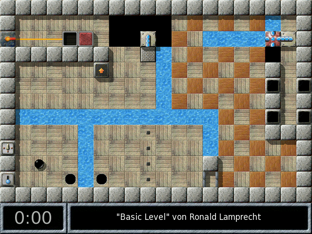

| [В начало] | [Содержание] | [Предметный указатель] | [ ? ] |
Данное руководство описывает внутреннюю структуру игры Enigma версии 1.20, в частности процесс создания уровней с использованием языка программирования Lua и особенности взаимодействия с движком игры.
| 1. Использование Enigma | ||
| 2. Основы работы с пакетами уровней | Добавление уровней в пакеты и управление уровнями | |
| 3. Основы работы с уровнями | Введение в описание уровней | |
| 4. Ключевые понятия Enigma | Принципы структуры мира, объектов и сообщений | |
| 5. Lua API | Описание уровня со всеми его объектами и взаимодействиями | |
| 6. Общие атрибуты и сообщения | Те, которые поддерживаются всеми объектами | |
| 7. Покрытия | ||
| 8. Предметы | ||
| 9. Камни | ||
| 10. Актёры | ||
| 11. Остальные объекты | Проволоки, резиновые ленты и гаджеты | |
| 12. Библиотеки | Вспомогательные функции и возможности | |
| 13. Дополнительные возможности | Преобразования, прокрутка, наводнение, пожар и т.п. | |
| 14. Разработка расширений | Разработка преобразований, библиотек | |
| 15. Советы и рекомендации | Рекомендации и подсказки для авторов уровней | |
| 16. Совместимость | Совместимость режимов и версий движка | |
| Указатель объектов | ||
| Указатель атрибутов | ||
| Указатель сообщений | ||
| Указатель функций | ||
| Указатель терминов | ||
| Список изменений | Список отличий между старым и новым API |
| [ < ] | [ > ] | [ << ] | [ Вверх ] | [ >> ] | [В начало] | [Содержание] | [Предметный указатель] | [ ? ] |
После того, как вы установили Enigma и прошли несколько уровней, вам, надеемся, будет интересно узнать, как Enigma устроена, как настроить её в соответствии со своими предпочтениями и для чего служат некоторые опции и атрибуты игры.
Эта глава должна помочь ответить на эти вопросы, а также предоставить основные сведения, которые могут понадобиться для того, чтобы управлять пакетами уровней, отдельными уровнями и создавать собственные уровни (подробно обо всём этом в следующих главах).
| 1.1 Размещение ресурсов | ||
| 1.2 Опции запуска | ||
| 1.3 Пользовательские опции | ||
| 1.4 Консольная функция инвентаря | Ввод команд и история документов | |
| 1.5 Информация об уровне | ||
| 1.6 Гандикап и пар (PAR) | Принципы подсчёта очков и гандикапа | |
| 1.7 Пользовательские наборы звуков | Создание и установка звукового сопровождения |
| [ < ] | [ > ] | [ << ] | [ Вверх ] | [ >> ] | [В начало] | [Содержание] | [Предметный указатель] | [ ? ] |
Для создания резервных копий, внесения изменений в систему, особых конфигураций, а также для добавления новых уровней (в том числе, надеемся, и своих собственных) вам нужно знать, где хранятся ресурсы Enigma и как ими можно управлять.
Для управления загрузкой игры и хранением данных служат несколько путей. Их список можно вызвать в подменю справки или запустив Enigma из консоли с опцией ‘--log’ (см. раздел Опции запуска).
Это путь к файлу с пользовательским настройками приложения. Этот файл обычно размещается у пользователя в директории HOME. Данные пользователей систем Windows, в которых HOME отсутствует, хранятся в директории ‘Application Data\Enigma’. Поскольку это третья версия игры, файл по умолчанию называется ‘.enigmarc.xml’.
Мы рекомендуем создать резервную копию этого файла, хотя там и содержится совсем немного данных, которые можно быстро восстановить.
Поскольку эти настройки очень сильно зависят от операционной системы и конфигурации, каждая установленная игра использует отдельную версию данного файла.
Для разработчиков игры существует опция ‘--pref’ (см. раздел Опции запуска), с помощью которой можно переименовать файл настроек. Запустив программу с переименованным файлом настроек, разработчик может проверить новую конфигурацию, не рискуя потерять свои собственные настройки. Также разработчик в целях проверки может использовать переименованный файл, чтобы запустить игру со стандартной конфигурацией.
В любом случае файл настроек будет скрыт при помощи знака ‘.’ в начале имени файла.
В этой папке хранится основная часть пользовательских данных игры. Здесь содержатся все обновления, уровни, написанные или установленные пользователем, счёт, история и, как правило, сделанные пользователем снимки экрана и эскизы уровней.
Обязательно создайте резервную копию этой папки!
Её стандартное размещение — директория ‘.enigma’ в вашей директории HOME. В системах Windows, в которых отсутствует HOME, этой цели служит директория ‘%APPDATA%\Enigma’, которая разрешается в подпапку ‘Application Data\Enigma’ в Windows XP/2000 или ‘AppData\Roaming\Enigma’ в Vista/Windows 7, расположенную в папке данных пользователя.
В папке пользователя также хранятся файлы журналов событий и ошибок.
Путь к папке с пользовательскими данными можно задать в меню Настройки (см. раздел Пользовательские опции). Так можно сохранить данные игры на внешнем накопителе или общем разделе жёсткого диска и использовать их на различных установках Enigma.
Это ещё одна пользовательская папка Enigma. В ней хранятся изображения, в частности снимки экрана и эскизы уровней. Обычно папка пользователя, указанная в строке ‘Папка пользователя’, является одновременно и папкой изображений.
Если вы делаете много снимков экрана, а место в директории, указанной в строке ‘Папка пользователя’ ограничено, можно задать отдельный путь для папки с изображениями в меню Настройки (см. раздел Пользовательские опции).
В этой папке содержатся все системные ресурсы дистрибутива Enigma. Здесь находятся уровни, библиотеки и т. д. Начинающим создавать свои собственные уровни обязательно нужно сюда заглянуть в поисках примеров.
Это список папок. Каждый ресурс, независимый от версии игры, ищется во всех папках из этого списка и загружается из первой найденной папки.
Пользовательские данные в этом списке предваряют системные данные. Таким образом, приоритетом обновления обладают папки пользователя. Если вы заметили разницу между изначальным поведением программы и её работой в данный момент, обратите внимание на этот список. Возможно, вы посмотрели на файл, который был перекрыт другим файлом из предыдущего пути в этом списке.
В этой папке размещаются данные локализаций.
Обратите внимание, что некоторые ресурсы, например уровни, могут храниться в zip-архивах. В таких случаях ресурс, который вы ожидаете найти по адресу ‘имя_директории/имя_файла’, может храниться в zip-файле ‘имя_директории.zip’. Путём к файлу в zip-архиве может выглядеть как ‘имя_директории/имя_файла’ или ‘./имя_файла’. В случае, если ресурс присутствует как в виде zip-файла, так и в другом формате, приоритет отдаётся второму файлу, так как программа воспринимает его как обновление zip-файла.
| [ < ] | [ > ] | [ << ] | [ Вверх ] | [ >> ] | [В начало] | [Содержание] | [Предметный указатель] | [ ? ] |
Помимо запуска игры с помощью щелчка по ярлыку на рабочем столе или меню "Пуск", Enigma можно запустить из оболочки или командной строки. Это позволяет добавить при запуске игры набор опций, который будет действовать только для данного запуска.
Для многократного использования одинакового набора опций запуска можно создать ярлык на рабочем столе или запись в меню "Пуск" и добавить опции запуска к целевой строке исполняемого файла Enigma.
Ниже следует список поддерживаемых программой пользовательских опций. Если в списке указано как полное имя опции, следующее за двумя знаками "минус", так и однобуквенное сокращение, следующее за одним знаком "минус", используйте один из вариантов (а не два одновременно), например: ‘--data путь’ или ‘-d путь’.
Опция, предназначенная для разработчиков игры, которая принудительно выполняет все отладочные проверки, даже ресурсоёмкие. Результаты дополнительной проверки выглядят примерно так: ‘ASSERT(noAssert || long_lasting_check(), XLevelRuntime, "remark");’.
Опция, предназначенная для разработчиков игры; она позволяет добавить к списку путей ресурсов дополнительный путь, который будет располагаться перед путём к системной папке (см. раздел Опции запуска). Разработчик может проверить сборку Enigma, не устанавливая её, посредством её вызова из оболочки с текущей рабочей директорией в качестве главной директории с помощью опции ‘src/Enigma -d ./data’.
Просто выводит на экран все опции запуска и завершает свою работу.
Опция, позволяющая выбрать язык игры. Язык задаётся стандартным двухбуквенным обозначением, например ‘fr’ для французского или ‘ru’ для русского.
Эта опция добавляет к стандартному выводу внутреннюю информацию. Пользователи Windows могут найти её в файле ‘Output.log’ в стандартной ‘Папке пользователя’. В ещё одном файле ‘Error.log’ перечислены критические ошибки.
В выводимую информацию будут включены, к примеру, пути, описанные в разделе Размещение ресурсов.
Опция для разработчиков Enigma; она отключает в игре управление мышью. В этом режиме вы вряд ли сможете пройти хотя бы один уровень, но это даёт возможность исправлять ошибки в ядре приложения.
Запускает игру с выключенным музыкальным сопровождением.
Запускает игру с выключенным звуковым сопровождением.
Имя альтернативного файла настроек (без точки для имён скрытых файлов в начале). Как поясняет раздел Размещение ресурсов, эта опция предназначена исключительно для разработчиков игры.
Путь к альтернативной директории, в которой содержится файл настроек со стандартным именем ‘.enigmarc.xml’. Если файл настроек или папка не существуют, они автоматически создаются. При создании файла настроек здесь по умолчанию располагается пользовательская папка данных. Это позволяет размещать все пользовательские данные игры в отдельной директории, которая может располагаться где угодно, например на USB-накопителе. Чтобы использовать эту новую настройку, всегда нужно запускать Enigma с данной опцией. Помните, что путь, содержащий пробелы, нужно заключать в кавычки.
Перенаправляет ‘stdout’ и ‘stderr’ в файлы с названиями ‘Output.log’ и ‘Error.log’ в стандартной папке пользователя (см. раздел Размещение ресурсов). Для Windows данная опция всегда имеет значение true, но она полезна на любых операционных системах, если Enigma запускается через ярлык на рабочем столе или кнопку меню.
Закрытие всех подключений к Интернету. При этом не будут выполняться никакие автоматические обновления и на все запросы пользователя, для выполнения которых требуется подключение к Интернету, будет выводиться сообщение об ошибке.
Позволяет отображать во время игры количество кадров в секунду (FPS).
Отображает номер версии и завершает свою работу.
Позволяет запустить Enigma в оконном режиме (не в полноэкранном).
Enigma интерпретирует все дальнейшие аргументы командной строки как адреса файлов уровней. Можно вводить абсолютные или относительные адреса файлов уровней, размещённых на компьютере. Также можно добавлять URL для уровней, выложенных в Интернете.
Пользователи Unix могут запустить Enigma при помощи следующей команды:
enigma --log ~/mylevel.xml http://somewhere.com/netlevel.xml
Пользователи Windows могут запустить Enigma из командной строки (не забудьте внести изменения в путь установки, чтобы он соответствовал пути установки Enigma на компьютере):
C:\Programs\Enigma\enigma.exe --log demo_simple.xml
Эти уровни можно найти в пакете уровней ‘Startup Levels’. По умолчанию он является видимым, только если в командной строке указаны какие-либо уровни.
| [ < ] | [ > ] | [ << ] | [ Вверх ] | [ >> ] | [В начало] | [Содержание] | [Предметный указатель] | [ ? ] |
Пожалуйста, для версий ниже 1.00 оставьте следующее значение для этой опции: ‘Не обновлять’.
Введите ник, под которым Enigma будет сохранять ваши баллы. Пожалуйста, взгляните на список уже используемых ников на домашней странице Enigma и выберите ещё не используемый. Свой ник можно изменить в любой момент, не рискуя потерять свои данные.
Как поясняет раздел Размещение ресурсов, здесь можно указать произвольную директорию для хранения ваших пользовательских данных.
Если очистить данную строку, то данные будут размещены в директории по умолчанию.
Enigma активирует новый путь к папке эскизов после выхода из меню настроек. Хотя она сохраняет все файлы в новой папке и ещё может находить файлы в старой, мы советуем сразу выйти из игры и перенести данные из старой папки в новую. Это необходимо, так как при следующем запуске Enigma будет работать с данными только в новой директории.
Как поясняет раздел Размещение ресурсов, здесь можно ввести новую директорию для пользовательских изображений.
Если очистить данную строку, то данные будут размещены в директории по умолчанию.
Enigma активирует новый путь к папке эскизов после выхода из меню настроек. Хотя она сохраняет все файлы в новой папке и ещё может находить файлы в старой, мы советуем сразу выйти из игры и перенести данные из старой папки в новую. Это необходимо, так как при следующем запуске Enigma будет работать с данными только в новой директории.
| [ < ] | [ > ] | [ << ] | [ Вверх ] | [ >> ] | [В начало] | [Содержание] | [Предметный указатель] | [ ? ] |
Нижняя правая область экрана, где обычно отображаются предметы, содержащиеся в инвентаре, и прокручиваются тексты активированных документов, также позволяет пользователю выводить тексты ранее активированных документов, вводить тесктовые команды и повторно вводить предыдущие команды.
Команду можно ввести с клавиатуры. Просто введите команду и активируйте её, нажав клавишу <Enter>. Поддерживаются следующие команды:
Выводит список всех доступных пользователю команд.
Завершение уровня и возврат в меню уровней. Аналогично нажатию <Alt+X>
Просто шутка.
Выводит "читы", предназначенные для быстрого тестирования уровня его разработчиком.
Необходимый разработчикам "чит", отключающий столкновения между камнями и шариками или жемчужинами. При его использовании счёт в случае успешного завершения уровня сохранён не будет.
Перезапуск уровня в простом режиме.
Осуществляет во всех пакетах уровней поиск уровней, которые содержат указанную строку в заглавии, имени автора или имени файла.
Необходимый разработчикам "чит", который защищает актёров, присвоенных текущему игроку, подобно активированному объекту it_umbrella. При его использовании счёт в случае успешного завершения уровня сохранён не будет.
Переход в режим охоты за мировыми рекордами. Аналогично выбору иконки мирового рекорда на левой кнопке в меню уровней.
Выводит информацию об уровне, включая пакет уровней, расположение в пакете, путь к файлу, заглавие, автора, версию и внутренний идентификатор уровня.
Непосредственный запуск указанного уровня. Для пакета уровней указывается его название. Для уровня указывается его порядковый номер в пакете. Например jumpto Enigma IV,33.
Выключает режим охоты за мировыми рекордами. Аналогично выбору иконки шарика на левой кнопке в меню уровней.
Перезапуск уровня в сложном режиме.
Перезапуск уровня в ранее выбранном режиме сложности.
Убивает актёров, но без завершения уровня, если это возможно. Аналогично нажатию клавиши F3>.
Игра сохраняет историю команд и отображаемых документов. Эту историю можно вывести с помощью стрелок вверх и вниз.
Стрелка вверх, изначально нажатая при отображении предметов в инвентаре, позволяет прокручивать ранее введённые команды. Повторно отправить команду можно нажатием клавиши <Enter>. История будет пересортирована, при этом последняя команда окажется непосредственно над инвентарём. Историю команд можно редактировать в любой момент, в том числе и добавлять туда новые команды. Если после ввода команды не была нажата клавиша <Enter>, строка всё же будет записана и выведена в качестве первой команды над инвентарём. История команд постоянно поддерживается в актуальном состоянии.
Историю документов можно вызвать с помощью стрелки вниз. Все документы, ранее отображённые на уровне, можно вывести повторно. Кроме того, можно снова вывести информацию, отображаемую при запуске уровня.
Если клавишу вверх или вниз нажать после вывода на экран, соответственно, самой ранней команды или сообщения, то будет осуществлён возврат к инвентарю.
| [ < ] | [ > ] | [ << ] | [ Вверх ] | [ >> ] | [В начало] | [Содержание] | [Предметный указатель] | [ ? ] |
Enigma хранит гораздо больше сведений о каждом уровне, чем можно отобразить в меню уровней. Эти сведения можно просмотреть с помощью инспектора уровней. Его можно вызвать, щёлкнув правой кнопкой мыши (или любой кнопкой мыши + Ctrl) по эскизу уровня в меню уровней.
Помимо названия и автора уровня Enigma приводит публичный рейтинг уровня, различные типы баллов, информацию о версии уровня, размещении файла уровня и др. Также в инспекторе уровней можно ввести своё примечание к уровню. Из инспектора уровней можно просмотреть и сделанные снимки экрана уровня.
| 1.5.1 Публичные рейтинги | ||
| 1.5.2 Баллы | ||
| 1.5.3 Версии | ||
| 1.5.4 Личные примечания и оценки | ||
| 1.5.5 Снимки экрана |
| [ < ] | [ > ] | [ << ] | [ Вверх ] | [ >> ] | [В начало] | [Содержание] | [Предметный указатель] | [ ? ] |
Большинство уровней игры оцениваются по пяти различным категориям:
Мы используем сокращения, чтобы подчеркнуть отличие наименований категорий рейтинга от повседневных значений этих слов. В каждой из этих категорий уровни оцениваются по пятибалльной шкале от 1 (лёгкий) до 5 (сложный), за исключением категории ‘знан’, где уровням может присваиваться 6 баллов (уникальный механизм).
Пожалуйста, имейте в виду, что строго придерживаться приведённых ниже критериев в почти 750 случаях чрезвычайно затруднительно, поэтому в отдельных уровнях могут быть (и будут) отклонения от них.
Интеллект (инт)
Этот рейтинг отражает творческие и аналитические способности, а также способность к планированию, необходимые для решения уровня. Интеллект сам по себе довольно сложное понятие, которое не так-то легко сразу понять или оценить. Следовательно, фиксированные определения каждого пункта оценочной шкалы не только желательны, но и необходимы при выставлении оценок. Допустим, вам известны все отдельные элементы уровня. Задайте себе следующие вопросы:
Высокие рейтинги обычно присваиваются головоломкам. Инт-рейтинги не накапливаются: рейтинг уровня определяет его самая сложная задача.
Ловкость (ловк)
Для решения многих уровней вам потребуются, главным образом, точные движения мышкой или терпение. В данном случае под ловкостью мы понимаем не "аккуратность в противоположность поспешным, нетерпеливым движениям", а точность, необходимую, чтобы избежать смерти. Таким образом, данный рейтинг учитывает все потенциальные смертельные опасности уровня, не только пропасти и смертоносные камни, но и, например, потенциальную возможность случайно толкнуть нужный камень в угол, достать из которого его невозможно.
В противоположность инт-рейтингам, данные рейтинги могут накапливаться: так, уровень, на котором имеется множество опасностей, оцениваемых в три балла, в результате может получить 4 или даже 5. Роторы в уровнях также ассоциируются с рейтингами ловкости ‘ловк’ и скорости (‘скор’). Поэтому уровни с комбинацией из ‘ловк-скор’ в основном подвижные и активные, тогда как комбинации с высокими ‘ловк-терп’ характерны для лабиринтов.
Терпение (терп)
Терпение — это субъективный рейтинг; он в большей степени отражает "ощущение времени", много ли времени потребовалось для решения уровня, исходя из субъективных ощущений игрока. Таким образом, два однотипных уровня могут иметь различные терп-рейтинги, если, например, у одного из них более привлекательный дизайн или прогресс игрока на нём более очевиден (например, сразу видно количество открытых оксидов). Необходимость много раз начинать уровень заново оказывает существенное влияние на этот рейтинг; важно не время в нижнем левом углу экрана и не счёт, а субъективное ощущение времени, прошедшего с момента, как вы впервые окинули уровень взглядом, до завершения уровня.
Большое количество оксидов на уровне может повысить его терп-рейтинг или же понизить его: если игроку нужно обойти уровень несколько раз, чтобы открыть все пары оксидов, это определённо повышает рейтинг. Однако, если оксиды расположены так, чтобы отмечать прогресс игрока, и являются своего рода наградой за пройденные этапы, они могут понизить терп-рейтинг. То же самое и с уровнями, на которых имеется большое количество дверей: решающим фактором является их расположение.
Высокие терп-рейтинги обычно присваиваются лабиринтам. В сочетании с "инт 3" высокий терп-рейтинг обычно свидетельствует о наличии на уровне спрятанного предмета или полого камня. Терп-рейтинги относятся ко всему уровню, так что они не могут накапливаться.
Знание игры (знан)
Рейтинг знания игры в основном учитывает функции и способы взаимодействия различных объектов игры, таких как камни, покрытия, предметы и актёры. Однако в некоторых случаях он учитывает и особые способы решения уровней. Основой при выставлении рейтинга является уровень "Advanced Tutorial", которому присвоен рейтинг "знан 3". Рейтинг "знан 4" присваивается уровням, на которых встречаются стандартные объекты, отсутствующие в "Advanced Tutorial". Уровни с рейтингом "знан 5" требуют более глубокого знания внутренних закономерностей игры. И, наконец, рейтинг "знан 6" является показателем уникальных либо редко встречающихся способов решения уровня. Общий знан-рейтинг уровня определяется по наиболее сложным объектам или способам решения, встречающимся на нём, и, таким образом, не накапливается:
"Знан 6" не обязательно означает, что уровень сложен для понимания; уникальный объект или механизм может быть и интуитивно понятным, как, например, во "Flood Gates".
Скорость и контроль над скоростью (скор)
Скор-рейтинг отражает не только максимальную скорость, которая требуется от игрока (например, когда вам нужно убежать от ротора), но и степень контроля над мышью, которой обладает игрок. Отличными примерами применения второго критерия являются уровень "Mourning Palace" и средняя часть "Sacrifice". Этот критерий учитывает необходимость двигать мышью с постоянной скоростью на протяжении длительного времени, а также необходимость правильной оценки скорости, требуемой для выполнения определённого задания (например, разбить стекло).
Скор-рейтинг накапливается, так как множество медленных роторов могут в сумме составить задание, по сложности подпадающее под "скор 3" или "скор 4", а несколько медленных таймеров-переключателей, которые нужно нажать в определенном порядке, могут представлять собой задание, находящееся на пределе человеческих возможностей. В отличие от остальных категорий, для которых средний рейтинг приближается к 3 (или находится между 3 и 4 для знан), большинство уровней определённо подпадают под определение "скор 1". Таким образом, скор-рейтинг можно, скорее, рассматривать как приложение к трём основным рейтингам: инт, ловк и терп.
Совокупность рейтингов
Иногда бывает интересно определить общую шкалу, по которой можно измерить сложность уровня. Простейший способ вычислить такой общий рейтинг — это выбрать линейную комбинацию пяти отдельных рейтингов, взятых с определёнными коэффициентами. Эти коэффициенты должны соответствовать тому вкладу, который данная категория вносит в общую сложность уровня. Но коэффициенты следует выбирать с осторожностью, чтобы избежать теоретических казусов при вычислении (к примеру, если коэффициенты для всех рейтингов, кроме скор, являются чётными, мы получим заметное различие в распределении чётных и нечётных общих рейтингов, что может заметно исказить картину). Ниже мы приводим работающую и чрезвычайно интересную линейную комбинацию, которую мы применяли для изменения порядка следования уровней:
общая сложность = 7*инт + 6*ловк + 4*терп + 3*знан + 4*скор - 23 |
Особенностью данного способа вычисления общего рейтинга является то, что он распределяет уровни по относительно широкой и непрерывной шкале от 1 (все рейтинги равны 1) до 100 (все рейтинги 5, знание 6) и основной упор в нём сделан на самые сложные категории — интеллект и ловкость. Однако некоторые очень низкие и очень высокие значения (например 2 и 99) не могут встречаться в этой комбинации. Другие комбинации позволяют получить полную, но узкую, либо широкую, но не являющуюся непрерывной шкалу.
| [ < ] | [ > ] | [ << ] | [ Вверх ] | [ >> ] | [В начало] | [Содержание] | [Предметный указатель] | [ ? ] |
В колонке баллов находятся ваши баллы, а также некоторые сравнительные величины для нормального и лёгкого режимов (если уровень поддерживает лёгкий режим).
Мировой рекорд — это лучшее время прохождения уровня, которое было прислано команде разработчиков Enigma. Мировые рекордсмены перечислены под колонкой с баллами.
PAR — это профессиональный усреднённый рейтинг (professional average rating) уровня. Это гармоническое среднее всех баллов, которые были присланы нам игроками. Однако мы учитываем только баллы, набранные игроками, которые решили определённое количество уровней. В отличие от мирового рекорда, побить который очень сложно, PAR представляет собой куда более достижимую цель для амбициозного игрока. Уровни, пройденные за время, равное PAR либо лучшее, чем PAR, отмечаются изображением ускоряющегося шарика в меню уровней.
Ещё один тип сведений в данной колонке — это авторское время. Большинство авторов не ставят себе цели удерживать мировые рекорды для своих собственных уровней. Однако им обычно известен кратчайший путь решения уровня. Если ваше время значительно превышает авторское, то для этого уровня, вполне возможно, существует более простое решение.
Количество решивших — это количество игроков, которые решили данную версию уровня.
Процент решивших — это отношение количества игроков, решивших данный уровень, к общему количеству игроков, приславших нам свои баллы. Мы учитываем только тех игроков, у которых была возможность решить данный уровень. К примеру, игроки, которые прислали нам свои баллы до написания уровня и после их не обновляли, нами не учитываются. Низкий процент решивших указывает на то, что решить уровень не так-то просто.
| [ < ] | [ > ] | [ << ] | [ Вверх ] | [ >> ] | [В начало] | [Содержание] | [Предметный указатель] | [ ? ] |
В колонке "Версия" содержится подробная информация об уровне. Обратитесь к разделам <version> и <modes> главы Основы работы с уровнями, где объяснены приведённые в колонке значения.
Для игрока наибольший интерес представляет строка ‘Номер версии’. На эскизе уровня, который решён за определённое время, после обновления Enigma может появиться красный треугольник. Хотя медали, которые указывают на то, что уровень решён, и присутствуют в меню уровней, баллы больше не указываются. Это происходит из-за того, что обновлённый уровень требует нового решения и баллы, набранные при решении предыдущего уровня, к нему неприменимы. В таких случаях автор увеличит номер версии уровня.
| [ < ] | [ > ] | [ << ] | [ Вверх ] | [ >> ] | [В начало] | [Содержание] | [Предметный указатель] | [ ? ] |
В этом поле можно ввести свою аннотацию уровня, которую можно изменить при повторных попытках пройти уровень. Обратите внимание, что нынешние возможности текстового поля ограничены (нельзя ввести некоторые символы, и курсор при введении текста должен оставаться в границах поля). Тем не менее, это поле подходит для ввода кратких примечаний, которые могут пригодиться позже.
Примечания хранятся в вашем персональном файле ‘state.xml’. Для каждого уровня, вне зависимости от его версии, можно ввести только одно примечание.
Кроме того, уровням можно выставлять оценки. Просто нажмите на кнопку "Рейтинг". Можно выставлять оценки от 1 до 10, знак ‘-’ означает "воздержался". 0 означает очень плохой уровень, в который, по вашему мнению, не стоит и играть, 5 обозначает средний уровень, 10 — самый лучший. Старайтесь использовать все значения при выставлении оценок.
Ваши оценки хранятся вместе с баллами и обрабатываются анонимно. Средняя оценка, полученная после обработки всех оценок, выставленных уровню игроками, выводится для вашего сведения. Обратите внимание, что для различных версий уровня возможны разные оценки, так как уровни могут улучшиться под влиянием комментариев пользователей. Если вы не выставили оценку новой версии уровня, Enigma оставляет оценку, которая была выставлена предыдущей версии.
| [ < ] | [ > ] | [ << ] | [ Вверх ] | [ >> ] | [В начало] | [Содержание] | [Предметный указатель] | [ ? ] |
Играя на уровне, можно делать снимки экрана при помощи клавиши <F10>. Можно сделать целую серию снимков экрана, чтобы получить документальные свидетельства об игре. Каждый снимок экрана программа сохраняет под уникальным именем файла. При помощи инспектора уровней можно просматривать снимки экрана прямо из игры. Просто нажмите на кнопку <Снимок экрана> для просмотра первого изображения.
Так как кнопки могут помешать просмотру, управление игрой в данном режиме осуществляется исключительно с помощью клавиатуры. Нажмите <F1> для вызова экрана помощи, <ESC>, чтобы вернуться к инспектору уровней, <Page Up> и <Page Down> для просмотра, соответственно, предыдущего и следующего снимка экрана. Если продолжить просмотр после показа последнего снимка экрана, "недостающий" файл снимка экрана получит имя. Это может быть полезной подсказкой, где искать другие файлы снимков экрана в вашей ‘папке эскизов’ (см. раздел Размещение ресурсов).
| [ < ] | [ > ] | [ << ] | [ Вверх ] | [ >> ] | [В начало] | [Содержание] | [Предметный указатель] | [ ? ] |
В то время как PAR описывает степень сложности уровня (см. раздел Баллы), гандикап (‘гкп’) описывает способность решать уровни в рамках PAR. Гандикап всегда привязан к пакету уровней либо группе пакетов. Свой гандикап для каждого пакета в меню уровней можно узнать, выбрав режим соответствия (нажимайте на кнопку в нижнем левом углу экрана, пока не появится изображение ускоряющегося чёрного шарика). Гандикап выводится в правом верхнем углу экрана вместе с количеством уровней, которые решены ниже PAR.
Гандикап в Enigma напоминает гандикап, используемый в гольфе. Чем он ниже, тем лучше. Если решить все уровни за время, равное PAR, гандикап будет равен 0. Если их решить за время, лучшее, чем PAR, гандикап будет выражаться отрицательным числом. Игроки могут использовать гандикап для сравнения своего мастерства.
Для тех, кто хочет узнать больше о PAR и гандикапе, ниже мы приводим дополнительную информацию. Остальные могут её пропустить и перейти к следующей главе Основы работы с пакетами уровней.
Мы просим всех игроков присылать нам свои баллы. Все присланные баллы учитываются при определении мировых рекордов и подсчёте процента и количества игроков, решивших уровень.
Однако при подсчете PAR мы учитываем баллы только тех пользователей, которые решили более определённого количества уровней (на данный момент примерно 10% всех уровней). Для каждого уровня мы подсчитываем гармоническое среднее баллов, набранных ‘профессиональными игроками’. Профессионалы, не решившие уровень, учитываются при подсчете с баллами в 10 раз большими, чем мировой рекорд. Гармоническое среднее вычисляется по формуле:
гарм.средн. = N / (sum_[j=1..N] 1/баллы_j) )
При таком способе подсчёта меньшее время прохождения уровня соответствует более высоким величинам, чем большее время.
Гандикап — это сумма величин, которая описывает соответствие баллов рейтингу PAR. Поскольку необходимо учитывать, что для каких-то уровней баллов у вас может и не быть либо PAR может отсутствовать, мы ввели несколько исключений:
| • | + 1.0 | Для каждого нерешённого уровня |
| • | + log10(время/par) | Для каждого решённого уровня, для которого существует PAR, если ваше время >= par |
| • | + 0.7 | Верхний предел для каждого решённого уровня, для которого существует PAR, если ваше время >= par |
| • | + log2(время/par) | Для каждого решённого уровня, для которого существует PAR, если ваше время < par |
| • | - 3.0 | Нижний предел, а также величина для уровней, для которых нет PAR |
Обратите внимание, что всем баллам, лучшим, чем PAR, соответствует отрицательная величина, таким образом они уменьшают общую величину гандикапа. Для пакета, состоящего из 100 уровней, гандикап может быть в пределах от +100 до -300. Для пакетов, состоящих из большего либо меньшего количества уровней, Enigma применяет коэффициент "100/размер пакета" для получения сравнимых величин гандикапа. Гандикапы указываются с точностью до одной десятой.
| [ < ] | [ > ] | [ << ] | [ Вверх ] | [ >> ] | [В начало] | [Содержание] | [Предметный указатель] | [ ? ] |
(Следующая информация действительна только для версии Enigma 1.01 и выше.) Звуковые эффекты вызываются так называемыми ‘звуковыми событиями’ (‘sound events’). У этих звуковых событий обычно есть имя (например ‘dooropen’ — открытие двери) и ассоциированное размещение (координаты двери), которые влияют на проигрывание звукового эффекта. Собрание всех аудио файлов, их соотнесение со звуковыми событиями, а также некоторая дополнительная информация по их использованию называется ‘набором звуков’ (‘sound set’).
Можно использовать свои собственные аудиофайлы для создания персональных наборов звуков Enigma и выбирать между наборами звуков в меню настроек (опция ‘Набор звуков’). Эти наборы звуков можно распространять на условиях любой лицензии, а также устанавливать наборы звуков, созданные другими пользователями. В игре не предусмотрено никаких ограничений на количество установленных наборов звуков.
Звуковое событие конвертируется в звуковой эффект с помощью таблиц. Эти таблицы можно найти в файле ‘data/sound-defaults.lua’, а также в пустом файле сэмплов ‘reference/soundset.lua’. Каждый пункт в этих таблицах представляет собой либо строку типа ‘enigma/st-coinslot’, которая понимается программой как файл ‘soundsets/enigma/st-coinslot.wav’ с некими свойствами по умолчанию, либо список звуковых атрибутов в фигурных скобках. Звуковые события, вызываемые с помощью сообщения sound, конвертируются таким же способом. Ниже мы приводим пример подобного пункта таблицы:
dooropen = { file="my_soundset/open-door", volume=0.9, priority=4 },
|
Данные атрибуты имеют следующие значения:
Чтобы создать новый набор звуков, следуйте следующей инструкции:
(папка пользователя)/soundsets/my_sounds/
/soundset.lua
/high_pitch.wav
/soundfile_13.wav
...
|
...
coinsloton = { file="enigma/st-coinslot" },
...
|
Если используете свои собственные файлы, не забудьте создать соответствующие подпапки, например:
...
coinsloton = { file="my_sounds/soundfile_13" },
...
|
Ни в коем случае не указывайте расширение ".wav"! Оно добавляется автоматически. Проверьте, чтобы расширение было написано строчными буквами.
Не забудьте выбрать нужный набор звуков в меню настроек всякий раз, когда вы переименовываете его. И всегда выходите из игры, когда вносите изменения в набор звуков: Enigma не определяет новые наборы звуков без перезапуска.
У вас есть право свободно распространять zip-архивы, содержащие ваш набор звуков и файл ‘soundset.lua’. Новый набор звуков можно установить из архива, просто распаковав его в поддиректорию ‘soundsets’ вашей папки пользователя. Убедитесь, что файл ‘soundset.lua’ находится на одну поддиректорию ниже, чем ‘soundsets’. Деинсталлировать набор звуков можно, просто удалив соответствующую папку. Если вы хотите сделать набор звуков невидимым для Enigma, одного только переименования директории недостаточно, следует переименовать и файл ‘soundset.lua’. Это может пригодиться, если вы используете взаимозависимые наборы звуков (звуковые наборы, использующие общие файлы) и хотите сделать недоступным только один из них.
| [ < ] | [ > ] | [ << ] | [ Вверх ] | [ >> ] | [В начало] | [Содержание] | [Предметный указатель] | [ ? ] |
Теперь, после ознакомления с основами работы с Enigma, вам, наверное, будет интересно узнать, как уровни организуются в пакеты и как можно добавить уровни либо пакеты уровней в игру.
Пакеты уровней — это отсортированные коллекции уровней, состоящие из указателя и (необязательно) приложенных к нему источников уровней. Не все источники уровней должны обязательно находиться в самом пакете. В пакете уровней могут использоваться перекрёстные ссылки на уровни из других пакетов. Если пакет не содержит собственных источников и состоит исключительно из перёкрестных ссылок, уместно называть его перекрёстным указателем, поскольку он представляет собой только файл-указатель.
Приведённое выше описание соответствует всем версиям Enigma. Однако вплоть до версии 0.92 пакеты уровней нужно было редактировать вручную, а регистрация пакетов была сложным процессом. Поэтому для версии Enigma 1.00 мы решили переписать всю систему пакетов, постаравшись сделать её гибкой и лёгкой в использовании. Мы преследовали следующие цели:
Некоторые из этих функций работают автоматически. Их можно задействовать прямо из меню уровней. Для использования других необходимо знать, где размещать файлы. Более подробная информация приводится в следующих разделах:
| [ < ] | [ > ] | [ << ] | [ Вверх ] | [ >> ] | [В начало] | [Содержание] | [Предметный указатель] | [ ? ] |
Одна из наиболее выдающихся черт Enigma — это возможность добавлять в неё новые уровни. А сообщество пользователей обычно присылает нам несколько новых превосходных уровней каждую неделю.
Добавить новый уровень, полученный в виде XML-файла, очень просто. Найдите поддиректорию ‘levels/auto’ в вашей ‘папке пользователя’ (см. раздел Размещение ресурсов), скопируйте файл уровня в эту папку и перезапустите игру. Новый уровень появится в пакете ‘Auto’ и в него можно будет сыграть точно так же, как и в любой другой.
Обратите внимание, что для уровней, содержащих ошибки либо несовместимых с данной версией, в меню уровней отображается значок ошибки. Естественно, при попытке сыграть в уровень будет получено сообщение об ошибке Просмотрите метаданные уровня в инспекторе уровня (см. раздел Информация об уровне), чтобы определить совместимую версию, и свяжитесь с автором уровня по электронной почте в случае наличия ошибок в коде.
Второй способ сыграть в новые уровни — это добавить адреса файлов этих уровней в командную строку (см. раздел Опции запуска). Так можно играть в уровни, которые хранятся где угодно, можно даже вводить URL уровней, размещённых в Интернете. Уровни, добавленные в командную строку, находятся в пакете ‘Startup Levels’.
При желании сыграть в уровень Lua, написанный с использованием устаревшего формата для Enigma 0.92 или более ранней версии, можно попытаться запустить его из командной строки. В таких уровнях отсутствуют необходимые метаданные для автоматического определения. Однако уровни, заданные из командной строки, воспринимаются игрой как временные, доступные только для одного запуска; недостающие данные заменяются уместными данными по умолчанию. Такой уровень, возможно, запустится, но сохранение баллов, копирование и ссылки на уровень будут невозможны.
Помимо отдельных новых уровней в сообществе пользователей могут распространяться целые пакеты. Эти пакеты могут представлять собой папки с уровнями, zip-архивы или отдельные XML-файлы. Все пакеты могут быть установлены простым копированием файлов, но между этими тремя форматами существуют различия.
Пакеты уровней, распространяемые в виде папок с файлами уровней и файлом-указателем, следует копировать в папку ‘levels’ в вашей папке пользователя (см. раздел Размещение ресурсов).
Пакеты уровней, распространяемые в виде zip-архивов, следует копировать в папку ‘levels’ в вашей папке пользователя. Распаковывать их не обязательно, хотя это и возможно (см. раздел Пакеты в формате zip).
Пакеты уровней, распространяемые в виде отдельных файлов-указателей XML, следует копировать в папку ‘levels/cross’ в вашей папке пользователя.
Все новые пакеты должны быть доступны из меню пакетов уровней после перезапуска Enigma.
Это всё, что нужно знать для того, чтобы добавлять новые уровни и пакеты уровней для тестирования и игры. Если вы заинтересованы прежде всего в том, чтобы создавать новые уровни, то стоит сразу же обратиться к главе Основы работы с уровнями. В остальных же разделах этой главы объясняется, как размещать и сортировать уровни в пользовательских пакетах.
| [ < ] | [ > ] | [ << ] | [ Вверх ] | [ >> ] | [В начало] | [Содержание] | [Предметный указатель] | [ ? ] |
В связи с изменением формата указателя пакета уровней возникла необходимость в конвертировании пакетов из предыдущих версий. Хотя основная работа выполняется автоматически при запуске Enigma, в некоторых случаях требуется подготовка вручную. К тому же и после автоматического преобразования полезно вручную подчистить его результаты.
Если раньше вы хранили пакеты в папке системных файлов Enigma, то из старой версии игры их нужно скопировать в поддиректорию ‘levels’ в папке пользователя (см. раздел Размещение ресурсов). Пользовательская папка существует на всех системах, и, начиная с версии 1.00, Enigma никогда не вносит изменения в системную директорию файлов уровней; обновления и преобразование она выполняет только в папке пользователя. Если пакеты были внесены в файл ‘index.lua’ в системной директории, то нужно скопировать регистрационные строки в файл ‘index_user.lua’, который следует хранить в папке пользователя.
Если у вас было несколько пакетов уровней, в Enigma 0.92 их можно было хранить в различных поддиректориях папки ‘levels’. Однако, поскольку можно было хранить все файлы уровней и различные указатели в самой папке ‘levels’, с автопреобразованием возникнут трудности, так как Enigma 1.00 допускает только один пакет уровней с приложенными файлами уровней в каждой папке. В подобных случаях мы рекомендуем поэтапное преобразование: на каждом этапе конвертируйте только один старый указатель. Enigma сконвертирует этот указатель в новый файл ‘index.xml’. Переместите полученный указатель в соответствующую папку вместе с уровнями и приступайте к преобразованию нового пакета.
Следует отдельно рассмотреть случаи, когда указатель в папке ‘levels’ содержал ссылки на уровни, хранящиеся в различных поддиректориях папки ‘levels’. Поскольку в Enigma 0.92 не применялись перекрёстные указатели, а Enigma 1.00 требует, чтобы все файлы уровней пакета хранились в отдельной папке, алгоритму преобразования приходится самому определять нужную папку. Он просто берёт поддиректорию первого уровня. Если это не подходит, то перед преобразованием нужно очистить пакет из версии 0.92.
Все прочие стандартные пакеты уровней Enigma конвертирует без особых проблем. Преобразование она выполняет только один раз. После создания нового файла ‘index.xml’ используется только этот указатель. Следовательно, после тщательной проверки старый ‘index.txt’ может быть удалён. Мы рекомендуем сохранять резервную копию старого индекса до окончательного перехода на Enigma 1.00.
Если вы использовали персональный пакет уровней в формате zip, то вы найдёте поддиректорию с именем zip-архива в папке ‘levels’. В этой папке Enigma сохраняет конвертированный файл ‘index.xml’. Вам, скорее всего, придётся заменить старый ‘index.txt’ в zip-архиве на новый указатель. После этого поддиректория может быть полностью удалена, так как Enigma будет загружать указатель прямо из zip-архива.
После окончания конверсии пакетов мы настоятельно рекомендуем обновить уровни до нового формата XML (см. раздел Основы работы с уровнями).
| [ < ] | [ > ] | [ << ] | [ Вверх ] | [ >> ] | [В начало] | [Содержание] | [Предметный указатель] | [ ? ] |
Помимо классических пакетов уровней, представляющих собой поддиректорию папки ‘levels’ с файлом ‘index.xml’ и несколькими файлами уровней, в Enigma 1.00 предусмотрен совместимый формат zip-архивов. Zip-формат позволяет уменьшить размер ресурсов игры и облегчает распространение пакетов.
Этот формат стопроцентно совместим. Если у вас есть обычный пакет уровней, размещённый в поддиректории, то можно просто заархивировать всю папку и назвать архив её именем с расширением .zip. Теперь эту папку можно полностью удалить: Enigma автоматически определит пакет уровней и позволит играть в него без ограничений. Сохранятся даже перекрёстные ссылки на этот пакет.
С другой стороны, Enigma предоставляет возможность превратить заархивированный пакет в папку с указателем и файлами уровней. Опять же, на уровнях из пакета можно играть без ограничений и все перекрёстные ссылки сохраняются.
Если сохранить и архив, и папку, то файлы папки обладают приоритетом перед архивом. Таким образом, Enigma сохраняет обновления в поддиректориях параллельно с существующими zip-архивами.
| [ < ] | [ > ] | [ << ] | [ Вверх ] | [ >> ] | [В начало] | [Содержание] | [Предметный указатель] | [ ? ] |
С увеличением количества пакетов возникла необходимость сгруппировать их в меню. Мы попытались предложить набор групп по умолчанию, основанный на простом и удобном распределении пакетов по группам:
Тем не менее, своё мнение мы не навязываем. Вы вольны переименовывать группы, добавлять новые и изменять расположение пакетов. Как и в случае с другими аспектами Enigma, управлять пакетами и группами пакетов можно, щёлкнув любой кнопкой мыши + Ctrl либо одной правой кнопкой по кнопке соответствующего пакета или группы.
В меню конфигурации групп можно переименовать группу либо изменить её расположение. Группе можно выбрать любое имя, которое ещё не использовалось, не заключено в квадратные скобки и отличается от ‘Every Group’. Обратите внимание, что, возможно, вам не удастся ввести все желаемые символы. Приносим извинения за это неудобство.
В меню конфигурации пакетов можно поместить пакет в какую-либо группу. Список групп содержит два специальных пункта: ‘[Every Group]’ и ещё одно имя в квадратных скобках. При выборе первой псевдогруппы пакет уровней отображается в каждой группе. Это является размещением по умолчанию группы ‘Startup Levels’. Второе имя в квадратных скобках — это группа, в которой по умолчанию размещается сам пакет уровней. Это подсказка, которая позволит переадресовать пакет уровней в группу по умолчанию, даже если удалить саму группу.
| [ < ] | [ > ] | [ << ] | [ Вверх ] | [ >> ] | [В начало] | [Содержание] | [Предметный указатель] | [ ? ] |
Чтобы создать новый пакет уровней, выберите группу, в которую следует этот пакет добавить. Скорее всего, это будет группа ‘User’. Щёлкните любой кнопкой мыши + Ctrl или одной правой кнопкой по группе, затем нажмите на кнопку ‘Новый пакет’. На экране отобразится меню конфигурации пакетов, где можно ввести все данные, необходимые для создания пакета уровней.
Вначале нужно ввести имя пакета. Здесь также есть ограничение в выборе символов, которые можно использовать для имён файлов. Разрешается использовать алфавитно-цифровые символы A-Z, a-z, 0-9, пробелы, "_" и дефис. Обратите внимание, что позже вы сможете переименовать пакет, если захотите дать ему более удачное или более подходящее имя (см. раздел Изменение и удаление пакетов).
После этого следует определить, хотите ли вы создать пакет, в котором могут находиться источники уровней или только перекрёстные ссылки. Первый вариант удобен для хранения самостоятельно написанных либо загруженных из Интернета уровней. Пакет с перекрёстными ссылками можно использовать для хранения коллекций своих любимых уровней, для которых просто отбираются существующие уровни из других пакетов, исходя из своих собственных критериев. Нужный тип пакета можно выбрать с помощью кнопки ‘Типы уровней’, которая использует символы для ссылок и копий.
‘Размещение’ — это величина, которая определяет размещение среди групп пакетов, если пакет не был пересортирован вручную (см. раздел Группировка и сортировка пакетов). Эта задаваемая по умолчанию величина имеет значение, только если вы распространяете свой пакет и хотите быть уверенным, что пользователи поместят этот пакет там, где нужно. В большинстве случаев величина, автоматически задаваемая после создания нового пакета, является оптимальной.
Можете указать себя в качестве владельца или создателя пакета. Это просто строка для идентификации.
Наконец, после окончания настройки вы можете создать пакет, нажав кнопку ‘OK’. Enigma создаст новый пакет в папке пользователя (см. раздел Размещение ресурсов).
Если вы решите не создавать новый пакет, нажмите кнопку ‘Отмена’. В этом случае всё останется без изменений.
Если вы хотите сразу же добавить уровни в пакет, нажмите кнопку ‘Составить пакет’. Enigma создаст пакет, и вы сможете использовать составитель пакетов, чтобы наполнить этот пакет уровнями.
| [ < ] | [ > ] | [ << ] | [ Вверх ] | [ >> ] | [В начало] | [Содержание] | [Предметный указатель] | [ ? ] |
Чтобы изменить пакет, щёлкните по нему любой кнопкой мыши + Ctrl либо одной правой кнопкой в меню пакетов уровней. На экран будут выведены метаданные всех пакетов. Однако кнопка ‘Ред. метаданные’ появится только для ваших собственных пакетов, которые хранятся в папке пользователя. Нажав на неё, можно отредактировать метаданные.
Пакет можно переименовать, но нельзя изменить имена файлов. Enigma будет использовать новое имя в качестве логического имени пакета, которое отображается в меню.
Другие свойства, которые можно изменить, включают в себя ‘Размещение’ и ‘Владелец’.
Имейте в виду, что изменить тип уже существующего пакета нельзя. Следует создать новый пакет нужного типа и скопировать туда уровни (см. раздел Составление пакетов уровней).
Во избежание случайной потери файлов уровней в игре не предусмотрена функция удаления пакетов. Тем не менее, пакет можно удалить, просто удалив папку с этим пакетом из вашей папки пользователя. Для пакетов, состоящих из перекрёстных ссылок, просто нужно удалить файл-указатель XML в поддиректории ‘levels/cross’ вашей папки пользователя.
| [ < ] | [ > ] | [ << ] | [ Вверх ] | [ >> ] | [В начало] | [Содержание] | [Предметный указатель] | [ ? ] |
Изменения в состав пакета могут быть внесены при помощи составителя пакетов. Его можно вызвать, нажав любой кнопкой мыши + Ctrl либо одной правой кнопкой мыши на кнопку пакета в меню пакетов уровней, а затем на кнопку ‘Составить пакет’ в меню конфигурации пакета.
Составитель выглядит почти так же, как меню уровней, но отличается от него своими функциями. Список всех команд можно вывести на экран с помощью клавиши <F1>. При составлении собственного пакета уровни пакета отображаются в красной рамке. Это предупреждение о том, что вы можете модифицировать этот пакет. В системных пакетах (поставляемых с дистрибутивом Enigma) уровни отображаются в серой рамке, поскольку составитель можно использовать только для того, чтобы скопировать уровни в буфер обмена.
Буфер обмена позволяет выбрать уровни из одного или нескольких пакетов и вставить их в виде копии либо перекрёстной ссылки в свой пакет. Сначала очистите буфер обмена при помощи клавиш ‘Shift + delete’. Затем выберите нужные уровни из составителя. Добавьте их в буфер обмена с помощью ‘Shift + щелчок’. Они отобразятся в строке вверху экрана. Вернитесь в пакет, в который желаете добавить уровни. Выберите уровень, после которого желаете вставить уровни. Используйте клавишу ‘F8’, чтобы вставить уровни из буфера в виде ссылок. При редактировании пакета, в котором допускаются копии уровней, их можно вставить при помощи клавиши ‘F9’.
При внесении каких-либо изменений в пакет уровней в левом верхнем углу экрана появляется маленький красный треугольник. Подтвердить все изменения можно, выйдя из составителя с помощью кнопки ‘OK’. Если выйти из составителя с помощью кнопки ‘Отмена’, то все изменения будут отменены.
Помимо добавления уровней, их можно удалять с помощью клавиши ‘delete’. Имейте в виду, что если удалить уровень, который является файлом, а не просто ссылкой, то Enigma удалит и сам файл уровня. Будьте осторожны с уровнями, на эскизе которых имеется изображение документа. Отменить удаление можно с помощью кнопки ‘Отмена’.
Сортировка уровней осуществляется с помощью клавиш ‘alt + стрелка влево’ и ‘alt + стрелка вправо’. Новый порядок следования уровней отображается на экране незамедлительно, и его можно сохранить, нажав кнопку ‘OK’.
Чтобы обновить индекс уровней, можно воспользоваться клавишей ‘F5’. Это может пригодиться во время редактирования уровня. В пакете отразятся изменения названия, версии, появление простого режима для уровней и т. д. Все уровни пакета Enigma обновляет одновременно.
Используя пакет уровней Auto и составитель пакетов, можно создавать пакеты, состоящие из ваших собственных уровней: создайте новый пакет, добавьте файлы уровней в папку ‘auto’, перезапустите игру, добавьте уровни из папки ‘auto’ в буфер обмена, с помощью составителя вставьте уровни из буфера обмена в свой пакет в виде копии и удалите неиспользуемые файлы уровней из папки ‘auto’.
| [ < ] | [ > ] | [ << ] | [ Вверх ] | [ >> ] | [В начало] | [Содержание] | [Предметный указатель] | [ ? ] |
Сыграв в несколько уровней Enigma, вы наверняка заметили, что Enigma — довольно динамичная игра с разнообразными уровнями. Поэтому нет ничего удивительного в том, что такие уровни невозможно описать каким-то определённым способом, как простую карту с объектами в Сокобане. Некоторые уровни, такие как лабиринты, каждый раз генерируют свой вид заново и во время каждого сеанса игры выглядят по-разному. Другие уровни предусматривают динамику в процессе игры, например, переключатели могут открывать двери только при определённых условиях. Чтобы обеспечить эти возможности, мы встроили в Enigma мощное и лёгкое расширение языка C — Lua версии 5.1.4.
Вплоть до Enigma версии 0.92 существовало два различных формата уровней. Один из них был XML-подобным форматом, разработанным в основном для сторонних редакторов уровней. Из-за того, что его описание статической карты объектов было неудобно редактировать вручную, многие авторы никогда этот формат не использовали. Вторым форматом был обычный код Lua, который использовался в качестве интерфейса для Lua-функций Enigma по добавлению объектов и функций обратного вызова. Почти все авторы использовали этот формат, но у него был небольшой недостаток: при его использовании хранить метаданные уровня (такие как имя автора, информацию о лицензии и, конечно же, название самого уровня) можно было только в виде неформатированных комментариев Lua, которые нужно было заново вставлять вручную в структуру пакетов уровней.
С XML-икацией Enigma после выхода версии 0.92 мы добились полной поддержки XML, интегрировав Apache Xerces и задались целью избавиться от недостатков старого формата уровней и добавить некоторые новые недостижимые ранее возможности:
Позвольте привести пример готового простого уровня ‘Hello World’ в новом формате:
<?xml version="1.0" encoding="UTF-8" standalone="no" ?>
<el:level xsi:schemaLocation="http://enigma-game.org/schema/level/1 level.xsd" xmlns:el="http://enigma-game.org/schema/level/1">
<el:protected >
<el:info el:type="level">
<el:identity el:title="Demo Simple" el:id="20060210ral001"/>
<el:version el:score="1" el:release="1" el:revision="2" el:status="stable"/>
<el:author el:name="Ronald Lamprecht"/>
<el:copyright>Copyright © 2006,2009 Ronald Lamprecht</el:copyright>
<el:license el:type="GPL v2.0 or above" el:open="true"/>
<el:compatibility el:enigma="1.10"/>
<el:modes el:easy="false" el:single="true" el:network="false"/>
<el:score el:easy="-" el:difficult="-"/>
</el:info>
<el:luamain><![CDATA[
ti[" "] = {"fl_lawn_b"}
ti["#"] = {"st_box"}
ti["o"] = {"st_oxyd"}
ti["@"] = {"#ac_marble"}
wo(ti, " ", {
"####################",
"# #",
"# o @ o #",
"# #",
"####################",
})
]]></el:luamain>
<el:i18n/>
</el:protected>
</el:level>
|
Несложно заметить, что XML-часть содержит все привычные метаданные, поставляемые автором уровня. Это, по сути, формула, которую можно скопировать из шаблона и заполнить.
Код Lua вставлен в XML. Единственное ограничение для Lua-части состоит в том, что для обозначения конца она резервирует ‘]]>’ и может понадобиться заменить его на ‘]] >’. Больше никаких ограничений нет.
Поскольку приведённый выше пример включает в себя все обязательные части XML, скорее всего, нам больше не потребуется вносить существенные изменения для авторов уровней на Lua (как мы того и хотели).
Приведённый пример можно найти в пакете уровней ‘Experimental’ из группы ‘Development’. Исходный код находится в поддиректории ‘levels/enigma_experimental’ системного пути (см. раздел Размещение ресурсов).
Если вы пробуете себя в программировании, используя копию этого уровня в качестве шаблона, то добавьте её в папку Auto (см. раздел Начало работы с пакетами уровней) либо используйте как аргумент в командной строке (см. раздел Опции запуска).
В следующих разделах мы остановимся на подробностях форматирования и поясним необязательные части.
| [ < ] | [ > ] | [ << ] | [ Вверх ] | [ >> ] | [В начало] | [Содержание] | [Предметный указатель] | [ ? ] |
Скорее всего, вам хочется понять основные принципы расположения объектов на уровне. Здесь приведено описание очень простого уровня, которое также может служить отправной точкой для новых уровней. (Вообще-то, это первый уровень Enigma, так что можете попробовать сыграть в него прямо сейчас.)
1 ti[" "] = {"fl_gravel"}
2 ti["#"] = {"st_box"}
3 ti["O"] = {"st_oxyd"}
4 if wo["IsDifficult"] then
5 ti["Q"] = {"st_quake", name="quake"}
6 ti["T"] = {"st_timer", interval=10.0, target="quake"}
7 else
8 ti["Q"] = ti[" "]
9 ti["T"] = ti[" "]
10 end
11 ti["@"] = {"ac_marble_black", 0.0, 0.5}
11
12 wo(ti, " ", {
13 "####################",
14 "# #",
15 "# #",
16 "# O O #",
17 "# @ #",
18 "# #",
19 "# QT #",
20 "# #",
21 "# #",
22 "# O O #",
23 "# #",
24 "# #",
25 "####################"})
|
Результат выглядит в игре следующим образом:

Давайте теперь проанализируем эту программу строка за строкой:
1 ti[" "] = {"fl_gravel"}
2 ti["#"] = {"st_box"}
3 ti["O"] = {"st_oxyd"}
|
Сначала мы объявляем несколько кодов для объектов, которые мы хотим использовать на нашей карте уровня. Просто добавляем каждый код в наше хранилище секций ti и ставим ему в соответствие описание объекта секции, которая в простейшем случае состоит из вида объекта. Двухсимвольная приставка указывает на тип объекта, такой как покрытие, предмет, камень, актёр и т.п.
4 if wo["IsDifficult"] then
5 ti["Q"] = {"st_quake", name="quake"}
6 ti["T"] = {"st_timer", interval=10.0, target="quake"}
7 else
8 ti["Q"] = ti[" "]
9 ti["T"] = ti[" "]
10 end
|
У вводного уровня есть два режима: обычная сложность и простая. Поскольку обычная сложность отличается от простой всего двумя дополнительными камнями, для этого режима мы добавляем два описания секций.
В сложном режиме мы задаем значения двум описаниям камней. Каждое представляет собой описание камня с дополнительными атрибутами. ‘st_quake’ — это камень, который после прикосновения к нему или срабатывания переключателя закрывает все камни-оксиды. Для того, чтобы к нему можно было обратиться впоследствии, просто назначаем ему имя. Второй камень — таймер, который должен запускаться каждые 10 секунд и посылать своей цели, закрывающему оксиды ‘st_quake’, сообщение о том, чтобы он сменил своё состояние. Поскольку мы присвоили этому камню имя, здесь мы можем использовать в качестве цели его имя.
11 ti["@"] = {"ac_marble_black", 0.0, 0.5}
|
Теперь мы просто объявляем нашего актёра. Это чёрный шарик, который следует расположить не в левом верхнем углу решётки, а посредине левой границы решётки секций. В принципе, мы хотим просто поместить его в центре уровня. Поскольку размеры одноэкранного уровня составляют 20 x 13, нам следует использовать смещения, указанные выше.
12 wo(ti, " ", {
13 "####################",
14 "# #",
15 "# #",
16 "# O O #",
17 "# @ #",
18 "# #",
19 "# QT #",
20 "# #",
21 "# #",
22 "# O O #",
23 "# #",
24 "# #",
25 "####################"})
|
Теперь можно создать мир, просто указав его карту. Необходимо только вызвать ‘wo’, представление нашего мира, указав для него преобразование секций, код покрытия по умолчанию и карту кодов секций.
Необходимую теоретическую информацию можно найти в разделе Ключевые понятия Enigma, а дополнительные примеры и информацию о синтаксисе в разделе Lua API. Но сперва следует разобраться с метаданными уровня на основе XML.
| [ < ] | [ > ] | [ << ] | [ Вверх ] | [ >> ] | [В начало] | [Содержание] | [Предметный указатель] | [ ? ] |
Давайте начнём с полного обзора всех существующих ключевых элементов верхнего уровня XML. Следующий скелет уровня содержит необязательные элементы, выходящие за рамки основ создания уровней. Мы включили эти элементы для полноты:
<?xml version="1.0" encoding="UTF-8" standalone="no" ?>
<el:level xsi:schemaLocation="http://enigma-game.org/schema/level/1 level.xsd http://enigma-game.org/schema/editor editor.xsd" xmlns:el="http://enigma-game.org/schema/level/1" xmlns:ee="http://enigma-game.org/schema/editor">
<el:protected>
<el:info el:type="level">
<!-- требуемые элементы пропущены -->
</el:info>
<el:elements/>
<el:luamain><![CDATA[
]]></el:luamain>
<ee:editor/>
<el:i18n/>
</el:protected>
<el:public>
<el:i18n/>
<el:upgrade/>
</el:public>
</el:level>
|
Первая строка — это объявление XML. Не считая задания кодировки, оно фиксировано. На всех платформах Enigma поддерживает по крайней мере ‘US-ASCII’, ‘UTF-8’, ‘UTF-16’, ‘ISO-8859-1’, ‘windows-1252’. Введите вашу кодировку и убедитесь, что ваш редактор сохраняет уровень в этой кодировке. В некоторых редакторах можно начать работу в режиме ASCII, скопировать скелет уровня с другим объявлением кодировки, например UTF-8, сохранить уровень в том же режиме ASCII и заново открыть файл. После этого редактор может автоматически обнаружить объявление XML и автоматически переключиться на указанную кодировку. Имейте в виду, что если не вводить в уровне строки на языке, отличном от английского, о кодировке можно вообще не беспокоиться. В этом случае можно выбрать UTF-8.
Несколько дополнительных замечаний для новичков в XML: теги разметки XML очень похожи на теги HTML. Но для каждого начального тега ‘<element>’ XML нуждается в соответствующем теге завершения ‘</element>’. Для элементов, у которых есть только атрибуты, но нет содержимого, следует использовать альтернативную запись пустого элемента ‘<element/>’. Заметим, что когда мы определяем элемент как пустой или с состоянием, которое лишает его содержимого, между начальным и завершающим тегом не разрешается использовать ни одиночный пробел, ни даже конец строки. Во избежание ошибок используйте запись пустого элемента.
Мы используем приятный глазу формат записи с отступом в 2 символа. Каждый элемент начинается с отдельной строки. У элементов с текстовым содержимым на той же строке есть завершающий тег. Только у элементов с дочерними элементами завершающий тег находится на отдельной строке с таким же отступом.
Такой формат не обязателен. Можно даже вставлять разрывы строки в текстовое содержимое, метки и даже значения атрибутов. Но имейте в виду, что каждый разрыв строки во время парсинга (обработки интерпретатором) XML будет заменяться пробелом. Учитывайте это во избежание ошибок или просто используйте длинные строки.
Идентификатор пространства имён предваряет все названия тегов и атрибутов. В уровнях Enigma в качестве сокращения мы используем ‘el’. Этот префикс используют все названия тегов, которые можно отредактировать вручную.
Наконец, короткий комментарий о зарезервированных символах XML, ‘&’ и ‘<’. Эти два символа зарезервированы как начальные символы тега и объекта. Если они понадобятся в текстовом содержимом или значениях атрибутов, их следует заменить соответственно объектами ‘&’ и ‘<’. К тому же, значения атрибутов следует заключать между ‘"’ или ‘'’. Безусловно, необходимо заменять и кавычки, используемые в значениях атрибутов. Используйте ‘"’ и ‘&apos’.
Элементы:
Это основной элемент. В каждом файле он присутствует только в одном экземпляре. Как и первая строка объявления XML, эта вторая строка довольно фиксирована. Существует две её версии. Простая версия с 3 атрибутами, которая использовалась в первом примере, и версия предназначенная только для редакторов уровней, использующая 4 атрибута, как в последнем примере. Для ручного редактирования уровня просто скопируйте простую версию во вторую строку своего файла уровня.
Атрибуты:
Определение пространства имён схемы. Содержимое установлено в “http://www.w3.org/2001/XMLSchema-instance”. Тег атрибута ‘xsi’ должен соответствовать префиксу следующего тега атрибута и является стандартным.
Размещение используемых схем. Содержимым служит фиксированное пространство имён уровней Enigma, после которого следует URL размещения схемы. Редакторы уровней добавят свои пространства имён и URL размещения схемы, как во втором примере.
Определение пространства имён для “уровня Enigma”. В качестве префикса пространства имён всех тегов элементов и атрибутов уровня мы, как правило, используем ‘el’. Используемый префикс может быть произвольным, но должен соответствовать своему тегу атрибутов. Содержимое атрибута зависит от пространства имён уровня Enigma.
Последнее определение пространства имён используют только редакторы уровней. Например, мы объявили ‘ee’ как префикс пространства имён для всех тегов элементов и атрибутов редактора. Используемый префикс может быть произвольным, но должен соответствовать своему тегу атрибутов. Содержимым атрибута является пространство имён редактора.
Защищённый раздел содержит все данные уровня, полученные от автора, которые не может изменять никто другой.
Информационный раздел содержит все метаданные уровня. Он обязателен и детально описан в разделе Информация о метаданных.
Раздел элементов необязателен. Он содержит части описания уровня, полученные с помощью управления данными. Хотя данный элемент введён для поддержки редакторов уровней, автор уровня может использовать любые части этого раздела как ему или ей захочется.
Раздел luamain является частью для ручной вставки определений уровня Lua. Он подробно описан в разделе Код LUA.
Раздел редактора — это зона расширений, открытая для редакторов уровней. Они могут добавлять в этот раздел необходимую дополнительную информацию. Enigma же игнорирует этот раздел.
Раздел интернационализации содержит строки на английском, переводы на другие языки и комментарии, предоставляемые переводчикам самим автором. Это обязательный раздел, и он подробно описан в разделе Интернационализация (i18n).
Общедоступный раздел — это необязательное расширение защищённого раздела. Он содержит информацию не подтверждённую автором и даже может быть добавлен после последнего пересмотра самим автором.
Общедоступный раздел интернационализации содержит дополнительные переводы, поставляемые с уровнем. Их можно получить у автора или из других источников. Переводчики утверждают эти переводы и они могут использоваться, пока переводчики не предоставят исправленные версии (см. раздел Интернационализация (i18n)).
Раздел обновления является частью системы Обновление и дополнение.
| [ < ] | [ > ] | [ << ] | [ Вверх ] | [ >> ] | [В начало] | [Содержание] | [Предметный указатель] | [ ? ] |
Раздел информации содержит все предоставленные автором метаданные для этого уровня. Это источник таких данных. Все остальные части Enigma, такие как индексы уровней, просто содержат копии, которые автоматически обновляются с обновлением оригинальных данных уровня.
Далее мы рассмотрим все поддерживаемые информационные подразделы с их типичными атрибутами:
<el:info el:type="level"> <el:identity el:title="Demo I18N" el:subtitle="Translate or let it be translated" el:id="20060211ral002"/> <el:version el:score="1" el:release="1" el:revision="0" el:status="experimental"/> <el:author el:name="Ronald Lamprecht" el:email="ral@users.berlios.de"/> <el:copyright>Copyright © 2006 Ronald Lamprecht</el:copyright> <el:license el:type="GPL v2.0 or above" el:open="true"/> <el:compatibility el:enigma="0.92"/> <el:modes el:easy="false" el:single="true" el:network="false"/> <el:comments/> <el:update el:url="http://…"/> <el:upgrade el:url="http://…" el:release="2"/> <el:score el:easy="-" el:difficult="-"/> </el:info> |
Атрибуты:
“level”, “library”, “multilevel”Схему можно использовать для отдельных уровней Enigma, библиотек, содержащих описания частей уровня для многократного использования, и описаний сразу нескольких уровней.
‘level’ предназначен для всех определений отдельного уровня. Не имеет значения, редактируется ли он вручную или с помощью редактора уровней и какое используется описание элементов.
‘library’ предназначен для описания частей уровня, которые могут быть включены в другой уровень. Библиотека состоит только из кода Lua в разделе luamain. Библиотеки могут использовать почти все разделы кроме ‘/level/protected/info/score’ и ‘/level/*/i18n’, которые должны предоставляться, но не могут использоваться. Библиотеки включаются в уровни с помощью элемента зависимости (см. раздел <compatibility>).
‘multilevel’ предназначен для описания сразу нескольких уровней. Основная цель — поддержка форматов уровней сторонних игр, таких как формат уровней Сокобан, которые обычно описывают в одном файле целый набор карт уровней (см. раздел Многоуровневые файлы).
Количество уровней в файле, содержащем несколько уровней (см. раздел Многоуровневые файлы).
Содержимое — элементы:
Заголовок, подзаголовок и основная строка описания уровня (см. раздел <identity>).
Все аспекты версии уровня (см. раздел <version>).
Вся предоставленная автором информация о себе (см. раздел <author>).
Сообщение об авторском праве на уровень (см. раздел <copyright>).
Информация об условиях лицензии (см. раздел <license>).
Вся информация о совместимости с версиями Enigma, зависимостях от библиотек, внешних данных и редакторе, в котором был создан уровень (см. раздел <compatibility>).
Режимы, которые поддерживает уровень, такие как сложность, сетевой режим и контроль (см. раздел <modes>).
Необязательные комментарии, такие как благодарности, посвящения и комментарии по коду (см. раздел <comments>).
Результат самого автора уровня (см. раздел <score>).
| 3.3.1 <identity> | ||
| 3.3.2 <version> | ||
| 3.3.3 <author> | ||
| 3.3.4 <copyright> | ||
| 3.3.5 <license> | ||
| 3.3.6 <compatibility> | ||
| 3.3.7 <modes> | ||
| 3.3.8 <comments> | ||
| 3.3.9 <score> |
| [ < ] | [ > ] | [ << ] | [ Вверх ] | [ >> ] | [В начало] | [Содержание] | [Предметный указатель] | [ ? ] |
Элемент ‘identity’ необходим, т.к. он предоставляет информацию для идентификации уровня человеком и системой.
<el:identity el:title="Demo I18N" el:subtitle="Translate or let it be translated" el:id="20060211ral002"/> |
Атрибуты:
Английское название уровня. Строка может содержать произвольные символы, которые могут быть отображены шрифтом Enigma и поддерживаются XML. В многоуровневых файлах заключительный знак "#" имеет особое значение. Название не должно быть слишком длинным, потому что Enigma использует его в меню выбора уровня. Переводы названия можно предусмотреть в разделе Интернационализация (i18n).
Необязательный английский подзаголовок. Используется для частей названия, которые не помещаются в основное название, или для небольшого совета в начале. Enigma показывает подзаголовок на странице информации об уровне и в начале уровня. Переводы подзаголовка можно предусмотреть в разделе Интернационализация (i18n).
Это основная строка идентификации уровня, которая всегда актуальна, независимо от последующих обновлений выпуска. Данная строка не должна содержать пробелов, скобок и масок (‘*? ()[]{}’. Главное требование Enigma к id в том, чтобы он был уникальным для всех уровней, созданных всеми авторами по всему миру, и не заканчивался закрывающей квадратной скобкой.
Так как уровни можно редактировать в любом текстовом редакторе или различных специальных редакторах уровней Enigma, то проконтролировать уникальность id не представляется возможным. Поэтому мы предлагаем простой стандарт id во избежание возможных противоречий между id различных уровней:
ГГГГММДДпользовательNNN
Где ‘ГГГГ’,‘ММ’,‘ДД’ — это дата создания первой экспериментальной версии, ‘пользователь’ заменяется уникальным именем автора, а ‘NNN’ случайным числом. Например, у моего уровня под названием ‘Houdini’ такой id: ‘20060816ral719’. Конечно, у всех уровней созданных в один день случайное число должно отличаться. id — это системный идентификаток уровня Enigma, и пользователь никогда в нём не нуждается.
Для обратной совместимости уровни, созданные для предыдущих версий игры, сохраняют своё прежнее имя файла в качестве id нового уровня и не используют приведённую выше схему. Это не создаёт никаких проблем, потому что единственным требованием к id является его уникальность.
Содержимое:
Этот элемент пуст — его нельзя заполнять.
| [ < ] | [ > ] | [ << ] | [ Вверх ] | [ >> ] | [В начало] | [Содержание] | [Предметный указатель] | [ ? ] |
Этот элемент предоставляет системе информацию о версии.
<el:version el:score="1" el:release="1" el:revision="0" el:status="experimental"/> |
Атрибуты:
Номер версии задаётся как положительное целое число. Новые уровни начинают с версии под номером "1". Если изменения в уровне вызывают появление новых способов решения с несопоставимыми результатами, то новые версии уровня должны увеличивать номер версии. Конечно, авторы уровней должны прибегать к подобным изменениям только в крайних случаях.
При создании уровня, следует пользоваться атрибутом ‘status’, чтобы пометить уровень как неготовый. Когда автор сменит ‘status’ на ‘released’, он должен проверить сопоставимость результатов и, при необходимости, увеличить номер версии.
Этот атрибут — логический эквивалент атрибута ‘revision’ файла ‘index.txt’ в Enigma 0.92.
Технический выпуск версии задаётся как положительное целое число. Новые уровни начинают с выпуска под номером "1". Если изменения в уровне вызывают техническую несовместимость с предыдущими выпусками Enigma или несовместимость номеров версии, то следует увеличить номер выпуска версии.
Основной причиной технической несовместимости может стать изменение движка Enigma. Поскольку такая коррекция не будет работать на старой версии Enigma, версии уровней должны отличаться различными номерами выпуска.
И в случае технической несовместимости, и в случае несовместимости номеров версий также должно быть изменено имя файла уровня. Это необходимо, потому что на некоторые системы одновременно могут быть установлены различные версии Enigma. Они нуждаются в одновременном доступе к обеим версиям уровня. Также одновременный доступ к различным версиям уровней Enigma должны предоставлять интернет-сервера.
Чтобы дать игрокам возможность пользоваться различными выпусками файлов уровней, мы настоятельно рекомендуем использовать следующий стандарт именования уровней ИдентификаторАвтораНомерУровня_НомерВыпуска.Суффикс, где номер уровня состоит по крайней мере из 2 цифр; например, ‘ral01_2.xml’
Номер издания — это простой, постоянно увеличивающийся номер версии. Новый номер издания должен быть у каждой изданной версии уровня. Номер издания независим от номера версии и выпуска.
Если в своих путях поиска данных Enigma найдёт два файла уровней с одинаковыми именами, идентификатором, номером и выпуском версии, она загрузит тот, у которого номер издания больше. Эта возможность гарантирует, что более старое издание уровня, хранящееся в домашней директории уровней пользователя, не будет использоваться вместо нового издания уровня, поставляемого с новым выпуском Enigma. Обновления по сети также проверяют номера изданий уровней.
Хотя издание задается числом, атрибут может получить другую строку в виде ключевого слова ‘$Revision$’. Этот формат Subversion позволяет репозиторию Subversion авторов уровней автоматически вставлять номер издания уровня. Они должны просто установить значение ‘svn propset svn:keywords "Revision" level.xml’ для каждого файла уровня в своем репозитории. Поскольку номер издания Subversion — это постоянно увеличивающаяся величина, она удовлетворяет нашим критериям. Заметьте, что Enigma не требует, чтобы номера издания шли по порядку.
Этот атрибут описывает качество уровня во время разработки. Enigma использует состояние для защиты базы данных результатов от искажений непредусмотренными результатами решения. Она записывает только результаты уровней, помеченных как ‘released’.
К сведению авторов уровней: при изменении уже выпущенного уровня следует снова сменить его статус на ‘experimental’. Затем внесите изменения и протестируйте уровень. Когда будете абсолютно уверены, что не добавили никаких спойлеров, то можете снова выпустить уровень с новым изданием, а может, и новым выпуском или номером версии.
Содержимое:
Этот элемент пуст — его нельзя заполнять.
| [ < ] | [ > ] | [ << ] | [ Вверх ] | [ >> ] | [В начало] | [Содержание] | [Предметный указатель] | [ ? ] |
Информация о самом авторе. Enigma необходим только сам элемент автора, а все атрибуты необязательны, чтобы оставить автору возможность остаться анонимом. Пожалуйста, помните, что у администраторов уровней и переводчиков может возникнуть необходимость связаться с вами. Поэтому, пожалуйста, предоставьте им такую возможность.
Элемент автора может выглядеть следующим образом:
<el:author el:name="Ronald Lamprecht" el:email="ral@users.berlios.de" el:homepage="http://myhomepage.domain"/> |
Атрибуты:
Имя автора в том виде, в каком оно будет показываться на странице информации об уровне и в начале уровня. По умолчанию это имя ‘anonymous’.
Электронная почта автора, новостная лента или форум, которые он просматривает. В основном это указание о том, как связаться с ним/ней. Значение просто показывается в виде строки на странице информации об уровне.
Домашняя страница автора или место, где он размещает дополнительные уровни Enigma. Значение просто показывается в виде строки на странице информации об уровне.
Содержимое:
Этот элемент пуст — его нельзя заполнять.
| [ < ] | [ > ] | [ << ] | [ Вверх ] | [ >> ] | [В начало] | [Содержание] | [Предметный указатель] | [ ? ] |
Стандартизованное расположение сообщения об авторских правах:
<el:copyright>Copyright © 2006 Ronald Lamprecht</el:copyright> |
Атрибуты:
отсутствует
Содержимое:
Уведомление об авторских правах.
| [ < ] | [ > ] | [ << ] | [ Вверх ] | [ >> ] | [В начало] | [Содержание] | [Предметный указатель] | [ ? ] |
Конечно, каждый автор волен сам выбирать условия лицензии для своих уровней. Однако, автор должен указать эти условия. Для этого и нужен этот элемент и его атрибуты:
<el:license el:type="GPL v2.0 or above" el:open="true"/> |
Атрибуты:
Короткое определение типа лицензии, с необязательной ссылкой на текст лицензии или строкой ‘special’, если автор приводит в содержимом этого элемента свою собственную лицензию.
Булево значение, показывающее, удовлетворяет ли выбранная лицензия критериям Open Source Initiative (OSI). Пожалуйста, имейте в виду, что значение ‘false’ может помешать распространению вашего уровня с Enigma.
Содержимое:
В качестве содержимого этого элемента допускается использовать полный текст лицензии. Воспользуйтесь атрибутом ‘type’, чтобы определить уровень.
| [ < ] | [ > ] | [ << ] | [ Вверх ] | [ >> ] | [В начало] | [Содержание] | [Предметный указатель] | [ ? ] |
<el:compatibility el:enigma="0.92" el:engine="enigma"> <el:dependency el:path="lib/natmaze" el:id="lib/natmaze" el:release="1" el:preload="true" el:url="http://anywhere.xxx/mypage/natmaze.xml"/> <el:externaldata el:path="./extfile" el:url="http://anywhere.xxx/mypage/extdata.xml"/> <el:editor el:name="none" el:version=""/> </el:compatibility> |
Атрибуты:
Минимальный номер выпуска Enigma, с которым совместим уровень.
Необходимый режим совместимости движка, который влияет на поведение различных объектов. Этот атрибут используется только для уровней. Библиотеки данный атрибут игнорируют.
Содержимое — элементы:
Сам элемент совместимости в качестве содержимого включает только подэлементы.
Этот элемент используется для указания библиотеки Enigma-Lua, от которой зависит этот уровень. Используя несколько экземпляров данного элемента, можно указать несколько библиотек. Если библиотека настроена на предварительный запуск, движок загрузит её перед загрузкой или исполнением любого кода Lua, используемого в уровне. Порядок загрузки нескольких библиотек основывается непосредственно на порядке элементов зависимостей.
Атрибуты:
Путь к ресурсам библиотеки без её суффикса и любого расширения. Большинство библиотек Enigma хранит в поддиректории ‘lib’ своей директории ‘levels’, в большинстве случаев путь к ресурсам будет примерно таким: ‘lib/ant’. Это действительный путь к файлу библиотеки, который может иметь вид ‘levels/lib/ant.xml’, ‘levels/lib/ant.lua’ или ‘levels/lib/ant_1.xml’.
Однако, библиотеки могут быть и полностью зависимыми от пакета уровней. В этом случае можно выбрать относительный путь, такой как ‘./mylib’, и хранить библиотеку в самой директории пакета уровней.
Это независимый от версии id библиотеки, указанный в её метаданных. Во избежание проблем Enigma проверит данный атрибут при загрузке библиотеки и, вместе с номером выпуска версии, может использовать для определения перемещённых библиотек.
Хотя у различных выпусков библиотек должны быть различные имена, следует указывать версию библиотеки. Во избежание проблем Enigma проверит данный атрибут при загрузке библиотеки и, вместе с номером выпуска версии, может использовать для определения перемещённых библиотек.
Булево выражение, которое указывает, должна ли библиотека загружаться предварительно. Если библиотека не является предварительно загружаемой, её всё равно можно загрузить с помощью кодовых выражений Lua. Но даже эти библиотеки должны быть определены, т.к. Enigma проверит их на соответствие. При использовании раздела ‘elements’ всегда нужно предварительно загружать библиотеки.
Этот необязательный атрибут позволяет указать для библиотеки запасной адрес. Это будет полезно при использовании новых библиотек, ещё не поставляемых с системой.
Во время разработки и тестирования новых библиотек разработчик может распространять пробные уровни с пустым атрибутом пути к ресурсам ‘library’. Пробные уровни загрузят новейшую версию библиотеки, которая указана в полученном URL.
Содержимое:
отсутствует
Этот элемент можно использовать для указания любого внешнего текстового файла данных, от которого зависит этот уровень. Добавляя несколько экземпляров этого элемента, можно указать несколько файлов. Заданные файлы могут быть прочитаны с помощью интерфейса Lua.
Эта возможность призвана обеспечить поддержку других игр в Enigma, например Сокобана. В виду авторских прав и лицензионных соглашений, включение некоторых данных в уровень может оказаться неприемлемым. Однако распространение данных в оригинальном неизменном формате, возможно, будет законным.
Атрибуты:
Путь к ресурсам внешнего файла данных без расширения ‘.txt’. Путь должен иметь формат "./name" для внешнего файла данных, который хранится локально в той же папке, что и файл уровня, или будет сохранён по данному адресу при загрузке, или "externaldata/name" для общих внешних файлов данных, на которые ссылаются различные файлы уровней, хранящиеся в разных папках. Внешний файл данных может храниться локально или сохраняться в папке "levels/externaldata". В любом случае локальное имя внешнего файла данных будет иметь расширение ‘.txt’, чтобы обозначить его как читаемый, но не исполняемый для локальной операционной системы.
Этот необязательный атрибут позволяет задать сетевой адрес к внешнему файлу данных. При первом доступе отсутствующий внешний файл данных будет загружен, а его копия будет сохранена локально для последующего доступа.
Содержимое:
отсутствует
Специальные редакторы уровней используют этот элемент, чтобы хранить информацию о себе.
Атрибуты:
Название редактора уровней.
Номер версии редактора, полученный в виде строки .
Содержимое:
отсутствует
Содержимое:
отсутствует
| [ < ] | [ > ] | [ << ] | [ Вверх ] | [ >> ] | [В начало] | [Содержание] | [Предметный указатель] | [ ? ] |
Элемент ‘modes’ позволяет автору указать поддерживаемый режим и режим уровня по умолчанию. Движок Enigma проверяет, используется ли уровень в поддерживаемом режиме.
<el:modes el:easy="false" el:single="true" el:network="false" el:control="force" el:scoreunit="duration" el:scoretarget="time"/> |
Атрибуты:
Если уровень поддерживает второй, упрощённый, режим, установите этот атрибут в ‘true’. Если поддерживается только сложный режим, установите атрибут в ‘false’.
Если уровень, как и стандартные, предоставляет возможность одиночной игры, установите этот атрибут в ‘true’. Установите этот атрибут в ‘false’, только если уровень представляет собой сетевую игру для 2 игроков.
Если уровень предоставляет возможность сетевой игры для 2 игроков, установите этот атрибут в ‘true’. В противном случае установите этот атрибут в ‘false’.
Этот атрибут задаёт для уровня стандартный режим управления. На уровне можно играть, пользуясь мышью, движение которой влияет на положение шариков: это стандартный способ, и он был единственным вплоть до Enigma 0.92. Или же можно играть на уровне, используя мышь или другие устройства ввода для балансировки шариками в мире уровня. Кроме того, можно использовать клавиши со стрелками на клавиатуре, чтобы перемещать актёра, как в классических играх Сокобан.
Хотя последнее слово в выборе более подходящего способа управления всегда остаётся за пользователем, автор должен задать стандартный режим управления, который использует система подсчёта результатов. Enigma сохранит и рассчитает для списков рекордов только результаты, полученные в заданном режиме управления.
Этот атрибут задаёт режим подсчёта и отображения результатов. В режиме по умолчанию, ‘duration’ результаты интерпретируются как время решения уровня и отображаются в формате ММ:СС. Режим ‘number’ отображает результаты в виде обычных чисел, а меньшие числа означают лучшие результаты. Этот режим подходит для подсчета толчков и шагов.
Целевое значение задаёт способ подсчёта баллов. При выборе ‘time’ учитывается время решения, при выборе ‘pushes’ — количество толчков камней, при выборе ‘moves’ — шаги актёра. Любое другое значение вызовет функцию Lua для подсчёта результатов. Цель в пользовательском интерфейсе представлена в виде короткого наименования для результатов.
Содержимое:
отсутствует
| [ < ] | [ > ] | [ << ] | [ Вверх ] | [ >> ] | [В начало] | [Содержание] | [Предметный указатель] | [ ? ] |
Необязательный раздел комментариев позволяет автору добавить несколько комментариев и определить, как их нужно использовать. Пожалуйста, имейте в виду, что поддержка интернационализации не позволяет переводить комментарии.
<el:comments>
<el:credits el:showinfo="true" el:showstart="false">Thanks to the author of my favorite libs</el:credits>
<el:dedication el:showinfo="true" el:showstart="false">To a honorable or a beloved person</el:dedication>
<el:code>some important general notes</el:code>
</el:comments>
|
Атрибуты: отсутствуют
Содержимое — элементы:
Сам элемент комментариев в качестве содержимого включает только подэлементы.
Место для того, чтобы поблагодарить людей, помогавших вам при создании уровня.
Атрибуты:
Значение ‘true’ покажет сообщение на странице информации об уровне.
Значение ‘true’ покажет сообщение при запуске уровня. Пожалуйста, используйте эту возможность только в исключительных случаях.
Содержимое:
Сами благодарности. Он может быть разделён на несколько строк. Перед отображением лишние пробелы убираются.
Место для посвящения уровня уважаемому или любимому человеку. Пожалуйста, используйте для этой цели данное поле, а не документы на самом уровне.
Атрибуты:
Значение ‘true’ покажет сообщение на странице информации об уровне.
Значение ‘true’ покажет сообщение при запуске уровня. Пожалуйста, используйте эту возможность только в исключительных случаях.
Содержимое:
Само посвящение. Он может быть разделён на несколько строк. Перед отображением лишние пробелы убираются.
Атрибуты:
отсутствуют
Содержимое:
Главный комментарий к коду, который может представлять собой пояснение состояния <version> или список запланированных изменений. Он может быть разделён на несколько строк. Этот комментарий не обрабатывается.
| [ < ] | [ > ] | [ << ] | [ Вверх ] | [ >> ] | [В начало] | [Содержание] | [Предметный указатель] | [ ? ] |
В этом разделе автор должен опубликовать свои собственные результаты в качестве ориентира и вызова для остальных игроков. Все значения связаны с режимом управления, заданным в <modes>.
<el:score el:easy="01:07" el:difficult="-"/> |
Атрибуты:
Время решения уровня в упрощённом режиме. Формат: ММ:СС, где ММ означает минуты, а СС секунды, либо - если автор ещё не решил свой уровень. Для уровней с единицей измерения результатов ‘number’ значение должно быть числом шагов шарика или толчков.
Время решения уровня в сложном режиме. Формат: ММ:СС, где ММ означает минуты, а СС секунды, либо - если автор ещё не решил свой уровень. Для уровней с единицей измерения результатов ‘number’ значение должно быть числом шагов шарика или толчков.
Содержимое:
| [ < ] | [ > ] | [ << ] | [ Вверх ] | [ >> ] | [В начало] | [Содержание] | [Предметный указатель] | [ ? ] |
Этот элемент включает в себя любой код Lua в виде единого блока почти без ограничений:
<el:luamain><![CDATA[
levelw = 20
levelh = 13
create_world( levelw, levelh)
draw_border("st-wood")
fill_floor("fl-leavesb", 0,0,levelw,levelh)
oxyd( 4,4)
oxyd( 14,4)
document(5,10,"hint1")
document(10,10,"hint2")
document(10,5,"Heureka!")
set_actor("ac-blackball", 4, 11)
]]></el:luamain>
|
Атрибуты:
отсутствуют
Содержимое:
В качестве содержимого этого элемента выступает основной код Lua.
Все остальные библиотеки, объявленные как зависимости, и поставляемые элементами XML фрагменты кодаLua загружаются предварительно, как описано в разделе <compatibility>. Обычно для того, чтобы загрузить библиотеки, нет необходимости в использовании таких функций Lua как ‘Require’. В случае, если нужно контролировать точку входа в процедуру, где должна загружаться библиотека, можно объявить библиотеку с атрибутом ‘el:preload="false"’. Чтобы загрузить библиотеку следует использовать новую функцию @ref{enigma.LoadLib}.
Код Lua — это код, заключённый в разделе XML под названием CDATA. Это накладывает на код Lua ограничения в виде невозможности использования завершающего тега ‘]]>’. Любое его вхождение должно быть заменено на ‘]] >’.
С другой стороны, формат XML расширяет возможности использования кодировок в Lua. В строках и комментариях Lua можно использовать умляуты, но идентификаторы Lua всё же ограничиваются чистым US-ASCII. Преимущество в том, что допускается использовать умляуты и другие символы, отсутствующие в ASCII, в подсказках it-document.
| [ < ] | [ > ] | [ << ] | [ Вверх ] | [ >> ] | [В начало] | [Содержание] | [Предметный указатель] | [ ? ] |
Интернационализация уровней стала движущей силой изменений в формате уровней. Можно заметить, что существует два элемента ‘i18n’: один в защищённом авторском разделе и один в общедоступном. Рассмотрим, как использовать их для интернационализации трёх документов нашего уровня ‘demo_i18n.xml’:
<el:protected >
<!-- elements omitted -->
<el:i18n>
<el:string el:key="title">
<el:english el:translate="false"/>
</el:string>
<el:string el:key="subtitle">
<el:english el:translate="true"/>
<el:translation el:lang="de">Ьbersetzten oder ьbersetzten lassen</el:translation>
</el:string>
<el:string el:key="hint1">
<el:english el:comment="Let 'right' be ambiguous: correct and opposite of left - if not possible choose correct">Read the right document</el:english>
<el:translation el:lang="de">Lies das rechte Dokument</el:translation>
</el:string>
<el:string el:key="hint2">
<el:english el:comment="the correct one and not the right positioned one">The right one, not the right one!</el:english>
<el:translation el:lang="de">Das rechte, nicht das rechte</el:translation>
</el:string>
<el:string el:key="Heureka!">
<el:english el:translate="false">Heureka!</el:english>
</el:string>
</el:i18n>
</el:protected>
<el:public>
<el:i18n>
<el:string el:key="hint1">
<el:translation el:lang="fr">Lisez la document de droite</el:translation>
</el:string>
</el:i18n>
</el:public>
|
Два документа для обращения к строке используют ключевые слова. Последний использует в качестве ключа непосредственно английскую строку. Существует ещё два дополнительных зарезервированных ключа: ‘title’ и ‘subtitle’.
Для каждой переведённой строки или той, которая нуждается в переводе, мы определяем подэлемент защищённого раздела — ‘string’ и добавляем к самому элементу подэлемент ‘english’. Элемент ‘string’ получает один обязательный атрибут — код строки. У элемента ‘english’ один обязательный атрибут ‘translate’ (который по умолчанию инициализируется значением ‘true’), отражающий решение автора о необходимости перевода строки. Если автор не желает, чтобы строка была переведена, он может и должен вообще не добавлять в эту строку элемент ‘string’. Таким образом, элементы для строк с ключами ‘title’ и ‘Heureka!’ необязательны и встречаются довольно редко.
‘title’ и ‘subtitle’ отображают текст на английском в элементе <identity>. Все остальные строки, к которым обращаются, используя их код, в качестве содержимого элемента ‘english’ должны включать в себя английский текст. Примерами служат ‘hint1’ и ‘hint2’.
Ввиду того, что мы выбрали довольно неясные английские тексты, переводчики, которые сами не играли в игру, могут перевести их неправильно. Во избежание ошибок автор уровня может добавить к элементу ‘english’ атрибут ‘comment’. Как мы увидим ниже, переводчик получит в своё распоряжение комментарий вместе со строкой на английском.
Если для автора английский язык не родной, он должен добавить к элементу ‘string’ свой подэлемент ‘translation’. У элемента ‘translation’ есть один обязательный атрибут ‘lang’, который принимает 2-буквенное сокращение языка. Содержимое этого элемента — сам перевод.
Все переводы, добавленные в защищённый раздел, получают преимущество над любыми переводами, выполненными переводчиками, и используются сразу после добавления, не дожидаясь перевода уровня переводчиками.
Необходимо упомянуть, что в общедоступном разделе у нас есть элемент ‘i18n’. В этом элементе содержатся предложения по переводу. Автор может самостоятельно добавить его для других известных ему языков. Они могут быть добавлены на пути уровня к пользователю или даже самим пользователем.
Переводы в этом разделе используются сразу после добавления, не дожидаясь переводов уровня переводчиками. Однако, у переводов, выполненных переводчиками, есть преимущество над ними.
Формат аналогичен используемому в защищённом разделе, исключая неиспользуемые элементы ‘english’. Атрибут ‘key’ элемента ‘string’ должен точно совпадать с атрибутом ‘key’ соответствующего элемента ‘string’ из защищённого раздела. Тут есть одно трудноуловимое различие, вызванное причинами технического и практического характера. Атрибуты ‘key’ в общедоступном разделе должны быть идентификаторами XML; поэтому, нельзя предоставить общедоступный перевод строк, использующих фразу на английском в качестве кода. Чтобы избежать подобных проблем, выберите ключевое слово и вынесите английскую строку в общедоступный раздел ‘i18n’.
Элемент ‘string’ из защищённого и общедоступного разделов должен быть уникальным относительно атрибута ‘key’ в соответствующем разделе. Это значит, что переводы для всех известных языков следует добавить для строки в элементе ‘string’ из защищённого и общедоступного разделов. Порядок не имеет значения.
Давайте посмотрим, что получит переводчик для каждой из строк. Давайте начнём с ‘hint2’ для немецкого переводчика:
# level: "Demo Internationalization" # author: "Ronald Lamprecht" email "ral@users.berlios.de" # comment: "the correct one and not the right positioned one" # use: "Das rechte, nicht das rechte" #: po/level_i18n.cc:17 msgid "The right one, not the right one!" msgstr "" |
‘msgid’ — это строка на английском. ‘msgstr’ принимает немецкий перевод. Но переводчику не надо ничего переводить, потому что автор предоставил перевод на немецкий в строке ‘# use:’.
Другим примером может послужить ‘hint1’ для французского переводчика:
# level: "Demo Internationalization" # author: "Ronald Lamprecht" email "ral@users.berlios.de" # comment: "Let 'right' be ambiguous: correct and opposite of left - if not possible choose correct" # check: "Lisez la document de droite" #: po/level_i18n.cc:14 msgid "Read the right document" msgstr "Lisez le document de droite" |
Здесь автор предоставляет общедоступный перевод в строке ‘# check:’. Так как в нём есть по крайней мере одна ошибка, переводчик должен его исправить, как показано в строке ‘msgstr’.
| [ < ] | [ > ] | [ << ] | [ Вверх ] | [ >> ] | [В начало] | [Содержание] | [Предметный указатель] | [ ? ] |
После сухой теории давайте посмотрим, как обращаться с форматом уровней XML на практике. Конечно, не обязательно заново собирать воедино метаданные XML для каждого нового уровня, который будет писаться. Целесообразнее использовать шаблоны. Можно начать с любого существующего уровня, например ‘demo_i18n.xml’, поставляемого с этой документацией. Добавьте в него свои личные данные и храните его в качестве шаблона для всех новых уровней, которые вы напишете.
Некоторые авторы уровней хорошо знакомы с форматом файлов Lua, так как их любимый редактор поддерживает подсветку синтаксиса в этих файлах. Имя файла XML и элементы XML указывают их редактору использовать подсветку синтаксиса XML. Тем не менее, эти авторы привыкли вносить метаданные в заголовки своих уровней Lua в виде нестандартных комментариев Lua; мы решили добавить поддержку подобного формата XML, совместимого с Lua. Мы называем его "XML с комментариями Lua", потому что он просто комментирует все строки XML комментариями Lua — ‘--xml-- ’. Например:
--xml-- <?xml version="1.0" encoding="UTF-8" standalone="no" ?>
--xml-- <el:level xsi:schemaLocation="http://enigma-game.org/schema/level/1 level.xsd" xmlns:el="http://enigma-game.org/schema/level/1">
--xml-- <el:protected >
--xml-- <el:info el:type="level">
--xml-- <el:identity el:title="Demo Simple" el:id="20060210ral001"/>
--xml-- <el:version el:score="1" el:release="1" el:revision="0" el:status="stable"/>
--xml-- <el:author el:name="Ronald Lamprecht"/>
--xml-- <el:copyright>Copyright © 2006 Ronald Lamprecht</el:copyright>
--xml-- <el:license el:type="GPL2" el:open="true">GPL v2.0 or above</el:license>
--xml-- <el:compatibility el:enigma="0.92"/>
--xml-- <el:modes el:easy="false" el:single="true" el:network="false"/>
--xml-- <el:score el:easy="-" el:difficult="-"/>
--xml-- </el:info>
--xml-- <el:luamain><![CDATA[
levelw = 20
levelh = 13
create_world( levelw, levelh)
draw_border("st-wood")
fill_floor("fl-leavesb", 0,0,levelw,levelh)
oxyd( 4,4)
oxyd( 14,4)
set_actor("ac-blackball", 4, 11)
--xml-- ]]></el:luamain>
--xml-- <el:i18n/>
--xml-- </el:protected>
--xml-- </el:level>
|
Пожалуйста, имейте в виду, что каждая строка с метаданными XML начинается именно с ‘--xml-- ’, 8 символов, включая пробел в конце. Дополнительное ограничение формата XML с комментариями Lua возникает из-за способности Lua хранить кодировки символов. Для успешного использования формата XML с комментариями Lua следует ограничиться ‘UTF-8’ или, конечно, ‘US-ASCII’. Пожалуйста, помните, что хотя часть XML комментируется Lua, она всё так же должна обрабатываться, а значит и быть верной.
Каждый уровень, хранящийся в формате XML с комментариями Lua, как файл с расширением ‘.lua’, может использоваться непосредственно в командной строке, равно как и в любом пакете уровней, который хранится в пользовательской домашней директории Enigma. Однако уровни в формате XML с комментариями Lua не могут храниться на серверах в интернете или обновляться в режиме реального времени. Поэтому этот формат хорош для создания уровней, но перед распространением их необходимо преобразовать в чистый формат XML. Пожалуйста, имейте в виду, что сначала Enigma ищет уровни XML, а уровни Lua использует, только если не найдёт уровень XML.
Ещё одним вариантом применения уровней в формате XML с комментариями Lua служит обратная совместимость с Enigma 0.92. Если уровни в этом формате не используют новые возможности Enigma, то их можно включить в пакеты уровней Enigma 0.92.
Так как вам может понадобиться несколько раз преобразовать уровни из формата XML в Lua и обратно, мы предлагаем инструменты преобразования: ‘xml2lua’ и ‘lua2xml’. Оба они — очень простые скрипты Lua 5, которые, если 5-я версия Lua установлена правильно, можно использовать следующим образом: ‘lua xml2lua demo_simple.xml > demo_simple.lua’. В системах Unix можно пометить скрипты как исполняемые и просто вводить ‘xml2lua demo_simple.xml > demo_simple.lua’.
Конечно, можно добавить алгоритм преобразования в виде простых макросов для своего любимого редактора. Пожалуйста, публикуйте любые написанные вами скрипты для редакторов.
В процессе работы с метаданными XML, безусловно, могут быть допущены синтаксические ошибки. Свой уровень можно проверить, попробовав запустить его в Enigma. Ошибки XML выводятся на экран, так же как и ошибки Lua. Если сообщения об ошибках не помещаются в экран, можно запустить Enigma из командной строки с опцией ‘--log’ и прочесть сообщения, выведенные в командной строке или (для систем Windows) записанные в файле ‘stdout.txt’ в текущей директории.
Конечно, можно использовать и сторонний инструмент проверки корректности XML. Нужно только скопировать файл схемы ‘level.xsd’ в директорию, в которой находится сам уровень. Примером возможных инструментов контроля может быть программа Xerces-C ‘DOMPrint.exe -n -s -f -v=always level.xml’ или редакторы с проверкой корректности, такие как Exchanger XML Lite. Такие редакторы выделят во всех местах все возможные элементы и атрибуты.
| [ < ] | [ > ] | [ << ] | [ Вверх ] | [ >> ] | [В начало] | [Содержание] | [Предметный указатель] | [ ? ] |
Поскольку мы указываем все необходимые атрибуты в элементе <version>, Enigma может загружать новые версии уровней.
Если Enigma загружает новые версии, у которых отличается только номер издания ‘revision’, мы подразумеваем ‘обновление’. Обновление может быть выполнено автоматически с заменой старых версий обновлёнными, поскольку автор гарантирует их совместимость в результатах и зависимостях. Автор должен предоставить адрес для загрузки автоматических обновлений в защищённом информационном элементе:
<el:update el:url="http://myLevelServer.org/path/level_1.xml"/> |
Атрибуты:
Доступный в течение длительного времени, полный адрес для загрузки обновлений этого уровня с теми же номером и выпуском версии.
Если автор уровня вносит в уровень элементы, приводящие к несовместимости, он увеличивает выпуск версии уровня и сохраняет файл уровня под новым именем. Мы называем загрузку такой версии нового уровня ‘дополнением’.
Чтобы сообщить о доступности выпуска дополнения, автор должен обновить предыдущий выпуск с последним номером издания, просто добавив элемент дополнения, сообщающий о новом выпуске:
<el:upgrade el:url="http://myLevelServer.org/path/level_2.xml" el:release="2"/> |
Атрибуты:
Действительный в течение длительного времени, полный адрес для загрузки дополнений этого уровня. Путь к новому файлу.
Выпуск версии дополнения.
Поскольку автор самостоятельно не может обновить все распространяемые уровни, чтобы сообщить о доступности нового выпуска, мы добавили ещё один элемент дополнения в общедоступном разделе. Администраторы уровней могут использовать этот элемент в тех же целях, с тем же синтаксисом без изменения защищённого раздела автора.
| [ < ] | [ > ] | [ << ] | [ Вверх ] | [ >> ] | [В начало] | [Содержание] | [Предметный указатель] | [ ? ] |
Библиотеки — это набор функций Lua для многократного использования во многих уровнях. Для использования библиотеки её необходимо объявить как зависимость, как описано в разделе <compatibility>. Предварительная загрузка библиотеки — это всё, что необходимо для её использования. Кроме того, для загрузки библиотеки в определенной точке выполнения можно использовать функцию @ref{enigma.LoadLib}.
Enigma предоставляет несколько очень полезных библиотек. Их можно найти по системному пути в поддиректории ‘levels/lib’. Большинство из них хорошо прокомментированы непосредственно в исходном коде. Для ‘ant’ существует отдельный файл с документацией: ‘doc/ant_lua.txt’.
В этом разделе, мы сконцентрируемся на аспектах написания и поддержки библиотек:
| 3.8.1 Написание библиотеки | ||
| 3.8.2 Поддержка библиотеки |
| [ < ] | [ > ] | [ << ] | [ Вверх ] | [ >> ] | [В начало] | [Содержание] | [Предметный указатель] | [ ? ] |
Файлы библиотеки практически аналогичны файлам уровней. Основное отличие в атрибуте ‘el:type’ элемента ‘info’, который следует установить в ‘library’. Все остальные элементы и атрибуты должны быть такими же, как и для уровней. Конечно, никакие атрибуты, основанные на результатах, не будут учитываться и им следует присвоить значения по умолчанию.
Библиотеки могут зависеть от других библиотек, поэтому необходимо предоставить идентификационный номер и номер выпуска версии. Несколько выпусков библиотеки могут сосуществовать, и их можно обновить и дополнить, если предоставить необходимую информацию. Конечно, библиотеки могут содержать строки документов, которые могут быть локализованы, если вы предоставите элементы ‘i18n’.
Элемент ‘el:luamain’ принимает полный код Lua, как и для уровней. Давайте взглянем на важнейшие XML-части библиотеки:
<?xml version="1.0" encoding="UTF-8" standalone="no" ?>
<el:level xsi:schemaLocation="http://enigma-game.org/schema/level/1 level.xsd" xmlns:el="http://enigma-game.org/schema/level/1">
<el:protected >
<el:info el:type="library">
<el:identity el:title="" el:id="lib/ant"/>
<el:version el:score="1" el:release="1" el:revision="0" el:status="released"/>
<el:author el:name="Petr Machata"/>
<el:copyright>Copyright © 2002-2003 Petr Machata</el:copyright>
<el:license el:type="GPL v2.0 or above" el:open="true"/>
<el:compatibility el:enigma="0.92">
<el:dependency el:path="lib/natmaze" el:id="lib/natmaze" el:release="1" el:preload="false">
</el:compatibility>
<el:modes el:easy="false" el:single="false" el:network="false"/>
<el:score el:easy="-" el:difficult="-"/>
</el:info>
<el:luamain><![CDATA[
…
]]></el:luamain>
<el:i18n/>
</el:protected>
</el:level>
|
| [ < ] | [ > ] | [ << ] | [ Вверх ] | [ >> ] | [В начало] | [Содержание] | [Предметный указатель] | [ ? ] |
Библиотеки могут существовать в виде различных выпусков и изданий. Версии библиотек, которые отличаются только номером издания, считаются совместимыми версиями. Версии библиотеки, которые привносят несовместимость, должны отличаться номером выпуска версии. Однако ввиду того, что существующие уровни могут зависеть от поведения более ранних выпусков, необходимо поддерживать оба выпуска версии библиотеки и распространять их вместе с Enigma.
Для сосуществования эти различные выпуски библиотек должны следовать жёсткой схеме именования. У каждой библиотеки должно быть своё основное имя. В предыдущем примере это ‘lib/ant’. Имя файла данного конкретного выпуска — это основное имя с добавлением символа подчёркивания и номера версии плюс суффикс ‘xml’. Поэтому выпуск ‘lib/ant’ следует хранить в виде ‘lib/ant_2.xml’.
Если посмотреть в директорию lib, то можно обнаружить, что Enigma хранит большинство библиотек без добавления к основному имени номера выпуска. Это из-за поддержки совместимости форматов уровней Lua для версии 0.92. Допускается хранить один, и только один, выпуск каждой библиотеки без добавления к основному имени номера выпуска. Enigma загрузит эту версию из обычных уровней Lua, которые не предоставляют никакой информации о необходимом выпуске библиотеки.
Если файла библиотеки с полным основным именем файла нет, для запросов загрузки XML также будет загружен файл библиотеки по умолчанию, в названии которого отсутствует номер выпуска. Однако в будущем новая схема именования станет единственной, и каждая новая библиотека должна с самого начала следовать ей.
| [ < ] | [ > ] | [ << ] | [ Вверх ] | [ >> ] | [В начало] | [Содержание] | [Предметный указатель] | [ ? ] |
Ещё одним способом повторного использования кода, помимо файлов библиотек, являются многоуровневые файлы. Код, содержащийся в одном файле, может генерировать несколько уровней, называемых подуровнями, которые присутствуют в пакете в качестве автономных уровней. Конечно, данный способ является менее гибким, чем использование библиотек, поскольку другие файли не могут повторно использовать код. Но вы можете использовать данный способ, если вы написали большой объём специфического кода для сложного уровня, предусматривающего более двух вариантов (в противном случае эти варианты указывались бы как ‘difficult’ и ‘easy’ в элементе <modes>).
Но основная роль, выполняемая многоуровневыми файлами, заключается в поддержке форматов других игр, например Сокобана; целые серии таких уровней могут быть описаны в одном многоуровневом файле. Enigma позволяет импортировать эти оригинальные файлы с помощью нескольких строчек кода. Написать же пустую подпрограмму для каждого уровня, импортируемого в Enigma из единого файла в другом формате, возможно, но нерационально.
Но у многоуровневых файлов есть свои ограничения. Они используют единый набор метаданных XML. Поэтому эти метаданные должны подходить для всех уровней. Элемент <version> будет идентичным, поскольку он отражает версию кода оригинального уровня или версию файла, импортируемого из другой игры. Но другие данные, например <author>, <compatibility> и <modes>, также должны совпадать.. В противном случае использовать многоуровневый файл нельзя.
Для всех уровней, описанных в многоуровневом файле, могут (и должны) отличаться только значения ‘title’ и ‘id’. В игре предусмотрены специальные средства работы с этими атрибутами для многоуровневых файлов.
Рассмотрим все атрибуты и свойства многоуровневых файлов, отличающиеся от стандартных.
Во-первых, в информации о метаданных необходимо объявить тип уровня как "multilevel" и указать количество генерируемых уровней. Нумерация подуровней осуществляется с 1 и до указанного количества.
В элементе <identity> необходимо указать один уникальный идентификатор уровня. Enigma автоматически добавить строку "[1]" для первого подуровня, "[2]" — для второго и т. д. Таким образом, каждый подуровень будет иметь уникальный идентификатор.
Кроме того, в элементе <identity> необходимо предусмотреть общий заголовок для уровней. Если заголовок заканчивается знаком ‘#’, Enigma будет автоматически генерировать заголовки для подуровней, добавляя к общей строке заголовка номер подуровня.
Для отдельных подуровней заголовки необходимо предусмотреть в коде LUA. Заголовок, указываемый в элементе <identity>, не может оканчиваться знаком ‘#’ и будет использоваться только в качестве заголовка по умолчанию, если в коде LUA заголовок подуровня будет отсутствовать. Перед выполнением кода Lua осуществляется инициализация глобального атрибута SublevelNumber. Загрузка подходящего подуровня в коде Lua может осуществляться на основе данного номера любым из способов. Кроме того, код Lua в таком случае также должен задать значение ещё одного глобального атрибута многоуровневых файлов — SublevelTitle.
<compatibility> externaldata
| [ < ] | [ > ] | [ << ] | [ Вверх ] | [ >> ] | [В начало] | [Содержание] | [Предметный указатель] | [ ? ] |
Теперь, когда вам уже известна структура формальной описательной XML-части уровня, вам, наверное, будет интересно узнать основные принципы структуры мира уровня Enigma. В этой главе мы объясним все основные понятия и термины, присутствующие в дальнейших главах, которые описывают видение уровня его автором.
Обратите внимание, что мы описываем характеристики нового API версии Enigma 1.10. В API предыдущих версий отсутствуют некоторые его характеристики, и в ряде аспектов он может отличаться от нового API.
| 4.1 Структура мира | ||
| 4.2 Описание объектов | ||
| 4.3 Способы взаимодействия | ||
| 4.4 Жизненный цикл уровня |
| [ < ] | [ > ] | [ << ] | [ Вверх ] | [ >> ] | [В начало] | [Содержание] | [Предметный указатель] | [ ? ] |
В данном разделе мы рассмотрим уровень как отдельное произведение и как единое целое и опишем первоначальное размещение компонентов игрового мира и его динамическое поведение во время игры. Давайте подробно рассмотрим задействованные в нём объекты:
| 4.1.1 Очертания и координаты мира | Участки решётки и секции | |
| 4.1.2 Слои объектов | Покрытия, предметы, камни, актёры и др. | |
| 4.1.3 Мир как объект | Общие атрибуты и контроль | |
| 4.1.4 Неразмещаемые объекты | Другие объекты, такие как резиновые ленты и гаджеты | |
| 4.1.5 Игрок и инвентарь | Инь и Ян | |
| 4.1.6 Подконтрольные объекты | Объекты, временно находящиеся в подчинении |
| [ < ] | [ > ] | [ << ] | [ Вверх ] | [ >> ] | [В начало] | [Содержание] | [Предметный указатель] | [ ? ] |
Сыграв в несколько уровней, вы наверняка заметили, что каждый экран в игре разделён на квадратные секции — 20 по горизонтали и 13 по вертикали. Хотя игроку и бывает трудно определить очертания некоторых больших уровней, мир каждого уровня имеет форму прямоугольника. Тем не менее, некоторые части уровня игрок может никогда и не увидеть, потому что путь к ним ему преграждают каменные стены или водные барьеры.
При создании мира автор должен задать его размер в секциях. Заданные ширина и высота мира являются фиксированными и не могут быть изменены впоследствии. Типичный размер — 20x13 для одноэкранного уровня. Но здесь нет никаких ограничений. Можно создавать уровни даже меньшие, чем размер экрана. Обратите внимание, что при создании больших уровней необходимо учитывать тот факт, что один ряд или колонка клеток при прокрутке обычно делится между двумя экранами. Таким образом, уровень размером 2x2 экрана имеет размер 39x25 секций, 3x4 экрана — 58x49 секций и т. д.
Края секций образуют решётку, охватывающую мир уровня. Координаты левого верхнего угла мира уровня мы определяем как {0, 0}. Первая координата показывает смещение по горизонтальной оси вправо от начала координат, вторая — смещение по вертикальной оси вниз. В одноэкранном уровне координаты секции в нижнем правом углу — {19, 12}, в то время как координаты самого угла — {20, 13} (обратите внимание, что данная точка уже не относится к уровню).
Позицию актёра, например чёрного шарика, следует задавать двумя числами с плавающей запятой, например {1.5, 2.5} для актёра, расположенного в центре секции, находящейся на пересечении третьего ряда и второй колонки, считая от левого верхнего угла.
Но большинство объектов, таких как камни, можно разместить только в соответствии с фиксированными координатами, выраженными целыми числами. Даже если попытаться поместить камень в точку {1.5, 2.5}, он окажется в точке {1, 2}. Таким образом, если при задании координат учитываются только целые числа, мы говорим об участке решётки. Легко заметить, что позиция секции определяется по её верхнему левому углу. Верхняя и левая стороны и являются принадлежащими непосредственно данной секции, правая же и нижняя сторона принадлежат соседним секциям.
Наконец, рассмотрим более детально саму секцию. На одном участке решётки можно разместить покрытие, предмет, камень и даже несколько актёров. Комбинация всех объектов на одном участке решётки называется секцией. Эти комбинации объектов нередко объявляются один раз в так называемых определениях секции. Поскольку на многих участках решётки размещаются одинаковые комбинации объектов, эти секции можно использовать многократно.
| [ < ] | [ > ] | [ << ] | [ Вверх ] | [ >> ] | [В начало] | [Содержание] | [Предметный указатель] | [ ? ] |
На каждом участке решётки можно поместить покрытие, предмет и камень. Но только по одному. Если поместить второй камень, он заменит первый. Покрытие, предмет и камень расположены определённым образом по отношению друг к другу: покрытие всегда располагается под предметом, а камень над ними. Таким образом, можно говорить о трёх слоях объектов: слой покрытий, слой предметов и слой камней.
К слою покрытий предъявляется уникальное требование. Каждый участок решётки должен иметь покрытие. Существует возможность задать секцию по умолчанию с покрытием по умолчанию, которое автоматически размещается на каждом участке решётки, на котором нет другого покрытия. Даже если разрушить покрытие, то есть убрать его, не указав ему замену, оно будет заменено покрытием по умолчанию.
У покрытий есть две элементарные характеристики: трение и сцепление. Трение замедляет движения актёров, а сцепление даёт возможность ускорять актеров с помощью мыши. Покрытие может также вызывать направленную силу, которая даёт игроку ощущение наклона. Следует также упомянуть, что покрытия могут гореть. Имеется целый набор атрибутов, с помощью которых можно управлять поведением огня.
На слое предметов находятся предметы, которые актёр может подобрать, и статичные предметы. К первой группе относятся такие предметы, как ключи, бананы и т. д. К статичным предметам относятся бомбы, фугасы, триггеры, отверстия, а также предметы, которые могут быть размещены только самой системой, такие как лазеры, огонь, пепел и т. д. Поскольку на каждом участке решетки может находиться только один предмет, шарик не может поместить другой предмет на статичном предмете. По этой причине нельзя преградить путь включенному лазеру, поместив на его пути предмет. Но при написании уровня можно добавить любой предмет по своему усмотрению на первоначальную секцию решётки.
Слой камней не требует долгих объяснений. На каждом участке решётки автор может разместить по одному камню из имеющегося набора камней. Естественно, большинство участков следует оставить незанятыми, чтобы по ним могли передвигаться актёры. И хотя границы большинства уровней окружены каменной стеной, делать это не обязательно. При отсутствии стены шарики будут отскакивать от физической границы мира.
Актёры располагаются в другом слое, который не привязан к решётке. Они могут быть размещены в любом месте. Актёры, проходящие сквозь камень, будут отображаться под камнем.
| [ < ] | [ > ] | [ << ] | [ Вверх ] | [ >> ] | [В начало] | [Содержание] | [Предметный указатель] | [ ? ] |
Трение, ломкость, режимы и прочее, режимы прокрутки.
| [ < ] | [ > ] | [ << ] | [ Вверх ] | [ >> ] | [В начало] | [Содержание] | [Предметный указатель] | [ ? ] |
Похоже, упущен по крайней мере один объект, который нельзя связать ни с конкретным местом на уровне, ни с одним из лежащих сверху слоев — резиновые ленты! На самом деле, кроме покрытий, предметов, камней и актеров в большом количестве существуют Остальные объекты, которые не требуется размещать на карте уровня. Кроме видимых резиновых лент и проволоки в мир можно добавить полезные гаджеты (gadgets), которые помогают составлять уровни простым добавлением новых элементов.
Все эти другие объекты полноценны, что следует из следующих глав. Но вам необходимо использовать метод мира add, чтобы добавить их, а также возможности, описанные в главах Ссылка на объект или Именование объектов, чтобы впоследствии обратиться к ним, потому что не существует способа обратиться к ним по их размещению.
| [ < ] | [ > ] | [ << ] | [ Вверх ] | [ >> ] | [В начало] | [Содержание] | [Предметный указатель] | [ ? ] |
По своей концепции, Enigma — это игра для двух игроков. Тем не менее, в неё можно играть одному на единственном компьютере, переключая управление между двумя виртуальными игроками. Мы называем этих игроков Инь и Ян, поскольку первый игрок, как правило, управляет чёрным шариком, в то время как второй обычно управляет белым.
У каждого виртуального игрока есть собственный инвентарь, в котором можно хранить до 13 предметов. Самый левый предмет в инвентаре называется ‘активным’, поскольку щелчок мышью активирует этот предмет, а касание актёром чего-либо этим предметом может вызвать специальные действия.
Инвентари игроков существуют вне прямоугольного мира. Поэтому у любого предмета из инвентаря игрока позиция относительно мира недействительна, что выражается в возвращаемом на запрос ‘exists()’ значения ‘false’. С помощью дополнительного метода мира add можно добавлять предметы непосредственно в инвентари.
Хотя актёры закреплены за игроками, они достаточно самостоятельны и живут в одном из слоёв объектов (см. раздел Слои объектов). С игроками они связаны следующим образом:
каждый виртуальный игрок может управлять одним или несколькими принадлежащими ему актёрами любого типа. Это значит, что игрок Инь не обязан всегда управлять чёрным шариком ac_marble, а с тем же успехом может управлять и белым шариком ac_pearl, лошадью ac_horse или любым другим произвольным набором объектов.
Владение и управление актёрами — это две большие разницы. Владение актёром означает, что каждый предмет, подобранный актёром, оказывается в инвентаре игрока, а предметы игрока могут использоваться всеми актёрами, находящимися в подчинении игрока. Управление актёром просто приводит к передвижению актёра под воздействием сил, которые регулирует игрок. Игрок может управлять актёром при этом не владея им. Другой актёр может находиться во владении игрока, но не управляться им, являясь, таким образом, пассивным актёром, которого могут передвигать толчки других актёров. Актёр может даже управляться обоими игроками, но владеть им может максимум один игрок.
Назначение игрокам актёров однозначно регулируется атрибутами актёров (см. раздел Атрибуты актёров).
Если в Enigma играет один пользователь, то он начинает игру, управляя игроком Инь. Используя объекты Инь-Ян, он может переключиться на управление игроком Ян и обратно. При игре одним игроком на сетевых уровнях автоматически добавляются предметы it_yinyang. Они позволяют произвольно переключаться между игроками. Камни st_yinyang ограничивают способность пользователей переключаться между управлением различными игроками.
| [ < ] | [ > ] | [ << ] | [ Вверх ] | [ >> ] | [В начало] | [Содержание] | [Предметный указатель] | [ ? ] |
Помимо объектов, принадлежащих игроку и входящих в его инвентарь, объекты могут временно входить в состав другого объекта. Наиболее очевидный пример — предмет, хранящийся в сумке it_bag. В качестве других примеров можно привести два камня сёгун st_shogun, расположенные на одном участке решётки, или, в течении короткого промежутка времени, камень, меняющийся местами с st_swap или st_pull.
В любом случае подконтрольный объект возвращает ту же позицию, что и его владелец. Даже если несколько объектов хранятся в сумке, которая в свою очередь хранится в другой сумке, все предметы вернут ту же позицию, что и самая внешняя сумка. Если эта сумка находится в инвентаре игрока, то все предметы вернут недействительную позицию.
Нельзя напрямую заставить объект входить в состав другого, разместив объекты в одном и том же месте, поскольку эта стандартная операция уничтожит старый объект и заменит его новым. По возможности, как в случае с сумкой, добавлять объекты в контейнер можно используя дополнительный метод мира add.
| [ < ] | [ > ] | [ << ] | [ Вверх ] | [ >> ] | [В начало] | [Содержание] | [Предметный указатель] | [ ? ] |
Теперь, после ознакомления с размещением объектов, пришло время разобраться, как выбрать тип объекта, указать его атрибуты и впоследствии ссылаться на него.
| 4.2.1 Тип объекта | ||
| 4.2.2 Ссылка на объект | ||
| 4.2.3 Именование объектов | ||
| 4.2.4 Атрибуты объектов |
| [ < ] | [ > ] | [ << ] | [ Вверх ] | [ >> ] | [В начало] | [Содержание] | [Предметный указатель] | [ ? ] |
До настоящего времени мы говорили о таких типах объектов как покрытие ‘fl’, предмет ‘it’, камень ‘st’ и актёр ‘ac’. Все эти типы являются абстрактными. Можно проверить, принадлежит ли данный объект к какому-либо типу, но нельзя создать экземпляр абстрактного типа.
Чтобы создать объект, для него необходимо задать определённое имя типа, например ‘st_switch’. Описания всех типов объектов приведены в соответствующих главах, начиная с главы Покрытия. Для всех имён типов с по крайней мере одним подчеркиванием можно создать экземпляры.
Большинство типов подразделяются на подтипы, такие как ‘st_switch_black’ и ‘st_switch_white’. В случае с переключателями, если не добавить суффикс, то будет получен переключатель, независимый от цвета шарика. В других случаях, например в случае со ‘st_chess’, при указании одного только общего типа будет получен заданный по умолчанию ‘st_chess_black’, так как не существует бесцветных шахматных камней.
Если запросить объект по его типу, то возвращаемое значение всегда будет самого подходящего типа. Таким образом, ‘st_chess’ вернет тип ‘st_chess_black’, в то время как ‘st_switch’ не изменяет своё имя.
Объекты могут менять свой тип в результате обработки выражений в коде уровня или действий игрока. Так, можно задать цвет переключателя или шарик может изменить цвет шахматного камня, дотронувшись до него волшебной палочкой. Объект сообщит новый тип при последующих обращениях к нему.
Существует несколько специальных объектов, предназначенных исключительно для создания новых объектов. Обычно в их названиях присутствует суффикс ‘_new’. Такие объекты никогда не возвращают имя своего первоначального типа, а немедленно преобразуются к стандартному типу.
Если конкретный подтип не важен, то можно проверить объект на соответствие любому общему типу. Например, если проверить переключатель любого цвета на соответствие ‘st_switch’, он вернёт значение "true".
| [ < ] | [ > ] | [ << ] | [ Вверх ] | [ >> ] | [В начало] | [Содержание] | [Предметный указатель] | [ ? ] |
После того, как автор распределит объекты по слоям, у него может появиться необходимость впоследствии к ним обратиться. При обратном вызове функций движок предоставляет ссылки на объекты-отправители. Но автор может обратиться к любому объекту решётки когда угодно, указав его позицию.
С помощью ссылки на объект особого типа Lua ‘object’ можно узнать текущее состояние и атрибуты объекта, модифицировать объект, посылать сообщения либо пользоваться любыми поддерживаемыми методами объекта.
Объекты можно группировать для эффективного осуществления типичных операций со всеми задействованными объектами. Например, если попробовать послать сообщение группе объектов, все объекты получат сообщение по очереди. Последовательность ряда объектов в группе является постоянной и гарантированно соблюдается при выполнении типичных операций.
Поскольку объекты могут прекратить своё существование, то следует иметь в виду, что ссылки также не являются постоянными. Есть возможность проверить существование ссылки на любой объект. Но во многих случаях действительность ссылки не имеет значения, поскольку Enigma 1.10 очень терпима по отношению к доступу к недействительным объектным ссылкам. Операции просто будут проигнорированы, а в ответ на запросы будут выданы величины по умолчанию.
На практике целесообразно запрашивать и хранить ссылки на объекты только на время локального вызова функции. Пока ваш код уровня обрабатывается по очереди без симуляции мира, которая даёт игроку возможность разрушить объекты действиями шарика, объекты будут прекращать своё существование только в соответствии с вашими прямыми указаниями.
Чтобы получить доступ к объекту при последующем вызове, к нему можно обратиться двумя способами. Во-первых, к объекту можно обратиться по его размещению. Но, поскольку многие объекты подвижны, их размещение не является постоянным. Следовательно, можно обратиться к объекту по имени (см. раздел Именование объектов).
| [ < ] | [ > ] | [ << ] | [ Вверх ] | [ >> ] | [В начало] | [Содержание] | [Предметный указатель] | [ ? ] |
Чтобы длительное время иметь возможность для обращений к объекту, каждому отдельному объекту можно назначить имя. Для этого необходимо только установить для объекта атрибут ‘name’ с уникальной строкой. Естественно, имя объекта можно запросить посредством чтения атрибута ‘name’.
Имя — это строка, которая должна состоять из символов ‘a..z’, ‘A..Z’, цифр ‘0..9’ и символа подчёркивания ‘_’. Прочие символы разрешены только в случаях, рассмотренных ниже.
Необходимо следить за тем, чтобы каждому объекту было дано уникальное имя. Если повторно использовать имя, уже ассоциированное с каким-либо объектом, то этот объект лишится имени, а само имя будет ассоциировано с новым объектом. Чтобы упростить именование больших групп однотипных объектов, можно добавить знак ‘#’ в качестве последнего символа имени, например ‘mydoor#’. Это даёт программе команду добавить к строке уникальный случайный номер. Поэтому автоматически именованные объекты никогда не будут разыменованы другим объектом, именованным позднее. Но если удалить автоматически именованный объект, такой как, например ‘mydoor#103284’, то такое же имя может быть присвоено другому объекту, созданному впоследствии.
Все именованные объекты регистрируются в хранилище именованных объектов. API предлагает переменную ‘no’ , которая позволяет получить ссылку на любой именованный объект, например ‘no["mylaser_a"]’. В таких случаях выдаётся Ссылка на объект или ‘nil’, если объект с данным именем отсутствует.
Поскольку существует возможность автоматически именовать группы объектов, допускается использование символов ‘?’ и ‘*’, заменяющих прочие символы. Вопросительный знак заменяет один произвольный символ, звёздочка — любое количество символов. Например, ‘no["mydoor#*"]’ выдаёт все автоматически именованные объекты ‘mydoor’ в отдельной группе объектов.
Многие атрибуты объектов, такие как ‘target’, ‘destination’, предполагают, требуют ссылок на другие объекты. Помимо временных ссылок на объекты (см. раздел Ссылка на объект), всегда можно создать строку имени как долгосрочную ссылку на объект. Если значением атрибута могут быть несколько объектов, можно ввести группу ссылок на объекты, список имён объектов или шаблон имени объекта с символами ‘?’ и ‘*’. Таким образом, строка ‘"mydoor#*"’ является допустимой целью.
Переключатели часто располагаются рядом с подконтрольными им объектами. Чтобы значительно упростить себе жизнь, на ближайший объект группы можно сослаться, добавив в начало его имени символ ‘@’.
ti["F"] = {"st_floppy", target="@door#*"}
ti["D"] = {"st_blocker", name="door#"}
|
Таким объявлением секции можно с помощью двух символов секции описать на карте мира произвольное число камней-дисководов и блокирующих камней. Каждый из камней-дисководов связан с ближайшей запираемой дверью. Если два подконтрольных объекта находятся на одинаковом от него расстоянии предпочтение отдаётся расположенному с южной стороны. Если подконтрольные объекты выровнены ещё и по горизонтали, то предпочтение отдаётся восточному. В тех редких случаях, когда объекты расположены на одном и том же месте, камни предшествуют предметам, покрытиям и актерам. Выбор подконтрольного объекта зависит только от размещения этих объектов и их типа и больше ни от чего. Поэтому вполне можно положиться на стабильный механизм выбора. В случае, если выбор равноудалённых подконтрольных объектов непредсказуем, вам может помочь Группировка ближайших объектов.
Возможности автоматического именования и группировки ближайших объектов помогают уменьшить количество необходимых определений секций. Преобрахования, такие как res.autotile и res.composer — это ещё одна возможность снизить потребность в объявлении секций.
Другая уникальная особенность имён объектов — это их предварительное объявление. Это даёт возможность ссылаться на ещё не существующий объект. Так, если требуется поместить на уровне два телепорта, каждый из которых будет точкой назначения для другого, использование имён объектов будет идеальным решением:
wo[{3,4}] = {"it_vortex", name="vortex1", destination="vortex2"}
wo[{15,9}] = {"it_vortex", name="vortex2", destination="vortex1"}
|
В таких случаях придётся использовать ссылки на имена объектов в объявлениях секций, поскольку ни один из упомянутых объектов на момент объявления ещё не существует.
Со временем объекты могут изменяться. Двери открываются, шахматы меняют цвет, блокирующий камень может сжаться до блокирующего предмета. Это означает, что меняется и тип объекта. Но во многих случаях это также означает, что временные ссылки на объект также станут недействительными. Для удобства авторов сущность объекта будет перенесена на новый объект, даже если ссылка станет недействительной. И подобно пользовательским атрибутам, имя — это часть сущности объекта. Таким образом, если присвоить имя камню st_blocker, а затем он сожмётся в it_blocker, то этот предмет можно запросить в хранилище именованных объектов, использовав имя объекта.
Когда объект полностью уничтожается, например, дверь разрушается с помощью it_seed, он больше не может быть подконтролен активным объектам наподобие переключателей. Всё ещё существующая ссылка на уже не существующий объект не вызовет проблем для пересылки Сообщения. А как насчёт ссылок на ближайший объект? Во избежание проблем, вызванных уничтожением объектов, стандартная ссылка на ближайший объект, предваряемая приставкой ‘@’, окончательно формируется на этапе инициализации уровня (см. раздел Инициализация уровня). Это означает, что она заменяется уникальным именем ближайшего объекта, который существовал после создания всех объектов и до того момента, когда пользователь получает возможность действовать и может разрушить объект.
Но иногда предпочтительнее работать с подконтрольными объектами динамически. При этом объекты обрабатываются во время доступа к ним. Если добавить к имени приставку ‘@@’, то ссылка при инициализации будет сформирована не до конца, а останется динамической.
ti["c"] = {"it_coin_s", "magic#"}
ti["v"] = {"it_vortex", destination="@@magic#*"}
|
Если разместить на карте три волшебные монеты и один телепорт, то шарик будет телепортирован к ячейке, на которой размещается ближайшая (на момент телепортации) к телепорту монета.
Во избежание непредвиденных проблем с недействительными ссылками на объект, некоторые наиболее важные объекты автоматически именуются системой, если автор уровня не предлагает свой вариант имени. Но эти уникальные имена не создают помех пользовательскому именованию объектов.
| [ < ] | [ > ] | [ << ] | [ Вверх ] | [ >> ] | [В начало] | [Содержание] | [Предметный указатель] | [ ? ] |
Один из ключевых факторов в обеспечении гибкости и разнообразия игры — это возможность тонкой настройки поведения объектов при помощи атрибутов. Автор уровня не ограничен фиксированным набором объектов определённого вида с предварительно заданными характеристиками.
Атрибут — это имя, строка с приписанным ей значением. Например, ‘obj["inverse"]=true’ задаёт булево значение отдельному атрибуту объекта, а ‘{"it_magnet", range=6.5}’ описывает магнит с первоначально заданным атрибутом с плавающей запятой.
Набор этих значений многообразен. Могут быть присвоены большинство типов Lua и ряд типов, характерных только для Enigma :
Понятие "булево значение" мы употребляем в том смысле, в котором оно употребляется в Lua 5, то есть оно может иметь значения ‘true’ и ‘false’.
Многие значения перечисляемого типа, такие как направления или цвета, выражаются целыми числами.
Особый интерес представляет значение ‘nil’. Лишь немногие атрибуты непосредственно используют значение ‘nil’, например "color" (цвет) для некоторых объектов. Задание атрибуту значения ‘nil’ изменит его значение на значение по умолчанию. Например, если установить для атрибута "orientation" (направление) объекта st_boulder значение ‘nil’, оно будет изменено на значение по умолчанию, каковым является ‘NORTH’ (север), значение направления перечисляемого типа. Последующее чтение атрибута вернёт это значение. Только атрибуты, которые допускают нулевое значение, выдадут ‘nil’ при доступе. Отсюда напрямую следует, что значения этих атрибутов по умолчанию всегда равны ‘nil’.
Разработчики Lua решили прекратить использование ‘nil’ в качестве значений в списках Lua. Так как в качестве определений объектов мы часто пользуемся анонимными списками, таким атрибутам нельзя будет присвоить значение ‘nil’. Такие атрибуты придётся устанавливать явно. Может пригодиться и добавленное нами значение ‘DEFAULT’, которое можно использовать для установки атрибутов где угодно, даже в списках Lua.
mySwitch["color"] = nil
mySwitch["color"] = DEFAULT
wo[{3,6}] = {"ac_marble_black", player=DEFAULT}
|
Заметим, что ‘DEFAULT’ — это не ‘nil’. В контексте Lua это разные значения. Просто оба они вызывают сброс атрибутов к значениям по умолчанию. Если запросить атрибут с нулевым значением, то всегда будет получено значение Lua ‘nil’. Движок никогда не вернёт ‘DEFAULT’.
Группа — это упорядоченный набор ссылок на объект (см. раздел Ссылка на объект). Так как к моменту их использования все содержащиеся в ней объекты уже должны существовать, то это значение редко используется для атрибутов при объявлении объектов. Но она очень полезна для постобработки объектов и использования в функциях обратного вызова (см. раздел Функция обратного вызова).
Самый сложный тип значений атрибута — это метки. Их назначение — определение одного или нескольких объектов. Так как в Enigma предусмотрено несколько способов это сделать, в этом типе значений объединены и перемешаны все возможности. Метка может быть строкой с именем объекта, ссылкой на объект, а также группой либо списком, в которых перечислены любые их этих типов в любом количестве и порядке. Так, справа в приведённой ниже колонке находятся допустимые метки атрибута ‘target’:
obj1["target"] = "mydoor"
obj2["target"] = myobject
obj3["target"] = grp(ojb1, obj2, obj3)
obj4["target"] = {"mydoor", myobject}
obj5["target"] = {grp(ojb1, obj2, obj3), "mydoor", myobject, "anotherdoor"}
|
Подобная гибкость может быть полезной при задании меточных атрибутов, независимых от типов ссылок на заданный объект.
В главе Общие атрибуты и сообщения и последующих главах приведены подробные описания существующих атрибутов объектов.
Помимо этих предварительно заданных атрибутов, автор уровня может хранить свою собственную информацию об объектах для дальнейшего использования. Любое имя, начинающееся со знака подчеркивания ‘_’, может быть использовано для целей, специфичных для данного уровня. Данная приставка была выбрана в силу того, что получающиеся в результате её добавления имена все ещё являются действительными именами Lua. Типичная сфера их использования — это переключатели и триггеры с функциями обратного вызова. Эти функции ожидают в качестве аргумента отправителя (переключатель или триггер). Если планируется ассоциировать одни и те же функции с несколькими отправителями, то можно хранить необходимую контекстную информацию в отправителе.
Внутренний движок также использует атрибуты объектов. Имена таких недоступных атрибутов начинаются со знака ‘$’. Они могут указываться в документации для сведения разработчиков, использующих язык C++. Авторам уровней следует игнорировать эти атрибуты.
В некоторых случаях можно наблюдать различное поведение при установке атрибутов во время определения объекта и установке того же атрибута, когда объект уже находится на решётке. Например, дверь ‘{"st_door_h", state = OPEN}’ открыта с самого начала, в то время как ‘mydoor["state"] = OPEN’ по отношению к закрытой двери открывает эту дверь. Открытие двери в таком случае занимает некоторое время. Подробности смотрите в разделе Жизненный цикл уровня.
После просмотра кода на C++ могут возникнуть вопросы по поводу задействования атрибутов. Не все атрибуты находятся непосредственно на карте. Некоторые из них хранятся в переменных экземпляров объектов, другие вообще не существуют. Атрибуты объектов — это абстрактное понятие, которое объединяет несколько внутренних характеристик в рамках простого общего API кода уровня. В движке C++ малозаметные причины, такие как оптимизация работы программы, требуют значительно более сложного манипулирования.
| [ < ] | [ > ] | [ << ] | [ Вверх ] | [ >> ] | [В начало] | [Содержание] | [Предметный указатель] | [ ? ] |
Описав первоначальное размещение объектов в мире уровня, мы теперь должны понять, как управлять динамическим поведением уровня.
| 4.3.1 Сообщения | Как попросить объект что-то сделать | |
| 4.3.2 Цель-действие | Автоматическая реакция на событие | |
| 4.3.3 Функция обратного вызова | Предусмотренные в Lua способы реакции на событие | |
| 4.3.4 Состояние объекта |
| [ < ] | [ > ] | [ << ] | [ Вверх ] | [ >> ] | [В начало] | [Содержание] | [Предметный указатель] | [ ? ] |
Открытую дверь можно сгенерировать, установив её атрибуты. Но как же сделать так, чтобы переключатель открывал дверь, когда до него дотронешься шариком? Он просто посылает двери сообщение ‘open’. Другие переключатели могут посылать сообщение ‘on’ ("включиться") лазеру, или ‘ignite’ ("загореться") объекту it_dynamite. При взрыве динамит в свою очередь пошлёт сообщение ‘ignite’ соседним участкам решётки.
Сообщение — это простая универсальная функция или, с точки зрения объекта-получателя и автора уровня, "метод". Он может принимать два аргумента — имя сообщения, строка и необязательное значение, Например:
mydoor:message("open")
myboulder:message("orientate", NORTH)
mydoor:open()
myboulder:orientate(NORTH)
|
Последние два примера — это стандартное сокращение первых двух.
Сообщения могут возвращать значения. Но большинство сообщений возвращают просто ‘nil’.
Сообщение можно послать любому объекту. Неподдерживаемые сообщения игнорируются без видимых результатов. В силу этого взрывающийся динамит может посылать сообщение ‘ignite’ соседним секциям, не имея сведений о том, могут ли объекты вообще загораться. Так что динамиту совершенно не важны получатели сообщения. В силу специфики сообщений их отправители и получатели полностью разъединены в том, что касается кода. Таким образом, автору уровня необходим только один метод, позволяющий посылать произвольные сообщения произвольным объектам.
Не посылайте сообщений при инициализации уровня. Переключатель можно запрограммировать на отправление двери сообщения ‘open’ при помощи цели-действия (см. раздел Цель-действие). С помощью функции обратного вызова Lua (см. раздел Функция обратного вызова) можно послать сообщение любому объекту во время его функционирования.
В главе Общие сообщения и последующих главах перечислены и описаны все сообщения.
| [ < ] | [ > ] | [ << ] | [ Вверх ] | [ >> ] | [В начало] | [Содержание] | [Предметный указатель] | [ ? ] |
"Механизм цели-действия" — это классический объектно-ориентированный метод, позволяющий легко связывать объекты. Один объект активируется вызовом функции или событием (например, актёр, дотрагивающийся до камня, проходящий над предметом либо задействующий его). Вам необходимо просто связать этот объект с другим целевым объектом и приказать ему отправить сообщение о действии. Каждый раз, когда первый объект активируется, он будет посылать сообщение своей цели.
Задать "цель-действие" можно с помощью атрибутов ‘target’ и ‘action’, применённых к первому объекту. Например, чтобы переключатель открыл дверь, которой присвоено имя ‘mydoor’, можно написать:
{st_switch, target="mydoor", action="open"}
|
Объекты, такие как переключатели, можно включать и выключать. Каждый раз они будут совершать какое-либо действие. Если требуется, чтобы дверь открывалась и закрывалась по команде переключателя, понадобится не ‘open’, а другое действие. Универсальным сообщением, чередующим состояния целевых объектов, является ‘toggle’.
{st_switch, target="mydoor", action="toggle"}
{st_switch, target="mydoor"}
|
Теперь дверь будет поочередно открываться и закрываться при активации переключателя. Сообщение toggle может быть использовано независимо от целевого объекта. Фактически оно является сообщением о действии, которое используется по умолчанию. Таким образом, его можно и не указывать, что было продемонстрировано во втором примере.
Но помните, что это сообщение только чередует состояния целевого объекта. Если вначале переключатель у вас будет выключен, а дверь открыта, то при его включении дверь закроется. Они не будут синхронизированы. Если создать два переключателя, целью которых является одна и та же дверь, то между положением переключателя и состоянием двери не будет прямой зависимости.
Как вы помните, сообщения могут принимать значения. Сообщения о действиях не исключение. Каждый объект отправляет свое действие с некоторым значением, обычно булевым. Переключатель посылает значение ‘true’, если его включить, и ‘false’, если его выключить. Подходящим сообщением для двери будет универсальное сообщение ‘signal’:
{st_switch, target="mydoor", action="signal"}
|
Теперь дверь будет открываться при включении переключателя и закрываться при его выключении.
Сообщение signal принимает целочисленное значение ‘0’ или ‘1’. Действительно, значение действия не совпадает. Но, как и во многих других случаях, сообщения и значения сконструированы таким образом, что они автоматически преобразуются к необходимому типу. Эта совместимость является основой для лёгкого объединения объектов.
Во многих случаях перед авторами встаёт необходимость активировать одним объектом несколько других объектов. Как ‘target’, так и ‘action’ могут принимать несколько значений. ‘target’ относится к значению типа "метка" (см. раздел Атрибуты объектов), в то время как ‘action’ может быть строкой или списком строк.
{st_switch, target={grp(ojb1, obj2, obj3), "mydoor", myobject, "anotherdoor"},
action={"toggle", "open", "turn", "close"}}
|
Все объекты, описанные при помощи метки, получают сообщение в списке действий. Если перечислено недостаточно сообщений, то будет послано действие по умолчанию ‘toggle’.
Обычно действия совершаются сразу же. Это очень важно, поскольку порядок действий часто играет большую роль. К примеру, ящик st_box сдвигается с одного триггера it_trigger на соседний или просто шарик ac_marble перемещается с первого триггера на соседний. В обоих случаях важно, чтобы первый триггер был отпущен до того, как будет нажат второй. Если эта последовательность изменяется так, что оба триггера одновременно могут быть нажаты одним объектом, то это может стать огромной дырой в балансе уровня. Поэтому все действия производятся в логичной и стабильно повторяющейся последовательности без намёка на случайность.
Действия представляют собой простые, а иногда и очень сложные изменения в мире. Но в любом случае даже не думайте ‘уничтожать’ (‘kill’) объект-отправитель. Уничтожение отправителя может обрушить приложение! Следите за тем, чтобы даже объединённые в цепочку действия не могли уничтожить своего объекта-отправителя. Поэтому триггер (it_trigger), который переключает выключатель st_switch, который в свою очередь уничтожает первый триггер, так же опасен, как и триггер уничтожающий сам себя. Мы не советуем уничтожать какой-либо объект, используя его собственное действие, поскольку его уничтожение не будет анимироваться, а кроме того, будет нарушен принцип WYSIWYG ("Что Ты Видишь, То Ты И Получишь" — прим. перев.). Но если это просто необходимо для соблюдения игровой логики, такое действие можно осуществить в безопасном, отсроченном режиме. Просто добавьте к уничтожаемому объекту атрибут safeaction со значением ‘true’. С этого момента действия будут производиться не мгновенно, а с минимальной задержкой, таким образом, чтобы никогда не обрушить приложение. Но помните, что даже минимальная задержка, не выходящая за пределы соответствующего отрезка времени, может нарушить последовательность действий, приведя к неожиданным результатам.
| [ < ] | [ > ] | [ << ] | [ Вверх ] | [ >> ] | [В начало] | [Содержание] | [Предметный указатель] | [ ? ] |
Функции обратного вызова — самое мощное расширение парадигмы Цель-действие, которое только можно себе представить. Вместо целевого объекта в качестве получателя сообщения о действии можно использовать встроенную в Lua функцию, которая вызывается всякий раз, когда запрашивается действие.
{"st_switch", target="my_magic", action="callback"}
{"st_switch", target="my_magic"}
|
‘target’ — это строка, состоящая из имени функции. Для уточнения можно присвоить параметру ‘action’ строку ‘"callback"’, но, как видно из второго примера, это необязательно. Движок определяет, что типом цели является функция Lua, а значит действие должно быть возвращаемым. Однако вы должны следить, чтобы имена всех объектов и функций обратного вызова были уникальны.
Давайте посмотрим на синтаксис типичной функции обратного вызова:
function my_magic(value, sender)
if value == true then
wo[sender + {1,0}] = {"it_coin_s"}
end
end
|
Функция вызывается с двумя аргументами. Первый — значение. Его тип и содержимое зависит от конечного объекта, но в большинстве случаев это булево значение. Описание значения можно найти в описании объектов. Второй аргумент — ссылка на вызывающий объект.
В приведённом примере мы проверяем, был ли st_switch только что переведён в состояние "включен" (ON). Если так оно и есть, берём за точку отсчёта переключатель, который представляет собой отправителя, и размещаем к востоку от него монету it_coin — небольшой банкомат для снятия денег со счёта.
В разделе Примеры сложных уровней на языке Lua будут приведены примеры по-настоящему мощных функций обратного вызова с комментариями к каждой строке.
Описание дальнейшего использования и других аспектов обратных вызовов приведены в разделе Обратные вызовы и таймеры.
| [ < ] | [ > ] | [ << ] | [ Вверх ] | [ >> ] | [В начало] | [Содержание] | [Предметный указатель] | [ ? ] |
Ключевым понятием в объединении объектов, таких как переключатели и двери, являются простейшие механизмы состояния этих объектов. Большинство объектов описываются при помощи простых механизмов состояния, включающих только два состояния, такие как ‘ON’,‘OFF’ или ‘OPEN’, ‘CLOSED’. Эти объекты можно связать несколькими общими сообщениями. Кроме того, эти простейшие механизмы состояния подстраиваются под игроков, которые хотят не читать руководства, а исследовать объекты в самой игре.
Хотя состояниям обычно присваиваются имена, состоящие из прописных букв (см. примеры выше), состояния — это целые числа, начиная с ‘0’, который обычно соответствует состоянию по умолчанию. Но некоторые объекты в силу исторических причин используют другие привязки. Так, для состояний, связанных с направлением, состоянием по умолчанию обычно является ‘3’, соответствующее направлению ‘NORTH’ ("север"), а прочие состояния нумеруются по часовой стрелке вплоть до ‘0’, соответствующего направлению ‘WEST’ ("запад").
В большинстве случаев достаточно выполнить независимое от состояния общее действие, такое как toggle. Даже два уже заданных объекта можно легко синхронизировать стандартным действием signal. Но иногда может понадобиться осуществить действие, находящееся в очень сильной зависимости от состояния. Рассмотрим, как это можно сделать.
Возьмём, к примеру, st_fourswitch, у которого есть четыре состояния, и два объекта st_laser, каждый из которых может быть как включен, так и выключен. Каждый из лазеров светится в трёх из четырёх состояний четырёхпозиционного переключателя. Но один из них выключается, когда переключатель находится в положении ‘EAST’ ("восток"), а другой — в положении ‘WEST’ ("запад"). Это можно сделать при помощи следующих зависимых от состояния целей и действий:
{st_fourswitch, target_3="laser#2", action_3="on",
target_2="laser#1", action_2="off",
target_1="laser#1", action_1="on",
target_0="laser#2", action_0="off"}
|
Добавив число в качестве суффикса к ‘target_’ и ‘action_’, можно получить специальные атрибуты цели и действия, которые будут обладать приоритетом перед общими атрибутами ‘target’ и ‘action’, если значение состояния равно указанному в суффиксе номеру. Альтернативным объявлением будет следующее:
{st_fourswitch, target={"laser#1", "laser#2"},
action_3={"nop", "on"},
action_2={"off", "nop"},
action_1={"on", "nop"},
action_0={"nop", "off"}}
|
Здесь мы обращаемся к обоим лазерам во всех состояниях. Но один из них получает сообщение nop, которое означает "операция отсутствует". Фактически данное сообщение никогда не посылается. Это просто формальное сообщение, которое в приведённом выше случае нам необходимо использовать из-за требований синтаксиса.
Рассмотрим другой пример: два объекта it_trigger, включающие лазер. При нажатии на первый триггер лазер должен включиться, а при нажатии на второй — выключиться. Но у триггера есть два состояния, и он выполняет одно действие, если на него нажать, и другое, если его отпустить. Таким образом, нам необходимо заблокировать действия, осуществляемые, если отпустить триггер:
{it_trigger, name="on_trigger", target="laser#1", action_1="on", action_0="nop"}
{it_trigger, name="off_trigger", target="laser#1", action_1="off", action_0="nop"}
|
Блокировка ‘action_0’ очень важна, и её нельзя пропускать, так как в этом случае будет осуществлено действие по умолчанию. Это будет сообщение ‘toggle’, которое включит лазер.
Так как этот полезный механизм, действующий по умолчанию, может и помешать, сообщение по умолчанию можно отключить, установив для атрибута nopaction значение ‘true’.
{it_trigger, name="on_trigger", target="laser#1", action_1="on", nopaction=true}
{it_trigger, name="off_trigger", target="laser#1", action_1="off", nopaction=true}
|
Когда объект удаляется с триггера, будет выполнено действие, соответствующее состоянию ‘0’. Так как ни ‘action_0’, ни ‘action’ не определены, будет выполнено действие по умолчанию, в данном случае ‘nop’.
Заглянув в код C++, можно заметить, что у многих объектов значительно более сложные механизмы состояния, чем могут предполагать авторы уровней и игроки. Это происходит из-за использования анимации, таймеров и т. д. На набор внутренних состояний объектов C++ накладывается куда более простой набор внешних состояний. Это главная причина того, почему некоторые характеристики, предлагаемые авторами уровней, не могут быть осуществлены в Lua API.
| [ < ] | [ > ] | [ << ] | [ Вверх ] | [ >> ] | [В начало] | [Содержание] | [Предметный указатель] | [ ? ] |
Загрузка уровня по принципу снимка, инициализация, обратные вызовы во время выполнения, условия завершения — загадка оксидов и медитации
| 4.4.1 Предварительная загрузка библиотек | ||
| 4.4.2 Принцип снимка | ||
| 4.4.3 Инициализация уровня | ||
| 4.4.4 Преобразование объекта | Передача сущности при трансформациях | |
| 4.4.5 Именованные позиции | Позиции как потомки уничтоженных покрытий | |
| 4.4.6 Обратные вызовы и таймеры | ||
| 4.4.7 Перезапуск уровня | ||
| 4.4.8 Условия завершения | Медитация и пары оксидов |
| [ < ] | [ > ] | [ << ] | [ Вверх ] | [ >> ] | [В начало] | [Содержание] | [Предметный указатель] | [ ? ] |
| [ < ] | [ > ] | [ << ] | [ Вверх ] | [ >> ] | [В начало] | [Содержание] | [Предметный указатель] | [ ? ] |
Большинство уровней содержит объекты, влияющие друг на друга. Переключатель может открывать и закрывать дверь при помощи "цели-действия" (см. раздел Цель-действие), шарик может нажать на триггер, а лазер может активировать лазерный переключатель или превратить молоток в меч. Естественно, вам необходимо знать, как можно получить желаемую конфигурацию объектов, чтобы они не претерпевали непредусмотренные изменения при инициализации уровня.
Принцип снимка — это простое практическое правило, на которое можно положиться, описывая уровень как снимок объектов в данный момент времени. Каждый объект необходимо настраивать так, как он должен быть настроен в данный момент времени. Все взаимодействия, имеющие место во время игры, не осуществляются при размещении объектов во время инициализации.
Например, если переключатель должен открывать и закрывать дверь и переключатель в начале уровня должен быть включен, а дверь открыта, объект необходимо описывать именно с такими атрибутами:
{"st_switch", target="mydoor", state=ON}
{"st_door", name="mydoor", state=OPEN}
|
Если включённый лазер направлен на лазерный переключатель, то переключатель должен быть изначально активирован. Но, конечно, атрибута, позволяющего предварительно активировать лазерный переключатель, не существует. Принцип снимка включает в себя правило, что все внутренние состояния обновляются без внешних действий. Это означает, что переключатель будет находиться в активированном состоянии в начале уровня, не давая команду своей цели осуществить действие.
{"st_laser", state=ON}
{"st_laserswitch", target="mydoor"}
|
Теперь рассмотрим объекты, трансформирующиеся под воздействием лазера. Принцип снимка не даёт объектам трансформироваться во время инициализации. Молоток, который находится на пути у лазерного луча, не превратится в меч при инициализации уровня. Он останется молотком и сможет превратиться в меч при повторном воздействии лазера во время игры.
Описания невозможных начальных состояний уровня, конечно, не допускаются. Такие объекты, как динамитные шашки, немедленно взрываются под воздействием лазерного луча. Таким образом, динамит на пути у лазерного луча в начале уровня — это ошибка, вызывающая исключение. Принцип снимка заставляет в этом случае поместить на уровне объект, отвечающий за реализацию взрыва (it_explosion), вместо динамита.
Некоторые объекты всё же осуществляют трансформации внутреннего состояния, которые невозможно задать атрибутами. Но некоторые из этих состояний могут представлять интерес при описании снимка уровня. Везде, где возможно, существуют особые подтипы объектов с суффиксом ‘_new’. Эти объекты могут быть использованы при первоначальном описании уровня, чтобы разместить объекты с особыми начальными состояниями. Такой подтип существует, например, для it_blocker. Обратите внимание, что такие объекты никогда не возвратят свой первоначальный подтип при запросе типа, поскольку они начинают своё существование как стандартные объекты.
| [ < ] | [ > ] | [ << ] | [ Вверх ] | [ >> ] | [В начало] | [Содержание] | [Предметный указатель] | [ ? ] |
Определившись с тем, что должно быть предварительно загружено и в каком состоянии должны появиться определённые объекты, наступило время взглянуть на то, как обрабатывается код уровня. Основная проблема состоит в том, чтобы гарантировать, что все связанные части заранее будут правильно настроены.
Перед выполнением первой строки кода мир существует просто как абстрактное вместилище, а не как массив-решётка, способный принимать объекты. Поэтому первые строки кода должны настроить все Глобальные атрибуты, необходимые значения которых отличаются от значений по умолчанию. Не смотря на то, что многие атрибуты впоследствии можно настроить и изменить даже во время выполнения, существуют такие атрибуты как ProvideExtralifes, который имеет смысл устанавливать, только перед созданием мира, или MaxOxydColor, который следует устанавливать перед его первым использованием. Мы рекомендуем выносить настройку всех глобальных атрибутов в самое начало уровня.
Вторым участком в коде уровня должно стать описание секций. Поскольку эти строки кода просто описание, они не размещают объекты в мире, зависят только от глобальных атрибутов и могут ссылаться друга на друга. Их перечисление в одном участке кода упрощает обзор кода и помогает избежать конфликтов зависимостей.
При использовании преобразований (см. разд. Преобразования) их описания следует поместить в следующий участок кода, поскольку они могут обращаться к секциям и глобальным атрибутам, а значит должны быть созданы перед созданием мира.
Главное выражение в любом уровне — это Создание мира. Оно задаёт размеры мира и располагает предметы в пределах решётки мира, согласно заданным описаниям секций. Хотя позже можно свободно добавить или изменить любой из объектов, размеры мира фиксированы и неизменны.
Поэтому следующие строки кода должны добавлять (add) другие объекты, рисовать дополнительные карты объектов или дополнять некоторые объекты. Общеупотребительным выражением подобного дополнения является метод shuffleOxyd. Для того, чтобы перекрасить и перемешать оксиды (st_oxyd), ему необходимо знать о всех оксидах на уровне. Ещё одним примером дополнения можно считать генерирование требуемого лабиринта, которое придаёт карте уровня форму лабиринта (см. раздел res.maze).
Код, следующий после создания мира, также может включать циклы или даже несколько локальных функций, которые должны быть объявлены перед включением в код. Пожалуйста, помещайте такие функции недалеко от места их использования и внутри того же участка кода.
Другой набор функций, которые могут быть добавлены — Функции обратного вызова. Мы советуем добавлять эти функции в последней секции кода, потому что они не вызываются непосредственно во время инициализации уровня.
Однако существует одно особое исключение. Функция обратного вызова postinit() вызывается после того, как выполнился код инициализации уровня и завершились все последующие инициализации внутри движка. Если эта функция присутствует в уровне, то она выполняется непосредственно перед обработкой первого события перемещения мыши. А значит, при использовании этой функции можно быть уверенным, что все объекты находятся в своём окончательном состоянии. Перед использованием функции обратного вызова postinit() её следует поместить после всего кода инициализации уровня, но перед остальными функциями обратного вызова, которые будут исполняться при последующих событиях.
| [ < ] | [ > ] | [ << ] | [ Вверх ] | [ >> ] | [В начало] | [Содержание] | [Предметный указатель] | [ ? ] |
Во время игры некоторые объекты Enigma преобразуются в другие объекты-потомки, такие как st_blocker/it_blocker, st_brake/it_brake, it_rubberband/ot_rubberband, it_hammer/it_sword и т. д.
Не смотря на то, что у объекта-потомка могут быть другие атрибуты, некоторые атрибуты, и в частности пользовательские атрибуты, необходимо сохранить. Имена объектов, их атрибуты цели и действия и все атрибуты, начинающиеся со знака подчеркивания (‘_’) — пользовательские атрибуты — наследуются объектом-потомком. Поэтому потомок объекта может точно так же получать сообщения в качестве цели, как и ранее существовавший на его месте объект, и к нему можно обратиться, используя его старое имя.
| [ < ] | [ > ] | [ << ] | [ Вверх ] | [ >> ] | [В начало] | [Содержание] | [Предметный указатель] | [ ? ] |
Многие камни можно перемещать и, даже если пользователь не может оттолкнуть их, большинство может поменяться местами с рядом стоящим обменным камнем. Актёры могут поднимать предметы, которые могут быть уничтожены во всепоглощающем пламени. Поэтому в большинстве случаев, предпочтительно помечать на полу якоря или формы. В каждой ячейке решётки существует объект покрытия, который намного стабильнее всех остальных объектов. Тем не менее, пользователь может сбросить в воду (fl_water) или бездну (fl_abyss) ящик (st_box), камень-головоломку (st_puzzle) или другой строительный камень. Более того, пользователь может оставить зажжённую бомбу (it_bomb), которая разрушит покрытие и оставит на его месте бездну (fl_abyss). В любом из этих случаев можно лишиться именованного якоря или важной части именованной области решётки, доступной в виде группы объектов.
Поэтому позиция каждого уничтоженного именованного покрытия остаётся в хранилище под своим именем. Чтобы получить позицию любого возможного покрытия, вместо именованных объектов следует запрашивать именованные позиции.
ti["~"] = {"fl_water", "water#"}
...
function sweet()
wo[po["water#*"]] = {"it_cherry"}
end
|
Следует отметить, что наряду со всеми позициями именованных объектов, удовлетворяющих шаблону на запрос именованной позиции будут выданы именованные позиции уничтоженных покрытий.
| [ < ] | [ > ] | [ << ] | [ Вверх ] | [ >> ] | [В начало] | [Содержание] | [Предметный указатель] | [ ? ] |
Наиболее гибким свойством, позволяющим автору обеспечить уникальное поведение уровня, являются функции обратного вызова.
Цели-действия убивают предупреждающий ot_timer.
Глобальные функции и функция res.*.
| [ < ] | [ > ] | [ << ] | [ Вверх ] | [ >> ] | [В начало] | [Содержание] | [Предметный указатель] | [ ? ] |
| [ < ] | [ > ] | [ << ] | [ Вверх ] | [ >> ] | [В начало] | [Содержание] | [Предметный указатель] | [ ? ] |
Теперь нам необходимо ответить на два важных вопроса: когда и при каких условиях уровень будет являться успешно завершённым? Как можно объявить медитативный уровень в противоположность стандартному уровню, основанному на открытии пар оксидов.
Флаг "медитации" по сути отсутствует как в информации о метаданных , так и среди глобальных атрибутов. Это означает, что формальное разграничение между двумя видами уровней отсутствует. Но есть два вида условий завершения. Оба проверяются постоянно и первое выполненное условие приводит к завершению уровня. Таким образом, Enigma даёт возможность писать действительно гибридные уровни, в которых присутствуют как объекты st_oxyd, так и it_meditation, позволяя пользователю решить уровень двумя абсолютно различными способами.
Главный способ закончить игру — это выполнить условие открытия пар оксидов:
игра считается завершённой после того, как пользователь попарно откроет все стандартные окрашенные пары камней st_oxyd.
Соответственно, подразумевается, что на уровне имеется по крайней мере одна пара стандартных окрашенных оксидов и что для всех оксидов одного цвета имеется чётное количество экземпляров. В то время как в стандартном уровне всегда будет хотя бы одна пара оксидов, за количеством экземпляров бывает трудно уследить. Поэтому движок постоянно проверяет во время выполнения, является ли количество экземпляров оксидов каждого цвета чётным. Нарушение данного условия приведёт к ошибке. Если вы добавляете или удаляете оксиды на уровне, эту проверку необходимо отключить, установив для атрибута AllowSingleOxyds значение true. Теперь ответственность за возможность решения уровня несёте вы и добавлять или удалять оксиды вы должны только попарно.
Вторым способом завершения игры является выполнение условия медитации:
все объекты ac_pearl должны находиться в течение не менее чем одной секунды в неровностях it_meditation, все it_meditation, помеченные как essential, должны быть заняты, и количество ac_pearl должно быть равно количеству занятых it_meditation.
Опять же, это подразумевает, что на уровне существует по крайней мере один объект ac_pearl и что в одном и том же объекте it_meditation не могут одновременно находиться две жемчужины. На уровне должно находиться не меньше объектов it_meditation, чем на нём есть ac_pearl; объектов it_meditation может быть и больше, если они не отмечены как essential. Избыток объектов it_meditation может легко получиться в результате взрывов it_dynamite.
На уровне, который необходимо решить, выполнив условие медитации, могут находиться объекты st_oxyd; установив для атрибута AllowSingleOxyds значение true, можно добавить на уровень нечётное количество оксидов одного цвета. С другой стороны, на уровень, который должен быть решён путём выполнения условия открытых пар оксидов, можно добавить ac_pearl. Но необходимо внимательно следить, чтобы пользователь не мог поместить жемчужины в имеющиеся объекты it_meditation и чтобы он не мог создать новые объекты it_meditation при помощи it_dynamite. Непредусмотренных решений можно избежать, отметив в качестве essential большее количество объектов it_meditation, чем на уровне имеется ac_pearl.
Уровень, который изначально позволяет пользователю выполнить оба условия завершения, называется гибридным. Конечно же, предусмотреть равноценные решения для обоих подходов — нелёгкая задача.
Вне зависимости от типа условий завершения все актёры, отмеченные как essential, должны оставаться в живых в момент выполнения этих условий. Автор также может позволить пользователю пожертвовать актёром, чтобы выполнить условия завершения, установив для атрибута SurviveFinish значение false (подобная опция в основном необходима для поддержания совместимости с уровнями, написанными для предыдущих версий, но её также можно использовать и для новых уровней при условии их тщательного планирования). В этом случае шарик может разбиться, но условие всё равно будет выполнено. Конечно же, актёры, указанные как essential, не могут разбиться заранее, поскольку после того, как такой актёр будет уничтожен, в случае, если его нельзя воскресить, уровень будет перезапущен.
| [ < ] | [ > ] | [ << ] | [ Вверх ] | [ >> ] | [В начало] | [Содержание] | [Предметный указатель] | [ ? ] |
Теперь, после изучения основных принципов мира уровней Enigma, осталось лишь разобраться языком программирования, чтобы приступить к написанию своего первого уровня. Уровни Enigma написаны на языке Lua 5.1.4. Этот мощный язык позволяет вам писать самые сложные, динамические уровни и в то же время он достаточно понятен для того, чтобы написать простые стандартные уровни. Действительно, зачем в самом начале копаться в тонкостях языка?
Для второй версии Lua API (интерфейс программирования приложений Lua), используемой в Enigma 1.10, мы разработали более оптимальный подход к описанию уровней, который позволяет сделать его кратким и легко читаемым. Поэтому мы познакомим вас с этим API, разобрав несколько примеров, начиная с простого уровня и заканчивая самыми настоящими захватывающими динамическими уровнями Enigma. Свои первые эксперименты можно начать уже после ознакомления с первым примером и пояснениями к нему.
Чтобы вам было удобно, код Lua мы будем выделять цветом. Предопределённые (или встроенные) переменные и функции Lua мы будем выделять зелёным цветом. Встроенные строковые константы Enigma, такие как типы объектов или названия атрибутов и сообщений, выделяются синим. Названия переменных и их значения, относящиеся только к какому-то конкретному уровню, окрашены в пурпурный цвет.
После разбора примеров и краткого обзора мы подробно рассмотрим особенности API языка, ведь это как раз то, что каждый ожидает увидеть в справочном руководстве. Пожалуйста, обратите внимание на то, что Дополнительные возможности описаны в отдельной главе.
| [ < ] | [ > ] | [ << ] | [ Вверх ] | [ >> ] | [В начало] | [Содержание] | [Предметный указатель] | [ ? ] |
Давайте рассмотрим два простых одноэкранных уровня, в которых используются все основополагающие принципы. В то время как первый уровень, созданный только для примера, немного искусственный, второй — довольно динамичный уровень, который можно найти в пакетах уровней Enigma.
| 5.1.1 Простой пример | ||
| 5.1.2 Colored Turnstiles | Пакет уровней Enigma VIII, уровень #? |
| [ < ] | [ > ] | [ << ] | [ Вверх ] | [ >> ] | [В начало] | [Содержание] | [Предметный указатель] | [ ? ] |
Давайте взглянем на исходный код. В первые две колонки мы добавили номера строк, чтобы на них можно было ссылаться в этом разделе. Эти номера строк не являются частью самого исходного кода!
1 <?xml version="1.0" encoding="UTF-8" standalone="no" ?>
2 <el:level xsi:schemaLocation="http://enigma-game.org/schema/level/1 level.xsd" xmlns:el="http://enigma-game.org/schema/level/1">
3 <el:protected>
4 <el:info el:type="level">
5 <el:identity el:title="Basic Level" el:subtitle="" el:id="20080721ral513"/>
6 <el:version el:score="1" el:release="1" el:revision="$Revision: 1170 $" el:status="experimental"/>
7 <el:author el:name="Ronald Lamprecht" el:email="ral@users.berlios.de"/>
8 <el:copyright>Copyright © 2008 Ronald Lamprecht</el:copyright>
9 <el:license el:type="GPL v2.0 or above" el:open="true"/>
10 <el:compatibility el:enigma="1.10"/>
11 <el:modes el:easy="true" el:single="true" el:network="false"/>
12 <el:score el:easy="-" el:difficult="-"/>
13 </el:info>
14 <el:luamain><![CDATA[
15
16 wo["ConserveLevel"] = true
17
18 ti[" "] = {"fl_samba"}
19 ti["."] = {"fl_abyss"}
20 ti["~"] = {"fl_water"}
21 ti["#"] = {"st_granite"}
22 ti["X"] = {"st_oxyd"}
23
24 ti["L"] = {"st_laser", orientation=EAST, state=ON}
25 ti["M"] = {"st_lightpassenger", interval=0.04}
26
27 ti["P"] = {"st_polarswitch", name="polar"}
28 ti["T"] = {"it_trigger", target="polar"}
29
30 ti["^"] = {"st_boulder", "boulder", orientation=NORTH}
31 ti["F"] = {"st_fourswitch", target="boulder", action="orientate"}
32
33 ti["D"] = {"st_door_d", "door", faces="ew"}
34 ti["B"] = {"it_blocker", "wall#"}
35 ti["S"] = {"st_switch", target={"door", "wall#*"}}
36
37 ti["v"] = {"it_vortex", "left", destination="right"}
38 ti["V"] = {"it_vortex", "right", destination="left"}
39
40 ti["O"] = {"st_turnstile", flavor="red"}
41 ti["E"] = {"st_turnstilearm", orientation=EAST}
42 ti["N"] = ti["."] .. {"st_turnstilearm_n"}
43
44 ti["+"] = {"fl_samba", checkerboard=0} .. ti({"fl_wood", checkerboard=1})
45
46 ti["1"] = {"#ac_marble"}
47
48 if wo["IsDifficult"] then
49 ti["="] = ti["~"]
50 else
51 ti["="] = ti["~"] .. {"it_strip_ew"}
52 end
53
54 w, h = wo(ti, " ", {
55 "####################",
56 "# ....++++++~ #",
57 "L PM ..N.++~~~~OE#",
58 "####### T~++++++. #",
59 "# ^ ~++++++# #",
60 "# =++++++X X",
61 "# ~++++++# #",
62 "#~~~~~~~~~~~~~+++X X",
63 "# ~ B ~+++###",
64 "F ~ B ~+++++#",
65 "# 1 ~ B #+++++#",
66 "S v~V B D+++++#",
67 "####################"
68 })
69
70 wo:shuffleOxyd()
71
72 ]]></el:luamain>
73 <el:i18n>
74 <el:string el:key="title">
75 <el:english el:translate="false"/>
76 </el:string>
77 </el:i18n>
78 </el:protected>
79 </el:level>
|
Получившийся уровень выглядит в игре следующим образом:
Теперь давайте рассмотрим код строка за строкой.
В строках с 1 по 14 содержатся метаданные уровня в формате XML, описанные в главе Основы работы с уровнями. Единственная строка, на которую стоит обратить внимание, это:
10 <el:compatibility el:enigma="1.10"/> |
Чтобы использовать API 2, так как это описано в данном руководстве, следует объявить, что уровень совместим с Enigma версии 1.10 или выше. Значение меньшее 1.10 означает совместимость с предыдущим выпуском Enigma, который использует старый API 1 и который не следует смешивать с новым API 2.
Код Lua начинается со строки 15:
16 wo["ConserveLevel"] = true |
Как и большинство уровней, этот уровень начинается установкой глобальных атрибутов (см. раздел Глобальные атрибуты). Представление нашего мира — это ‘wo’. Это предварительно заданная объектная ссылка (см. раздел Мир как объект). С точки зрения Lua, это ‘пользовательские данные’, но большая часть синтаксиса их использования, идентична синтаксису списков Lua. Так, например, мы можем получить доступ к атрибуту, заключив имя нужного атрибута в квадратные скобки. Чтобы задать символьное имя атрибута, мы должны заключить его в двойные кавычки ‘"’. Смысл строки в указании миру воскрешать убитого актёра, пока хватает дополнительных жизней, чтобы текущий уровень всё ещё можно было пройти (см. раздел ConserveLevel). В сущности ‘true’ — это значение по умолчанию, поэтому мы могли бы опустить эту строку. Мы оставляем ее в целях полноты изложения.
Вторая часть уровня — это определение секций способом, описанным в разделе Очертания и координаты мира. Давайте начнём с самого простого:
18 ti[" "] = {"fl_samba"}
19 ti["."] = {"fl_abyss"}
20 ti["~"] = {"fl_water"}
21 ti["#"] = {"st_granite"}
22 ti["X"] = {"st_oxyd"}
|
Мы снова используем указатель, ‘ti’, который представляет собой объектную ссылку на хранилище определений секций. Подобно миру, это ‘пользовательские данные’ Lua, и мы можем обратиться к нему, задавая нужный индекс в квадратных скобках. Эти индексы можно выбрать на свой вкус. Если они используются далее в карте мира, то их длина должна быть одинаковой. Для маленьких уровней подойдут односимвольные коды. Разрешается использовать любые понятные Lua символы ASCII. То есть, символы ‘A-Z,a-z’ в верхнем и нижнем регистрах, цифры и специальные символы, исключая обратный слэш ‘\’ и двойные кавычки ‘"’.
Определение, присваиваемое объекту, представляет собой анонимные таблицы Lua — фигурные скобки, в простейшем случае содержащие лишь желаемый Тип объекта. Так как это опять строка символов, то её следует заключать в двойные кавычки. Если не указано иное, объекты берутся в их конфигурации по умолчанию, которая описана в разделе Покрытия и следующих разделах.
24 ti["L"] = {"st_laser", orientation=EAST, state=ON}
25 ti["M"] = {"st_lightpassenger", interval=0.04}
|
Эти две строки описывают объекты с конфигурацией, отличающейся от конфигурации по умолчанию. st_laser должен послать свой луч в восточном направлении и изначально должен быть включен. st_lightpassenger должен перемещаться немного быстрее, чем обычно. В обоих случаях мы должны просто добавить дополнительные атрибуты, разделённые запятой. Названия атрибутов не заключаются в кавычки, потому что за ними следует знак равенства ‘=’.
27 ti["P"] = {"st_polarswitch", name="polar"}
28 ti["T"] = {"it_trigger", target="polar"}
|
st_polarswitch переименован, чтобы на него было удобнее ссылаться (см. раздел Именование объектов). Для it_trigger настраивается Цель-действие, целью становится наша переключаемая преграда для лазера. Атрибут действия опущен. По умолчанию им становится сообщение ‘toggle’. Таким образом, любой актёр или камень, ставший на триггере, делает прозрачной переключаемую преграду для лазера, но, покидая триггер, снова делает её непрозрачной.
30 ti["^"] = {"st_boulder", "boulder", orientation=NORTH}
31 ti["F"] = {"st_fourswitch", target="boulder", action="orientate"}
|
Другая пара объектов объединена понятием Цель-действие. st_boulder изначально пытается двигаться на север. На этот раз мы даём объекту имя, просто передавая его в качестве второго из строковых параметров, разделяемых запятыми. Мы опустили идентификатор атрибута ‘name =’. Это упрощение для наиболее часто используемого атрибута, которое требует, чтобы сразу после типа объекта вторым параметром было указано имя.
st_fourswitch в качестве цели использует болдер. Так как мы хотим воспользоваться специальным действием, которое непосредственно управляет болдером в зависимости от направления четырёхстороннего переключателя, то нам также нужно указать действие.
33 ti["D"] = {"st_door_d", "door", faces="ew"}
34 ti["B"] = {"it_blocker", "wall#"}
35 ti["S"] = {"st_switch", target={"door", "wall#*"}}
|
И ещё одна Цель-действие, немного посложнее. Мы хотим с помощью единственного переключателя (st_switch) открывать/закрывать дверь (st_door) и, в то же время, изменять состояние it_blocker. Игровой момент здесь состоит в том, что ни при включенном, ни при выключенном переключателе шарик не может преодолеть оба препятствия. Чтобы преодолеть их, игроку нужно провести болдер сквозь блокирующую стену.
Настройка двери проста. Для того, чтобы в будущем к ней обращаться, нам нужно просто дать ей имя. Мы хотим использовать несколько блокирующих объектов и дать имя каждому, чтобы ссылаться на них. Мы делаем это, добавляя к его имени знак решётки ‘#’ так, как это описано в разделе Именование объектов. Каждому блокирующему объекту присваивается уникальное имя. Каждый из этих объектов должен быть перечислен в списке целей переключателя. Это сделано с использованием встроенного анонимного списка, формируемого фигурными скобками, в которых через запятую указываются значения. Первое — имя двери, второе — шаблон строки, описывающей все наши блокирующие объекты. Звёздочка представляет собой любой суффикс, который в процессе автоматического именования наших блокирующих объектов может быть добавлен после решётки.
37 ti["v"] = {"it_vortex", "left", destination="right"}
38 ti["V"] = {"it_vortex", "right", destination="left"}
|
Мы хотим использовать две воронки (it_vortex), которые связаны друг с другом, давая таким образом шарику возможность переноситься в обоих направлениях. Каждой воронке мы присваиваем уникальное имя и добавляем атрибут ‘destination’, который принимает значение имени другой воронки.
Заметим, что мы можем без проблем обратиться к правой воронке в строке 37, в то время как описана она будет только в строке 38. Мы пока только описываем секции, но ещё не создаём вообще никаких объектов.
40 ti["O"] = {"st_turnstile", flavor="red"}
41 ti["E"] = {"st_turnstilearm", orientation=EAST}
42 ti["N"] = ti["."] .. {"st_turnstilearm_n"}
|
Другая группа объектов — это блок из st_turnstile с одной отсоединённой рукояткой. Первые два определения предельно понятны. Но в строке 42 мы предваряем определение рукоятки ссылкой на другой объект. Это секция бездны, определённая в строке 19. Объединяя двумя точками (..) описание секции и объекта, мы можем определить новый объект, состоящий из обоих объектов. В данном случае мы определяем рукоятку турникета на покрытии бездны.
Возможно вам интересно, почему мы не определили покрытия для остальных секций камней и предметов. Мы используем определение покрытий в строке 18, которое мы позже объявим покрытием по умолчанию для нашего уровня. Таким образом, для любого определения секции, у которой нет своего покрытия, по умолчанию будет установлено это покрытие.
44 ti["+"] = {"fl_samba", checkerboard=0} .. ti({"fl_wood", checkerboard=1})
|
Просто для красоты мы хотим, чтобы на полу в правой части нашего уровня был шахматный узор. Это можно сделать, используя атрибут checkerboard. Мы снова объединяем определения двух объектов в одной секции. Оба они — покрытия. Это значит, что для каждой ячейки сетки мы пытаемся установить оба типа покрытия, но только одно удовлетворит условиям "шахматного узора" и будет использовано.
Пожалуйста, обратите внимание, что мы преобразовали одно из определений объекта покрытия в определение секции, вызвав функцию ‘ti()’. Это необходимо, потому что Lua не знает, как объединить два анонимных списка. Один из объединяемых параметров должен быть секцией.
46 ti["1"] = {"#ac_marble"}
|
Наконец, нам понадобится наш шарик. В отличие от остальных объектов он может располагаться в любом месте решётки. Самое распространённое место — это центр решётки. Для этого нам просто нужно предварить тип актёра знаком решётки ‘#’.
48 if wo["IsDifficult"] then
49 ti["="] = ti["~"]
50 else
51 ti["="] = ti["~"] .. {"it_strip_ew"}
52 end
|
Мы рекомендуем нашим создателям уровней предоставить для уровней упрощённый режим. В данном примере приводятся определения разных секций для разных режимов. Как и в строке 16, мы обращаемся к атрибуту мира. Но в этот раз это чтение атрибута IsDifficult. В упрощённом режиме мы хотим, чтобы на поверхности воды была полоска суши (it_strip), которая позволит шарику пересечь её и нажать на триггер. В сложном режиме прохода быть не должно. Таким образом, специальная секция идентична секции воды, определённой в строке 20.
54 w, h = wo(ti, " ", {
55 "####################",
56 "# ....++++++~ #",
57 "L PM ..N.++~~~~OE#",
58 "####### T~++++++. #",
59 "# ^ ~++++++# #",
60 "# =++++++X X",
61 "# ~++++++# #",
62 "#~~~~~~~~~~~~~+++X X",
63 "# ~ B ~+++###",
64 "F ~ B ~+++++#",
65 "# 1 ~ B #+++++#",
66 "S v~V B D+++++#",
67 "####################"
68 })
|
После того, как все секции будут заданы, мы можем создать наш мир, просто нанеся его на карту, используя наши коды секций. Первый аргумент — это наше представление ‘ti’, которое определяет, как следует преобразовывать коды. Второй аргумент — код нашего покрытия по умолчанию. Третий аргумент — карта в виде списка строк, по одной строке списка в каждой строке карты.
Создание мира возвращает ширину и высоту нашего мира, которые рассчитаны по размеру карты.
70 wo:shuffleOxyd() |
После того, как мир создан и все объекты размещены, мы можем провести какую-нибудь постобработку перед началом уровня. Самой частой задачей является перемешивание оксидов, представляющее собой простой вызов метода shuffleOxyd для нашего громадного объекта мира.
| [ < ] | [ > ] | [ << ] | [ Вверх ] | [ >> ] | [В начало] | [Содержание] | [Предметный указатель] | [ ? ] |
Так как этот уровень входит в состав пакетов уровней Enigma, мы советуем сначала поиграть на нём, чтобы познакомиться с используемыми объектами и их поведением.
Теперь давайте взглянем на важную часть Lua исходного кода уровня, чтобы понять, как подобная идея может быть реализована с использованием нового API:
ti[" "] = {"fl_sahara"}
ti["#"] = {"st_purplegray"}
ti["@"] = {"#ac_marble_black", "marble_black"}
ti["N"] = {"st_turnstilearm_n"}
ti["S"] = {"st_turnstilearm_s"}
ti["E"] = {"st_turnstilearm_e"}
ti["W"] = {"st_turnstilearm_w"}
ti["R"] = {"st_turnstile", action = {"open", "close"}, target = {"red#*", "green#*"}}
ti["G"] = {"st_turnstile", action = {"close", "open"}, target = {"red#*", "green#*"},
flavor = "green"}
ti["r"] = {"it_blocker", "red#"} .. ti({"fl_red"})
ti["g"] = {"it_blocker", "green#"} .. ti({"fl_lawn"})
ti["O"] = {"st_oxyd", flavor = "d", oxydcolor = OXYD_GREEN}
ti["o"] = {"st_oxyd", flavor = "d", oxydcolor = OXYD_RED}
w, h = wo(ti, " ", {
-- 01234567890123456789
"#O#####O############",
"# r N g N rO##O#O#",
"#WRE#WGE# R ####g#r#",
"# r N r S r N #",
"#g#g#WG #g##r# REr##",
"# # N S r g S gO",
"#@g RE#g#gWGE###g###",
"# # S g r N ro",
"#r#r#WGE#r##g#WGEg##",
"# N r S g N r #",
"#WGE# RE# RE####r#g#",
"# g S r S go##o#o#",
"#o#####o############"
})
wo:shuffleOxyd()
|
Здесь всего четыре определения секций, которые отвечают за все динамические действия. Давайте сначала посмотрим на определения блокирующего предмета:
ti["r"] = {"it_blocker", "red#"} .. ti({"fl-red"})
ti["g"] = {"it_blocker", "green#"} .. ti({"fl-leaves"})
|
Все блокирующие предметы на красных покрытиях получают имена автоматически, объединением приставки ‘red#’ и уникального случайного номера, добавляемого движком так, как описано в разделе Именование объектов. Это даёт нам возможность позже обращаться ко всем этим блокирующим предметам.
ti["R"] = {"st_turnstile", action = {"open", "close"}, target = {"red#*", "green#*"}}
ti["G"] = {"st_turnstile", action = {"close", "open"}, target = {"red#*", "green#*"},
flavor = "green"}
|
Всякий раз, когда шарик проходит через турникет (st_turnstile), он (турникет) осуществляет действия над своими целями. В данном случае автор мудро использовал несколько целей и действий так, как описано в разделе Цель-действие. При каждом повороте красного турникета все объекты с именем вида ‘red#*’, то есть всем нашим блокирующим предметам на красном покрытии, будет отправлено сообщение ‘open’, тогда как все блокирующие камни на зелёном покрытии, вторая группа целей, получат второе сообщение действия ‘close’. Важно выбрать сообщения ‘open’ и ‘close’ вместо ‘toggle’, так как последовательно могут повернуться несколько красных турникетов, однако только первый поворот красного турникета должен "переключить" все блокирующие камни. Соответственно, следующее переключение должно произойти при первом повороте зелёного турникета.
Надеемся, основная идея нового API понятна. Теперь можно начать свои первые эксперименты с уровнями. Но чтобы создавать более интересные уровни, следует вернуться и прочесть следующие разделы с обзором и более сложными примерами.
| [ < ] | [ > ] | [ << ] | [ Вверх ] | [ >> ] | [В начало] | [Содержание] | [Предметный указатель] | [ ? ] |
После того, как мы проанализировали первый уровень, настало время рассмотреть возможности API 2. Сделаем это, перечислив различные возможности и их использование на примерах.
| 5.2.1 Обзор типов | ||
| 5.2.2 Работа с позициями | ||
| 5.2.3 Работа с атрибутами | ||
| 5.2.4 Работа с объектами | ||
| 5.2.5 Работа с группами | ||
| 5.2.6 Работа с секциями и миром | ||
| 5.2.7 Работа с именованными позициями |
| [ < ] | [ > ] | [ << ] | [ Вверх ] | [ >> ] | [В начало] | [Содержание] | [Предметный указатель] | [ ? ] |
Для начала мы должны рассказать о специальных типах значений Enigma, отличных от стандартных типов Lua ‘nil’, ‘boolean’, ‘string’, ‘function’ и ‘table’:
Позиция в мире, которую можно задать координатами x и y.
po; см. раздел Хранилище позицийЕдиный тип хранилища всех именованных позиций.
Объект Enigma, такой как камень, предмет, покрытие и т.п. Каждому объекту также соответствует позиция.
Список объектов.
no; см. раздел NamedObjectsЕдиный тип хранилища всех именованных объектов.
DEFAULT; см. раздел Атрибуты объектовЕдиный тип значений по умолчанию, который может использоваться вместо типа Lua ‘nil’ в определениях анонимных списков секций.
Описание для одной секции одного или нескольких объектов (покрытие, предмет, камень, актёр).
ti; см. раздел Хранилище секцийЕдиный тип хранилища всех экземпляров секций.
wo; см. раздел МирЕдиный тип мира, содержащий все объекты.
Список позиций.
Пожалуйста, обратите внимание на четыре представления: ‘po’, ‘no’, ‘ti’ и ‘wo’. Два из них уже можно было заметить в предыдущем разделе Примеры простых уровней на языке Lua. Это четыре переменные, которые должны быть настроены перед тем, как будет выполнен код уровня.
Обычно, для часто используемых переменных и функций API 2 использует двухсимволные имена, чтобы сократить код уровня и сделать его более читаемым. Авторам рекомендуется использовать либо одиночные символы, либо имена из трёх и более символов для имён локальных переменных.
В оставшейся части этого раздела мы предполагаем, что ‘obj’ — это объектная ссылка на камень, предмет или покрытие; это значит, что его тип — ‘object’. И предположим, что ‘pos’ — допустимая переменная типа ‘position’.
| [ < ] | [ > ] | [ << ] | [ Вверх ] | [ >> ] | [В начало] | [Содержание] | [Предметный указатель] | [ ? ] |
Подробности можно узнать в разделе Позиция.
pos = po(7, 3) — использование функции "po()" для создания объекта позиции
pos = po({7, 3}) — использование в качестве аргумента списка констант позиции
pos = obj — каждый объект представляет собой допустимую позицию
pos = po(12.3, 3.7) — позиция в сетке (для актёра)
|
Абсолютные позиции создаются функцией ‘po()’. Но самым распространённым способом должно быть представление объекта в качестве позиции. Это позволяет размещать новые объекты относительно заданных объектов.
{7,3} — позиция, допустимая для всех параметров и операций (см. Предупреждение)
|
Анонимные списки всего с двумя числовыми значениями во многих случаях могут использоваться непосредственно как константы позиции. В случае ошибок, например, когда операторы заданы не самым лучшим образом, вроде сложения двух констант, что приводит к попытке объединения двух списков Lua, для преобразования констант используют функцию ‘po()’.
x, y = pos.x, pos.y x, y = pos["x"], pos["y"] x, y = pos:xy() x, y = obj.x, obj.y x, y = obj:xy() |
Координаты позиции или объекта (x и y), как и любой атрибут объекта, можно прочитать. Вызов метода позиции или объекта под названием ‘xy()’ возвращает значения сразу обеих координат. Изменить значение позиции, используя доступ на запись, нельзя. Объекты должны быть помещены на новую позицию в мире. Для задания новой позиции можно использовать арифметические операции.
pos = obj + {2,7}
dpos = obj1 - obj2
dpos2 = 2 * dpos
dpos3 = dpos / 2
|
Чтобы получить вектор расстояния, позиции можно складывать и вычитать. Их можно умножать и делить на любое число.
pos_centered1 = pos + {0.5, 0.5}
pos_centered2 = #pos
pos_centered3 = #obj
|
По большей части для размещения актёров, иногда необходимо знать позицию центра ячейки решётки. Конечно, её можно получить добавлением константы позиции. Однако то же самое можно сделать и проще, применив к позиции или актёру оператор ‘#’.
grid_pos = pos:grid() grid_pos = ((pos1 - pos2)/2):grid() |
Иногда результат расчёта позиции необходимо округлить до целых координат решётки. Это делается методом ‘grid()’.
pos_centered1 == pos_centered2 pos_centered1 ~= pos_centered2 — Оператор неравенства Lua |
Позицию можно легко проверить на соответствие.
pos:exists() |
Возвращает ‘true’, если позиция находится в пределах мира. Все позиции за пределами мира возвращают ‘false’.
| [ < ] | [ > ] | [ << ] | [ Вверх ] | [ >> ] | [В начало] | [Содержание] | [Предметный указатель] | [ ? ] |
Подробности можно узнать в разделе Объект.
obj["destination"] = po(7,3) wo["Brittleness"] = 7 |
Как и атрибуты мира, атрибуты объекта могут устанавливаться как список значений Lua. Они могут получать значения специальных типов Enigma, таких как позиция, объект или группа.
obj:set({target=mydoor, action="open"})
|
С помощью объектного метода ‘set()’ для любого объекта можно установить несколько атрибутов. Аргумент представляет собой анонимный список Lua с именами атрибутов в качестве ключевых полей и соответствующими выбранными вами значениями.
value = obj["attr_name"] value = wo["Brittleness"] if wo["IsDifficult"] then ... end |
Атрибуты объектов и мира можно прочесть в виде списка ключевых полей и значений Lua.
obj["length"] = nil — длина по умолчанию, например ‘1’ obj["color"] = nil — удаляет атрибут цвета — убирает цвет obj["length"] = DEFAULT — длина по умолчанию, например ‘1’ |
Любой атрибут объекта может быть сброшен к своему значению по умолчанию, что представляет собой операцию "удаления" атрибутов, присвоением ему значения ‘nil’ из Lua или значения ‘DEFAULT’ из Enigma.
| [ < ] | [ > ] | [ << ] | [ Вверх ] | [ >> ] | [В начало] | [Содержание] | [Предметный указатель] | [ ? ] |
Подробности можно узнать в разделе Объект.
wo[pos] = {"st_chess", color=WHITE, name="Atrax"} — на секции решётки
wo[#pos] = {"ac_bug"} — актёр, помещённый в центре секции решётки
wo[pos] = {"#ac_bug"} — актёр, помещённый в центре секции решётки
wo[pos] = {"ac_bug", 0.3, 0.7} — актёр, смещённый от границ секции решётки
wo[my_floor] = {"it_magicwand"} — размещение на заданном объекте покрытия волшебной палочки
wo[pos] = ti["x"] — определение объекта на основе секции
|
Кроме создания объектов, основанного на карте, продемонстрированного в предыдущих простых примерах, существует возможность создавать новые объекты непосредственно в любом месте мира. В качестве ключевого аргумента мир получает позицию, которая с тем же успехом может быть и объектом. Новый объект описывается либо анонимным списком Lua, содержащим в первом значении строку с типом объекта и дополнительные пары ключевых полей и соответствующих им значений, либо объектом покрытия.
no["Atrax"] = obj
wo[pos] = {"st_chess", name="Atrax"}
wo[pos] = {"st_chess", "Atrax", color=WHITE}
|
Как сказано в разделе Именование объектов, имена — это единственные ссылки на объект, которые существуют длительное время. Чтобы назвать объект, как ключевое поле, можно явно дать объекту имя присвоив его в хранилище именованных объектов ‘no’. Но, в основном, просто давайте объектам имена через атрибут объекта. При передаче атрибута с именем через второе значение в анонимном списке атрибутов, чтобы немного сократить код, можно опустить ключевое поле ‘name =’.
wo[pos] = {"st_chess", name="Atrax#"}
|
Как описано в разделе Именование объектов, к имени можно добавить знак решётки ‘#’ и использовать полученную строку для произвольного количества подобных объектов. Это особенно полезно при создании групп.
obj = no["Atrax"] — получение именованного объекта из хранилища obj = it(pos) obj = it(x,y) obj = st(pos) obj = wo:it(pos) my_item = it(my_floor) — получить предмет, который находится на заданном покрытии |
Как правило, сначала объектам присваиваются имена, после чего к ним можно обратиться посредством ссылки на этот объект в хранилище ‘no’. Если известна позиция нужного объекта, то можно воспользоваться одной из функций или методов мира ‘fl’, ‘it’, ‘st’, которые принимают в качестве параметра позицию, объект, позицию которого можно использовать, или просто две координаты. Особенно полезным может быть запрос объектов одного типа, которые размещены в той же ячейке, что и другой объект (камень на поверхности и т.п.).
wo[pos] = {"it_nil"}
obj:kill()
|
Объект удаляется, размещением заменяющего его объекта на том же месте и в том же слое. Если нет нужды размещать новый объект, то можно использовать объекты "пустышки" ‘fl_nil’, ‘it_nil’, ‘st_nil’. Другой способ состоит в вызове метода объекта ‘kill()’ или отправке сообщения ‘kill’. Удалять можно только объекты, которые размещены на решётке. Ни актёры, ни связанные с ними объекты, как например предметы в инвентаре игрока, не могут быть уничтожены — они просто будут игнорировать подобную попытку.
obj1 == obj2 obj1 ~= obj2 |
Объекты можно непосредственно проверять на эквивалентность. Это сравнение сущностей, которое может подтвердить, что две ваши ссылки ссылаются на один и тот же объект.
obj:exists() -obj — унарный оператор отрицания перед объектом if -obj then ... |
Ссылки на объекты могут стать недействительными после уничтожения объектов. Так как обращения к недоступным объектам просто будут игнорироваться, то в большинстве случаев это не проблема. Но если логика уровня зависит от существования объекта, можно вызвать метод ‘exists()’ или просто предварить ссылку унарным оператором отрицания ‘-’. Оба способа возвращают простое значение булевого типа, сообщающее, действительна ли ещё ссылка на объект.
my_boulder:message("orientate", WEST)
my_boulder:orientate(EAST)
my_door:open()
|
Сообщения — основная возможность Enigma. Их можно отправить напрямую каждому объекту методом ‘message()’ или используя любое сообщение как сам вызов метода.
obj:is("st_chess")
obj:is("st")
obj:is("st_chess_black")
|
Новые объекты создаются с помощью задания типа объекта (см. раздел Тип объекта). Позже заданный объект можно проверить на соответствие указанному классу или типу. Не смотря на то, что нельзя создавать объекты абстрактного типа, например ‘st’, таким образом можно проверить, является ли объект камнем. Проверка особых подтипов может даже определить текущее состояние или другие атрибуты объекта, чтобы сообщить о его текущей классификации.
| [ < ] | [ > ] | [ << ] | [ Вверх ] | [ >> ] | [В начало] | [Содержание] | [Предметный указатель] | [ ? ] |
Подробности можно узнать в разделе Группа.
group = no["Atrax#*"] — группа всех объектов с похожим названием
— можно использовать маски "*","?"
group = grp(obj1, obj2, obj3)
group = grp({obj1, obj2, obj3}) — группа объектов собрана в список
|
При правильном использовании масок, запрос объектов из хранилища именованных объектов вернёт группу объектов. Добавление звёздочки ‘*’ к символу автоименования, решётке, вызовет все объекты, у которых в имени есть такой суффикс. Кроме того, группу можно создать и с помощью функции ‘grp’. Просто добавьте в качестве аргументов требуемые объектные ссылки, или по одной, или в виде списка.
floor_group["friction"] = 3.2 — установить атрибут для всех покрытий в группе
door_group:message("open")
door_group:open()
stone_group:kill()
wo[floor_group] = {"it_coin_m"} — положить немного денег на все участки покрытия
wo[pos] = {"st_switch", target=door_group, action="open"}
wo[pos] = {"st_switch", target="door#*", action="close"}
|
Таким способом к группе можно применять многие операции над объектами. Операции будут применяться к каждому члену группы. Можно устанавливать атрибуты, посылать сообщения или вызывать любой метод.
Объект мира тоже получает группу в качестве ключевого поля. Объекты указанного вида можно разместить в нескольких местах одновременно.
Другое использование групп — их применение в качестве значений атрибутов. Например, используя группу, можно задать несколько целей.
doors_lasers = doorgrp + lasergrp — объединение двух групп lasergrp = doors_lasers - doorgrp — разность двух групп common_doors = doorgrp1 * doorgrp2 — пересечение двух групп |
Группы предлагают несколько стандартных операций, знакомых по работе с наборами.
count = #mygroup — количество объектов в группе obj = mygroup[5] — 5-й объект группы obj = mygroup[-1] — последний объект группы for i = 1, #mygroup do obj = mygroup[i] ... end for obj in mygroup do ... end |
К членам группы можно обратиться по порядковым индексам. Размер группы сообщается стандартным оператором Lua, решёткой ‘#’. Если требуется последовательно перебирать все объекты группы, то можно просто написать циклы на Lua. Можно как использовать счётчик, так и напрямую перебирать содержимое объектов.
shuffled_group = sorted_group:shuffle() shuffled_group = no["Atrax#*"]:shuffle() |
После получения сообщения "shuffle", любая группа вернёт перемешанную группу, состоящую из её элементов.
sorted_group = group:sort("linear", po(2, 1))
sorted_group = group:sort("linear")
sorted_group = group:sort("circular")
sorted_group = group:sort()
|
Линейно сортирует группу в порядке, заданном вектором направления или первыми двумя объектами, или же связывает каждый объект с центральным. Если аргумент не задан, то объекты сортируются лексически.
sub_group = group:sub(2) — первые два объекта sub_group = group:sub(-2) — последние два объекта sub_group = group:sub(2, 4) — объекты со 2 по 4 sub_group = group:sub(2, -2) — два объекта, начиная со 2 |
По заданным индексам и числам формирует подгруппу.
object = group:nearest(reference) |
Ищет в группе объект, ближайший к указанному.
| [ < ] | [ > ] | [ << ] | [ Вверх ] | [ >> ] | [В начало] | [Содержание] | [Предметный указатель] | [ ? ] |
Подробности можно узнать в разделах Описание секций и объектов, Хранилище секций и Мир.
ti["_"] = {"fl_sahara"}
ti["__"] = {"fl_sahara"}
ti[".."] = {"fl_sand"}
ti["##"] = {"st_blocker"}
ti["switch_template"] = {"st_switch"}
ti[".."] = {"fl_abyss"} — переопределение приводит к ошибке, чтобы исключить работу с неверными данными
ti[".w"] = ti[".."] .. {"it_magicwand"}
ti[" w"] = {"fl_abyss"} .. ti({"it_magicwand"})
|
Хранилище секций ‘ti’ напоминает список, но ориентированный на хранение определений секций. В качестве ключевого поля разрешается использовать любую строку. Одно и то же определение можно хранить в двух разных ключевых полях. Но уже заполненное ключевое поле переопределить нельзя. Это сделано исключительно с целью защиты от часто возникающих ошибочных ситуаций. Находящееся в хранилище определение может использоваться в последующих определениях. Обращение к записи в хранилище секций по заданному ключевому полю в виде ‘ti[".."]’ возвращает значение секции. Такие значения секций могут быть объединены оператором ‘..’ с другими значениями секций и анонимными списками, содержащими определения объектов. Последний пример — это объединение двух ранее не объявленных определений объектов. Нельзя объединить два анонимных списка. В Lua это запрещено. Объединение становится возможным после преобразования любого из двух списков в значение секции с помощью оператора ‘ti()’.
width, height = wo(ti, "__", { — второй аргумент: ключевое поле секции (по умолчанию), которое
"##__......", — также задаёт основу — в этом примере
"##..__.w__", — для каждой секции/ячейки отводится 2 символа
"##.. w__.."
})
|
Мир заполняется вызовом ‘wo()’, который подробно рассматривается в разделе Создание мира. В простой форме в качестве первого аргумента передаётся ‘ti’. Второй аргумент — код определения секции по умолчанию, который задаёт покрытие по умолчанию, которое будет установлено, если в секции нет другого объекта покрытия. Кроме того, своим размером этот код задаёт стандартную длину кода, используемого в последующей карте. Третий аргумент — карта, задаваемая анонимными списками строк. Размер мира задаётся максимальной длиной передаваемых строк и их количеством. Эти значения возвращаются вызовом.
| [ < ] | [ > ] | [ << ] | [ Вверх ] | [ >> ] | [В начало] | [Содержание] | [Предметный указатель] | [ ? ] |
Подробности можно узнать в разделе PositionList.
obj["name"] = "anchor1" obj:kill() pos = po["anchor1"] po["anchor2"] = pos |
Позиция любого именованного объекта может быть получено напрямую. После того, как объект уничтожен, его позиция всё ещё доступна по имени. Кроме того, можно самому давать позициям имена. Следует заметить, что у позиции существующего объекта больший приоритет, чем у простой позиции с тем же именем.
polist = po["deepwater#*"] polist = po(grp) |
При правильном использовании шаблонов, на запрос позиций будет выдан список позиций. В список позиций можно преобразовать и указанную группу объектов.
wo[polist] = ti["x"] grp = fl(polist) |
Список позиций можно использовать для установки секций или получения групп покрытий, предметов, камней.
wo[polist .. po["beach#*"]] = {"it_banana"}
|
Два списка позиций можно объединить. Также к списку позиций можно добавлять отдельные позиции.
for i = 1, #polist do
wo[polist[i]] = {"it_cherry"}
end
|
К отдельным элемента списка позиций можно обратиться по индексу. Обработать весь список можно с помощью простого цикла (for). Оператор "решётка" (‘#’) возвращает количество позиций в списке.
| [ < ] | [ > ] | [ << ] | [ Вверх ] | [ >> ] | [В начало] | [Содержание] | [Предметный указатель] | [ ? ] |
Пришло время показать настоящую мощь нового API. Давайте опять посмотрим на два существующих уровня. Сначала поиграйте на уровнях, чтобы исследовать их, а потом приступим к комментированию каждой строки исходного кода, чтобы понять, как реализовать собственные идеи уровней.
| 5.3.1 Color Maze | Пакет уровней Enigma VIII, уровень #19 | |
| 5.3.2 Weirdly Wired | Пакет уровней Enigma VIII, уровень #22 |
| [ < ] | [ > ] | [ << ] | [ Вверх ] | [ >> ] | [В начало] | [Содержание] | [Предметный указатель] | [ ? ] |
Давайте посмотрим на часть исходного кода уровня, написанную на Lua. В первые две колонки мы добавили номера строк, чтобы на них можно было ссылаться в этом разделе. Эти номера строк не являются частью самого исходного кода!
01 wo["ConserveLevel"] = false
02 wo["FollowGrid"] = false
03 wo["FollowMethod"] = FOLLOW_SCROLL
04
05 ti[" "] = {"fl_fake_abyss"} .. ti({"st_lightglass"})
06
07 ti["!"] = {"fl_blueslab", "blue#", _color="blue"}
08 ti["@"] = {"fl_pinkbumps", "orange#", _color="orange"}
09 ti["#"] = {"fl_redslab", "red#", _color="red"}
10 ti["$"] = {"fl_lawn_b", "green#", _color="green"}
11
12 ti["b"] = ti["!"] .. {"st_door", flavor="d", faces="ns", state=OPEN}
13 ti["B"] = ti["!"] .. {"st_door", flavor="d", faces="ew", state=OPEN}
14 ti["o"] = ti["@"] .. {"st_door", flavor="d", faces="ns", state=OPEN}
15 ti["O"] = ti["@"] .. {"st_door", flavor="d", faces="ew", state=OPEN}
16 ti["r"] = ti["#"] .. {"st_door", flavor="d", faces="ns", state=OPEN}
17 ti["R"] = ti["#"] .. {"st_door", flavor="d", faces="ew", state=OPEN}
18 ti["g"] = ti["$"] .. {"st_door", flavor="d", faces="ns", state=OPEN}
19 ti["G"] = ti["$"] .. {"st_door", flavor="d", faces="ew", state=OPEN}
20
21 ti["d"] = {"it_document", text="text1"}
22 ti["5"] = ti["b"] .. ti["d"]
23 ti["6"] = ti["O"] .. ti["d"]
24 ti["7"] = ti["r"] .. ti["d"]
25 ti["8"] = ti["G"] .. ti["d"]
26
27 ti["x"] = {"it_sensor", invisible=true, target="gates"}
28 ti["*"] = ti["x"] .. {"#ac_marble_black", "me"}
29
30 ti["?"] = {"st_oxyd_a"}
31
32 wo(ti, " ", {
33 -- | 1 1 |2 2
34 -- |1 5 0 5 |0 5
35 " ",
36 " xO@OxR#RxO@OxB!BxR#RxB!Bx ", --01
37 " b r g g b g r ",
38 " ! # $ $ ! $ # ",
39 " b r g g b g r ",
40 " xR#RxB!BxO@OxG$GxO@OxO@Ox ", --05
41 " g g r g g b b ",
42 " $ $ # $ $ ! ! ",
43 " g g r g g b b ",
44 " xR#RxO@OxG$GxR#RxG$GxR#Rx ",
45 " g b b o b r ", --10
46 " $ ! ! @ ! # ",
47 " g b 5 o ? b r ", --
48 " xO@OxO@6*8$Gx xG$GxR#Rx ",
49 " r b 7 b ? o o ",
50 " # ! # ! @ @ ", --15
51 " r b r b o o ",
52 " xG$GxB!BxR#RxO@OxR#RxG$Gx ",
53 " g o o g g o b ",
54 " $ @ @ $ $ @ ! ",
55 " g o o g g o b ", --20
56 " xB!BxO@OxR#RxR#RxO@OxB!Bx ",
57 " o r g g b b g ",
58 " @ # $ $ ! ! $ ",
59 " o r g g b b g ", --
60 " xR#RxB!BxB!BxR#RxO@OxR#Rx ", --25
61 " "} --
62 -- | 1 1 |2 2
63 -- |1 5 0 5 |0 5
64 )
65
66 last = it(no["me"]) -- the last visited sensor
67 move = 0 -- the count of link moves
68 sequence = {} -- the sequence of the 4 colors that the user did choose
69
70 function gates(value, sender)
71 if last ~= sender then
72 local middle = last + (sender - last)/2
73 local color = fl(middle)["_color"]
74 if color == nil then return end -- someone cheated, avoid throwing an exception
75 st(no[color.."#*"]):close()
76 sequence[move%4] = color
77 if move >= 3 then
78 st(no[sequence[(move+1)%4].."#*"]):open()
79 end
80 move = move + 1
81 last = sender
82 end
83 end
|
Давайте сосредоточимся на новых аспектах, не обсуждавшихся ранее в разделе Примеры простых уровней на языке Lua.
01 wo["ConserveLevel"] = false 02 wo["FollowGrid"] = false 03 wo["FollowMethod"] = FOLLOW_SCROLL |
Этот уровень должен запрещать пользователю воскрешать шарик в начальной позиции. В то же время пользователь должен видеть окружающую его местность как можно полнее. Поэтому нужно установить и режим прокрутки. Всё это делается установкой специальных глобальных атрибутов (см. раздел Глобальные атрибуты).
05 ti[" "] = {"fl_fake_abyss"} .. ti({"st_lightglass"})
32 wo(ti, " ", {
|
Недоступные места были заполнены прозрачным стеклом на чёрном покрытии, как указано в строке 5. Заполнение мира использует это определение секции в качестве секции по умолчанию. Если оно содержит определение покрытия, то всё в порядке. Дополнительные объекты, такие как стеклянные камни, при использовании по умолчанию никогда не будут размещены.
07 ti["!"] = {"fl_blueslab", "blue#", _color="blue"}
08 ti["@"] = {"fl_pinkbumps", "orange#", _color="orange"}
09 ti["#"] = {"fl_redslab", "red#", _color="red"}
10 ti["$"] = {"fl_lawn_b", "green#", _color="green"}
|
Каждому объекту покрытия присваивается автоматически сгенерированное имя, чтобы позже можно было обратиться к группе. К тому же каждый объект покрытия устанавливает пользовательский атрибут, добавляемый после его имени и предваряемый символом подчёркивания ‘_’. Этот атрибут хранит строку, которая позже понадобится нам в функции обратного вызова.
12 ti["b"] = ti["!"] .. {"st_door", flavor="d", faces="ns", state=OPEN}
13 ti["B"] = ti["!"] .. {"st_door", flavor="d", faces="ew", state=OPEN}
|
Двери размещаются без присвоения им имён, потому что мы будем использовать их как цели, определяемые их позицией.
27 ti["x"] = {"it_sensor", invisible=true, target="gates"}
|
Шаги актёров обнаруживаются невидимыми it_sensorами, которые размещаются на каждом пересечении. Их целью является Функция обратного вызова ‘gates’. Можно опустить действие, так как имя функции представляет собой уникальную цель.
66 last = it(no["me"]) — последний пройденный датчик |
Переменная Lua, в которой хранится последний пройденный шариком датчик. Изначально он указывает начальную позицию шарика. Мы обращаемся к шарику по имени, а под ним сохраняем предмет датчика, который представляет собой безымянный объект.
67 move = 0 — количество переходов через сенсоры
68 sequence = {} — последовательность из 4 цветов, которую выбрал пользователь
|
Это важные переменные для нашего алгоритма. Пользователь волен выбирать любую последовательность разноцветных поверхностей. Изначально мы задаём для последовательности анонимный список, который будет заполнен названиями цветов. Дополнительный счётчик перемещений предоставляет нам текущий индекс в этом списке.
70 function gates(value, sender) 71 if last ~= sender then |
Функция обратного вызова даёт нам возможность работать с отправителем, it_sensor, который вызывает действие. Это текущий датчик. Так как шарик может вернуться к последнему датчику, то перед тем как предпринимать какие-либо действия, мы должны убедиться, что это новый датчик. Достаточно простого сравнения объектов.
72 local middle = last + (sender - last)/2 73 local color = fl(middle)["_color"] |
Нам нужно знать цвет полоски покрытия, по котороой прошёл шарик. Мы вычисляем позицию центра этой полоски покрытия, применяя расчёт позиции. Мы просто получаем среднюю позицию между предыдущим и текущим пересечением. Как только у нас появится средняя позиция, мы можем узнать объект покрытия и получить частный пользовательский атрибут с описанием цвета.
74 if color == nil then return end — если кто-то жульничает, то не производим никаких действий |
При обычной игре мы гарантировано получим значение цвета. Но, если игрок жульничает, он может передвигаться неожиданным способом, избегая прохода соседних датчиков. Нужно просто избежать ошибок. Игрок в любом из предусмотренных случаев не получит очков.
75 st(no[color.."#*"]):close() |
Зная цвет, мы хотим закрыть все двери, расположенные на полосках покрытия того же цвета. Мы автоматически дали имена покрытиям, добавив соответствующие приставки к их именам. Таким образом мы можем получить все покрытия заданного цвета, объединив строку с названием цвета и суффикс ‘#*’ и обратившись к хранилищу именованных объектов. Так как нас интересуют двери, мы обращаемся к камням на каждом покрытии. Мы передаём группу покрытий и получаем группу камней. Не на каждом покрытии есть дверь. Это не имеет значения, потому что в результирующую группу камней добавляются только существующие объекты. Определив камни, мы просто посылаем всем им сообщение ‘close’.
76 sequence[move%4] = color |
Нам нужно помнить последовательность цветов. Мы просто храним название цвета в списке под индексом, полученным по количеству шагов по модулю 4 (остаток от деления кол-ва шагов на 4 — прим. перев.). Мы, конечно, могли бы ограничить это выражение первыми четырьмя шагами. Но зачем? Операция взятия остатка проще, чем условные выражения.
77 if move >= 3 then 78 st(no[sequence[(move+1)%4].."#*"]):open() 79 end |
На первых 3 шагах мы просто закрываем двери и запоминаем последовательность цветов. Но, начиная с 4-го шага, нам нужно открыть следующий цвет в последовательности. Мы получаем строку со следующим цветом из списка последовательностей с помощью простого взятия остатка. Получив название цвета, мы делаем тот же трюк, что и в строке 75. Но на этот раз мы посылаем всем связанным дверям сообщения ‘open’.
80 move = move + 1 81 last = sender |
Наконец, нам нужно просто увеличить количество шагов и запомнить текущего отправителя, как последний посещённый датчик.
Вот и всё, что нужно запрограммировать для реализации такой сложной идеи уровня, как "Color Maze".
| [ < ] | [ > ] | [ << ] | [ Вверх ] | [ >> ] | [В начало] | [Содержание] | [Предметный указатель] | [ ? ] |
Чтобы заметить изменения в оформлении узора на покрытии и граничных камней панели, не говоря уже о различных способах динамической связи камней с помошью ot_wire, следует несколько раз перезапустить уровень.
Давайте посмотрим на часть исходного кода уровня, написанную на Lua. В первые две колонки мы добавили номера строк, чтобы на них можно было ссылаться в этом разделе. Эти номера строк не являются частью самого исходного кода!
01 <el:compatibility el:enigma="1.10">
02 <el:dependency el:path="lib/libmath" el:id="lib/libmath" el:release="1" el:preload="true"/>
03 </el:compatibility>
...
04 ti[" "] = {"fl_sahara", friction = 3.5, adhesion = 4.0}
05 ti["a"] = {"fl_ivory", friction = 3.5, adhesion = 4.0}
06 ti["b"] = {"fl_bright", friction = 3.5, adhesion = 4.0}
07 ti["c"] = {"fl_platinum", friction = 3.5, adhesion = 4.0}
08 ti["_"] = {"fl_water"}
09 ti["@"] = {"#ac_marble_black"}
10 ti["w"] = {"st_flat_movable", "wood#"}
11 ti["t"] = {"it_trigger", "trigger#"}
12 ti["d"] = {"st_blocker", "door#"}
13 ti["o"] = {"st_oxyd", oxydcolor = OXYD_YELLOW, flavor = "a"}
14 ti["O"] = {"st_oxyd", oxydcolor = OXYD_WHITE, flavor = "a"}
15 ti["1"] = {"st_panel", cluster = 1}
16 ti["2"] = {"st_panel", cluster = 2}
17 ti["S"] = {"st_switch", target = "easy_mode_call"}
18
19 floors = {ti[" "], ti["a"], ti["b"], ti["c"]}
20 polynom = lib.math.random_vector(10, 4)
21
22 function myresolver(key, x, y)
23 if key == " " then
24 return floors[lib.math.cubic_polynomial(polynom, x, y) % (#floors) + 1]
25 elseif (key == "#")
26 or ((key == "_") and (random(4) == 1))
27 or ((key == "S") and wo["IsDifficult"]) then
28 return ti[""..random(2)]
29 else
30 return ti[key]
31 end
32 end
33
34 w, h = wo(myresolver, " ", {
35 -- 01234567890123456789
36 "####################___________________",
37 "# #_____###o###_______",
38 "# w w t t #_____#d d#_______",
39 "# w w t t #___### ### ###_____",
40 "# w t #___#d d#_#d d#_____",
41 "# ##### ###_### ###___",
42 "S w w t @ t d#___#_#d d#___",
43 "# #######_####### #___",
44 "# w t #_______O d# # o___",
45 "# w w t t #_______### ### #___",
46 "# w w t t #_________#d d#___",
47 "# #_________###O###___",
48 "####################___________________"
49 })
50
51 door_p = lib.math.permutation(12)
52 wire_p = lib.math.permutation(12)
53 woods = no["wood#*"]
54 triggers = no["trigger#*"]
55 doors = no["door#*"]
56
57 for j = 1, 12 do
58 triggers[j].target = doors[door_p[j]]
59 end
60
61 for j = 1, 9 do
62 wo:add({"ot_wire",
63 anchor1 = woods[wire_p[j + 3]],
64 anchor2 = woods[wire_p[j%3 + 1]]})
65 wo:add({"ot_wire", name = "obsolete_wire#",
66 anchor1 = woods[wire_p[j + 3]],
67 anchor2 = woods[wire_p[j%9 + 4]]})
68 end
69
70 function easy_mode_call(is_on, sender)
71 if is_on then
72 no["obsolete_wire#*"]:kill()
73 else
74 for j = 1, 9 do
75 wo:add({"ot_wire", name = "obsolete_wire#",
76 anchor1 = woods[wire_p[j + 3]],
77 anchor2 = woods[wire_p[j%9 + 4]]})
78 end
79 end
80 end
|
За счёт чего достигается такая изменчивость в оформлении и действиях, ведь последние строки с 69 по 79 явно предназначены только для реализации различий между обычным и упрощённым режимом? Давайте проанализируем строки, которые выполняют основной объём работы.
01 <el:compatibility el:enigma="1.10"> 02 <el:dependency el:path="lib/libmath" el:id="lib/libmath" el:release="1" el:preload="true"/> 03 </el:compatibility> |
Мы пользуемся некоторыми функциями из библиотеки libmath. Значит, кроме объявления совместимости с Enigma 1.10, нам нужно предварительно загрузить их.
04 ti[" "] = {"fl_sahara", friction = 3.5, adhesion = 4.0}
05 ti["a"] = {"fl_ivory", friction = 3.5, adhesion = 4.0}
06 ti["b"] = {"fl_bright", friction = 3.5, adhesion = 4.0}
07 ti["c"] = {"fl_platinum", friction = 3.5, adhesion = 4.0}
|
Четыре типа покрытий, из которых составлено динамически изменяемое покрытие. Чтобы обеспечить одинаковые ощущения от перемещения по различным типам покрытий, для них устанавливаются одинаковые значения ‘friction’ и ‘adhesion’.
10 ti["w"] = {"st_flat_movable", "wood#"}
11 ti["t"] = {"it_trigger", "trigger#"}
12 ti["d"] = {"st_blocker", "door#"}
|
Перемещаемый камень, который будет связан, целевые триггеры и двери, которые будут открываться. Всем автоматически присваиваются имена для обращения ко всей группе из хранилища именованных объектов.
13 ti["o"] = {"st_oxyd", oxydcolor = OXYD_YELLOW, flavor = "a"}
14 ti["O"] = {"st_oxyd", oxydcolor = OXYD_WHITE, flavor = "a"}
|
Небольшая деталь оформления: выбор двух уникальных цветов для st_oxydов.
15 ti["1"] = {"st_panel", cluster = 1}
16 ti["2"] = {"st_panel", cluster = 2}
|
Основа постоянно меняющего свой вид оформления границ игрового поля st_panel. Две секции с камнями границ принадлежат двум различным группам. Движок автоматически объединит все соседние камни той же группы в большие единые блоки. Теперь нам нужно просто разместить эти секции на различных позициях решётки.
17 ti["S"] = {"st_switch", target = "easy_mode_call"}
|
Переключатель в левой части игрового поля, который можно использовать только в упрощённом режиме. В строке 27 он блокируется, чтобы не появляться в обычном режиме. Цель — функция обратного вызова в строках с 71 по 81.
19 floors = {ti[" "], ti["a"], ti["b"], ti["c"]}
20 polynom = lib.math.random_vector(10, 4)
|
Приготовления к оформлению покрытия. Четыре секции покрытия хранятся в списке, чтобы к ним можно было обратиться по индексу. Десять различных номеров в диапазоне от 1 до 4, хранящиеся в списке, мы позже будем использовать в качестве коэффициентов многочлена.
22 function myresolver(key, x, y)
34 w, h = wo(myresolver, " ", {
|
До этого момента мы искали коды, используемые в карте, в нашем хранилище секций ‘ti’, которое было первым аргументом в вызове заполнения мира. Но теперь мы используем Настраиваемое преобразование. Функция, начинающаяся со строки 22, вызывается при каждом выборе секции. Её задача — предоставить соответствующую секцию.
23 if key == " " then 24 return floors[lib.math.cubic_polynomial(polynom, x, y) % (#floors) + 1] |
Эти две строки формируют постоянно меняющееся оформление покрытия. Для каждого кода карты ‘ ’ мы рассчитываем кубический многочлен, который благодаря коэффициентам непредсказуем. Полученное число ограничивается числом наших четырёх покрытий. Это число берётся по индексу в нашем списке покрытий ‘floors’ и возвращает определение секции.
25 elseif (key == "#") 26 or ((key == "_") and (random(4) == 1)) 27 or ((key == "S") and wo["IsDifficult"]) then 28 return ti[""..random(2)] |
А теперь мы объединяем границы уровня. Сначала нам нужно решить, где вообще их разместить. Безусловно, это будут позиции, отмеченные на карте решёткой ‘#’. Вдобавок мы случайным образом выбираем каждую 4-ую позицию ‘_’, которая вместо покрытия воды будет границей. Наконец, в сложном режиме мы заменяем переключатель, помеченный как ‘S’, на камень границы. Теперь мы должны привязать к этой позиции одну из двух секций групп границы игрового поля. Мы просто случайным образом выбираем число 1 или 2. Но в качестве кода секций нам нужна строка. Мы заставляем Lua преобразовать число в строку, объединив пустую строку ‘""’ со случайным числом. Выбор правильных вариантов границ для формирования замкнутых групп завершается движком.
29 else 30 return ti[key] |
Наконец, для всех остальных кодов, для которых не требуется особая обработка, мы просто получаем определение секции из хранилища секций.
34 w, h = wo(myresolver, " ", {
35 -- 01234567890123456789
36 "####################___________________",
37 "# #_____###o###_______",
38 "# w w t t #_____#d d#_______",
39 "# w w t t #___### ### ###_____",
...
|
Карта использует коды в том виде, в каком они были представлены настраиваемым преобразованием. Таким образом, все обязательные камни границы обозначены решёткой ‘#’, а все, которые могут быть преобразованы из воды, обозначены ‘_’. Все пробелы ‘ ’ не заменяются определением песчаного покрытия из хранилища секций, а представляют собой позиции для нашей настройки оформления покрытия в настраиваемом преобразовании. Заметим также, что даже для секций, обозначенных ‘w’, будет установлено оформление покрытия, потому что покрытием по умолчанию является ‘ ’.
51 door_p = lib.math.permutation(12) 52 wire_p = lib.math.permutation(12) |
Теперь давайте перемешаем привязки триггеров/дверей и распределение проволоки. Сделаем это перестановкой 12 номеров индексов, используемых для доступа к дверям и проволоке.
53 woods = no["wood#*"] 54 triggers = no["trigger#*"] 55 doors = no["door#*"] |
Получаем группы перемещаемых камней, триггеров и дверей. Это необходимо сделать один раз и хранить полученные группы, потому что мы хотим пронумеровать членов группы. Повторный доступ к хранилищу именованных объектов не гарантирует стабильную сортировку полученных групп. Поэтому мы работаем со стабильными, один раз полученными и хранящимися группами.
57 for j = 1, 12 do 58 triggers[j].target = doors[door_p[j]] 59 end |
Произвольная привязка триггеров к дверям. Каждый триггер получает в качестве цели случайный пронумерованный член группы дверей. Отметим альтернативный доступ к члену атрибута триггера. Вместо обрамления имени атрибутов квадратными скобками и заключения в кавычки константной строки в виде ‘["target"]’, автор предпочёл записать ‘.target’. Это допустимое альтернативное выражение Lua, при условии, что имя атрибута — допустимое имя Lua (см. Предупреждение).
61 for j = 1, 9 do
62 wo:add({"ot_wire",
63 anchor1 = woods[wire_p[j + 3]],
64 anchor2 = woods[wire_p[j%3 + 1]]})
|
Наконец, нам нужно добавить ot_wire между нашими перемещаемыми камнями. Это нельзя сделать средствами самой карты. Нам нужно использовать дполнительный метод мира ‘wo:add()’, который принимает в качестве двух атрибутов-якорей два соединяемых камня. Из нашей группы деревянных ящиков мы выбрали первые 3 камня, чтобы соединить их с 3-мя другими камнями с номерами с 4 по 12. Поэтому в каждом цикле в качестве первого "якоря" один из камней с 4 по 12 соединяем с одним из первых 3-х камней, воспользовавшись простой операцией взятия остатка. Теперь у первых трёх камней есть три проволоки и с ними покончено. У оставшихся 9 камней всего по одному проводу.
65 wo:add({"ot_wire", name = "obsolete_wire#",
66 anchor1 = woods[wire_p[j + 3]],
67 anchor2 = woods[wire_p[j%9 + 4]]})
68 end
|
Теперь мы последовательно связываем эти оставшиеся 9 камней в замкнутый круг. Это даёт каждому камню 2 дополнительные проволоки. Мы делаем это, соединяя каждый из камней с 4 по 11 со следующим и, наконец, соединяя камень 12 с камнем 4, что делается операцией взятия остатка от деления. Это завершает составление уровня для обычного режима. Готовясь к упрощённому режиму, мы автоматически именуем эти дополнительные проволоки.
71 function easy_mode_call(is_on, sender) 72 if is_on then 73 no["obsolete_wire#*"]:kill() |
Специально для упрощённого режима мы добавляем переключатель, чтобы убрать и создать заново дополнительные проволоки. Так как мы присвоили этим более не нужным проволокам имена, то мы можем просто удалить их все одним вызовом, применяя метод ‘kill()’ к группе этих проволок.
73 else
74 for j = 1, 9 do
75 wo:add({"ot_wire", name = "obsolete_wire#",
76 anchor1 = woods[wire_p[j + 3]],
77 anchor2 = woods[wire_p[j%9 + 4]]})
78 end
79 end
|
Когда пользователь снова щёлкает переключателем, проволоки должны быть созданы заново. Это делается всё тем же кодом со строки 65 по 68. Заметим, что важно, чтобы мы сохраняли используемые перестановки проволок в переменной ‘wire_p’.
| [ < ] | [ > ] | [ << ] | [ Вверх ] | [ >> ] | [В начало] | [Содержание] | [Предметный указатель] | [ ? ] |
Перед подробным описанием типов данных, давайте познакомимся с основными принципами и соглашениями.
| 5.4.1 Синтаксис и соглашения | Сокращения в описаниях синтаксиса | |
| 5.4.2 Значение и ссылка | Основные отличия между типами данных | |
| 5.4.3 Полиморфизм и перегрузка | Способы размещения объектов | |
| 5.4.4 Мнимые типы данных | Переосмысление типов данных |
| [ < ] | [ > ] | [ << ] | [ Вверх ] | [ >> ] | [В начало] | [Содержание] | [Предметный указатель] | [ ? ] |
В следующих подразделах будут подробно описаны типы данных, операторы и методы для работы с ними, а также глобальные функции. Для эффективного описания будут использоваться определённый синтаксис и соглашения.
Следующие сокращения и полученные из них добавлением числа всегда представляют собой значение определённого типа:
Для описания синтаксиса операторов и методов для типов данных необходимо перечислить допустимые типы данных аргументов. Зачастую можно использовать любой из списка нескольких допустимых типов. В таких случаях эти типы будут заключены в угловые скобки (‘<’, ‘>’) и отделены друг от друга чертой (‘|’). Эти символы не входят в состав самих операторов или методов и их не следует помещать в код уровня. В то же время квадратные (‘[’, ‘]’) и фигурные (‘{’, ‘}’) скобки сохраняют своё символьное значение в Lua. Когда эти скобки появляются в синтаксисе, их следует включать в код. Например, следующая синтаксическая конструкция:
result = pos + <pos | obj | cpos | polist> |
позволяет записать в уровне любую из следующих строк:
result = pos + pos result = pos + obj result = pos + cpos result = pos + polist |
Однако такая синтаксическая конструкция как:
x = pos["x"] |
требует, чтобы в код включались квадратные скобки Lua. Конечно, имя переменной позиции и её значение могут быть какими угодно.
| [ < ] | [ > ] | [ << ] | [ Вверх ] | [ >> ] | [В начало] | [Содержание] | [Предметный указатель] | [ ? ] |
Одной из важнейших сторон типов данных Lua является различия между фактическим значением и ссылкой на него. Значения — это числа, булевы значения ‘true’ и ‘false’, строки и ‘nil’. Единственный ссылочный тип данных — список Lua.
Значения всегда постоянны. Их нельзя изменять. Значения назначаются переменным. Во время вычислений можно назначить переменной другое значение. Но первоначальное значение никогда не изменяется. Это должно быть понятно, если представить себе значение ‘true’ или, например, число ‘7’. Это справедливо и для строк, например "hello". Результатом объединения двух строк становится новая строка. Однако сами компоненты не меняются. Все методы, "изменяющие строку", в качестве возвращаемого значения выдают новую строку. Поэтому переменная, содержащая значение изначальной строки, всё ещё будет хранить неизменённое значение.
Природа списков совершенно другая. Они представляют собой вместилища данных. В Lua пользователю доступны только ссылки на эти вместилища. При добавлении или изменении значения внутри вместилища меняется не ссылка на список, а содержимое списка. Поэтому в двух переменных, содержащих ссылки на один и тот же список, после его изменения будут храниться ссылки на тот же изменённый список.
Для каждого нового типа данных мы будем указывать, является ли он значением или ссылкой. О влиянии такой особенности языка на работу уровня см. в Предупреждении.
| [ < ] | [ > ] | [ << ] | [ Вверх ] | [ >> ] | [В начало] | [Содержание] | [Предметный указатель] | [ ? ] |
Как вы, наверное, заметили, в качестве позиции (Позиция) во многих действиях можно использовать Объект. Это возможно благодаря тому, что объекты поддерживают большинство возможностей позиций. Объекты — это не позиции, но с ними можно обращаться подобным образом. Эта возможность называется ‘полиморфизм’ и помогает значительно упростить код. Чтобы понять, какие типы аргументов подходят в конкретном случае, в следующих подразделах нужно обратить особое внимание на синтаксис.
Lua ограничивает набор используемых операторов. Поэтому оператор сложения двух типов данных ‘+’ в зависимости от используемых данных предпримет различные действия. Результатом сложения двух позиций станет векторная сумма, а результатом сложения двух групп будет объединение групп. Такое различное использование одного и того же оператора называется ‘перегрузка’.
Перегрузка в сочетании с полиморфизмом может привести к неоднозначным ситуациям. Например, мы решили разрешить складывать позицию с объектом, результатом чего станет векторное добавление позиции объекта к указанной позиции. В то же время мы хотим, используя оператор ‘+’, объединить объект с существующей группой. Но, что получится в результате сложения двух объектов? Векторная сумма их позиций или объединение объектов в новую группу? Оба варианта имеют смысл и могли бы пригодиться. В таком случае мы отдали предпочтение первой возможности, поскольку операция вычитания, возвращающая векторное расстояние между объектами — очень полезная возможность. В любом случае, всегда можно принудительно использовать нужную операцию, преобразовав объект в позицию или группу. Чтобы чётко понять, что получится, внимательно прочтите приведённые правила синтаксиса.
| [ < ] | [ > ] | [ << ] | [ Вверх ] | [ >> ] | [В начало] | [Содержание] | [Предметный указатель] | [ ? ] |
Хотя мы добавили всего десять основных типов данных, которые описаны в последующих подразделах, API по разному обращается с одними и теми же типами данных в зависимости от их использования. Например, стандартное число Lua используется для описания состояния (state) объекта. В очень редких случаях состояние может отражать реальное число, как например состояние ot_counter. Для большинства объектов состояние — это одно значение из допустимого диапазона, которое в API представлено числом. Поэтому, говоря о значениях состояния (state), мы будем подразумевать мнимые типы данных.
Для мнимых типов данных API предоставляет Общие константы, которые записываются в верхнем регистре. Всегда используйте только эти константы, а не их эквиваленты в виде чисел или значений других типов. Использование констант делает код уровня более удобочитаемым и совместимым с последующими версиями игры, если вдруг нам понадобится изменить заданные значения или преобразовать мнимый тип данных к другому типу.
Стоит упомянуть один абстрактный тип данных, поскольку он может одновременно использовать два различных мнимых типа данных. Этот особый тип данных используется для описания направления (‘direction’) или ориентации (‘orientation’). Они мало отличаются друг от друга, но мы будем говорить об ориентации, если нас интересует просто список основных направлений в виде числовых значений, чтобы определиться с их выбором. Эти постоянные значения выдаются на запрос ориентаций (orientations).
Иногда значения нужны для вычисления смещений позиции. В этом случае мы подразумеваем направление (‘direction’) и используем значения позиции (Позиция) в качестве векторов смещения. Самые общеупотребительные значения в виде констант можно получить так, как это описано в подразделе Смещения направлений. Заметьте, что нет нужды приводить значения наших направлений к 1.
Заданная ориентация может быть приведена к значению направления с помощью списка преобразования ORI2DIR.
| [ < ] | [ > ] | [ << ] | [ Вверх ] | [ >> ] | [В начало] | [Содержание] | [Предметный указатель] | [ ? ] |
Позиция — это пользовательский тип данных Lua, добавленный в Enigma, чтобы работать с позициями мира, как описано в разделе Форма и координаты мира. Позиция представляет собой значение, а значит это константа. После того, как позиция была создана, её нельзя изменить, но с позициями можно работать, используя операторы. Если сложить значения двух позиций, то в результате будет получена позиция с новым значением.
В отличие от Объектов, позиции бессмертны и никогда не исчезают. Поэтому значения позиций можно хранить в глобальных переменных сколько понадобится. Значения постоянны и не изменяются, даже когда объекты, из которых они были получены, успели переместиться на другой участок решётки или были уничтожены.
Значения позиций не ограничиваются размерами мира. Каждая координата может принимать положительное, отрицательное и нулевое значение. Поэтому позиции можно использовать в вычислениях, чтобы, например, определить смещение между двумя другими позициями.
Позиции создаются посредством единого дескриптора хранилища позиций (см. раздел Хранилище позиций), который позволяет преобразовывать в позиции координаты, объекты, постоянные значения позиций. Этот дескриптор позволяет также получать существующие именованные позиции. Более того, позиции создаются косвенно, в виде возвращаемых значений многих операторов.
Примеры работы с позициями можно посмотреть в разделе Работа с позициями.
Ниже мы рассмотрим поддерживаемые операторы:
| 5.5.1 Сложение и вычитание позиций | Операторы ‘+’ и ‘-’ | |
| 5.5.2 Умножение и деление позиций | Операторы ‘*’ и ‘/’ | |
| 5.5.3 Смена знака позиции | Унарный оператор ‘-’ | |
| 5.5.4 Округление позиции до центра решётки | Оператор ‘#’ | |
| 5.5.5 Сравнение позиций | Равенство ‘==’ и неравенство ‘~=’ | |
| 5.5.6 Объединение позиций | Оператор ‘..’ | |
| 5.5.7 Доступ к координатам позиций | Операторы индексирования | |
| 5.5.8 Округление позиции до границ решётки | Метод ‘grid()’ | |
| 5.5.9 Существование позиции | Метод ‘exists()’ |
| [ < ] | [ > ] | [ << ] | [ Вверх ] | [ >> ] | [В начало] | [Содержание] | [Предметный указатель] | [ ? ] |
result = pos <+|-> <pos | obj | cpos | polist>
result = <pos | obj | cpos | polist> <+|-> pos
Когда позиция добавляется к или вычитается из другой позиции или данных, которые могут быть приведены к позиции, то в результате будет получено значение позиции, представляющее собой векторную сумму или разность аргументов.
Когда позиция добавляется к или вычитается из списка позиций, то создаётся новый список с позициями, представляющими собой сумму или разность заданной позиции с каждым элементом указанного списка позиций.
newpos = po(3, 4) + {1, 2} -- = po(4, 6)
newpos = myobject - po(1, 5)
newpolist = po(2, 3) + NEIGHBORS_4 -- po(1, 3) .. po(2, 4) .. po(3, 3) .. po(2, 2)
newpolist = po["myfloor#*"] - po(3, 0)
|
| [ < ] | [ > ] | [ << ] | [ Вверх ] | [ >> ] | [В начало] | [Содержание] | [Предметный указатель] | [ ? ] |
result = pos <*|/> number
result = number * pos
Скалярное произведение или частное вектора позиций. Возвращается значение позиции с обоими координатами, умноженными или поделенными на указанное число.
newpos = 3 * po(3, 4) -- = po(9, 12) newpos = po(2, 3) / 2 -- = po(1, 1.5) |
| [ < ] | [ > ] | [ << ] | [ Вверх ] | [ >> ] | [В начало] | [Содержание] | [Предметный указатель] | [ ? ] |
result = -pos
Унарное скалярное умножение вектора позиции на ‘-1’. Возвращается новое значение позиции, обе координаты которого умножены на ‘-1’.
newpos = -po(3, 4) -- = po(-3, -4) |
| [ < ] | [ > ] | [ << ] | [ Вверх ] | [ >> ] | [В начало] | [Содержание] | [Предметный указатель] | [ ? ] |
result = #pos
Округление вектора позиции до координат центра участка решётки. Возвращается новое значение позиции с координатами центра участка решётки с данной позицией.
newpos = #po(3, 4) -- = po(3.5, 4.5) |
| [ < ] | [ > ] | [ << ] | [ Вверх ] | [ >> ] | [В начало] | [Содержание] | [Предметный указатель] | [ ? ] |
Равенство и неравенство.
result = pos1 <==|~=> pos2
Сравнение значений двух позиций. Два значения позиции равны, если обе их координаты равны. В противном случае они не эквивалентны. Если необходимо узнать, указывают ли обе позиции на один и тот же участок решётки, то можно предварительно округлить обе позиции. Округлить можно либо к центру, либо к участку решётки, воспользовавшись, соответственно, оператором для позиций ‘#’ или методом ‘grid()’.
bool = po(3, 4) == po({3, 4}) -- = true
bool = po(3, 4) == po(4, 3) -- = false
bool = po(3, 4) ~= po(4, 3) -- = true
|
| [ < ] | [ > ] | [ << ] | [ Вверх ] | [ >> ] | [В начало] | [Содержание] | [Предметный указатель] | [ ? ] |
result = pos1 .. <pos2 | polist>
result = <pos1 | polist> .. pos2
Объединяет две позиции или позицию с существующим списком позиций (PositionList) в новый список позиций, содержащий все позиции в указанном порядке. Следует отметить, что эта операция ассоциативна, то есть не имеет значения, используются ли при множественном объединении скобки.
newpolist = po(3, 4) .. po(4, 4) |
| [ < ] | [ > ] | [ << ] | [ Вверх ] | [ >> ] | [В начало] | [Содержание] | [Предметный указатель] | [ ? ] |
result = pos["x"]
result = pos["y"]
result1, result2 = pos:xy()
Отдельные координаты позиции можно получить в любой момент, воспользовавшись доступом Lua по индексу, заключённому в квадратные скобки. Конечно, можно использовать и альтернативный синтаксис Lua, предоставляющий доступ к индексу через точку (см. примеры). Чтобы узнать обе координаты, можно воспользоваться методом ‘xy()’, который вернёт одновременно два числа в виде перечисления Lua.
number = po(3, 4)["x"] -- = 3 number = po(3, 4).x -- = 3 number = po(3, 4)["y"] -- = 4 number = po(3, 4).y -- = 4 number1, number2 = po(3, 4):xy() -- = 3, 4 |
| [ < ] | [ > ] | [ << ] | [ Вверх ] | [ >> ] | [В начало] | [Содержание] | [Предметный указатель] | [ ? ] |
result = pos:grid()
Возвращает новое значение позиции, которое указывает на координаты верхнего левого угла участка решётки, включающего позицию.
newpos = po(3.2, 4.7):grid() -- = 3, 4 newpos = po(-2.4, -5.0):grid() -- = -3, -5 |
| [ < ] | [ > ] | [ << ] | [ Вверх ] | [ >> ] | [В начало] | [Содержание] | [Предметный указатель] | [ ? ] |
result = pos:exists()
Проверяет, входит ли позиция в состав мира, и возвращает ‘true’, если это так. В противном случае возвращается ‘false’.
Следует отметить, что метод ‘exists’ для Объекта сообщает о существовании объекта. Результат выполнения ‘po(obj):exists()’ для существующих объектов может быть и ‘false’. Например, это может произойти с предметами (см. раздел Предметы), в данный момент находящимися в инвентаре игрока. Предмет существует, но он не входит в состав мира. В то же время предметы, хранящиеся в сумке, которая лежит в пределах мира, вернут в качестве своих позиций позицию сумки.
boolean = po(3.2, 4.7):exists() |
| [ < ] | [ > ] | [ << ] | [ Вверх ] | [ >> ] | [В начало] | [Содержание] | [Предметный указатель] | [ ? ] |
Как описано в разделе Слои объектов, этот тип данных позволяет работать со всеми объектами мира. При обращении к объекту вы получаете не сам объект, а ссылку на него. Объект может изменять не только создатель уровня, но и игрок. Присваивание другого значения переменной удаляет ссылку, но не сам объект.
С другой стороны, из-за действий игрока объект может быть уничтожен, хотя ссылка на него всё ещё будет доступна через переменную Lua. Конечно, эта ссылка становится недействительной как только объект, на который она ссылается, будет удалён. Но в новом API такая недействительная ссылка, которая называется ‘нулевой’ (‘NULL’ reference), больше не становится фатальной. Любые попытки что-то записать по этой ссылке просто игнорируются. Поэтому ссылкам на объекты можно посылать сообщения, независимо от их действительности. Только перед записью, возможно, придётся предварительно проверить, существует ли объект, потому что при обращении к нулевым ссылкам будет получено значение ‘nil’.
У объектов есть атрибуты, к которым можно обратиться с помощью индексных методов Lua. В дополнение к отличительным атрибутам объекта можно добавлять свои собственные. Собственные атрибуты начинаются с приставки ‘_’ перед их именем.
Объекты мира создаются назначением позиции мира (см. раздел Мир) описания секции. Получить ссылку на соответствующий объект можно либо с помощью хранилища именованных объектов (см. раздел NamedObjects), функций (см. раздел Функции) либо другими методами, которые возвращают ссылку на отдельный объект.
Объекты поддерживают большую часть методов позиции (см. раздел Позиция) и в большинстве случаев могут напрямую использоваться в качестве позиций без явного преобразования. Для обоих типов отличаются только специализированные методы, такие как проверка на существование. Конечно расположение всех объектов мира ограничено пределами мира. Но помните, что переносные Предметы могут находиться в инвентаре игрока и возвращать позицию за пределами мира. Актёры всегда возвращают позиции, округлённые до координат содержащей их ячейки решётки. Это унаследованная возможность. Поскольку код Lua в любом случае не очень подходит для работы с перемещениями актёров, мы сохранили эту возможность округления.
Объекты поддерживают и стандартный набор операторов групп (см. раздел Группа), если одним из аргументов является группа, а другим объект.
Примеры работы можно посмотреть в разделах Работа с объектами и Работа с атрибутами.
| 5.6.1 Доступ к атрибутам объекта | Операторы индексирования ‘[]’ | |
| 5.6.2 Отправка сообщений объектам | Метод ‘:’ | |
| 5.6.3 Сравнение объектов | Равенство ‘==’ и неравенство ‘~=’ | |
| 5.6.4 Существование объекта | Метод ‘exists()’ | |
| 5.6.5 Уничтожение объекта | Метод ‘kill()’ | |
| 5.6.6 Определение типа объекта | Методы ‘kind()’ и ‘is()’ | |
| 5.6.7 Доступ к координатам объекта | Операторы ‘["x"]’, ‘["y"]’ | |
| 5.6.8 Сложение и вычитание объектов | Операторы ‘+’, ‘-’ | |
| 5.6.9 Округление объекта до центра решётки | Оператор ‘#’ | |
| 5.6.10 Объединение объектов | Оператор ‘+’ | |
| 5.6.11 Пересечение объектов | Оператор ‘*’ | |
| 5.6.12 Разность объектов | Оператор ‘-’ | |
| 5.6.13 Звук объекта | Метод ‘sound()’ |
| [ < ] | [ > ] | [ << ] | [ Вверх ] | [ >> ] | [В начало] | [Содержание] | [Предметный указатель] | [ ? ] |
result = obj["attributename"]
obj["attributename"] = value
obj:set({attributename1=value1, attributename2=value2,...})
Читает или записывает атрибуты объекта, как описано в следующих главах, или пользовательские атрибуты. Метод ‘set’ позволяет изменить одновременно несколько атрибутов. Если ссылка на объект недействительна, то попытка записи игнорируется. Чтобы прочитать значение атрибута необходима действительная ссылка на объект. В противном случае возвращается ‘nil’.
value = obj["color"]
value = obj.color
obj["color"] = BLACK
obj.color = BLACK
obj:set({target=mydoor, action="open"})
|
| [ < ] | [ > ] | [ << ] | [ Вверх ] | [ >> ] | [В начало] | [Содержание] | [Предметный указатель] | [ ? ] |
result = obj:message("msg", value)
result = obj:msg(value)
Посылает объекту сообщение с указанным значением или значением равным ‘nil’. Любое сообщение может быть послано напрямую, через вызов метода с указанием имени сообщения. Если ссылка на объект недействительна, то сообщение просто игнорируется.
value = obj:message("open")
value = obj:open()
value = obj:message("signal", 1)
value = obj:signal(1)
|
| [ < ] | [ > ] | [ << ] | [ Вверх ] | [ >> ] | [В начало] | [Содержание] | [Предметный указатель] | [ ? ] |
result = obj1 <==|~=> obj2
Сравнение двух значений объектов. Два значения объектов равны, если оба ссылаются на один и тот же существующий объект мира В противном случае они не эквивалентны.
bool = obj1 == obj1 -- = true bool = obj1 == obj2 -- = false, if two different objects bool = obj1 ~= obj2 -- = true, if two different objects |
| [ < ] | [ > ] | [ << ] | [ Вверх ] | [ >> ] | [В начало] | [Содержание] | [Предметный указатель] | [ ? ] |
result = -obj
result = obj:exists()
Проверяет действительность ссылки на объект. Возвращает истину, если объект всё ещё существует, в противном случае, для нулевых ссылок на объект (‘NULL’), возвращает ложь.
bool = -obj bool = obj:exists() |
| [ < ] | [ > ] | [ << ] | [ Вверх ] | [ >> ] | [В начало] | [Содержание] | [Предметный указатель] | [ ? ] |
obj:kill()
Сразу же уничтожает объект. Стоит заметить, что ни в коем случае нельзя уничтожать объект-отправитель для действия обратного вызова. Если уничтожить отправителя всё же необходимо, то, согласно описанию в разделе Цель-действие, добавьте атрибут safeaction.
obj:kill() |
| [ < ] | [ > ] | [ << ] | [ Вверх ] | [ >> ] | [В начало] | [Содержание] | [Предметный указатель] | [ ? ] |
result = obj:is("kind")
result = obj:kind()
Эти методы позволяют определить и получить Тип объекта.
bool = obj:is("st_chess")
string = obj:kind()
|
| [ < ] | [ > ] | [ << ] | [ Вверх ] | [ >> ] | [В начало] | [Содержание] | [Предметный указатель] | [ ? ] |
result = obj["x"]
result = obj["y"]
result1, result2 = obj:xy()
Отдельные координаты позиции объекта можно прочитать в любой момент, воспользовавшись доступом Lua по индексу, заключённому в квадратные скобки. Конечно, можно использовать и альтернативный синтаксис Lua, предоставляющий доступ к индексу через точку (см. примеры). Чтобы узнать обе координаты, можно воспользоваться методом ‘xy()’, который вернёт одновременно два числа в виде перечисления Lua. В любом случае координаты объекта доступны только для чтения. Нельзя переместить объект, изменив его координаты.
number = obj["x"] number = obj.x number = obj["y"] number = obj.y number1, number2 = obj:xy() |
| [ < ] | [ > ] | [ << ] | [ Вверх ] | [ >> ] | [В начало] | [Содержание] | [Предметный указатель] | [ ? ] |
result = obj <+|-> <pos | obj | cpos | polist>
result = <pos | obj | cpos | polist> <+|-> obj
Когда объект добавляется к или вычитается из другой позиции или данных, которые могут быть приведены к позиции, то в результате будет получено значение позиции, представляющее собой векторную сумму или разность аргументов.
Когда объект добавляется к или вычитается из списка позиций, то создаётся новый список с позициями, представляющими собой сумму или разность заданной позиции с каждым элементом указанного списка позиций.
newpos = obj + {1, 2}
newpos = myobject - obj
newpolist = obj + NEIGHBORS_4
newpolist = po["myfloor#*"] - obj
|
| [ < ] | [ > ] | [ << ] | [ Вверх ] | [ >> ] | [В начало] | [Содержание] | [Предметный указатель] | [ ? ] |
result = #obj
Округление вектора позиции объектов до координат центра участка решётки. Возвращается новое значение позиции, с координатами центра участка решётки с данной позицией.
newpos = #obj -- e.g. po(3.5, 4.5) |
| [ < ] | [ > ] | [ << ] | [ Вверх ] | [ >> ] | [В начало] | [Содержание] | [Предметный указатель] | [ ? ] |
result = obj + group
result = group + obj
Возвращается новый набор, содержащий объекты группы и отдельный объект. Порядок элементов сохраняется. Если объект уже есть в группе, то новый объект в группе создан не будет, сохранится только его первое вхождение в группу.
newgroup = obj1 + grp(obj2, obj3, obj1) -- = grp(obj1, obj2, obj3) newgroup = grp(obj2, obj3) + obj1 -- = grp(obj2, obj3, obj1) |
| [ < ] | [ > ] | [ << ] | [ Вверх ] | [ >> ] | [В начало] | [Содержание] | [Предметный указатель] | [ ? ] |
result = obj * group
result = group * obj
Если объект входит в группу, то будет возвращён набор, состоящий только из него, в противном случае будет возвращена пустая группа.
newgroup = obj1 * grp(obj1, obj2) -- = grp(obj1) newgroup = grp(obj2) * obj1 -- = grp() |
| [ < ] | [ > ] | [ << ] | [ Вверх ] | [ >> ] | [В начало] | [Содержание] | [Предметный указатель] | [ ? ] |
result = obj - group
result = group - obj
В первом случае, если объект не входит в группу, то будет возвращён набор, содержащий только сам объект, или же будет возвращена пустая группа. Во втором случае новая группа содержит все элементы старой без самого объекта. Порядок элементов не меняется.
newgroup = obj1 - grp(obj2, obj1) -- = grp() newgroup = grp(obj1, obj2) - obj1 -- = grp(obj2) |
| [ < ] | [ > ] | [ << ] | [ Вверх ] | [ >> ] | [В начало] | [Содержание] | [Предметный указатель] | [ ? ] |
result = obj:sound("name", volume)
С позиции объекта проигрывается звук с указанным именем. По умолчанию громкость устанавливается в значение ‘1’.
obj:sound("quake")
obj:sound("quake", 2)
|
| [ < ] | [ > ] | [ << ] | [ Вверх ] | [ >> ] | [В начало] | [Содержание] | [Предметный указатель] | [ ? ] |
Группа — это сортированные набор Объектов. Каждый объект может содержаться в группе только в одном экземпляре. В отличие от списка Lua, группа — тип данных с постоянным значением. Группу нельзя изменить, после того как она была получена. Но группы могут участвовать в вычислениях и к ним могут применяться такие операторы, как объединение, пересечение и разность, в результате которых будут получены другие значения групп.
Хотя группы, как значения, могут храниться длительное время, при хранении группы дольше, чем для использования в выражении обратного вызова, следует быть внимательным. Группы, содержат ссылки на объекты, а объекты могут быть уничтожены. Поэтому у ранее полученной группы, при последующем её использовании в выражении обратного вызова могут быть недействительные ссылки на объекты. Если группе просто отсылается сообщение, то это не так критично, но в других случаях из группы следует удалять недействительные элементы (см ниже).
Группа создаётся перечислением входящих в неё объектов в качестве аргументов Функции ‘grp()’, получением объектов из хранилища NamedObjects или в результате других методов и вычислений.
Поскольку группы постоянны, то порядок входящих в них объектов тоже постоянен. Все операции, которые генерируют новые группы, по мере возможностей стараются сохранять этот порядок. Например, объединение двух групп берёт в заданной последовательности объекты первой группы и добавляет к ним объекты из второй группы, отсутствующие в первой, в порядке их следования.
Все операции с группами, которые возвращают новые группы, убирают из своих результатов недействительные на момент выполнения операции нулевые ссылки на объект. Эту возможность можно использовать, чтобы очистить группу при помощи функции ‘grp()’.
Любое сообщение, посланное группе, перенаправится всем её элементам в порядке их следования. Запись атрибутов группы представляет собой последовательность циклов записи атрибутов для каждого элемента группы.
Но можно пройти по элементам группы и обратиться к каждому из них при помощи операции доступа по индексу. Поддерживаются и несколько особых методов для управление группой на низком уровне, такие как перемешивание, выделение подгруппы, сортировка и т.п.
Примеры работы можно посмотреть в разделе Работа с группами.
| 5.7.1 Отправка сообщений группам | Метод ‘:’ | |
| 5.7.2 Запись атрибутов в группу | Операторы индексирования ‘[]’ | |
| 5.7.3 Сравнение групп | Равенство ‘==’ и неравенство ‘~=’ | |
| 5.7.4 Размер группы | Оператор ‘#’ | |
| 5.7.5 Доступ к элементам группы | Операторы индексирования ‘[]’ | |
| 5.7.6 Обход элементов группы в цикле | ‘for obj in group do ... end’ | |
| 5.7.7 Объединение групп | Оператор ‘+’ | |
| 5.7.8 Пересечение групп | Оператор ‘*’ | |
| 5.7.9 Разность групп | Оператор ‘-’ | |
| 5.7.10 Перемешивание группы | Метод ‘shuffle()’ | |
| 5.7.11 Сортировка группы | Метод ‘sort()’ | |
| 5.7.12 Выделение подгруппы | Метод ‘sub()’ | |
| 5.7.13 Ближайший объект из группы | Метод ‘nearest()’ |
| [ < ] | [ > ] | [ << ] | [ Вверх ] | [ >> ] | [В начало] | [Содержание] | [Предметный указатель] | [ ? ] |
result = group:message("msg", value)
result = group:msg(value)
Отправляет сообщение с заданным значением или с ‘nil’ вместо сообщения всем объектам группы. Любое сообщение может быть послано напрямую, через вызов метода с указанием имени сообщения. Если ссылка на объект недействительна, то сообщение просто игнорируется. В качестве возвращаемого значения выступает значение, возвращённое сообщением последнему объекту группы, или, для пустой группы, ‘nil’.
Можно даже послать всем объектам группы сообщение ‘kill()’. Все объекты группы будут уничтожены, но группа сама останется и будет содержать недействительные нулевые ссылки на объекты.
value = group:message("open")
value = group:open()
value = group:message("signal", 1)
value = group:signal(1)
value = group:kill()
|
| [ < ] | [ > ] | [ << ] | [ Вверх ] | [ >> ] | [В начало] | [Содержание] | [Предметный указатель] | [ ? ] |
group["attributename"] = value
group:set({attributename1=value1, attributename2=value2,...})
Задаёт значения атрибутов, описанных в следующих разделах, или пользовательских атрибутов для всех объектов группы. Метод ‘set’ позволяет изменить одновременно несколько атрибутов. Если ссылка на объект недействительна, то запись атрибутов не производится. Групповое чтение атрибута невозможно — доступ на чтение к элементу с указанным индексом — это перегруженная операция, доступная только для элементов группы.
group["color"] = BLACK
group.color = BLACK
group:set({target=mydoor, action="open"})
|
| [ < ] | [ > ] | [ << ] | [ Вверх ] | [ >> ] | [В начало] | [Содержание] | [Предметный указатель] | [ ? ] |
result = group1 <==|~=> group2
Сравнение двух групп. Две группы равны, если состоят из одного и того же набора элементов, независимо от порядка их следования в каждой из групп. В противном случае они не эквивалентны.
bool = grp(obj1, obj2) == grp(obj2, obj1) -- = true bool = grp(obj1, obj2) == grp(obj1, obj3) -- = false, если содержимое объектов отличается bool = grp(obj1) ~= grp(obj2, obj1) -- = true, если содержимое объектов отличается |
| [ < ] | [ > ] | [ << ] | [ Вверх ] | [ >> ] | [В начало] | [Содержание] | [Предметный указатель] | [ ? ] |
result = #group
Количество элементов в группе. Недействительные нулевые ссылки на объект тоже учитываются.
number = #grp(obj1, obj2) -- = 2 for i = 1, #group do obj = group[i] ... end |
| [ < ] | [ > ] | [ << ] | [ Вверх ] | [ >> ] | [В начало] | [Содержание] | [Предметный указатель] | [ ? ] |
result = group[index]
result = group[obj]
Для индексов в диапазоне от 1 до #group этот основанный на индексе доступ на чтение возвращает объект, находящийся в группе на соответствующем месте. Отрицательные индексы из диапазона от -#groupдо -1 возвращают те же объекты. Следовательно, к последнему объекту всегда можно обратиться по индексу -1. Обращение ко всем остальным индексам возвращает недействительную нулевую ссылку на объект (‘NULL’), а не ‘nil’, как делают списки! Поэтому всегда можно послать сообщения по полученным ссылкам на объект.
Основанный на индексе доступ на чтение возвращает порядковый номер указанного объекта в группе, его индекс, если объект присутствует в группе, или ‘nil’, если отсутствует.
object = grp(obj1, obj2)[2] -- = obj2 object = grp(obj1, obj2)[-1] -- = obj2 object = grp(obj1, obj2)[0] -- = NULL object for i = 1, #group do obj = group[i] ... end number = grp(obj1, obj2)[obj2] -- = 2 number = grp(obj1, obj2)[obj3] -- = nil |
| [ < ] | [ > ] | [ << ] | [ Вверх ] | [ >> ] | [В начало] | [Содержание] | [Предметный указатель] | [ ? ] |
for obj in group do ... end
Обход всех объектов группы в цикле. Тело цикла выполняется по порядку для всех объектов, включая недействительные нулевые ссылки на объект.
for obj in group do obj:toggle() end |
| [ < ] | [ > ] | [ << ] | [ Вверх ] | [ >> ] | [В начало] | [Содержание] | [Предметный указатель] | [ ? ] |
result = group + <obj|group>
result = <obj|group> + group
Возврашает новый набор, содержащий по одному вхождению каждого объекта, входящего хотя бы в одну из указанных групп. Порядок элементов сохраняется. Если объект входит в обе группы, то в новой группе будет только одна ссылка на этот объект, а точнее, первая добавленная.
newgroup = obj1 + grp(obj2, obj3, obj1) -- = grp(obj1, obj2, obj3) newgroup = grp(obj2, obj3) + grp(obj1, obj3) -- = grp(obj2, obj3, obj1) |
| [ < ] | [ > ] | [ << ] | [ Вверх ] | [ >> ] | [В начало] | [Содержание] | [Предметный указатель] | [ ? ] |
result = <obj|group> * group
result = group * <obj|group>
Новый набор, содержащий только объекты, присутствующие в обеих группах. Объекты возвращаются в том порядке, в котором они расположены в первой группе.
newgroup = obj1 * grp(obj2, obj1) -- = grp(obj1) newgroup = grp(obj1, obj2) * grp(obj2, obj1, obj3) -- = grp(obj1, obj2) |
| [ < ] | [ > ] | [ << ] | [ Вверх ] | [ >> ] | [В начало] | [Содержание] | [Предметный указатель] | [ ? ] |
result = <obj|group> - group
result = group - <obj|group>
Новый набор, содержащий только объекты, первой группы, которых нет во второй. Объекты возвращаются в том порядке, в котором они расположены в первой группе.
newgroup = obj1 - grp(obj2, obj1) -- = grp() newgroup = grp(obj1, obj2, obj3) - grp(obj2, obj4) -- = grp(obj1, obj3) |
| [ < ] | [ > ] | [ << ] | [ Вверх ] | [ >> ] | [В начало] | [Содержание] | [Предметный указатель] | [ ? ] |
result = group:shuffle()
Возвращает новую группу с теми же элементами, но в другой последовательности, выбранной случайным образом. Стоит отметить, что после вызова этого метода из полученной группы удаляются все недействительные нулевые ссылки на объект.
newgroup = grp(obj1, obj2) |
| [ < ] | [ > ] | [ << ] | [ Вверх ] | [ >> ] | [В начало] | [Содержание] | [Предметный указатель] | [ ? ] |
result = group:sort("circular")
result = group:sort("linear" <, direction>)
result = group:sort()
Возвращает новую группу, состоящую из тех же объектов, но отсортированных в другом порядке. Стоит отметить, что после вызова этого метода из полученной группы удаляются все недействительные нулевые ссылки на объект.
Если в качестве параметра выступает строка "circular", то объекты располагаются вокруг их центра на определённом угловом расстоянии друг от друга. Расстояние до центра не имеет значения.
Если в качестве параметра выступает строка "linear", то объекты располагаются линейно. В качестве вектора направления сортировки можно задать позицию (см. раздел Позиция) или, по умолчанию, первые два объекта группы.
Если не задан аргумент, по которому следует проводить сортировку, то объекты будут отсортированы лексически по их имени.
newgroup = grp(obj1, obj2, obj3):sort("linear", po(2,1))
newgroup = grp(obj1, obj2, obj3):sort("circular")
newgroup = grp(obj1, obj2, obj3):sort()
|
| [ < ] | [ > ] | [ << ] | [ Вверх ] | [ >> ] | [В начало] | [Содержание] | [Предметный указатель] | [ ? ] |
result = group:sub(number)
result = group:sub(start, end)
result = group:sub(start, -number)
Возвращает новую группу, состоящую из набора указанных объектов. Последовательность объектов в новой группе идентична их последовательности в исходной группе. Стоит отметить, что после вызова этого метода и определения объектов-кандидатов на включение в полученную группу из неё удаляются все недействительные нулевые ссылки на объект.
Одно число-параметр задаёт количество запрашиваемых объектов. Положительное число возвращает указанное количество объектов, начиная с первого в группе. Отрицательное, наоборот, возвращает объекты, начиная с последнего. В этом случае модуль числа определяет количество выделенных объектов, отсчитываемых в обратном порядке от последнего в последовательности.
Два положительных числа-параметра задают первый и последний индексы последовательности запрашиваемых объектов.
Если второе из двух чисел-параметров отрицательно, то первый параметр задаёт индекс первого объекта, а модуль второго параметра задаёт количество объектов, которые будут включены в подгруппу.
newgroup = grp(obj1, obj2, obj3, obj4):sub(2) -- = grp(obj1, obj2) newgroup = grp(obj1, obj2, obj3, obj4):sub(-2) -- = grp(obj3, obj4) newgroup = grp(obj1, obj2, obj3, obj4):sub(2, 4) -- = grp(obj2, obj3, obj4) newgroup = grp(obj1, obj2, obj3, obj4):sub(2, -2) -- = grp(obj2, obj3) |
| [ < ] | [ > ] | [ << ] | [ Вверх ] | [ >> ] | [В начало] | [Содержание] | [Предметный указатель] | [ ? ] |
result = group:nearest(obj)
Возвращает объект группы, который находится ближе всех к позиции объекта, переданного по ссылке. При расчёте расстояний координаты позиции актёра не округляются. Если два объекта находятся на одном и том же расстоянии от объекта, переданного по ссылке из них случайным образом выбирается один.
newobject = grp(obj1, obj2, obj3):nearest(obj4) |
| [ < ] | [ > ] | [ << ] | [ Вверх ] | [ >> ] | [В начало] | [Содержание] | [Предметный указатель] | [ ? ] |
Тип данных NamedObjects используется только одним объектом, единым хранилищем именованных объектов. При именовании объектов (см. раздел Именование объектов), это хранилище записывает его имя и позволяет позже обратиться к нему по имени.
Поскольку NamedObjects един, то нельзя создавать другие его экземпляры. При загрузке уровня экземпляр данного объекта хранится в глобальной переменной ‘no’.
| 5.8.1 Запрос к хранилищу NamedObjects | Оператор индексирования ‘[]’ для чтения | |
| 5.8.2 Именование объектов NamedObjects | Оператор индексирования ‘[]’ для записи |
| [ < ] | [ > ] | [ << ] | [ Вверх ] | [ >> ] | [В начало] | [Содержание] | [Предметный указатель] | [ ? ] |
result = no["name"]
Запрос одного или нескольких объектов из хранилища. Если в имени не задан шаблон, то возвращается значение типа Объект. Это либо уникальный объект с указанным именем, либо, если объекта с заданным именем нет, — недействительный нулевой (‘NULL’) объект.
Если в запрашиваемом имени есть символы шаблона, такие как звёздочка ‘*’ или знак вопроса ‘?’, то возвращается Группа, содержащая все объекты с подходящими именами. Звёздочке соответствует ни одного, один или несколько произвольных символов. Знаку вопроса соответствует один произвольный символ. Оба символа шаблона могут использоваться в любом месте строки и в любом количестве. В любом случае возвращаемым значением всегда будет Группа. В группе может содержаться несколько объектов, один объект или вообще не быть ни одного объекта, если не существует объектов, удовлетворяющих шаблону.
obj = no["mydoor"] — точное совпадение имени group = no["mydoors#*"] — любой суффикс group = no["mydoor?"] — суффикс из одного символа group = no["mydoors?#*"] — соответствует, например, "mydoorsA#123435", "mydoorsB#1213" |
| [ < ] | [ > ] | [ << ] | [ Вверх ] | [ >> ] | [В начало] | [Содержание] | [Предметный указатель] | [ ? ] |
no["name"] = obj
Доступ по индексу для записи в хранилище позволяет назначить объекту имя или переименовать его. Заметьте, что назначить объекту имя или переименовать его также можно с помощью записи атрибута Объекта. Имя объекта хранится в атрибуте "name". Оба способа именования объекта абсолютно эквивалентны.
no["myobject"] = obj |
| [ < ] | [ > ] | [ << ] | [ Вверх ] | [ >> ] | [В начало] | [Содержание] | [Предметный указатель] | [ ? ] |
PositionList — это упорядоченный набор, или список, позиций (см. раздел Позиция). Как и Группа, это вместилище — постоянный тип данных, который нельзя изменить. Но, объединяя существующие списки и отдельные позиции, можно легко создавать новые списки позиций.
Важное отличие от группы состоит в способности списка позиций хранить позицию одновременно в нескольких местах. Благодаря этому список позиций подходит для описания путей, даже замкнутых или с пересекающимися сегментами.
Поскольку позиции (см. раздел Позиция) это значения, которые никогда не становятся недействительными, однажды созданный список позиций никогда не меняется и не становится недействительным. По своей сути их значения всегда существуют. Поэтому они лучший выбор для вместилища долгосрочного хранения.
Группу можно легко преобразовать в список позиций, воспользовавшись единым хранилищем позиций, с помощью простого выражения ‘po(group)’. А все объекты (см. раздел Объект) общего типа, расположенные по контуру, описываемому списком позиций, можно получить с помощью таких функций (см. раздел Функции), как ‘st(polist)’, ‘it(polist)’ и ‘fl(polist)’.
Поскольку в каждой ячейке решётки должен быть один объект покрытия, то заданный список позиций можно преобразовать в группу покрытий без потери информации. Теперь к покрытиям можно применять любые методы группы, например перемешивание, сортировка, выделение подгруппы и т.п. Наконец, полученную группу можно преобразовать обратно к постоянному списку позиций. Естественно, при преобразовании сохраняется порядок элементов.
Для упрощения преобразования и дополнения списка позиций поддерживается несколько дополнительных операторов, работающих с позициями.
Следует отметить, что в отличии от группы (см. раздел Группа), этот тип данных не может храниться прямо в атрибуте объекта (см. раздел Объект). Однако всегда можно хранить в атрибутах группу покрытий. Если есть вероятность, что покрытия будут уничтожены, то, возможно, им следует присвоить имена, как описано в разделе Именованные позиции.
Примеры работы можно посмотреть в разделе Работа с именованными позициями.
| 5.9.1 Сравнение PositionList | Равенство ‘==’ и неравенство ‘~=’ | |
| 5.9.2 Размер PositionList | Оператор ‘#’ | |
| 5.9.3 Доступ к элементам PositionList | Операторы индексирования ‘[]’ | |
| 5.9.4 Объединение PositionList | Оператор ‘..’ | |
| 5.9.5 Смещение PositionList | Операторы ‘+’ и ‘-’ | |
| 5.9.6 Масштабирование PositionList | Операторы ‘*’ и ‘/’ |
| [ < ] | [ > ] | [ << ] | [ Вверх ] | [ >> ] | [В начало] | [Содержание] | [Предметный указатель] | [ ? ] |
result = polist1 <==|~=> polist2
Сравнение двух списков позиций. Два списка позиций эквиваленты, если в обоих присутствуют одинаковые элементы в одном и том же порядке. В противном случае они не эквивалентны.
bool = (po(2,3).. po(5,7)) == (po(2,3) .. po(5,7)) -- = true bool = (po(2,3).. po(5,7)) == (po(4,0) .. po(5,7)) -- = false, различные позиции bool = (po(2,3).. po(5,7)) == (po(5,7) .. po(2,3)) -- = false, различный порядок |
| [ < ] | [ > ] | [ << ] | [ Вверх ] | [ >> ] | [В начало] | [Содержание] | [Предметный указатель] | [ ? ] |
result = #polist
Количество позиций в списке.
number = #(po(2,3) .. po(5,7)) -- = 2 for i = 1, #polist do pos = polist[i] ... end |
| [ < ] | [ > ] | [ << ] | [ Вверх ] | [ >> ] | [В начало] | [Содержание] | [Предметный указатель] | [ ? ] |
result = group[index]
Для индексов в диапазоне от 1 до #polist этот основанный на индексе доступ на чтение возвращает позицию, находящуюся в группе на соответствующем месте. Отрицательные индексы из диапазона от -#polist до -1 возвращают те же позиции. Следовательно, к последней позиции всегда можно обратиться по индексу -1. Обращение ко всем остальным индексам, как и ко всем спискам Lua, возвращает ‘nil’.
pos = (po(2,3) .. po(5,7))[2] -- = po(5,7) pos = (po(2,3) .. po(5,7))[-1] -- = po(5,7) pos = (po(2,3) .. po(5,7))[0] -- = nil for i = 1, #polist do pos = polist[i] ... end |
| [ < ] | [ > ] | [ << ] | [ Вверх ] | [ >> ] | [В начало] | [Содержание] | [Предметный указатель] | [ ? ] |
result = polist1 .. <pos | polist2>
result = <pos | polist1> .. polist2
Объединяет два списка позиций или позицию со списком позиций в новый PositionList, содержащий все позиции в указанном порядке. Следует отметить, что эта операция ассоциативна, то есть не имеет значения, используются ли при множественном объединении скобки.
newpolist = po(po(2,3), po(5,7)) .. po(4, 4) -- = (2,3),(5,7),(4,4) |
Обратите внимание, что в силу числовой природы списков позиций их объединение создаёт новое значение. Эта операция требует значительного объема ресурсов компьютера. При сборе потенциально большого количества позиций в цикле не следует объединять каждого нового кандидата с существующим списком позиций. Не создавайте большого количества значений списка позиций и объединяйте позиции в стандартном списке Lua. Преобразуем данную таблицу в список позиций (см. раздел Преобразование PositionList):
result = {}
for x = 1, 200 do
table.insert(result, po(x, 17))
end
return po(result)
|
| [ < ] | [ > ] | [ << ] | [ Вверх ] | [ >> ] | [В начало] | [Содержание] | [Предметный указатель] | [ ? ] |
result = polist <+|-> <pos | obj | cpos>
result = <pos | obj | cpos> <+|-> polist
Если позицию или данные, преобразуемые к позиции, прибавить к/вычесть из списка позиций, то будет создан новый список с позициями, представляющими сумму или разность позиции с каждым элементом списка позиций. В итоге список позиций смещается на величину координат позиции, как вектор.
newpolist = po(2, 3) + NEIGHBORS_4 -- po(1, 3) .. po(2, 4) .. po(3, 3) .. po(2, 2) newpolist = po["myfloor#*"] - po(3, 0) |
| [ < ] | [ > ] | [ << ] | [ Вверх ] | [ >> ] | [В начало] | [Содержание] | [Предметный указатель] | [ ? ] |
result = polist * number
result = number * polist
Скалярное произведение или частное всех позиций из списка позиций. Обе координаты всех значений позиций умножаются или делятся на указанное число. В итоге список позиций масштабируется согласно величине множителя.
newpolist = 2 * NEIGHBORS_4 -- = po(9, 12) newpolist = (po(2,4) .. po(6,7)) * 1/2 -- = (1, 2), (3, 3.5) |
| [ < ] | [ > ] | [ << ] | [ Вверх ] | [ >> ] | [В начало] | [Содержание] | [Предметный указатель] | [ ? ] |
Тип данных ‘позиция’ используется только в одном случае — единым хранилищем именованных позиций. Кроме работы с именованными позициями он предоставляет полезные преобразования других типов данных к типам, основанным на позиции.
Поскольку хранилище позиций едино, то нельзя создать его новый экземпляр. Хранилище становится доступным при загрузке уровня, а его элементы хранятся в глобальной переменной ‘po’.
Хранилище позиций — это расширение хранилища именованных объектов (см. раздел NamedObjects). При любом присвоении объекту имени (см. раздел Именование объектов) в этом хранилище сохраняется имя объекта и позже к текущей позиции объекта можно обратиться по имени. Но даже если объект покрытия будет уничтожен, его позиция будет храниться как именованная позиция (см. раздел Именованные позиции). Конечно, можно самостоятельно присваивать позициям имена, но у позиций существующих именованных объектов при определении конфликтов имён всегда будет преимущество.
Примеры работы можно посмотреть в разделе Работа с именованными позициями.
| 5.10.1 Запрос к хранилищу позиций | Оператор индексирования ‘[]’ для чтения | |
| 5.10.2 Доступ к элементам хранилища позиций | Оператор индексирования ‘[]’ для записи | |
| 5.10.3 Преобразование позиций | Функция ‘po()’ | |
| 5.10.4 Преобразование PositionList | Функция ‘po()’ |
| [ < ] | [ > ] | [ << ] | [ Вверх ] | [ >> ] | [В начало] | [Содержание] | [Предметный указатель] | [ ? ] |
result = po["name"]
Запрос из хранилища одной или нескольких позиций. Если в имени не используются символы шаблона, будет возвращено значение позиции (см. раздел Позиция) конкретного объекта с заданным именем, если тот существует. Если объект с таким именем не существует, то будет возвращена последняя позиция, хранившаяся под этим именем. Если позиция не существует, то будет возвращено значение ‘nil’.
Если в запрашиваемом имени есть символы шаблона, такие как звёздочка ‘*’ или знак вопроса ‘?’, то возвращается PositionList, содержащий все позиции с подходящими именами. Звёздочке соответствует ни одного, один или несколько произвольных символов. Знаку вопроса соответствует один произвольный символ. Оба символа шаблона могут использоваться в любом месте строки и в любом количестве. В любом случае возвращаемым значением всегда будет PositionList. В списке может содержаться несколько позиций, одна позиция или вообще не быть ни одной позиции, если не существует позиций, удовлетворяющих шаблону.
pos = po["mydoor"] — точное совпадение имени polist = po["mydoors#*"] — любой суффикс polist = po["mydoor?"] — суффикс из одного символа polist = po["mydoors?#*"] — соответствует, например, "mydoorsA#123435", "mydoorsB#1213" |
| [ < ] | [ > ] | [ << ] | [ Вверх ] | [ >> ] | [В начало] | [Содержание] | [Предметный указатель] | [ ? ] |
po["name"] = obj
Доступ к хранилищу по индексу для записи позволяет присвоить имя или переименовать позиции. Следует отметить, что имени, уже ссылающемуся на существующий Объект, нельзя присвоить новую позицию. Попытка такого доступа на запись будет просто проигнорирована.
po["mypos"] = pos |
| [ < ] | [ > ] | [ << ] | [ Вверх ] | [ >> ] | [В начало] | [Содержание] | [Предметный указатель] | [ ? ] |
result = po(<obj | pos | {x, y} | x, y >)
Преобразовывает свой параметр в новое значение позиции.
pos = po(pos2)
pos = po(obj)
pos = po({2, 4})
pos = po(3, 7)
|
| [ < ] | [ > ] | [ << ] | [ Вверх ] | [ >> ] | [В начало] | [Содержание] | [Предметный указатель] | [ ? ] |
result = po(group | {pos1, pos2, pos3})
Преобразовывает указанную группу или список в новый PositionList, который содержит позиции всех действительных Объектов группы или списка в той же последовательности.
polist = po(group)
polist = po({po(3, 7), po(2, 6)})
polist = po({}) — пустой список позиций
|
| [ < ] | [ > ] | [ << ] | [ Вверх ] | [ >> ] | [В начало] | [Содержание] | [Предметный указатель] | [ ? ] |
Секция — это описание одного или нескольких объектов, которые должны располагаться в одной и той же ячейке решётки. Отдельный объект можно описать простым описанием объекта, анонимным списком Lua с полями, описывающими тип объекта и все его атрибуты. Объект можно описать тремя незначительно отличающимися способами:
{"st_chess", name="jumper", color=WHITE}
{"st_chess_white", "jumper", _myattr=5}
{"ac_marble", 0.2, 0.6, name="blacky"}
|
Первое поле, хранящееся в списке на первом месте, всегда должно быть названием поддерживаемого Enigma типа объекта. В первом примере все остальные поля списка представляют собой пары ‘ключ=значение’, где ключом выступает название атрибута. Во втором примере используется сокращение, позволяющее указывать вторым параметром просто имя, которое будет храниться в списке во втором поле. Это должна быть строка. Третья разновидность, полезная для описания актёров, во втором и третьем полях списка хранит координаты смещения по сетке. Конечно, в этом описании нельзя использовать ещё и сокращение, позволяющее указать вторым параметром просто имя.
Такие табличные описания объектов всегда полезны для быстрого описания отдельного объекта. Но в секциях довольно часто помимо покрытия используются предмет или камень. Поэтому требуется тип данных Enigma, который может работать с несколькими описаниями. Таким типом данных является ‘секция’ (‘tile’). Она может принимать как описание одного объекта, так и произвольный список описаний. Табличное описание объекта можно преобразовать в секцию посредством хранилища секций (см. раздел Хранилище секций). После того, как будет получена секция, её можно объединять с другими секциями или табличными описаниями объектов, чтобы получить новые секции.
Enigma гарантирует, что объекты появятся в мире в порядке описаний в секции.
Хотя в большинстве случаев для создания объектов используются объявления объектов и секции, в некоторых сложных случаях может потребоваться использование такого типа данных, когда не требуется ничего добавлять на уровень или даже требуется уничтожить объект, который может существовать на секции. В таких случаях можно использовать наименования псевдотипов объектов — "fl_nil", "it_nil", "st_nil" или "nil". В то время как первые три псевдотипа уничтожат имеющиеся в соответствующем слое объекты, последний псевдотип ничего не будет делать. Использование данного типа аналогично использованию в качестве объявления объекта пустой таблицы Lua, но более выразительно:
ti["D"] = cond(wo["IsDifficult"], {"st_death"}, {"nil"})
ti["S"] = {"st_surprise", selection={"st_box", "st_nil"}}
function customresolver(key, x, y)
if key == "a" then
return {"nil"}
elseif key == "b" then
return {}
else
return ti[key]
end
end
|
В первом примере псевдотип используется в качестве допустимого третьего аргумента функции cond, что позволяет избежать ошибок синтаксиса при передаче миру в лёгком режиме.
Во втором примере псевдотип используется, чтобы уничтожить объект st_surprise без создания камня-замены.
Последний пример представляет собой настраиваемое преобразование, в котором предложен способ избежать изменения данного кода карты мира. Обычно задаётся как минимум объект покрытия. Но если карта рисуется во время выполнения, то необходимость в установке начальных покрытий отсутствует. В случаях, когда этого нельзя добиться допустимым использованием кодов по умолчанию, идеальным вариантом является псевдотип "nil".
Примеры работы можно увидеть в разделе Работа с секциями и миром.
| 5.11.1 Объединение секций | Получение новой секции с помощью объединения двух других |
| [ < ] | [ > ] | [ << ] | [ Вверх ] | [ >> ] | [В начало] | [Содержание] | [Предметный указатель] | [ ? ] |
result = tile .. <tile | odecl>
result = <tile | odecl> .. tile
Из двух секций или секции и списка описания объекта путём их объединения собирает новую. В цепочке объединений описаний секций и объектов один из первых двух параметров должен быть секцией, поскольку два списка Lua не в состоянии объединиться.
Следует отметить, что оператор ‘..’ выполняется в Lua справа налево! Поэтому нужно правильно располагать скобки или быть уверенным, что хотя бы одна из двух крайних справа меток — секция.
newtile = ti{"st_chess"} .. {"fl_sahara"}
newtile = ti{"st_chess"} .. {"fl_sahara"} .. {"it_cherry"} — ошибка Lua из-за выполнения справа налево
newtile = (ti{"st_chess"} .. {"fl_sahara"}) .. {"it_cherry"} — явное указание порядка выполнения
newtile = ti{"st_chess"} .. {"fl_sahara"} .. ti{"it_cherry"} — одно из двух значимых описаний преобразовано к типу секции
|
| [ < ] | [ > ] | [ << ] | [ Вверх ] | [ >> ] | [В начало] | [Содержание] | [Предметный указатель] | [ ? ] |
Тип данных ‘секция’ используется только в одном случае — единым хранилищем описаний секций и объектов (см. раздел Описание секций и объектов). Кроме работы с секциями он предоставляет полезные преобразования основанных на списках описаний объектов к секциям.
Поскольку хранилище секций едино, то нельзя создать его новый экземпляр. Хранилище становится доступным при загрузке уровня, а его элементы хранятся в глобальной переменной ‘ti’.
В хранилище секции хранятся по заданной кодовой строке. Кодовые строки могут быть любого размера. Из-за ограничений Lua они должны состоять только из печатных 7-битных символов кодовой таблицы ASCII.
Каждому коду можно назначить секцию только один раз. Повторное назначение приведёт к ошибке. С одной стороны это позволяет оптимизировать внутреннюю реализацию, а с другой стороны попытка переназначить уже назначенный код — самая распространённая ошибка при написании уровня, о которой необходимо сообщить автору.
Примеры работы можно увидеть в разделе Работа с секциями и миром.
| 5.12.1 Запись секций | Присвоение секции связанному с ней коду | |
| 5.12.2 Запрос секции | Получение секции по ключу | |
| 5.12.3 Преобразование секции | Преобразование описания объекта к секции |
| [ < ] | [ > ] | [ << ] | [ Вверх ] | [ >> ] | [В начало] | [Содержание] | [Предметный указатель] | [ ? ] |
ti["key"] = <tile|odecl>
Основанный на индексе доступ к хранилищу на запись, который позволяет назначить указанному ключу секцию или основанное на списке описание объекта, которое автоматически преобразуется к секции. Ключ должен представлять собой уникальную строку. Уникальную в том смысле, что ключу, которому уже была назначена другая секция, больше нельзя будет назначить новую секцию.
ti["#"] = tile
ti["$"] = {"st_chess"}
ti["$"] = {"st_switch"} — ошибка переназначения ключа
ti["anykey"] = {"st_chess"}
|
| [ < ] | [ > ] | [ << ] | [ Вверх ] | [ >> ] | [В начало] | [Содержание] | [Предметный указатель] | [ ? ] |
result = ti["key"]
Запрос секции, которая была назначена указанному ключу. Если в ключе ещё не хранится секция, то будет возвращено значение Lua ‘nil’. Следует отметить, что хранилище секций, в отличие от хранилищ именованных объектов и позиций, не работает с шаблонами. Звёздочка ‘*’ и знак вопроса ‘?’ — такие же ключи, как и остальные символы.
tile = ti["#"] |
| [ < ] | [ > ] | [ << ] | [ Вверх ] | [ >> ] | [В начало] | [Содержание] | [Предметный указатель] | [ ? ] |
result = ti(odecl)
Преобразовывает основанное на списке описание объекта к новому значению секции.
tile = ti({"st_chess"})
tile = ti{"st_chess"} — эквивалент в синтаксисе Lua
|
| [ < ] | [ > ] | [ << ] | [ Вверх ] | [ >> ] | [В начало] | [Содержание] | [Предметный указатель] | [ ? ] |
Тип данных ‘мир’ существует только в одном экземпляре, это ещё один единый объект. После загрузки уровня ссылка на этот единый объект хранится в глобальной переменной Lua ‘wo’. Поскольку данный объект един, то нельзя создать его новый экземпляр.
Однако хотя единый объект ‘wo’ уже существует после загрузки уровня, мир всё ещё окончательно не определён. Уже в первой строке кода Lua можно использовать Глобальные атрибуты. Но мир фактически становится завершённым после создания мира (см. раздел Создание мира). После этого вызова у мира появляются вполне определённые размеры и он заполняется начальным набором объектов, с которыми, начиная с этого момента, уже можно работать.
| 5.13.1 Создание мира | Наполнение мира объектами | |
| 5.13.2 Установка секций мира | Оператор индексирования ‘[]’ для записи | |
| 5.13.3 Установка глобальных атрибутов | Оператор индексирования ‘[]’ для записи | |
| 5.13.4 Чтение глобальных атрибутов | Оператор индексирования ‘[]’ для чтения | |
| 5.13.5 add | Добавляет к миру или в инвентарь отдельные объекты | |
| 5.13.6 drawBorder | Рисует прямоугольную границу мира, используя указанную секцию | |
| 5.13.7 drawMap | Располагает в мире объекты, заданные списком кодов секций | |
| 5.13.8 drawRect | Заполняет прямоугольную область указанной секцией | |
| 5.13.9 world floor | Получение поверхностей | |
| 5.13.10 world item | Получение предметов | |
| 5.13.11 shuffleOxyd | Правила перемешивания оксидов | |
| 5.13.12 world stone | Получение камней |
| [ < ] | [ > ] | [ << ] | [ Вверх ] | [ >> ] | [В начало] | [Содержание] | [Предметный указатель] | [ ? ] |
Как только будут установлены все параметры и объявлены все секции, наступает время создать мир уровня со всеми его объектами. Это делается с помощью следующего конструктора, у которого есть две разновидности.
width, height = wo(topresolver, defaultkey, map)
width, height = wo(topresolver, libmap)
width, height = wo(topresolver, defaultkey, width, height)
ti | resolver | localresolverУ любой секции есть код, который необходимо преобразовать к её описанию. Это можно сделать либо с помощью хранилища секций ‘ti’, либо с помощью библиотеки Преобразования или используя функцию локального настраиваемого преобразования (см. раздел Настраиваемое преобразование). Этот аргумент задаёт преобразование наивысшего уровня, которое будет вызываться раньше остальных.
Строка, которая определяет код, присваиваемый по умолчанию. Он используется, если не задан ни один код, и присваивается секции при отсутствии покрытия. Количество символов этого кода определяет размер кода на карте.
Список строк. Каждая строка описывает ряд секций, используя их коды. Если задана карта, размеры мира определяются по самой длинной строке и количеству этих строк.
Карта, полученная с помощью библиотеки libmap.
Полученный вместо карты, этот аргумент задаёт желаемую ширину мира.
Полученный вместо карты, этот аргумент задаёт желаемую высоту мира.
w, h = wo(ti, " ", 20, 13)
w, h = wo(resolver, " ", {
" ",
...
" "})
w, h = wo(ti, mylibmap)
|
Этот конструктор мира может быть вызван лишь единожды. Каждый последующий вызов приводит к ошибке. Этот вызов устанавливает размеры мира согласно заданным значениям, которые можно узнать с помощью его двух возвращаемых значений. Также размер мира позже может быть получен через атрибуты мира Width и Height.
Мир без карты заполняется секциями по умолчанию. Секциями по умолчанию также заполняются строки полученной карты, которые короче остальных. Каждой секции, для которой не задан объект покрытия, будет предоставлена секция покрытия по умолчанию.
Каждый код преобразуется к описанию его секции после прохождения цепи преобразований. В качестве параметра этого вызова выступает преобразование высшего уровня. Если это ‘ti’, то цепь состоит только из одного элемента и берётся описание секции, хранящееся в хранилище секций в указанном ключе. В противном случае будут применяться преобразования, которые описаны в разделе Цепь преобразования.
| [ < ] | [ > ] | [ << ] | [ Вверх ] | [ >> ] | [В начало] | [Содержание] | [Предметный указатель] | [ ? ] |
wo[<object | position | table | group | polist>] = tile_declarations
Доступ для записи в индекс, который может быть интерпретирован как координата решётки или список координат решётки, позволяющий создать один или несколько новых объектов на заданных позициях в соответствии с сопутствующими объявлениями секций.
wo[no["myobjectname"]] = {"st_chess"}
wo[po(3, 4)] = ti["x"]
wo[{2, 5}] = ti["x"] .. ti["y"]
wo[no["floorgroup#*"]] = {"it_burnable_oil"}
wo[no["myobjectname"] + NEIGHBORS_4] = ti["x"]
|
| [ < ] | [ > ] | [ << ] | [ Вверх ] | [ >> ] | [В начало] | [Содержание] | [Предметный указатель] | [ ? ] |
wo["attritbutename"] = value
Доступ для записи к строковым индексам, позволяющий изменить глобальные атрибуты. Изменить можно только существующие атрибуты, для которых предусмотрена возможность записи. Обратите внимание, что для получения необходимого эффекта некоторые атрибуты необходимо установить перед созданием мира.
wo["ConserveLevel"] = true |
| [ < ] | [ > ] | [ << ] | [ Вверх ] | [ >> ] | [В начало] | [Содержание] | [Предметный указатель] | [ ? ] |
var = wo["attritbutename"]
Доступ для чтения к строковым индексам, позволяющий получить значения глобальных атрибутов. Прочесть можно только существующие атрибуты, для которых предусмотрена возможность чтения. Обратите внимания, что некоторые атрибуты возвращают правильные значения лишь сразу после создания мира.
var = wo["IsDifficult"] |
| [ < ] | [ > ] | [ << ] | [ Вверх ] | [ >> ] | [В начало] | [Содержание] | [Предметный указатель] | [ ? ] |
Добавляет к миру Остальные объекты, либо добавляет переносные объекты в инвентарь или другой объект-контейнер.
wo:add(tile_declarations)
wo:add(target, tile_declarations)
Одно или несколько описаний объектов, представленных в виде секций или анонимных списков.
‘YIN’, ‘YANG’ или допустимая Ссылка на объект
wo:add({"ot_rubberband", anchor1="a1", anchor2="w", length=2, strength=80, threshold=0})
wo:add(ti["r"] .. {"ot_wire", anchor1="w1", anchor2="w2"})
wo:add(YIN, {"it_magicwand"})
wo:add(no["mybag"], {"it_magicwand"} .. ti["h"] .. ti["c"])
|
Напрямую к миру могут быть добавлены только Остальные объекты. В инвентарь игроков ‘YIN’ и ‘YANG’ и в сумки (it_bag) могут быть добавлены только портативные Предметы. Никакая другая цель, кроме перечисленных выше, на данный момент не добавляет объекты этим методом.
| [ < ] | [ > ] | [ << ] | [ Вверх ] | [ >> ] | [В начало] | [Содержание] | [Предметный указатель] | [ ? ] |
Рисует границу из заданных секций вокруг заданного прямоугольника.
wo:drawBorder(upperleft_edge, lowerright_edge, <tile | key, resolver>)
wo:drawBorder(upperleft_edge, width, height, <tile | key, resolver>)
Координаты верхнего левого угла прямоугольника.
Координаты нижнего правого угла прямоугольника.
Ширина прямоугольника.
Высота прямоугольника.
Секция или описание объекта.
Кодовая строка, которая должна быть преобразована указанным преобразованием.
Преобразование, которое должно использоваться для преобразования кода в подходящую секцию.
wo:drawBorder(po(0, 0), wo["Width"], wo["Height"], ti["#"])
wo:drawBorder(no["myRectUL"], no["myRectLR"], {"st_grate1"})
wo:drawBorder(no["myRectUL"], no["myRectLR"], {"fl_water"} .. ti["X"])
wo:drawBorder(no["myRectUL"], no["myRectLR"], "x", myresolver)
|
Рисует четыре линии толщиной в одну секцию с использованием заданной секции. Это значит, что в каждой ячейке прямоугольника создаётся по одному экземпляру каждого объекта из описания секции. В вырожденном случае прямоугольник может превратиться в линию.
| [ < ] | [ > ] | [ << ] | [ Вверх ] | [ >> ] | [В начало] | [Содержание] | [Предметный указатель] | [ ? ] |
Даже если мир инициализирован картой при создании мира (см. раздел Создание мира), иногда удобно иметь возможность рисовать карты внутри существующей либо во время инициализации, либо внося динамические изменения уровня с помощью функции обратного вызова (см. раздел Функция обратного вызова). Безусловно, основное назначение ‘drawMap’ — рисование повторяющихся шаблонов.
wo:drawMap(resolver, anchor, ignore, map, [readdir])
wo:drawMap(resolver, anchor, libmap-map, [readdir])
Преобразование, которому должны быть перенаправлены необработанные запросы. В качестве последнего преобразования цепи преобразований может выступать ‘ti’.
Позиция точки привязки, где должна располагаться верхняя левая секция карты.
Кодовая строка секции, которая должна быть проигнорирована. Эта кодовая строка обязательна, даже если она не используется на карте.
Список строк. Каждая строка описывает ряд секций, используя их коды.
Если используемая карта была создана с помощью libmap, строку ‘ignore’ можно опустить. Тогда вместо неё будет игнорироваться код по умолчанию.
Необязательный аргумент, который изменяет направление карты по отношению к миру. Значением этого аргумента может быть любая из констант, описанных в разделе Вращение и отражение карт.
wo:drawMap(ti, po(5, 7), "-", {"abcabc"})
wo:drawMap(ti, anchor_object, "--", {"--##--##","##--##"})
wo:drawMap(ti, {12, 5}, " ", {"122 221"}, MAP_ROT_CW)
|
Синтаксис похож на вызов создания мира. Но есть два важных отличия, о которых следует знать. Во-первых, карта рисуется в уже существующем мире. Поэтому нам нужно задать позицию. Это делается с помощью позиции точки привязки, которая может соответствовать и уже существующему объекту.
Во-вторых — задание кодовых строк игнорируемых секций карты. Вспомните, инициализация мира запрашивала кодовую строку секции по умолчанию. Она всё ещё действует. Но, благодаря полученной кодовой строке игнорируемых секций, мы можем рисовать шаблоны произвольной формы, заполняя этой кодовой строкой неиспользуемые участки карты.
Длина игнорируемого кода задаёт длину кода карты. Настоятельно рекомендуется использовать ту же длину кода, что и на карте мира.
Ряды поддерживаемой карты рисуются, начиная с точки привязки. У рядов может быть различная длина и они могут начинаться с кодов игнорируемых секций. Точкой привязки должна быть точка с наименьшими координатами x и y в шаблоне.
После создания мира drawMap можно использовать где угодно. Допускается даже её использование в преобразовании при создании мира.
01 ti[" "] = {"fl_plank"}
02 ti["X"] = {"st_oxyd"}
03 ti["B"] = {"st_passage_black", flavor="frame"}
04 ti["W"] = {"st_passage_white", flavor="frame"}
05 ti["y"] = {"it_yinyang"}
06 ti["1"] = {"#ac_marble_black"}
07 ti["2"] = {"#ac_marble_white"}
08
09 function myresolver(key, x, y)
10 if key == "w" then
11 wo:drawMap(ti, po(x-1, y-1), "-", {"-W-",
12 "WXW",
13 "-W-"})
14 return ti({})
15 elseif key == "b" then
16 wo:drawMap(ti, po(x-1, y-1), "-", {"-B",
17 "BXB",
18 "-B"})
19 return ti({})
20 else
21 return ti[key]
22 end
23 end
24
25 w, h = wo(myresolver, " ", {
26 " ",
27 " b b ",
28 " w w ",
29 " ",
30 " ",
31 " w ",
32 " 12 b ",
33 " w ",
34 " w ",
35 " b ",
36 " w b ",
37 " b ",
38 " "
39 })
40 wo:shuffleOxyd()
|
| [ < ] | [ > ] | [ << ] | [ Вверх ] | [ >> ] | [В начало] | [Содержание] | [Предметный указатель] | [ ? ] |
Заполняет прямоугольник указанной секцией.
wo:drawRect(upperleft_edge, lowerright_edge, <tile | key, resolver>)
wo:drawRect(upperleft_edge, width, height, <tile | key, resolver>)
Координаты верхнего левого угла прямоугольника.
Координаты нижнего правого угла прямоугольника.
Ширина прямоугольника.
Высота прямоугольника.
Секция или описание объекта.
Кодовая строка, которая должна быть преобразована указанным преобразованием.
Преобразование, которое должно использоваться для преобразования кода в подходящую секцию.
wo:drawRect(po(0, 0), wo["Width"], wo["Height"], ti[" "])
wo:drawRect(no["myRectUL"], no["myRectLR"], {"fl_water"})
wo:drawRect(no["myRectUL"], no["myRectLR"], {"fl_water"} .. ti["#"])
wo:drawRect(no["myRectUL"], no["myRectLR"], "x", myresolver)
|
Замкнутый прямоугольник заполняется указанной секцией. Это значит, что в каждой точке прямоугольника, в том числе и внутри контура, помещается каждый объект указанной секции. В вырожденном случае прямоугольник может превратиться в линию.
| [ < ] | [ > ] | [ << ] | [ Вверх ] | [ >> ] | [В начало] | [Содержание] | [Предметный указатель] | [ ? ] |
Возвращает покрытия в указанной позиции или позициях.
result = wo:fl(<pos| {x, y}|x, y| obj | group| polist>)
Этот метод мира идентичен глобальной функции fl.
| [ < ] | [ > ] | [ << ] | [ Вверх ] | [ >> ] | [В начало] | [Содержание] | [Предметный указатель] | [ ? ] |
Возвращает предметы в указанной позиции или позициях.
result = wo:it(<pos| {x, y}|x, y| obj | group| polist>)
Этот метод мира идентичен глобальной функции it.
| [ < ] | [ > ] | [ << ] | [ Вверх ] | [ >> ] | [В начало] | [Содержание] | [Предметный указатель] | [ ? ] |
Изменение распределения цветов оксидов (st_oxyd) делает каждый уровень, кроме, естественно, уровней для медитации, немного более непредсказуемым. При каждом начале уровня он выглядит немного по-разному и пользователю приходится решать изменившийся уровень. Это продлевает время, в течение которого уровень доставляет развлечение игроку. Поэтому вызов этого метода можно найти в большинстве уровней.
Многие уровни просто вызывают этот метод, не передавая ему аргументов. Это приводит к перераспределению цветов всех оксидов (st_oxyd), которые не исключены атрибутом ‘noshuffle’.
Но иногда уровням нужно контролировать перераспределение, то ли для того, чтобы гарантировать решаемость уровня, то ли чтобы просто убедиться в справедливом распределении оксидов. Представьте уровень, в котором в каждом углу находятся по два камня st_oxyd. Если игроку повезёт и он добьётся распределения, при котором в каждом углу будет по два оксида одинакового цвета, решение уровня становится банальным. В другом уровне может быть проход, через который шарик может пройти лишь несколько раз. При 5 и более оксидах с каждой стороны прохода вам нужно быть уверенным в том, что шарику не потребуется пересекать проход больше раз, чем возможно. Обе ситуации можно проконтролировать, используя в качестве аргументов к этому методу подходящие правила.
wo:shuffleOxyd(rules)
Либо ни одного правила, либо столько, сколько пожелаете, разделённых запятыми.
Каждое правило — список с подмножеством перечисленных элементов. Элемент group1 обязателен. Все остальные необязательны и могут добавляться в любых сочетаниях.
Описание объектов-оксидов, которые входят в первую группу. Допустимыми дескрипторами считаются: либо группа, либо отдельная ссылка на объект, либо строковый спецификатор, преобразующий к одному или, с помощью маски, к нескольким объектам-оксидам.
Описание объектов-оксидов, которые входят во вторую группу. Допустимыми дескрипторами считаются: либо группа, либо отдельная ссылка на объект, либо строковый спецификатор, преобразующий к одному или, с помощью маски, к нескольким объектам-оксидам.
max = numberМаксимальное количество пар оксидов.
min = numberМинимальное количество пар оксидов.
circular = trueИзбегать появление любых пар смежных оксидов из ‘group1’. Также избегать появления пары, состоящей из первого и последнего оксидов из ‘group1’.
linear = trueИзбегать появление любых пар смежных оксидов из ‘group1’.
log = "solution" |"count" |"all"В целях отладки и проверки безопасности автором уровня записывать в поток журналирования дополнительную информацию.
wo:shuffleOxyd()
wo:shuffleOxyd({no["borderoxyds#*"]:sort("circular"), circular=true})
wo:shuffleOxyd({"leftoxyds#*","rightoxyds#*", min=3}, {"islandoxyds#*", max=0})
|
Любой вызов ‘wo:shuffleOxyd()’ должен происходить после того, как все оксиды (st_oxyd) будут расположены на карте. Это значит, что он должен следовать за стандартной процедурой инициализации мира (см. раздел Создание мира). Побочным эффектом ‘shuffleOxyd’ является присвоение цветов всем st_oxyd, цвет которых определяется атрибутом ‘OXYD_AUTO’.
После первого вызова заданных правил перераспределения ими можно будет воспользоваться в любой момент. Любое последующее перераспределение нужно вызывать сообщениями ‘closeall’ и ‘shuffle’ для одного из экземпляров st_oxyd. Без уничтожения и удаления заданных правил не возможен никакой дополнительный вызов st_oxyd или последующего ‘wo:shuffleOxyd()’.
Перераспределение по правилам ограничено максимум одной парой каждого оксида стандартного цвета и любой комбинацией вспомогательных специальных оксидов-обманок, выхлопных и наглых оксидов, что в сумме дает максимум 32 оксида. Если задано больше 32 оксидов или 2 и более пары оксидов одного стандартного цвета, все оксиды будут перераспределены случайным образом, игнорируя любые установленные правила.
Существует два основных типа правил. Те, которые работают с одной группой, и те, которые работают с двумя группами оксидов (заметим, что группа — это определение из общего API для набора оксидов, а не математическая группа). При одной группе правила применяются к экземплярам оксидов в этой группе. При двух группах правила применяются к парам оксидов, которые состоят из камней, принадлежащих к разным группам.
Например, ‘{"islandoxyds#*", max=0}’ значит, что в этой группе оксидов нет ни одной пары. Тогда как ‘{"leftoxyds#*","rightoxyds#*", min=3}’ значит, что существует 3 различных пары оксидов, каждая с одним оксидом в группе ‘leftoxyds’ и вторым в группе ‘rightoxyds’.
Линейные и круговые правила можно применять только к одной группе. Они представляют собой ссылки на более общие правила, которые применяются к оксидам, расположенным в линии или по кругу. В обоих случаях они не допускают появления рядом пары одинаковых оксидов. Они эквивалентны ‘n-1’ перезапускам, ‘n’ правилам со всевозможными соседними парами оксидов двух групп и правилу о ‘max=0’.
Заметьте, что к заданным группам можно применить сразу несколько правил. Например, применить одним правилом и ‘minrule’, и ‘maxrule’!
Процесс перераспределения всегда состоит из двух этапов. Самый важный — первый — этап генерирует правильное распределение пар оксидов. Это значит, что мы определяем, какие пары должны быть одинакового цвета. Но сами цвета присваиваются на отдельном — втором — этапе. Что касается проверки заданных правил, то важным является только распределение пар, мы просто ведём учёт этих различных распределений, игнорируя сами цвета.
При 16 оксидах 8 различных цветов и без ограничивающих правил выходит 2027025 (15 * 13 * 11 * 9 * 7 * 5 * 3) различных допустимых распределений. Имейте в виду, что у этих полезных правил для каждого уровня всегда должны быть сотни или тысячи различных допустимых распределений.
Для удобства отладки существует возможность добавить к одному из правил параметр ведения журнала (не имеет значения к какому). По запросу в поток журналирования будет выведен журнал ‘solution’ (определения) распределения пар.
Во время ‘count’ (подсчёта) будет подсчитано и занесено в журнал число различных распределений оксидов. При использовании сложных правил рекомендуется проверять количество распределений, чтобы убедиться, что осталось достаточно распределений для сохранения вариативности игры. Но будьте осторожны с попытками подсчитать количество распределений по простым правилам. При 16 оксидах может существовать 2027025 распределений, на определение которых у обычного ПК уйдет до 30 секунд — для того, чтобы узнать количество распределений для 20 оксидов, домножьте это число ещё на 17*19!
Будьте осторожны при журналировании ‘all’ (всех событий). Этот вызов пытается вывести все решения. При достаточно большом числе распределений их подсчёт может длиться веками. Перед тем, как заносить в журнал события, подсчитайте их.
01 wo["ConserveLevel"] = false
02
03 ti["~"] = {"fl_water"}
04 ti[" "] = {"fl_plank"}
05 ti["c"] = {"it_crack_l", brittleness=0}
06 ti["^"] = {"st_oneway_n"}
07 ti["1"] = {"ac_marble_black", 0, 0.5}
08
09 ti["x"] = {"st_oxyd", "island#"}
10 ti["y"] = {"st_oxyd", "left#"}
11 ti["z"] = {"st_oxyd", "right#"}
12
13 w, h = wo(ti, " ", {
14 "~~x x x x x x~~",
15 "~~ ~~",
16 "~~~~^~~~~~~~~~~^~~~~",
17 "y ~~~~ z",
18 "~ cccc ~",
19 "y ~~~~ z",
20 "~ cccc ~",
21 "y ~~~~ z",
22 "~ cccc ~",
23 "y ~~~~ z",
24 "~~~~c~~~~~~~~~~c~~~~",
25 "~~ ~~",
26 "~~ 1 ~~"
27 })
28
29 wo:shuffleOxyd({"island#*", min=3, linear=true}, {"left#*","right#*", max=2, min=2})
|
В этом уровне 14 оксидов. 6 оксидов в верхнем ряду находятся на острове, который уже нельзя покинуть после того, как шарик ступит на него из одного из односторонних проходов. Поэтому, на этом острове нам нужны 3 пары оксидов. Их можно получить, применив правило минимума. Также, чтобы избежать появления на острове соседних пар оксидов, мы добавляем линейное правило. Между левым и правым островами шарик может пройти только трижды. Это позволяет при первом проходе сначала узнать цвета оксидов, а за два следующих прохода открыть по паре оксидов. Поэтому правилом максимума мы ограничиваем число пар до 2. Во избежание ситуации, когда с левой и правой стороны появится по две пары оксидов, мы добавляем правило минимума, которое заставляет появляться две разнесённые в пространстве пары оксидов.
| [ < ] | [ > ] | [ << ] | [ Вверх ] | [ >> ] | [В начало] | [Содержание] | [Предметный указатель] | [ ? ] |
Возвращает камни с указанной позиции или позиций.
result = wo:st(<pos| {x, y}|x, y| obj | group| polist>)
Этот метод мира идентичен глобальной функции st.
| [ < ] | [ > ] | [ << ] | [ Вверх ] | [ >> ] | [В начало] | [Содержание] | [Предметный указатель] | [ ? ] |
Помимо всех возможностей, зависящих непосредственно от контекста, представляющего собой значения, и реализованных в виде операторов и методов определённых типов данных, существует и немало других. Они не зависят от контекста или хотя бы в одной разновидности принимают в качестве входных параметров только стандартные контекстнонезависимые типы данных Lua. Поэтому такие задачи реализуются в виде простых функций.
| 5.14.1 assert_bool | Если условие не выполняется, то выдаётся ошибка. | |
| 5.14.2 assert_type | Если переменная не принадлежит указанному типу, то выдаётся ошибка. | |
| 5.14.3 cond | Тернарный оператор, обёртка для if-then-else. | |
| 5.14.4 etype | Расширенная функция, возвращающая обычные и пользовательские типы данных. | |
| 5.14.5 fl | Получение поверхности | |
| 5.14.6 grp | Создание группы из объектов-параметров | |
| 5.14.7 it | Получение предмета | |
| 5.14.8 ORI2DIR | Преобразование положения к направлению | |
| 5.14.9 random | Генератор случайных чисел | |
| 5.14.10 st | Получение камня | |
| 5.14.11 usertype | Информация о пользовательских типах данных Enigma |
| [ < ] | [ > ] | [ << ] | [ Вверх ] | [ >> ] | [В начало] | [Содержание] | [Предметный указатель] | [ ? ] |
Если условие не выполняется, то функция ‘assert_bool’ выдаёт ошибку.
assert_bool(condition, message, level)
Булево (или приводимое к нему) выражение. Если его значение false или nil, то выдаётся ошибка.
Строка с сообщением об ошибке. Если message пусто или представляет собой nil, то выдаётся "анонимное утверждение", но зачастую лучше предоставлять осмысленное сообщение об ошибке.
level указывает место обнаружения ошибки, так же как и функция Lua ‘error’. По умолчанию: 1.
assert_bool(no["mystone"]:exists(), "Stone 'mystone' has disappeared.") |
Утверждения помогают определить ошибки кодирования. Наиболее часто они используются для проверки параметров библиотечных функций и реализаций преобразований. Чтобы утверждения не приводили к падению производительности во время игры, они обычно проверяются для уровней, у которых для параметра ‘status’ в элементе <version> XML-заголовка выставлены значения "test" или "experimental".
Обычные утверждения, как и комментарии Lua, пропускаются на этапе компиляции для уровней со статусами "stable" и "released". Но, с помощью следующего шаблона присваивания и дополнительных скобок, утверждения можно выполнить принудительно:
dummy = (assert_bool)(no["mystone"]:exists(), "Stone 'mystone' has disappeared.") |
Как и для cond, для ‘message’ и ‘level’ справедливо появление побочных эффектов.
Более подробную информацию о функции ‘error’ можно найти в руководстве Lua.
| [ < ] | [ > ] | [ << ] | [ Вверх ] | [ >> ] | [В начало] | [Содержание] | [Предметный указатель] | [ ? ] |
Если тип первого параметра не совпадает ни с одним из указанных, то функция ‘assert_type’ выдаёт ошибку.
assert_type(var, vardescription, level, type1, type2, ...)
Переменная любого типа.
Если тип ‘var’ не совпадает с типами ‘type1’, ‘type2’ ..., то выдаётся сообщение об ошибке, которое включает фактический тип переменной ‘var’ и желаемые типы. ‘vardescription’ — это строка с информацией, дополняющей сообщение об ошибке. Это должно быть довольно подробное описание переменной ‘var’ (фактически полное название), состоящее из символов в нижнем регистре, дополнительная информация приводится в скобках.
level указывает место обнаружения ошибки, так же как и функция Lua ‘error’. Указывается в обязательном порядке, если сомневаетесь, то выбирайте ‘1’.
Последовательность строк. Если тип ‘var’ не совпадает с этими типами, то выдаётся сообщение об ошибке. Описание дескрипторов типа приведено в Подробностях ниже.
assert_type(arg1, "mygreatfunction first argument (level width)", 1, "nil", "positive integer", "position") |
Утверждения помогают определить ошибки кодирования. Наиболее часто они используются для проверки параметров библиотечных функций и реализаций преобразований. Чтобы утверждения не приводили к падению производительности во время игры, они обычно проверяются для уровней, у которых для параметра ‘status’ в элементе <version> XML-заголовка выставлены значения "test" или "experimental".
Обычные утверждения, как и комментарии Lua, пропускаются на этапе компиляции для уровней со статусами "stable" и "released". Но с помощью следующего шаблона присваивания и дополнительных скобок, утверждения можно выполнить принудительно:
dummy = (assert_type)(arg1, "myfunction first argument", 1, "integer") |
Допустимы все типы данных Lua (например "nil", "number", "boolean", "string", "table", "function") кроме "userdata", пользовательские типы данных Enigma ("object", "position", "tile", "tiles", "group", "world", "polist", "unknown") и типы данных, указанные в метасписках ("map" из libmap), см. раздел etype. Кроме того, признаются следующие дескрипторы типов:
"integer"Любое целое число (..., -2, -1, 0, 1, 2, ...)
"positive"Любое положительное число, но не ноль.
"non-negative"Любое неотрицательное число, включая ноль.
"natural"Любое неотрицательное целое число (0, 1, 2, ...).
"positive integer"Любое положительное целое число (1, 2, 3, ...).
"non-empty string"Любая строка кроме пустой "".
"any table"Если ‘var’ — список, то атрибут ‘_type’ соответствующего метасписка будет использован в качестве его etype. В частности, если атрибут ‘_type’ существует, то список уже не может рассматриваться как экземпляр типа данных "table". Например,
assert_type(mytable, "large table", 1, "table") |
если ‘mytable’ это "map", то приведённый код выдаст утверждение, хотя, в принципе, "map" всегда является "table". Чтобы распознавались любые типы списков, вне зависимости от их внутреннего представления, можно использовать в качестве типа "any table".
"valid object"Любой допустимый объект.
Как и для cond, для ‘vardescription’, ‘level’ и любых дескрипторов типов справедливо появление побочных эффектов.
Более подробную информацию о функции ‘error’ можно найти в руководстве Lua.
function paint_lawn(pos)
assert_type(pos, "paint_lawn first argument", 2, "position", "object", "polist", "group", "table")
if etype(pos) == "object" then
assert_bool(-pos, "paint_lawn: Object not existing.", 2)
end
wo[pos] = ti["lawn"]
end
paint_lawn(no["mystone"])
paint_lawn("myotherstone")
|
Если ‘mystone’ не существует, no["mystone"] всё ещё будет объектом типа etype, недопустимым объектом. Поэтому assert_type больше срабатывать не будет, а assert_bool будет.
Если ‘mystone’ существует, то второй ‘paint_lawn’ выдаст ошибку через утверждение ‘assert_type’, поскольку pos теперь имеет тип "string". Сообщение об ошибке:
Wrong type for paint_lawn first argument, is string, must be one of position, object, polist, group, table. |
| [ < ] | [ > ] | [ << ] | [ Вверх ] | [ >> ] | [В начало] | [Содержание] | [Предметный указатель] | [ ? ] |
‘cond’ — это условное выражение, замена тернарного оператора ‘?:’ из C-подобных языков. Однако стоит заметить, что это не точная замена, а просто обходной манёвр с некоторыми побочными эффектами замены.
cond(condition, iftrue, iffalse)
Булево выражение.
Выражение, которое выдаётся, если ‘condition’ истинно.
Выражение, которое выдаётся, если ‘condition’ ложно.
ti["x"] = cond(wo["IsDifficult"], {"st_death"}, ti["#"])
ti["D"] = cond(wo["IsDifficult"], {"st_death"}, {"nil"})
|
‘cond’ всегда выполняет оба выражения — ‘iftrue’ и ‘iffalse’, независимо от ‘condition’. Поэтому,
mytable = {1,2,3,4,5,6,7,8,9,0}
removed_element = cond(i < 5, table.remove(mytable, i), table.remove(mytable, 5))
|
всегда будет удалять два элемента. При ‘i=2’ будет возвращаться ‘2’, а ‘mytable’ превратится в ‘{1,3,4,5,7,8,9,0}’, а при ‘i=6’ будет получена ‘5’, но ‘mytable’ будет ‘{1,2,3,4,7,8,9,0}’.
Другой пример Enigma, который может вызвать ошибки:
w,h = cond(wo["IsDifficult"], wo(ti, " ", map1), wo(ti, " ", map2)) |
Выполнятся и второй, и третий параметры. Поэтому две взаимоисключающие попытки создать новый мир выльются в то, что вторая провалится. Вместо приведённого выше примера используйте следующий:
w,h = wo(ti, " ", cond(wo["IsDifficult"], map1, map2)) |
Однако в большинстве случаев ‘cond’ всё равно используется с постоянными выражениями в качестве параметров ‘iftrue’ и ‘iffalse’ (например строками или переменными) и никаких побочных эффектов не возникнет.
| [ < ] | [ > ] | [ << ] | [ Вверх ] | [ >> ] | [В начало] | [Содержание] | [Предметный указатель] | [ ? ] |
Функция ‘etype()’ возвращает дополнительный тип своего параметра.
etype(var)
Переменная любого типа.
argtype = etype(value) |
Типами Lua являются "nil", "number", "boolean", "string", "table", "function", "userdata" и "thread". Чтобы запросить тип любой переменной, можно воспользоваться функцией Lua ‘type’. Однако Enigma различными способами определяет целый ряд дополнительных типов и такие типы можно запросить с помощью ‘etype’. ‘etype’, как правило, возвращает тип Lua своего параметра, кроме двух случаев, рассмотренных ниже:
Вместо "userdata" будут возвращены спеыиальные типы Enigma. Такими особыми типами являются "object", "position", "tile", "tiles", "group", "world", "polist" и "default". Если встретится неизвестный пользовательский тип данных, то будет возвращено значение "unknown".
Если var — это список, то будет возвращён его метасписок. Если присутствует элемент ‘_type’, то он будет использован в качестве etype. Самыми характерными примерами являются карты libmap, Преобразования и res.maze с лабиринтами и клетками. Поэтому ‘etype’ будет возвращать ещё и типы "map", "resolver", "maze" и "cell". К системе etype можно обратиться через ‘_type’ из любого места, где используются метасписки.
| [ < ] | [ > ] | [ << ] | [ Вверх ] | [ >> ] | [В начало] | [Содержание] | [Предметный указатель] | [ ? ] |
Функция ‘fl()’ получает объекты покрытия с указанной позиции или позиций.
result = fl(<pos| {x, y}|x, y| obj | group| polist>)
Если параметром выступает единственная позиция, то возвращается объект покрытия с этой позиции. Если единственная позиция находится за пределами мира, то возвращается недействительная нулевая ссылка на Объект.
Если параметром выступает Группа или PositionList, то будут получены все объекты покрытий с соответствующих позиций, и затем эти объекты будут добавлены в новую результирующую группу в той же последовательности. Недействительные позиции не будут добавлены в группу и будут пропущены.
В любом случае полученному значению можно посылать сообщения.
floor = fl(po(3, 5))
floor = fl({3, 5})
floor = fl(3, 5)
floor = fl{3, 5} — эквивалентная запись Lua
floor = fl(mystone)
group = fl(no["door#*"])
group = fl(po(3, 5)..po(4, 2))
|
| [ < ] | [ > ] | [ << ] | [ Вверх ] | [ >> ] | [В начало] | [Содержание] | [Предметный указатель] | [ ? ] |
Функция ‘grp()’ составляет из своих Объектов-параметров группу.
grp(<{obj1,obj2,...}| obj1,obj2,... |group>)
Возвращает новую группу (см. раздел Группа), составленную из объектов, перечисленными в качестве параметров функции. Объекты должны быть перечислены в списке Lua, представленном в виде нескольких отдельных объектов-параметров или существующей группы. В любом случае последовательность объектов в новой полученной группе не меняется, а недействительные нулевые ссылки на объект отбрасываются. Если один объект перечислен несколько раз, то в группу будет включён только его первый экземпляр, а все последующие будут отброшены.
newgroup = grp(obj1, obj2, obj3)
newgroup = grp({obj1,obj2})
newgroup = grp{obj1,obj2} -- Lua syntax equivalence
newgroup = grp{} -- empty group
newgroup = grp(group) -- a copy of group cleaned of invalid ‘NULL’ objects
|
| [ < ] | [ > ] | [ << ] | [ Вверх ] | [ >> ] | [В начало] | [Содержание] | [Предметный указатель] | [ ? ] |
Функция ‘it()’ получает предметы с указанной позиции или позиций.
result = it(<pos| {x, y}|x, y| obj | group| polist>)
Если параметром выступает единственная позиция, то возвращается предмет с этой позиции. Если в указанной единственной позиции нет предметов или она находится за пределами мира, то возвращается недействительная нулевая ссылка на Объект.
Если параметром выступает Группа или PositionList, то будут получены все предметы с соответствующих позиций и затем эти предметы будут добавлены в новую результирующую группу в той же последовательности. Недействительные позиции либо позиции, которым не соответствуют предметы, не будут добавлены в группу и будут пропущены.
В любом случае полученному значению можно посылать сообщения.
item = it(po(3, 5))
item = it({3, 5})
item = it(3, 5)
item = it{3, 5} — эквивалентная запись Lua
item = it(mystone)
group = it(no["door#*"])
group = it(po(3, 5)..po(4, 2))
|
| [ < ] | [ > ] | [ << ] | [ Вверх ] | [ >> ] | [В начало] | [Содержание] | [Предметный указатель] | [ ? ] |
Список ‘ORI2DIR[]’ преобразует значения положения в значения направления.
result = ORI2DIR[orientation]
В элементах с соответствующим индексом списка хранятся значения направлений соответствующих положений.
direction = ORI2DIR[NORTH] -- N = po(0, -1) direction = ORI2DIR[SOUTHEAST] -- SE = po(1, 1) direction = ORI2DIR[NODIR] -- po(0, 0) |
| [ < ] | [ > ] | [ << ] | [ Вверх ] | [ >> ] | [В начало] | [Содержание] | [Предметный указатель] | [ ? ] |
Функция ‘random()’ — замена стандартной фцнкции Lua ‘math.random()’, синтаксически совместимая с ней. Оба имени соответствуют одной и той же реализации получения случайного значения в Enigma.
result = random(<|n|l,u>)
При вызове без параметров math.random возвращает псевдослучайное действительное число из диапазона [0,1). Если параметром выступает число n, то math.random возвращает псевдослучайное целое число из диапазона [1,n]. При вызове с двумя заданными параметрами, l и u, math.random возвращает псевдослучайное целое число из диапазона [l,u].
Единственное отличие от реализации Lua заключается в самом генераторе случайных чисел. Enigma использует собственную реализацию, которая гарантирует, что в любой операционной системе и на любом процессоре при одинаковых начальных условиях будет выдана одинаковая псевдослучайная последовательность чисел. Эта возможность очень пригодится в будущих версиях Enigma, поэтому сам уровень не может влиять на начальные значения случайной последовательности.
float = random() -- e.g. 0.402834 integer = random(20) -- e.g. 13 integer = random(5, 10) -- e.g. 5 |
| [ < ] | [ > ] | [ << ] | [ Вверх ] | [ >> ] | [В начало] | [Содержание] | [Предметный указатель] | [ ? ] |
Функция ‘st()’ получает объекты камней с указанной позиции или позиций.
result = st(<pos| {x, y}|x, y| obj | group| polist>)
Если параметром выступает единственная позиция, то возвращается камень с этой позиции. Если в указанной единственной позиции нет камней или она находится за пределами мира, то возвращается недействительная нулевая ссылка на Объект.
Если параметром выступает Группа или PositionList, то будут получены все камни с соответствующих позиций, а затем эти камни будут добавлены в новую результирующую группу в той же последовательности. Недействительные позиции и позиции, которым не соответствуют камни, не будут добавлены в группу и будут пропущены.
В любом случае полученному значению можно посылать сообщения.
stone = st(po(3, 5))
stone = st({3, 5})
stone = st(3, 5)
stone = st{3, 5} — эквивалентная запись Lua
stone = st(myfloor)
group = st(no["cherry#*"])
group = st(po(3, 5)..po(4, 2))
|
| [ < ] | [ > ] | [ << ] | [ Вверх ] | [ >> ] | [В начало] | [Содержание] | [Предметный указатель] | [ ? ] |
Функия ‘usertype()’ возвращает для типов данных Enigma информацию о типе.
usertype(var)
Переменная любого типа.
argtype = usertype(value) |
Особая информация о типе возвращается только для используемого в Enigma типа данных Lua "userdata". Такими особыми типами являются "object", "position", "tile", "tiles", "group", "world", "polist" и "default". Для других типов данных будет возвращено значение "unknown".
Функция etype предоставляет основные возможности по определению типов данных и частично основана на этой функции.
| [ < ] | [ > ] | [ << ] | [ Вверх ] | [ >> ] | [В начало] | [Содержание] | [Предметный указатель] | [ ? ] |
Некоторые атрибуты и сообщения — общие для многих объектов или даже поддерживаются всеми объектами. Здесь мы подробно их рассмотрим. Дальнейшие главы просто ссылаются на них или даже пропускают их, когда они полностью поддерживаются и используются как обычно.
| 6.1 Общие атрибуты | ||
| 6.2 Общие сообщения | ||
| 6.3 Общие константы | ||
| 6.4 Глобальные атрибуты |
| [ < ] | [ > ] | [ << ] | [ Вверх ] | [ >> ] | [В начало] | [Содержание] | [Предметный указатель] | [ ? ] |
| [ < ] | [ > ] | [ << ] | [ Вверх ] | [ >> ] | [В начало] | [Содержание] | [Предметный указатель] | [ ? ] |
Атрибут именования объектов (см. раздел Именование объектов), который позволяет присвоить имя любому объекту. Чтобы ссылаться на него, следует проверять уникальность имён. Но движок помогает вам, автоматически добавляя уникальный номер к именам, оканчивающимся на знак ‘#’ (см. раздел Именование объектов). Если вы повторно используете уже использовавшееся имя, первый объект будет разименован и все ссылки на имя будут указывать на новый именованный объект. Если вам нужно присвоить объекту имя, вы должны сделать это при создании объекта, так как некоторым объектам имена необходимы и в случае их отсутствия уникальные имена им присвоит движок.
Следует заметить, что этот атрибут не перечислен в описаниях отдельных объектов.
Последовательность символов, состоящая из букв и специальных символов, указанных выше.
nilЕсли имя не задано, то некоторым объектам имена будут присвоены автоматически.
| [ < ] | [ > ] | [ << ] | [ Вверх ] | [ >> ] | [В начало] | [Содержание] | [Предметный указатель] | [ ? ] |
Ключевой атрибут любого объекта, описывающий текущее состояние объекта в его стандартном жизненном цикле. Это Состояние объекта описывается простым числом. Большинство динамических объектов могут находиться только в двух состояниях. Для других объектов характерно большее количество состояний. Возможные состояния перечисляются в описании каждого объекта. Этот универсальный атрибут допускает общие сообщения, такие как toggle, signal, on, off, open, close.
Пожалуйста, используйте указанные в описаниях объектов константы, набранные в верхнем регистре.
0Хотя в большинстве случаев значение атрибута задаётся при создании объекта, предпочтительно впоследствии менять его посредством сообщений.
| [ < ] | [ > ] | [ << ] | [ Вверх ] | [ >> ] | [В начало] | [Содержание] | [Предметный указатель] | [ ? ] |
Все активные объекты при срабатывании выполняют некое действие по отношению к своей цели. Данный атрибут является частью парадигмы Цель-действие, которая гарантирует возможность связывать объекты. Вы можете задать общий атрибут ‘target’ для объекта либо зависимые от состояния (атрибут state) атрибуты ‘target_0’, ‘target_1’ и т. д. (см. раздел Состояние объекта). Для всех них характерен одинаковый синтаксис:
Отдельные цели могут быть объявлены через имя объекта либо ссылку на него. Несколько целей можно объявить с помощью групп и меток.
target = "myDoor"
target = myObject
target = {"myDoor", myObject}
target = {grp(obj1, obj2), "myDoor", myObject}
|
nil| [ < ] | [ > ] | [ << ] | [ Вверх ] | [ >> ] | [В начало] | [Содержание] | [Предметный указатель] | [ ? ] |
Все активные объекты при срабатывании выполняют некое действие по отношению к своей цели. Данный атрибут является частью парадигмы Цель-действие, которая гарантирует возможность связывать объекты. Вы можете задать общий атрибут ‘action’ для объекта либо зависимые от состояния (атрибут state) атрибуты ‘action_0’, ‘action_1’ и т. д. (см. раздел Состояние объекта). Для всех них характерен одинаковый синтаксис:
Отдельное действие можно объявить, используя строку сообщения. Несколько действий, относящихся к различным целям, можно объявить, используя метки строк.
action = "open"
action = {"open", "turn", "toggle"}
|
nil| [ < ] | [ > ] | [ << ] | [ Вверх ] | [ >> ] | [В начало] | [Содержание] | [Предметный указатель] | [ ? ] |
Очень специфическое дополнение к парадигме Цель-действие, позволяющее в случае действий, зависимых от состояния, отказать в отправке сообщений по умолчанию (см. раздел Состояние объекта).
true, falsefalse| [ < ] | [ > ] | [ << ] | [ Вверх ] | [ >> ] | [В начало] | [Содержание] | [Предметный указатель] | [ ? ] |
Довольно специфическое дополнение к парадигме Цель-действие, которое позволяет уничтожить отправителя при выполнении кода действия.
true, falsefalse| [ < ] | [ > ] | [ << ] | [ Вверх ] | [ >> ] | [В начало] | [Содержание] | [Предметный указатель] | [ ? ] |
Атрибут, который пытается изменить значение действия на противоположное. Он поддерживается всеми объектами с булевым значением действия.
Следует отметить, что этот атрибут не перечислен в описаниях отдельных объектов, если у объекта есть булевы значения действия.
true, falsefalseЭтот атрибут поддерживают все объекты с булевыми значениями действий. К тому же, некоторые объекты с другими обратимыми типами значений действий, такими как направления, поддерживают обратимость своих атрибутов, как указано в описаниях этих объектов.
| [ < ] | [ > ] | [ << ] | [ Вверх ] | [ >> ] | [В начало] | [Содержание] | [Предметный указатель] | [ ? ] |
Атрибут, который описывает один или несколько пунктов назначения. Он используется такими объектами, как it_vortex и it_wormhole, для описания точек, в которые они должны телепортировать объекты, а также ac_horse для описания пути перемещения объекта.
Следует отметить, что этот атрибут поддерживается, только если он присутствует в описании конкретного объекта.
Для первого пункта назначения допускается только отдельная позиция. Используйте метки, чтобы определить множественные пункты назначения.
destination = po(3.0, 4.7)
destination = "myFloor"
destination = myObject
destination = {"vortex2","vortex3","vortex4"}
po["dest1"] = po(3,4)
po["dest2"] = po(7,8)
destination = {"dest1","dest2","myFloor"}
|
Обратите внимание, что объекты, имеющие только один пункт назначения, такие как ‘it_wormhole’, принимают первый объект-метку. Также обратите внимание на то, что в отличие от ссылок на цель (target), ссылки на пункт назначения могут принимать в качестве аргументов и именованные позиции. Также можно без опаски ссылаться на покрытия, которые могут быть разрушены бомбами, трещинами, камнями, изменяющими покрытие, и т.п.
nil| [ < ] | [ > ] | [ << ] | [ Вверх ] | [ >> ] | [В начало] | [Содержание] | [Предметный указатель] | [ ? ] |
Атрибут, который описывает тормозящую силу трения, которая воздействует на актёров, находящихся на покрытии. Сила трения возрастает вместе с возрастанием скорости актёра и при положительных значениях атрибута является тормозящей. Но значение атрибута также может быть и отрицательным, что порождает силу ускорения, которую игроку чрезвычайно сложно контролировать.
Помимо всех видов покрытий, для некоторых предметов, по функции схожих с покрытиями, таких как it_strip, it_meditation, могут существовать значения силы трения, отличающиеся от силы трения покрытия.
nil| [ < ] | [ > ] | [ << ] | [ Вверх ] | [ >> ] | [В начало] | [Содержание] | [Предметный указатель] | [ ? ] |
Атрибут, который описывает сцепление, позволяющее актёру ускоряться на покрытии. Большая сила сцепления означает большую силу ускорения при одинаковой скорости мыши. Значение силы сцепления может быть и отрицательным, что порождает силу ускорения, направленную в сторону, противоположную движению мыши; такую силу ускорения игроку довольно сложно контролировать.
Кроме всех видов покрытий, для некоторых предметов, по функции схожих с покрытиями, таких как it_strip, it_meditation, могут существовать значения силы сцепления, отличающиеся от силы сцепления покрытия.
nil| [ < ] | [ > ] | [ << ] | [ Вверх ] | [ >> ] | [В начало] | [Содержание] | [Предметный указатель] | [ ? ] |
Атрибут, который определяет, должно ли данное объявление объекта применяться на чётных или нечётных участках решётки. Если значение атрибута равно ‘0’, объект будет размещаться только на участках решётки с чётной суммой координат x и y, если же значение равно ‘1’, то он будет размещаться на участках решётки с нечётной суммой координат. Таким образом можно сделать два различных объявления объекта для одного участка решётки, чтобы создать карту произвольной формы, состоящую из покрытий, предметов или камней, расположенных в шахматном порядке.
0, 1nilti["c"] = ti({"fl_sahara", checkerboard=0}) .. {"fl_tigris", checkerboard=1}
|
| [ < ] | [ > ] | [ << ] | [ Вверх ] | [ >> ] | [В начало] | [Содержание] | [Предметный указатель] | [ ? ] |
Атрибут, который даёт доступ к лентам (объект ot_rubberband), присоединённым к объекту в данный момент.
Обратите внимание, что данный атрибут доступен только для чтения. Вы можете использовать ссылки на ленты, чтобы уничтожить отдельные ленты или изменить их связи. Но чтобы добавить новые ленты, вам необходимо использовать метод мира ‘add’.
nil| [ < ] | [ > ] | [ << ] | [ Вверх ] | [ >> ] | [В начало] | [Содержание] | [Предметный указатель] | [ ? ] |
Атрибут, который даёт доступ к проволокам (объект ot_wire), присоединённым к объекту в данный момент.
Обратите внимание, что данный атрибут доступен только для чтения. Вы можете использовать ссылки на проволоки, чтобы уничтожить отдельные проволоки или изменить их связи. Но чтобы добавить новые проволоки, вам необходимо использовать метод мира ‘add’.
nil| [ < ] | [ > ] | [ << ] | [ Вверх ] | [ >> ] | [В начало] | [Содержание] | [Предметный указатель] | [ ? ] |
Атрибут, который даёт доступ ко всем объектам, в данный момент соединённым с помощью объектов ot_rubberband или ot_wire.
Обратите внимание, что данный атрибут доступен только для чтения. С его помощью можно только оценивать текущее состояние уровня. Но чтобы добавить новые ленты или проволоки, вам необходимо использовать метод мира ‘add’.
nil| [ < ] | [ > ] | [ << ] | [ Вверх ] | [ >> ] | [В начало] | [Содержание] | [Предметный указатель] | [ ? ] |
| 6.2.1 toggle | ||
| 6.2.2 nop | ||
| 6.2.3 signal | ||
| 6.2.4 on | ||
| 6.2.5 off | ||
| 6.2.6 open | ||
| 6.2.7 close | ||
| 6.2.8 ignite | ||
| 6.2.9 heat | ||
| 6.2.10 setfire | ||
| 6.2.11 kill | ||
| 6.2.12 sound | ||
| 6.2.13 disconnect |
| [ < ] | [ > ] | [ << ] | [ Вверх ] | [ >> ] | [В начало] | [Содержание] | [Предметный указатель] | [ ? ] |
Это сообщение по умолчанию, которое используется всегда, когда не указано других сообщений. Оно чередует Состояние объекта, независимо от природы самого состояния. Объекты, имеющие два состояния, например переключатели, будут изменять своё состояние с ‘ON’ на ‘OFF’ или наоборот. Объекты, функционирующие по принципу двери, будут изменять своё состояние с ‘OPEN’ на ‘CLOSED’ или с ‘CLOSED’ на ‘OPEN’. Другие объекты, такие как st_fourswitch, изменят направление. Как правило, объекты изменяют состояние на следующее по очереди.
| [ < ] | [ > ] | [ << ] | [ Вверх ] | [ >> ] | [В начало] | [Содержание] | [Предметный указатель] | [ ? ] |
Формальное сообщение, не имеющее никакой видимой функции: операция отсутствует. Вам оно может понадобиться, когда вы имеете дело с действиями, зависимыми от состояния, чтобы заблокировать отправляемое по умолчанию сообщение ‘toggle’ (см. раздел Состояние объекта).
| [ < ] | [ > ] | [ << ] | [ Вверх ] | [ >> ] | [В начало] | [Содержание] | [Предметный указатель] | [ ? ] |
Данное сообщение пытается привести объект в состояние 0 (‘OFF’, ‘CLOSED’) либо 1 (‘ON’, ‘OPEN’), в зависимости от его значения. Оно позволяет синхронизировать состояния источника действия и объекта-получателя. Следует отметить, что такие значения, как ‘true’, ‘false’, и значения направления, такие как ‘WEST’ и ‘NORTH’, конвертируются в 0 и 1. Это позволяет использовать сообщение ‘signal’ в качестве сообщения о действии для большинства объектов.
0, 1| [ < ] | [ > ] | [ << ] | [ Вверх ] | [ >> ] | [В начало] | [Содержание] | [Предметный указатель] | [ ? ] |
Данное сообщение поддерживается только теми объектами, которые можно включить и выключить. Включены будут только объекты, находящиеся в состоянии ‘OFF’. Если объект уже находится в состоянии ‘ON’, то его состояние не изменится.
| [ < ] | [ > ] | [ << ] | [ Вверх ] | [ >> ] | [В начало] | [Содержание] | [Предметный указатель] | [ ? ] |
Данное сообщение поддерживается только теми объектами, которые можно включить и выключить. Выключены будут только объекты, находящиеся в состоянии ‘ON’. Если объект уже находится в состоянии ‘OFF’, то его состояние не изменится.
| [ < ] | [ > ] | [ << ] | [ Вверх ] | [ >> ] | [В начало] | [Содержание] | [Предметный указатель] | [ ? ] |
Данное сообщение поддерживается только объектами, функционирующими по принципу двери, которые можно открыть и закрыть. Открыты будут только объекты, находящиеся в состоянии ‘CLOSED’. Если объект уже находится в состоянии ‘OPEN’, то его состояние не изменится.
| [ < ] | [ > ] | [ << ] | [ Вверх ] | [ >> ] | [В начало] | [Содержание] | [Предметный указатель] | [ ? ] |
Данное сообщение поддерживается только объектами, функционирующими по принципу двери, которые можно открыть и закрыть. Закрыты будут только объекты, находящиеся в состоянии ‘OPEN’. Если объект уже находится в состоянии ‘CLOSED’, то его состояние не изменится.
| [ < ] | [ > ] | [ << ] | [ Вверх ] | [ >> ] | [В начало] | [Содержание] | [Предметный указатель] | [ ? ] |
Если покрытие горючее, то поджигает его (см. раздел Распространение огня) или же приводит к взрыву таких предметов как it_dynamite, it_bomb или камней st_ice, st_dispenser и многих других.
| [ < ] | [ > ] | [ << ] | [ Вверх ] | [ >> ] | [В начало] | [Содержание] | [Предметный указатель] | [ ? ] |
Если покрытие горючее, то поджигает его (см. раздел Распространение огня), или же приводит к тепловой трансформации (см. раздел Тепловая трансформация) покрытий и других объектов, например st_ice, который начинает таять. Некоторые объекты реагируют на сообщение ‘heat’, так же как и на сообщение ignite, взрываясь или разрушаясь.
| [ < ] | [ > ] | [ << ] | [ Вверх ] | [ >> ] | [В начало] | [Содержание] | [Предметный указатель] | [ ? ] |
Если покрытие горючее, то поджигает его (см. раздел Распространение огня).
| [ < ] | [ > ] | [ << ] | [ Вверх ] | [ >> ] | [В начало] | [Содержание] | [Предметный указатель] | [ ? ] |
Данное сообщение заставляет его получателя прекратить своё существование. Вы можете уничтожать только те объекты, которые непосредственно являются частью мира. Объекты, принадлежащие игрокам, находящиеся в сумке либо каким-либо иным образом принадлежащие другим объектам, от лица своего владельца ответят на это сообщение отказом.
| [ < ] | [ > ] | [ << ] | [ Вверх ] | [ >> ] | [В начало] | [Содержание] | [Предметный указатель] | [ ? ] |
Это сообщение заставляет получателя проиграть звук, указанный в первом строковом параметре. Он проигрывается с позиции объекта. Вторым числовым параметром можно задать громкость (по умолчанию 1.0).
| [ < ] | [ > ] | [ << ] | [ Вверх ] | [ >> ] | [В начало] | [Содержание] | [Предметный указатель] | [ ? ] |
Это сообщение заставляет получателя разорвать связи со всеми "соратниками" (fellows), обрезав все проволоки (wires) и ленты (rubbers), присоединённые к нему.
| [ < ] | [ > ] | [ << ] | [ Вверх ] | [ >> ] | [В начало] | [Содержание] | [Предметный указатель] | [ ? ] |
Константы для мнимых типов данных (см. раздел Мнимые типы данных).
| [ < ] | [ > ] | [ << ] | [ Вверх ] | [ >> ] | [В начало] | [Содержание] | [Предметный указатель] | [ ? ] |
Числовые константы для атрибута state объекта. Пожалуйста, пользуйтесь константой, подходящей для объекта, а не числами.
0, все объекты типа переключателей
1, все объекты типа переключателей
0, все объекты типа дверей
1, все объекты типа дверей
0, другие объекты в пассивном состоянии (по умолчанию)
1, другие объекты в активном состоянии
2, другие объекты в неактивном состоянии
2, только st_oxyd
0, st_disco
1, st_disco, it_crack, it_extinguisher
2, st_disco
1, fl_water, fl_wood, fl_hay, fl_rock
-1, it_crack
0, it_crack
2, it_crack
0, fl_yinyang и всеми актёрами в качестве значения owner
1, fl_yinyang и всеми актёрами в качестве значения owner
0, it_extinguisher
2, it_extinguisher
1, it_bottle
2, st_quake
0, по часовой стрелке, st_rotator
1, против часовой стрелки, st_rotator
| [ < ] | [ > ] | [ << ] | [ Вверх ] | [ >> ] | [В начало] | [Содержание] | [Предметный указатель] | [ ? ] |
Числовые константы для атрибута color. Пожалуйста, пользуйтесь константой, подходящей для объекта, а не числами. Следует отметить, что объекты поддерживают атрибут color, только если он имеет отношение к их функционированию. Для цветов st_oxyd в целях совместимости с предыдущими версиями игры используется другая схема перечисления (см. раздел Цвета оксидов).
0, все объекты, которые могут быть чёрными/белыми
1, все объекты, которые могут быть чёрными/белыми
2, st_puzzle
3, st_puzzle
nil, некоторые объекты, которые могут быть и чёрными, и белыми, например st_switch
| [ < ] | [ > ] | [ << ] | [ Вверх ] | [ >> ] | [В начало] | [Содержание] | [Предметный указатель] | [ ? ] |
Числовые константы для атрибута актёров controllers. Пожалуйста, пользуйтесь константой, подходящей для объекта, а не числами.
0, все актёры
1, все актёры
2,все актёры
3, все актёры
| [ < ] | [ > ] | [ << ] | [ Вверх ] | [ >> ] | [В начало] | [Содержание] | [Предметный указатель] | [ ? ] |
Числовые константы для атрибута оксидов (st_oxyd) ‘oxydcolor’. Пожалуйста, пользуйтесь константой, подходящей для объекта, а не числами.
0, st_oxyd
1, st_oxyd
2, st_oxyd
3, st_oxyd
4, st_oxyd
5, st_oxyd
6, st_oxyd
7, st_oxyd
8, st_oxyd
9, st_oxyd
10, st_oxyd
11, st_oxyd
-1, st_oxyd
-2, st_oxyd
-3, st_oxyd
-4, st_oxyd
| [ < ] | [ > ] | [ << ] | [ Вверх ] | [ >> ] | [В начало] | [Содержание] | [Предметный указатель] | [ ? ] |
Числовые константы для атрибутов ‘orientation’ или ‘slope’. Пожалуйста, пользуйтесь константой, подходящей для объекта, а не числами.
-2, st_mirror
-1, fl_slope
0, все объекты с 4 положениями
1, все объекты с 4 положениями
2, все объекты с 4 положениями
3, все объекты с 4 положениями
4, все объекты с 8 положениями
5, все объекты с 8 положениями
6, все объекты с 8 положениями
7, все объекты с 8 положениями
Исключительно для st_mirror существует альтернативная запись положения:
0, st_mirror
1, st_mirror
2, st_mirror
3, st_mirror
| [ < ] | [ > ] | [ << ] | [ Вверх ] | [ >> ] | [В начало] | [Содержание] | [Предметный указатель] | [ ? ] |
Константы положения как векторное смещение направления. Пожалуйста, пользуйтесь константой, подходящей для вычислений, а не обычными значениями положения.
po(0, -1)
po(1, 0)
po(0, 1)
po(-1, 0)
N + E
N + W
S + E
S + W
N + NE, st_chess
E + NE, st_chess
E + SE, st_chess
S + SE, st_chess
S + SW, st_chess
S + SW, st_chess
W + NW, st_chess
N + NW, st_chess
| [ < ] | [ > ] | [ << ] | [ Вверх ] | [ >> ] | [В начало] | [Содержание] | [Предметный указатель] | [ ? ] |
Константы списка положений. Пожалуйста, пользуйтесь константой подходящей для вычислений, а не обычными значениями списков положений.
W .. S .. E .. N
NEIGHBORS_4 .. NW .. SW ..SE .. NE
NNE .. ENE .. ESE .. SSE .. SSW .. WSW .. WNW .. NNW
| [ < ] | [ > ] | [ << ] | [ Вверх ] | [ >> ] | [В начало] | [Содержание] | [Предметный указатель] | [ ? ] |
Числовые константы для атрибута essential. Пожалуйста, пользуйтесь константой подходящей для объекта, а не числами.
0, все актёры и it_meditation
1, все актёры и it_meditation
2, все актёры
| [ < ] | [ > ] | [ << ] | [ Вверх ] | [ >> ] | [В начало] | [Содержание] | [Предметный указатель] | [ ? ] |
Числовые константы для атрибута state объекта it_meditation. Пожалуйста, пользуйтесь константой, подходящей для объекта, а не числами.
-3, it_meditation
-2, it_meditation
-1, it_meditation
1, it_meditation
2, it_meditation
3, it_meditation
| [ < ] | [ > ] | [ << ] | [ Вверх ] | [ >> ] | [В начало] | [Содержание] | [Предметный указатель] | [ ? ] |
Числовые константы для атрибута state объекта it_glasses и глобальной переменной ExtralifeGlasses. Пожалуйста, пользуйтесь суммами констант, которые подходят к очкам, а не их числовыми значениями.
0, it_glasses
1, it_glasses
2, it_glasses
4, it_glasses
8, it_glasses
16, it_glasses
32, it_glasses
| [ < ] | [ > ] | [ << ] | [ Вверх ] | [ >> ] | [В начало] | [Содержание] | [Предметный указатель] | [ ? ] |
Числовые константы для атрибутов st_coinslot, которые начинаются с ‘interval_*’. Пожалуйста, пользуйтесь константой, которая подходит к банкомату, а не её числовым значением.
-1, st_coinslot
-2, st_coinslot
| [ < ] | [ > ] | [ << ] | [ Вверх ] | [ >> ] | [В начало] | [Содержание] | [Предметный указатель] | [ ? ] |
Числовая константа для атрибута ‘length’ объектов it_rubberband, st_rubberband и ot_rubberband. Пожалуйста, пользуйтесь константой, соответствующей длине ленты, а не её числовым значением.
-1, поддерживается it_rubberband, st_rubberband и ot_rubberband
| [ < ] | [ > ] | [ << ] | [ Вверх ] | [ >> ] | [В начало] | [Содержание] | [Предметный указатель] | [ ? ] |
Числовые константы глобального атрибута SubSoil. Пожалуйста, пользуйтесь константой, соответствующей необходимому типу подпочвы, а не её числовым значением.
0, it_explosion
1, it_explosion
2, it_explosion
| [ < ] | [ > ] | [ << ] | [ Вверх ] | [ >> ] | [В начало] | [Содержание] | [Предметный указатель] | [ ? ] |
Константы для глобальных атрибутов прокрутки изображения FollowMethod и FollowAction. Пожалуйста, пользуйтесь константами, подходящими для метода прокрутки изображения, а не числовыми или позиционными значениями.
0, глобальный атрибут FollowMethod
1, глобальный атрибут FollowMethod
2, глобальный атрибут FollowMethod
po(19, 12), глобальный атрибут FollowAction
po(9.5, 6), глобальный атрибут FollowAction
| [ < ] | [ > ] | [ << ] | [ Вверх ] | [ >> ] | [В начало] | [Содержание] | [Предметный указатель] | [ ? ] |
Константы для направлений чтения карты (см. раздел drawMap) и преобразований карты (см. разделы Вращение и отражение карт и Преобразование карты). Это не числа, что позволяет использовать дополнительные операции над ними, предоставляемые после загрузки libmap (см. раздел Произведение и возведение в степень преобразований карт).
Поскольку преобразования карты не являются числами, их нельзя сохранять как атрибуты объектов. Вместо этого используйте ‘index’ и ‘MAP_ALL’ (см. раздел Индекс преобразования карты и MAP_ALL).
| [ < ] | [ > ] | [ << ] | [ Вверх ] | [ >> ] | [В начало] | [Содержание] | [Предметный указатель] | [ ? ] |
| [ < ] | [ > ] | [ << ] | [ Вверх ] | [ >> ] | [В начало] | [Содержание] | [Предметный указатель] | [ ? ] |
Глобальный скалярный множитель по умолчанию, определяющий силу удара для камня-амортизатора. Эта глобальная величина используется, только если не была указана величина для конкретного объекта.
+200.0| [ < ] | [ > ] | [ << ] | [ Вверх ] | [ >> ] | [В начало] | [Содержание] | [Предметный указатель] | [ ? ] |
Глобальная переменная, которая делает возможным существование на уровне одиночных непарных камней st_oxyd. Значение true позволяет создавать нечётное количество оксидов одного цвета. Если в процессе игры на уровне происходит удаление либо добавление оксидов, значение true позволяет избежать возможных проблем, вызванных временным нечётным количеством оксидов. Если по умолчанию для атрибута установлено значение false, то при обнаружении на уровне нечётного количества оксидов выдаётся сообщение об ошибке.
true, falsefalse| [ < ] | [ > ] | [ << ] | [ Вверх ] | [ >> ] | [В начало] | [Содержание] | [Предметный указатель] | [ ? ] |
Глобальная переменная, которая позволяет пользователю уничтожить всех принадлежащих ему актёров нажатием клавиши ‘F3’. Поскольку эта унаследованная возможность может привести к использованию более простых методов решения уровня, её можно запретить. Самоубийство отдельного актёра, вызванное использованием ложки (it_spoon), не зависит от значения этой глобальной переменной.
true, falsetrue| [ < ] | [ > ] | [ << ] | [ Вверх ] | [ >> ] | [В начало] | [Содержание] | [Предметный указатель] | [ ? ] |
Глобальная переменная, определяющая, необходимо ли в случае смерти актёра и его последующего воскрешения в отсутствии объекта it_flag использовать последнюю зафиксированную безопасную позицию вместо стартовой позиции.
Использовать зафиксированную позицию восстановления целесообразно для типичных сценариев смерти актёра (утопление в fl_water, падение в fl_abyss, соприкосновение с st_death, падение с it_strip, поражение it_laserbeam). Даже если актёр прыгнет на один из этих участков, он будет восстановлен в том месте, откуда он начал свой прыжок. Актёр не рискует быть воскрешённым на участке покрытия, не имеющем атрибута adhesion (покрытие).
Использование объекта it_flag в сочетании с переменной AutoRespawn полностью поддерживается. Если флаг положить на покрытие, то местоположение флага будет являться действительной точкой восстановления, пока флаг не подберут. Если флаг подобрать, определяемая им позиция будет удалена, а позиция AutoRespawn активируется до тех пор, пока флаг снова не окажется на покрытии.
Смерти, вызванные столкновениями актёров, объектом it_crack и повреждениями покрытия в результате взрывов, могут привести к летальным позициям AutoRespawn. В таких случаях следует избегать установки для переменной AutoRespawn значения true или предусматривать объект it_flag.
Возникновение непредусмотренных решений уровня в результате использования переменной AutoRespawn маловероятно, но теоретически возможно.
true, falsefalse| [ < ] | [ > ] | [ << ] | [ Вверх ] | [ >> ] | [В начало] | [Содержание] | [Предметный указатель] | [ ? ] |
Глобальная переменная, которая определяет, будет ли погибший актёр воскрешён, если у игрока в инвентаре есть объект it_extralife.
Если атрибуту задано значение true, погибшие актёры, которыми управляет игрок, будут воскрешаться, пока у игрока имеются дополнительные жизни. Если у игрока не осталось актёров, которыми он мог бы управлять, или нарушаются базовые ограничения (см. раздел essential), накладываемые на актёров — он проиграл. Уровень всё ещё может продолжаться, если жив второй актёр. Если у игрока в однопользовательском режиме в инвентаре имеется объект it_yinyang, управление передаётся другому игроку. Если погибли все актёры, игра начинается заново.
Если для режима сохранения игры установлено значение false, актёры не воскрешаются. Как только игрок погибает и управление не может перейти к другому игроку, все погибшие актёры воскрешаются с помощью находящихся в инвентаре дополнительных жизней и уровень, не завершившись, начинается заново.
Используйте значение false, если при воскрешении актёров уровень становится нерешаемым либо если воскрешение актёров может предоставить игроку "короткий путь" для решения уровня. Во всех остальных случаях предпочтителен режим true в сочетании с базовыми ограничениями (см. раздел essential), накладываемыми на актёров.
true, falsetrue| [ < ] | [ > ] | [ << ] | [ Вверх ] | [ >> ] | [В начало] | [Содержание] | [Предметный указатель] | [ ? ] |
Глобальная величина по умолчанию, которая выражает степень вероятности того, что наличие трещины (it_crack) на участке покрытия приведёт к тому, что на соседних участках решётки появятся невидимые трещины либо имеющиеся невидимые трещины станут видимыми. При значении 1.0 вероятность этого является стопроцентной, значение 0.0 не даёт трещинам распространяться на соседние участки. Обратите внимание, что даже в случае запрета на распространение трещин соседние участки с уже имеющимися трещинами могут продолжать разрушаться из-за атрибута Fragility (подробнее см. раздел it_crack).
0.0 до 1.00.5| [ < ] | [ > ] | [ << ] | [ Вверх ] | [ >> ] | [В начало] | [Содержание] | [Предметный указатель] | [ ? ] |
Глобальная переменная, доступная только для чтения, которая указывает, предназначена ли текущая загрузка уровня только для создания его эскиза либо собственно для игры. Если значение атрибута ‘true’, то можно, к примеру, изменить начальную позицию главного актёра, чтобы на эскизе отображалась другая часть уровня, либо спрятать объекты. Если вы изменяете первоначальную позицию, то может быть целесообразно также изменить способ прокрутки изображения на постоянную плавную прокрутку (см. раздел Способы прокрутки изображения):
if wo["CreatingPreview"] then
wo["FollowGrid"] = false
wo["FollowMethod"] = FOLLOW_SCROLL
end
|
true, falsefalse| [ < ] | [ > ] | [ << ] | [ Вверх ] | [ >> ] | [В начало] | [Содержание] | [Предметный указатель] | [ ? ] |
Глобальный скалярный множитель по умолчанию для электромагнитных сил. Положительные числа соответствуют силам притяжения для противоположных зарядов и силам отталкивания для одинаковых зарядов, отрицательные — силам отталкивания для противоположных зарядов и силам притяжения для одинаковых зарядов. Эта глобальная величина всегда умножается на заряд соответствующих актёров. Заряд актёра — это обычно результат столкновения этого актёра с камнем st_charge.
15.0Положительные числа выражают силы притяжения, отрицательные — силы отталкивания.
| [ < ] | [ > ] | [ << ] | [ Вверх ] | [ >> ] | [В начало] | [Содержание] | [Предметный указатель] | [ ? ] |
Глобальная переменная, определяющая тип объекта it_glasses, который получается при трансформации объекта it_extralife лучом лазера.
Сумма констант ‘SPOT_DEATH’, ‘SPOT_HOLLOW’, ‘SPOT_ACTORIMPULSE’, ‘SPOT_SENSOR’, ‘SPOT_LIGHTPASSENGER’, ‘SPOT_TRAP’
SPOT_DEATH + SPOT_HOLLOW + SPOT_LIGHTPASSENGER| [ < ] | [ > ] | [ << ] | [ Вверх ] | [ >> ] | [В начало] | [Содержание] | [Предметный указатель] | [ ? ] |
Глобальный тип замещающего объекта для камней st_puzzle, упавших в fl_water или fl_abyss. Помимо любых типов покрытий с данной целью можно использовать любой код объявления участка покрытия с предшествующим знаком '='. Второй способ позволяет использовать типы покрытия со специальными значениями трения и сцепления.
Кроме того, для глобального атрибута ‘FallenPuzzle’ можно установить значение "it_pipe" или "it_stip". В обоих случаях упавшие головоломки будут замещены объектами данного класса с разъёмами, идентичными разъёмам упавших камней. В случае, если на одном из затронутых участков решётки уже имеется объект данного класса, он модифицируется особым образом: существующий объект "it_pipe" остаётся неизменным, но к собственным соединениям объекта "it_stip" будут добавлены соединения упавшего камня-головоломки.
"it_strip", "it_pipe" или "=key", где "key" — действительный код участка покрытия."fl_gray"| [ < ] | [ > ] | [ << ] | [ Вверх ] | [ >> ] | [В начало] | [Содержание] | [Предметный указатель] | [ ? ] |
Глобальная переменная, которая описывает поведение изображения при перемещении. Данный атрибут вводится с учётом будущих расширений и в настоящее время поддерживается лишь частично. Используются только значения, которые указаны ниже. Пожалуйста, используйте данный атрибут в соответствии с разделом Способы прокрутки изображения.
0, FOLLOW_FULLSCREEN, HALFSCREENРасстояние, на которое перемещается изображение в игре. Для сообщения различных значений координат x и y используются позиции. Значение ‘{19, 12}’ соответствует стандартному полноэкранному перемещению. Значение ‘{9.5, 6}’ соответствует прокрутке половины экрана. Значением ‘0’ задаётся минимальная плавная прокрутка либо значение по умолчанию для прокрутки, основанной на участках решётки.
{19, 12}Значение по умолчанию может меняться в зависимости от режима прокрутки (см. раздел Способы прокрутки изображения).
| [ < ] | [ > ] | [ << ] | [ Вверх ] | [ >> ] | [В начало] | [Содержание] | [Предметный указатель] | [ ? ] |
Глобальная переменная, которая определяет, являются ли границы изображения статично зафиксированными на границах участков решётки либо для изображения доступна плавная прокрутка (см. раздел Способы прокрутки изображения).
true, falsetrue| [ < ] | [ > ] | [ << ] | [ Вверх ] | [ >> ] | [В начало] | [Содержание] | [Предметный указатель] | [ ? ] |
Глобальная переменная, которая описывает способ перемещения изображения: отсутствие перемещения (FOLLOW_NO), плавная прокрутка (FOLLOW_SCROLL) либо скачкообразное перемещение на другой экран или участок (FOLLOW_FLIP) (см. раздел Способы прокрутки изображения).
FOLLOW_NO, FOLLOW_SCROLL, FOLLOW_FLIPFOLLOW_FLIP| [ < ] | [ > ] | [ << ] | [ Вверх ] | [ >> ] | [В начало] | [Содержание] | [Предметный указатель] | [ ? ] |
Глобальная переменная, которая описывает порог, при пересечении которого шарик заставляет изображение перемещаться. Её значение обозначает расстояние до границы экрана (см. раздел Способы прокрутки изображения).
Расстояние до границы экрана, при котором происходит прокрутка изображения. Для сообщения различных значений координат x и y используются позиции. Все значения должны быть меньше половины экрана.
0.5| [ < ] | [ > ] | [ << ] | [ Вверх ] | [ >> ] | [В начало] | [Содержание] | [Предметный указатель] | [ ? ] |
Глобальное значение по умолчанию, задающее вероятность того, что ломкий участок покрытия, то есть покрытие с расположенной на нём трещиной (it_crack), продолжит разрушаться при переходе на него актёра, прохождении актёра по трещине (it_crack) на соседнем участке покрытия, взрывах или пожаре поблизости. Значение 1.0 означает, что трещина при возникновении таких событий продолжит увеличиваться, а значение 0.0 запрещает трещинам увеличиваться. Значение по умолчанию перекрывается заданными значениями fragility (floor) и it_crack.
0.0 до 1.01.0| [ < ] | [ > ] | [ << ] | [ Вверх ] | [ >> ] | [В начало] | [Содержание] | [Предметный указатель] | [ ? ] |
Глобальный скалярный множитель по умолчанию для силы трения покрытий. При определении силы трения, воздействующей на актёров, эта величина всегда умножается на значение силы трения для конкретного покрытия.
1.0| [ < ] | [ > ] | [ << ] | [ Вверх ] | [ >> ] | [В начало] | [Содержание] | [Предметный указатель] | [ ? ] |
Глобальная постоянная сила, которая действует на каждого актёра на каждом участке решётки. Сила задана векторной константой со значением типа Позиция.
po(0.0, 0.0)| [ < ] | [ > ] | [ << ] | [ Вверх ] | [ >> ] | [В начало] | [Содержание] | [Предметный указатель] | [ ? ] |
Глобальная переменная, доступная только для чтения, которая указывает высоту мира в участках решётки. Она задаётся первоначальным вызовом конструктора мира (см. раздел Создание мира).
?| [ < ] | [ > ] | [ << ] | [ Вверх ] | [ >> ] | [В начало] | [Содержание] | [Предметный указатель] | [ ? ] |
Глобальная переменная, которая отключает расход it_extralife на воскрешение мёртвого актёра. Обычно игра ведёт учёт дополнительных жизней, их количество задано явно или в ключевых местах размещаются автоматы, торгующие жизнями (st_dispenser). Основное назначение этого флага — использование в упрощённом режиме для очень опасных уровней, которое позволит игроку потренироваться в прохождении сложных мест. Этот флаг не следует использовать в обычном режиме сложности.
true, falsefalse| [ < ] | [ > ] | [ << ] | [ Вверх ] | [ >> ] | [В начало] | [Содержание] | [Предметный указатель] | [ ? ] |
Глобальная переменная, доступная только для чтения, которая определяет текущий режим сложности, выбранный игроком. Все различия между простым и сложным режимами в рамках одного уровня должны быть добавлены в уровень исключительно на основании значения этого флага. Если уровень поддерживает простой режим, автор должен объявить это в XML-заголовке уровня в элементе <modes>.
true, falsetrue| [ < ] | [ > ] | [ << ] | [ Вверх ] | [ >> ] | [В начало] | [Содержание] | [Предметный указатель] | [ ? ] |
Общее для всего уровня расстояние по умолчанию, на котором магниты воздействуют на актёров. Эта глобальная величина используется, только если не была указана величина для конкретного объекта.
10.0| [ < ] | [ > ] | [ << ] | [ Вверх ] | [ >> ] | [В начало] | [Содержание] | [Предметный указатель] | [ ? ] |
Глобальный скалярный множитель по умолчанию для магнитных сил. Положительные числа выражают силы притяжения, отрицательные — силы отталкивания. Эта глобальная величина используется, только если не была указана величина для конкретного объекта.
30.0Положительные числа выражают силы притяжения, отрицательные — силы отталкивания.
| [ < ] | [ > ] | [ << ] | [ Вверх ] | [ >> ] | [В начало] | [Содержание] | [Предметный указатель] | [ ? ] |
Глобальная переменная, ограничивающая количество цветов, в которые автоматически окрашиваются камни st_oxyd. Будьте внимательны, увеличивая значение данного атрибута.
OXYD_BLUE, ... OXYD_BROWNOXYD_BLACK| [ < ] | [ > ] | [ << ] | [ Вверх ] | [ >> ] | [В начало] | [Содержание] | [Предметный указатель] | [ ? ] |
Глобальная скалярная величина, задаваемая по умолчанию для сил, которые воздействуют на актёров, находящихся на объекте it_meditation. Положительные числа выражают силы, направленные вниз по склону, которые позволяют актёрам скатываться в выбоины и отверстия либо с выступов и холмов.
1.0| [ < ] | [ > ] | [ << ] | [ Вверх ] | [ >> ] | [В начало] | [Содержание] | [Предметный указатель] | [ ? ] |
Глобальная переменная, которая при запуске нового уровня добавляет два объекта it_extralife к инвентарям обоих игроков. Если игрок может злоупотребить этими объектами, установите в качестве её значения ‘false’. Значение данного атрибута необходимо задать перед созданием мира (см. раздел Создание мира).
true, falsetrue| [ < ] | [ > ] | [ << ] | [ Вверх ] | [ >> ] | [В начало] | [Содержание] | [Предметный указатель] | [ ? ] |
Глобальный скалярный множитель по умолчанию, который определяет, с какой силой ot_rubberband воздействует на актёров, если её длина становится больше либо меньше допустимой. Это может произойти в результате непредвиденных телепортаций актёров, воскрешения актёров, перемещения якорных камней либо создания новых лент недопустимой длины.
50.0| [ < ] | [ > ] | [ << ] | [ Вверх ] | [ >> ] | [В начало] | [Содержание] | [Предметный указатель] | [ ? ] |
Глобальная переменная, которая включает и выключает счётчик толчков камней рядом со счётчиком времени. Она главным образом используется в уровнях типа "Сокобан".
true, falsefalse| [ < ] | [ > ] | [ << ] | [ Вверх ] | [ >> ] | [В начало] | [Содержание] | [Предметный указатель] | [ ? ] |
Глобальный скалярный множитель по умолчанию для силы наклона покрытия fl_slope. Данное значение используется, если для конкретного участка покрытия не задана иная величина.
25.0| [ < ] | [ > ] | [ << ] | [ Вверх ] | [ >> ] | [В начало] | [Содержание] | [Предметный указатель] | [ ? ] |
Глобальная переменная, используемая исключительно многоуровневыми файлами. Она содержит количество подуровней для загрузки и игры. Переменная представляет собой число в диапазоне от 1 до значения ‘quantity’, заданного в информации о метаданных.
1| [ < ] | [ > ] | [ << ] | [ Вверх ] | [ >> ] | [В начало] | [Содержание] | [Предметный указатель] | [ ? ] |
Глобальная переменная, используемая исключительно многоуровневыми файлами. Если подуровень имеет собственное название, то при загрузке уровня для данной переменной в качестве значения должна быть установлена строка, содержащая это название. При пустом значении строки название генерируется автоматически на основе информации, содержащейся в элементе <identity> и переменной SublevelNumber.
""| [ < ] | [ > ] | [ << ] | [ Вверх ] | [ >> ] | [В начало] | [Содержание] | [Предметный указатель] | [ ? ] |
Глобальная переменная, определяющая тип подпочвы, которая замещает покрытие при его разрушении. Объекты it_bomb и ot_cannonball генерируют объект it_explosion_debris, который, в свою очередь, исчезает, оставляя после себя покрытие, соответствующее указанному типу подпочвы. При использовании значения SUBSOIL_AUTO тип покрытия определяется на основе типа окружающих покрытий. Если один из прилегающих участков покрытия имеет тип fl_water, то исчезнувшее покрытие также будет заменено водой. Во всех других случаях в качестве замены по умолчанию будет использовано покрытие fl_abyss.
SUBSOIL_ABYSS, SUBSOIL_WATER, SUBSOIL_AUTOSUBSOIL_ABYSS| [ < ] | [ > ] | [ << ] | [ Вверх ] | [ >> ] | [В начало] | [Содержание] | [Предметный указатель] | [ ? ] |
Глобальная переменная, которая определяет, необходимо ли ключевым актёрам дожить до завершения игры (см. раздел Условия завершения). Если для атрибута установлено значение ‘false’, игрок может пожертвовать актёром, чтобы завершить уровень в некоторых особо сложных случаях.
true, falsetrue| [ < ] | [ > ] | [ << ] | [ Вверх ] | [ >> ] | [В начало] | [Содержание] | [Предметный указатель] | [ ? ] |
Глобальная величина по умолчанию, определяющая, какое время требуется неподвижному актёру, чтобы затонуть в болоте (fl_swamp). Быстро передвигающимся актёрам требуется для этого несколько больше времени, чем неподвижным.
nilnilВремя в секундах или ‘nil’ для обозначения бесконечного промежутка времени (актёры при этом вообще не тонут). Значения меньшие, чем примерно 0,7 мс, округляются до 0 мс.
1.75| [ < ] | [ > ] | [ << ] | [ Вверх ] | [ >> ] | [В начало] | [Содержание] | [Предметный указатель] | [ ? ] |
Глобальная величина по умолчанию, определяющая, какое время требуется актёру, чтобы затонуть в воде (fl_water).
nilnilВремя в секундах или ‘nil’ для обозначения бесконечного промежутка времени (актёры при этом вообще не тонут). Значения меньшие, чем примерно 0,7 мс, округляются до 0 мс.
0.0| [ < ] | [ > ] | [ << ] | [ Вверх ] | [ >> ] | [В начало] | [Содержание] | [Предметный указатель] | [ ? ] |
Глобальная переменная, доступная только для чтения, которая сообщает ширину мира в участках решётки. Она задаётся первоначальным вызовом конструктора мира (см. раздел Создание мира).
?| [ < ] | [ > ] | [ << ] | [ Вверх ] | [ >> ] | [В начало] | [Содержание] | [Предметный указатель] | [ ? ] |
Общее для всего уровня расстояние по умолчанию, на котором телепорты воздействуют на актёров. Эта заданная для всего уровня величина используется, только если не была указана величина для конкретного объекта.
10.0| [ < ] | [ > ] | [ << ] | [ Вверх ] | [ >> ] | [В начало] | [Содержание] | [Предметный указатель] | [ ? ] |
Общий для всего уровня скалярный множитель по умолчанию для сил телепортации. Положительные числа выражают силы притяжения, отрицательные — силы отталкивания. Эта глобальная величина используется, только если не была указана величина для конкретного объекта.
30.0Положительные числа выражают силы притяжения, отрицательные — силы отталкивания.
| [ < ] | [ > ] | [ << ] | [ Вверх ] | [ >> ] | [В начало] | [Содержание] | [Предметный указатель] | [ ? ] |
| 7.1 Обзор покрытий | ||
| 7.2 Атрибуты покрытий | ||
| 7.3 Стандартные покрытия | ||
| 7.4 Особые покрытия |
| [ < ] | [ > ] | [ << ] | [ Вверх ] | [ >> ] | [В начало] | [Содержание] | [Предметный указатель] | [ ? ] |
| [ < ] | [ > ] | [ << ] | [ Вверх ] | [ >> ] | [В начало] | [Содержание] | [Предметный указатель] | [ ? ] |
| 7.2.1 adhesion (покрытие) | Эффективность движений мыши | |
| 7.2.2 burnable | - | |
| 7.2.3 eternal | - | |
| 7.2.4 faces (покрытие) | Настройка каймы покрытия | |
| 7.2.5 fastfire | - | |
| 7.2.6 floodable | Способность к затоплению | |
| 7.2.7 force_x | Постоянная сила | |
| 7.2.8 force_y | Постоянная сила | |
| 7.2.9 fragility (покрытие) | Трещины | |
| 7.2.10 freeze_check (покрытие) | Проверка тупика | |
| 7.2.11 friction (покрытие) | Коэффициент замедления для силы трения | |
| 7.2.12 ignitable | - | |
| 7.2.13 indestructible | Системный флаг, сигнализирующий об устойчивости к разрушению | |
| 7.2.14 initfire | - | |
| 7.2.15 noash | - | |
| 7.2.16 push_directions | Подсказка для камней-головоломок | |
| 7.2.17 secure | - | |
| 7.2.18 texture | Текстура графических изображений |
| [ < ] | [ > ] | [ << ] | [ Вверх ] | [ >> ] | [В начало] | [Содержание] | [Предметный указатель] | [ ? ] |
Определяет чувствительность актёра к перемещениям мыши и представляет собой скалярный множитель силы ускорения, прилагаемой к актёру. Обратите внимание, что актёры, в свою очередь, имеют собственный скалярный множитель adhesion (актёры). Сила трения также может принимать отрицательные значения. Данные значения соответствуют обратным силам.
0.0| [ < ] | [ > ] | [ << ] | [ Вверх ] | [ >> ] | [В начало] | [Содержание] | [Предметный указатель] | [ ? ] |
Определяет, загорается ли покрытие в случае, если рядом присутствует огонь и находящийся на покрытии предмет допускает горение (подробнее см. в разделе Распространение огня).
false, truefalse| [ < ] | [ > ] | [ << ] | [ Вверх ] | [ >> ] | [В начало] | [Содержание] | [Предметный указатель] | [ ? ] |
Определяет, продолжает ли огонь гореть неограниченное время, пока его не потушит внешнее воздействие (подробнее см. в разделе Распространение огня).
false, truefalse| [ < ] | [ > ] | [ << ] | [ Вверх ] | [ >> ] | [В начало] | [Содержание] | [Предметный указатель] | [ ? ] |
Определяет, имеет ли участок покрытия кайму.
В настоящее время покрытия могут или не иметь каймы, или быть окаймлёнными со всех четырёх сторон. Для большинства типов покрытий доступ к данному атрибуту и его изменение осуществить нельзя. Для создания разновидности покрытия, окаймлённой со всех четырёх сторон, добавьте к имени покрытия суффикс "_framed".
nil, "nesw"nil| [ < ] | [ > ] | [ << ] | [ Вверх ] | [ >> ] | [В начало] | [Содержание] | [Предметный указатель] | [ ? ] |
При установлении для данного атрибута значения true огонь будет распространяться быстрее обычного, с той же скоростью, как если бы на покрытии находился объект it_burnable[_oil] (подробнее см. в разделе Распространение огня).
false, truefalse| [ < ] | [ > ] | [ << ] | [ Вверх ] | [ >> ] | [В начало] | [Содержание] | [Предметный указатель] | [ ? ] |
Определяет, может ли покрытие быть затоплено fl_water с соседнего участка (подробнее см. в разделе Распространение воды).
false, truefalse| [ < ] | [ > ] | [ << ] | [ Вверх ] | [ >> ] | [В начало] | [Содержание] | [Предметный указатель] | [ ? ] |
Постоянная, характерная только для покрытий, сила, направленная в восточном направлении и воздействующая в дополнение ко всем остальным силам на всех актёров, находящихся на покрытии.
0.0| [ < ] | [ > ] | [ << ] | [ Вверх ] | [ >> ] | [В начало] | [Содержание] | [Предметный указатель] | [ ? ] |
Постоянная, характерная только для покрытий, сила, направленная в южном направлении и воздействующая в дополнение ко всем остальным силам на всех актёров, находящихся на покрытии.
0.0| [ < ] | [ > ] | [ << ] | [ Вверх ] | [ >> ] | [В начало] | [Содержание] | [Предметный указатель] | [ ? ] |
Значение, задающее вероятность того, что ломкий участок покрытия, то есть покрытие с расположенной на нём трещиной (it_crack), продолжит разрушаться при переходе на него актёра, прохождении актёра через соседние трещины (it_crack), взрывах или пожаре поблизости. Значение 1.0 означает, что трещина при возникновении таких событий продолжит увеличиваться, а значение 0.0 запрещает трещинам увеличиваться. По умолчанию данное значение определяется атрибутом Fragility, приоритетом над значением данного атрибута обладают значения, установленные для объектов it_crack.
0.0 до 1.01.0| [ < ] | [ > ] | [ << ] | [ Вверх ] | [ >> ] | [В начало] | [Содержание] | [Предметный указатель] | [ ? ] |
Если для атрибута установлено значение true, то для данного участка покрытия осуществляется проверка тупика. Обратите внимание, что проверка тупика работает только для подвижных камней, для которых дополнительно установлено значение freeze_check = true (см. раздел freeze_check (камень)).
false, truefalse| [ < ] | [ > ] | [ << ] | [ Вверх ] | [ >> ] | [В начало] | [Содержание] | [Предметный указатель] | [ ? ] |
См. раздел friction.
0.0| [ < ] | [ > ] | [ << ] | [ Вверх ] | [ >> ] | [В начало] | [Содержание] | [Предметный указатель] | [ ? ] |
Если для данного атрибута установлено значение true и предмет, находящийся на покрытии, допускает горение, то покрытие загорается при взрывах на близлежащих участках (подробнее см. в разделе Распространение огня).
false, truefalse| [ < ] | [ > ] | [ << ] | [ Вверх ] | [ >> ] | [В начало] | [Содержание] | [Предметный указатель] | [ ? ] |
Большинство покрытий под воздействием взрывов, огня, ударов ot_cannonball, влияния it_crack, it_trap и т. д. превращаются в fl_abyss или fl_water. Но некоторые, например fl_abyss, fl_water и fl_swamp, не могут быть разрушены этими событиями.
false, truefalse| [ < ] | [ > ] | [ << ] | [ Вверх ] | [ >> ] | [В начало] | [Содержание] | [Предметный указатель] | [ ? ] |
Если для данного атрибута установлено значение true, то после инициализации уровня покрытие начнёт гореть (подробнее см. в разделе Распространение огня).
false, truefalse| [ < ] | [ > ] | [ << ] | [ Вверх ] | [ >> ] | [В начало] | [Содержание] | [Предметный указатель] | [ ? ] |
Определяет, остаётся ли на покрытии it_burnable_ash после того, как огонь будет потушен. Зола предотвращает повторное возгорание покрытия, следовательно, значение noash = true позволит покрытию загореться ещё раз, кроме случаев, когда на нём присутствуют предметы, не способные гореть, либо ему не позволяет загореться значение атрибута burnable (подробнее см. в разделе Распространение огня).
fl_abyss является единственным покрытием, для которого по умолчанию установлено значение noash = true , поскольку зола проваливается в пропасть. Однако обратите внимание, что покрытие fl_abyss по умолчанию негорючее.
false, truefalse| [ < ] | [ > ] | [ << ] | [ Вверх ] | [ >> ] | [В начало] | [Содержание] | [Предметный указатель] | [ ? ] |
Атрибут подсказывает преобразованию res.puzzle, каким образом следует перемешивать камни-головоломки. Если для покрытия установлен данный атрибут, то прилегающий ряд или колонку камней-головоломок пользователь гарантированно сможет ротировать в заданных направлениях.
nil, "nesw"nil| [ < ] | [ > ] | [ << ] | [ Вверх ] | [ >> ] | [В начало] | [Содержание] | [Предметный указатель] | [ ? ] |
Гарантирует, что горящий рядом огонь рано или поздно зажжёт данный участок покрытия (подробнее см. в разделе Распространение огня).
false, truefalse| [ < ] | [ > ] | [ << ] | [ Вверх ] | [ >> ] | [В начало] | [Содержание] | [Предметный указатель] | [ ? ] |
Многие покрытие имеют несколько текстур — разновидностей графических представлений, не влияющих на физический движок. Большинство покрытий по умолчанию выбирают случайную текстуру. Это позволяет создавать области без непредусмотренных оптических эффектов. Но для некоторых типов покрытий можно выбирать текстуры, указав нужную разновидность, что позволяет создавать необходимую графическую планировку уровня.
1| [ < ] | [ > ] | [ << ] | [ Вверх ] | [ >> ] | [В начало] | [Содержание] | [Предметный указатель] | [ ? ] |
| 7.3.1 fl_adhesionless | Покрытие, не имеющее сцепления, но обладающее трением | |
| 7.3.2 fl_aquamarine | Аквамариновое покрытие с низкой силой трения | |
| 7.3.3 fl_bast | Плетёное коричневое покрытие на чёрном фоне | |
| 7.3.4 fl_bluegray | Светлое серо-голубое покрытие | |
| 7.3.5 fl_bluegreen | Тёмное сине-зелёное покрытие | |
| 7.3.6 fl_blueslab | Тёмно-синяя мраморная плита | |
| 7.3.7 fl_brick | Покрытие, состоящее из маленьких красных кирпичей | |
| 7.3.8 fl_bright | Почти белое покрытие | |
| 7.3.9 fl_concrete | Гранулированное серое бетонное покрытие | |
| 7.3.10 fl_dark | Почти чёрное покрытие | |
| 7.3.11 fl_darkgray | Холодное серое покрытие | |
| 7.3.12 fl_dunes | Коричневые гранулированые дюны | |
| 7.3.13 fl_gravel | Тёмно-серое гранулированное покрытие | |
| 7.3.14 fl_gray | Серое покрытие с коричневыми пятнами | |
| 7.3.15 fl_himalaya | Покрытие из сине-пурпурного мрамора | |
| 7.3.16 fl_ivory | Тёмное перламутровое покрытие | |
| 7.3.17 fl_lawn | Травяное покрытие, имеющее несколько текстур | |
| 7.3.18 fl_marble | Светлый красно-коричневый мрамор | |
| 7.3.19 fl_metal | Металлическое покрытие, имеющее несколько текстур | |
| 7.3.20 fl_mortar | Шероховатое белое покрытие с серыми прожилками | |
| 7.3.21 fl_pinkbumps | Розовое покрытие с белыми выступами | |
| 7.3.22 fl_plank | Небольшие диагональные планки | |
| 7.3.23 fl_platinum | Тёплое светло-серое покрытие | |
| 7.3.24 fl_red | Тёплое красное покрытие с низким трением | |
| 7.3.25 fl_redslab | Тёмно-красная мраморная плита | |
| 7.3.26 fl_rough | Шероховатое тёплое белое покрытие | |
| 7.3.27 fl_sahara | Покрытие из ярко-жёлтого песчаника | |
| 7.3.28 fl_samba | Обесцвеченное серое деревянное покрытие | |
| 7.3.29 fl_sand | Гранулированное оранжево-серое песчаное покрытие | |
| 7.3.30 fl_space | Чёрный космос с несколькими мерцающими звёздами | |
| 7.3.31 fl_stone | Гранулированное коричнево-серое покрытие | |
| 7.3.32 fl_tigris | Покрытие из красного песчаника | |
| 7.3.33 fl_white | Белоснежное покрытие | |
| 7.3.34 fl_woven | Плетёное чёрно-белое покрытие |
| [ < ] | [ > ] | [ << ] | [ Вверх ] | [ >> ] | [В начало] | [Содержание] | [Предметный указатель] | [ ? ] |
Бархатное оранжевое покрытие, не обладающее силой сцепления, но обладающее силой трения.
fl_adhesionless
| [ < ] | [ > ] | [ << ] | [ Вверх ] | [ >> ] | [В начало] | [Содержание] | [Предметный указатель] | [ ? ] |
Аквамариновое покрытие с низкой силой трения
fl_aquamarine

fl_aquamarine_framed
| [ < ] | [ > ] | [ << ] | [ Вверх ] | [ >> ] | [В начало] | [Содержание] | [Предметный указатель] | [ ? ] |
Плетёное коричневое покрытие на чёрном фоне
При горении fl_bast превращается в fl_abyss.
fl_bast

fl_bast_framed
| [ < ] | [ > ] | [ << ] | [ Вверх ] | [ >> ] | [В начало] | [Содержание] | [Предметный указатель] | [ ? ] |
Светлое серо-голубое покрытие, на вид неотличимое от fl_thief.
fl_bluegray

fl_bluegray_framed
| [ < ] | [ > ] | [ << ] | [ Вверх ] | [ >> ] | [В начало] | [Содержание] | [Предметный указатель] | [ ? ] |
Тёмное сине-зелёное покрытие
fl_bluegreen

fl_bluegreen_framed
| [ < ] | [ > ] | [ << ] | [ Вверх ] | [ >> ] | [В начало] | [Содержание] | [Предметный указатель] | [ ? ] |
Тёмно-синяя мраморная плита с чёрными прожилками. С данным покрытием гармонирует покрытие fl_redslab.
fl_blueslab

fl_blueslab_framed
| [ < ] | [ > ] | [ << ] | [ Вверх ] | [ >> ] | [В начало] | [Содержание] | [Предметный указатель] | [ ? ] |
Покрытие, состоящее из маленьких красных кирпичей.
fl_brick

fl_brick_framed
| [ < ] | [ > ] | [ << ] | [ Вверх ] | [ >> ] | [В начало] | [Содержание] | [Предметный указатель] | [ ? ] |
Почти белоснежное покрытие без каких-либо свойств объектов Инь-Ян. С данным покрытием гармонирует покрытие fl_dark.
fl_bright

fl_bright_framed
| [ < ] | [ > ] | [ << ] | [ Вверх ] | [ >> ] | [В начало] | [Содержание] | [Предметный указатель] | [ ? ] |
Гранулированное серое бетонное покрытие.
fl_concrete

fl_concrete_framed
| [ < ] | [ > ] | [ << ] | [ Вверх ] | [ >> ] | [В начало] | [Содержание] | [Предметный указатель] | [ ? ] |
Почти чёрное покрытие без каких-либо свойств объектов Инь-Ян. С данным покрытием гармонирует покрытие fl_bright.
fl_dark

fl_dark_framed
| [ < ] | [ > ] | [ << ] | [ Вверх ] | [ >> ] | [В начало] | [Содержание] | [Предметный указатель] | [ ? ] |
Покрытие с оттенками от серого до тёмно-серого.
fl_darkgray

fl_darkgray_framed
| [ < ] | [ > ] | [ << ] | [ Вверх ] | [ >> ] | [В начало] | [Содержание] | [Предметный указатель] | [ ? ] |
Коричневые гранулированные дюны.
fl_dunes

fl_dunes_framed
| [ < ] | [ > ] | [ << ] | [ Вверх ] | [ >> ] | [В начало] | [Содержание] | [Предметный указатель] | [ ? ] |
Тёмно-серое гранулированное покрытие.
fl_gravel

fl_gravel_framed
| [ < ] | [ > ] | [ << ] | [ Вверх ] | [ >> ] | [В начало] | [Содержание] | [Предметный указатель] | [ ? ] |
Серое покрытие с коричневыми пятнами.
fl_gray

fl_gray_framed
| [ < ] | [ > ] | [ << ] | [ Вверх ] | [ >> ] | [В начало] | [Содержание] | [Предметный указатель] | [ ? ] |
Покрытие из сине-пурпурного мрамора.
fl_himalaya

fl_himalaya_framed
| [ < ] | [ > ] | [ << ] | [ Вверх ] | [ >> ] | [В начало] | [Содержание] | [Предметный указатель] | [ ? ] |
Тёплое белое покрытие из перламутра или слоновой кости.
fl_ivory

fl_ivory_framed
| [ < ] | [ > ] | [ << ] | [ Вверх ] | [ >> ] | [В начало] | [Содержание] | [Предметный указатель] | [ ? ] |
Травяное покрытие. Имеются различные текстуры светло-зелёной и тёмно-зелёной травы.
При горении fl_lawn превращается в fl_dunes.
отсутствует См. раздел texture | fl_lawn_a: texture = ‘"a"’ |  | fl_lawn_b: texture = ‘"b"’ |
 | fl_lawn_c1: texture = ‘"c1"’ |  | fl_lawn_c3: texture = ‘"c3"’ |
 | fl_lawn_c2: texture = ‘"c2"’ |  | fl_lawn_c4: texture = ‘"c4"’ |
 | fl_lawn_d1: texture = ‘"d1"’ |  | fl_lawn_d3: texture = ‘"d3"’ |
 | fl_lawn_d2: texture = ‘"d2"’ |  | fl_lawn_d4: texture = ‘"d4"’ |
 | fl_lawn_e1: texture = ‘"e1"’ |  | fl_lawn_e3: texture = ‘"e3"’ |
 | fl_lawn_e2: texture = ‘"e2"’ |  | fl_lawn_e4: texture = ‘"e4"’ |
| fl_lawn: texture = ‘"a"’ |
| [ < ] | [ > ] | [ << ] | [ Вверх ] | [ >> ] | [В начало] | [Содержание] | [Предметный указатель] | [ ? ] |
Светлый красно-коричневый мрамор.
fl_marble

fl_marble_framed
| [ < ] | [ > ] | [ << ] | [ Вверх ] | [ >> ] | [В начало] | [Содержание] | [Предметный указатель] | [ ? ] |
Серое металлическое покрытие с заклёпками. Имеются различные текстуры с горизонтальными и вертикальными поперечинами и различным количеством и расположением заклёпок.
отсутствует См. раздел texture | fl_metal: texture = ‘random’ |  | fl_metal_framed: texture = ‘random’ |
| fl_metal_1: texture = 1 | | fl_metal_1_framed: texture = 1 |
 | fl_metal_2: texture = 2 | fl_metal_2_framed: texture = 2 | |
 | fl_metal_3: texture = 3 | fl_metal_3_framed: texture = 3 | |
 | fl_metal_4: texture = 4 | fl_metal_4_framed: texture = 4 | |
 | fl_metal_5: texture = 5 | fl_metal_5_framed: texture = 5 | |
 | fl_metal_6: texture = 6 | fl_metal_6_framed: texture = 6 | |
 | fl_metal_7: texture = 7 | fl_metal_7_framed: texture = 7 |
| [ < ] | [ > ] | [ << ] | [ Вверх ] | [ >> ] | [В начало] | [Содержание] | [Предметный указатель] | [ ? ] |
Очень неровное ярко-белое покрытие.
fl_mortar

fl_mortar_framed
| [ < ] | [ > ] | [ << ] | [ Вверх ] | [ >> ] | [В начало] | [Содержание] | [Предметный указатель] | [ ? ] |
Розовое покрытие с белыми выступами.
fl_pinkbumps

fl_pinkbumps_framed
| [ < ] | [ > ] | [ << ] | [ Вверх ] | [ >> ] | [В начало] | [Содержание] | [Предметный указатель] | [ ? ] |
Покрытие, составленное из маленьких диагональных оранжево-коричневых планок.
При горении fl_plank превращается в fl_abyss.
fl_plank

fl_plank_framed
| [ < ] | [ > ] | [ << ] | [ Вверх ] | [ >> ] | [В начало] | [Содержание] | [Предметный указатель] | [ ? ] |
Тёплое светло-серое покрытие.
fl_platinum

fl_platinum_framed
| [ < ] | [ > ] | [ << ] | [ Вверх ] | [ >> ] | [В начало] | [Содержание] | [Предметный указатель] | [ ? ] |
Тёплое красное очень скользкое покрытие.
fl_red

fl_red_framed
| [ < ] | [ > ] | [ << ] | [ Вверх ] | [ >> ] | [В начало] | [Содержание] | [Предметный указатель] | [ ? ] |
Тёмно-красная мраморная плита с чёрными прожилками. С данным покрытием гармонирует покрытие fl_blueslab.
fl_redslab

fl_redslab_framed
| [ < ] | [ > ] | [ << ] | [ Вверх ] | [ >> ] | [В начало] | [Содержание] | [Предметный указатель] | [ ? ] |
Шероховатое тёплое белое покрытие.
fl_rough

fl_rough_framed
| [ < ] | [ > ] | [ << ] | [ Вверх ] | [ >> ] | [В начало] | [Содержание] | [Предметный указатель] | [ ? ] |
Покрытие из ярко-жёлтого песчаника.
fl_sahara

fl_sahara_framed
| [ < ] | [ > ] | [ << ] | [ Вверх ] | [ >> ] | [В начало] | [Содержание] | [Предметный указатель] | [ ? ] |
Обесцвеченное серое деревянное покрытие. Имеются текстуры с планками, совмещёнными по горизонтали и вертикали.
При горении fl_samba превращается в fl_abyss.
отсутствует См. раздел texturefl_samba: texture = ‘random’
fl_samba_h: texture = "h"

fl_samba_v: texture = "v"

fl_samba_framed: texture = ‘random’
fl_samba_h_framed: texture = "h"
fl_samba_v_framed: texture = "v"
| [ < ] | [ > ] | [ << ] | [ Вверх ] | [ >> ] | [В начало] | [Содержание] | [Предметный указатель] | [ ? ] |
Гранулированное оранжево-серое песчаное покрытие.
fl_sand

fl_sand_framed
| [ < ] | [ > ] | [ << ] | [ Вверх ] | [ >> ] | [В начало] | [Содержание] | [Предметный указатель] | [ ? ] |
Чёрный космос с несколькими мерцающими звёздами. Данное покрытие не имеет ни силы трения, ни силы сцепления. Попав на покрытие, актёр будет парить по нему сколько угодно, пока не попадёт на другое покрытие.
fl_space
| [ < ] | [ > ] | [ << ] | [ Вверх ] | [ >> ] | [В начало] | [Содержание] | [Предметный указатель] | [ ? ] |
Гранулированное коричнево-серое покрытие.
fl_stone

fl_stone_framed
| [ < ] | [ > ] | [ << ] | [ Вверх ] | [ >> ] | [В начало] | [Содержание] | [Предметный указатель] | [ ? ] |
Покрытие из красного песчаника.
fl_tigris

fl_tigris_framed
| [ < ] | [ > ] | [ << ] | [ Вверх ] | [ >> ] | [В начало] | [Содержание] | [Предметный указатель] | [ ? ] |
Белоснежное покрытие без каких-либо свойств объектов Инь-Ян.
fl_white

fl_white_framed
| [ < ] | [ > ] | [ << ] | [ Вверх ] | [ >> ] | [В начало] | [Содержание] | [Предметный указатель] | [ ? ] |
Белое покрытие, плетёное по диагонали, с чёрными тенями.
fl_woven

fl_woven_framed
| [ < ] | [ > ] | [ << ] | [ Вверх ] | [ >> ] | [В начало] | [Содержание] | [Предметный указатель] | [ ? ] |
| 7.4.1 fl_abyss | Глубокая чёрная пропасть | |
| 7.4.2 fl_bridge | Мост через бездну | |
| 7.4.3 fl_fake | Покрытие, маскирующееся под другие покрытия | |
| 7.4.4 fl_hay | Затапливаемое покрытие цвета сена | |
| 7.4.5 fl_ice | Скользкая замёрзшая вода | |
| 7.4.6 fl_inverse | Ускорение в противоположном направлении | |
| 7.4.7 fl_rock | Затапливаемая скалистая порода | |
| 7.4.8 fl_scales | Переключатель, срабатывающий под воздействием веса | |
| 7.4.9 fl_slope | Различные формы склонов | |
| 7.4.10 fl_swamp | Липкое болото, в котором можно утонуть | |
| 7.4.11 fl_thief | Спрятавшиеся воры | |
| 7.4.12 fl_water | Вода, в которой можно утонуть | |
| 7.4.13 fl_wood | Затапливаемое деревянное покрытие | |
| 7.4.14 fl_yinyang | Покрытие с трением, зависящим от актёра |
| [ < ] | [ > ] | [ << ] | [ Вверх ] | [ >> ] | [В начало] | [Содержание] | [Предметный указатель] | [ ? ] |
Абсолютно чёрная пропасть, куда падают все катящиеся шарики, неминуемо разбиваясь. Пропасть можно перепрыгнуть. Актёры, защищённые активированным зонтиком (it_umbrella), могут перемещаться через пропасть и даже парить над ней, поскольку он обеспечивает их столь необходимыми значениями ‘adhesion’ и ‘friction’. Другим труднопроходимым покрытием является fl_water.
Многие покрытия разрушаются под воздествием огня или объекта it_crack, оставляя после себя пропасть. Саму пропасть разрушить нельзя. Она ни горит, ни трескается.
Некоторые камни также проваливаются в пропасть. Камень st_box образует мост, по которому все актёры могут перемещаться через участки покрытия, на которых раньше была пропасть.
По умолчанию fl_abyss гореть не может. Если же её всё-таки поджечь (например, с помощью объекта it_burnable_oil), она по умолчанию не создаёт по окончании горения объект it_burnable_ash (то есть, для атрибута noash по умолчанию установлено значение true). Как следствие, если для атрибута burnable установлено значение true, пропасть может многократно произвольно воспламеняться.
отсутствует См. раздел indestructiblefl_abyss
| [ < ] | [ > ] | [ << ] | [ Вверх ] | [ >> ] | [В начало] | [Содержание] | [Предметный указатель] | [ ? ] |
Мост — это нестабильное покрытие, по которому можно пройти, если оно находится в состоянии CLOSED (закрыто), но которое становится непроходимым для шариков, подобно fl_abyss, в открытом состоянии. Существует несколько разновидностей (flavor) мостов-покрытий. Они могут быть серыми либо цвета дерева, могут открываться по направлению от центра либо от одной из сторон. Строка flavor представляет собой комбинацию символов, обозначающих цвет моста и направление, в котором он закрывается. Обратите внимание, что допустимыми являются не все возможные комбинации.
Подобно объекту st_door, мосты можно открывать и закрывать при помощи сообщений и операций установки состояния.
Но уникальным свойством мостов является то, что они закрываются, если на них сдвинуть непроницаемый камень. Таким образом, камни не проваливаются в видимую пропасть, и их можно толкать над мостом. Но как только камень сдвигают с моста, мост открывается снова. Таким образом, игрок заметит, что мост открывается и закрывается, когда будет толкать по нему камни.
Если выражаться более точно, после того, как камень сдвигают с моста, мост переходит в состояние, в котором он находился бы, если бы на нём не было камня. Это означает, что если камень передвинуть на открытый мост и этому мосту будет отправлено сообщение "close" или "toggle", пока камень ещё находится на нём, мост остаётся закрытым, когда камень с него сдвигают.
Установленный мост изменяет своё состояние в соответствии с принципом снимка (см. раздел Принцип снимка). Он проверяет, не находятся ли на нём непроницаемые камни, и в случае необходимости закрывается автоматически.
По умолчанию гореть могут только коричневые (деревянные) мосты. Открытые мосты гореть не могут вне зависимости от значения атрибута burnable.
CLOSED, OPEN; по умолчанию: OPEN См. раздел stateСостояние моста, определяющее его внешний вид и то, может ли актёр пройти по мосту.
"gc", "bw", "bs", "be", "bn"; по умолчанию: "gc"Тип моста.
flavor См. раздел burnableTrue, если атрибут flavor равен "b*", в противном случае false.
Открывает закрытый мост, на котором нет непроницаемого камня. В противном случае сообщение будет зарегистрировано, и когда камень уберут, мост откроется.
Закрывает открытый мост. Если мост уже закрыт находящимся на нём непроницаемым камнем, сообщение будет зарегистрировано, и когда камень уберут, мост не откроется.
Сигнал со значением 1 посылает сообщение об открытии, сигнал со значением 0 — о закрытии.
Сообщение вызывает изменение состояния, если на мосту нет камня, либо изменение зарегистрированного эксплицитного состояния, если на мосту находится камень.
fl_bridge flavor = "gc"
fl_bridge_gc flavor = "gc"
fl_bridge_bw flavor = "bw"
fl_bridge_bs flavor = "bs"
fl_bridge_be flavor = "be"
fl_bridge_bn flavor = "bn"
| [ < ] | [ > ] | [ << ] | [ Вверх ] | [ >> ] | [В начало] | [Содержание] | [Предметный указатель] | [ ? ] |
Это покрытие, которое имитирует внешний вид других покрытий, но не их свойства.
В отличие от fl_abyss, псевдопропасть — это стандартное покрытие, по которому любой актёр может пройти без вреда для себя.
Псевдотриггер выглядит так же, как и обычный it_trigger, но не имеет никаких особых свойств.
"abyss", "trigger"; по умолчанию: "abyss"; доступ: отсутствуетflavor См. раздел burnableTrue, если атрибут flavor имеет значение "trigger", в противном случае false.
fl_fake_abyss: flavor = "abyss"
fl_fake_trigger: flavor = "trigger"
| [ < ] | [ > ] | [ << ] | [ Вверх ] | [ >> ] | [В начало] | [Содержание] | [Предметный указатель] | [ ? ] |
Покрытие цвета сена, которое в большинстве случаев ведёт себя как обычное покрытие и имеет также окаймлённую разновидность.
Окаймлённая разновидность является потомком упавшего в пропасть камня st_box_hay. Данное покрытие может быть затоплено водой (fl_water), даже если для атрибута ‘floodable’ не было установлено значение ‘true’, поскольку вода проникает под покрытие. Окаймлённое покрытие выступает в качестве моста над потоком воды, и вода продолжает разливаться на соседние участки решётки, в то время как по окаймлённому покрытию актёры могут свободно проходить. Окаймлённое покрытие может даже выступать в качестве источника затопления, но мы не рекомендуем использовать это свойство (см. раздел Распространение воды).
IDLE, FLOODING; по умолчанию: IDLE См. раздел state0.2Время (в секундах).
fl_hay

fl_hay_framed: faces = "nesw"
| [ < ] | [ > ] | [ << ] | [ Вверх ] | [ >> ] | [В начало] | [Содержание] | [Предметный указатель] | [ ? ] |
Ледяное покрытие — это очень скользкая замёрзшая вода. Игрок может увеличить эффективную силу трения, положив себе в инвентарь объект it_pin.
В большинстве своих аспектов лёд является стандартным покрытием. Но взорвавшийся it_dynamite оставит в нём it_crack_water вместо отверстия для медитации, а под воздействием расположенного поблизости источника тепла лёд растает, образовав fl_water (см. раздел Тепловая трансформация).
fl_ice
| [ < ] | [ > ] | [ << ] | [ Вверх ] | [ >> ] | [В начало] | [Содержание] | [Предметный указатель] | [ ? ] |
Находясь на обратном покрытии, все актёры ускоряются в направлении, противоположном силе, прилагаемой к мыши. Во всех других аспектах эти покрытия являются стандартными.
"white", "gray"; по умолчанию: "white"; доступ: отсутствует fl_inverse: flavor = "white"
fl_inverse_white: flavor = "white"
fl_inverse_gray: flavor = "gray"
| [ < ] | [ > ] | [ << ] | [ Вверх ] | [ >> ] | [В начало] | [Содержание] | [Предметный указатель] | [ ? ] |
Скалистое покрытие в большинстве случаев ведёт себя как обычное покрытие и имеет также окаймлённую разновидность.
Окаймлённая разновидность является потомком упавшего в пропасть камня st_box_rock. Данное покрытие может быть затоплено водой (fl_water), даже если для атрибута ‘floodable’ не было установлено значение ‘true’, поскольку вода проникает под покрытие. Окаймлённое покрытие выступает в качестве моста над потоком воды, и вода продолжает разливаться на соседние участки решётки, в то время как по окаймлённому покрытию актёры могут свободно проходить. Окаймлённое покрытие может даже выступать в качестве источника затопления, но мы не рекомендуем использовать это свойство (см. раздел Распространение воды).
IDLE, FLOODING; по умолчанию: IDLE См. раздел state0.2Время (в секундах).
fl_rock

fl_rock_framed: faces = "nesw"
| [ < ] | [ > ] | [ << ] | [ Вверх ] | [ >> ] | [В начало] | [Содержание] | [Предметный указатель] | [ ? ] |
Весы — это переключатель, реагирующий на весовую нагрузку, создаваемую находящимися на нём актёрами, предметами и камнями. Он выполняет действие, если на него нажать, и ещё одно действие, если его отпустить. Нажатый триггер находится в состоянии ‘ON’ и посылает значение действия ‘true’, ненажатый триггер находится в состоянии ‘OFF’ и посылает значение действия ‘false’.
На переключатель могут нажимать только актёры, передвигающиеся по покрытию. Актёр, перепрыгивающий через переключатель, нажать на него не сможет. Актёр, прыгающий на переключателе, будет отпускать и снова нажимать его. Но в любом случае масса всех актёров и предметов, располагающихся на переключателе, будет измеряться и сравниваться с заданным значением атрибута min. По умолчанию масса, вызывающая срабатывание переключателя, равна 1,8. Это масса двух ac_marble или трёх ac_pearl. К базовой массе актёров прибавляются массы таких предметов, как it_weight, которые находятся в сумке (it_bag), положены на переключатель или переносятся актёром с собой в инвентаре.
Надавить на весы могут только непроницаемые камни. Плавучие полые камни, как правило, не могут привести в действие весы, за исключением полого центрального камня-мозаики (см. раздел st_puzzle).
Не существует способов установить состояние триггера вручную. Но, тем не менее, состояние доступно для чтения. При инициализации нажатый переключатель будет сгенерирован с состоянием ‘ON’, но в соответствии с принципом снимка (см. раздел Принцип снимка) не будет отправлять никаких действий.
При срабатывании весы издают щелчок.
Существует несколько разновидностей весов. По своим свойствам весы похожи на it_trigger. Внешне они напоминают камни с каймой, но их легко различить. Не рекомендуется использовать невидимый it_trigger на окаймлённом покрытии вместо весов.
Объектами с похожим принципом действия, но реагирующими только на актёров, являются it_sensor и it_cross.
ON, OFF; по умолчанию: OFF См. раздел stateТекущее состояние переключателя — ‘ON’ для нажатого переключателя, ‘OFF’ — для ненажатого переключателя.
"brick", "bridgewood", "concrete", "darkgray", "gray", "platinum"; по умолчанию: "darkgray"Базовый тип весов.
flavor См. раздел burnableTrue, если атрибут flavor имеет значение "bridgewood", в противном случае false.
1.8Единицей измерения массы является масса ac_marble.
fl_scales_brick: flavor = "brick"
fl_scales_bridgewood: flavor = "bridgewood"
fl_scales_concrete: flavor = "concrete"
fl_scales_darkgray: flavor = "darkgray"
fl_scales_gray: flavor = "gray"
fl_scales_platinum: flavor = "platinum"
| [ < ] | [ > ] | [ << ] | [ Вверх ] | [ >> ] | [В начало] | [Содержание] | [Предметный указатель] | [ ? ] |
Покрытие, с помощью которого можно создавать холмы, склоны, края стен, лестницы и трубы, по которым могут перекатываться актёры.
Данный тип покрытия описывается при помощи атрибутов ‘slope’ (склон) и ‘shape’ (форма). Атрибут ‘slope’ определяет направление силы, которая воздействует на актёров, находящихся на вершине склона. В настоящее время поддерживается восемь основных направлений, а также значение ‘NODIR’, при котором сила на актёра не действует.
Атрибут ‘shape’ используется для описания цели использования покрытия, которая в свою очередь определяет форму конкретных участков покрытия. Существуют плоские горизонтальные или вертикальные склоны ("pw", "ps", "pe", "pn"), склоны с диагональной экспозицией внутренних и наружных краёв ("inw", "isw", "ise", "ine", "onw", "osw", "ose", "one"), центральные части желобов с наклоном по горизонтали или вертикали ("tw", "ts", "te", "tn"), а также правые и левые стенки желобов, которые придают актёрам ускорение как по направлению к продольной оси трубы, так и к её центру ("twl", "tsl", "tel", "tnl", "twr", "tsr", "ter", "tnr").
Обратите внимание, что некоторые формы в настоящее время выглядят одинаково. Но они используются в разных ситуациях и у них разные силы наклона по умолчанию. Мы настоятельно рекомендуем в каждом отдельно взятом случае использовать специально предназначенные для данной цели формы склонов, поскольку в будущем их внешний вид, возможно, улучшится и очевидно подойдёт к вашему уровню.
Сила, воздействующая на актёров, находящихся на склоне, по умолчанию задаётся глобальным атрибутом SlopeStrength. Вы можете задать своё значение этой силы с помощью атрибута ‘strength’. В особых случаях вы даже можете определить отдельные компоненты вектора силы — ‘force_x’ и ‘force_y’, которые будут обладать приоритетом над всеми прочими атрибутами величины наклона.
NODIR, WEST, SOUTH, EAST, NORTH, NORTHWEST, SOUTHWEST, SOUTHEAST, NORTHEAST; по умолчанию: NODIRОпределяет направление силы. Обратите внимание, что изменение значения данного атрибута не приводит к автоматическому изменению значения атрибута ‘shape’ на более подходящий. Значение данного атрибута не учитывается, если установлены значения для атрибутов ‘force_x’ или ‘force_y’.
"", "pw", "ps", "pe", "pn", "inw", "isw", "ise", "ine", "onw", "osw", "ose", "one", "tw", "ts", "te", "tn", "twl", "tsl", "tel", "tnl", "twr", "tsr", "ter", "tnr"; по умолчанию: ""Определяет способ использования склона (см. выше). Обратите внимание, что изменение значения данного атрибута не приводит к автоматическому изменению значения атрибута ‘slope’ на более подходящий.
25.0 См. раздел SlopeStrength0.0 См. раздел force_x0.0 См. раздел force_y | fl_slope slope = ‘NODIR’, shape = "" | ||
 | fl_slope_pw slope = ‘WEST’, shape = "pw" | | fl_slope_ps slope = ‘SOUTH’, shape = "ps" |
 | fl_slope_pe slope = ‘EAST’, shape = "pe" |  | fl_slope_pn slope = ‘NORTH’, shape = "pn" |
 | fl_slope_inw slope = ‘NORTHWEST’, shape = "inw" |  | fl_slope_isw slope = ‘SOUTHWEST’, shape = "isw" |
| fl_slope_ise slope = ‘SOUTHEAST’, shape = "ise" |  | fl_slope_ine slope = ‘NORTHEAST’, shape = "ine" |
 | fl_slope_onw slope = ‘NORTHWEST’, shape = "onw" |  | fl_slope_osw slope = ‘SOUTHWEST’, shape = "osw" |
| fl_slope_ose slope = ‘SOUTHEAST’, shape = "ose" |  | fl_slope_one slope = ‘NORTHEAST’, shape = "one" |
| fl_slope_tw slope = ‘WEST’, shape = "tw" | | fl_slope_ts slope = ‘SOUTH’, shape = "ts" |
| fl_slope_te slope = ‘EAST’, shape = "te" | | fl_slope_tn slope = ‘NORTH’, shape = "tn" |
| fl_slope_twl slope = ‘NORTHWEST’, shape = "twl" | | fl_slope_tsl slope = ‘SOUTHWEST’, shape = "tsl" |
| fl_slope_tel slope = ‘SOUTHEAST’, shape = "tel" | | fl_slope_tnl slope = ‘NORTHEAST’, shape = "tnl" |
| fl_slope_twr slope = ‘SOUTHWEST’, shape = "twr" | | fl_slope_tsr slope = ‘SOUTHEAST’, shape = "tsr" |
| fl_slope_ter slope = ‘NORTHEAST’, shape = "ter" | | fl_slope_tnr slope = ‘NORTHWEST’, shape = "tnr" |
| [ < ] | [ > ] | [ << ] | [ Вверх ] | [ >> ] | [В начало] | [Содержание] | [Предметный указатель] | [ ? ] |
Болото — это липкое покрытие, имеющее высокую силу трения. Кроме того, шарообразные актёры в болоте тонут. Скорость, с которой они тонут, ограничена, что даёт игроку время, определяемое глобальным атрибутом SwampSinkTime. Если актёр перемещается со скоростью, превышающей 6 участов покрытия в секунду, он начинает выплывать из болота. Прыгая в болоте, актёр также выплывает из него.
Болото неуничтожимо в том смысле, что it_crack на него не распространяются. Но огонь, горящий поблизости, высушит болото, оставив после него fl_dunes (см. Раздел Тепловая трансформация). Само болото может быть потомком покрытия fl_water после его тепловой трансформации.
отсутствует См. раздел indestructiblefl_swamp
| [ < ] | [ > ] | [ << ] | [ Вверх ] | [ >> ] | [В начало] | [Содержание] | [Предметный указатель] | [ ? ] |
Вор крадёт предмет, расположенный на том же участке решётки, а также предмет из инвентаря игрока, который заходит на этот участок покрытия. К сожалению, данный тип покрытия неотличим от fl_bluegray; у них даже одинаковые значения атрибутов ‘friction’ и ‘adhesion’.
Когда актёр заходит на участок решётки, предмет из его инвентаря похищается не сразу. Появление актёра просто заставляет вора выглянуть из укрытия. Сама кража происходит в тот момент, когда вор максимально высовывается из укрытия. Он забирает случайный предмет из инвентаря игрока. Но он сможет его украсть только в том случае, если актёр не защищён активированным объектом it_umbrella.
Воры неравнодушны к алкоголю. Если им удастся украсть у игрока бутылку спиртного, то они напиваются и деактивируются.
У воров есть враг — st_chess. Если конь прыгнет на вора, он его схватит, трезвого или пьяного. Вор исчезает, оставляя после себя стандартный деактивированный участок покрытия, и конь прыгает на этот участок. Все украденные им предметы вор оставит на этом участке решётки в своей сумке (it_bag). Если вор ещё ничего не украл, то пустую сумку он после себя не оставляет.
fl_thief: hidden
fl_thief: показывается во время кражи предметов
fl_thief: показывается во время поимки
fl_thief: пьяный вор
| [ < ] | [ > ] | [ << ] | [ Вверх ] | [ >> ] | [В начало] | [Содержание] | [Предметный указатель] | [ ? ] |
Вода является среди покрытий второй после fl_abyss естественной преградой для шарообразных актёров, поскольку они не могут легко через неё перебраться.
Как ac_marble, так и ac_pearl тонут в воде — обычно это происходит сразу же, но время, которое им нужно, чтобы утонуть, может быть указано в глобальном атрибуте WaterSinkTime. В отличие от болота (fl_swamp), быстро передвигающиеся актёры из воды не выплывают. Но подпрыгнув, актёр может приподняться над водой. Конечно же, более обычный способ переправиться через водную преграду — это перепрыгнуть через неё. Актёры, защищённые активированным объектом it_umbrella, могут преодолевать водные преграды и даже передвигаться по их поверхности без ограничений.
Некоторые камни также проваливаются в воду. Камень st_box образует мост, по которому все актёры могут перемещаться через участки покрытия, ранее заполненные водой.
Вода неуничтожима в том смысле, что it_crack на неё не распространяются. Но огонь, горящий поблизости, высушит воду, оставив после неё fl_swamp (см. Раздел Тепловая трансформация).
Стандартное водное покрытие статично, то есть, его атрибут ‘state’ имеет значение ‘IDLE’. Оно не распространяется на близлежащие участки покрытия. Но можно создать потоки воды, которые заполнят области либо будут течь по заданному маршруту. Область можно определить, установив для атрибута ‘floodable’ значение ‘true’. Для статичных участков воды не требуется атрибут ‘floodable’, поскольку они являются затапливаемыми по умолчанию.
Как только вы добавите ‘fl_water_source’ или установите для атрибута ‘state’ значение ‘FLOODING’, вода начнёт растекаться по соседним затапливаемым участкам решётки со скоростью, указанной в атрибуте ‘interval’. Эта скорость будет унаследована участками покрытия, которые поток затопит.
Поскольку на распространение потока воды могут повлиять различные преграды и вода сама может затопить некоторые камни, более подробно водный поток будет рассмотрен в разделе Распространение воды.
IDLE, FLOODING; по умолчанию: IDLE См. раздел state0.2Время (в секундах).
отсутствует См. раздел indestructible fl_water: state = IDLE
fl_water_source: state = FLOODING
| [ < ] | [ > ] | [ << ] | [ Вверх ] | [ >> ] | [В начало] | [Содержание] | [Предметный указатель] | [ ? ] |
Деревянное покрытие в большинстве случаев ведёт себя как стандартное и существует в горизонтальной, вертикальной и случайной разновидностях. Для всех текстур также имеются окаймлённые разновидности.
Окаймлённая разновидность является потомком упавшего в пропасть камня st_box_wood. Данное покрытие может быть затоплено водой (fl_water), даже если для атрибута ‘floodable’ не было установлено значение ‘true’, поскольку вода проникает под покрытие. Окаймлённое покрытие выступает в качестве моста над потоком воды, и вода продолжает разливаться на соседние участки решётки, в то время как по окаймлённому покрытию актёры могут свободно проходить. Окаймлённое покрытие может даже выступать в качестве источника затопления, но мы не рекомендуем использовать это свойство (см. раздел Распространение воды).
При горении fl_wood превращается в fl_abyss.
IDLE, FLOODING; по умолчанию: IDLE См. раздел state0.2Время (в секундах).
fl_wood: texture = random

fl_wood_h: texture = "h"
fl_wood_v: texture = "v"

fl_wood_framed: texture = random, faces = "nesw"
fl_wood_framed_h: texture = "h", faces = "nesw"

fl_wood_framed_v: texture = "v", faces = "nesw"
| [ < ] | [ > ] | [ << ] | [ Вверх ] | [ >> ] | [В начало] | [Содержание] | [Предметный указатель] | [ ? ] |
Покрытие, которое позволяет перемещаться только актёрам, управляемым определённым игроком. Базовый тёмно-серый цвет соответствует состоянию ‘YIN’ и на данном покрытии могут ускоряться только актёры, управляемые первым игроком. Белые покрытия Инь-Ян соответствуют состоянию ‘YANG’ и на данном покрытии могут ускоряться только актёры, управляемые вторым игроком.
На изображении покрытия с четырьмя заклёпками имеется дополнительный символ Инь-Ян, сигнализирующий о том, что важен не цвет актёра, а то, кто этим актёром управляет. Большие области, заполненные участками покрытия с данным символом, вызывают у наблюдателя неприятные эмоции, поэтому отображение символа можно отключить с помощью атрибута ‘invisible’.
YIN, YANG; по умолчанию: YIN См. раздел statetrue, false; по умолчанию: false fl_yinyang: state = YIN
fl_yinyang_yin: state = YIN
fl_yinyang_yang: state = YANG
| [ < ] | [ > ] | [ << ] | [ Вверх ] | [ >> ] | [В начало] | [Содержание] | [Предметный указатель] | [ ? ] |
| 8.1 Обзор предметов | ||
| 8.2 Атрибуты предметов | ||
| 8.3 Переносные предметы | ||
| 8.4 Статичные предметы |
| [ < ] | [ > ] | [ << ] | [ Вверх ] | [ >> ] | [В начало] | [Содержание] | [Предметный указатель] | [ ? ] |
| [ < ] | [ > ] | [ << ] | [ Вверх ] | [ >> ] | [В начало] | [Содержание] | [Предметный указатель] | [ ? ] |
| 8.2.1 fireproof (огнеупорность) | - | |
| 8.2.2 freezable | Способность быть замороженным во льду | |
| 8.2.3 liftable | Возможность быть подобранным актёрами | |
| 8.2.4 portable | Возможность добавить предмет в инвентарь |
| [ < ] | [ > ] | [ << ] | [ Вверх ] | [ >> ] | [В начало] | [Содержание] | [Предметный указатель] | [ ? ] |
false, truefalse| [ < ] | [ > ] | [ << ] | [ Вверх ] | [ >> ] | [В начало] | [Содержание] | [Предметный указатель] | [ ? ] |
Описывает способность предмета быть замороженным в куске льда (st_ice). Все портативные предметы являются также замораживаемыми. Но некоторые статичные предметы также можно заморозить.
false, truefalse| [ < ] | [ > ] | [ << ] | [ Вверх ] | [ >> ] | [В начало] | [Содержание] | [Предметный указатель] | [ ? ] |
Данный атрибут указывает, может ли предмет быть подобран актёрами с покрытия. Обратите внимание, что некоторые предметы, после того как они были помещены в инвентарь и после этого положены на покрытие, нельзя снова подобрать.
false, truefalse| [ < ] | [ > ] | [ << ] | [ Вверх ] | [ >> ] | [В начало] | [Содержание] | [Предметный указатель] | [ ? ] |
Данный атрибут указывает, может ли предмет быть добавлен в инвентарь игрока. Все переносные предметы являются портативными. Портативные предметы, не являющиеся переносными, можно добавить в инвентарь при помощи метода мира add либо посредством соприкосновения актёра с раздаточным устройством (st_dispenser).
false, truefalse| [ < ] | [ > ] | [ << ] | [ Вверх ] | [ >> ] | [В начало] | [Содержание] | [Предметный указатель] | [ ? ] |
| 8.3.1 it_bag | Портативная сумка для предметов | |
| 8.3.2 it_banana | Трансформируемый банан | |
| 8.3.3 it_bottle | Бутылка спиртного | |
| 8.3.4 it_brake | Передвижной камень-тормоз | |
| 8.3.5 it_brush | Щётка для рисования и уборки | |
| 8.3.6 it_cherry | Источник невидимости | |
| 8.3.7 it_coffee | Чашка кофе | |
| 8.3.8 it_coin | Валюта Enigma | |
| 8.3.9 it_document | Читаемый текстовый документ | |
| 8.3.10 it_drop | Волшебный эликсир превращения | |
| 8.3.11 it_dynamite | Взрыватель | |
| 8.3.12 it_extinguisher | Огнетушитель | |
| 8.3.13 it_extralife | Ещё одна жизнь или очки | |
| 8.3.14 it_flag | Маркер точки восстановления | |
| 8.3.15 it_floppy | Некодированная дискета, открывающая замки | |
| 8.3.16 it_glasses | Очки, чтобы разглядеть определённые объекты | |
| 8.3.17 it_hammer | Молоток, разбивающий камни | |
| 8.3.18 it_key | Кодированный ключ, открывающий замки | |
| 8.3.19 it_magicwand | Волшебные инструменты | |
| 8.3.20 it_pencil | Карандаш для маркировки объектов | |
| 8.3.21 it_pin | Шип, увеличивающий трение | |
| 8.3.22 it_pipe | Труба для передачи объектов | |
| 8.3.23 it_puller | Предмет для перемещения камней | |
| 8.3.24 it_ring | Предмет для обмена местоположениями | |
| 8.3.25 it_rubberband | Неприсоединённая резиновая лента | |
| 8.3.26 it_seed | Семена ящиков и вулканических камней | |
| 8.3.27 it_spade | Лопата, закапывающая отверстия для медитации | |
| 8.3.28 it_spoon | Управляемое средство самоубийства | |
| 8.3.29 it_spring | Портативная пружина | |
| 8.3.30 it_surprise | Предмет, превращающийся в другой случайный предмет | |
| 8.3.31 it_sword | Мечь, которым можно победить рыцаря | |
| 8.3.32 it_umbrella | Защитит ваш шарик от смерти | |
| 8.3.33 it_weight | Портативная гиря | |
| 8.3.34 it_wrench | Гаечный ключ для механических камней | |
| 8.3.35 it_yinyang | Переключатель игроков |
| [ < ] | [ > ] | [ << ] | [ Вверх ] | [ >> ] | [В начало] | [Содержание] | [Предметный указатель] | [ ? ] |
Сумка — это переносной контейнер, в который можно класть другие предметы. В неё можно поместить до 13 предметов, в том числе и другие сумки (полные либо пустые).
Сумка даёт игроку возможность положить в инвентарь более 13 предметов. Тем не менее, большинство предметов игрок не может использовать, пока они находятся в сумке. Только it_weight воздействует на игрока, даже когда она находится в сумке. С другой стороны, сумка даёт игроку возможность переносить с места на место даже те предметы, которые в других случаях были бы активированы. Например, объект it_cherry нельзя удалить из инвентаря не активировав, но если она находится в сумке, то сумку можно положить на пол и потом вынуть вишню оттуда. С помощью сумки также удобно пересылать сразу несколько предметов по st_mail.
Если it_bag находится слева в инвентаре, то предметы, которые подбирает игрок, кладутся туда, пока она не заполнится (всего в сумку можно положить 13 предметов). Игрок может в любое время выбросить сумку из инвентаря. Если её снова подобрать, то содержимое сумки перемещается в инвентарь, пока он не заполнится.
Довольно сложные правила, которым подчиняется транспортировка предметов игроком, более детально объяснены ниже:
С помощью метода add можно добавлять предметы прямо в сумку.
Сумки также используются ворами (st_thief и fl_thief), чтобы переносить украденные ими предметы. Если вора поймает st_chess, то на участке решётки останется сумка с украденными вором предметами.
true, false; по умолчанию: true; доступ: read only См. раздел freezabletrue, false; по умолчанию: true; доступ: read only См. раздел liftabletrue, false; по умолчанию: true; доступ: read only См. раздел portable0.0; доступ: read onlyСумма масс всех предметов в сумке. На данный момент массой обладает только it_weight.

it_bag
| [ < ] | [ > ] | [ << ] | [ Вверх ] | [ >> ] | [В начало] | [Содержание] | [Предметный указатель] | [ ? ] |
Переносной предмет, не имеющий какого-либо конкретного применения. Но если на него направить лазерный луч, то он превращается в it_cherry.
Если на банан сдвинуть камень, то от банана останется только it_squashed.
true, false; по умолчанию: true; доступ: read only См. раздел freezabletrue, false; по умолчанию: true; доступ: read only См. раздел liftabletrue, false; по умолчанию: true; доступ: read only См. раздел portable
it_banana
| [ < ] | [ > ] | [ << ] | [ Вверх ] | [ >> ] | [В начало] | [Содержание] | [Предметный указатель] | [ ? ] |
Бутылка, в которой может находиться спиртное или сообщение. Когда бутылка разбивается, после неё остаются смертоносные осколки.
Если любой шарообразный актёр активирует бутылку, наполненную спиртным, он становится пьяным. Управлять им становится сложно, так как он, скорее всего, не будет перемещаться по прямой в указанном направлении. К счастью, состояние опьянения по умолчанию длится всего 5 секунд. Но это время можно изменить, установив для атрибута ‘interval’ другое значение. При активации бутылка будет уронена. Активация нескольких бутылок подряд приводит к увеличению продолжительности опьянения, поскольку их временные интервалы суммируются.
С помощью атрибута ‘text’ в бутылку вместо спиртного можно поместить сообщение. Как и в случае с объектом it_document, сообщение отображается при активации. Конечно же, актёр при этом не напивается.
Если на бутылку сдвинуть камень, от неё останутся одни осколки. Эти осколки являются смертельными для актёров ac_marble и ac_pearl, зашедших на участок решётки, на котором они лежат. Но, конечно же, через осколки можно перепрыгнуть или пройти по ним, активировав it_umbrella. В отличие от объекта it_death, актёр может убрать осколки разбитой бутылки с помощью объекта it_brush, перепрыгнув через них или пройдя по ним с активированным зонтиком. Но разбитую бутылку нельзя подобрать и она не является портируемой.
IDLE, BROKEN; по умолчанию: BROKEN См. раздел state5.0Время в секундах, которое длится состояние опьянения актёра.
Текст, который необходимо отобразить, или просто ключевое слово для идентификации при интернационализации (i18n).
true, false; по умолчанию: true; доступ: read only См. раздел freezabletrue, false; по умолчанию: true; доступ: read only См. раздел liftableТолько бутылка со значением ‘IDLE’ является переносной, со значением ‘BROKEN’ — нет.
true, false; по умолчанию: true; доступ: read only См. раздел portableТолько бутылка со значением ‘IDLE’ является портируемой, со значением ‘BROKEN’ — нет.

it_bottle: state = IDLE
it_bottle_idle: state = IDLE

it_bottle_broken: state = BROKEN
| [ < ] | [ > ] | [ << ] | [ Вверх ] | [ >> ] | [В начало] | [Содержание] | [Предметный указатель] | [ ? ] |
Тормоз — это камень, который актёры могут подобрать в виде предмета. Его можно использовать, чтобы остановить движущийся st_boulder или st_lightpassenger, отсюда, очевидно, и его название.
Когда актёр проходит под камнем-тормозом, он подбирает его точно так же, как и любой другой предмет. Тормоз будет добавлен в его инвентарь в виде предмета. В отличие от других предметов, тормоз можно поместить даже на участок решётки, уже занятый предметом. Но в отличие от it_seed, его нельзя положить под другой камень.
Если тормоз положить на участок покрытия, он немедленно превращается в st_brake, не уничтожая другой предмет, находящийся на участке решётки. Камень-тормоз может нажимать на находящийся под ним it_trigger, что делает его своего рода переносным ключом для триггеров.
Сам предмет не может существовать на решётке игрового мира. Он существует только как часть инвентаря игрока либо вместилищ для предметов, таких как it_bag.
В соответствии с принципом снимка (см. раздел Принцип снимка) вы никогда не должны создавать экземпляры этого объекта сами. Вместо этого поместите на участок решётки st_brake. Этот предмет упоминается в данном разделе для того, чтобы вы понимали, что происходит с тормозом, когда игрок помещает его в инвентарь, и могли идентифицировать Тип объекта ‘it_brake’ в инвентаре или вместилище предметов.
true, false; по умолчанию: true; доступ: read only См. раздел freezableХотя тормоз и является замораживаемым, в виде предмета он замёрзнуть не может, поскольку, если его поместить на покрытие, он всегда трансформируется в st_brake.
true, false; по умолчанию: true; доступ: read only См. раздел liftabletrue, false; по умолчанию: true; доступ: read only См. раздел portable
it_brake
| [ < ] | [ > ] | [ << ] | [ Вверх ] | [ >> ] | [В начало] | [Содержание] | [Предметный указатель] | [ ? ] |
Щётка, с помощью которой можно покрасить некоторые камни или же смести некоторые статичные предметы.
Камней следует касаться, когда щётка расположена в левой части инвентаря. Чтобы смести ненужные предметы, актёр должен использовать щётку стоя, прыгая или пролетая над нужным участком решётки:
Щётка чувствительна к лазерным лучам и при попадании на неё лазера разрушается, трансформируясь в объект it_explosion_nil и исчезая без остатка.
true, false; по умолчанию: true; доступ: read only См. раздел freezabletrue, false; по умолчанию: true; доступ: read only См. раздел liftabletrue, false; по умолчанию: true; доступ: read only См. раздел portable
it_brush
| [ < ] | [ > ] | [ << ] | [ Вверх ] | [ >> ] | [В начало] | [Содержание] | [Предметный указатель] | [ ? ] |
Волшебная ягода, которая на восемь секунд делает активировавшего её актёра невидимым. Но невидимыми могут стать не все актёры. Исчезают только шарообразные актёры, такие как ac_marble и ac_pearl.
Невидимые актёры могут проходить сквозь большинство разновидностей стеклянных камней (см. раздел Прозрачные камни) и, будучи невидимыми, они не привлекают внимания враждебных им актёров ac_rotor и ac_top.
Если игрок активирует несколько вишен подряд, то каждая продлевает время невидимости актёра на восемь секунд.
Прочие актёры при активвации вишни роняют её в виде it_squashed. При пересылке посредством камня st_mail вишня также превращается в it_squashed. Это позволяет гарантировать, что вишня, добавленная в инвентарь одного игрока, не может быть легко передана актёрам, управляемым другим игроком. Украсть вишню, не раздавив её при этом, могут только объекты st_thief и fl_thief.
Если на вишню сдвинуть камень, то от неё останется только it_squashed.
true, false; по умолчанию: true; доступ: read only См. раздел freezabletrue, false; по умолчанию: true; доступ: read only См. раздел liftabletrue, false; по умолчанию: true; доступ: read only См. раздел portable
it_cherry
| [ < ] | [ > ] | [ << ] | [ Вверх ] | [ >> ] | [В начало] | [Содержание] | [Предметный указатель] | [ ? ] |
Абсолютно пассивная чашка кофе. Её можно поднимать и класть на пол сколько угодно раз. Она блокирует лазерные лучи, не даёт распространяться трещинам (it_crack), но горит в огне и разрушается при взрывах it_bomb.
true, false; по умолчанию: true; доступ: read only См. раздел freezabletrue, false; по умолчанию: true; доступ: read only См. раздел liftabletrue, false; по умолчанию: true; доступ: read only См. раздел portable
it_coffee
| [ < ] | [ > ] | [ << ] | [ Вверх ] | [ >> ] | [В начало] | [Содержание] | [Предметный указатель] | [ ? ] |
Монета активирует объект st_coinslot, если её опустить туда, дотронувшись до камня, когда она находится слева в инвентаре. Длительность наблюдаемого эффекта зависит от типа монеты, выраженного атрибутом ‘state’. Существуют три типа монет: наименьшего, среднего и наивысшего достоинства.
Если на монету поместить камень, её достоинство увеличивается с наименьшего до среднего и со среднего до наивысшего.
Под воздействием лазера монета наименьшего достоинства трансформируется в it_umbrella, монета среднего достоинства — в it_hammer, а наивысшего — в it_extralife.
Монета, созданная на пути включенного лазера, не будет подвергаться трансформации. Но она сможет трансформироваться при выключении и повторном включении этого же лазера или при включении дополнительного лазера.
SMALL, MEDIUM, LARGE; по умолчанию: SMALL; доступ: read only См. раздел stateПредставляет собой тип монеты: ‘SMALL’ — монета достоинством 2 цента, ‘MEDIUM’ — монета достоинством 5 центов и ‘LARGE’ — монета достоинством 10 центов.
true, false; по умолчанию: true; доступ: read only См. раздел freezabletrue, false; по умолчанию: true; доступ: read only См. раздел liftabletrue, false; по умолчанию: true; доступ: read only См. раздел portable
it_coin: state = SMALL
it_coin_s: state = SMALL

it_coin_m: state = MEDIUM

it_coin_l: state = LARGE
| [ < ] | [ > ] | [ << ] | [ Вверх ] | [ >> ] | [В начало] | [Содержание] | [Предметный указатель] | [ ? ] |
Данный предмет похож на кусок бумаги и содержит текстовое сообщение, которое можно отобразить, активировав объект. Он разрушается при взрывах объектов it_bomb, st_dispenser, it_dynamite, а также под воздействием огня. Документ чувствителен к лазерным лучам и при попадании на него лазера разрушается, трансформируясь в объект it_explosion_nil и исчезая без остатка.
Другим предметом, который может содержать в себе текстовые сообщения, является it_bottle.
Текст, который необходимо отобразить, или просто ключевое слово для идентификации при интернационализации (i18n).
true, false; по умолчанию: true; доступ: read only См. раздел freezabletrue, false; по умолчанию: true; доступ: read only См. раздел liftabletrue, false; по умолчанию: true; доступ: read only См. раздел portableПоджигает и уничтожает документ.

it_document
| [ < ] | [ > ] | [ << ] | [ Вверх ] | [ >> ] | [В начало] | [Содержание] | [Предметный указатель] | [ ? ] |
Капля представляет собой волшебный эликсир, при помощи которого актёр может совершать временные превращения. При активации предмета актёр превращается в другого актёра, получая все свойства данного вида, находится в таком состоянии на протяжении 5 секунд и снова превращается в самого себя. Капля используется при активации. Как правило, продлить действие эликсира, проглотив несколько капель, невозможно.
Обратите внимание, что в настоящее время данный объект определён для следующих актёров:
Использование эликсира в уровнях, на которых задействованы ac_pearl, вполне вероятно приведёт к несовместимости уровня с будущими версиями Enigma.
true, false; по умолчанию: true; доступ: read only См. раздел freezabletrue, false; по умолчанию: true; доступ: read only См. раздел liftabletrue, false; по умолчанию: true; доступ: read only См. раздел portable
it_drop
| [ < ] | [ > ] | [ << ] | [ Вверх ] | [ >> ] | [В начало] | [Содержание] | [Предметный указатель] | [ ? ] |
Динамит представляет собой взрывчатое вещество, которое можно подобрать и которое можно легко поджечь на любом свободном участке решётки. Он загорается, если его положить на покрытие; в состоянии ‘IDLE’ он загорается под воздействием лазерных лучей, горящего рядом огня либо взрывов находящихся поблизости предметов it_bomb, st_dispenser или других динамитных шашек. При падении на него объекта ot_cannonball предмет тотчас взрывается без предварительного поджига.
При запаливании фитиль предмета начинает гореть. При этом он находится в состоянии ‘ACTIVE’ и его нельзя подобрать. Через непродолжительное время динамит взрывается, поджигая предметы на 8 соседних участках решётки и также разрушая некоторые камни, например st_break. Взрывы оставляют после себя предмет it_meditation_hollow на всех типах покрытий, за исключением fl_ice, где остаётся it_crack_water.
После запаливания динамитной шашки возможности предотвратить взрыв, как правило, нет. Нельзя даже сменить значение атрибута динамитной шашки ‘state’ на ‘IDLE’. Но если игрок сдвинет st_ice на динамитную шашку, находящуюся в состоянии ‘ACTIVE’, она замёрзнет и прекратит гореть, вернувшись в состояние ‘IDLE’.
Динамитные шашки можно добавить в инвентарь, ударив актёром по камню st_dispenser_dynamite.
IDLE, ACTIVE; по умолчанию: IDLE См. раздел statetrue, false; по умолчанию: true; доступ: read only См. раздел freezabletrue, false; по умолчанию: true; доступ: read only См. раздел liftabletrue, false; по умолчанию: true; доступ: read only См. раздел portableВ инвентарь можно добавить динамитную шашку только в состоянии ‘IDLE’, горящие (‘ACTIVE’) динамитные шашки не портируемы.
Мгновенный взрыв без запаливания фитиля.
Запаливание фитиля.
Запаливание фитиля.

it_dynamite: state = IDLE

it_dynamite_burning: state = ACTIVE
| [ < ] | [ > ] | [ << ] | [ Вверх ] | [ >> ] | [В начало] | [Содержание] | [Предметный указатель] | [ ? ] |
Огнетушитель позволяет тушить горящий огонь; пена для пожаротушения также защищает покрываемый ею участок от новых пожаров (см. раздел Распространение огня).
Полностью заряженный огнетушитель может функционировать двумя способами. В первом случае пена огнетушителя покрывает 13 ближайших участков решётки, во втором случае пена покрывает только 5 участков — участок, на котором находится актёр, и 4 соседних участка. Пена представляет собой объект it_burnable вида ‘fireproof’, который можно удалить посредством объекта it_brush или с помощью распространения воды.
Объём загрузки огнетушителя задаётся атрибутом ‘state’, игрок же может его определить с помощью цветного пятна: зелёный означает полный огнетушитель (‘FULL’), жёлтый — заполненный наполовину (‘MEDIUM’), красный — пустой (‘EMPTY’).
Сами же огнетушители (кроме пустых) являются огнеупорными.
Сообщения ‘toggle’ заполняют огнетушители на один уровень, пока не будет достигнуто состояние ‘FULL’.
EMPTY, MEDIUM, FULL; по умолчанию: FULL См. раздел statetrue, false; по умолчанию: true; доступ: read only См. раздел freezabletrue, false; по умолчанию: true; доступ: read only См. раздел liftabletrue, false; по умолчанию: true; доступ: read only См. раздел portableЗаполняет огнетушитель на один уровень.

it_extinguisher: state = FULL
it_extinguisher_full: state = FULL

it_extinguisher_medium: state = MEDIUM

it_extinguisher_empty: state = EMPTY
| [ < ] | [ > ] | [ << ] | [ Вверх ] | [ >> ] | [В начало] | [Содержание] | [Предметный указатель] | [ ? ] |
Дополнительная жизнь под воздействием лазера трансформируется в it_glasses и в свою очередь является результатом трансформации ‘it_coin_l’ (см. раздел it_coin). Глобальная переменная ExtralifeGlasses описывает, что можно заметить с помощью новых очков.
Дополнительная жизнь, созданная на пути включенного лазера, не будет подвергаться трансформации. Но она будет уничтожена при выключении и повторном включении этого же лазера или при включении дополнительного лазера.
Если ‘it_extralife’ получена в результате трансформации другого объекта, то во избежание многоступенчатых трансформаций она в течение короткого периода времени будет неуязвима для лазера.
true, false; по умолчанию: true; доступ: read only См. раздел freezabletrue, false; по умолчанию: true; доступ: read only См. раздел liftabletrue, false; по умолчанию: true; доступ: read only См. раздел portable
it_extralife
it_extralife_new: Объект, неуязвимый для лазера в течение короткого периода времени.
| [ < ] | [ > ] | [ << ] | [ Вверх ] | [ >> ] | [В начало] | [Содержание] | [Предметный указатель] | [ ? ] |
Флаги отмечают места, где будут воскрешены погибшие актёры. Флаги бывают двух разновидностей: чёрные (BLACK’) и белые (‘WHITE’). Они используются для создания точки восстановления для актёров ac_marble и ac_pearl соответствующего цвета.
Поскольку на уровне может находиться несколько флагов с одинаковым значением атрибута ‘color’, место воскрешения актёра не определяется непосредственно местоположением флага. Местом воскрешения актёра является участок, на котором был помещён последний флаг соответствующего цвета. Кроме того, координаты точки восстановления будут удалены, если после того, как флаг был помещён на покрытие, игрок подберёт любой флаг того же цвета. При отсутствии определяемой флагами точки восстановления актёры будут воскрешены в начальной позиции или в последней безопасной позиции, если для глобального атрибута AutoRespawn установлено значение true.
BLACK, WHITE; по умолчанию: BLACKtrue, false; по умолчанию: true; доступ: read only См. раздел freezabletrue, false; по умолчанию: true; доступ: read only См. раздел liftabletrue, false; по умолчанию: true; доступ: read only См. раздел portable
it_flag: color = BLACK
it_flag_black: color = BLACK

it_flag_white: color = WHITE
| [ < ] | [ > ] | [ << ] | [ Вверх ] | [ >> ] | [В начало] | [Содержание] | [Предметный указатель] | [ ? ] |
Дискета активирует st_floppy, если её вставить в камень-дисковод, дотронувшись до него, когда она находится слева в инвентаре.
true, false; по умолчанию: true; доступ: read only См. раздел freezabletrue, false; по умолчанию: true; доступ: read only См. раздел liftabletrue, false; по умолчанию: true; доступ: read only См. раздел portable
it_floppy
| [ < ] | [ > ] | [ << ] | [ Вверх ] | [ >> ] | [В начало] | [Содержание] | [Предметный указатель] | [ ? ] |
Очки помогают шарику разглядеть некоторые объекты, которые в противном случае были бы для него невидимы либо неотличимы от других.
Чтобы очки подействовали, они должны находиться на верхнем уровне инвентаря. Это означает, что очки должны располагаться в инвентаре в качестве отдельного объекта, а не быть спрятанными в находящемся в инвентаре объекте it_bag. Безусловно, очки помогают только актёрам, непосредственно управляемым игроком, которому они принадлежат.
Очки могут сделать видимыми невидимые смертоносные камни (st_death), обнаруживать скрытые проходы, делая полые камни прозрачными, помогать отличить неактивированного наездника st_lightpassenger от объекта st_darkglass, могут помочь увидеть невидимые объекты it_sensor, it_trap и st_actorimpulse.
Все эти свойства можно настроить с помощью констант ‘SPOT_DEATH’, ‘SPOT_HOLLOW’, ‘SPOT_LIGHTPASSENGER’, ‘SPOT_SENSOR’, ‘SPOT_TRAP’ и ‘SPOT_ACTORIMPULSE’. В качестве значения атрибута ‘state’ можно установить сумму констант, которые должны быть применены к данным очкам. В целях обратной совместимости по умолчанию задано значение ‘SPOT_DEATH + SPOT_HOLLOW + SPOT_LIGHTPASSENGER’. Если игрок носит несколько пар очков, он может видеть всё, что может видеть хотя бы одна пара очков у него в инвентаре.
Очки разбиваются, если на них столкнуть камень. Разбитые очки ничего различить не могут.
Очки появляются в результате трансформации объекта it_extralife под действием лазера. Свойства таких сгенерированных в процессе игры очков определяются глобальной переменной ExtralifeGlasses.
SPOT_DEATH + SPOT_HOLLOW + SPOT_LIGHTPASSENGER См. раздел stateСумма констант ‘SPOT_DEATH’, ‘SPOT_HOLLOW’, ‘SPOT_LIGHTPASSENGER’, ‘SPOT_SENSOR’, ‘SPOT_ACTORIMPULSE’, ‘SPOT_TRAP’. ‘SPOT_NOTHING’ — это состояние разбитых очков.
true, false; по умолчанию: true; доступ: read only См. раздел freezabletrue, false; по умолчанию: true; доступ: read only См. раздел liftabletrue, false; по умолчанию: true; доступ: read only См. раздел portable
it_glasses Исправные очки.

it_glasses_broken Разбитые очки, которые ничего не могут различать.
| [ < ] | [ > ] | [ << ] | [ Вверх ] | [ >> ] | [В начало] | [Содержание] | [Предметный указатель] | [ ? ] |
Молоток может разрушать некоторые камни (см. разделы Бьющиеся камни и st_lightpassenger).
Под воздействием лазера он превращается в it_sword и в свою очередь является результатом трансформации it_sword и ‘it_coin_m’ (см. раздел it_coin).
Молоток, созданный на пути включенного лазера, не будет трансформирован под его воздействием. Но предмет сможет трансформироваться при выключении и повторном включении этого же лазера или при включении дополнительного лазера.
Если молоток получен в результате трансформации другого объекта, то во избежание нестабильных многоступенчатых трансформаций он в течение короткого периода времени будет неуязвим для лазера.
true, false; по умолчанию: true; доступ: read only См. раздел freezabletrue, false; по умолчанию: true; доступ: read only См. раздел liftabletrue, false; по умолчанию: true; доступ: read only См. раздел portable
it_hammer Стандартный объект.
it_hammer_new Молоток, неуязвимый для лазера в течение короткого периода времени.
| [ < ] | [ > ] | [ << ] | [ Вверх ] | [ >> ] | [В начало] | [Содержание] | [Предметный указатель] | [ ? ] |
Ключ активирует st_key, если его вставить в замочную скважину, дотронувшись до камня-замка, и при этом ключ находится слева в инвентаре.
Обычно значение атрибута ‘code’ ключа визуально никак не отображается. Но если для атрибута ‘invisible’ установить значение ‘false’, то для значений от ‘1’ до ‘8’ код будет отображаться. Код бывает видимым, только когда ключ находится в инвентаре. Это помогает игроку отличать ключи, находящиеся у него в инвентаре, друг от друга и открывать ими соответствующие замки st_key.
Код ключа с установленным атрибутом ‘invisible’ можно узнать, только если его вставить в подходящий замок st_key с известным кодом. Код остаётся видимым, если игрок вынимает ключ из замка и кладёт его себе в инвентарь.
1Чтобы ключ смог открыть st_key, коды ключа и камня должны совпадать.
true, false; по умолчанию: trueПри данном значении атрибута код (‘code’) ключа отображается в виде цветного пятна, если ключ положить в инвентарь.
true, false; по умолчанию: true; доступ: read only См. раздел freezabletrue, false; по умолчанию: true; доступ: read only См. раздел liftabletrue, false; по умолчанию: true; доступ: read only См. раздел portable
it_key
| [ < ] | [ > ] | [ << ] | [ Вверх ] | [ >> ] | [В начало] | [Содержание] | [Предметный указатель] | [ ? ] |
Волшебный инструмент, позволяющий творить самые разнообразные чудеса, если он находится слева в инвентаре игрока.
true, false; по умолчанию: true; доступ: read only См. раздел freezabletrue, false; по умолчанию: true; доступ: read only См. раздел liftabletrue, false; по умолчанию: true; доступ: read only См. раздел portable
it_magicwand
| [ < ] | [ > ] | [ << ] | [ Вверх ] | [ >> ] | [В начало] | [Содержание] | [Предметный указатель] | [ ? ] |
Предмет, которым можно помечать покрытия и камни.
Активированным карандашом можно начертить на большинстве покрытий it_cross. Поскольку при этом карандаш истачивается и пропадает, его сущность в процессе трансформации объекта (см. раздел Преобразование объекта) переходит к кресту. Однако, из-за чрезмерной остроты карандаша, на льду (fl_ice) он оставляет трещину (it_crack). На неразрушаемых покрытиях (например fl_abyss, fl_water и fl_swamp), а также на покрытии fl_bridge карандаш вообще нельзя использовать. Карандаш не сможет ничего сделать и с покрытием, на котором лежат предметы. Актёр может рисовать карандашом на поверхности, только если он на ней стоит, а не пролетает над ней. В прыжке актёр просто выбросит карандаш, подобно другим объектам.
Если актёр пометит камень st_flat карандашом, то камень станет горючим. В результате подобного действия карандаш опять же пропадает. Могут быть помечены и обычные, и подвижные камни.
true, false; по умолчанию: true; доступ: read only См. раздел freezabletrue, false; по умолчанию: true; доступ: read only См. раздел liftabletrue, false; по умолчанию: true; доступ: read only См. раздел portable
it_pencil
| [ < ] | [ > ] | [ << ] | [ Вверх ] | [ >> ] | [В начало] | [Содержание] | [Предметный указатель] | [ ? ] |
Булавка — это предмет, увеличивающий силу трения. Её можно использовать на льду (fl_ice) в качестве шипа. Если булавку подобрать, то сила трения, воздействующая на актёров, которыми управляет владелец инвентаря, значительно увеличивается.
Булавки увеличивают силу трения, только когда они находятся непосредственно в инвентаре. Если булавка находится в сумке (it_bag), которая размещается в инвентаре, она не оказывает на силу трения никакого влияния. Если в инвентаре находится две или более булавок, то сила трения пропорционально не увеличивается. Как только игрок вынимает последнюю булавку из инвентаря, на актёра начинает действовать стандартная сила трения.
true, false; по умолчанию: true; доступ: read only См. раздел freezabletrue, false; по умолчанию: true; доступ: read only См. раздел liftabletrue, false; по умолчанию: true; доступ: read only См. раздел portable
it_pin
| [ < ] | [ > ] | [ << ] | [ Вверх ] | [ >> ] | [В начало] | [Содержание] | [Предметный указатель] | [ ? ] |
Трубы используются для постройки присоединённых к объектам st_mail путей транспортировки предметов.
Расположение фрагментов труб относительно соседних участков решётки описывается при помощи атрибута ‘connections’. Трубу можно построить из фрагментов, связи которых соответствуют друг другу.
Хотя и существуют фрагменты, которые могут завершать трубу и имеют только одну связь, на данный момент неизвестно никаких способов их применения, за исключением использования в качестве элемента оформления уровня.
"ew"Описывает связи фрагмента трубы с соседними участками решётки. Строка является подстрокой "nesw", описывающей существующие связи. Последовательность сторон — север, восток, юг, запад — является обязательной при доступе для чтения, но произвольной при доступе для записи. На данный момент существуют только трубы с одной или двумя связями.
true, false; по умолчанию: true; доступ: read only См. раздел freezabletrue, false; по умолчанию: true; доступ: read only См. раздел liftabletrue, false; по умолчанию: true; доступ: read only См. раздел portable
it_pipe connections = "ew" Горизонтальный фрагмент трубы.

it_pipe_w connections = "w"

it_pipe_s connections = "s"

it_pipe_sw connections = "sw"

it_pipe_e connections = "e"
it_pipe_ew connections = "ew" Горизонтальный фрагмент трубы.

it_pipe_es connections = "es"

it_pipe_n connections = "n"

it_pipe_nw connections = "nw"

it_pipe_ns connections = "ns" Вертикальный фрагмент трубы.

it_pipe_ne connections = "ne"
| [ < ] | [ > ] | [ << ] | [ Вверх ] | [ >> ] | [В начало] | [Содержание] | [Предметный указатель] | [ ? ] |
Выталкиватель — это предмет, похожий на белую стрелку. Его можно подобрать. Но если его положить на покрытие, он активируется и начинает вращаться. Актёру необходимо сразу же покинуть участок решётки, поскольку выталкиватель рано или поздно взорвётся и этот взрыв будет смертельным для актёра.
Но главная функция выталкивателя в игре — это перемещение камней. Направление стрелки, определяемое атрибутом ‘orientation’, указывает направление, в которое будет перемещён камень, если перед ним положить выталкиватель. Перемещение осущесталяется сразу же после кратковременного взрыва. Это полноценное перемещение, которое также затрагивает камни, присоединённые к перещаемому камню посредством объекта ot_wire. После взрыва выталкиватель уничтожается.
NORTH, EAST, SOUTH, WEST; по умолчанию: WESTtrue, false; по умолчанию: true; доступ: read only См. раздел freezabletrue, false; по умолчанию: true; доступ: read only См. раздел liftabletrue, false; по умолчанию: true; доступ: read only См. раздел portable
it_puller orientation = WEST
it_puller_w orientation = WEST

it_puller_s orientation = SOUTH

it_puller_e orientation = EAST

it_puller_n orientation = NORTH
| [ < ] | [ > ] | [ << ] | [ Вверх ] | [ >> ] | [В начало] | [Содержание] | [Предметный указатель] | [ ? ] |
Кольцо — это волшебный предмет, предназначенный для обмена позициями. Если кольцо положить на покрытие, оно активируется и актёр переносится или в свою точку восстановления, или на позицию, занимаемую другим актёром, который в свою очередь переносится на позицию, где до этого находился первый актёр.
Обратите внимание, что в настоящее время данный объект определён для следующих случаев:
Использование кольца в любых других случаях вполне вероятно приведёт к несовместимости уровня с будущими версиями Enigma.
true, false; по умолчанию: true; доступ: read only См. раздел freezabletrue, false; по умолчанию: true; доступ: read only См. раздел liftabletrue, false; по умолчанию: true; доступ: read only См. раздел portable
it_ring
| [ < ] | [ > ] | [ << ] | [ Вверх ] | [ >> ] | [В начало] | [Содержание] | [Предметный указатель] | [ ? ] |
Переносная резиновая лента (объект ot_rubberband), присоединяющаяся к своему обладателю при активации.
Поскольку в качестве значения атрибута ‘anchor1’ указывается актёр, активировавший объект, для данного объекта можно задать только атрибут ‘anchor2’. Это может быть ссылка на любой камень или актёра.
Особый интерес представляет использование ссылок на ближайшие объекты (см. раздел Именование объектов). Шарик получит возможность связать себя с ближайшим объектом из данной группы.
Если ‘anchor2’ не существует, объект ‘it_rubberband’ при активации будет просто удалён из инвентаря.
Прочие атрибуты описывают параметры силы упругости и длины объекта ot_rubberband, который будет создан, если применить ‘it_rubberband’. Фактически сущность объекта будет перенесена на его потомка (см. раздел Преобразование объекта). После создания ленты соответствующей цели будет отправлено сообщение о действии. Следует отметить, что сообщение посылает именно ot_rubberband как потомок ‘it_rubberband’.
nilОбъектная ссылка либо имя актёра/камня, к которому присоединится лента. Ссылка будет обработана при активации ленты.
10.0Величина, определяющая силу упругости.
AUTOLENGTH; по умолчанию: 1.0Нормальная длина ненатянутой резиновой ленты, при превышении которой начинают действовать силы.
0.0Расстояние, меньшее, чем длина ненатянутой ленты, при уменьшении которого начинают действовать обратные силы.
0.0Минимальная длина, при которой отскакивают актёры.
0.0Максимальная длина, при которой отскакивают актёры.
true, false; по умолчанию: falseОпределяет, что происходит с уже существующими резиновыми лентами, привязанными к актёру, в момент создания новой. Если значение атрибута равно true, то при создании новой резиновой ленты все прочие ленты, присоединённые в данный момент к актёру, будут отрезаны.
true, false; по умолчанию: true; доступ: read only См. раздел freezabletrue, false; по умолчанию: true; доступ: read only См. раздел liftabletrue, false; по умолчанию: true; доступ: read only См. раздел portableПри успешной активации объекта будет отправлено сообщение о действии со значением ‘true’. Следует отметить, что значением параметра ‘sender’ будет только что созданный объект ot_rubberband.

it_rubberband
| [ < ] | [ > ] | [ << ] | [ Вверх ] | [ >> ] | [В начало] | [Содержание] | [Предметный указатель] | [ ? ] |
Семена камней — это предметы, которые при активации начинают расти и, в конце концов, превращаются в камни. Существуют различные разновидности (‘flavor’) семян, которые выглядят одинаково, но из которых вырастают разные камни. В то время как из разновидности "wood" вырастает объект st_box_wood, из разновидности "hay" вырастает st_box_hay, из разновидности "greenbrown" вырастает неподвижный зелёно-коричневый камень st_greenbrown, а из разновидности "volcano" вырастает действующий st_volcano.
Семена можно ронять на любой участок решётки, не занятый другим предметом, даже под другой камень, который будет уничтожен камнем, выросшим из семени.
Семена автоматически активируются, если их уронить, направить на них лазерный луч или сдвинуть на них камень. Их также можно активировать при помощи сообщений ‘grow’ и ‘signal’.
Все атрибуты сущности передаются выросшему из семени камню, включая атрибут ‘secure’.
Единственный способ манипулировать семенами, не вызывая их активации — это поместить их в it_bag либо отправить их на требуемый участок решётки при помощи объекта st_mail.
"wood", "hay", "greenbrown", "volcano"; по умолчанию: "wood"Тип получаемого камня.
true, false; по умолчанию: falseДанный атрибут передаётся получаемому из семечка камню. Используется объектами st_volcano и st_box.
true, false; по умолчанию: true; доступ: read only См. раздел freezabletrue, false; по умолчанию: true; доступ: read only См. раздел liftabletrue, false; по умолчанию: true; доступ: read only См. раздел portableВызывает рост семечка.
Вызывает рост семечка.

it_seed flavor = "wood"
it_seed_wood flavor = "wood"
it_seed_hay flavor = "hay"
it_seed_greenbrown flavor = "greenbrown"
it_seed_volcano flavor = "volcano"
| [ < ] | [ > ] | [ << ] | [ Вверх ] | [ >> ] | [В начало] | [Содержание] | [Предметный указатель] | [ ? ] |
При каждой активации на участке решётки, на котором расположен объект it_meditation, лопата будет выравнивать этот участок на один шаг и в конце концов полностью удалит объект.
true, false; по умолчанию: true; доступ: read only См. раздел freezabletrue, false; по умолчанию: true; доступ: read only См. раздел liftabletrue, false; по умолчанию: true; доступ: read only См. раздел portable
it_spade
| [ < ] | [ > ] | [ << ] | [ Вверх ] | [ >> ] | [В начало] | [Содержание] | [Предметный указатель] | [ ? ] |
"Уронить ложку" в средние века было синонимом слова "умереть". У бедняков в то время не было ничего, кроме деревянной ложки. Они никогда её не роняли. Сделать это они могли, лишь умерев.
Таким образом, если актёр в Enigma уронит ложку, она его разобьёт. Если игрок управляет несколькими актёрами, то погибает только активный. В этом заключается существенное отличие падения ложки от нажатия клавиши F3, при котором погибают все актёры, управляемые всеми игроками. Если на уровне предусмотрены ложки, то в некоторых случаях может потребоваться не дать игроку возможности убить актёров нажатием клавиши F3. Это можно сделать, установив для глобальной переменной AllowSuicide значение ‘false’.
true, false; по умолчанию: true; доступ: read only См. раздел freezabletrue, false; по умолчанию: true; доступ: read only См. раздел liftabletrue, false; по умолчанию: true; доступ: read only См. раздел portable
it_spoon
| [ < ] | [ > ] | [ << ] | [ Вверх ] | [ >> ] | [В начало] | [Содержание] | [Предметный указатель] | [ ? ] |
Активация пружины позволяет летающим актёрам прыгать.
Существует две разновидности портативных пружин. Тонкая пружина после активации остаётся в инвентаре и, таким образом, может быть использована несколько раз подряд. Толстая, сжатая пружина после активации остаётся на покрытии. Статичным устройством для прыжка, которое не могут подобрать актёры, является it_springboard.
true, false; по умолчанию: true; доступ: read only См. раздел freezabletrue, false; по умолчанию: true; доступ: read only См. раздел liftabletrue, false; по умолчанию: true; доступ: read only См. раздел portable
it_spring
it_spring_keep

it_spring_drop
| [ < ] | [ > ] | [ << ] | [ Вверх ] | [ >> ] | [В начало] | [Содержание] | [Предметный указатель] | [ ? ] |
Предмет, который превращается в другой случайный предмет, когда игрок вынимает его из инвентаря.
Предмет, в который превращается сюрприз, выбирается случайным образом из заданного ряда предметов (атрибут ‘selection’). В качестве значений атрибута ‘selection’ можно установить метки строк. Каждая строка должна быть или типом объекта (см. раздел Тип объекта), или кодом участка решётки, перед которым должен стоять знак ‘=’.
ti["m"] = {"it_magicwand"}
ti["e"] = {"it_extralife"}
ti["s"] = {"it_surprise", selection={"it_seed", "=m", "=e", "=e"}}
|
Новый предмет выбирается случайным образом из заданного набора. Указав какой-либо предмет среди значений атрибута несколько раз, можно повлиять на вероятность его выбора.
Объявления секции, на которые ссылаются по коду, могут, помимо предметов, содержать и другие объекты. Но эту возможность следует использовать осторожно и только в случае крайней необходимости.
Предмет-сюрприз выполняет действие до своего превращения, но уже после того, как его вынули из инвентаря. Это действие может быть использовано для оказания влияния на случайный выбор объекта либо для создания новых объектов.
Предмет-сюрприз уничтожается предметом-заменой, который создаётся на участке решётки. Если вы не хотите, чтобы предмет-сюрприз превращался в другой предмет, вам необходимо добавить ‘"it_nil"’ к объявлению секции в значении атрибута ‘selection’.
{"it_umbrella", "it_spring_keep", "it_dynamite", "it_coffee", "it_hammer"}true, false; по умолчанию: true; доступ: read only См. раздел freezabletrue, false; по умолчанию: true; доступ: read only См. раздел liftabletrue, false; по умолчанию: true; доступ: read only См. раздел portable
it_surprise
| [ < ] | [ > ] | [ << ] | [ Вверх ] | [ >> ] | [В начало] | [Содержание] | [Предметный указатель] | [ ? ] |
Меч используется для нейтрализации объекта st_knight.
Под воздействием лазера он превращается в молоток (it_hammer) и в свою очередь сам является результатом трансформации it_hammer.
Меч, созданный на пути включенного лазера, не будет подвергаться трансформации. Но предмет сможет трансформироваться при выключении и повторном включении этого же лазера или при включении дополнительного лазера.
Если меч получен в результате трансформации другого объекта, то во избежание нестабильных многоступенчатых трансформаций он в течение короткого периода времени будет неуязвим для лазера.
true, false; по умолчанию: true; доступ: read only См. раздел freezabletrue, false; по умолчанию: true; доступ: read only См. раздел liftabletrue, false; по умолчанию: true; доступ: read only См. раздел portable
it_sword Стандартный объект.
it_sword_new Меч, неуязвимый для лазера в течение короткого промежутка времени.
| [ < ] | [ > ] | [ << ] | [ Вверх ] | [ >> ] | [В начало] | [Содержание] | [Предметный указатель] | [ ? ] |
Активированный зонтик временно защищает шарик от объектов st_death, st_knight, st_thief, fl_abyss, fl_water, fl_swamp, fl_thief, it_death, it_trap, разбитых бутылок it_bottle, взрывов, перемещаемых камней и всех других внутренних событий ‘shatter’ и ‘fall’; другими словами, от всех смертельных ситуаций, а также от воров. Продолжительность защиты составляет 10 секунд. В случае последовательной активации нескольких зонтиков защита будет продлена.
Зонтик разрушается, если на него направить лазерный луч, и сам является результатом лазерной трансформации ‘it_coin_s’ (см. раздел it_coin).
Зонтик, созданный на пути включённого лазера, не будет уничтожен. Но предмет будет уничтожен при выключении и повторном включении этого же лазера или при включении дополнительного лазера.
Если зонтик получен в результате трансформации другого объекта, то во избежание нестабильных многоступенчатых трансформаций он в течение короткого периода времени будет неуязвим для лазера.
true, false; по умолчанию: true; доступ: read only См. раздел freezabletrue, false; по умолчанию: true; доступ: read only См. раздел liftabletrue, false; по умолчанию: true; доступ: read only См. раздел portable
it_umbrella Стандартный объект.
it_umbrella_new Зонтик, неуязвимый для лазера в течение короткого промежутка времени.
| [ < ] | [ > ] | [ << ] | [ Вверх ] | [ >> ] | [В начало] | [Содержание] | [Предметный указатель] | [ ? ] |
Гиря — это предмет, имеющий массу, по умолчанию равную массе десяти шариков (ac_marble). Если её подобрать, она добавляется в инвентарь и увеличивает массу всех актёров, которыми управляет владелец инвентаря.
Гирю можно легко подобрать, но её нельзя удалить из инвентаря. Сделать это можно только окольными путями, например, дотронувшись до st_mail, st_thief или прокатившись по fl_thief.
Масса инвентаря всегда обновляется с учетом массы всех гирь, которые находятся непосредственно в инвентаре либо в сумках (it_bag), помещённых в инвентарь.
10.0Единицей измерения массы является масса ac_marble.
true, false; по умолчанию: true; доступ: read only См. раздел freezabletrue, false; по умолчанию: true; доступ: read only См. раздел liftabletrue, false; по умолчанию: true; доступ: read only См. раздел portable
it_weight
| [ < ] | [ > ] | [ << ] | [ Вверх ] | [ >> ] | [В начало] | [Содержание] | [Предметный указатель] | [ ? ] |
Если гаечный ключ является первым объектом в инвентаре, некоторые объекты будут реагировать на прикосновения актёра. Так, st_rotator изменяет направление вращения, зелёный турникет st_turnstile при ударе поворачивается назад, окно st_window перемещается на противоположную сторону камня, если возможно.
true, false; по умолчанию: true; доступ: read only См. раздел freezabletrue, false; по умолчанию: true; доступ: read only См. раздел liftabletrue, false; по умолчанию: true; доступ: read only См. раздел portable
it_wrench
| [ < ] | [ > ] | [ << ] | [ Вверх ] | [ >> ] | [В начало] | [Содержание] | [Предметный указатель] | [ ? ] |
Камень Инь-Ян — это особого рода переключатель, который позволяет игроку чередоваться между YIN и YANG (см. раздел Игрок и инвентарь).
При активации этот предмет не удаляется из инвентаря, а остаётся там без всяких изменений.
Если в <modes> указано, что данный уровень является полноценным сетевым уровнем для двух игроков, но в данный момент в него играют на одном компьютере, в инвентарь обоих игроков автоматически добавляется переключатель Инь-Ян, что позволяет игрокам в любой момент времени контролировать всех актёров.
true, false; по умолчанию: true; доступ: read only См. раздел freezabletrue, false; по умолчанию: true; доступ: read only См. раздел liftabletrue, false; по умолчанию: true; доступ: read only См. раздел portable
it_yinyang
| [ < ] | [ > ] | [ << ] | [ Вверх ] | [ >> ] | [В начало] | [Содержание] | [Предметный указатель] | [ ? ] |
| 8.4.1 it_blocker | Съёжившийся блокирующий камень | |
| 8.4.2 it_bomb | Большое количество взрывного заряда | |
| 8.4.3 it_burnable | Состояние огня | |
| 8.4.4 it_crack | Трещина в полу | |
| 8.4.5 it_cross | Напольный переключатель для терпеливых актёров | |
| 8.4.6 it_death | Непроходимая преграда | |
| 8.4.7 it_explosion | Кратковременная анимация взрыва | |
| 8.4.8 it_landmine | Захоронённое взрывное устройство | |
| 8.4.9 it_laserbeam | Лазерный луч | |
| 8.4.10 it_magnet | Магнит, притягивающий актёров | |
| 8.4.11 it_meditation | Холмы и овраги | |
| 8.4.12 it_sensor | Напольный переключатель для проходящих мимо актёров | |
| 8.4.13 it_shogun | Точка для камней сёгун | |
| 8.4.14 it_springboard | Статичная пружина | |
| 8.4.15 it_squashed | Остатки раздавленных фруктов | |
| 8.4.16 it_strip | Узкий мостик | |
| 8.4.17 it_trap | Невидимая замаскированная пропасть | |
| 8.4.18 it_trigger | Напольный переключатель для актёров и камней | |
| 8.4.19 it_vortex | Телепорт для шариков | |
| 8.4.20 it_wormhole | Телепорт для актёров |
| [ < ] | [ > ] | [ << ] | [ Вверх ] | [ >> ] | [В начало] | [Содержание] | [Предметный указатель] | [ ? ] |
Объект, функционирующий по принципу двери, который превращается в st_blocker, когда сквозь него проходит st_boulder. Когда болдер проходит сквозь блокирующий камень, то ‘st_blocker’ сжимается и остаётся в таком состоянии, пока сквозь него снова не пройдёт болдер, после чего предмет снова превращается в камень.
‘it_blocker’ полностью поддерживает сообщения для дверей, и его можно открыть и закрыть любым объектом, функционирующим как переключатель. Обратите внимание, что в силу того, что объект при открытии и закрытии трансформируется из предмета в камень и обратно, вы должны дать объекту имя (см. раздел name) и обращаться к объекту, используя это имя. Сущность объекта со всеми атрибутами, включая пользовательские атрибуты, будет полностью перенесена с камня на предмет и обратно. Так, {it_switch, target="myblocker", action="toggle"} будет открывать и закрывать блокирующий камень необходимое количество раз.
Следует упомянуть, что ‘st_blocker’ — это единственный объект, функционирующий как дверь, сквозь который можно передвинуть камень. Его трансформацию вызывают только болдеры. Под воздействием прочих камней он не закрывается.
Ещё одна уникальная характеристика данного предмета — это его способность закрываться при прохождении сквозь него актёра, если для атрибута ‘autoclose’ задано значение ‘true’.
Следует отметить, что ‘it_blocker’ может быть уничтожен, если на покрытие положить объект it_brake.
0, 1; по умолчанию: 1 См. раздел stateВ качестве значений используйте макросы CLOSED и OPEN. Предмет соответствует открытому состоянию и всегда возвращает состояние 1. Но вы также можете установить его состояние, что равнозначно отправлению сообщения об открытии при задании значения 1 и сообщения о закрытии при задании значения 0.
true, false; по умолчанию: falseЕсли задано значение "true", предмет будет закрываться, трансформируясь в камень, при прохождении сквозь него любого актёра.
true, false; по умолчанию: false; доступ: read only См. раздел freezabletrue, false; по умолчанию: false; доступ: read only См. раздел liftabletrue, false; по умолчанию: false; доступ: read only См. раздел portableСигнал со значением 1 посылает сообщение об открытии, сигнал со значением 0 — о закрытии.
В данном случае соответствует сообщению о закрытии.
Сообщение о закрытии выполняется незамедлительно, если над предметом нет камня. Тогда предмет превращается в st_blocker. Если предмет находится под любым камнем, он будет помечен как незапертый. Предмет закроется после того, как его освободят из-под камня.
Поскольку предмету соответствует открытое состояние, это сообщение действует только в том случае, если предмет спрятан под камнем и помечен как незапертый. Это означает, что он начнёт расти, как только с него уберут камень, что происходит, когда st_boulder проходит сквозь неактивный блокирующий предмет. В этом случае сообщение ‘open’ снова запирает блокирующий предмет, чтобы он не трансформировался, когда с него уберут камень.
Посылает действие в момент открытия блокирующего камня. Это означает, что st_blocker открылся и сгенерировал данный блокирующий предмет в качестве своего потомка. Значением, выражающим открытое состояние, будет true.

it_blocker
Стандартный предмет.
it_blocker_new
Блокирующий предмет, который только что закончил трансформацию. В основном используется системой как прямой потомок объекта st_blocker. Но иногда также бывает удобно сгенерировать первоначальный снимок болдера, проходящего сквозь блокирующий объект (см. примеры уровней).
| [ < ] | [ > ] | [ << ] | [ Вверх ] | [ >> ] | [В начало] | [Содержание] | [Предметный указатель] | [ ? ] |
Бомба — это взрывчатое устройство, которое нельзя подобрать. Она активируется лазерными лучами, горящим рядом огнём, взрывающимися поблизости другими объектами it_bomb и it_dynamite, взрывающимся непосредственно над бомбой объектом st_dispenser либо обычным непроницаемым камнем, передвинутым на бомбу (лишь несколько камней, такие как st_shogun и st_box_hay, не приводят к взрыву бомбы). При падении на данный предмет объекта ot_cannonball предмет тотчас взрывается без предварительного поджига.
При запаливании фитиль предмета начинает гореть. Через непродолжительное время бомба взрывается, поджигая предметы на 8 соседних участках решётки и также разрушая некоторые камни, например st_break.
Чёрные (‘BLACK’) бомбы уничтожают разрушаемые предметы на 4 соседних решётках, также разрушая покрытие под ними и оставляя после него fl_abyss.
Белые (‘WHITE’) бомбы уничтожают разрушаемые предметы на 8 соседних решётках, также разрушая покрытие под ними и оставляя после него fl_abyss.
Бомбы можно добавить в инвентарь, ударив актёром по камню st_dispenser_bombblack или st_dispenser_bombwhite.
IDLE, ACTIVE; по умолчанию: IDLE См. раздел stateBLACK, WHITE; по умолчанию: BLACKtrue, false; по умолчанию: true; доступ: read only См. раздел freezabletrue, false; по умолчанию: false; доступ: read only См. раздел liftabletrue, false; по умолчанию: true; доступ: read only См. раздел portableПортативными являются только бомбы, у которых значение атрибута ‘state’ равно ‘IDLE’, горящие (‘ACTIVE’) бомбы нельзя добавить в инвентарь или сумку (it_bag).
Мгновенный взрыв без запаливания фитиля.
Запаливание фитиля.
Запаливание фитиля.

it_bomb: color = BLACK
it_bomb_black: color = BLACK

it_bomb_white: color = WHITE
| [ < ] | [ > ] | [ << ] | [ Вверх ] | [ >> ] | [В начало] | [Содержание] | [Предметный указатель] | [ ? ] |
Предмет, унаследованный от предыдущих версий игры, который реализует состояние огня и отвечает за его видимую анимацию. Данный предмет в настоящее время является в основном внутренним системным предметом, поскольку распространение огня с его атрибутами и сообщениями в основном реализуется покрытиями. Но для понимания механики игры важно иметь представление об этом объекте и всех его разновидностях. Данный объект во всех своих разновидностях также может вам потребоваться при инициализации уровня в силу принципа снимка.
Существуют следующие разновидности данного объекта:
Обратите внимание, что установить или изменить атрибут ‘state’ горючего предмета нельзя. Но разновидность предмета можно запросить.
Помимо распространения огня, игрок может взаимодействовать с горючими предметами при помощи следующих объектов:
0; доступ: read only См. раздел statetrue, false; по умолчанию: false; доступ: read only См. раздел freezabletrue, false; по умолчанию: false; доступ: read only См. раздел liftabletrue, false; по умолчанию: false; доступ: read only См. раздел portableЗажигает покрытие под предметом.
Изменяет текущую разновидность предмета на огнетушащую пену.
it_burnable: state = 0
it_burnable_invisible: state = 0

it_burnable_oil: state = 1
it_burnable_ignited: state = 2

it_burnable_burning: state = 3

it_burnable_ash: state = 4

it_burnable_fireproof: state = 5
| [ < ] | [ > ] | [ << ] | [ Вверх ] | [ >> ] | [В начало] | [Содержание] | [Предметный указатель] | [ ? ] |
Предмет, доставшийся в наследство от предыдущих версий игры и представляющий собой трещину на покрытии. Трещина увеличивается с каждым заходом актёра на участок покрытия, которое в конечном итоге разрушается, оставляя после себя fl_abyss или fl_water. Цвет трещин сигнализирует о типе нового покрытия, которое останется взамен разрушенного, и определяется атрибутом ‘flavor’.
Степень разрушения покрытия описывается атрибутом ‘state’. При каждом событии, вызывающем дальнейшее разрушение покрытия, состояние трещины изменяется на единицу; в конечном итоге, трещина с состоянием ‘LARGE’ исчезает, оставляя находящемуся на ней актёру совсем немного времени, чтобы уйти с покрытия. Конечно, актёр, перепрыгивающий через трещину, не вызывает изменения её состояния.
Изменение состояния трещины можно контролировать при помощи двух атрибутов: ‘spreading’ и ‘fragility’. В то время как первый атрибут описывает вероятнось распространения трещины на соседний целый участок покрытия, второй атрибут описывает вероятность изменения состояния имеющейся трещины.
Актёр, заходящий на трещину, вызывает изменение её состояния с заданной вероятностью. По умолчанию трещина типа ‘abyss’ также вызывает изменения состояния имеющихся трещин на любом из 4 соседних участков покрытия. Но трещина типа ‘water’ не изменяет состояние соседних трещин. Оба типа с заданной вероятностью вызывают распространение невидимой трещины на любой из 4 соседних участков покрытия, если этих участках отсутствуют трещины или другие предметы.
Рассмотрим распространение трещин подробнее. Актёр, зайдя на трещину, вызывает появление невидимой трещины на соседнем участке решётки. Если актёр перемещается на этот участок, то на нём с заданной вероятностью вместо невидимой появляется маленькая видимая трещина. Обратите внимание, что заданная вероятность распространения действует для первого и только для первого изменения состояния трещины. Это означает, что даже если значение хрупкости равно 0, невидимая трещина становится видимой.
Ещё одна характерная особенность данного предмета — это поведение большой трещины. Если на неё зайдёт актёр, то трещина будет уничтожена. Но при этом разрушение не распространяется на соседние участки решётки и не прогрессирует на них. То есть, если актёр зайдёт на участок решётки, на котором находится большая трещина, то соседний участок разрушен при этом не будет, что позволяет актёру проходить по территориям, состоящим сплошь из больших трещин.
Помимо значений атрибутов по умолчанию, в игре также нередко встречаются следующие их комбинации:
Оба атрибута наследуются новыми трещинами в процессе распространения трещин. Если значения этих атрибутов не были установлены, они по умолчанию принимают значения глобальных атрибутов. Для получения максимального контроля над уровнем можно установить значения атрибутов для отдельных участков покрытия с помощью атрибута fragility (покрытие). Значения данного атрибута обладают приоритетом над значениями глобального атрибута Fragility.
На неразрушаемых покрытиях, таких как fl_abyss, fl_water, fl_swamp, трещины образоваться не могут. Подобно другим предметам, трещины блокируют лазерные лучи и не позволяют положить ещё один предмет на занимаемый ими участок решётки. Горящий поблизости огонь, взрывы, а также падение объекта ot_cannonball вызывают поступенчатое прогрессирование состояние трещины.
С другой стороны, если на трещину передвинуть объект st_ice, то он будет действовать как замазка, заделывая трещину.
INVISIBLE, SMALL, MEDIUM, LARGE; по умолчанию: SMALL См. раздел state"abyss", "water"; по умолчанию: "abyss"0.5, См. раздел CrackSpreading1.0, См. раздел Fragilitytrue, false; по умолчанию: false; доступ: read only См. раздел freezabletrue, false; по умолчанию: false; доступ: read only См. раздел liftabletrue, false; по умолчанию: false; доступ: read only См. раздел portable | it_crack: state = SMALL, flavor = "abyss" |  | it_crack: state = SMALL, flavor = "water" |
| it_crack_i: state = INVISIBLE, flavor = "abyss" | | it_crack_i: state = INVISIBLE, flavor = "water" |
| it_crack_s: state = SMALL, flavor = "abyss" | | it_crack_s: state = SMALL, flavor = "water" |
 | it_crack_m: state = MEDIUM, flavor = "abyss" |  | it_crack_m: state = MEDIUM, flavor = "water" |
 | it_crack_l: state = LARGE, flavor = "abyss" |  | it_crack_l: state = LARGE, flavor = "water" |
| [ < ] | [ > ] | [ << ] | [ Вверх ] | [ >> ] | [В начало] | [Содержание] | [Предметный указатель] | [ ? ] |
Участок, помеченный бросающимся в глаза крестом и реагирующий на актёров, если они находятся на нём определённое время. Если актёр находится на объекте в течение промежутка времени, заданного атрибутом ‘interval’, и за это время другие актёры не заходят на данный участок и не сходят с него, объект выполняет определённое действие. Похожим образом работают другие датчики — it_sensor и it_trigger, но действие осуществляется сразу после их активации.
Крест можно нарисовать с помощью it_pencil и стереть с помощью it_brush.
При перемещении на крест объект st_lightpassenger выключится.
0, 1; доступ: read only См. раздел stateТекущее состояние ‘0’ — при последнем событии актёр покинул данный участок, ‘1’ — при последнем событии актёр зашёл на данный участок.
10.0Количество секунд, которое актёр должен находиться на объекте для его срабатывания.
true, false; по умолчанию: false; доступ: read only См. раздел freezabletrue, false; по умолчанию: false; доступ: read only См. раздел liftabletrue, false; по умолчанию: false; доступ: read only См. раздел portable
it_cross
| [ < ] | [ > ] | [ << ] | [ Вверх ] | [ >> ] | [В начало] | [Содержание] | [Предметный указатель] | [ ? ] |
Данный предмет убивает любой шарик, который пытается пройти по занимаемому им квадрату. Гибнут даже шарики, пытающиеся перепрыгнуть через него. Только шарики, находящиеся под защитой активированного объекта it_umbrella, могут безбоязненно проходить по нему. Если не считать использования зонтика, избежать опасности игрок может, лишь обойдя занимаемый смертоносным предметом участок либо воспользовавшись такими средствами перемещения, как it_vortex, it_wormhole или it_ring.
Смертоносный предмет — это самый надёжный барьер на пути шарика. По данному параметру с ним можно сравнить it_bottle_broken, fl_abyss, fl_water, it_trap или стену из небьющихся камней. В большинстве случаев предпочтение следует отдавать данным альтернативам. Смертоносный предмет следует использовать, только когда все альтернативы кажутся слишком ненадежными.
true, false; по умолчанию: false; доступ: read only См. раздел freezabletrue, false; по умолчанию: false; доступ: read only См. раздел liftabletrue, false; по умолчанию: false; доступ: read only См. раздел portable
it_death
| [ < ] | [ > ] | [ << ] | [ Вверх ] | [ >> ] | [В начало] | [Содержание] | [Предметный указатель] | [ ? ] |
Промежуточный короткоживущий системный объект, являющийся представлением взрыва и отвечающий за его визуализацию. Помимо системной роли объекта в процессе реализации взрывов it_bomb, it_dynamite, it_landmine и ot_cannonball, существует очень мало допустимых способов его использования.
Все объекты-реализации взрыва уничтожают шарикообразных актёров.
Существуют следующие разновидности данного объекта:
Обратите внимание, что установить или изменить атрибут ‘state’ предмета-реализации взрыва нельзя. Но разновидность предмета можно запросить.
0; доступ: read only См. раздел statetrue, false; по умолчанию: false; доступ: read only См. раздел freezabletrue, false; по умолчанию: false; доступ: read only См. раздел liftabletrue, false; по умолчанию: false; доступ: read only См. раздел portable
it_explosion: state = 0
it_explosion_nil: state = 0
it_explosion_hollow: state = 1
it_explosion_crack: state = 2
it_explosion_debris: state = 3
| [ < ] | [ > ] | [ << ] | [ Вверх ] | [ >> ] | [В начало] | [Содержание] | [Предметный указатель] | [ ? ] |
Статичный предмет, который взрывается, если актёры прикасаются к его центральной части, а также если на него передвинуть камень.
Фугас взрывается, разбивая шарики, находящиеся на одном с ним квадрате, и оставляя после себя воронку it_meditation.
Актёры могут перепрыгивать через фугас, а также осторожно проходить между двумя соседними фугасами, не активируя их. Фугасы не реагируют на взрывы на соседних квадратах, огонь и лазерные лучи.
true, false; по умолчанию: false; доступ: read only См. раздел freezabletrue, false; по умолчанию: false; доступ: read only См. раздел liftabletrue, false; по умолчанию: false; доступ: read only См. раздел portable
it_landmine
| [ < ] | [ > ] | [ << ] | [ Вверх ] | [ >> ] | [В начало] | [Содержание] | [Предметный указатель] | [ ? ] |
Данный предмет представляет собой луч лазера. Его испускает включённый объект st_laser. Движок игры автоматически вычисляет свойства луча и создаёт предметы. Произвольно создать данные предметы нельзя. Но лазерный луч можно обнаружить в силу того, что он занимает слой предметов на участке решётки. Вы можете заменить лазерный луч любым другим предметом. При этом параметры лазерного луча автоматически перерасчитываются.
true, false; по умолчанию: false; доступ: read only См. раздел freezabletrue, false; по умолчанию: false; доступ: read only См. раздел liftabletrue, false; по умолчанию: false; доступ: read only См. раздел portable
it_laserbeam экземпляры данного объекта не могут быть созданы уровнем
| [ < ] | [ > ] | [ << ] | [ Вверх ] | [ >> ] | [В начало] | [Содержание] | [Предметный указатель] | [ ? ] |
Магнит притягивает либо отталкивает актёров на расстоянии, заданном при помощи атрибута ‘range’, с силой, прямо пропорциональной значению атрибута ‘strength’ и обратно пропорциональной квадрату расстояния. Магнит может быть включён (‘ON’) и выключен (‘OFF’).
Следует отметить, что на расстоянии менее 0.05 участка решётки магниты на актёров не воздействуют во избежание чрезмерно больших сил.
ON, OFF; по умолчанию: OFF См. раздел stateТекущее состояние ‘ON’ — магнит включен, ‘OFF’ — выключен.
10.0 См. раздел MagnetRangeРасстояние, на котором магниты воздействуют на актёров.
+30.0 См. раздел MagnetStrengthСкалярный множитель для магнитных сил. Положительные числа выражают силы притяжения, отрицательные — силы отталкивания.
true, false; по умолчанию: true; доступ: read only См. раздел freezabletrue, false; по умолчанию: false; доступ: read only См. раздел liftabletrue, false; по умолчанию: false; доступ: read only См. раздел portableСигнал со значением 1 включает магнит, со значением 0 — выключает.
Чередует включённое и выключенное состояние магнита.
Включает магнит.
Выключает магнит.
отсутствует

it_magnet state = ‘OFF’.

it_magnet_on state = ‘ON’.
it_magnet_off state = ‘OFF’.
| [ < ] | [ > ] | [ << ] | [ Вверх ] | [ >> ] | [В начало] | [Содержание] | [Предметный указатель] | [ ? ] |
Объекты для медитации — это маленькие круглые неровности покрытия. На актёров, находящихся на них, воздействуют силы наклона, которые можно установить при помощи глобального скалярного множителя MeditationStrength. Существует несколько разновидностей объектов для медитации, которые называются в зависимости от их формы: MEDITATION_CALDERA, MEDITATION_HOLLOW, MEDITATION_DENT, MEDITATION_BUMP, MEDITATION_HILL, MEDITATION_VOLCANO.
Особый интерес представляют случаи, когда объекты ac_pearl покоятся на объекте для медитации. Если они неподвижно находятся в границах окружности объекта в течение одной секунды, то считается, что они медитируют. Одним из двух условий окончания игры (см. раздел Условия окончания) является требование, чтобы все шарики расположились на объектах для медитации.
Так как объекты для медитации можно динамически создавать в процессе игры при помощи взрыва объектов it_landmine или it_dynamite, автору может потребоваться пометить объекты для медитации, которые обязательно должны быть заполнены шариками. Это можно сделать, установив для атрибута ‘essential’ значение true. Пожалуйста, используйте данный атрибут только в редких и очевидных случаях, так как игрок не может отличить необходимые объекты для медитации от излишних по их внешнему виду.
Объекты для медитации могут изменять свою форму под влиянием различных внешних факторов.
Во-первых, игрок может сдвинуть на объект для медитации непроницаемый камень или активировать на нём it_spade. Оба действия разглаживают объект для медитации, при этом с каждым подобным воздействием объекты видоизменяются следующим образом: MEDITATION_VOLCANO -> MEDITATION_HILL -> MEDITATION_BUMP -> it_nil или MEDITATION_CALDERA -> MEDITATION_HOLLOW -> MEDITATION_DENT -> it_nil.
Во-вторых, вы можете послать объекту для медитации сообщение "flip", которое превращает вогнутые объекты для медитации в соответствующие им выпуклые и наоборот: MEDITATION_VOLCANO <-> MEDITATION_CALDERA, MEDITATION_HILL <-> MEDITATION_HOLLOW, MEDITATION_BUMP <-> MEDITATION_DENT.
В-третьих, сообщения "signal" при значении 1 превращают все вогнутые объекты для медитации в соответствующие им выпуклые, оставляя выпуклые объекты без изменений, а при значении 0 — все выпуклые объекты в соответствующие им вогнутые, оставляя вогнутые объекты без изменений.
Четвёртым подобным сообщением является "toggle". Оно изменяет вид объектов для медитации следующим образом: MEDITATION_HOLLOW <-> MEDITATION_VOLCANO, MEDITATION_CALDERA <-> MEDITATION_HILL, MEDITATION_BUMP <-> MEDITATION_DENT.
Конечно, вы можете изменить состояние, установив значение атрибута в любое время и в любой необходимой последовательности. Значение атрибута ‘essential’ сохраняется при изменении формы объекта, а подсчёт медитирующих актёров продолжается с обновлением значения.
MEDITATION_CALDERA, MEDITATION_HOLLOW, MEDITATION_DENT, MEDITATION_BUMP, MEDITATION_HILL, MEDITATION_VOLCANO; по умолчанию: MEDITATION_HOLLOW См. раздел stateФорма объекта для медитации.
DISPENSABLE, INDISPENSABLE; по умолчанию: DISPENSABLEОпределяет, должен ли объект для медитации быть заполнен шариком для медитации для удовлетворения условиям окончания уровня (см. раздел Условия окончания).
nil См. раздел frictionСила трения, по умолчанию равная силе трения покрытия.
nil См. раздел adhesionСила сцепления, по умолчанию равная силе сцепления покрытия.
true, false; по умолчанию: true; доступ: read only См. раздел freezabletrue, false; по умолчанию: false; доступ: read only См. раздел liftabletrue, false; по умолчанию: false; доступ: read only См. раздел portableИзменение формы объекта (см. описание выше).
Изменение формы, как в случае с активированным объектом it_spade (см. описание выше).
Изменение формы объекта (см. описание выше).
Изменение формы объекта (см. описание выше).

it_meditation state = MEDITATION_HOLLOW

it_meditation_caldera state = MEDITATION_CALDERA
it_meditation_hollow state = MEDITATION_HOLLOW

it_meditation_dent state = MEDITATION_DENT

it_meditation_bump state = MEDITATION_BUMP

it_meditation_hill state = MEDITATION_HILL

it_meditation_volcano state = MEDITATION_VOLCANO
| [ < ] | [ > ] | [ << ] | [ Вверх ] | [ >> ] | [В начало] | [Содержание] | [Предметный указатель] | [ ? ] |
Датчик — это расположенный на полу переключатель, реагирующий на проходящих по нему актёров. В зависимости от значения атрибута ‘exit’, он выполняет действие, когда актёр заходит или покидает участок решётки, на котором расположен датчик. В качестве значения действия он отправляет вызвавшего действие актёра,что языком Lua воспринимается как ‘true’, но, конечно, с помощью атрибута inverse можно заставить его отсылать значение ‘false’.
Любой актёр, проходящий по участку решётки или перепрыгивающий через него, будет замечен датчиком.
Датчики срабатывают беззвучно. Но видимые датчики будут мигать при прохождении по ним актёров. Триггер можно сделать невидимым, задав соответствующий атрибут. Но обратите внимание, что игрок может заметить, что актёры не могут помещать предметы на данном участке решётки.
Автор уровня может настроить очки it_glasses, чтобы они замечали невидимые датчики, добавив ‘SPOT_SENSOR’. Актёр с подобными очками в инвентаре сможет заметить невидимые датчики. С помощью глобального атрибута ExtralifeGlasses можно сделать так, что даже очки, полученные в результате воздействия лучом лазера на объект it_extralife, не смогут заметить невидимые датчики.
Другими объектами, реагирующими на актёров, являются it_trigger и it_cross.
true, false; по умолчанию: falseНевидимый датчик полностью прозрачен. Но игрок может обнаружить его, так как актёры не могут располагать предметы на участке решётки с триггером.
true, false; по умолчанию: falseОпределяет должен ли датчик реагировать на уход или вход актёра на участок решётки.
true, false; по умолчанию: false; доступ: read only См. раздел freezabletrue, false; по умолчанию: false; доступ: read only См. раздел liftabletrue, false; по умолчанию: false; доступ: read only См. раздел portable
it_sensor: exit = false

it_sensor_exit: exit = true
| [ < ] | [ > ] | [ << ] | [ Вверх ] | [ >> ] | [В начало] | [Содержание] | [Предметный указатель] | [ ? ] |
Круглый синий анимированный датчик, предназначенный для объектов st_shogun. Существует три его разновидности, соответствующие различным размерам отверстий в камнях сёгун.
Датчики сёгун фиксируют находящиеся на них стопки объектов st_shogun с отверстиями, начиная с наименьшего и заканчивая равным датчику по размеру. Таким образом, маленький датчик требует одного маленького камня сёгун, средний датчик требует сочетания маленького камня внутри и среднего снаружи, в то время как самый крупный датчик требует сочетания всех трёх камней, один внутри другого.
Не существует способа задать состояние датчика вручную. Но, тем не менее, состояние доступно для чтения. При инициализации датчик с подходящим набором камней на нём в соответствии с принципом снимка (см. раздел Принцип снимка) будет иметь состояние ‘ON’, не посылая никаких действий.
Обратите внимание, что данный объект можно заморозить при помощи st_ice и после этого перенести в другое место.
OFF, ON; по умолчанию: OFF; доступ: read only См. раздел stateТекущее состояние датчика — ‘ON’, если на нём находится соответствующий комплект объектов st_shogun, и ‘OFF’ во всех других случаях.
"s", "m", "l"; по умолчанию: "s"Строка, описывающая размер отверстия. "s" для маленького отверстия, "m" — для среднего, "l" — для большого.
true, false; по умолчанию: true; доступ: read only См. раздел freezabletrue, false; по умолчанию: false; доступ: read only См. раздел liftabletrue, false; по умолчанию: false; доступ: read only См. раздел portable
it_shogun: flavor = "s"
it_shogun_s: flavor = "s"

it_shogun_m: flavor = "m"

it_shogun_l: flavor = "l"
| [ < ] | [ > ] | [ << ] | [ Вверх ] | [ >> ] | [В начало] | [Содержание] | [Предметный указатель] | [ ? ] |
Статичное устройство для прыжка, которое позволяет летяющим актёрам подпрыгивать, когда они проходят через его центральный квадрат. Трамплин позволяет катапультировать любое количество актёров в люблй момент, но после активации ему требуется некоторое время, чтобы снова начать действовать.
Трамплин, расположенный на покрытии, подобрать нельзя. Но, поскольку трамплин является портативным предметом, его можно добавить в инвентарь или сумку (it_bag) при создании уровня или подобрать при трансформации объекта it_surprise.
Похожим по функции, но переносным предметом является it_spring.
true, false; по умолчанию: true; доступ: read only См. раздел freezabletrue, false; по умолчанию: false; доступ: read only См. раздел liftabletrue, false; по умолчанию: true; доступ: read only См. раздел portable
it_springboard
| [ < ] | [ > ] | [ << ] | [ Вверх ] | [ >> ] | [В начало] | [Содержание] | [Предметный указатель] | [ ? ] |
Данный объект — это всё, что остаётся от фруктов, таких как it_cherry и it_banana, если их раздавить камнем.
На некоторых типах покрытий остатки фруктов едва различимы. Игрок подобрать их не может. Но их можно смести щёткой (it_brush) либо убрать, взорвав рядом бомбу (it_bomb) или переместив на них лёд (st_ice).
true, false; по умолчанию: false; доступ: read only См. раздел freezabletrue, false; по умолчанию: false; доступ: read only См. раздел liftabletrue, false; по умолчанию: false; доступ: read only См. раздел portable
it_squashed
| [ < ] | [ > ] | [ << ] | [ Вверх ] | [ >> ] | [В начало] | [Содержание] | [Предметный указатель] | [ ? ] |
Эти предметы покрывают маленькую полоску земли под ними и представляют собой узкие мостики, по которым шарик может без опаски пересекать fl_abyss, fl_swamp, fl_water или любое другое покрытие.
Мостик может соединять от нуля (маленький центральный квадрат) до четырёх соседних участков решётки. Шарик может переходить по мостику от одного участка решётки, к которому присоединён мостик, к другому.
Большой шарик может коснуться любого камня на соседнем участке решётки, и таким образом данный камень предохраняет его от падения с этой стороны. Маленькие шарики не могут касаться соседних камней и, таким образом, не защищены от падения.
По умолчанию на актёров, находящихся на мостике, действует трение и сцепление, характерные для покрытия, находящегося под мостиком. Но автор уровня может задать и другие значения данных множителей, отличающиеся от значений по умолчанию.
nilОписывает связи мостика с соседними участками решётки. Строка является подстрокой "nesw", описывающей существующие связи. Последовательность сторон — север, восток, юг, запад — является обязательной при доступе для чтения, но произвольной при доступе для записи.
nil См. раздел frictionСила трения, по умолчанию равная силе трения покрытия.
nil См. раздел adhesionСила сцепления, по умолчанию равная силе сцепления покрытия.
true, false; по умолчанию: true; доступ: read only См. раздел freezabletrue, false; по умолчанию: false; доступ: read only См. раздел liftabletrue, false; по умолчанию: false; доступ: read only См. раздел portable | it_strip: connections = "" |  | it_strip_w: connections = "w" |
 | it_strip_s: connections = "s" |  | it_strip_sw: connections = "sw" |
 | it_strip_e: connections = "e" |  | it_strip_ew: connections = "ew" |
 | it_strip_es: connections = "es" |  | it_strip_esw: connections = "esw" |
 | it_strip_n: connections = "n" |  | it_strip_nw: connections = "nw" |
 | it_strip_ns: connections = "ns" |  | it_strip_nsw: connections = "nsw" |
 | it_strip_ne: connections = "ne" |  | it_strip_new: connections = "new" |
 | it_strip_nes: connections = "nes" |  | it_strip_nesw: connections = "nesw" |
| [ < ] | [ > ] | [ << ] | [ Вверх ] | [ >> ] | [В начало] | [Содержание] | [Предметный указатель] | [ ? ] |
Классическая ловушка, замаскированная под секцию покрытия. Любой шарик, который наступит на ловушку, заставит её сработать и провалится в находящуюся под ней яму. Но шарики могут без вреда для себя перепрыгивать через неё. Подвижные камни можно передвигать на ловушку без какого-либо эффекта.
Если шарик проваливается в ловушку, её остатки становятся видимыми. Ловушку также можно открыть посредством сообщений.
С помощью значения ‘SPOT_TRAP’ автор уровня может настроить очки it_glasses, чтобы они показывали невидимые ловушки. Актёр, у которого в инвентаре есть такие очки, получит возможность видеть невидимые ловушки. С помощью глобального атрибута ExtralifeGlasses подобным образом можно настроить даже очки, полученные в результате лазерной трансформации из объекта it_extralife.
CLOSED, OPEN; по умолчанию: CLOSED См. раздел stateЗакрытая ловушка (‘CLOSED’) является исправной и невидимой, открытая ловушка (‘OPEN’) — разрушена и видима.
true, false; по умолчанию: false; доступ: read only См. раздел freezabletrue, false; по умолчанию: false; доступ: read only См. раздел liftabletrue, false; по умолчанию: false; доступ: read only См. раздел portableОткрывает ловушку, если задано значение ‘1’
Открывает ловушку.
Открывает ловушку.

it_trap
| [ < ] | [ > ] | [ << ] | [ Вверх ] | [ >> ] | [В начало] | [Содержание] | [Предметный указатель] | [ ? ] |
Триггер — это расположенный на полу переключатель, реагирующий на актёров и камни, когда они нажимают его. Он выполняет действие, если на него нажать, и ещё одно действие, если его отпустить (т.е. когда с него удаляется последний объект). Нажатый триггер находится в состоянии ‘ON’ и посылает значение действия ‘true’, ненажатый триггер находится в состоянии ‘OFF’ и посылает значение действия ‘false’.
Триггер приводят в действие только актёры, непосредственно находящиеся на нём. На актёров, перепрыгивающих через него, триггер не реагирует. Актёр, прыгающий на триггере вверх и вниз, будет нажимать и отпускать его.
На триггер могут нажимать только непроницаемые камни. Плавучие полые камни, как правило, не могут привести в действие триггер, за исключением полого центрального камня-мозаики (см. раздел st_puzzle).
Не существует способов установить состояние триггера вручную. Но, тем не менее, состояние доступно для чтения. При инициализации нажатый триггер будет сгенерирован с состоянием ‘ON’, но в соответствии с принципом снимка (см. раздел Принцип снимка) не будет отправлять никаких действий.
Триггер можно сделать невидимым, задав соответствующий атрибут. Но имейте в виду, что его включение и выключение всё равно будут сопровождаться щелчком и пользователь может заметить, что актёры не могут помещать предметы на данный участок решётки.
Объектами с похожим принципом действия, но реагирующими только на актёров, являются it_sensor и it_cross. Еще одним переключателем, реагирующим на массу актёра и камней, являются весы fl_scales.
ON, OFF; доступ: read only См. раздел stateТекущее состояние переключателя — ‘ON’ для нажатого переключателя, ‘OFF’ — для ненажатого переключателя.
true, false; по умолчанию: falseНевидимый триггер полностью прозрачен. Но игрок может обнаружить его, так как актёры не могут располагать предметы на участке решётки с триггером.
true, false; по умолчанию: false; доступ: read only См. раздел freezabletrue, false; по умолчанию: false; доступ: read only См. раздел liftabletrue, false; по умолчанию: false; доступ: read only См. раздел portable
it_trigger
| [ < ] | [ > ] | [ << ] | [ Вверх ] | [ >> ] | [В начало] | [Содержание] | [Предметный указатель] | [ ? ] |
Телепортирует актёров ac_marble и ac_pearl в пункт назначения, заданный атрибутом ‘destination’. В отличие от объекта it_wormhole, он не телепортирует других актёров.
В самом простом случае телепорт связан с определённым пунктом назначения, выраженным объектом или позицией. Если пункт назначения не был заблокирован камнем, шарик будет телепортирован на данный участок решётки.
Если задано несколько пунктов назначения, шарик будет телепортирован в каждый из них в определённом порядке. О том, что пункт назначения заблокирован, сигнализируют искры. В конце концов, шарик оказывается на первом незаблокированном пункте назначения. Если незаблокированные пункты назначения отсутствуют, шарик снова оказывается в пункте отправления. Авторы уровней могут создавать интересные головоломки, в которых от игрока требуется заблокировать пункты назначения, чтобы достигнуть последнего из них.
Телепорты могут быть открыты (‘OPEN’) или закрыты (‘CLOSED’). Естественно, шарик может войти только в открытый телепорт. В пункте назначения закрытые телепорты открываются автоматически. По умолчанию такие телепорты остаются открытыми. С помощью атрибута ‘autoclose’ можно запрограммировать телепорт, чтобы он закрывался после прибытия шарика в пункт назначения. Это помогает игроку выбраться из телепорта, не давая затянуть шарик обратно.. Конечно, если данный атрибут будет установлен, то вернуться обратно игрок не сможет. Если подобный эффект нежелателен, то для атрибута ‘autoopen’ следует установить значение true. Предмет снова откроется после того, как шарик покинет закрытый телепорт. Если игрок выпрыгнул непосредственно из телепорта, то телепорт откроется, когда игрок снова зайдёт на данный участок решётки.
Когда шарик прибывает в пункт назначения, он выпрыгивает из телепорта. Игрок может ненадолго ускорить шарик, и тогда шарик выпрыгнет из телепорта в желаемом направлении.
Телепортация занимает некоторое время, и участвующие в ней телепорты в это время не принимают другие запросы на телепортацию. Таким образом, автор может без проблем создавать циклы пунктов назначения для телепортов.
Резиновые ленты, привязанные к телепортируемым актёрам, по умолчанию обрезаются. Вы можете контролировать данный процесс с помощью атрибута ‘scissor’.
Но способность данного предмета к телепортации не ограничивается актёрами. Поток воды также может перетекать через телепорт. В отличие от актёров, вода будет распространяться во все пункты назначения одновременно. Конечно, если на одной из конечных точек телепортации телепорт закрыт, вода через него распространяться не сможет. Но после открытия телепорта поток воды сразу же начинает протекать через него. Камни, находящиеся в точках телепортации, не преграждают воде путь из телепорта, но могут блокировать её распространение на другие участки решётки. Подробные сведения по данному вопросу приведены в разделе Распространение воды.
OPEN, CLOSED; по умолчанию: OPEN См. раздел stateВидимое состояние телепорта. Телепорт в состоянии ‘OPEN’ может, тем не менее, быть занят текущей телепортацией и не принимать другие шарики.
nil См. раздел destinationПункт назначения телепорта, выраженный объектом или позицией.
true, false; по умолчанию: falseФлаг, показывающий, должен ли телепорт закрываться после телепортации.
true, false; по умолчанию: falseФлаг, сигнализирующий о том, открывается ли телепорт, если актёр выходит из него или заходит на участок решётки.
true, false; по умолчанию: trueСпецифика поведения резиновых лент при телепортации.
true, false; по умолчанию: false; доступ: read only См. раздел freezabletrue, false; по умолчанию: false; доступ: read only См. раздел liftabletrue, false; по умолчанию: false; доступ: read only См. раздел portableОткрывает телепорт, если задано значение ‘1’, и закрывает, если задано значение ‘0’.
Открывает закрытый телепорт и закрывает открытый, если возможно.
Пытается открыть телепорт.
Пытается закрыть телепорт.

it_vortex: state = OPEN.
it_vortex_open: state = OPEN.

it_vortex_closed: state ‘CLOSED’.
| [ < ] | [ > ] | [ << ] | [ Вверх ] | [ >> ] | [В начало] | [Содержание] | [Предметный указатель] | [ ? ] |
Телепортирует любых актёров в пункт назначения, заданный атрибутом ‘destination’. В отличие от it_vortex, каждый объект ‘it_wormhole’ имеет уникальный пункт назначения. Но, конечно, пунктом назначения может быть другой телепорт, который сразу же переносит актёра в следующий пункт назначения. Замкнутые циклы телепортов, вызывающие бесконечные телепортации, не допускаются.
Телепорты могут притягивать либо отталкивать актёров на расстоянии, заданном атрибутом ‘range’, с силой, прямо пропорциональной значению атрибута ‘strength’ и обратно пропорциональной квадрату расстояния. Сила может быть включена (‘ON’) и выключена (‘OFF’), что выражается её внешним состоянием ‘state’. Следует отметить, что на расстоянии менее 0,05 участка решётки актёры не притягиваются во избежание чрезмерно больших сил.
Резиновые ленты, привязанные к телепортируемым актёрам, по умолчанию обрезаются. Вы можете контролировать данный процесс с помощью атрибута ‘scissor’.
После телепортирования объекта способность ‘it_wormhole’ к телепортации может быть выключена на короткий промежуток времени, заданный атрибутом ‘interval’. Это позволяет разделить актёров, путешествующих через телепорт, и избежать телепортации актёра в точку, уже занятую только что телепортированным актёром.
Но способность данного предмета к телепортации не ограничивается актёрами. Поток воды также может перетекать через телепорт. Конечно, все описанные выше атрибуты, касающиеся актёров, не имеют никакого влияния на поток воды. Имеет значение только атрибут ‘destination’ (подробнее см. раздел Распространение воды).
ON, OFF; по умолчанию: ON См. раздел stateТекущее состояние силы — ‘ON’ для телепортов, притягивающих/отталкивающих актёров, ‘OFF’ — для телепортов, не воздействующих на актёров.
nil См. раздел destinationПункт назначения телепорта, выраженный объектом или позицией.
10.0 См. раздел WormholeRangeРасстояние, на котором телепорт притягивает/отталкивает актёров.
+30.0 См. раздел WormholeStrengthСкалярный множитель для сил телепорта. Положительные числа выражают силы притяжения, отрицательные — силы отталкивания.
true, false; по умолчанию: trueСпецифика поведения резиновых лент при телепортации.
0.0Время после телепортации, в течение которого новые телепортации не производятся.
true, false; по умолчанию: false; доступ: read only См. раздел freezabletrue, false; по умолчанию: false; доступ: read only См. раздел liftabletrue, false; по умолчанию: false; доступ: read only См. раздел portableСигнал со значением 1 включает силу телепорта, со значением 0 — выключает.
Включает и выключает силу телепорта.
Включает телепорт.
Выключает телепорт.

it_wormhole: state = ON.
it_wormhole_on: state = ON.
it_wormhole_off: state OFF.
| [ < ] | [ > ] | [ << ] | [ Вверх ] | [ >> ] | [В начало] | [Содержание] | [Предметный указатель] | [ ? ] |
| 9.1 Обзор камней | ||
| 9.2 Атрибуты камней | ||
| 9.3 Простые камни | ||
| 9.4 Строительные камни | ||
| 9.5 Специальные камни | ||
| 9.6 Обзор свойств камней | Таблица свойств камней (прозрачность, хрупкость и т. д.) |
| [ < ] | [ > ] | [ << ] | [ Вверх ] | [ >> ] | [В начало] | [Содержание] | [Предметный указатель] | [ ? ] |
| [ < ] | [ > ] | [ << ] | [ Вверх ] | [ >> ] | [В начало] | [Содержание] | [Предметный указатель] | [ ? ] |
| 9.2.1 breakable (бьющийся) | - | |
| 9.2.2 freeze_check (камень) | Проверка тупика | |
| 9.2.3 hit_* | - | |
| 9.2.4 hollow (полый) | - | |
| 9.2.5 hovering (парящий) | - | |
| 9.2.6 movable | - | |
| 9.2.7 transparent (прозрачный) | - |
| [ < ] | [ > ] | [ << ] | [ Вверх ] | [ >> ] | [В начало] | [Содержание] | [Предметный указатель] | [ ? ] |
false, truefalse| [ < ] | [ > ] | [ << ] | [ Вверх ] | [ >> ] | [В начало] | [Содержание] | [Предметный указатель] | [ ? ] |
Если задано значение true, то для данного камня допускается Проверка тупика. Обратите внимание, что проверка тупика возможна только на тех участках покрытия, для которых значение атрибута freeze_check также равно ‘true’ (см. раздел freeze_check (покрытие)).
false, truefalse| [ < ] | [ > ] | [ << ] | [ Вверх ] | [ >> ] | [В начало] | [Содержание] | [Предметный указатель] | [ ? ] |
Набор атрибутов, которые позволяют искажать силу удара. Такие объекты, как st_flash, st_spitter и st_actorimpulse, применяют силы, основанные на скорости удара либо на расположении.
Использование простого множителя ‘hit_strength’ позволяет увеличить или уменьшить множитель по умолчанию, а также изменить его знак. Обратите внимание, что значение данного атрибута нельзя устанавливать, если необходимо использовать множитель, заданный по умолчанию.
Четыре атрибута — ‘hit_distortion_xx’, ‘hit_distortion_xy’, ‘hit_distortion_yx’ и ‘hit_distortion_yy’ образуют матрицу, задающую новое направление. По умолчанию значения этих атрибутов равны 1, 0, 0, 1. Поворот на 90 градусов по часовой стрелке описывается значениями 0, 1, -1, 0.
nil, xx, yy — 1, xy, yx — 0По умолчанию множитель не используется. Матрица силы удара является нейтральной.
| [ < ] | [ > ] | [ << ] | [ Вверх ] | [ >> ] | [В начало] | [Содержание] | [Предметный указатель] | [ ? ] |
false, truefalse| [ < ] | [ > ] | [ << ] | [ Вверх ] | [ >> ] | [В начало] | [Содержание] | [Предметный указатель] | [ ? ] |
false, truefalse| [ < ] | [ > ] | [ << ] | [ Вверх ] | [ >> ] | [В начало] | [Содержание] | [Предметный указатель] | [ ? ] |
Атрибут, который определяет, может ли камень быть сдвинут актёром. Он поддерживается всеми камнями.
Обратите внимание, что этот атрибут не упоминается в описании отдельных камней, если данный конкретный тип камня, как правило, является неподвижным.
true, falsefalseЕсли для данного камня существует только подвижная разновидность, значение атрибута будет по умолчанию равно ‘true’.
Запись допускается только для тех объектов, которые существуют в обеих (подвижной и неподвижной) разновидностях.
| [ < ] | [ > ] | [ << ] | [ Вверх ] | [ >> ] | [В начало] | [Содержание] | [Предметный указатель] | [ ? ] |
false, truefalse| [ < ] | [ > ] | [ << ] | [ Вверх ] | [ >> ] | [В начало] | [Содержание] | [Предметный указатель] | [ ? ] |
Простые камни — это обычные камни, которые используются для постройки стен. Для них могут существовать полые либо подвижные разновидности, но никаких других особенностей у них нет.
| 9.3.1 st_ancient | грубо отёсанный зелёный камень | |
| 9.3.2 st_bluegray | светлый серо-голубой камень | |
| 9.3.3 st_brownie | золотисто-коричневый камень, напоминающий стог сена | |
| 9.3.4 st_brownmarble | серо-коричневый мрамор | |
| 9.3.5 st_camouflage | камень, по цвету напоминающий армейский камуфляж | |
| 9.3.6 st_concrete | полированный светло-серый камень | |
| 9.3.7 st_darkgray | тёмно-серый камень | |
| 9.3.8 st_granite | светло-серый камень | |
| 9.3.9 st_greengray | светлый серо-зелёный камень | |
| 9.3.10 st_invisible | невидимый камень | |
| 9.3.11 st_metal | металлический блок | |
| 9.3.12 st_pinkbumps | розовый камень с крупными выступами | |
| 9.3.13 st_purplegray | тёмный фиолетово-серый камень | |
| 9.3.14 st_purplemarble | фиолетовый камень | |
| 9.3.15 st_redbrown | коричневый камень со светло-красными крапинками | |
| 9.3.16 st_redmarble | красно-белый мрамор | |
| 9.3.17 st_redrock | тёмно-красный камень | |
| 9.3.18 st_tigris | красный песчаник | |
| 9.3.19 st_woven | жёлто-серый плетёный камень | |
| 9.3.20 st_yellow | жёлтый камень с красно-зелёными прожилками | |
| [ < ] | [ > ] | [ << ] | [ Вверх ] | [ >> ] | [В начало] | [Содержание] | [Предметный указатель] | [ ? ] |
Грубо отёсанный серо-зелёный камень, несущий на себе следы глубокой древности.

st_ancient
| [ < ] | [ > ] | [ << ] | [ Вверх ] | [ >> ] | [В начало] | [Содержание] | [Предметный указатель] | [ ? ] |
Серо-голубой камень, существующий в двух разновидностях. Внешне неотличим от st_thief.

st_bluegray
st_bluegray_hollow
| [ < ] | [ > ] | [ << ] | [ Вверх ] | [ >> ] | [В начало] | [Содержание] | [Предметный указатель] | [ ? ] |
Золотисто коричневый камень, напоминающий стог сена. Может быть только подвижным.

st_brownie
| [ < ] | [ > ] | [ << ] | [ Вверх ] | [ >> ] | [В начало] | [Содержание] | [Предметный указатель] | [ ? ] |
Серо-коричневый мрамор.

st_brownmarble
| [ < ] | [ > ] | [ << ] | [ Вверх ] | [ >> ] | [В начало] | [Содержание] | [Предметный указатель] | [ ? ] |
Камень, по цвету напоминающий армейский камуфляж и существующий во всех трёх разновидностях.

st_camouflage
| [ < ] | [ > ] | [ << ] | [ Вверх ] | [ >> ] | [В начало] | [Содержание] | [Предметный указатель] | [ ? ] |
Полированный светло-серый камень.

st_concrete
| [ < ] | [ > ] | [ << ] | [ Вверх ] | [ >> ] | [В начало] | [Содержание] | [Предметный указатель] | [ ? ] |
Тёмно-серый камень, существующий в двух разновидностях.

st_darkgray
| [ < ] | [ > ] | [ << ] | [ Вверх ] | [ >> ] | [В начало] | [Содержание] | [Предметный указатель] | [ ? ] |
Светло-серый камень, существующий во всех трёх разновидностях.

st_granite
| [ < ] | [ > ] | [ << ] | [ Вверх ] | [ >> ] | [В начало] | [Содержание] | [Предметный указатель] | [ ? ] |
Светлый серо-зелёный камень.

st_greengray
| [ < ] | [ > ] | [ << ] | [ Вверх ] | [ >> ] | [В начало] | [Содержание] | [Предметный указатель] | [ ? ] |
Невидимый камень, существующий во всех трёх разновидностях. Не злоупотребляйте этим камнем, поскольку игроков часто раздражает, когда они натыкаются на невидимые преграды. Используйте этот камень для того, чтобы привести уровень в соответствии с принципом WYSIWYG (What you see is what you get — Что видишь, то и получаешь).
Но невидимость не означает проницаемости для лазера. Наоборот, этот камень для лазера непроницаем. Невидимость также не означает, что сквозь камень могут проходить невидимые актёры (см. раздел Прозрачные камни).
| [ < ] | [ > ] | [ << ] | [ Вверх ] | [ >> ] | [В начало] | [Содержание] | [Предметный указатель] | [ ? ] |
Металлический блок, существующий в двух разновидностях.

st_metal
| [ < ] | [ > ] | [ << ] | [ Вверх ] | [ >> ] | [В начало] | [Содержание] | [Предметный указатель] | [ ? ] |
Розовый камень с крупными белыми выступами.

st_pinkbumps
| [ < ] | [ > ] | [ << ] | [ Вверх ] | [ >> ] | [В начало] | [Содержание] | [Предметный указатель] | [ ? ] |
Тёмный фиолетово-серый камень.

st_purplegray
| [ < ] | [ > ] | [ << ] | [ Вверх ] | [ >> ] | [В начало] | [Содержание] | [Предметный указатель] | [ ? ] |
Фиолетовый мрамор.

st_purplemarble
| [ < ] | [ > ] | [ << ] | [ Вверх ] | [ >> ] | [В начало] | [Содержание] | [Предметный указатель] | [ ? ] |
Коричневый камень со светло-красными крапинками, существующий во всех трёх разновидностях.

st_redbrown
| [ < ] | [ > ] | [ << ] | [ Вверх ] | [ >> ] | [В начало] | [Содержание] | [Предметный указатель] | [ ? ] |
Красно-белый мрамор.

st_redmarble
| [ < ] | [ > ] | [ << ] | [ Вверх ] | [ >> ] | [В начало] | [Содержание] | [Предметный указатель] | [ ? ] |
Тёмно-красный камень.

st_redrock
| [ < ] | [ > ] | [ << ] | [ Вверх ] | [ >> ] | [В начало] | [Содержание] | [Предметный указатель] | [ ? ] |
Красный песчаник, похожий на fl_tigris.

st_tigris
| [ < ] | [ > ] | [ << ] | [ Вверх ] | [ >> ] | [В начало] | [Содержание] | [Предметный указатель] | [ ? ] |
Жёлто-серый плетёный камень.

st_woven
| [ < ] | [ > ] | [ << ] | [ Вверх ] | [ >> ] | [В начало] | [Содержание] | [Предметный указатель] | [ ? ] |
Жёлтый камень с красно-зелёными полосками. Внешне этот камень гармонирует со st_coinslot.

st_yellow
| [ < ] | [ > ] | [ << ] | [ Вверх ] | [ >> ] | [В начало] | [Содержание] | [Предметный указатель] | [ ? ] |
Строительные камни — это неподвижные камни, похожие на простые, из которых можно строить стены. Но несколько строительных камней, прилегающих друг к другу, визуально образуют скопление, которое выглядит как один большой камень с единой наружной поверхностью.
| 9.4.1 Особенности строительных камней | Общие атрибуты и характеристики | |
| 9.4.2 st_bluesand | Песчаник | |
| 9.4.3 st_brick | Кирпичная стена | |
| 9.4.4 st_panel | Деревянная панель |
| [ < ] | [ > ] | [ << ] | [ Вверх ] | [ >> ] | [В начало] | [Содержание] | [Предметный указатель] | [ ? ] |
Для каждого камня данного типа существует 16 разновидностей, которые представляют собой все комбинации внутренних и внешних поверхностей, необходимые для создания больших блоков произвольной формы.
Существует два метода описания специальных комбинаций камней. Вы можете задать либо поверхности камней, находящихся внутри блока, т.е. тех краёв, которые будут граничить с другими камнями того же скопления (атрибут ‘connections’), либо поверхности камней, находящихся с краю, которые определяют общие очертания скопления (атрибут ‘faces’).
Поскольку строить большие блоки из отдельных камней утомительно, можно использовать опцию автоматической группировки камней. Просто установите в качестве значения атрибута ‘cluster’ всех камней, входящих в блок, одно и то же число, и поверхности камней, входящих в блок, будут заданы автоматически.
Вы можете заполнить весь экран произвольными большими блоками, и, как было доказано, для этого понадобится не более четырёх различных значений атрибута ("Теорема четырёх цветов"). Но для удобства вы можете использовать дополнительные номера скоплений на ваше усмотрение. Следует отметить, что автоматическая группировка камней — это динамический процесс. При перемещении отдельного строительного камня с подходящим номером скопления к краю уже имеющегося блока с тем же самым номером скопления новый камень присоединится к нему и вольётся в него, как в фильме "Терминатор 2".
Мы советуем автоматически группировать камни с помощью атрибута ‘cluster’ и, в случае необходимости, использовать атрибут ‘faces’. Использовать атрибут ‘connections’ либо указывать разновидность каждого камня не рекомендуется, но эти возможности будут и дальше поддерживаться.
nilОписывает внутренние поверхности камней скопления. Строка является подстрокой списка внутренних поверхностей "nesw". Последовательность сторон — север, восток, юг, запад — является обязательной при доступе для чтения, но произвольной при доступе для записи.
nilОписывает наружные поверхности камней скопления. Строка является подстрокой списка наружных поверхностей "nesw". Последовательность сторон — север, восток, юг, запад — является обязательной при доступе для чтения, но произвольной при доступе для записи.
nilЕсли числовое значение задано, то все прилегающие камни одного типа с идентичным номером скопления образуют один большой блок. Данный атрибут обладает приоритетом над всеми заданными явно описаниями наружных поверхностей скопления.
| [ < ] | [ > ] | [ << ] | [ Вверх ] | [ >> ] | [В начало] | [Содержание] | [Предметный указатель] | [ ? ] |
Стандартный строительный камень со всеми свойственными данному типу особенностями (см. раздел Особенности строительных камней). Рекомендуется использовать ‘st_bluesand’ вместе с атрибутами ‘cluster’ и ‘faces’.
 | st_bluesand: connections = "" |  | st_bluesand_w: connections = "w" |
 | st_bluesand_s: connections = "s" |  | st_bluesand_sw: connections = "sw" |
 | st_bluesand_e: connections = "e" |  | st_bluesand_ew: connections = "ew" |
 | st_bluesand_es: connections = "es" |  | st_bluesand_esw: connections = "esw" |
 | st_bluesand_n: connections = "n" |  | st_bluesand_nw: connections = "nw" |
 | st_bluesand_ns: connections = "ns" |  | st_bluesand_nsw: connections = "nsw" |
 | st_bluesand_ne: connections = "ne" |  | st_bluesand_new: connections = "new" |
 | st_bluesand_nes: connections = "nes" |  | st_bluesand_nesw: connections = "nesw" |
| [ < ] | [ > ] | [ << ] | [ Вверх ] | [ >> ] | [В начало] | [Содержание] | [Предметный указатель] | [ ? ] |
Стандартный строительный камень со всеми свойственными данному типу особенностями (см. раздел Особенности строительных камней). Рекомендуется использовать ‘st_brick’ вместе с атрибутами ‘cluster’ и ‘faces’.
 | st_brick: connections = "" |  | st_brick_w: connections = "w" |
 | st_brick_s: connections = "s" |  | st_brick_sw: connections = "sw" |
 | st_brick_e: connections = "e" |  | st_brick_ew: connections = "ew" |
 | st_brick_es: connections = "es" |  | st_brick_esw: connections = "esw" |
 | st_brick_n: connections = "n" |  | st_brick_nw: connections = "nw" |
 | st_brick_ns: connections = "ns" |  | st_brick_nsw: connections = "nsw" |
 | st_brick_ne: connections = "ne" |  | st_brick_new: connections = "new" |
 | st_brick_nes: connections = "nes" |  | st_brick_nesw: connections = "nesw" |
| [ < ] | [ > ] | [ << ] | [ Вверх ] | [ >> ] | [В начало] | [Содержание] | [Предметный указатель] | [ ? ] |
Стандартный строительный камень со всеми свойственными данному типу особенностями (см. раздел Особенности строительных камней). Рекомендуется использовать ‘st_panel’ вместе с атрибутами ‘cluster’ и ‘faces’.
 | st_panel: connections = "" |  | st_panel_w: connections = "w" |
 | st_panel_s: connections = "s" |  | st_panel_sw: connections = "sw" |
 | st_panel_e: connections = "e" |  | st_panel_ew: connections = "ew" |
 | st_panel_es: connections = "es" |  | st_panel_esw: connections = "esw" |
 | st_panel_n: connections = "n" |  | st_panel_nw: connections = "nw" |
 | st_panel_ns: connections = "ns" |  | st_panel_nsw: connections = "nsw" |
 | st_panel_ne: connections = "ne" |  | st_panel_new: connections = "new" |
 | st_panel_nes: connections = "nes" |  | st_panel_nesw: connections = "nesw" |
| [ < ] | [ > ] | [ << ] | [ Вверх ] | [ >> ] | [В начало] | [Содержание] | [Предметный указатель] | [ ? ] |
| 9.5.1 st_actorimpulse | Камень-бампер | |
| 9.5.2 st_barrier | Преграда для актёров, переносящих предметы | |
| 9.5.3 st_beads | Стеклянные бусы | |
| 9.5.4 st_blocker | Съёживающаяся преграда | |
| 9.5.5 st_blur | Проход ещё не определённого цвета | |
| 9.5.6 st_boulder | Ходячий камень со стрелкой | |
| 9.5.7 st_box | Перемещаемый ящик, который может стать покрытием | |
| 9.5.8 st_brake | Тормоз для движущихся болдеров | |
| 9.5.9 st_break | Различные разновидности бьющегося камня | |
| 9.5.10 st_brownpyramid | Серо-коричневый камень в форме пирамиды | |
| 9.5.11 st_chameleon | Поддельное покрытие | |
| 9.5.12 st_charge | Электрическое зарядное устройство | |
| 9.5.13 st_chess | Перемещаемый шахматный конь | |
| 9.5.14 st_coinslot | Платный переключатель | |
| 9.5.15 st_darkglass | Полупрозрачное стекло в металлической оправе | |
| 9.5.16 st_death | Камень с черепом | |
| 9.5.17 st_disco | Камень, затеняющий свет | |
| 9.5.18 st_dispenser | Раздаточное устройство | |
| 9.5.19 st_door | Различные разновидности дверей | |
| 9.5.20 st_fake | Камень, маскирующийся под другие | |
| 9.5.21 st_flash | Камень, толкающий шарик-спутник | |
| 9.5.22 st_flat | Гипсовый камень с целым рядом свойств | |
| 9.5.23 st_floppy | Переключатель, работающий с помощью дискеты | |
| 9.5.24 st_fourswitch | Переключатель с четырьмя позициями | |
| 9.5.25 st_ghost | Невидимый превращающийся камень | |
| 9.5.26 st_grate | Парящая металлическая решётка | |
| 9.5.27 st_greenbrown | Камень преимущество коричневого цвета, размножающийся с помощью семян | |
| 9.5.28 st_ice | Ледяной куб, замораживающий предметы и покрытия | |
| 9.5.29 st_jamb | Окрашенный дверной косяк | |
| 9.5.30 st_key | Переключатель, работающий от ключа | |
| 9.5.31 st_knight | Камень-рыцарь, имеющий при себе меч | |
| 9.5.32 st_laser | Камень, испускающий лазерные лучи | |
| 9.5.33 st_laserflop | Монофлоп, срабатывающий от света | |
| 9.5.34 st_laserswitch | Переключатель, срабатывающий от света | |
| 9.5.35 st_lightglass | Прозрачное стекло в металлической оправе | |
| 9.5.36 st_lightpassenger | Камень, несомый светом | |
| 9.5.37 st_magic | Волшебный превращающийся камень | |
| 9.5.38 st_mail | Почтовое отделения для пересылки предметов | |
| 9.5.39 st_mirror | Всевозможные виды зеркал | |
| 9.5.40 st_monoflop | Ещё одна разновидность переключателя | |
| 9.5.41 st_oneway | Однонаправленный проход | |
| 9.5.42 st_oxyd | Главная цель игры | |
| 9.5.43 st_passage | Проход, придирчивый к цвету | |
| 9.5.44 st_plaster | Камень, вылепленный из гипса | |
| 9.5.45 st_plop | Подвижный камень, исчезающий с булькающим звуком | |
| 9.5.46 st_polarswitch | Переключаемая преграда для лазера | |
| 9.5.47 st_portal | Ворота, сквозь которые могут пройти лишь некоторые виды актёров | |
| 9.5.48 st_pull | Обратный камень | |
| 9.5.49 st_puzzle | Камни-головоломки, способные образовывать скопления | |
| 9.5.50 st_quake | Камень, закрывающий оксиды | |
| 9.5.51 st_rawglass | Прозрачный стеклянный камень | |
| 9.5.52 st_redfiber | Плетёное волокно в металлической оправе | |
| 9.5.53 st_rotator | Вращающийся импульсный камень | |
| 9.5.54 st_rubberband | Генератор резиновых лент | |
| 9.5.55 st_scissors | Ножницы, отрезающие резиновые ленты | |
| 9.5.56 st_shogun | Штабелируемые полые камни | |
| 9.5.57 st_spitter | Пушки, стреляющие ядрами | |
| 9.5.58 st_stoneimpulse | Пульсирующий камень, толкающий соседей | |
| 9.5.59 st_surprise | Камень, превращающийся в случайный предмет | |
| 9.5.60 st_swap | Камень, меняющийся местами с соседями | |
| 9.5.61 st_switch | Классический переключатель (вкл./выкл.) | |
| 9.5.62 st_thief | Камень, ворующий предметы | |
| 9.5.63 st_timer | Анимированный таймер | |
| 9.5.64 st_turnstile | Турникет | |
| 9.5.65 st_turnstilearm | Рукоять турникета | |
| 9.5.66 st_volcano | Вулкан, извергающий лаву | |
| 9.5.67 st_window | Четырёхстороннее окно | |
| 9.5.68 st_yinyang | Переключатель игроков |
| [ < ] | [ > ] | [ << ] | [ Вверх ] | [ >> ] | [В начало] | [Содержание] | [Предметный указатель] | [ ? ] |
Действующий амортизатор для актёров и некоторых камней, таких как st_boulder. Его можно сделать невидимым в состоянии покоя, чтобы устроить игроку небольшой сюрприз.
Актёры, столкнувшиеся с камнем, не просто отскакивают от него. На них воздействует дополнительная сила, которая может даже быть искривлённой. По умолчанию актёры просто отталкиваются по направлению от центра камня. Глобальный атрибут ActorimpulseStrength задаёт силу по умолчанию, которая может быть изменена с помощью атрибута ‘strength’.
В более сложных случаях вы можете искривить эту силу с помощью атрибутов группы hit_*. Обратите внимание, что атрибут ‘hit_factor’ обладает приоритетом над атрибутом ‘strength’.
С помощью атрибута ‘invisible’ амортизатор можно сделать невидимым в состоянии покоя. Когда амортизатор срабатывает, он на некоторое время становится видимым. Невидимый амортизатор можно сделать постоянно видимым, дотронувшись до него объектом it_brush, находящимся в инвентаре игрока. С помощью значения ‘SPOT_ACTORIMPULSE’ автор может запрограммировать объект it_glasses, чтобы он позволял видеть невидимые амортизаторы. С помощью глобального атрибута ExtralifeGlasses даже очки, сгенерированные посредством лазера из объекта it_extralife, можно запрограммировать так, чтобы они позволяли игроку видеть невидимые амортизаторы.
Если st_boulder столкнётся с амортизатором, он изменит направление своего движения на противоположное.
true, false; по умолчанию: falseНевидимый амортизатор полностью прозрачен. Но игрок заметит его, поскольку актеры будут отскакивать от камня с дополнительными импульсами.
+200.0 См. раздел ActorimpulseStrengthСкалярный множитель для импульсной силы. Положительные числа выражают силы притяжения, отрицательные — силы отталкивания.
nil См. раздел hit_*Атрибут ‘hit_strength’ обладает приоритетом над атрибутом ‘strength’.
+1.0 См. раздел hit_*0.0 См. раздел hit_*0.0 См. раздел hit_*+1.0 См. раздел hit_*
st_actorimpulse: invisible = false
st_actorimpulse_invisible: invisible = true
| [ < ] | [ > ] | [ << ] | [ Вверх ] | [ >> ] | [В начало] | [Содержание] | [Предметный указатель] | [ ? ] |
Барьерный камень блокирует актёров, в инвентаре которых находится тот или иной предмет. Перекрыв все входы в какую-либо комнату барьерами с одинаковым значением атрибута ‘flavor’, вы можете гарантировать, что ни один актёр не сможет использовать определённый предмет внутри комнаты, даже если этот предмет присутствует на уровне вне её. Барьер функционирует, подобно таможне. Он выполняет глубокую проверку, не ограничиваясь одним лишь верхним уровнем инвентаря игрока. Рекурсивная проверка выполняется также для каждой сумки (it_bag), гарантируя, что ни один экземпляр запрещённого предмета не проникнет сквозь преграду.
Атрибут ‘flavor’ определяет тип блокируемого предмета. Строка "all" блокирует любые предметы. Строка, содержащая тип объекта, будет блокировать все экземпляры данного типа. Конечно же, в ней можно указывать только портативные типы предметов. Например, при значении атрибута ‘flavor’, равном "it_flag_white", будут блокироваться актёры, имеющий с собой белый it_flag, в то время как значение "it_flag" будет блокировать актёров, переносящих флаги любого цвета. Тип блокируемого предмета указывается на барьерном камне.
Помните, что ограничения, налагаемые барьерным камнем, можно обойти, обменявшись позициями с другим актёром при помощи объекта it_yinyang. Поскольку актёр не может положить объект it_yinyang на покрытие, нет необходимости создавать для этого объекта дополнительные барьерные камни. Другим возможным источником способов обхода барьерного камня является присвоение одному игроку нескольких актёров.
Поскольку барьерные камни обычно должны находиться в своём изначальном положении для выполнения своей функции, то чтобы предотвратить их перемещение под воздействием внешних сил или с помощью обменных камней, атрибут ‘static’ этих камней по умолчанию имеет значение true.
"all", строки наименований любых портативных предметов; по умолчанию: "all"Тип предмета, который необходимо искать барьерному камню.
true, false; по умолчанию: trueСтатичные барьеры нельзя ни столкнуть с занимаемого ими участка, ни переместить с помощью обменных камней.

st_barrier: flavor="all"
| [ < ] | [ > ] | [ << ] | [ Вверх ] | [ >> ] | [В начало] | [Содержание] | [Предметный указатель] | [ ? ] |
Камень, украшенный стеклянными бусами. Как и в случае с другими прозрачными камнями (см. раздел Прозрачные камни), сквозь него могут проходить невидимые актёры, но для лазерных лучей он непроницаем.
Подобно объекту st_oneway, он не удерживает видимых актёров на участке решётки; актёры могут сойти с участка в любом направлении.

st_beads
| [ < ] | [ > ] | [ << ] | [ Вверх ] | [ >> ] | [В начало] | [Содержание] | [Предметный указатель] | [ ? ] |
Объект, работающий по принципу двери, который трансформируется в it_blocker, когда сквозь него проходит st_boulder. Когда болдер удаляется с участка решётки, объект остается открытым (находится в состоянии предмета) до тех пор, пока сквозь него ещё раз не пройдет болдер, после чего он снова превращается в блокирующий камень.
‘it_blocker’ полностью поддерживает сообщения для дверей, и его можно открыть и закрыть любым объектом, функционирующим как переключатель. Обратите внимание, что в силу того, что объект при открытии и закрытии трансформируется из предмета в камень и обратно, вы должны дать объекту имя (см. раздел name) и обращаться к объекту, используя это имя. Сущность объекта со всеми атрибутами, включая пользовательские атрибуты, будет полностью перенесена с камня на предмет и обратно. Например, объект ‘{st_switch, target="myblocker", action="toggle"}’ будет открывать и закрывать данный блокирующий камень любое количество раз.
Следует упомянуть, что это единственный объект, функционирующий как дверь, сквозь который можно передвинуть камень. Его трансформацию вызывают только болдеры. Под воздействием прочих камней он не закрывается.
Помните, что it_brake разрушает it_blocker.
OPEN, CLOSED; по умолчанию: CLOSED См. раздел stateКамень соответствует закрытому состоянию и всегда возвращает состояние ‘CLOSED’ ("закрыто"). Но вы можете задать его состояние, что равнозначно отправке сообщения об открытии, если задано значение ‘OPEN’, и сообщения о закрытии, если задано значение ‘CLOSED’.
true, false; по умолчанию: falseДанный атрибут не применим по отношению к самому камню. Но он переносится на it_blocker, когда камень открывается.
Сигнал со значением 1 посылает сообщение об открытии, сигнал со значением 0 — о закрытии.
Приказывает камню открыться, кроме тех случаев, когда он находится в процессе трансформации в it_blocker. В таких случаях данное сообщение соответствует сообщению о закрытии.
Начинает процесс открытия посредством трансформации объекта в it_blocker. Обратите внимание, что в процессе трансформации камень всё ещё возвращает закрытое состояние. Процесс трансформации можно обратить при помощи сообщения о закрытии.
Сообщение о закрытии производит эффект, только если объект находится в процессе трансформации в it_blocker. Трансформация немедленно останавливается, и камень снова вырастает до своего нормального размера.
Посылает действие в момент, когда объект достигает закрытого состояния. Это означает, что it_blocker закрылся и сгенерировал данный блокирующий камень в качестве своего потомка. Значением, выражающим закрытое состояние, будет false.

st_blocker
Стандартный камень.
st_blocker_new
Блокирующий камень, который только что начал расти. В основном используется системой как прямой потомок объекта it_blocker. Но иногда также бывает удобно сгенерировать первоначальный снимок болдера, проходящего сквозь блокирующий объект (см. примеры уровней).
| [ < ] | [ > ] | [ << ] | [ Вверх ] | [ >> ] | [В начало] | [Содержание] | [Предметный указатель] | [ ? ] |
Камень серого цвета, который, когда к нему прикасается актёр, превращается в st_passage, цвет которого зависит от цвета актёра. Получившийся камень st_passage может быть того же цвета, что и актёр, или противоположного. Форма получившегося камня всегда квадратная ("square").
В первом случае камень полностью серый, а его атрибут ‘flavor’ имеет значение "straight" ("прямой"), в силу того, что цвет образовавшегося камня соответствует цвету актёра. Актёр, дотронувшийся до камня, сможет сразу же пройти сквозь образовавшийся st_passage.
Во втором случае на камне изображен символ Инь-Ян; это даёт игроку понять, что актёр, дотронувшийся до камня, не сможет сквозь него пройти. Есть две разновидности таких камней: "cross", который превращается в st_passage противоположного цвета при любом прикосновении актёра, и "magic", который превращается, только если до него дотронуться объектами it_magicwand или it_brush, расположенными слева в инвентаре.
Для бесцветных актёров камень-пятно будет обыкновенным камнем без каких-либо особых свойств.
"straight", "cross", "magic"; по умолчанию: "straight"Разновидность камня.

st_blur: flavor = "straight"
st_blur_straight: flavor = "straight"

st_blur_cross: flavor = "cross"
st_blur_magic: flavor = "magic"
| [ < ] | [ > ] | [ << ] | [ Вверх ] | [ >> ] | [В начало] | [Содержание] | [Предметный указатель] | [ ? ] |
Этот непроницаемый камень двигается в направлении, в котором указывает нарисованная на нём стрелка. Если путь ему преграждает шарик, то этот шарик погибает. Если ему преграждает путь камень, болдер активирует его при помощи двух внутренних сообщений. Некоторые камни уступают ему дорогу, как например st_blocker, ‘st_break_boulder’ (см. раздел st_break), другие изменяют своё состояние, как st_oxyd, st_stoneimpulse, st_quake, st_mirror, st_fourswitch, st_volcano. Ещё одна группа камней временно переходит в другое состояние после получения первого сообщения, когда болдер достигает участка решётки, а затем при получении второго сообщения, когда болдер удаляется, возвращается в первоначальное состояние (st_passage, st_flat, st_lightpassenger).
Если на пути у болдера оказываются предметы, они реагируют точно так же, как и на воздействие любого другого камня. Кроме того, it_blocker при прохождении по нему болдера снова превращается в блокирующий камень.
Болдеры падают в fl_abyss, но могут без опаски пересекать fl_water.
it_magicwand и лазеры изменяют направление движения болдера. st_actorimpulse также изменяет направление движения болдера, если тот в него врезается. st_rotator изменяет направление движения болдера в соответствии с направлением своего вращения. st_stoneimpulse отталкивает болдер.
NORTH, EAST, SOUTH, WEST; по умолчанию: NORTHНаправление движения болдера, указанное нарисованной на нём стрелкой. Определяет направление, в котором болдер будет двигаться при следующем шаге.
true, false; по умолчанию: falseПо умолчанию объект поворачивается по часовой стрелке. Используйте данный атрибут, чтобы изменить направление вращения.
Изменяет направление движения на заданное. st_fourswitch предусматривает совместимое действие, которое позволяет задать болдер как цель, а это сообщение — как действие.
Изменяет направление в соответствии со значением атрибута ‘counterclock’.
Поворачивает объект в направлении, противоположном заданному атрибутом ‘counterclock’.
Изменяет направление на противоположное текущему.
отсутствует

st_boulder
st_boulder_n: orientation = NORTH

st_boulder_e: orientation = EAST

st_boulder_s: orientation = SOUTH

st_boulder_w: orientation = WEST
| [ < ] | [ > ] | [ << ] | [ Вверх ] | [ >> ] | [В начало] | [Содержание] | [Предметный указатель] | [ ? ] |
Ящик — это подвижный камень, который можно использовать для создания покрытий. Он существует в нескольких разновидностях.
Этот широко распространённый камень хорошо известен игрокам по своей разновидности по умолчанию "wood" (дерево). Но для него существуют также разновидности "hay" (сено) и "rock" (камень). Размещение досок для разновидности "wood" задаётся случайным образом. Его также можно задать с помощью вариантов st_box_wood_h и st_box_wood_v.
Разновидности "wood" и "hay" можно получить с помощью семечка (it_seed). Существуют также разновидности, которые используются только при инициализации уровня — это st_box_wood_growing and st_box_hay_growing. Их необходимость обусловлена принципом снимка (см. раздел Принцип снимка).
Все разновидности ящиков легко перемещаются, способны нажимать на it_trigger и могут упасть в fl_abyss, fl_water и fl_swamp, образуя покрытие, тип которого определяется их атрибутом ‘flavor’. Все ящики падают при первом же удобном случае. Даже если они получат два импульса от ot_wire, они затонут на первом же участке решётки. Таким образом, переместить ящик через канаву невозможно. Ящики упадут, если покрытие под ними исчезнет. Например, взрыв it_bomb может заменить покрытие под ящиком на fl_abyss либо поток воды может заменить его на fl_water. Во всех этих случаях ящик немедленно затонет, образовав соответствующий тип покрытия.
Обратите внимание, что все ящики поддерживают распространение воды. Это означает, что водный поток может свободно распространяться под ними. Если покрытие под ящиком также поддерживает это свойство, оно будет затоплено и ящик затонет. Новообразованное покрытие не может быть затоплено, но позволяет воде затопить соседние участки решётки (см. разделы fl_wood, fl_hay, fl_rock).
Различные типы ящиков имеют несколько небольших, но важных отличий. Если разновидности "wood" и "rock" сдвинуть на бомбу (it_bomb), то она взорвётся; разновидность "hay" не оказывает подобного воздействия.
Как следует из их наименований, разновидности "wood" и "hay" легко воспламеняются. Разновидность же "rock" является огнеупорной и блокирует распространение огня.
"wood", "hay", "rock"; по умолчанию: "wood"; доступ: read onlytrue, false; по умолчанию: falseДанный атрибут наследуется покрытием, образуемым упавшим ящиком, и гарантирует нужное поведение при воздействии огня.

st_box: flavor="wood"
st_box_wood: flavor="wood"
st_box_wood_h: flavor="wood"

st_box_wood_v: flavor="wood"

st_box_wood_growing: flavor="wood"

st_box_hay: flavor="hay"

st_box_hay_growing: flavor="hay"

st_box_rock: flavor="rock"
| [ < ] | [ > ] | [ << ] | [ Вверх ] | [ >> ] | [В начало] | [Содержание] | [Предметный указатель] | [ ? ] |
Тормозной камень используется для того, чтобы заблокировать находящийся в движении st_boulder или st_lightpassenger, что, по-видимому, и дало объекту его имя. Но в отличие от всех прочих блокирующих камней, актёр может подобрать тормозной камень в виде предмета и перенести его в другое место.
Когда актёр встречает на своём пути тормозной камень, перекатываясь по покрытию или находясь в прыжке, он подбирает его точно так же, как и любой другой объект. Тормоз будет добавлен в инвентарь игрока в виде объекта it_brake. В отличие от других предметов, тормоз можно поместить даже на участок решётки, уже занятый предметом. Но в отличие от it_seed, его нельзя положить под другой камень.
Когда игрок кладёт тормоз на покрытие, предмет немедленно превращается в st_brake, не уничтожая находящийся на том же участке другой предмет. Единственное исключение — это it_blocker, который, если на него положить тормоз, будет уничтожен. В то же время, если тормоз положить на it_trigger, он приведёт триггер в действие, что делает его своего рода переносным переключателем для триггеров.
Тормозной камень взрывается под воздействием лазерного луча либо при взрыве it_bomb на соседнем участке решётки.
st_brake
| [ < ] | [ > ] | [ << ] | [ Вверх ] | [ >> ] | [В начало] | [Содержание] | [Предметный указатель] | [ ? ] |
Камень, который можно разбить только при выполнении определённых условий. Он существует в нескольких разновидностях. Он может быть уничтожен, к примеру, только определённым типом актёра (с помощью соответствующего предмета либо без него), сдетонировав от взрыва на соседнем участке решётки и, в большинстве случаев, посредством лазерного луча. Если не считать данного свойства, этот тип камня является стандартным. В силу существования различных разновидностей, внешний вид камня в разных случаях может существенно отличаться.
Разновидность "plain" — это камень серого цвета, который может разрушить любой актёр, слева в инвентаре которого находится it_hammer. Он также разрушается под воздействием лазерного луча.
Разновидности "black" и "white" похожи на "plain", но на их вершине расположен маленький шарик, соответственно, чёрного или белого цвета. Эти камни может разбить только актёр соответствующего цвета. Конечно же, актёрам для этого также нужен it_hammer, находящийся слева в инвентаре. Лазерные лучи также могут разрушить эти разновидности камней.
Разновидность "oxydc" по виду напоминает треснувший st_oxyd вида "c". Как и в случае с разновидностью "plain", её может разрушить любой актёр, слева в инвентаре которого имеется молоток (it_hammer), а также лазерный луч.
Разновидность "boulder" — это желтоватый камень, похожий на "oxydc". Она разрушается в тех же случаях, что и предыдущие, а также когда с ней сталкивается st_boulder.
Разновидность "bug" похожа на st_flat с символом ‘жучка’ на вершине. Её может разрушить только ac_bug. Другие актёры, а также лазерные лучи не оказывают на неё никакого воздействия.
Разновидность "laser" по виду идентична st_flat. Актёры разрушить её не могут. Она разрушается только под воздействием лазерного луча, попавшего на одну из её поверхностей.
Все разновидности, кроме "bug", разрушаются, сдетонировав от объекта it_dynamite, взорвавшегося на соседних по горизонтали и вертикали участках решётки, или бомбы чёрного цвета (it_bomb), взорвавшейся на соседних по диагонали участках.
"plain", "black", "white", "oxydc", "boulder", "bug", "laser"; по умолчанию: "plain"; доступ: read onlyРазрушает все разновидности камня, за исключением "bug".

st_break: flavor="plain"
st_break_plain: flavor="plain"

st_break_black: flavor="black"

st_break_white: flavor="white"

st_break_oxydc: flavor="oxydc"

st_break_boulder: flavor="boulder"

st_break_bug: flavor="bug"

st_break_laser: flavor="laser"
| [ < ] | [ > ] | [ << ] | [ Вверх ] | [ >> ] | [В начало] | [Содержание] | [Предметный указатель] | [ ? ] |
Серо-коричневый камень в форме пирамиды. По свойствам это стандартный камень, за исключением того, что его может разрушить пушечное ядро (ot_cannonball), выпущенное из пушки (st_spitter), при попадании на вершину камня.

st_brownpyramid
| [ < ] | [ > ] | [ << ] | [ Вверх ] | [ >> ] | [В начало] | [Содержание] | [Предметный указатель] | [ ? ] |
Камень, который не имеет своего особого внешнего вида, но принимает вид расположенного под ним покрытия. Таким образом, он практически невидим. Но имитируя находящийся под ним участок покрытия, он скрывает расположенные на этом участке предметы и даже актёров. Это парящий камень; следовательно, он не надавливает на it_trigger и пропускает сквозь себя актёров и лазерные лучи.
Пожалуйста, ограничьте использование этого камня в версии Enigma 1.1, так как в настоящее время видеодвижок игры не поддерживает его должным образом. Все динамические покрытия и изменения покрытий ведут к искажениям изображения. Поэтому используйте его только в случаях, не предусматривающих динамического изменения покрытий.
st_chameleon
| [ < ] | [ > ] | [ << ] | [ Вверх ] | [ >> ] | [В начало] | [Содержание] | [Предметный указатель] | [ ? ] |
Это своего рода "зарядное устройство" для актёров. На его верхней поверхности указан знак атрибута ‘charge’.
Любой актёр, столкнувшись с этим камнем, изменит значение своего атрибута charge на то, которое задано для данного камня.
Сам камень не вызывает электромагнитных сил. Он не может ни притягивать, ни отталкивать заряженных актёров. Электромагнитные силы, воздействующие на актёров, зависят только от зарядов конкретных актёров и от глобального атрибута ElectricStrength.
0.0Заряд, приобретаемый столкнувшимися с камнем актёрами.

st_charge: charge = 0.0
st_charge_zero: charge = 0.0

st_charge_plus: charge = +1.0

st_charge_minus: charge = -1.0
| [ < ] | [ > ] | [ << ] | [ Вверх ] | [ >> ] | [В начало] | [Содержание] | [Предметный указатель] | [ ? ] |
Конь в Enigma в основном схож с соответствующей шахматной фигурой. Он существует в двух разновидностях — чёрной и белой, он может прыгать и ходит также, как и его шахматный собрат. Он даже может бить камни в точке своего приземления.
Чёрного коня можно сдвинуть только чёрным шариком, белого — только белым. Направление движения коня задаётся направлением удара. Он сдвигается на два шага в направлении, в котором обычный подвижный камень сдвинулся бы на один квадрат, плюс ещё на один шаг по вертикали. Вертикальное направление задаётся вертикальным компонентом скорости шарика.
Если в точке приземления коня находится конь другого цвета либо st_thief, то этот камень берётся в плен и нейтрализуется.
Если до коня дотронуться объектом it_magicwand, находящимся слева в инвентаре, то он изменит цвет.
Кони падают в fl_abyss и тонут в fl_swamp, но могут пересекать покрытие fl_water без вреда для себя.
Если конь прыгает на объект fl_thief, он берёт в плен и нейтрализует этот объект.
Кони не могут прыгать в огонь или перепрыгивать через него (см. раздел Распространение огня). Но по крайней мере, конь достаточно отважен, чтобы не паниковать, когда под ним загорается покрытие. Обратите внимание, что пламя не может охватить участок покрытия, расположенный под конём. В этом отношении он похож на неподвижные камни. Точно так же он не реагирует на объекты st_stoneimpulse или it_puller.
BLACK, WHITE; по умолчанию: BLACKЦвет камня.
true; по умолчанию: true См. раздел movableАтрибут, доступный только для чтения, указывающий, является ли камень подвижным.
Изменяет цвет камня.
NNE, NEE, SEE, SSE, SSW, SWW, NWW, NNWПриказывает прыгать в заданном направлении.

st_chess: color = BLACK
st_chess_black: color = BLACK

st_chess_white: color = WHITE
| [ < ] | [ > ] | [ << ] | [ Вверх ] | [ >> ] | [В начало] | [Содержание] | [Предметный указатель] | [ ? ] |
Переключатель, который можно привести в действие, бросив в него монету (it_coin). Только актёры, которыми непосредственно управляет игрок, могут бросать в автомат монеты из инвентаря, дотрагиваясь до автомата, когда монета находится в инвентаре слева. В зависимости от типа монеты, автомат переходит в состояние ‘ON’ ("включён") на определённый промежуток времени, заданный атрибутом ‘interval’, прежде чем вернуться в состояние ‘OFF’ ("выключен"). Дополнительные монеты, брошенные в автомат, продлевают время его работы.
Стандартные автоматы, у которых для атрибута ‘instant’ установлено значение ‘false’ , активируются после того, как туда брошена монета. Если актёр уже дотронулся до автомата, но монета ещё "проглочена" не до конца, дополнительную монету бросить туда нельзя. Это предохраняет от случайной потери монет. Но с другой стороны, игроку необходимо бросать дополнительные монеты заранее, чтобы автомат не выключился. Если время действия первой монеты истечёт, когда новая монета не до конца "проглочена" автоматом, то он временно выключится, а потом включится снова, когда монета будет им полностью "проглочена".
Интервал действия монеты зависит от её достоинства. Для монеты любого достоинства можно задать этот интервал с помощью одного из атрибутов ‘interval_*’. Установив в качестве значения интервала ‘COIN_REJECT’, можно отменить приём монет указанного достоинства. Монета не будет извлекаться из инвентаря игрока. Установив для атрибута интервала значение ‘COIN_IGNORE’, можно добиться того, что автомат будет принимать монету, но никак не будет реагировать на факт получения новой монеты.
Если для атрибута ‘instant’ установлено значение ‘true’, то автомат активируется сразу же, как только актёр до него дотронется. При каждом прикосновении актёра в монетоприемник опускается ещё одна монета, вне зависимости от того, до конца ли опущена предыдущая.
Состояние автомата (атрибут ‘state’) можно запросить, но его нельзя задать ни атрибутом, ни сообщениями.
ON, OFF; по умолчанию: OFF; доступ: read only См. раздел stateТекущее состояние автомата.
true, false; по умолчанию: falseПо умолчанию автомат срабатывает только после того, как монета была им "проглочена" до конца, и позволяет бросить только по одной монете за один раз.
COIN_REJECT, COIN_IGNORE; по умолчанию: 3.0Дополнительное время (в секундах), которое работает автомат, если в него бросить монету наименьшего достоинства (см. раздел it_coin).
COIN_REJECT, COIN_IGNORE; по умолчанию: 6.0Дополнительное время (в секундах), которое работает автомат, если в него бросить монету среднего достоинства (см. раздел it_coin).
COIN_REJECT, COIN_IGNORE; по умолчанию: 12.0Дополнительное время (в секундах), которое работает автомат, если в него бросить монету наивысшего достоинства (см. раздел it_coin).

st_coinslot: instant = false
st_coinslot_instant: instant = true
| [ < ] | [ > ] | [ << ] | [ Вверх ] | [ >> ] | [В начало] | [Содержание] | [Предметный указатель] | [ ? ] |
Полупрозрачный стеклянный камень с металлической оправой. Для него существуют неподвижная, подвижная и полая разновидности, лишь последняя из которых проницаема для лазера. Как и другие Прозрачные камни, он проницаем для невидимых актёров, за исключением своей подвижной (‘movable’) разновидности.
st_lightpassenger в состоянии ‘OFF’ по виду идентичен данному камню.
true, false; по умолчанию: false; доступ: read only См. раздел hollowtrue, false; по умолчанию: false; доступ: read only См. раздел movable
st_darkglass: hollow = false, movable = false
st_darkglass_hollow: hollow = true, movable = false
st_darkglass_movable: hollow = false, movable = true
| [ < ] | [ > ] | [ << ] | [ Вверх ] | [ >> ] | [В начало] | [Содержание] | [Предметный указатель] | [ ? ] |
Разбивает любой ac_marble и ac_pearl, который ударяется об него или хотя бы прикасается к нему. Только шарики и жемчужины, находящиеся под защитой активированного объекта it_umbrella, отскочат от него невредимые, подобно другим актёрам, которые в любом случае не могут умереть.
Смертоносные камни можно сделать невидимыми во время бездействия с помощью атрибута ‘invisible’. Когда к нему прикасается актёр, любой смертоносный камень на время становится видимым. Актёр, у которого в инвентаре имеются неразбитые очки it_glasses со стандартной настройкой, получает способность видеть невидимые смертоносные камни.
Удалив значение ‘SPOT_DEATH’, автор уровня может настроить it_glasses таким образом, чтобы они не показывали невидимые смертоносные камни. С помощью глобального атрибута ExtralifeGlasses так можно настроить даже очки, полученные с помощью лазерной трансформации из объекта it_extralife.
Смертоносный камень также может быть подвижным. Конечно, шарообразные актёры не могут его передвинуть. Но другие актёры в состоянии это сделать. Подвижный смертоносный камень может быть привязан к другому подвижному камню с помощью объекта ot_wire, что позволяет им управлять. Кроме того, перемещать смертоносный камень могут любые камни, создающие импульсы, такие как st_stoneimpulse, st_rotator, st_lightpassenger. Наконец, движущийся объект st_boulder будет толкать перед собой смертоносный камень, пока на их пути не возникнет препятствие.
Подвижный смертоносный камень выглядит так же, как и статичная разновидность по умолчанию. Но время от времени он будет отображать анимацию, что позволит пользователю его идентифицировать. Периодичность отображения анимации задаётся атрибутом ‘interval’, но точная продолжительность перерывов определяется случайным образом и варьируется в диапазоне ±20% от заданного значения. При значении атрибута ‘interval’, равном нулю, анимация, выдающая подвижный смертоносный камень, будет отсутствовать. Но при наличии объекта it_glasses, имеющего в числе своих способностей ‘SPOT_DEATH’, подвижные смертоносные камни будут иметь более светлый оттенок, чем статичные.
Подвижный (‘movable’) смертоносный камень не может в то же время быть и невидимым (‘invisible’). В случае установки обоих атрибутов второй установленный атрибут обладает приоритетом и приводит к изменению первого.
ON, OFF; по умолчанию: OFF; доступ: read only См. раздел stateТекущее состояние смертоносного камня. Камень обычно приводится в действие прикосновением актёра.
true, false; по умолчанию: falseНевидимые смертоносные камни становятся видимыми, только когда к ним прикасаются актёры либо под воздействием сообщения ‘toggle’. В случае установки для данного атрибута значения ‘true’ для атрибута ‘movable’ автоматически устанавливается значение ‘false’.
true, false; по умолчанию: false; См. раздел movableПодвижные смертоносные камни. В случае установки для данного атрибута значения ‘true’ для атрибута ‘invisible’ автоматически устанавливается значение ‘false’.
10.0Периодичность (в секундах) отображения анимации подвижных камней..
Временно активирует камень, который показывает своё изображение, становясь видимым на этот промежуток времени.

st_death: invisible = false
st_death_invisible: invisible = true

st_death_movable: movable = true
| [ < ] | [ > ] | [ << ] | [ Вверх ] | [ >> ] | [В начало] | [Содержание] | [Предметный указатель] | [ ? ] |
Свободно проходимый камень, который затемняет то, что находится под ним. Он похож на затемнённое стекло и может быть нескольких оттенков. По-видимому, он так был назван в силу того, что степень его затемнения можно изменять.
Существует три разновидности затемнённого камня: ‘LIGHT’, ‘MEDIUM’ и ‘DARK’. Тёмный камень (‘'DARK'’) совершенно непрозрачен, сквозь него нельзя рассмотреть ни актёров, ни предметы, ни покрытие. Вы можете переключаться между этими разновидностями при помощи сообщений и установки значений для атрибута ‘state’. Сообщения "lighten" ("осветлить") и "darken" ("затемнить") изменяют оттенок камня на одну ступень. Сообщение "signal" включает и выключает прозрачность камня, независимо от его предыдущего состояния. Стандартное сообщение "toggle" переключает состояния камня в следующей последовательности: light -> medium -> dark -> light.
Обратите внимание: в отличие от версий данного камня для старого API, данная версия объекта не поддерживает рекурсивное затемнение соседних камней. Используйте группы объектов (см. раздел Именование объектов), чтобы затемнять произвольные группы камней одним сообщением.
LIGHT, MEDIUM, DARK; по умолчанию: LIGHT См. раздел stateСтепень затемнения камня.
Осветлить камень на одну ступень.
Затемнить камень на одну ступень.
Перейти в состояние ‘LIGHT’ при значении 1. Перейти в состояние ‘DARK’ при значении 0.
Затемнить камень на одну ступень или перейти из состояния ‘DARK’ в ‘LIGHT’

st_disco: state = LIGHT
st_disco_light: state = LIGHT

st_disco_medium: state = MEDIUM

st_disco_dark: state = DARK
| [ < ] | [ > ] | [ << ] | [ Вверх ] | [ >> ] | [В начало] | [Содержание] | [Предметный указатель] | [ ? ] |
Это камень, являющийся своего рода "пунктом выдачи" некоторых предметов.
При каждом прикосновении актёра раздаточное устройство добавляет к инвентарю игрока предмет, определяемый атрибутом ‘flavor’, а именно it_bomb чёрного или белого цвета, it_dynamite или it_extralife. Безусловно, предмет будет добавлен в инвентарь, только если там ещё осталось свободное место. Кроме того, количество предметов, которое может выдать устройство, ограничено и определяется атрибутом ‘stock’. По умолчанию в устройстве находится 1000 предметов, что в большинстве случаев будет достаточно. Но запас предметов можно ограничить до нескольких штук. Значение атрибута ‘stock’ уменьшается на единицу каждый раз, когда актёр берёт предмет из устройства.
Раздаточное устройство детонирует от взрывов it_bomb и других раздаточных устройств на соседних участках решётки. При этом оно само заставит сдетонировать соседние объекты it_dynamite и расположенные под ним объекты it_bomb, а также находящиеся на соседних участках решётки другие раздаточные устройства. Под ударами актёров (даже если слева в инвентаре у них находится молоток), а также под воздействием лазера раздаточные устройства не разрушаются.
"bombblack", "bombwhite", "dynamite", "extralife"; по умолчанию: "bombblack";1000: См. раздел state
st_dispenser: flavor="bombblack"
st_dispenser_bombblack: flavor="bombblack"

st_dispenser_bombwhite: flavor="bombwhite"

st_dispenser_dynamite: flavor="dynamite"

st_dispenser_extralife: flavor="extralife"
| [ < ] | [ > ] | [ << ] | [ Вверх ] | [ >> ] | [В начало] | [Содержание] | [Предметный указатель] | [ ? ] |
Двери — это камни, которые, в зависимости от своего состояния, пропускают актёров либо преграждают им путь на участок решётки. Их можно открывать и закрывать стандартным набором сообщений. Двери не могут открываться и закрываться мгновенно. Для этого им необходимо некоторое время. Актёры могут проходить только в полностью открытые двери.
Существует несколько разновидностей дверей. Разновидности от "a" до "c" занимают весь участок решётки. Разновидность "a" в закрытом состоянии выглядит как st_oxyd типа "a", а в открытом как st_grate типа "cross". Разновидность "b" в закрытом состоянии выглядит как st_flat, но при открытии образует невидимый камень, сквозь который можно свободно проходить, но который, тем не менее, занимает место на участке решётки. Разновидность "c" в закрытом состоянии выглядит как st_flat, а в открытом как st_grate типа "framed". Разновидность "d", представляет собой дверь, которая блокирует только определённые стороны участка решётки. На данный момент поддерживается только комбинация из двух параллельных дверей (горизонтальных или вертикальных).
Поскольку на участок решётки, на котором находится дверь, можно зайти со стороны, на которой двери нет, эти стороны следует заблокировать непроницаемыми камнями. Если вы этого не сделаете или, более того, допустите, чтобы шарики свободно заходили на участки решётки с дверью, актёры смогут свободно проходить даже сквозь закрытые двери. Но шарики разобьются, если они окажутся на участке решётки в момент закрытия дверей. Это поведение унаследовано от предыдущих версий Enigma.
Двери — это такие камни, которые присутствуют на уровне, даже если они и не видимы в открытом состоянии (OPEN). Это означает, что вы не можете сдвинуть на дверь либо протолкнуть через неё другой камень. st_blocker — это вполне совместимая альтернатива двери, которая пропускает камни в открытом состоянии.
Все двери расположены на некотором расстоянии от покрытия (плавают над покрытием) и не могут нажимать объекты it_trigger. Таким образом, вы можете подавать сигнал о том, что актёр вошёл в дверь, поместив под ней триггер. Также двери не касаются и моста (fl_bridge) и, следовательно, не оказывают на него никакого влияния.
Лазерные лучи могут проходить сквозь открытую дверь, но блокируются закрытой дверью. Двери типа "d" пропускают луч, если дверные проемы расположены параллельно ему и не встают у него на пути.
Двери типа "d" (и только данного типа) реагируют на стук актёра, когда находятся в закрытом состоянии. В результате они могут открыться либо выполнить какое-либо дрцгое действие. Типичной целью в данном случае являются st_jamb, которые оценивают цвет стучащего в дверь актёра.
Через двери, в основном открытые (‘OPEN’), может протекать вода (см. раздел Затопление покрытий), или распространяться огонь (см. раздел Распространение огня).
OPEN, CLOSED; по умолчанию: CLOSED; См. раздел stateОпределяет, открыта ли дверь или закрыта. При чтении сообщает, полностью ли открыта дверь, чтобы через неё могли проходить актёры. Следует отметить, что дверь переходит в состояние ‘OPEN’ только после завершения анимации открытия, которая показывается некоторое время после отправки сообщения "open". Однако после получения сообщения "close" дверь сразу же переходит в состояние ‘CLOSED’ и блокирует передвижение актёров. При записи вызывается соответствующее сообщение, которое также приводит к задержке.
"a", "b", "c", "d"; по умолчанию: "d"Определяет разновидность двери, как описано выше: блокирующие целую решётку "a", "b", "c" и блокирующая отдельные её стороны "d".
"nesw"Описывает расположение дверных проёмов. Строка является подстрокой "nesw", перечисляющей расположение дверных проёмов. Последовательность сторон — север, восток, юг, запад — является обязательной при доступе для чтения, но произвольной при доступе для записи. Обратите внимание, что поддерживаемые комбинации зависят от типа двери. Все разновидности, кроме "d", всегда имеют все 4 проёма. Разновидность "d" на данный момент поддерживает комбинации "ns" (по умолчанию) и "ew", другими словами, дверные проёмы, расположенные горизонтально или вертикально.
Открывает закрытую дверь либо останавливает процесс закрытия двери.
Закрывает открытую дверь либо останавливает процесс открытия двери.
При значении ‘1’ открывает дверь, при значении ‘0’ — закрывает.
Только двери типа "d" выполнят действие, если актёр прикоснётся к закрытой двери. Значением действия будет объект-актёр, вид которого может быть обработан. Это значение действия соответствует таким сообщениям, как ‘hit’ объектов st_jamb и им подобных.
 | st_door_a: flavor = "a", state = CLOSED |  | st_door_a: flavor = "a", state = OPEN |
| st_door_b: flavor = "b", state = CLOSED | | st_door_b: flavor = "b", state = OPEN |
| st_door_c: flavor = "c", state = CLOSED |  | st_door_c: flavor = "c", state = OPEN |
 | st_door_d: flavor = "d", faces = "ns", state = CLOSED |  | st_door_d: flavor = "d", faces = "ns", state = OPEN |
 | st_door_d: flavor = "d", faces = "ew", state = CLOSED |  | st_door_d: flavor = "d", faces = "ew", state = OPEN |
| [ < ] | [ > ] | [ << ] | [ Вверх ] | [ >> ] | [В начало] | [Содержание] | [Предметный указатель] | [ ? ] |
Это камень, который имитирует внешний вид других камней, но отличается от них своими свойствами.
В отличие от st_magic, камень-подделка ни во что не превращается, принимая только внешний вид камня, под который он мимикрирует. Внешний вид камня (то есть, камень, под который камень-подделка мимикрирует) определяется атрибутом ‘flavor’. Камень-подделка может даже имитировать определяемое конкретным состоянием поведение, наряду с зависящими от этого состояния моделями и анимацией.
Разновидность "quake" имитирует st_quake, включая пульсирующую анимацию при прикосновениях актёра и изменениях состояния, но, в отличие от него, не закрывает st_oxyd.
Разновидности "oxyda", "oxydb", "oxydc", "oxydd", "oxyde" имитируют соответствующие разновидности st_oxyd, но по свойствам — это обычные камни. Тем не менее, у них также есть состояние ‘OPEN’, при котором они имитируют вид открытого оксида, естественно, без цветного символа.
"quake", "oxyda", "oxydb", "oxydc", "oxydd", "oxyde"; по умолчанию: "quake";CLOSED, OPEN; по умолчанию: CLOSED: См. раздел state st_fake_quake: flavor= st_fake_quake: flavor="quake", state=IDLE |  st_fake_quake: flavor= st_fake_quake: flavor="quake", state=ACTIVE |
st_fake_oxyda: flavor="oxyda", state=CLOSED |  st_fake_oxyda: flavor= st_fake_oxyda: flavor="oxyda", state=OPEN |
st_fake_oxydb: flavor="oxydb", state=CLOSED |  st_fake_oxydb: flavor= st_fake_oxydb: flavor="oxydb", state=OPEN |
 st_fake_oxydc: flavor= st_fake_oxydc: flavor="oxydc", state=CLOSED |  st_fake_oxydc: flavor= st_fake_oxydc: flavor="oxydc", state=OPEN |
 st_fake_oxydd: flavor= st_fake_oxydd: flavor="oxydd", state=CLOSED | st_fake_oxydd: flavor="oxydd", state=OPEN |
st_fake_oxyde: flavor="oxyde", state=CLOSED | st_fake_oxyde: flavor="oxyde", state=OPEN |
| [ < ] | [ > ] | [ << ] | [ Вверх ] | [ >> ] | [В начало] | [Содержание] | [Предметный указатель] | [ ? ] |
Камень с изображённым на нём символом молнии, который перенаправляет применяемую к нему силу ударов актёра на другого актёра.
В этом взаимодействии могут участвовать только шарики (ac_marble). Чёрный шарик, ударив по камню, толкнёт первый белый шарик, и наоборот. При этом скорость шарика, ударившего камень, умножается на матрицу искажения, заданную четырьмя отдельными атрибутами. Матрица, заданная по умолчанию, сохраняет первоначальное направление. Получившийся в результате вектор умножается на линейный множитель силы. Получившийся вектор силы воздействует на второй шарик. Если второй шарик отсутствует, то сила не применяется. Шарик, ударившийся о камень-молнию, отскакивает от него, как и от любого другого камня.
20.0; См. раздел hit_*1.0; См. раздел hit_*0.0 См. раздел hit_*0.0 См. раздел hit_*1.0; См. раздел hit_*
st_flash:
| [ < ] | [ > ] | [ << ] | [ Вверх ] | [ >> ] | [В начало] | [Содержание] | [Предметный указатель] | [ ? ] |
Плоский гипсовый камень с целым рядом свойств и разновидностей.
Помимо типичных свойств подвижных, полых или бьющихся камней, плоский камень обладает некоторыми совершенно особыми свойствами и способностями к трансформации.
Подвижные и бьющиеся плоские камни падают в пропасть fl_abyss. Но только подвижная разновидность может затонуть в воде (fl_water) и болоте (fl_swamp).
Лазерный луч разрушает бьющуюся разновидность данного камня. Кроме того, он заставляет обычный плоский камень (и только эту разновидность) трескаться. Но дальнейшее воздействие лазера вреда камню не наносит. Возгорания и взрывы разрушают бьющуюся, потрескавшуюся и подвижную разновидности камня. Актёр, слева в инвентаре которого имеется молоток (it_hammer), может разрушить как бьющуюся, так и потрескавшуюся разновидности. Обратите внимание, что визуально неотличимые от данного камня объекты st_break_laser также разрушаются под воздействием лазера, но не могут быть уничтожены актёрами.
Актёр, слева в инвентаре которого находится it_pencil, может пометить камень стандартной или подвижной разновидности как воспламеняющийся, на что указывает символическое изображение пламени на поверхности камня. Воспламеняющиеся плоские камни горят в огне, но только неподвижная воспламеняющаяся разновидность саморазрушается под его воздействием. Все воспламеняющиеся камни можно очистить с помощью щётки (it_brush), которая должна находиться слева в инвентаре игрока. В этом случае символ пламени исчезает и камень больше не реагирует на огонь либо идущий от огня жар.
Важным свойством плоского камня является то, что st_boulder, столкнувшийся с его стандартной или полой разновидностью, дважды изменяет значение атрибута ‘hollow’ в течение короткого промежутка времени. Этого времени достаточно для проворного актёра, чтобы пройти сквозь стандартный плоский камень, непроницаемый в других случаях. Вовремя изменив направление болдера, игрок может добиться того, чтобы камень остался полым.
true, false; по умолчанию: false; доступ: read only См. раздел hollowtrue, false; по умолчанию: false; доступ: read only См. раздел movabletrue, false; по умолчанию: false; доступ: read only См. раздел breakabletrue, false; по умолчанию: false; доступ: read only См. раздел burnablest_flat:
st_flat_hollow: hollow=true
st_flat_movable: movable="true"
st_flat_breakable: breakable="true"

st_flat_cracked:

st_flat_burnable: burnable="true"
st_flat_moveburnable: movable="true", burnable="true"

st_flat_breaking: breakable="true"
| [ < ] | [ > ] | [ << ] | [ Вверх ] | [ >> ] | [В начало] | [Содержание] | [Предметный указатель] | [ ? ] |
Переключатель, который можно привести в действие при помощи дискеты (it_floppy). Только актёры, непосредственно управляемые игроком, могут вставить дискету в дисковод, дотронувшись до дисковода, когда дискета находится у них слева в инвентаре.
При повторном касании переключатель деактивируется, а дискета возвращается в инвентарь игрока.
Дисководы часто используются для открытия ближайших объектов st_door, объявленных в качестве их целей (‘target’). Но существует опасность того, что актёр, проходящий через дверной проём, случайно заденет соседний дисковод и вынет дискету, при этом дверь сразу же закроется. Конечно же, актёры ac_marble или ac_pearl будут уничтожены. Но если для дисковода был установлен атрибут ‘secure’, дисковод будет проверять, не находится ли коснувшийся его актёр на одной из позиций, определённых в качестве целей дисковода. В таком случае никаких действий дисковод выполнять не будет. Обратите внимание, что в случаях, когда целью является функция вызова, которая закрывает соседнюю дверь, защита предоставляться не будет. Дисковод, для атрибута ‘secure’ которого установлено значение ‘false’, будет реагировать на любые удары, даже если результатом будет гибель актёра, как это было в ранних версиях Enigma и всё ещё происходит в режимах игры, кроме режима Enigma.
ON, OFF; по умолчанию: OFF; См. раздел stateТекущее состояние дисковода.
true, false; по умолчанию: trueЗащищает актёров на целевых позициях, игнорируя их удары.
Включает дисковод, если задано значение ‘1’, и выключает, если задано значение ‘0’.

st_floppy with state=OFF

st_floppy with state=ON
| [ < ] | [ > ] | [ << ] | [ Вверх ] | [ >> ] | [В начало] | [Содержание] | [Предметный указатель] | [ ? ] |
Это переключатель, в каждый момент времени указывающий в одном из четырёх направлений и поворачивающийся при каждом переключении. Самая типичная ситуация, в которой объект переключается — это когда его касается актёр. Но st_boulder также может привести его в действие. Безусловно, прочие объекты могут посылать сообщения о действиях, чередующие состояния переключателя.
При повороте указателя переключатель выполняет действие, заданное парой ‘action/target’. Это может быть либо обычная пара, либо пара, зависимая от состояния/направления, что позволяет отправлять различные сообщения в зависимости от направления указателя.
NORTH, EAST, SOUTH, WEST; по умолчанию: NORTH См. раздел statetrue, false; по умолчанию: falseПо умолчанию объект поворачивается по часовой стрелке. Используйте данный атрибут, чтобы изменить направление вращения.
Обратите внимание, что значение действия является противоположным в булевом понимании данного слова. Это означает, что противоположное значение действия — это не то же самое, что противоположное направление, и его не следует использовать как значение направления.
Обратите внимание, что переключатель реагирует только на значение 1. Значение 0 просто игнорируется. Используйте сообщение toggle, если необходимо чередовать значение сообщения.
Обратите внимание, что данное сообщение поворачивает переключатель независимо от значения сообщения.
Выполняет действие при каждом повороте. Если задана только пара глобальных атрибутов ‘target/action’, то сообщение о действии посылается цели вместе со значением нового направления переключателя. Это значение подходит для любого сообщения для цели, которое требует значения направления, а также для сообщения signal, которое переводит значение направления в 1 для ‘NORTH’, ‘SOUTH’ и 0 для ‘EAST’, ‘WEST’.
Если вместо этого заданы зависимые от состояния пары цели/действия, а именно ‘target_0/action_0’ для состояния ‘WEST’,... , ‘target_3/action_3’ для состояния ‘NORTH’, будут выполняться два действия: сначала для состояния, соответствующего предыдущему направлению, будет отправлено сообщение о действии со значением 0, затем для состояния, соответствующего новому направлению, будет отправлено сообщение о действии со значением 1. Это позволяет включать и выключать альтернативные источники с помощью четырёхнаправленного переключателя.

st_fourswitch
| [ < ] | [ > ] | [ << ] | [ Вверх ] | [ >> ] | [В начало] | [Содержание] | [Предметный указатель] | [ ? ] |
Это невидимый камень, который становится видимым, когда к нему прикасается актёр, слева в инвентаре которого находятся нужные инструменты.
Подобно объекту st_magic, этот камень превращается в другие типы камней, но поначалу он всегда невидим, что и дало этому камню его имя. Но невидимость не означает проницаемости для лазера. Одна из разновидностей камней-призраков для лазера непроницаема. Также, тот факт, что камень является невидимым, не означает, что сквозь него могут проходить невидимые актёры (см. раздел Прозрачные камни).
Камень-призрак превращается в другой тип камня, заданный атрибутом ‘flavor’. Инструмент, необходимый для осуществления такой трансформации, также определяется этим атрибутом.
Разновидность "purplemarble" превращается в st_purplemarble, если до неё дотронуться щёткой (it_brush). Этот тип камня непроницаем для лазера.
Разновидность "greenbrown" превращается в st_greenbrown, если до неё дотронуться волшебной палочкой (it_magicwand).
Разновидность "break" превращается в разновидность ‘st_break_oxydc’ камня st_break, если до неё дотронуться щёткой (it_brush).
"purplemarble", "greenbrown", "break"; по умолчанию: "purplemarble"; доступ: read only | st_ghost: flavor="purplemarble" | |
| st_ghost_purplemarble: flavor="purplemarble" | |
| st_ghost_greenbrown: flavor="greenbrown" |  |
| st_ghost_break: flavor="break" | |
| [ < ] | [ > ] | [ << ] | [ Вверх ] | [ >> ] | [В начало] | [Содержание] | [Предметный указатель] | [ ? ] |
Это парящая над покрытием металлическая решётка, которая свободно пропускает сквозь себя актёров, но не даёт сдвинуть камень на участок покрытия, на котором она расположена. Она существует в нескольких разновидностях.
Различные разновидности не отличаются друг от друга своими свойствами, но разновидность "cross" выглядит точно так же, как и открытая дверь (st_door) вида "a", в то время как разновидность "framed" похожа на открытую дверь (st_door) вида "b".
В отличие от открытых дверей, если находящийся в прыжке актёр столкнётся с решёткой, он отскочит от неё.
Будучи парящими камнями, решётки не могут надавливать на триггеры (it_trigger) и пропускают сквозь себя лазерные лучи. Решётки также не препятствуют затоплению покрытия и распространению огня (см. разделы Распространение воды и Распространение огня).
"cross", "framed"; по умолчанию: "cross" st_grate: flavor="cross"
st_grate_cross: flavor="cross"
st_grate_framed: flavor="framed"
| [ < ] | [ > ] | [ << ] | [ Вверх ] | [ >> ] | [В начало] | [Содержание] | [Предметный указатель] | [ ? ] |
Камень преимущественно коричневого цвета, который по свойствам является стандартным камнем, если не считать того, что его появление может быть результатом трансформации двух других объектов.
Во-первых, объект it_seed вида "fake" вырастает в стандартный неподвижный коричнево-зелёный камень. В соответствии с принципом снимка (см. раздел Принцип снимка), для инициализации уровня можно даже создать разновидность ‘st_greenbrown_growing’.
Во-вторых, объект st_ghost вида "greenbrown" превращается в стандартный неподвижный коричнево-зелёный камень, если до него дотронуться волшебной палочкой (it_magicwand).
st_greenbrown
st_greenbrown_hollow
st_greenbrown_movable

st_greenbrown_growing
| [ < ] | [ > ] | [ << ] | [ Вверх ] | [ >> ] | [В начало] | [Содержание] | [Предметный указатель] | [ ? ] |
Это ледяной подвижный куб, который способен замораживать некоторые предметы, если они оказываются у него на пути. Такое покрытие как fl_water, естественно, тоже замёрзнет, если на него сдвинуть лёд. Но ледяной куб можно разрушить с помощью взрыва или огня; в таком случае он оставит после себя fl_ice или fl_water.
Если ледяной куб, под которым ещё нет замороженного предмета, сдвинуть на участок решётки, на котором имеется замораживаемый предмет (см. раздел freezable), то лёд заморозит этот предмет и при последующих перемещениях потащит его за собой. Все предметы, которые игрок может носить с собой в инвентаре, поддаются заморозке (см. раздел freezable), равно как и некоторые Статичные предметы (it_magnet, it_springboard, и др.). Но некоторые предметы, если на них сдвинуть ледяной куб, реагируют особым образом:
Но что же происходит, если ледяной куб, под которым уже находится замороженный предмет, сдвинуть на участок решётки, на котором находится другой предмет? Более "сильный" предмет одержит верх и выживет подо льдом, в то время как более "слабый" будет уничтожен. Соотношение сил между предметами (от слабых к сильным) выглядит очень просто:
Когда два предмета принадлежат одной и той же категории, приоритетом обладает тот предмет, который уже был к тому времени заморожен. Это правило позволяет гарантировать, что игрок не сможет освободить замороженный предмет, вынув из своего инвентаря переносной предмет и столкнув на него ледяной куб.
Ледяной куб по виду напоминает голубоватую разновидность st_rawglass. Но у них есть только одна общая черта: они оба проницаемы для лазера. Конечно же, лазерные лучи заморозить нельзя, хоть они и реализованы в слое предметов. Лазерный луч будет взаимодействовать даже с замороженными предметами и может взорвать объекты it_dynamite или it_bomb. Хотя лёд и проницаем для лазера, невидимые актёры не могут проходить сквозь него (см. раздел Прозрачные камни).
Лёд разрушается под воздействием взрывов it_bomb и it_dynamite, а также при попадании в него пушечного ядра (ot_cannonball). Осколки разлетятся на четыре соседних участка решётки, покрыв их, равно как и участок, на котором находился куб, слоем льда (fl_ice). Только пропасть fl_abyss не может быть покрыта льдом и, следовательно, не подвергается при этом изменениям. Таким образом, взорвавшаяся бомба оставляет после себя fl_abyss, даже если рядом разбивается вдребезги ледяной куб.
Огонь, начавший гореть на соседнем участке решётки, в конце концов растопит лёд (см. раздел Тепловая трансформация). Лёд растает, превратившись в fl_water. Покрытие не претерпевает изменений, только когда лёд находится над fl_abyss. На тот факт, что лёд под воздействием тепла обязательно растает, нельзя полагаться во всех случаях: каждый горящий участок решётки может "пыхнуть жаром" только раз. Таким образом, игрок может отодвинуть ледяной куб от огня, не дав ему растаять. Кроме того, таяние льда занимает некоторое время. Взрыв на соседнем участке решётки способен разбить даже тающий блок.
Разбивает ледяной куб вдребезги.
Заставляет лёд таять.

st_ice
| [ < ] | [ > ] | [ << ] | [ Вверх ] | [ >> ] | [В начало] | [Содержание] | [Предметный указатель] | [ ? ] |
Это окрашенный в различные цвета дверной косяк, который позволяет одновременно открывать и закрывать две расположенные рядом двери (st_door). Особенно удобно его использовать с дверями типа "d", которые могут открываться и закрываться, если в них постучит актёр соответствующего цвета.
Камень по виду похож на четыре дверных косяка с цветным шариком на вершине. Он подходит к двери st_door разновидности "d", состоящей из двух дверных проёмов. Эти двери можно сконфигурировать таким образом, чтобы они посылали сообщение "hit" прилегающим дверным косякам в качестве цели. Всякий раз, когда актёр стучит в дверь, косяк получает сообщение и проверяет цвет актёра. Если цвет актёра совпадает с цветом косяка, косяк посылает команду открыться двери, в которую стучит актёр, а также двери, расположенной с противоположной стороны косяка. Кроме того, две оставшиеся двери, прикреплённые к косяку, получают команду закрыться. Например:
ti["n"] = {"st_door_d", "north", target="jamb", action="hit"}
ti["e"] = {"st_door_d", "east", target="jamb", action="hit"}
ti["s"] = {"st_door_d", "south", target="jamb", action="hit"}
ti["w"] = {"st_door_d", "west", target="jamb", action="hit"}
ti["J"] = {"st_jamb", "jamb"}
ti["@"] = {"st_marble"}
wo(ti, " ", {
" n ",
"wJe",
" s@"
}
|
Чёрный шарик, постучавший в восточную дверь, откроет восточную и западную дверь, одновременно закрыв северную и южную двери. Чёрный шарик, постучавший в южную дверь, откроет южную и северную двери и закроет западную и восточную.
BLACK, WHITE; по умолчанию: BLACKЗначение сообщения должно быть объектной ссылкой на актёра. Чтобы действие было выполнено, цвет актёра должен совпадать с цветом косяка. Позиция отправителя также должно совпадать с координатой x или координатой y косяка.
Данное сообщение поддерживается исключительно в целях обратной совместимости. Использовать его в уровнях с новым API не рекомендуется, так как оно использует другие внутренние атрибуты, не поддерживаемые уровнями с новым API.

st_jamb: color=BLACK
st_jamb_black: color=BLACK

st_jamb_white: color=WHITE
| [ < ] | [ > ] | [ << ] | [ Вверх ] | [ >> ] | [В начало] | [Содержание] | [Предметный указатель] | [ ? ] |
Переключатель, который можно привести в действие с помощью ключа (it_key). Только актёры, управляемые игроком, могут вставить ключ в замок, дотронувшись до замка, когда ключ находится слева в инвентаре. Ключ можно вставить в замок, только если значения атрибута ‘code’ для ключа и замка совпадают.
При повторном прикосновении актёра к замку замок запирается и ключ возвращается в инвентарь игрока.
Замки часто используются для открытия ближайших объектов st_door, объявленных в качестве их целей (‘target’). Но существует опасность того, что актёр, проходящий через дверной проём, случайно заденет соседний замок и вынет ключ, при этом дверь сразу же закроется. Конечно же, актёры ac_marble или ac_pearl будут уничтожены. Но если для замка был установлен атрибут ‘secure’, замок будет проверять, не находится ли коснувшийся его актёр на одной из позиций, определённых в качестве его целей. В таком случае никаких действий дисковод выполнять не будет. Обратите внимание, что в случаях, когда целью является функция вызова, которая закрывает соседнюю дверь, защита предоставляться не будет. Замок, для атрибута ‘secure’ которого установлено значение ‘false’, будет реагировать на любые удары, даже если результатом будет гибель актёра, как это было в ранних версиях Enigma и всё ещё происходит в режимах игры, кроме режима Enigma.
Обычно значение атрибута ‘code’ замка визуально никак не отображается. Но если для атрибута ‘invisible’ установить значение ‘false’, то для значений от ‘1’ до ‘8’ код будет отображаться. Это помогает пользователю различать камни и выбирать для них правильные ключи (it_key) при наличии нескольких ключей.
Код замка с установленным атрибутом ‘invisible’ можно узнать, только если в него вставить подходящий ключ (it_key) с известным кодом.
ON, OFF; по умолчанию: OFF; См. раздел stateТекущее состояние камня-замка.
1:Код, необходимый, чтобы привести переключатель в действие.
true, false; по умолчанию: trueЗащищает актёров на целевых позициях, игнорируя их удары.
true, false; по умолчанию: trueПри данном значении атрибута код (‘code’) замка отображается в виде цветного пятна.
Включается при значении ‘1’ и выключается при значении ‘0’.

st_key with state=OFF

st_key with state=ON
| [ < ] | [ > ] | [ << ] | [ Вверх ] | [ >> ] | [В начало] | [Содержание] | [Предметный указатель] | [ ? ] |
Каменный рыцарь, всегда имеющий при себе меч. Этот рыцарь разбивает все шарики, прикасающиеся к нему, если они не защищены активированным зонтиком (it_umbrella) либо не орудуют мечом (it_sword).
Если рыцаря четыре раза ударить объектом it_sword, он отпускает в вашу сторону презрительное замечание, и после этого вы можете пройти мимо него, даже не имея при себе меча.
Побежденный каменный рыцарь пропускает сквозь себя лазерные лучи.
0 до 4; по умолчанию: 0; доступ: read only См. раздел stateСчётчик ударов, нанесённых рыцарю. Рыцарь начинает с состояния ‘0’ (не ранен) и сдаётся после четырёх ударов.

st_knight
| [ < ] | [ > ] | [ << ] | [ Вверх ] | [ >> ] | [В начало] | [Содержание] | [Предметный указатель] | [ ? ] |
Лазерный камень — это единственный объект, способный испускать лучи света. По умолчанию камни выключены. Атрибут ‘state’ отражает состояние лазера, и ему может предварительно быть задано значение ‘ON’. Лазерный камень всегда направлен в одну сторону, в которую он испускает лазерный луч.
Для лазерных камней характерен своего рода период "спячки", который предохраняет их от бесконечных быстрых чередований состояний. Это позволяет чередовать состояния лазера с помощью объекта st_laserswitch, который в свою очередь приводится в действие лазером. Во время периода "спячки" находящиеся в очереди запросы переключателя будут регистрироваться, но выполняться они будут с небольшой задержкой. Следует отметить, что несколько ожидающих в очереди запросов могут даже нейтрализовать друг друга.
В соответствии с положениями главы Принцип снимка луч изначально включенного лазера не будет оказывать эффекта на окружающие объекты. Если вам это необходимо, то вы можете включить лазер с помощью сообщения в функции ‘postinit’ (см. раздел Инициализация уровня). Так, лазер, который включается и выключается, потому что ему посылает сообщения st_laserswitch, следует включать при помощи сообщения.
ON, OFF; по умолчанию: OFF См. раздел stateNORTH, EAST, SOUTH, WEST; по умолчанию: NORTHНаправление лазера. Данный атрибут определяет направление, в котором камень будет испускать лазерный луч во включённом состоянии.
true, false; по умолчанию: falseПо умолчанию объект поворачивается по часовой стрелке. Используйте данный атрибут, чтобы изменить направление вращения.
Значение ‘1’ включает лазер, значение ‘0’ — выключает.
Изменяет направление в соответствии со значением атрибута ‘counterclock’.
Поворачивает объект в направлении, противоположном заданному атрибутом ‘counterclock’.
 | st_laser_w: orientation = WEST, state = OFF |  | st_laser_w: orientation = WEST, state = ON |
 | st_laser_s: orientation = SOUTH, state = OFF |  | st_laser_s: orientation = SOUTH, state = ON |
 | st_laser_e: orientation = EAST, state = OFF |  | st_laser_e: orientation = EAST, state = ON |
 | st_laser_n: orientation = NORTH, state = OFF |  | st_laser_n: orientation = NORTH, state = ON |
| [ < ] | [ > ] | [ << ] | [ Вверх ] | [ >> ] | [В начало] | [Содержание] | [Предметный указатель] | [ ? ] |
Переключатель, который приводится в действие актёрами и лазером. Он моментально приходит в состояние ‘ON’ и, если свет на него больше не воздействует, снова переходит в состояние ‘OFF’ через промежуток времени, заданный атрибутом ‘interval’. Повторные прикосновения актёров и длительное воздействие лазера продлевают работу переключателя; он выключается через промежуток времени, заданный атрибутом ‘interval’, после последнего прикосновения актёра. Похожим, но не работающим от света объектом является st_monoflop.
Единичный цикл состояний, именуемый монофлоп, может быть инициирован сообщениями ‘on’ и ‘signal’. Но активированный монофлоп нельзя выключить с помощью сообщений или путем манипуляций с состоянием.
При инициализации ‘st_laserflop’, находящийся под действием лазерного луча, генерируется с состоянием ‘ON’, не вызывая никаких действий (согласно положениям, описанным в главе Принцип снимка).
Лазерный монофлоп, который перемещён с участка решётки, освещаемого лазером, непосредственно актёром либо с помощью обменного камня, будет реагировать на отсутствие лазера соответствующими действиями.
ON, OFF; по умолчанию: OFF; См. раздел stateЗадаёт состояние объекта. Состояние нового объекта может быть задано, но работающий монофлоп нельзя перевести в состояние ‘OFF’.
1.8Время в секундах, через которое монофлоп возвращается в состояние ‘OFF’ после последнего воздействия.
Включается при значении ‘1’. Значение ‘0’ игнорируется.
Включает монофлоп, как при прикосновении актёра.

st_laserflop: state = OFF

st_laserflop: state = ON
| [ < ] | [ > ] | [ << ] | [ Вверх ] | [ >> ] | [В начало] | [Содержание] | [Предметный указатель] | [ ? ] |
Переключатель, который приводится в действие исключительно лазерным лучом. Он немедленно переходит в состояние ‘ON’, когда на него с любой стороны падает лазер. Когда лазер перестаёт воздействовать на него, он моментально переходит в состояние ‘OFF’.
Не существует способа задать состояние данного камня вручную. Но, тем не менее, состояние доступно для чтения. При инициализации в соответствии с принципом снимка (см. раздел Принцип снимка) переключатель будет сгенерирован с состоянием ‘ON’, но не будет отправлять никаких действий.
Переключатель, который перемещается с участка решётки, освещённого лазерным лучом, либо на такой участок, будет реагировать соответствующими действиями.
ON, OFF; по умолчанию: OFF; доступ: read only См. раздел state st_laserswitch: state = OFF
st_laserswitch: state = ON
| [ < ] | [ > ] | [ << ] | [ Вверх ] | [ >> ] | [В начало] | [Содержание] | [Предметный указатель] | [ ? ] |
Прозрачный стеклянный камень в металлической оправе. Для данного камня существуют неподвижная, подвижная и полая разновидности и в силу своей природы он проницаем для лазера. Как и другие Прозрачные камни, он проницаем для невидимых актёров, за исключением своей подвижной (‘movable’) разновидности.
Разновидность st_magic_oxyda камня st_magic, если до неё дотронется актёр, превращается в подвижную разновидность прозрачного стекла.
true, false; по умолчанию: false; доступ: read only См. раздел hollowtrue, false; по умолчанию: false; доступ: read only См. раздел movable
st_lightglass: hollow = false, movable = false
st_lightglass_hollow: hollow = true, movable = false
st_lightglass_movable: hollow = false, movable = true
| [ < ] | [ > ] | [ << ] | [ Вверх ] | [ >> ] | [В начало] | [Содержание] | [Предметный указатель] | [ ? ] |
Камень-наездник перемещается, оседлав лазерный луч, и может двигать впереди себя один подвижный камень. Лазерные лучи, исходящие в противоположном направлении, игнорируются. Когда луч, на котором катается наездник, пересекает другой лазерный луч, наездник перескакивает на этот луч. Если его одновременно освещают два луча, пересекающиеся под прямым углом, наездник выбирает один из них случайным образом. Способность наездника седлать лазерные лучи можно включать и выключать.
Если на пути у него находится камень, наездник посылает ему импульс, который может сдвинуть его, но может оказать и другое действие: так, турникет под напором наездника поворачивается, а амортизатор начинает пульсировать, но оксиды наездник открывать не может (так и было задумано).
Актёры не могут сдвинуть наездника, но его может переместить, например, st_stoneimpulse.
Скорость наездника можно изменить с помощью атрибута ‘interval’ (по умолчанию его скорость составляет 50 мс, что не так уж и мало), а также на неё могут влиять трение покрытия и уклон посредством атрибутов ‘friction’ и ‘gradient’. Окончательным интервалом будет:
interval = base * (1 + stone_friction * floor_friction) / (1 + stone_gradient * floor_gradient) |
где ‘base’ — это значение атрибута ‘interval’, ‘floor_friction’ — трение поверхности под наездником, а ‘floor_gradient’ — параллельная часть силы пола, т.е. сумма силы уклона и атрибутов force_x/y.
Наездника можно включать и выключать при помощи сообщений (см. ниже), в выключенном состоянии он выглядит как ‘st_darkglass’. Игрок, у которого в инвентаре есть очки (it_glasses), для которых задана характеристика ‘SPOT_LIGHTPASSENGER’, может отличить выключенного наездника от ‘st_darkglass’. Разновидность ‘st_lightpassenger_off’ изначально выключена. Наездник, который заезжает на it_cross, сразу же выключается. Выключенного наездника можно включить, дотронувшись до него щёткой it_brush (она должна находиться слева в инвентаре). Данное действие также стирает находящийся под наездником крест.
Когда с наездником сталкивается st_boulder, наездник на некоторое время изменяет своё состояние.
Когда активный объект ‘st_lightpassenger’ оказывается зажат между двумя лучами, идущими в противоположных направлениях, либо между лучами, идущими с четырех сторон, он начинает мигать. В этом состоянии его можно разрушить с помощью молотка (it_hammer).
ON, OFF; по умолчанию: ON; См. раздел stateЗадаёт состояние объекта.
0.05Базовый интервал для движений.
0.0Трение камня о покрытие.
0.0Градиент скорости наездника.
Включается при значении ‘1’. Значение ‘0’ игнорируется.
Включает наездника.
Выключает наездника.

st_lightpassenger: state = ON
st_lightpassenger_on: state = ON
st_lightpassenger_off: state = OFF
| [ < ] | [ > ] | [ << ] | [ Вверх ] | [ >> ] | [В начало] | [Содержание] | [Предметный указатель] | [ ? ] |
Волшебный камень имитирует внешний вид одного камня, но превращается в другой, если до него дотронется актёр.
Как и st_fake, этот камень первоначально имитирует внешний вид другого камня, заданного атрибутом ‘flavor’. Но если до него дотронется актёр (с требуемым инструментом в инвентаре либо без оного), он превращается в другой камень со своими свойствами.
Разновидность "brick" превращается в неподвижную разновидность st_rawglass, только если до неё дотронуться волшебной палочкой (it_magicwand).
Разновидность "oxyda" превращается при любых прикосновениях актёра в подвижную разновидность st_lightglass.
Разновидность "oxydc" превращается при любых прикосновениях актёра в подвижную разновидность st_rawglass.
"brick", "oxyda", "oxydc"; по умолчанию: "brick"; доступ: read only st_magic: flavor="brick"
st_magic_brick: flavor="brick"
st_magic_oxyda: flavor="oxyda"
st_magic_oxydc: flavor="oxydc"
| [ < ] | [ > ] | [ << ] | [ Вверх ] | [ >> ] | [В начало] | [Содержание] | [Предметный указатель] | [ ? ] |
Если актёр прикоснется к почтовому камню, первый предмет в его инвентаре будет изъят и отправлен к выходному отверстию почтового камня либо к выходу из присоединённой к нему трубы (it_pipe). Если выход заблокирован (например, другим предметом), предмет из инвентаря игрока не изымается. it_brake — это единственный предмет, который пересылается почтовым камнем, даже если выходное отверстие камня заблокировано другим предметом, поскольку он появляется на выходе в виде камня st_brake. Фрагмент трубы (it_pipe) с одним единственным соединением полностью блокирует почтовую трубу, не давая возможности пересылать по ней предметы.
NORTH, EAST, SOUTH, WEST; по умолчанию: NORTHНаправление почтового камня. Определяет соседний участок решётки, на который будут пересылаться предметы либо на котором будет начинаться труба.

st_mail: orientation = NORTH

st_mail_w: orientation = WEST

st_mail_s: orientation = SOUTH

st_mail_e: orientation = EAST
st_mail_n: orientation = NORTH
| [ < ] | [ > ] | [ << ] | [ Вверх ] | [ >> ] | [В начало] | [Содержание] | [Предметный указатель] | [ ? ] |
Зеркальные камни изменяют направление лазерных лучей и расщепляют их. Существуют различные разновидности зеркал. Форму зеркала можно задать с помощью атрибута ‘flavor’ либо непосредственно указав соответствующую разновидность. Существуют две плоские разновидности — ‘slab’ и ‘sheets’ — и треугольная разновидность (‘triangle’).
Зеркала могут быть непрозрачными или полупрозрачными. Хотя это свойство можно задать с помощью атрибута ‘transparent’, следует помнить, что даже если задано значение ‘true’, зеркало не является полностью прозрачным. Так, зеркало типа ‘slab’ будет блокировать любой лазерный луч, падающий параллельно его поверхности, так как его края не являются зеркалами. Поэтому мы предусмотрели ещё одну разновидность — ‘sheets’ — которая пропускает лучи, падающие параллельно ему.
Под воздействием ударов актёров и импульсов, исходящих от объектов st_stoneimpulse, зеркала будут сдвигаться, если для атрибута ‘movable’ установлено значение ‘true’. Неподвижные зеркала будут окрашены в более тёмный цвет.
Под воздействием ударов или даже лёгких прикосновений зеркала поворачиваются на 90 градусов. По умолчанию объект поворачивается по часовой стрелке. Но это направление можно изменить с помощью атрибута ‘counterclock’. Если в зеркало врежется st_boulder, оно также будет поворачиваться в стандартном направлении.
Зеркало можно повернуть в противоположном направлении с помощью сообщения ‘turnback’ либо объекта it_wrench, расположенного слева в инвентаре.
Зеркала, перемещаемые под воздействием импульсов, исходящих от it_puller, st_stoneimpulse и т. д., или с помощью ot_wire) не поворачиваются.
"slab", "sheets", "triangle"; по умолчанию: "slab"Устанавливает тип зеркала: треугольное, плоское и непроницаемое сбоку либо плоское и полупрозрачное со всех сторон.
NORTH, EAST, SOUTH, WEST; по умолчанию: NORTH; См. раздел stateНаправление зеркала. Для треугольного зеркала это направление, в которое указывает тупой угол треугольника. Для плоского зеркала это направление, в котором будет отражён падающий на него луч, направленный на север.
NORTH, EAST, SOUTH, WEST, RANDOMDIR; по умолчанию: NORTHНаправление зеркала. Для треугольного зеркала это направление, в которое указывает тупой угол треугольника. Для плоского зеркала это направление, в котором будет отражён падающий на него луч, направленный на север. Значение RANDOMDIR оценивается только во время установки зеркала. После этого зеркало будет возвращать выбранное случайным образом одно из четырёх реальных направлений.
true, false; по умолчанию: falseУказывает, является ли зеркало полупрозрачным.
true, false; по умолчанию: false; См. раздел movableСпособность зеркала перемещаться под воздействием ударов актёров и импульсных камней.
true, false; по умолчанию: falseПо умолчанию объект поворачивается по часовой стрелке. Используйте данный атрибут, чтобы изменить направление вращения.
Изменяет направление движения на заданное. st_fourswitch предусматривает совместимое действие, которое позволяет задать зеркало как цель, а это сообщение — как действие.
Поворачивает зеркало в направлении, установленном атрибутом ‘counterclock’.
Поворачивает зеркало в направлении, противоположном установленному атрибутом ‘counterclock’.
Поворачивает зеркало в направлении, установленном атрибутом ‘counterclock’, при значении ‘1’. Значение ‘0’ игнорируется.
 | st_mirror_triangle: flavor=triangle, state = NORTH, transparent = false, movable = false |  | st_mirror_triangle: flavor=triangle, state = NORTH, transparent = false, movable = true |
 | st_mirror_triangle: flavor=triangle, state = EAST, transparent = false, movable = false |  | st_mirror_triangle: flavor=triangle, state = EAST, transparent = false, movable = true |
 | st_mirror_triangle: flavor=triangle, state = SOUTH, transparent = false, movable = false |  | st_mirror_triangle: flavor=triangle, state = SOUTH, transparent = false, movable = true |
 | st_mirror_triangle: flavor=triangle, state = WEST, transparent = false, movable = false |  | st_mirror_triangle: flavor=triangle, state = WEST, transparent = false, movable = true |
 | st_mirror_triangle: flavor=triangle, state = NORTH, transparent = true, movable = false |  | st_mirror_triangle: flavor=triangle, state = NORTH, transparent = true, movable = true |
 | st_mirror_triangle: flavor=triangle, state = EAST, transparent = true, movable = false |  | st_mirror_triangle: flavor=triangle, state = EAST, transparent = true, movable = true |
 | st_mirror_triangle: flavor=triangle, state = SOUTH, transparent = true, movable = false |  | st_mirror_triangle: flavor=triangle, state = SOUTH, transparent = true, movable = true |
 | st_mirror_triangle: flavor=triangle, state = WEST, transparent = true, movable = false |  | st_mirror_triangle: flavor=triangle, state = WEST, transparent = true, movable = true |
 | st_mirror_slab: flavor=slab, state = NORTH, transparent = false, movable = false |  | st_mirror_slab: flavor=slab, state = NORTH, transparent = false, movable = true |
 | st_mirror_slab: flavor=slab, state = EAST, transparent = false, movable = false |  | st_mirror_slab: flavor=slab, state = EAST, transparent = false, movable = true |
 | st_mirror_slab: flavor=slab, state = SOUTH, transparent = false, movable = false |  | st_mirror_slab: flavor=slab, state = SOUTH, transparent = false, movable = true |
 | st_mirror_slab: flavor=slab, state = WEST, transparent = false, movable = false |  | st_mirror_slab: flavor=slab, state = WEST, transparent = false, movable = true |
 | st_mirror_slab: flavor=slab, state = NORTH, transparent = true, movable = false |  | st_mirror_slab: flavor=slab, state = NORTH, transparent = true, movable = true |
 | st_mirror_slab: flavor=slab, state = EAST, transparent = true, movable = false |  | st_mirror_slab: flavor=slab, state = EAST, transparent = true, movable = true |
 | st_mirror_slab: flavor=slab, state = SOUTH, transparent = true, movable = false |  | st_mirror_slab: flavor=slab, state = SOUTH, transparent = true, movable = true |
 | st_mirror_slab: flavor=slab, state = WEST, transparent = true, movable = false |  | st_mirror_slab: flavor=slab, state = WEST, transparent = true, movable = true |
 | st_mirror_sheets: flavor=sheets, state = NORTH, transparent = true, movable = false |  | st_mirror_sheets: flavor=sheets, state = NORTH, transparent = true, movable = true |
 | st_mirror_sheets: flavor=sheets, state = EAST, transparent = true, movable = false |  | st_mirror_sheets: flavor=sheets, state = EAST, transparent = true, movable = true |
 | st_mirror_sheets: flavor=sheets, state = SOUTH, transparent = true, movable = false |  | st_mirror_sheets: flavor=sheets, state = SOUTH, transparent = true, movable = true |
 | st_mirror_sheets: flavor=sheets, state = WEST, transparent = true, movable = false |  | st_mirror_sheets: flavor=sheets, state = WEST, transparent = true, movable = true |
| [ < ] | [ > ] | [ << ] | [ Вверх ] | [ >> ] | [В начало] | [Содержание] | [Предметный указатель] | [ ? ] |
Переключатель, который приводится в действие прикосновениями актёров. Он немедленно переходит в состояние ‘ON’ и по истечении промежутка времени, заданного атрибутом ‘interval’ — снова в ‘OFF’. Повторные прикосновения актёров продлевают работу переключателя; он выключается через промежуток времени, заданный атрибутом ‘interval’, после последнего прикосновения актёра. На монофлоп похож st_laserflop, но он приводится в действие также и лазером.
Единичный цикл состояний, именуемый монофлоп, может быть инициирован сообщениями ‘on’ и ‘signal’. Но активированный монофлоп нельзя выключить с помощью сообщений или путем манипуляций с состоянием.
ON, OFF; по умолчанию: OFF; См. раздел stateЗадаёт состояние объекта. Состояние нового объекта может быть задано, но работающий монофлоп нельзя перевести в состояние ‘OFF’.
1.8Время в секундах, через которое монофлоп возвращается в состояние ‘OFF’ после последнего воздействия.
Включается при значении ‘1’. Значение ‘0’ игнорируется.
Включает монофлоп, как при прикосновении актёра.
st_monoflop: state = OFF
st_monoflop: state = ON
| [ < ] | [ > ] | [ << ] | [ Вверх ] | [ >> ] | [В начало] | [Содержание] | [Предметный указатель] | [ ? ] |
Камень, одна из сторон которого обладает особым свойством: она позволяет актёрам проходить изнутри наружу, но не наоборот. Другие стороны обычно пропускают актёра в обоих направлениях. Так как в большинстве случаев более важно знать о том, какие из проходов заблокированы, помните, что стрелка указывает на поверхность, сквозь которую актёр не может войти.
Существует три разновидности однонаправленного камня: нейтральный камень серо-зелёного цвета, который пропускает всех актёров в соответствии с описанными выше правилами, а также однонаправленные камни чёрного и белого цвета. Эти камни пропускают только шарики соответствующего цвета. Прочие актёры не смогут войти ни с одной стороны камня.
Во все однонаправленные камни актёры могут войти, только находясь на покрытии. Актеры, находящиеся в прыжке, будут отскакивать ото всех сторон камня.
Направление нейтрального однонаправленного камня (атрибут ‘orientation’) можно изменить на противоположное, если актёр ударит по нему волшебной палочкой (it_magicwand). Направление всех однонаправленных камней можно изменить с помощью сообщений ‘signal’ и ‘flip’.
NORTH, EAST, SOUTH, WEST; по умолчанию: NORTH См. раздел stateНаправление однонаправленного камня, указанное нарисованной на нём стрелкой.
NORTH, EAST, SOUTH, WEST; по умолчанию: NORTHНаправление однонаправленного камня, указанное нарисованной на нём стрелкой.
nil, BLACK, WHITE; по умолчанию: nilЦвет однонаправленного камня, который должен соответствовать цвету актёра, чтобы позволить этому актёру пройти сквозь камень. Камень цвета по умолчанию ‘nil’ — это серо-зелёный камень, который пропускает шарики любого цвета, равно как и других актёров.
Изменяет направление движения на заданное. st_fourswitch предусматривает совместимое действие, которое позволяет задать камень как цель, а это сообщение как действие.
Изменяет направление камня на противоположное.
Изменяет направление камня на противоположное.
 | st_oneway: orientation = EAST |  | st_oneway: orientation = NORTH |
 | st_oneway: orientation = SOUTH |  | st_oneway: orientation = WEST |
 | st_oneway_black: color = BLACK; orientation = EAST |  | st_oneway_black: color = BLACK; orientation = NORTH |
 | st_oneway_black: color = BLACK; orientation = SOUTH |  | st_oneway_black: color = BLACK; orientation = WEST |
 | st_oneway_white: color = WHITE; orientation = EAST |  | st_oneway_white: color = WHITE; orientation = NORTH |
 | st_oneway_white: color = WHITE; orientation = SOUTH |  | st_oneway_white: color = WHITE; orientation = WEST |
| [ < ] | [ > ] | [ << ] | [ Вверх ] | [ >> ] | [В начало] | [Содержание] | [Предметный указатель] | [ ? ] |
В этих камнях заключён смысл игры. Открыть все типичные оксиды — это стандартная цель существующих условий завершения уровня (см. раздел Условия завершения). Типичные оксиды при открытии демонстрируют кружок определённого цвета. Камни одинакового цвета необходимо открывать подряд, в противном случае предыдущий камень снова закроется.
Хотя в большинстве уровней используется по одной паре камней одинакового цвета, на количество таких пар не накладывается никаких ограничений. Вы можете создать, например, три пары голубых оксидов и две пары жёлтых. Это можно сделать, установив значения атрибута ‘oxydcolor’ для каждого оксида.
В стандартных уровнях для атрибута ‘oxydcolor’ может быть задано значение по умолчанию ‘OXYD_AUTO’. При выборе данного значения пары оксидов автоматически окрашиваются с использованием стандартной последовательности цветов.
На количество используемых пар оксидов не накладывается никаких ограничений. Оксиды могут окрашиваться в 12 различных цветов. Но при автоматическом окрашивании оксидов по умолчанию применяются только первые 8. Цвета будут повторяться, начиная с девятой пары, давая игроку возможность составлять произвольные пары оксидов одного цвета. С помощью глобального атрибута MaxOxydColor вы можете уменьшить или увеличить количество используемых цветов. Установив для атрибута значение ‘OXYD_GREEN’, вы можете заставить движок окрашивать оксиды только в первые три цвета. Но будьте осторожны, используя более 8 цветов, так как уровень может получиться чрезвычайно сложным.
Количество автоматически окрашиваемых оксидов, как правило, должно быть чётным, поскольку при наличии на уровне только одного оксида определённого цвета уровень становится нерешаемым. При наличии на уровне нечётного количества оксидов один оксид получает значение цвета ‘OXYD_FAKE’ и не принимает участия в открытии камней. Но при использовании явного указания цвета оксидов вместо автоматического окрашивания можно установить цвета и для нечётного количества оксидов. Также нечётное количество окрашенных оксидов на уровне остаётся, если один из оксидов удалить в процессе игры. В обоих случаях игра по умолчанию выдаёт сообщение об ошибке. Это исключение можно заблокировать, установив для атрибута AllowSingleOxyds значение true. В этом случае автор должен самостоятельно обеспечить решаемость уровня.
Обычно после своего создания оксиды перемешиваются методом ‘wo:shuffleOxyd()’. В этом процессе принимают участие все оксиды с состоянием ‘CLOSED’, для которых перемешивание не запрещено явно при помощи атрибута ‘noshuffle’. Но можно создавать и произвольные правила, которые влияют на процесс перемешивания оксидов и ограничивают его, чтобы обеспечить решаемость уровня и справедливость получающихся комбинаций оксидов (см. раздел shuffleOxyd).
Оксиды отрываются под воздействием прикосновений актёров, дополнительных лазерных лучей, ударов st_boulder, падений объектов ot_cannonball, выпущенных из камня st_spitter, или вызовов сообщений. Одиночный открытый оксид находится в состоянии ‘OPEN’. Если открывается совпадающий с ним по цвету второй оксид, они оба переходят в состояние ‘OXYDPAIR’. Следует отметить, что это состояние можно запросить, но его нельзя установить вручную.
Одиночные открытые оксиды закрываются, если был открыт оксид другого цвета, а также при получении сообщения ‘close’ и при операциях установки состояния. Но оксиды, являющиеся частью открытой пары, нельзя закрыть таким способом.
Все оксиды, включая открытые пары, закрываются при получении сообщения ‘closeall’, которое отправляется при прикосновении актёра к камню st_quake и оксидам, для которых определён цвет ‘OXYD_QUAKE’.
Закрытые оксиды могут выглядеть по-разному. Их внешний вид определяется атрибутом ‘flavor’. Большинство разновидностей оксидов в закрытом состоянии скрывают свой цвет. Только оксиды разновидности "e" изначально скрывают свой цвет, но если такой оксид открыть и снова закрыть, на нём остаётся небольшое отверстие, которое всё-таки позволяет игроку увидеть цвет оксида.
Для каждой разновидности оксидов существует простой камень, который выглядит точно так же: ‘st_fake_oxyda’, ‘st_fake_oxydb’, ‘st_fake_oxydc’, ‘st_fake_oxydd’, ‘st_fake_oxyde’ (см. раздел st_fake). Если необходимо, чтобы псевдооксиды, похожие на настоящие как две капли воды, участвовали в процессе перемешивания, используйте оксиды с цветом ‘OXYD_FAKE’.
В процессе игры оксиды могут заново перемешиваться. В этом процессе принимают участие только закрытые оксиды. Правила перемешивания оксидов будут гарантированно соблюдаться и при этих частичных перемешиваниях. Новое перемешивание может быть инициировано сообщением ‘shuffle’, которое посылается какому-либо оксиду, или использованием оксида с цветом ‘OXYD_BOLD’. Если открыть такой оксид, например, дотронувшись до него актёром, он перемешивает все оставшиеся оксиды, включая самого себя.
При инициализации уровня оксид, на который падает лазерный луч, будет иметь состояние ‘CLOSED’. Поскольку открытие оксидов является целью игры, данное поведение является исключением из принципа снимка (см. раздел Принцип снимка).
Оксид, который перемещается с участка решётки, освещаемого лазерным лучом, или на такой участок, будет реагировать соответствующими действиями.
Каждый оксид при своём открытии вызывает действие. Вызов действия для открытой пары оксидов осуществляется только один раз, в момент, когда второй оксид начинает открываться, в то время как оксиды с цветом ‘OXYD_BOLD’ и ‘OXYD_QUAKE’ выполняют действие после выполнения задачи и проигрывания анимации. Данная особенность позволяет уничтожить эти оксиды в процессе выполнения ими действия, если для атрибута safeaction было установлено значение true.
Для замены открытой пары оксидов другими объектами (что, например, используется в уровнях серии "Opal") непосредственный вызов действия не подходит, поскольку второй оксид в момент вызова ещё не открыл свой цвет. Кроме того, при этом необходимо было бы отслеживать оксиды, чтобы найти для второго оксида такой же открытый оксид. Поэтому у вас есть возможность непосредственно объявить замену, которую необходимо осуществить при открытии пары оксидов. Замена осуществляется сразу же по завершении анимации открытия второго оксида. Подобно объектам st_surprise, оксиды позволяют использовать метки строк в качестве значения своего атрибута ‘selection’. Каждая строка должна быть или типом объекта (см. раздел Тип объекта), или кодом участка решётки, перед которым должен стоять знак ‘=’.
ti["n"] = {"st_nil"}
ti["g"] = {"st_granite"}
ti["s"] = {"st_oxyd_e", selection={"=n", "=g"}}
|
Первая метка определяет объект-замену для оксида, открытого первым, последняя определяет объект замену для оксида, совпадающего с предыдущим оксидом по цвету и открытого после него. При наличии только одной метки оба оксида замещаются одинаковыми камнями.
Объявления секций, на которые делается ссылка с помощью кода, могут, помимо камней, содержать и другие объекты. Но эту возможность следует использовать осторожно и только в случае крайней необходимости.
Оксид уничтожается любым другим камнем, который появляется на его месте. Если значением атрибута ‘selection’ не является камень, к объявлению секции-замены целесообразно добавить "st_nil".
CLOSED, OPEN, OXYDPAIR; по умолчанию: CLOSED См. раздел state"a", "b", "c", "d", "e"; по умолчанию: "b"Данный атрибут определяет только внешний вид камня. Различия между оксидами различных типов заключаются в основном в их внешнем виде в закрытом состоянии и в способах открытия камней:
"a" — похожий на пирамиду камень бронзового цвета, который открывается, словно цветок"b" — чёрный плоский камень, при открытии которого используется анимация угасания"c" — голубой плоский камень, при открытии которого используется концентрическая анимация"d" — синий камень, похожий на пирамиду, который открывается, словно цветок"e" — чёрный плоский камень, на котором после закрытия остаётся небольшое отверстие, через которое можно увидеть цвет оксидаOXYD_AUTO, OXYD_FAKE (обманка), OXYD_QUAKE, OXYD_BOLD, OXYD_BLUE (синий), OXYD_RED (красный), OXYD_GREEN (зелёный), OXYD_YELLOW (жёлтый), OXYD_CYAN (голубой), OXYD_PURPLE (пурпурный), OXYD_WHITE (белый), OXYD_BLACK (чёрный), OXYD_GRAY (серый), OXYD_ORANGE (оранжевый), OXYD_PINE (сосновый), OXYD_BROWN (коричневый); по умолчанию: OXYD_AUTO | OXYD_BLUE |  | OXYD_RED |  | OXYD_GREEN |  | OXYD_YELLOW |
 | OXYD_CYAN |  | OXYD_PURPLE |  | OXYD_WHITE |  | OXYD_BLACK |
 | OXYD_GRAY |  | OXYD_ORANGE |  | OXYD_PINE |  | OXYD_BROWN |
 | OXYD_BOLD |  | OXYD_QUAKE |
true, false; по умолчанию: falsetrue, false; по умолчанию: falseСтатичные оксиды нельзя ни столкнуть с занимаемого ими участка, ни переместить с помощью обменных камней.
Пытается открыть при значении ‘1’ и закрыть при значении ‘0’.
Закрывает все открытые оксиды, если его отправить любому экземпляру объекта.
Если данное сообщение было отправлено любому экземпляру оксида, то все закрытые оксиды разновидности "e" будут иметь отверстие, сквозь которое можно увидеть их цвет.
При отправлении любому экземпляру объекта заново перемешивает все закрытые оксиды.
Всякий раз, когда закрытый оксид (состояние CLOSED) открывается, совершается действие со значением true. Действие совершается сразу после окончания действий оксида (например проверки условий завершений игры, перемешивания или закрытия всех оксидов), которые он совершает после того как откроется . Кроме того, когда оксид переходит в состояние CLOSED, совершается действие со значением false. Обратите внимание, что при переходе от состояния OPEN к OXYDPAIR никаких действий не совершается.
st_oxyd: flavor = "b"
st_oxyd_a: flavor = "a"
st_oxyd_b: flavor = "b"
st_oxyd_c: flavor = "c"
st_oxyd_d: flavor = "d"

st_oxyd_e: flavor = "e"
| [ < ] | [ > ] | [ << ] | [ Вверх ] | [ >> ] | [В начало] | [Содержание] | [Предметный указатель] | [ ? ] |
Это камень чёрного или белого цвета различной формы, который пропускает сквозь себя только актёров соответствующего цвета.
Форма камня описывается с помощью атрибута ‘flavor’. Она не влияет на свойства камня, но может определять, насколько заметны будут находящиеся под камнем предметы и актёры.
Камни данного типа реагируют на сообщения ‘signal’ и ‘toggle’, а также на st_boulder, если он ударяется об одну из сторон камня. В обоих случаях камень-проход меняет свой цвет на противоположный. Во втором случае цвет изменяется на короткий промежуток времени, так как болдер изменяет цвет камня дважды. Этого времени достаточно, чтобы актёр прошёл под камнем либо изменил направление болдера, прежде чем он скомандует проходу изменить цвет ещё раз.
BLACK, WHITE; по умолчанию: BLACKЦвет прохода, который определяет, какие актёры могут проходить через него.
BLACK, WHITE; по умолчанию: BLACK См. раздел stateДанный атрибут синонимичен атрибуту ‘color’.
"square", "slash", "cross", "frame"; по умолчанию: "square"Внешний вид камня.
Изменяет цвет камня.

st_passage: color = BLACK, flavor = "square"
st_passage_black: color = BLACK, flavor = "square"

st_passage_black: color = BLACK, flavor = "slash"

st_passage_black: color = BLACK — flavor = "cross"

st_passage_black: color = BLACK — flavor = "frame"

st_passage_white: color = WHITE, flavor = "square"

st_passage_white: color = WHITE — flavor = "slash"

st_passage_white: color = WHITE — flavor = "cross"

st_passage_white: color = WHITE — flavor = "frame"
| [ < ] | [ > ] | [ << ] | [ Вверх ] | [ >> ] | [В начало] | [Содержание] | [Предметный указатель] | [ ? ] |
Это камень, вылепленный из гипса. Он существует в нескольких разновидностях, определяемых различными комбинациями значений базовых атрибутов, присущих камням.
В отличие от похожего на него камня st_flat, гипсовый камень не обладает какими-либо особыми свойствами и ведёт себя как стандартный камень.
Но для данного камня существуют бьющиеся разновидности. Подобно камню st_break, он разрушается под воздействием лазерных лучей и возгораний на соседних участках решётки (например, вызванных взрывом объекта it_dynamite на соседних по горизонтали и вертикали участках либо взрывами бомб чёрного цвета (it_bomb) на соседних по диагонали участках решётки). Его также можно разбить молотком (it_hammer). Но в отличие от st_break, для него существует разновидность, которая является одновременно и бьющейся, и подвижной. Конечно же, возможные условия разрушения камня обладают приоритетом над возможными условиями его перемещения.
true, false; по умолчанию: false; доступ: read only См. раздел hollowtrue, false; по умолчанию: false; доступ: read only См. раздел movabletrue, false; по умолчанию: false; доступ: read only См. раздел breakable
st_plaster:
st_plaster_hollow: hollow=true
st_plaster_movable: movable="true"
st_plaster_breakable: breakable="true"
st_plaster_movebreakable: movable="true", breakable="true"
| [ < ] | [ > ] | [ << ] | [ Вверх ] | [ >> ] | [В начало] | [Содержание] | [Предметный указатель] | [ ? ] |
Подвижный камень, который при разрушении издаёт звук, похожий на тот, который издаёт упавший в воду предмет (отсюда и его название).
Этот камень ведет себя точно так же, как и любой другой стандартный подвижный камень. Но в отличие от них, он может разрушиться под воздействием определенных условий. При этом он издаёт такой звук, как будто его кто-то бросил в воду, и испускает искры.
В настоящее время существует только одна разновидность — "slate" (шифер), которая называется так из-за своего сине-серого цвета. Она уничтожается, если её сдвинуть на fl_water, fl_abyss или fl_swamp. В отличие от объекта st_box, она не образует при этом покрытие.

st_plop
st_plop_slate
| [ < ] | [ > ] | [ << ] | [ Вверх ] | [ >> ] | [В начало] | [Содержание] | [Предметный указатель] | [ ? ] |
Специальный переключатель, чередующий свои состояния под влиянием прикосновений актёров. Безусловно, прочие объекты также могут посылать сообщения о действиях, чередующие состояния переключателя.
Главная цель переключателя заключается в его способности открывать и закрывать путь лазерным лучам. Переключатель непроницаем для лазера в своём состоянии по умолчанию (‘OFF’), но становится прозрачным, если его включить.
Переключатель выглядит как st_darkglass в непрозрачном выключенном состоянии и как st_lightglass — в прозрачном включенном. Как и сквозь другие Прозрачные камни, сквозь него могут проходить невидимые актёры.
ON, OFF; по умолчанию: OFF См. раздел state‘OFF’ — непрозрачное состояние, ‘ON’ — прозрачное.
Включается при значении ‘1’ и выключается при значении ‘0’.
st_polarswitch: state = OFF
st_polarswitch: state = ON
| [ < ] | [ > ] | [ << ] | [ Вверх ] | [ >> ] | [В начало] | [Содержание] | [Предметный указатель] | [ ? ] |
Это своего рода врата, через которые могут пройти только определённые типы актёров. Подобно камню st_grate, у портала есть металлическая оправа, но он не пропускает сквозь себя всех без исключения актёров.
Портал пропускает сквозь себя только тех актёров, которые указаны в значении атрибута ‘flavor’.
Разновидность "horse" пропускает сквозь себя только актёров типа ac_horse.
Разновидность "pearl" пропускает сквозь себя только актёров типа ac_pearl.
"horse", "pearl"; по умолчанию "horse"; доступ: read only
st_portal: flavor="horse"
st_portal_horse: flavor="horse"
st_portal_pearl: flavor="pearl"
| [ < ] | [ > ] | [ << ] | [ Вверх ] | [ >> ] | [В начало] | [Содержание] | [Предметный указатель] | [ ? ] |
Обратный камень под воздействием импульса перемещается в направлении, противоположном направлению импульса. Таким образом, его нельзя толкать, как другие подвижные камни. Но если актёр ударит по нему, камень ведёт себя так, как будто его толкнули с противоположной стороны. Если на участке решётки, на которую перемещается обратный камень, находится другой камень, оба камня меняются местами. То же самое происходит, когда камень получает импульс через ot_wire или соседний st_stoneimpulse. Похожим образом ведёт себя st_swap, который меняется местами с камнями, расположенными в направлении, соответствующем направлению импульса.
Актёры на участке решётки, на который перемещается обратный камень, включая и актёра, ударившего камень, проходят сквозь него, а не оказываются под ним. Актёры появляются на участке решётки, который до этого момента занимал обратный камень, с сохранением первоначальной скорости.
Подобно другим стеклянным камням, обратный камень проницаем для лазера.
Совсем не обязательно, чтобы на участке решётки, на который перемещается обратный камень, находился другой камень, с которым можно было бы обменяться местами. Но если на этом участке камень всё-таки находится, то для того, чтобы обмен произошёл, необходимо соблюсти некоторые условия. Строительные камни, образующие скопления, статичные (‘static’) оксиды (st_oxyd), а также другие обменные (st_swap) либо обратные камни, в данный момент сами меняющиеся местами с другими камнями, не будут участвовать в перемещении.
Подобные перемещения камней не вызывают трансформаций предметов, которые происходят, если актёр толкает на предмет подвижный камень. Но камни, задействованные в перемещении, будут реагировать на новое покрытие: так, камни st_box будут тонуть, если их переместить на воду.
Кроме того, перемещение не является постепенным в том, что касается нажатия триггеров (it_trigger) и проницаемости для лазера. Если в перемещении задействован непрозрачный камень, то в любой момент времени свет лазера будет проникать только на один из двух участков решётки. Если задействованный в перемещении камень является парящим и, таким образом, не может нажимать на it_trigger, обратный камень будет в каждый момент времени нажимать только один триггер: старый триггер будет отпущен прежде, чем будет нажат новый, как происходит и в случае с перемещениями любых других камней.

st_pull
| [ < ] | [ > ] | [ << ] | [ Вверх ] | [ >> ] | [В начало] | [Содержание] | [Предметный указатель] | [ ? ] |
Камни-головоломки могут образовывать большие скопления камней, которые перемещаются одновременно и могут быть разрушены одновременно. Камни-головоломки бывают двух видов — синие и жёлтые, — которые отличаются своими свойствами. Каждый тип насчитывает 16 различных камней, которые отличаются расположением разъёмов, к которым могут присоединяться соседние камни. Кроме того, существуют полые камни обоих цветов и всех типов соединений.
Скопление камней является законченным, если все разъёмы всех камней соединены с соответствующими разъёмами соседних камней, независимо от того, являются ли эти камни полыми или же непроницаемыми. Во фрагменте же скопления имеется как минимум один камень с открытым разъёмом. Отдельный камень-головоломка, не имеющий открытых разъёмов, считается законченным скоплением.
Камни-головоломки обладают многочисленными свойствами. Законченные скопления могут взрываться и потом полностью пропадать. Фрагменты скоплений и законченные скопления можно перемещать, и они будут тонуть на некоторых типах покрытий, образуя мост. Ряды и колонки прилегающих друг к другу камней-головоломок одного цвета, как связанных, так и не связанных, могут изменять свой порядок, давая игроку возможность располагать части головоломки требуемым образом.
Синие камни-головоломки, а также составленные из них скопления и фрагменты скоплений могут под воздействием ударов актёров либо при помощи импульсов, исходящих от объектов ot_wire или st_stoneimpulse. Естественно, на участках решётки, на которые перемещается головоломка, не должно быть других камней. Если на всех участках решётки, на которые перемещается головоломка, присутствует покрытие fl_water, синяя головоломка утонет, превратившись в объект, заданный глобальным атрибутом FallenPuzzle. По умолчанию она превращается в fl_gray, образуя мост через воду. Пользователь может не допустить затопления камня-головоломки, если толкнёт его с помощью волшебной палочки (it_magicwand), находящейся в начале инвентаря. Если на всех участках решётки, на которых оказывается головоломка, присутствует покрытие fl_abyss, то мост образуют только законченные скопления камней. Если головоломка оказывается в месте, где присутствуют и пропасть, и вода (и только они, причём достаточно даже одного участка покрытия с пропастью), то затонут только законченные скопления синих камней. Обратите внимание, что головоломки тонут только после перемещения. Если переместить фрагмент головоломки к другому фрагменту, образовав законченное скопление над бездной, новообразованное скопление не превратится в мост. Это произойдет только при следующем перемещении скопления. Если два или более камней в скоплении получают от соединённой с ними проволоки импульсы, источником которых служит одно и то же событие, то скопление переместится несколько раз. Но оно затонет при первой же возможности.
Что касается жёлтых камней-головоломок, актёры могут перемещать только отдельные несвязанные камни. Эти камни не тонут в fl_water и не падают в fl_abyss. Актёры не могут перемещать скопления, состоящие из двух и более камней. Но под воздействием импульсов, идущих от камней, они перемещаются так же, как и синие камни.
Все перемещения камней-головоломок не вызывают стандартных превращений предметов (изменения достоинства монет (it_coin), взрывов бомб (it_bomb) и т. д.). Но эти камни не парят над поверхностью и, следовательно, надавливают на триггеры (it_trigger) и закрывают мосты (fl_bridge).
Полые камни беспрепятственно пропускают сквозь себя актёров (перемещающихся на покрытии или в прыжке) и лазерные лучи.
Законченные скопления могут взрываться, пропадая без следа. Для этого нужно, чтобы рядом с ними не было других камней-головоломок того же цвета. Такие скопления взрываются, если воздействовать лазерным лучом на какой-либо непроницаемый камень в скоплении. Жёлтые скопления взрываются от любого удара актёра. Синие — только если их ударить волшебной палочкой (it_magicwand). Кроме того законченные скопления взорвутся, когда ядро (ot_cannonball), выпущенное из пушки (st_spitter), упадёт на один из камней скопления.
Во время взрыва головоломки будут оставаться на одном месте и не взаимодействовать с другими объектами. Прикосновение к взрывающемуся камню для актёра смертельно, но актёр может вызвать взрыв, находясь внутри полого камня, и затем без вреда для себя стоять под этим камнем до полного уничтожения головоломки.
Последовательность камней-головоломок внутри колонки или ряда может быть изменена. Синие камни реагируют лишь на прикосновения волшебной палочкой, жёлтые — на любые прикосновения актёров. Камни всех цветов изменяют своё положение под воздействием лазера. Все ротации могут начинаться только с непроницаемого камня. Все следующие за ним камни-головоломки того же цвета сдвинутся вперёд на одну позицию, а последний камень переместится в начало ряда. Эта операция называется "push_rotate" и может быть также вызвана сообщением.
В случае прикосновений актёра возможный взрыв предшествует перемещениям, а перемещения предшествуют ротации. Таким образом, если ряд синих камней является частью подвижного фрагмента скопления, прикасаться к нему волшебной палочкой следует с осторожностью. Если скорость актёра достаточна для удара, вместо ожидаемой ротации скопление переместится. Импульсы от ударов актёров по синим камням, не вызвавших ни перемещения, ни ротации, будут передаваться посредством объекта ot_wire, присоединённого к данному камню. Удары по жёлтым камням не передаются другим камням через ot_wire.
Как и Строительные камни, камни-головоломки имеют атрибут ‘cluster’. Новый камень-головоломка автоматически присоединяется к соседнему камню того же цвета, принадлежащему тому же скоплению. Но после этого камень, конечно же, не изменит расположение своих разъёмов при последующих перемещениях или ротациях. При написании уровня вам следует иметь в виду, что камни-головоломки в процессе игры могут быть перемещены на участки решётки, соседние с теми, на которых вы хотите создать головоломку. Новые камни могут автоматически присоединиться к таким камням, неожиданно оказавшимся рядом, если их цвета и номер скопления совпадают.
Преобразование res.puzzle предоставляет простые способы установки и изменения расположения камней-головоломок. Атрибуты ‘algorithm’ и ‘intensity’ используются только преобразованием.
Если требуется расположить камни головоломки в случайном порядке, можно воспользоваться сообщениями ‘get_adjacents’, которое возвращает группу прилегающих друг к другу камней соответствующего цвета, и ‘pull_rotate’, которое является операцией, обратной "push_rotate".
BLUE, YELLOW; по умолчанию: BLUEОпределяет цвет камней-головоломок. Прилегающие камни одного цвета и с подходящими разъёмами объединяются во фрагменты скоплений.
nilОписывает расположение разъёмов в камне-головоломке. Строка является подстрокой "nesw", перечисляющей разъёмы. Последовательность сторон — север, восток, юг, запад — является обязательной при доступе для чтения, но произвольной при доступе для записи.
nilЕсли задать значение этого атрибута, то все прилегающие друг к другу камни-головоломки одного цвета и с одинаковым номером скопления образуют скопление. Данный атрибут обладает приоритетом над любыми эксплицитно заданными связями камней.
true, false; по умолчанию: falseУ полых камней-головоломок в центре находится отверстие, и актёры могут беспрепятственно проходить сквозь них.
nil3Возвращает совокупность всех прилегающих камней-головоломок одного цвета, независимо от того, соединены они или нет. Совокупность возвращается в виде группы.
Совершает действие, обратное ‘push_rotate’, начиная с заданного камня ряда в заданном направлении.
Осуществляет ротацию камней, как описано выше, начиная с заданного камня ряда в заданном направлении.
 | st_puzzle_blue: color = BLUE, connections = "", hollow = false |  | st_puzzle_blue: color = BLUE, connections = "w", hollow = false |
 | st_puzzle_blue: color = BLUE, connections = "s", hollow = false |  | st_puzzle_blue: color = BLUE, connections = "sw", hollow = false |
 | st_puzzle_blue: color = BLUE, connections = "e", hollow = false |  | st_puzzle_blue: color = BLUE, connections = "ew", hollow = false |
 | st_puzzle_blue: color = BLUE, connections = "es", hollow = false |  | st_puzzle_blue: color = BLUE, connections = "esw", hollow = false |
 | st_puzzle_blue: color = BLUE, connections = "n", hollow = false |  | st_puzzle_blue: color = BLUE, connections = "nw", hollow = false |
 | st_puzzle_blue: color = BLUE, connections = "ns", hollow = false |  | st_puzzle_blue: color = BLUE, connections = "nsw", hollow = false |
 | st_puzzle_blue: color = BLUE, connections = "ne", hollow = false |  | st_puzzle_blue: color = BLUE, connections = "new", hollow = false |
 | st_puzzle_blue: color = BLUE, connections = "nes", hollow = false |  | st_puzzle_blue: color = BLUE, connections = "nesw", hollow = false |
 | st_puzzle_blue: color = BLUE, connections = "", hollow = true |  | st_puzzle_blue: color = BLUE, connections = "w", hollow = true |
 | st_puzzle_blue: color = BLUE, connections = "s", hollow = true |  | st_puzzle_blue: color = BLUE, connections = "sw", hollow = true |
 | st_puzzle_blue: color = BLUE, connections = "e", hollow = true |  | st_puzzle_blue: color = BLUE, connections = "ew", hollow = true |
 | st_puzzle_blue: color = BLUE, connections = "es", hollow = true |  | st_puzzle_blue: color = BLUE, connections = "esw", hollow = true |
 | st_puzzle_blue: color = BLUE, connections = "n", hollow = true |  | st_puzzle_blue: color = BLUE, connections = "nw", hollow = true |
 | st_puzzle_blue: color = BLUE, connections = "ns", hollow = true |  | st_puzzle_blue: color = BLUE, connections = "nsw", hollow = true |
 | st_puzzle_blue: color = BLUE, connections = "ne", hollow = true |  | st_puzzle_blue: color = BLUE, connections = "new", hollow = true |
 | st_puzzle_blue: color = BLUE, connections = "nes", hollow = true |  | st_puzzle_blue: color = BLUE, connections = "nesw", hollow = true |
 | st_puzzle_yellow: color = YELLOW, connections = "", hollow = false |  | st_puzzle_yellow: color = YELLOW, connections = "w", hollow = false |
 | st_puzzle_yellow: color = YELLOW, connections = "s", hollow = false |  | st_puzzle_yellow: color = YELLOW, connections = "sw", hollow = false |
 | st_puzzle_yellow: color = YELLOW, connections = "e", hollow = false |  | st_puzzle_yellow: color = YELLOW, connections = "ew", hollow = false |
 | st_puzzle_yellow: color = YELLOW, connections = "es", hollow = false |  | st_puzzle_yellow: color = YELLOW, connections = "esw", hollow = false |
 | st_puzzle_yellow: color = YELLOW, connections = "n", hollow = false |  | st_puzzle_yellow: color = YELLOW, connections = "nw", hollow = false |
 | st_puzzle_yellow: color = YELLOW, connections = "ns", hollow = false |  | st_puzzle_yellow: color = YELLOW, connections = "nsw", hollow = false |
 | st_puzzle_yellow: color = YELLOW, connections = "ne", hollow = false |  | st_puzzle_yellow: color = YELLOW, connections = "new", hollow = false |
 | st_puzzle_yellow: color = YELLOW, connections = "nes", hollow = false |  | st_puzzle_yellow: color = YELLOW, connections = "nesw", hollow = false |
 | st_puzzle_yellow: color = YELLOW, connections = "", hollow = true |  | st_puzzle_yellow: color = YELLOW, connections = "w", hollow = true |
 | st_puzzle_yellow: color = YELLOW, connections = "s", hollow = true |  | st_puzzle_yellow: color = YELLOW, connections = "sw", hollow = true |
 | st_puzzle_yellow: color = YELLOW, connections = "e", hollow = true |  | st_puzzle_yellow: color = YELLOW, connections = "ew", hollow = true |
 | st_puzzle_yellow: color = YELLOW, connections = "es", hollow = true |  | st_puzzle_yellow: color = YELLOW, connections = "esw", hollow = true |
 | st_puzzle_yellow: color = YELLOW, connections = "n", hollow = true |  | st_puzzle_yellow: color = YELLOW, connections = "nw", hollow = true |
 | st_puzzle_yellow: color = YELLOW, connections = "ns", hollow = true |  | st_puzzle_yellow: color = YELLOW, connections = "nsw", hollow = true |
 | st_puzzle_yellow: color = YELLOW, connections = "ne", hollow = true |  | st_puzzle_yellow: color = YELLOW, connections = "new", hollow = true |
 | st_puzzle_yellow: color = YELLOW, connections = "nes", hollow = true |  | st_puzzle_yellow: color = YELLOW, connections = "nesw", hollow = true |
| [ < ] | [ > ] | [ << ] | [ Вверх ] | [ >> ] | [В начало] | [Содержание] | [Предметный указатель] | [ ? ] |
Этот камень похож на оксиды (st_oxyd) типа "b", но у него есть неприятное свойство дрожать при активации. К несчастью, от этого закрываются все открытые оксиды.
Камень активируется от прикосновений актёров, ударов болдеров (st_boulder), а также при разрушении.
Игрок может разрушить этот проблемный камень, ударив по нему молотком (it_hammer), направив на него лазерный луч, а также с помощью взрыва или огня.
Безусловно, его можно активировать и разрушать посредством сообщений и операций установки состояния.
IDLE, ACTIVE, BREAKING; по умолчанию: IDLE: См. раздел stateТекущее состояние дрожащего камня. Состояние можно изменить только на то, которое следует за текущим состоянием камня. Состояние BREAKING является окончательным.
Переводит камень из состояния ‘IDLE’ в ‘ACTIVE’ и наоборот.
Переводит камень из состояния ‘IDLE’ в ‘ACTIVE’ и наоборот.
Переводит камень в состояние ‘BREAKING’
st_quake: state = IDLE
st_quake: state = ACTIVE

st_quake: state = BREAKING
| [ < ] | [ > ] | [ << ] | [ Вверх ] | [ >> ] | [В начало] | [Содержание] | [Предметный указатель] | [ ? ] |
Это кусок необработанного стекла кубической формы. Он существует в неподвижной и подвижной разновидностях и в силу своей природы является проницаемым для лазера. Как и сквозь другие Прозрачные камни, сквозь него могут проходить невидимые актёры.
Существует и другая разновидность этого камня, которая внешне похожа на 4 куска стекла, сложенных вместе. Эта разновидность (‘quad’) является неподвижной.
true, false; по умолчанию: false; доступ: read only См. раздел movable
st_rawglass: movable = false

st_rawglass_quad: movable = false
st_rawglass_movable: movable = true
| [ < ] | [ > ] | [ << ] | [ Вверх ] | [ >> ] | [В начало] | [Содержание] | [Предметный указатель] | [ ? ] |
Камень, состоящий из металлической оправы и плетёных красных волокон. Как и другие Прозрачные камни, он проницаем для лазера. Но актёры сквозь него проходить не могут.

st_redfiber
| [ < ] | [ > ] | [ << ] | [ Вверх ] | [ >> ] | [В начало] | [Содержание] | [Предметный указатель] | [ ? ] |
Вращатели посылают импульсы соседним камням, толкая их в направлении своего вращения. Болдеры (st_boulder) кроме того изменяют направление своего движения на то, в которое их толкает вращатель.
Вращатели могут вращаться по часовой стрелке или против часовой стрелки. Они бывают подвижными и неподвижными.
Вращатели изменяют направление вращения под воздействием прикосновений актёров, в инвентаре которых слева находится it_wrench, а также под воздействием лазера. Каждый новый лазерный луч снова изменяет направление вращения камня.
CW, CCW; по умолчанию: CW См. раздел stateНаправление вращения — ‘CW’ по часовой стрелке (по умолчанию), ‘CCW’ — против часовой.
true, false; по умолчанию: falseСтандартное направление вращения — по часовой стрелке. Используйте данный атрибут, чтобы изменить направление вращения.
true, false; по умолчанию: false; См. раздел movableИзменяет направление вращения.

st_rotator: state = CW
st_rotator_cw: state = CW

st_rotator_ccw: state = CCW
| [ < ] | [ > ] | [ << ] | [ Вверх ] | [ >> ] | [В начало] | [Содержание] | [Предметный указатель] | [ ? ] |
Генератор лент соединяет с собой столкнувшегося с ним актёра с помощью заново сгенерированного объекта ot_rubberband.
Если актёр, коснувшийся камня, уже связан с данным конкретным камнем, новая лента не генерируется.
Если для атрибута ‘scissor’ задано значение ‘true’, то прежде чем будет создана новая резиновая лента, все существующие ленты, привязанные к данному актёру, обрезаются.
Камень-генератор по умолчанию неподвижен. Но актёр, слева в инвентаре которого находится it_magicwand, может передвигать его при помощи ударов. Так как при этом актёр будет привязан к камню объектом ot_rubberband, то в большинстве случаев недалеко от пункта назначения целесообразно поместить st_scissors, чтобы у шарика была возможность освободиться от камня.
10.0Величина, определяющая силу упругости.
AUTOLENGTH; по умолчанию: 1.0Нормальная длина ненатянутой резиновой ленты, при превышении которой начинают действовать силы.
0.0Расстояние, меньшее, чем длина ненатянутой ленты, при уменьшении которого начинают действовать обратные силы.
0.0Минимальная длина, при которой отскакивают актёры.
0.0Максимальная длина, при которой отскакивают актёры.
true, false; по умолчанию: trueОпределяет, что происходит с уже существующими резиновыми лентами, привязанными к актёру, в момент создания новой.

st_rubberband
| [ < ] | [ > ] | [ << ] | [ Вверх ] | [ >> ] | [В начало] | [Содержание] | [Предметный указатель] | [ ? ] |
Этот камень обрезает все резиновые ленты (ot_rubberband), привязанные к актёру, который его касается. Когда отрезается хотя бы одна лента, он выполняет действие, заданное парой ‘цель/действие’.
Освободив актёра от резиновых лент, посылает сообщение о действии со значением ‘true’.

st_scissors
| [ < ] | [ > ] | [ << ] | [ Вверх ] | [ >> ] | [В начало] | [Содержание] | [Предметный указатель] | [ ? ] |
Камни сёгун — это камни различного размера, которые можно вкладывать один в другой, словно матрёшки или японские куклы фукурума. Различные разновидности камня можно отличить по отверстию в центре. Существует три разновидности камней сёгун: маленькие, средние и большие. В отличие от кукол фукурума, вы можете толкать меньшие камни под большие, но не наоборот. Вы можете рассмотреть меньшие камни, находящиеся под большими, сквозь большее отверстие в центре камня. Таким образом, игрок всегда знает, какие камни сёгун находятся на данном участке решётки.
Если по стопке камней сёгун ударит актёр или на неё окажет воздействие идущий от камня импульс, самый маленький камень сёгун выскочит из стопки. Верхние и большие камни сёгун нельзя вынуть из стопки либо сдвинуть на меньшие камни.
Объекты it_shogun — это своего рода триггеры для камней сёгун, имеющие вид синих анимированных точек. Они реагируют на стопки камней сёгун, помещённые над ними. Над датчиком должны находиться все типы камней, начиная с наименьшего и заканчивая камнем, размер отверстия в котором равен размеру датчика.
Камни сёгун также могут нажимать на триггеры (it_trigger). Но все другие предметы, которые реагируют на помещённые на них камни, на камни сёгун реагировать не будут. Так, семена (it_seed) не будут расти, it_bomb не взорвётся, достоинство монеты (it_coin) не изменится, а вишня (it_cherry) не будет раздавлена.
Все камни сёгун сохраняют свою сущность, даже если они находятся на одном и том же участке решётки. Таким образом, каждый сёгун можно независимо от других присоединить к объектам ot_wire и ot_rubberband. При инициализации уровня можно создать стопку камней сёгун на участке решётки, создав один сёгун с комбинированной строкой ‘flavor’. Самый большой камень в стопке будет помещён на участок решётки, а все остальные камни будут находиться внутри него. Меньшие камни сёгун в стопке могут быть поименованы с помощью дополнительных атрибутов ‘name_m’ и ‘name_s’. Каждый сёгун, даже находящийся в стопке, можно уничтожить независимо от других, отправив ему сообщение kill. Если на участке решётки, на котором находятся камни сёгун, создать другой камень либо ‘st_nil’, все камни сёгун в стопке прекратят своё существование.
"s", "m", "l", "sm", "sl", "ml", "sml"; по умолчанию: "s"; доступ: после инициализации только чтениеСтрока, которая описывает размер отверстия данного камня и всех камней, расположенных под ним. "s" соответствует маленькому отверстию, "m" — среднему, а "l" — самому большому. Комбинации этих букв описывают стопки камней. При инициализации все сёгуны данной стопки будут расположены в соответствии с этим атрибутом, который можно задать предварительно. После инициализации этот атрибут доступен только для чтения и возвращает текущую конфигурацию стопки. Последовательность символов при чтении сортируется от символа, соответствующего наименьшему сёгуну в стопке, до символа, соответствующего наибольшему, но при первоначальной записи она является произвольной.
nilИмя среднего сёгуна как составной части стопки с большим сёгуном вверху.
nilИмя маленького сёгуна как составной части стопки с большим или средним сёгуном вверху.

st_shogun: flavor = "s"
st_shogun_s: flavor = "s"

st_shogun_m: flavor = "m"

st_shogun_sm: flavor = "sm"

st_shogun_l: flavor = "l"

st_shogun_sl: flavor = "sl"

st_shogun_ml: flavor = "ml"

st_shogun_sml: flavor = "sml"
| [ < ] | [ > ] | [ << ] | [ Вверх ] | [ >> ] | [В начало] | [Содержание] | [Предметный указатель] | [ ? ] |
Это камень, который стреляет пушечными ядрами (ot_cannonball), если по нему ударит актёр, а также если ему будет отправлено соответствующее сообщение. Типичная пушка всегда активна (‘ACTIVE’), о чём свидетельствует медленно вращающееся изображение на ней. В этом состоянии (атрибут ‘state’) пушка реагирует на удары актёров, в то время как в состоянии ‘IDLE’ её изображение неподвижно и стреляет она только после получения соответствующих сообщений.
Если до пушки дотронется актёр, она проверяет его инвентарь на предмет нахождения там it_extralife. Если данный объект там находится и не спрятан в сумку (it_bag), она забирает его и выстреливает пушечным ядром (ot_cannonball) в соответствии со скоростью актёра и заданными для неё значениями атрибутов. Пушечное ядро вылетает в соответствующем направлении со скоростью, пропорциональной скорости столкнувшегося с пушкой актёра.
Полёт пушечного ядра во всех случаях длится одинаковое время. Ядра пролетают над всеми прочими объектами и перелетают через стены. Расстояние полёта является пропорциональным их начальной скорости. Приземлившись, они заставляют некоторые объекты совершать действия либо уничтожают их:
Актёрам упавшее на них ядро не причиняет вреда
Выстрел также может быть инициирован сообщением "hit". В этом случае в объекте it_extralife нет необходимости. В качестве своего значения сообщение принимает пункт назначения, либо, если значение не задано, оно оценивает атрибут ‘destination’. Второй случай подходит для использования ‘hit’ в качестве сообщения о действии.
В качестве точки назначения может выступать любое значение, являющееся допустимым указателем на определённый участок решётки, включая ссылки на объект и наименования объектов. Для атрибута ‘destination’ можно даже указать метки, описывающие целый ряд пунктов назначения. Пушки будут стрелять по этим целям по очереди, если будет получена последовательность сообщений ‘hit’.
Обратите внимание, что уничтожение объектов-целей может иметь непредсказуемые последствия для последовательности целей. Если в качестве цели указать три камня st_stoneimpulse, то пушка будет стрелять по ним в заданной последовательности, поскольку ни один из этих камней не будет разрушен. Но если в качестве цели указать три объекта st_brownpyramid, первое ядро уничтожит первый объект, оставив две допустимые цели. Пушка выстрелит по второй цели в этом списке, которой окажется третий из первоначально указанных камней. Наконец, в списке целей останется только один объект, который первоначально был указан вторым. Он будет уничтожен следующим выстрелом, так как пушка при достижении конца списка снова начинает стрелять по первой (оставшейся) цели. Это не проблема, если объекты нужно уничтожить в случайном порядке или если для обозначения целей используются шаблоны имён. Но если последовательность целей имеет существенное значение, то следует использовать либо цели, которые не могут быть уничтожены, либо объектные ссылки на участки покрытия, поскольку они представляют собой Именованные позиции, не поддающиеся уничтожению.
IDLE, ACTIVE; по умолчанию: ACTIVE См. раздел stateПушка в состоянии ‘ACTIVE’ использует анимированное изображение и реагирует на прикосновения актёров, в то время как пушка в состоянии ‘IDLE’ использует статичное изображение и не стреляет под воздействием прикосновений актёров.
1.0; См. раздел hit_*1.0; См. раздел hit_*0.0 См. раздел hit_*0.0 См. раздел hit_*1.0; См. раздел hit_*nil См. раздел destinationПункт назначения пушечного ядра, выраженный объектом или позицией.
true, false; по умолчанию: falseЕсли для данного атрибута установлено значение false, то пушка разрушается при попадании в нее ot_cannonball.
Даёт пушке команду выстрелить. В качестве значения принимает цель либо ‘nil’.

st_spitter: secure = false, state = ACTIVE
| [ < ] | [ > ] | [ << ] | [ Вверх ] | [ >> ] | [В начало] | [Содержание] | [Предметный указатель] | [ ? ] |
Если эти камни привести в действие, они начинают пульсировать и посылают импульсы соседним камням. Существуют непроницаемые, полые и подвижные разновидности данного камня.
Камень приводится в действие, если до него дотронется актёр, а также если он получит импульс от соседнего импульсного камня (st_stoneimpulse), через проволоку (ot_wire) или от помещённого рядом с ним объекта it_puller. Кроме того, пульсация может быть вызвана воздействием лазера, ударом болдера (st_boulder) и, конечно же, сообщениями.
Хотя три основные разновидности камня и можно задать с помощью атрибутов, они взаимно исключают друг друга. Так, полый (‘hollow’) камень не может быть подвижным или непроницаемым и наоборот. Это значит, что если установить значение для одного из этих основных атрибутов, то для остальных атрибутов будут автоматически установлены значения по умолчанию.
Подвижный импульсный камень, если актёр толкнет его, отправит импульс уже на новом участке решётки. Даже если его толкнуть во время пульсации, пульсация продолжится и на новом участке решётки и в случае необходимости камень отправит ещё один импульс, чтобы гарантировать, что и камни, расположенные рядом с новым участком решётки, получат импульс.
Но если камень толкнет актёр, слева в инвентаре которого расположена волшебная палочка (it_magicwand), камень переместится без пульсации.
Как правило, импульсные камни очень чувствительны к прикосновениям актёров. Достаточно даже малейшего прикосновения, чтобы вызвать пульсацию. Если внутри полого камня во время его пульсации находится актёр, камень его разобьёт.
Полые импульсные камни пропускают лазерные лучи и, следовательно, не реагируют на них. Но все другие камни под воздействием лазера посылают своим соседям импульс. Стандартные камни, у которых для атрибута ‘steady’ установлено значение false, будут пульсировать только один раз в ответ на каждый добавочный лазерный луч. Но если для атрибута ‘steady’ установлено значение true, камень будет пульсировать до тех пор, пока на него воздействует лазер.
st_boulder, ударивший импульсный камень, заставляет его пропульсировать один раз. К болдеру импульс не возвратится. Он распространится в трёх остальных направлениях. Таким образом, болдер останется у импульсного камня. Но если импульсный камень будет активирован другим способом, он оттолкнет болдер, который в свою очередь снова ударит импульсный камень.
Ядро (ot_cannonball), выпущенное st_spitter и упавшее на импульсный камень, тоже вызовет его пульсацию.
Если имеется цепочка импульсных камней, импульс распространится по цепочке, но без отдачи, так как во время пульсации следующего камня предыдущий пульсацию ещё не закончил. Это свойство позволяет линейным импульсам предсказуемо распространяться в больших скоплениях импульсных камней.
В случае, когда нужно создать набор импульсных камней, в котором импульс распространялся бы в одном направлении по кругу бесконечно, в цепочке необходимо создать один ‘st_stoneimpulse_new’. В соответствии с принципом снимка (см. раздел Принцип снимка) это камень, который вот-вот начнёт пульсировать. Необходимо установить значение атрибута ‘orientation’, которое оценивается только для новых камней, созданных на решётке. Этот атрибут принимает направление входящего импульса, воздействующего на новый камень. Например, значение east означает, что камень получил импульс, направленный на восток, от камня, расположенного к западу от него. Таким образом, камень отправит импульсы во всех направлениях, кроме западного.
Импульсные камни могут быть разрушены, если на одном из восьми соседних участков решётки взорвётся динамит (it_dynamite), пока на камень воздействует лазер. Но прочие объекты, способные взрываться, например бомбы (it_bomb), не окажут на импульсные камни никакого воздействия.
true, false; по умолчанию: falseПодвижные камни не могут быть полыми (hollow).
true, false; по умолчанию: falseПолые камни не могут быть ни подвижными (movable), ни стабильными (steady).
true, false; по умолчанию: falseСтабильные камни посылают импульсы всё время, пока на них воздействует лазерный луч. Стабильные камни не могут быть полыми (hollow).
Камень пульсирует, если значение сообщения равно ‘1’.

st_stoneimpulse
st_stoneimpulse_movable: movable = true

st_stoneimpulse_hollow: hollow = true

st_stoneimpulse_steady: steady = true
st_stoneimpulse_new:
Камень, который после создания вот-вот начнёт пульсировать.
| [ < ] | [ > ] | [ << ] | [ Вверх ] | [ >> ] | [В начало] | [Содержание] | [Предметный указатель] | [ ? ] |
Камень, который превращается в другой камень, определяемый случайным образом, если с ним столкнётся актёр.
Камень, в который превращается сюрприз, выбирается случайным образом из заданного ряда (атрибут ‘selection’). В качестве значений атрибута ‘selection’ можно установить метки строк. Каждая строка должна быть или типом объекта (см. раздел Тип объекта), или кодом участка решётки, перед которым должен стоять знак ‘=’.
ti["b"] = {"st_brake"}
ti["d"] = {"st_death"}
ti["s"] = {"st_surprise", selection={"st_chess", "=b", "=d", "=d"}}
|
Новый камень выбирается случайным образом из заданного ряда. Указав камень среди значений атрибута несколько раз, можно повлиять на вероятность его выбора.
Объявления секций, на которые делается ссылка с помощью кода, могут, помимо камней, содержать и другие объекты. Но эту возможность следует использовать осторожно и только в случае крайней необходимости.
Прежде чем уступить место другому камню, камень-сюрприз выполняет действие. Это действие может быть использовано для оказания влияния на случайный выбор объекта либо для создания новых объектов.
Камень-сюрприз уничтожается любым камнем, который появляется на его месте. Если значением атрибута ‘selection’ не является камень, к объявлению секции-замены целесообразно добавить "st_nil".
{"st_grate_cross", "st_death", "st_surprise", "st_lightglass_hollow", "st_knight", "st_thief", "st_flat_breakable", "st_flat_breaking"}
st_surprise
| [ < ] | [ > ] | [ << ] | [ Вверх ] | [ >> ] | [В начало] | [Содержание] | [Предметный указатель] | [ ? ] |
Обменный камень может меняться местами с соседним камнем, расположенным в направлении импульса, который привёл обменный камень в движение. Его нельзя свободно перемещать. Но если актёр толкает обменный камень, а на противоположной стороне рядом с ним находится другой камень, оба камня меняются местами. Это также произойдёт, если обменный камень получит импульс через проволоку (ot_wire) или от находящегося рядом импульсного камня (st_stoneimpulse). С обменным камнем схож st_pull, который меняется местами с камнем, расположенным в направлении, противоположном направлению импульса.
Наличие камня, с которым обменный камень мог бы поменяться местами, является обязательным. Почти все камни могут участвовать в подобных перемещениях. Не могут в них участвовать только Строительные камни, входящие в скопления, статичные ('static') оксиды (st_oxyd) и другие обменные камни либо обратные камни (st_pull), которые в данный момент задействованы в других перемещениях.
Подобные перемещения камней не вызывают трансформаций предметов, которые происходят, если актёр толкает на предмет подвижный камень. Но камни, задействованные в перемещении, будут реагировать на новое покрытие: так, камни st_box будут тонуть, если их переместить на воду.
Кроме того, перемещение не является постепенным в том, что касается нажатия триггеров (it_trigger) и проницаемости для лазера. Если в перемещении задействован прозрачный камень, то в любой момент времени свет лазера будет проникать только на один из двух участков решётки. Если задействованный в перемещении камень является парящим и, таким образом, не может нажимать на it_trigger, обменный камень будет в каждый момент времени нажимать только один триггер, старый триггер будет отпущен прежде, чем будет нажат новый, как происходит и в случае с перемещениями любых других камней.

st_swap
| [ < ] | [ > ] | [ << ] | [ Вверх ] | [ >> ] | [В начало] | [Содержание] | [Предметный указатель] | [ ? ] |
Классический переключатель, который чередует свои состояния под влиянием прикосновений актёров. Безусловно, прочие объекты также могут посылать сообщения о действиях, чередующие состояния переключателя.
Существует три разновидности переключателя. Нейтральный переключатель серого цвета, который может включить любой актёр, а также переключатели чёрного и белого цвета. Эти переключатели реагируют только на прикосновения актёров соответствующего цвета.
Когда переключатель включается или выключается, ему нужно некоторое время, чтобы перейти в новое состояние и выполнить нужное действие. Если необходим переключатель, который срабатывает немедленно, следует задать соответствующее значение атрибута ‘instant’.
ON, OFF; по умолчанию: OFF См. раздел statenil, BLACK, WHITE; по умолчанию: nilЗадаёт цвет переключателя, который в свою очередь определяет цвет актёра, который может привести данный переключатель в действие. Значение по умолчанию ‘nil’ соответствует серому переключателю, который приводится в действие шариками любого цвета, жемчужинами, киллерами и любыми другими актёрами.
true, false; по умолчанию: falseПо умолчанию переключателю для перехода в новое состояние и выполнения действий требуется время, равное времени, занимаемому анимацией перехода в новое состояние. Если для данного атрибута задано значение ‘true’, переключатель переходит в новое состояние моментально.
Включается при значении ‘1’ и выключается при значении ‘0’.

st_switch

st_switch_black: color = BLACK

st_switch_white: color = WHITE
| [ < ] | [ > ] | [ << ] | [ Вверх ] | [ >> ] | [В начало] | [Содержание] | [Предметный указатель] | [ ? ] |
Если актёр дотрагивается до этого камня, то вор крадёт у него из инвентаря предмет. К несчатью, этот камень внешне неотличим от st_bluegray.
Вор не крадёт предмет непосредственно в тот момент, когда актёр дотрагивается до камня. Прикосновение просто заставляет вора выглянуть из укрытия. Вор крадёт предмет из инвентаря в тот момент, когда он максимально высунется из укрытия. Он забирает случайный предмет из инвентаря игрока. Но он сможет его украсть только в том случае, если актёр не защищён активированным объектом it_umbrella.
Воры неравнодушны к алкоголю. Если им удастся украсть у игрока бутылку спиртного, то они напиваются и деактивируются.
У воров есть враг — st_chess. Если конь прыгнет на вора, он его схватит, трезвого или пьяного. Вор исчезает, а конь приземляется на его место. Все украденные им предметы вор оставит на этом участке решётки в своей сумке (it_bag). Если под камнем, где скрывался вор, уже находился какой-либо предмет, он также будет положен в сумку. Если вор ещё ничего не украл, то пустую сумку он после себя не оставляет.
st_thief: hidden

st_thief: показывается во время кражи предметов

st_thief: показывается во время поимки

st_thief: пьяный вор
| [ < ] | [ > ] | [ << ] | [ Вверх ] | [ >> ] | [В начало] | [Содержание] | [Предметный указатель] | [ ? ] |
Этот камень можно использовать, чтобы запустить отложенные разовые либо периодические события. Изображение действующего, включенного таймера, как правило, анимировано. Изображение же выключенного таймера статично. Альтернативой невидимому камню-таймеру является гаджет ot_timer.
Следует отметить, что этот объект достаточно необычен, поскольку его состоянием по умолчанию является ‘ON’. Это сделано для поддержки самых типичных случаев, когда таймеры должны начинать работать немедленно.
Таймер, запрограммированный на единичное срабатывание, посылает значение действия ‘true’. Таймер, запрограммированный на периодическое срабатывание, посылает чередующиеся булевы значения действия, начиная с ‘true’. Чтобы начать чередование с ‘false’, следует использовать атрибут inverse.
Если остановить таймер, выключив его, дальнейшие действия не будут выполнены. Если снова включить его, он запустится как новый таймер.
Временной интервал между началом работы и первым событием, а также между последующими событиями соблюдается с точностью до 0,01 секунды. Но в силу требований производительности, а также специфики анимации, не следует задавать интервал меньший, чем 0,1 секунды. Интервал менее 0,01 секунды недействителен для таймера, запрограммированного на периодическое срабатывание.
ON, OFF; по умолчанию: ON См. раздел stateСостояние ‘ON’ соответствует работающему таймеру. Таймер в состоянии ‘OFF’ сброшен и ожидает повторной активации.
true, false; по умолчанию: falseНевидимый таймер полностью прозрачен. Но игрок может его заметить, так как актёры не могут сквозь него пройти, и другие камни не могут быть перемещены на занимаемый им участок решётки.
1.0Время в секундах, которое проходит от начала работы таймера до первого события и между последующими событиями. Должен быть больше или равен 0,01 секунды для таймеров, запрограммированных на периодическое выполнение действия.
true, false; по умолчанию: trueТаймер, для которого задано значение ‘true’, будет отправлять периодические события.
Включается при значении ‘1’ и выключается при значении ‘0’.
Значение действия начинается с ‘true’ и чередуется при каждом событии между ‘false’ и ‘true’. Если таймер сброшен, он начинает чередование со значения ‘true’

st_timer: state = OFF

st_timer: state = ON
| [ < ] | [ > ] | [ << ] | [ Вверх ] | [ >> ] | [В начало] | [Содержание] | [Предметный указатель] | [ ? ] |
Турникет — это скопление камней, которое состоит из центрального камня, собственно ‘st_turnstile’, и до четырёх камней st_turnstilearm взаимосвязанных направлений. Когда актёр ударяет по одной из рукоятей либо она получает импульс от другого объекта (например ‘st_rotator’, ‘ot_wire’, ‘it_puller’ и т. д.), всё скопление поворачивается на 90 градусов в направлении импульса. Естественно, турникет поворачивается, только если он не был заблокирован другими находящимися рядом камнями. Турникеты могут блокироваться даже подвижными камнями.
Существуют две разновидности (‘flavor’) турникетов. Наиболее распространённые красные (‘red’) турникеты тянут за собой только актёра, который ударил по рукояти. Актёр остаётся за рукоятью (‘st_turnstilearm’), а прочие актёры, находящиеся на пути турникета, разбиваются. В то же время зелёные (‘green’) турникеты толкают перед собой всех актёров, и актёры находятся перед рукоятью. Перемещаются только актёры, находящиеся в пределах досягаемости рукоятей турникета. Это означает, что они должны находиться на расстоянии не более 1,5 участка решётки от точки вращения. Таким образом, актёры, находящиеся на самом краю участка решётки, расположенного по диагонали от турникета, не будут перемещены. Так как актёров нельзя переместить за пределы мира, зелёный турникет, расположенный на самом краю уровня, при перемещении рукояти к границе вместо этого разобьёт актёров.
Любой актёр, которого передвигает рукоять турникета, сразу переносится на новый участок, не касаясь покрытия между двумя точками. Таким образом актёры могут пересекать пропасть или воду, но они не смогут поднять предмет, расположенный на покрытии между двумя точками. Относительное расположение актёра на решётке сохраняется во время движения по окружности. Таким образом, если два небольших актёра смещаются одновременно, их расположение относительно друг друга сохраняется. Любые смещаемые актёры гарантированно упадут даже в крошечное отверстие it_meditation_dent, расположенное на участке решётки, являющемся пунктом назначения.
Если на пути рукоятей находятся предметы, они будут реагировать точно так же, как и при перемещении по ним других камней.
Когда зелёные турникеты толкают актёра на участок решётки, расположенный по диагонали, они будут оттолкнут st_turnstilearm, расположенную на этом участке решётки, причем это единственный камень, который ведёт себя подобным образом. Это свойство может быть использовано для переплетения нескольких турникетов, как это, например, сделано на уровне ‘ZigZag’.
Существует два других способа объединения турникетов. Можно просто установить другой ‘st_turnstile’ в качестве цели первого и выполнить действие ‘signal’. Тогда оба турникета будут поворачиваться в одном направлении. Но если один из них будет заблокирован, то их вращение будет рассинхронизировано.
Другой способ — это соединение двух объектов st_turnstilearm при помощи ot_wire. Турникет будет передавать импульсы вращения через проволоку, которая присоединена к одной из его рукоятей. Два турникета, рукояти которых соединены проволокой, будут синхронизированы, даже если один из них будет временно заблокирован.
Турникеты можно повернуть при помощи стандартных сообщений и атрибутов. Они даже оценивают повороты и обновляют значения атрибута ‘orientation’ для лёгкой оценки текущего направления турникета при чтении.
"red", "green"; по умолчанию: "red"Характерный цвет центральной части турникета, который отражает его поведение.
true, false; по умолчанию: falseПо умолчанию объект поворачивается по часовой стрелке. Используйте данный атрибут, чтобы изменить направление вращения.
NORTH, EAST, SOUTH, WEST; по умолчанию: NORTHНаправление турникета, которое определяется по направлению его рукоятей. Установка данного атрибута просто задаёт новую базу турникета, но она не поворачивает турникет, так как направление движения при этом не определяется. Но каждый поворот обновляет данный атрибут относительно его предыдущего значения.
Поворачивает турникет против часовой стрелки при значении ‘1’ и по часовой стрелке при значении ‘0’.
Поворачивает турникет в направлении, заданном атрибутом ‘counterclock’.
Поворачивает турникет в направлении, противоположном заданному атрибутом ‘counterclock’.
В конце каждого поворота выполняется действие со значением ‘true’ при поворотах против часовой стрелке и ‘false’ — при поворотах по часовой стрелке.

st_turnstile: flavor = "red"
st_turnstile_red: flavor = "red"

st_turnstile_green: flavor = "green"
| [ < ] | [ > ] | [ << ] | [ Вверх ] | [ >> ] | [В начало] | [Содержание] | [Предметный указатель] | [ ? ] |
Камень, который обычно присоединён к центральному камню st_turnstile, образуя скопление камней. Суффикс подвида рукояти, её состояние и направление определяются её положением в скоплении. Таким образом, для рукояти с состоянием ‘NORTH’ значением атрибута ‘connections’ является "s" — противоположное направление.
Пока рукоять не присоединена к центральному камню, её можно свободно передвигать. Она намеренно сделана неотличимой от st_puzzle с такими же разъёмами. Но рукоять не присоединяется к st_puzzle, равно как и камень-мозаика к центральному камню турникета.
Рукоять присоединяется к центральному камню, находящемуся на соседнем участке решётки, исключительно посредством соответствующих значений атрибута ‘connections’. Больше её нельзя свободно передвигать. Все воздействующие на неё импульсы вместо этого будут поворачивать скопление st_turnstile.
Особая разновидность перемещения рукояти вызывается актёрами, которые перемещаются другим зелёным турникетом на место её расположения. Рукоять получает импульс от другой точки вращения и либо двигается вперёд, либо будет поворачиваться вокруг своей точки вращения, если является частью скопления.
Направление рукояти можно задать при помощи атрибутов или сообщений. Но ни тот, ни другой способ не могут создать импульс, который повернёт скопление камней. Рукоять будет переориентирована независимо от других камней, входящих в скопление.
NORTH, EAST, SOUTH, WEST; по умолчанию: NORTH См. раздел stateNORTH, EAST, SOUTH, WEST; по умолчанию: NORTHРасположение рукояти в скоплении-турникете.
"s"Описывает связи, аналогичные тем, которые характерны для камней st_puzzle; значение атрибута противоположно значению атрибута 'orientation'. Строка состоит из одного символа, описывающего единичную связь.
Изменяет направление на заданное. Объект st_fourswitch предусматривает совместимое действие, которое позволяет установить рукоять как цель, а это сообщение как действие.
st_turnstilearm: orientation = NORTH
st_turnstilearm_n: orientation = NORTH
st_turnstilearm_e: orientation = EAST
st_turnstilearm_s: orientation = SOUTH
st_turnstilearm_w: orientation = WEST
| [ < ] | [ > ] | [ << ] | [ Вверх ] | [ >> ] | [В начало] | [Содержание] | [Предметный указатель] | [ ? ] |
Камень-вулкан медленно распространяется на соседние участки решётки, полностью заполняя всю открытую территорию и останавливаясь только у границ, образованных другими камнями.
Извержение вулкана можно начать, создав действующую (‘ACTIVE’) версию камня, активировав бездействующий (‘IDLE’) камень сообщением или ударом болдера (st_boulder) либо уронив или активировав семечко (it_seed) разновидности volcano.
После активации вулкан распространяется на соседние участки решётки в случайном порядке. Хотя актёр и может на протяжении короткого времени без вреда для себя проходить по создаваемым при этом семенам вулкана, растущие камни-вулканы для актёра смертельны. Достигнув своего полного размера, камень некоторое время ещё остается в раскалённом состоянии, распространяясь на соседние участки решётки. Во время этой стадии актёр может разбить камень молотком (it_hammer).
Распространение вулкана можно сделать стабильным, установив значение ‘true’ для атрибута ‘secure’. По умолчанию распространение вулкана не является стабильным и может остановиться где угодно, в особенности в узких проходах. В отличие от него стабильный камень-вулкан остаётся действующим до тех пор, пока все соседние участки решётки не оказываются заполненными.
После своей активной стадии вулкан переходит в своё окончательное бездействующее состояние, и активировать его больше нельзя.
Камень-вулкан нажмёт на любой it_trigger сразу же после того, как начнёт расти.
!!Work in progress!! возможно, будут добавлено описание особенностей поведения предметов и покрытий
IDLE, ACTIVE; по умолчанию: IDLE См. раздел stateВо время бездействия, после окончания извержения либо во время своего уничтожения камень-вулкан возвращает состояние ‘IDLE’. Новый, растущий и действующий вулкан возвращает состояние ‘ACTIVE’. Бездействующий вулкан можно активировать, установив для данного атрибута значение ‘ACTIVE’. Все прочие попытки изменить состояние вулкана будут проигнорированы.
true, false; по умолчанию: falseСтабильный вулкан гарантированно распространится по всей доступной ему территории.
Активирует бездействующий камень-вулкан.
st_volcano: state = IDLE
st_volcano_idle: state = IDLE
st_volcano_active: state = ACTIVE
st_volcano_new:
Действующий вулкан, начинающий своё существование со стадии семечка.

st_volcano_growing:
Действующий вулкан, начинающий своё существование со стадии роста.
| [ < ] | [ > ] | [ << ] | [ Вверх ] | [ >> ] | [В начало] | [Содержание] | [Предметный указатель] | [ ? ] |
Камень, сделанный только из листов стекла. Допускаются любые комбинации, состоящие как минимум из одного листа стекла. Существует две разновидности окон: обычные окна голубого цвета и практически неуничтожимые небьющиеся окна зелёного цвета. Небьющимся окно можно сделать, задав значение ‘true’ атрибуту ‘secure’. Любая из сторон камня может быть ослаблена царапинами (атрибут ‘scratches’), которые становятся видимыми в тени.
Все окна пропускают лазерные лучи.
Медленно передвигающиеся актёры будут отскакивать от любой стороны камня. Внутри камня они могут свободно передвигаться. Невидимые актёры могут даже проходить сквозь голубые окна (но не через небьющиеся зелёные).
Быстро передвигающиеся актёры могут разбить голубое окно вдребезги. Но если шарик ударит слишком сильно, он сам может разбиться. Актёр может уменьшить требуемую скорость, поместив в инвентарь it_weight, поместив it_hammer в качестве крайнего левого предмета инвентаря либо предварительно оцарапав окно объектом it_ring. Зелёным окнам удары актёров не причиняют вреда, равно как и актеры не могут разбиться, ударившись о небьющееся стекло.
Взрывы бомб также могут разбивать окна. Обычные голубые окна, находящиеся рядом с бомбой, разобьются при взрыве. Зелёные окна разобьются, только если их предварительно оцарапать объектом it_ring.
Расположение оконных рам можно изменить с помощью гаечного ключа (it_wrench, он должен находиться слева в инвентаре). Если толкнуть раму снаружи, она переместится на противоположную сторону камня. Но произойдет это только в том случае, если на противоположной стороне нет другой рамы. Кроме того, на соседнем с противоположной стороной участке решётки не должен находиться камень. Другое окно без рамы на данной стороне допускается. Причина заключается в том, что перемещённое окно оттолкнёт на соседний участок нестатичные предметы, а также любых актёров, находящихся на задействованном участке решётки. Если соседний участок уже занят, находящийся на участке с окном предмет превратится в it_squashed.
Перемещение оконных рам может быть вызвано объектом it_puller, помещённым внутрь окна, а также сообщением ‘inner_pull’.
Окна поддерживают распространение воды и распространения огня через открытые проёмы.
"s"Описывает расположение оконных рам в камне. Строка является подстрокой "nesw", перечисляющей расположение проёмов. Последовательность сторон — север, восток, юг, запад — является обязательной при доступе для чтения, но произвольной при доступе для записи.
true, false; по умолчанию: falseЗелёное стекло (true) не бьётся, голубое (false) — бьётся.
""Описывает оцарапанные стеклянные поверхности камня. Строка является подстрокой "nesw" и перечисляет оцарапанные стекла. Последовательность сторон — север, восток, юг, запад — является обязательной при доступе для чтения, но произвольной при доступе для записи.
Пытается переместить противоположную оконную раму в заданном направлении.
 | st_window: faces = "s", secure = false |  | st_window: faces = "s", secure = true |
 | st_window_w: faces = "w", secure = false |  | st_window_w: faces = "w", secure = true |
| st_window_s: faces = "s", secure = false | | st_window_s: faces = "s", secure = true |
 | st_window_sw: faces = "sw", secure = false |  | st_window_sw: faces = "sw", secure = true |
 | st_window_e: faces = "e", secure = false |  | st_window_e: faces = "e", secure = true |
 | st_window_ew: faces = "ew", secure = false |  | st_window_ew: faces = "ew", secure = true |
 | st_window_es: faces = "es", secure = false |  | st_window_es: faces = "es", secure = true |
 | st_window_esw: faces = "esw", secure = false |  | st_window_esw: faces = "esw", secure = true |
 | st_window_n: faces = "n", secure = false |  | st_window_n: faces = "n", secure = true |
 | st_window_nw: faces = "nw", secure = false |  | st_window_nw: faces = "nw", secure = true |
 | st_window_ns: faces = "ns", secure = false |  | st_window_ns: faces = "ns", secure = true |
 | st_window_nsw: faces = "nsw", secure = false |  | st_window_nsw: faces = "nsw", secure = true |
 | st_window_ne: faces = "ne", secure = false |  | st_window_ne: faces = "ne", secure = true |
 | st_window_new: faces = "new", secure = false |  | st_window_new: faces = "new", secure = true |
 | st_window_nes: faces = "nes", secure = false |  | st_window_nes: faces = "nes", secure = true |
 | st_window_nesw: faces = "nesw", secure = false |  | st_window_nesw: faces = "nesw", secure = true |
| [ < ] | [ > ] | [ << ] | [ Вверх ] | [ >> ] | [В начало] | [Содержание] | [Предметный указатель] | [ ? ] |
Камень Инь-Ян — это особого рода переключатель, который позволяет игроку чередоваться между YIN и YANG (см. раздел Игрок и инвентарь).
В отличие от предмета it_yinyang, с помощью камня игрок не может переключаться в любой момент. Это можно сделать только в тех случаях, когда у игрока есть возможность заставить управляемого им актёра дотронуться до камня. Безусловно, другие объекты также могут посылать этому камню сообщение "toggle" при выполнении действий. Кроме того, выпущенное из пушки (st_spitter) пушечное ядро (ot_cannonball) при попадании в камень Инь-Ян также активирует его.
При активации камень Инь-Ян переключается из состояния ‘IDLE’ в состояние ‘ACTIVE’, о чём свидетельствует поворот символа Инь-Ян на поверхности камня. По умолчанию переключение между игроками происходит в конце этой анимации, после чего камень снова возвращается в состояние ‘IDLE’.
Если необходимо, чтобы переключение между игроками происходило незамедлительно, то для атрибута ‘instant’ следует установить значение ‘true’. В таком случае анимация проигрывается после переключения. Имейте в виду, что даже такой камень нельзя повторно активировать до того, как он вернётся в состояние ‘IDLE’ после окончания анимации.
По умолчанию камень поочерёдно может находиться в одном из двух состояний: ‘IDLE’ и ‘ACTIVE’. Это означает, что игрок может дотрагиваться до камня много раз, при этом каждый раз переключаясь между инвентарями. Но если для атрибута ‘loop’ установить значение ‘false’, то после следующей активации камень перейдет в состояние ‘INACTIVE’. Таким образом, игрок может переключить инвентари с помощью этого камня только один раз.
Экземпляр этого камня можно использовать для переключения между игроками в самом начале уровня. Используйте камень Инь-Ян в состоянии ‘ACTIVE’, чтобы переключиться после короткой анимации, или дополнительно задайте для атрибута ‘instant’ значение ‘true’, чтобы переключиться прежде, чем игрок сможет что-либо сделать с помощью YIN.
IDLE, ACTIVE, INACTIVE; по умолчанию: IDLE См. раздел stateИнь-Ян в состоянии ‘IDLE’ готов быть активирован в любой момент. Инь-Ян в состоянии ‘ACTIVE’ проигрывает анимацию и игнорирует любые попытки повторной активации. Состояние ‘INACTIVE’ является окончательным и не может быть изменено с помощью прикосновений актёра или сообщений о чередовании состояния.
true, false; по умолчанию: falseПо умолчанию камень Инь-Ян осуществляет смену игроков после непродолжительной анимации. При установке значения true смена игроков осуществляется сразу после начала анимации.
true, false; по умолчанию: trueПо умолчанию Инь-Ян из состояния ‘ACTIVE’ переходит в состояние ‘IDLE’. Если для атрибута установлено значение ‘false’, то камень вместо этого окончательно переходит в состояние ‘INACTIVE’.
Активирует Инь-Ян, как если бы до камня дотронулся актёр.

st_yinyang: state = IDLE
st_yinyang_active: state = ACTIVE

st_yinyang_inactive: state = INACTIVE
st_yinyang_instant: instant = true, state = IDLE
| [ < ] | [ > ] | [ << ] | [ Вверх ] | [ >> ] | [В начало] | [Содержание] | [Предметный указатель] | [ ? ] |
| 9.6.1 Прозрачные камни | ||
| 9.6.2 Бьющиеся камни |
| [ < ] | [ > ] | [ << ] | [ Вверх ] | [ >> ] | [В начало] | [Содержание] | [Предметный указатель] | [ ? ] |
В Enigma имеется большое количество прозрачных камней, похожих по виду, но отличающихся по свойствам. Сквозь некоторые из этих камней игрок может пройти, после того как съест вишню (it_cherry), другие можно лишь толкать. Некоторые камни прозрачны для лазера, но не все! Ниже мы предлагаем полный список свойств прозрачных камней:
| Класс | Разновидность: | Актёр видим: | Актёр невидим: | Прозрачен для лазера: |
|---|---|---|---|---|
| st_rawglass | st_rawglass | отскакивает | проходит | да |
| st_rawglass | нет | толкает | проходит | да |
| st_lightglass | st_lightglass | отскакивает | проходит | да |
| st_lightglass | st_lightglass_movable | толкает | толкает | да |
| st_lightglass | st_lightglass_hollow | проходит | проходит | да |
| st_darkglass | st_darkglass | отскакивает | проходит | нет |
| st_darkglass | st_darkglass_movable | толкает | толкает | нет |
| st_darkglass | st_darkglass_hollow | проходит | проходит | да |
| st_redfiber | st_redfiber | отскакивает | отскакивает | да |
| st_polarswitch | st_polarswitch_on | чередует состояние | проходит | да |
| st_polarswitch | st_polarswitch_off | чередует состояние | проходит | нет |
| st_beads | st_beads | не задерживает | проходит | нет |
| st_lightpassenger | st_lightpassenger_off | отскакивает | отскакивает | нет |
| st_ice | st_ice | толкает | толкает | да |
| st_invisible | st_invisible | отскакивает | отскакивает | нет |
| st_invisible | st_invisible_movable | толкает | толкает | нет |
| st_invisible | st_invisible_hollow | проходит | проходит | нет |
| st_ghost | st_ghost_purplemarble | отскакивает | отскакивает | нет |
| st_ghost | st_ghost_greenbrown | отскакивает | отскакивает | да |
| st_ghost | st_ghost_break | отскакивает | отскакивает | да |
Эти свойства можно запомнить следующим образом: если камень полый и прозрачный, то луч лазера проходит сквозь него, если он тёмный — не проходит. Исключение — ‘st_beads’, чьи края неправильной формы рассеивают луч. Невидимый актёр всегда может пройти сквозь камень за исключением трёх их разновидностей: st_redfiber, заполненного красными полосами, и двух подвижных камней ‘st_lightglass_movable’ и ‘st_darkglass_movable’, у которых оправа сделан не из стекла, что позволяет актёру передвигать эти камни. У st_rawglass_movable такой оправы нет и поэтому невидимый актёр не может его передвигать.
| [ < ] | [ > ] | [ << ] | [ Вверх ] | [ >> ] | [В начало] | [Содержание] | [Предметный указатель] | [ ? ] |
| [ < ] | [ > ] | [ << ] | [ Вверх ] | [ >> ] | [В начало] | [Содержание] | [Предметный указатель] | [ ? ] |
| 10.1 Атрибуты актёров | Общие атрибуты | |
| 10.2 Актёры | Описание всех актёров | |
| 10.3 Свойства актёров | Общие свойства актёров, заслуживающие упоминания |
| [ < ] | [ > ] | [ << ] | [ Вверх ] | [ >> ] | [В начало] | [Содержание] | [Предметный указатель] | [ ? ] |
| 10.1.1 adhesion (актёры) | Эффективность движений мыши | |
| 10.1.2 charge | Первоначальный электрический заряд | |
| 10.1.3 controllers | Мышь | |
| 10.1.4 color | Цвет | |
| 10.1.5 essential | ||
| 10.1.6 essential_id | ||
| 10.1.7 owner | Владелец инвентаря | |
| 10.1.8 velocity_x | Начальная скорость | |
| 10.1.9 velocity_y | Начальная скорость |
| [ < ] | [ > ] | [ << ] | [ Вверх ] | [ >> ] | [В начало] | [Содержание] | [Предметный указатель] | [ ? ] |
Определяет чувствительность актёра к перемещениям мыши Данный атрибут представляет собой скалярный множитель силы ускорения, прилагаемой к актёру. Обратите внимание, что сила перемещений мыши применяется к актёру, только если атрибут controllers разрешает воздействие сил на актёра. Соответственно, если вам необходимо исключить воздействие сил перемещения мыши на актёра, делать это следует с помощью атрибута controllers вместо того, чтобы устанавливать для атрибута adhesion значение 0. Значения атрибута также могут быть отрицательными. Данные значения соответствуют обратным силам.
0.0| [ < ] | [ > ] | [ << ] | [ Вверх ] | [ >> ] | [В начало] | [Содержание] | [Предметный указатель] | [ ? ] |
Начальный электрический заряд, который получает актёр при добавлении в мир. Актёры могут многократно подзаряжаться от объекта st_charge. Столкновения заряженных актёров друг с другом не влияют на их заряд. Каждый актёр сохраняет свой заряд.
Электрическая сила, воздействующая на заряженного актёра, определяется его собственным зарядом, а также зарядом и расположением всех остальных заряженных актёров. Обратите внимание, что на неё также влияет глобальный постоянный множитель ElectricStrength. Если данный множитель имеет отрицательное значение, то актёры, имеющие одинаковый заряд, даже могут притягиваться друг к другу.
0.0| [ < ] | [ > ] | [ << ] | [ Вверх ] | [ >> ] | [В начало] | [Содержание] | [Предметный указатель] | [ ? ] |
Данный атрибут определяет игроков, которые управляют актёрами при помощи перемещений мыши.
CTRL_NONE, CTRL_YIN, CTRL_YANG, CTRL_YINYANGCTRL_NONE| [ < ] | [ > ] | [ << ] | [ Вверх ] | [ >> ] | [В начало] | [Содержание] | [Предметный указатель] | [ ? ] |
Логический цвет актёра. Все актёры, кроме ac_marble, ac_pearl и ac_killer, возвращают цвет nil. Цвет актёра нельзя изменить, данный атрибут доступен только для чтения.
BLACK, WHITE, nilnil| [ < ] | [ > ] | [ << ] | [ Вверх ] | [ >> ] | [В начало] | [Содержание] | [Предметный указатель] | [ ? ] |
Определяет необходимость актёра оставаться в живых в случаях, когда игроку присвоено несколько актёров. При значении ‘DISPENSABLE’ сохранение актёра в живых не является критичным. Игрок может продолжать играть, пока живы другие управляемые им актёры. При значении ‘INDISPENSABLE’ сохранение актёра в живых является необходимым для продолжения игры. Если такого актёра нельзя воскресить после его гибели, то игрок проиграл. При значении ‘PERKIND’ сохранение актёра в живых является важным, но не критичным условием для продолжения игры. Определяющее значение имеет не собственно выживание актёра, а наличие на уровне большего количество актёров данного типа, управляемых игроком, чем количество актёров со значением данного атрибута, равным ‘PERKIND’. Например, если на уровне имеется 5 актёров вида ac_pearl и для 4 из них установлено значение данного атрибута, равное ‘PERKIND’, то игрок проиграет в случае гибели двух шариков.
Конечно, игра сначала попытается воскресить разбившихся или утонувших актёров, если у них имеется объект it_extralife и глобальный атрибут ConserveLevel допускает воскрешение актёров.
Подробнее о перезапуске уровня см. в разделе Перезапуск уровня.
DISPENSABLE, INDISPENSABLE, PERKIND| [ < ] | [ > ] | [ << ] | [ Вверх ] | [ >> ] | [В начало] | [Содержание] | [Предметный указатель] | [ ? ] |
Поскольку игрок может одновременно управлять актёрами различного вида, то критичность наличия актёра для продолжения игры ограничена его видом с помощью данного идентификатора. Он может объединять в одну группу актёров различного вида. Движок игры сохраняет этот идентификатор, даже если актёры изменяют свой вид, например при активации объекта it_drop.
| [ < ] | [ > ] | [ << ] | [ Вверх ] | [ >> ] | [В начало] | [Содержание] | [Предметный указатель] | [ ? ] |
Игрок, владеющий актёром. Все предметы, подбираемые актёром, кладутся в инвентарь этого игрока. Владение актёром не влияет на вохможность контроля игроком перемещений актёра. Обратите внимание, что в силу известных особенностей таблиц Lua, для присвоегия данному атрибуту значения nil в таблицах Lua вам необходимо прописать значение DEFAULT. Два других значения, YIN и YANG, это типичные значения состояний.
YIN, YANG, nilnil| [ < ] | [ > ] | [ << ] | [ Вверх ] | [ >> ] | [В начало] | [Содержание] | [Предметный указатель] | [ ? ] |
Скорость в направлении x, которую получает актёр при добавлении в мир. Хотя этот атрибут доступен для чтения, он не отражает текущую скорость актёра во время выполнения.
0.0| [ < ] | [ > ] | [ << ] | [ Вверх ] | [ >> ] | [В начало] | [Содержание] | [Предметный указатель] | [ ? ] |
Скорость в направлении y, которую получает актёр при добавлении в мир. Хотя этот атрибут доступен для чтения, он не отражает текущую скорость актёра во время выполнения.
0.0| [ < ] | [ > ] | [ << ] | [ Вверх ] | [ >> ] | [В начало] | [Содержание] | [Предметный указатель] | [ ? ] |
| 10.2.1 ac_bug | ||
| 10.2.2 ac_horse | ||
| 10.2.3 ac_killer | ||
| 10.2.4 ac_marble | ||
| 10.2.5 ac_pearl | ||
| 10.2.6 ac_rotor | ||
| 10.2.7 ac_top |
| [ < ] | [ > ] | [ << ] | [ Вверх ] | [ >> ] | [В начало] | [Содержание] | [Предметный указатель] | [ ? ] |
Актёр, похожий на маленький серый шарик с двумя красными точками. Жуки являются безвредными и обычно пассивными актёрами, не воздействующими на других актёров.
В отличие от главных актёров, они не могут прыгать, проходить сквозь it_vortex, не тонут, не падают и не разбиваются. Жуки бессмертны.
Обратите внимание, что если вы хотите, чтобы игрок непосредственно управлял жуком, вам необходимо установить для атрибутов ‘controllers’ и ‘adhesion’ соответствующие значения. Если жуком владеет игрок, то fl_thief и st_thief могут украсть у этого актёра предметы.
0.0; См. раздел adhesionCTRL_NONE, CTRL_YIN, CTRL_YANG, CTRL_YINYANG; по умолчанию: CTRL_NONE; См. раздел controllersYIN, YANG, nil; по умолчанию: nil; См. раздел owner0.7; доступ: read only
ac_bug: color = nil, controllers = CTRL_NONE, owner = nil
| [ < ] | [ > ] | [ << ] | [ Вверх ] | [ >> ] | [В начало] | [Содержание] | [Предметный указатель] | [ ? ] |
Большой синий дискообразный актёр. Его назвали лошадью, поскольку планируется, что в будущих версиях игры ac_marble и ac_pearl смогут на нём ездить.
В отличие от главных актёров, актёры данного типа не могут прыгать, проходить сквозь it_vortex, не тонут, не падают и не разбиваются. Лошади бессмертны.
По умолчанию лошадь является пассивным актёром. Но тем не менее, лошадь может передвигаться по своему пути. Различные аспекты перемещения лошади можно контролировать с помощью набора атрибутов.
Самый простой подход предусматривает использование только атрибутов ‘destination’ и ‘strength’. Путь для лошади можно проложить, отметив произвольное количество позиций в качестве destination. Лошадь будет пытаться дойти до каждого пункта назначения по очереди с силой, заданной атрибутом ‘strength’. После того, как был достигнут первый пункт назначения, лошадь направится ко второму; по достижении последней укззанной позиции лошадь вернётся к началу пути. В данном режиме (‘steady’) лошадь непрерывно ускоряется в направлении следующего пункта назначения. Если ей не удастся добраться до пункта назначения с первого раза, она вернётся к начальной точке и будет пытаться добраться до него снова, пока ей это не удастся. Данный алгоритм довольно упрощён и не подходит для точного управления лошадью, если ей требуется столкнуться с определёнными камнями или двигаться по точно заданной траектории.
В случае установки для атрибута ‘steady’ значения false используется другой алгоритм ускорения, при котором скорость лошади будет снижаться по мере приближения к пункту назначения. Это позволяет точно контролировать путь следования лошади.
Кроме того, в любой момент можно запросить индекс текущего пункта назначения. Атрибуту ‘destidx’ даже можно в любой момент присвоить значение. Обратите внимание, что значения данного индекса начинаются с 0 и учитывают все позиции, поэтому они могут не совпадать с номером метки точки назначения, если одна часть метки относится к нескольким позициям одновременно.
Кроме того, можно контролировать поведение лошади по достижении ей последнего пункта назначения. Она может или остановиться, или начать свой путь снова в зависимости от того, установлено ли для атрибута ‘loop’ значение true.
Если установить для атрибута ‘destination’ значение nil либо для атрибутов ‘destidx’ или ‘strength’ установить отрицательные значения, то самостоятельное путешествие лошади будет остановлено.
При движении лошадь пытается достичь пункта назначения. Но если данная позиция заблокирована камнем, то лошадь, столкнувшись с ним, продолжает своё путешествие, направляясь к следующему пункту назначения. Таким образом, лошадь можно использовать для переключения st_switch и других активных камней.
Каждый раз по достижении пункта назначения лошадь выполняет своё действие. Установить новый пункт назначения можно, изменив значение атрибута ‘destination’ и других атрибутов в процессе обратного вызова.
Обратите внимание, что если вы хотите, чтобы игрок непосредственно управлял лошадью, вам необходимо установить для атрибутов ‘controllers’ и ‘adhesion’ соответствующие значения.
0.0; См. раздел adhesionCTRL_NONE, CTRL_YIN, CTRL_YANG, CTRL_YINYANG; по умолчанию: CTRL_NONE; См. раздел controllersYIN, YANG, nil; по умолчанию: nil; См. раздел ownernil См. раздел destinationПуть, заданный последовательностью позиций.
0Индекс пункта назначения.
true, false; по умолчанию: trueФлаг, определяющий, устанавливается ли для атрибута ‘destidx’ значение по умолчанию после достижения последнего пункта назначения.
+10.0Скалярный множитель силы, направляющий лошадь к следующему пункту назначения.
true, false; по умолчанию: trueФлаг, определяющий выбранный алгоритм ускорения. При значении true выполняется непрерывное ускорение актёра в направлении следующего пункта назначения. Если лошадь не сможет добраться до него с первого раза, то будет запущен цикл. При значении false сила сменит свой знак, когда актёр окажется на некотором критическом расстоянии. Таким образом, в момент достижения пункта назначения актёр будет иметь минимальную скорость.
1.2; доступ: read onlyВыполняется при каждом достижении пункта назначения либо при столкновении с камнем, преграждающим путь к пункту назначения.

ac_horse: controllers = CTRL_NONE, owner = nil
| [ < ] | [ > ] | [ << ] | [ Вверх ] | [ >> ] | [В начало] | [Содержание] | [Предметный указатель] | [ ? ] |
Актёр, похожий на белый ac_pearl, но представляющий смертельную угрозу для актёров ac_marble и ac_pearl, разбивая их при сопрокосновении.
В отличие от главных актёров, актёры данного типа не могут прыгать, проходить сквозь it_vortex, не тонут, не падают и не разбиваются. Шарики-киллеры бессмертны.
По умолчанию киллерам присваиваются стандартные значения атрибутов, которые позволяют обоим игрокам управлять актёром и задают более высокие значения ‘adhesion’, чем для ac_pearl.
Обратите внимание, что хотя киллеры и выглядят угрожающе, fl_thief и st_thief всё равно крадут у них предметы, если киллером управляет игрок.
BLACK, WHITE; по умолчанию: WHITE; доступ: read onlyЦвет киллера.
2.0 См. раздел adhesionCTRL_NONE, CTRL_YIN, CTRL_YANG, CTRL_YINYANG; по умолчанию: CTRL_YINYANG; См. раздел controllersYIN, YANG, nil; по умолчанию: nil; См. раздел owner0.7; доступ: read only
ac_killer: color = WHITE, controllers = CTRL_YINYANG, owner = nil

ac_killer_black: color = BLACK, controllers = CTRL_YINYANG, owner = nil
ac_killer_white: color = WHITE, controllers = CTRL_YINYANG, owner = nil
| [ < ] | [ > ] | [ << ] | [ Вверх ] | [ >> ] | [В начало] | [Содержание] | [Предметный указатель] | [ ? ] |
Главный актёр, представляющий собой большой чёрный или белый шар. Шарики — это многогранные актёры, которые могут прыгать, проходить через it_vortex, но которые в то же время тонут, падают и разбиваются.
Пока у владельца шарика, определяемого атрибутом ‘owner’, в инвентаре имеется объект it_extralife, погибший шарик будет воскрешаться. При отсутствии дополнительной жизни состояние (‘state’) шарика изменяется на DEAD и управлять шариком больше нельзя.
При создании шарикам присваиваются стандартные значения атрибутов. Изменить цвет шарика нельзя. Состояние шарика изменяется под влиянием событий и также доступно только для чтения.
ALIVE, DEAD; по умолчанию: ALIVE; См. раздел state; доступ: read onlyBLACK, WHITE; по умолчанию: BLACK; доступ: read onlyЦвет шарика.
1.0; См. раздел adhesionCTRL_NONE, CTRL_YIN, CTRL_YANG, CTRL_YINYANG; по умолчанию: CTRL_NONE; См. раздел controllersYIN, YANG, nil; по умолчанию: nil; См. раздел owner1.0; доступ: read only
ac_marble: color = BLACK, controllers = CTRL_YIN, owner = YIN
ac_marble_black: color = BLACK, controllers = CTRL_YIN, owner = YIN

ac_marble_white: color = WHITE, controllers = CTRL_YANG, owner = YANG
| [ < ] | [ > ] | [ << ] | [ Вверх ] | [ >> ] | [В начало] | [Содержание] | [Предметный указатель] | [ ? ] |
Главное действующее лицо на уровнях для медитации, представляющее собой маленький белый шарик (в настоящее время только белого цвета). Жемчужины, подобно большим шарикам, — это многогранные актёры, которые могут прыгать, проходить через it_vortex, но которые в то же время тонут, падают и разбиваются.
Пока у владельца шарика, определяемого атрибутом ‘owner’, в инвентаре имеется объект it_extralife, погибший шарик будет воскрешаться. При отсутствии дополнительной жизни состояние (‘state’) шарика изменяется на DEAD и управлять шариком больше нельзя.
При создании жемчужинам присваиваются стандартные значения атрибутов. Состояние жемчужины изменяется под влиянием событий и также доступно только для чтения.
ALIVE, DEAD; по умолчанию: ALIVE; См. раздел state; доступ: read onlyBLACK, WHITE; по умолчанию: WHITE; доступ: read onlyЦвет жемчужины.
1.0; См. раздел adhesionCTRL_NONE, CTRL_YIN, CTRL_YANG, CTRL_YINYANG; по умолчанию: CTRL_NONE; См. раздел controllersYIN, YANG, nil; по умолчанию: nil; См. раздел owner0.7; доступ: read only ac_pearl: color = WHITE, controllers = CTRL_YINYANG, owner = YIN
ac_pearl_black: color = BLACK, controllers = CTRL_YINYANG, owner = YIN
ac_pearl_white: color = WHITE, controllers = CTRL_YINYANG, owner = YIN
| [ < ] | [ > ] | [ << ] | [ Вверх ] | [ >> ] | [В начало] | [Содержание] | [Предметный указатель] | [ ? ] |
Вращающийся актёр, состоящий из 4 зеленоватых палочек. Он представляет смертельную опасность для ac_marble и ac_pearl, разбивая их при соприкосновении. Его поведение идентично поведению ac_top.
В отличие от главных актёров, роторы не могут прыгать, проходить сквозь it_vortex, не тонут, не падают и не разбиваются. Роторы бессмертны.
Роторы обычно охотятся на смертных актёров, пытаясь их разбить. Они ускоряются с силой, заданной атрибутом ‘strength’, но расстояние, на котором они преследуют актёров, ограничего атрибутом ‘range’. Если актёры, которых можно атаковать, на данном расстоянии отсутствуют, то они возвращаются в своё первоначальное положение, если для атрибута ‘gohome’ установлено значение ‘true’.
Обратите внимание, что если на расстоянии атаки имеется несколько актёров, которых можно атаковать, это сбивает ротора с толку и он бросается на центральный участок между своими жертвами. Но если для атрибута ‘attacknearest’ установить значение ‘true’, ротор сосредоточит своё внимание на ближайшей жертве. Изменяя значение атрибута ‘prefercurrent’, ротору можно указать, чтобы он с определённой вероятностью атаковал жертв, управляемых активным игроком.
Обратите внимание, что если вы хотите, чтобы игрок непосредственно управлял ротором, вам необходимо установить для атрибутов ‘controllers’ и ‘adhesion’ соответствующие значения. Если ротором владеет игрок, то fl_thief и st_thief могут украсть у этого актёра предметы.
При активации it_drop актёр ac_marble временно превратится в ротора. На 5 секунд шарик становится настоящим неуязвимым ротором, который сохраняет идентичность бывшего шарика, включая атрибут ‘essential_id’. После этого актёр снова принимает свой изначальный вид.
5.0Расстояние, на котором актёр преследует своих жертв.
+10.0Значение силы, направляющей ротора к своим жертвам.
true, false; по умолчанию: trueПоведение ротора, в поле зрения которого отсутствуют потенциальные жертвы.
true, false; по умолчанию: trueПоведение ротора, в поле зрения которого присутствует несколько потенциальных жертв.
0.0Вероятность выбора стратегии атаки. Данный атрибут обычно используется в сочетании со значением ‘true’ атрибута ‘attacknearest’. Уровень ‘Toreador’ представляет собой пример подобного поведения роторов.
0.8; доступ: read only
ac_rotor: color = nil, controllers = CTRL_NONE, owner = nil
| [ < ] | [ > ] | [ << ] | [ Вверх ] | [ >> ] | [В начало] | [Содержание] | [Предметный указатель] | [ ? ] |
Быстро вращающийся дископодобный зеленоватый актёр. Он представляет смертельную опасность для ac_marble и ac_pearl, разбивая их при соприкосновении. Его поведение идентично поведению ac_rotor.
В отличие от главных актёров, актёры данного типа не могут прыгать, проходить сквозь it_vortex, не тонут, не падают и не разбиваются. Волчки бессмертны.
Волчки обычно охотятся на смертных актёров, пытаясь их разбить. Они ускоряются с силой, заданной атрибутом ‘strength’, но расстояние, на котором они преследуют актёров, ограничего атрибутом ‘range’. Если актёры, которых можно атаковать, на данном расстоянии отсутствуют, то они возвращаются в своё первоначальное положение, если для атрибута ‘gohome’ установлено значение ‘true’.
Обратите внимание, что если на расстоянии атаки имеется несколько актёров, которых можно атаковать, это сбивает волчок с толку и он бросается на центральный участок между своими жертвами. Но если для атрибута ‘attacknearest’ установить значение ‘true’, волчок сосредоточит своё внимание на ближайшей жертве. Изменяя значение атрибута ‘prefercurrent’, волчку можно указать, чтобы он с определённой вероятностью атаковал жертв, управляемых активным игроком.
Обратите внимание, что если вы хотите, чтобы игрок непосредственно управлял волчком, вам необходимо установить для атрибутов ‘controllers’ и ‘adhesion’ соответствующие значения. Если волчком владеет игрок, то fl_thief и st_thief могут украсть у этого актёра предметы.
5.0Расстояние, на котором актёр преследует своих жертв.
+10.0Значение силы, направляющей волчок к своим жертвам.
true, false; по умолчанию: trueПоведение волчка, в поле зрения которого отсутствуют потенциальные жертвы.
true, false; по умолчанию: trueПоведение волчка, в поле зрения которого присутствует несколько потенциальных жертв.
+0.0Вероятность выбора стратегии атаки. Данный атрибут обычно используется в сочетании со значением ‘true’ атрибута ‘attacknearest’. Уровень ‘Toreador’ представляет собой пример подобного поведения роторов.
0.8; доступ: read only
ac_top: color = nil, controllers = CTRL_NONE, owner = nil
| [ < ] | [ > ] | [ << ] | [ Вверх ] | [ >> ] | [В начало] | [Содержание] | [Предметный указатель] | [ ? ] |
| 10.3.1 Летающие актёры |
| [ < ] | [ > ] | [ << ] | [ Вверх ] | [ >> ] | [В начало] | [Содержание] | [Предметный указатель] | [ ? ] |
Шарообразные актёры, а именно ac_marble и ac_pearl, могут летать непродолжительное время, если их катапультирует какой-либо предмет.
В настоящее время к таким предметам относятся портативная пружина (it_spring), которая позволяет актёрам подпрыгивать при активации, и статичные трамплин (it_springboard), катапультирующий проходящих по нему актёров, и телепорт (it_vortex), катапультирующий выпрыгивающих из него актёров.
Летающие актёры могут без труда пересекать смертоносные участки с расположенными на них объектами fl_water, fl_abyss, it_trap и даже лазерные лучи. Но большинство камней преградят актёрам путь, даже некоторые полые, такие как st_grate или st_oneway. Некоторые же другие, такие как st_door или некоторые простые камни, позволяют актёрам пролетать над ними.
Во время полёта актёры не могут подбирать предметы. Но они могут их ронять. Актёр, тонущий на покрытиях fl_water или fl_swamp, может активировать пружину и сразу же из них выпрыгнуть; процесс затопления начнётся сначала после приземления актёра на такое покрытие.
| [ < ] | [ > ] | [ << ] | [ Вверх ] | [ >> ] | [В начало] | [Содержание] | [Предметный указатель] | [ ? ] |
| 11.1 Видимые объекты | Особые игровые объекты | |
| 11.2 Гаджеты | Инструменты для конструирования уровней по принципу plug-and-play |
| [ < ] | [ > ] | [ << ] | [ Вверх ] | [ >> ] | [В начало] | [Содержание] | [Предметный указатель] | [ ? ] |
| 11.1.1 ot_cannonball | Ядро, вылетевшее из пушки | |
| 11.1.2 ot_rubberband | Резиновая лента, воздействующая на актёров | |
| 11.1.3 ot_wire | Передаёт импульсы от одного камня другому |
| [ < ] | [ > ] | [ << ] | [ Вверх ] | [ >> ] | [В начало] | [Содержание] | [Предметный указатель] | [ ? ] |
Кратковременно существующий объект, который представляет собой ядро, вылетевшее из пушки (st_spitter). Это внутренний объект, экземпляр которого нельзя создать произвольно. Здесь он приводится для полноты описания.
| [ < ] | [ > ] | [ << ] | [ Вверх ] | [ >> ] | [В начало] | [Содержание] | [Предметный указатель] | [ ? ] |
Оранжевая лента, которая соединяет два объекта и может применять к ним силы притяжения или отталкивания.
Два соединённых лентой объекта называются якорями. Атрибут ‘anchor1’ содержит ссылку на первый объект, который должен быть актёром. Атрибут ‘anchor2’ указывает на второй объект, который может быть либо ещё одним актёром, либо камнем. Чтобы добавить (add) резиновую ленту к миру, оба объекта должны существовать. Если камень утонет, разобьётся либо будет уничтожен любым другим способом, лента также будет уничтожена.
Оба якоря обновят свои атрибуты rubbers и fellows, чтобы указать эту ленту и объект, с которым она их связывает, с целью оценки.
Силу, которая применяется по отношению к объектам, можно задать несколькими атрибутами. Каждая лента имеет естественную длину (‘length’), на которой она не воздействует на актёров. Если ленту растянуть на расстояние, большее, чем эта длина, она начнет применять к актёрам силу (‘strength’). Положительная сила — это естественная сила притяжения, в то время как отрицательная сила — это сила отталкивания.
Лента короче своей естественной длины (‘length’), как правило, не будет воздействовать на актёров. Но вы можете установить порог (‘threshold’), за которым лента, подобно пружине, начнет применять к актерам силы, направленные в противоположную сторону. Таким образом, положительное значение атрибута ‘strength’ будет соответствовать силе отталкивания, отрицательное — силе притяжения. Лента с длиной, значение которой находится между значениями атрибутов ‘threshold’ и ‘length’, не будет воздействовать на актёров. Если для атрибута ‘length’ установить значение AUTOLENGTH, длина резиновой ленты будет определяться на основе расстояния между её конечными точками в момент её создания.
В некоторых случаях длину ленты может потребоваться ограничить . Это можно сделать, установив значения атрибутов ‘min’ и ‘max’. При достижении этих границ актёры будут отскакивать. Не пытайтесь использовать с этой целью искусственно завышенные значения атрибута ‘strength’, так как это может привести к чрезмерно высоким значениям сил и вызвать непредусмотренные и нестабильные движения актёров.
При установке предельных значений ‘min’ или ‘max’ могут возникнуть проблемы в чрезвычайных ситуациях, таких как выпрыгивание актёра из телепорта, воскрешение актёра, перемещение якорей или просто создание лент недопустимой длины. При обнаружении недопустимой длины ленты выполняется действие со значением ‘false’. Может возникнуть необходимость уничтожить ленту либо отреагировать другим способом с помощью функции обратного вызова. По умолчанию используется постоянная сила, возвращающая актёров в допустимые границы. Эта сила задаётся атрибутом RubberViolationStrength и по умолчанию равна ‘50.0’. Если действительно необходимо гарантировать, что игрок ни при каких обстоятельствах не сможет нарушить установленные лимиты, значение этой константы можно увеличить.
Ленты можно отрезать с помощью объекта st_scissors, объектами it_vortex или it_wormhole с соответствующим установленным значением атрибута ‘scissors’, посредством сообщения kill, отправив одному из якорей сообщение disconnect либо уничтожив камень-якорь.
Ленты могут быть сгенерированы в процессе игры с помощью объектов it_rubberband и st_rubberband.
nilСсылка на объект либо имя актёра, к которому будет привязана лента. Обратите внимание, что ссылка будет оцениваться немедленно и, следовательно, актёр уже должен существовать.
nilОбъектная ссылка либо имя актёра/камня, к которому присоединится лента. Обратите внимание, что ссылка будет оцениваться немедленно и, следовательно, актёр или камень уже должны существовать.
10.0Величина, определяющая силу упругости.
AUTOLENGTH; по умолчанию: 1.0Нормальная длина ненатянутой резиновой ленты, при превышении которой начинают действовать силы.
0.0Расстояние, меньшее, чем длина ненатянутой ленты, при уменьшении которого начинают действовать обратные силы.
0.0Минимальная длина, при которой отскакивают актёры.
0.0Максимальная длина, при которой отскакивают актёры.
При выходе за минимальный или максимальный пределы будет выполнено действие со значением ‘false’. Кроме того, от лица объекта it_rubberband после применения и создания резиновой ленты будет выполнено действие со значением ‘true’.
| [ < ] | [ > ] | [ << ] | [ Вверх ] | [ >> ] | [В начало] | [Содержание] | [Предметный указатель] | [ ? ] |
Это пурпурная проволока, которая передаёт импульсы от одного камня к другому и наоборот. Таким образом, оба камня будут сдвигаться под воздействием импульса, если они являются подвижными и путь им ничего не преграждает. Импульсы могут исходить от актёра, ударившегося о камень, а также от объектов it_puller, st_rotator, st_stoneimpulse.
Один камень может быть соединён проволокой с несколькими другими камнями. Все эти "соратники" (fellows) будут сдвигаться под воздействием импульса. Но импульсы не будут передаваться камням, которые в свою очередь связаны с одним из "соратников". Сдвигаться будут только непосредственно соединённые камни.
Связать камни проволокой можно только один раз. Добавление новой проволоки между уже связанными камнями приведёт к обрыву имеющейся.
С помощью атрибута камня wires можно запросить проволоки, присоединённые к камню. Поскольку оценивать оба якоря утомительно, все камни поддерживают атрибут fellows, который возвращает соединённые с камнем объекты.
nilСсылка на объект либо имя камня, к которому будет присоединена проволока. Обратите внимание, что ссылка будет оцениваться немедленно и, следовательно, камень уже должен существовать.
nilСсылка на объект либо имя камня, к которому будет присоединена проволока. Обратите внимание, что ссылка будет оцениваться немедленно и, следовательно, камень уже должен существовать.
| [ < ] | [ > ] | [ << ] | [ Вверх ] | [ >> ] | [В начало] | [Содержание] | [Предметный указатель] | [ ? ] |
| 11.2.1 ot_counter | Пороговый выключатель | |
| 11.2.2 ot_timer | Невидимый таймер |
| [ < ] | [ > ] | [ << ] | [ Вверх ] | [ >> ] | [В начало] | [Содержание] | [Предметный указатель] | [ ? ] |
Счётчик, который срабатывает по достижении заданных порогов. Он является дополнением к группе отдельных переключателей, таких как it_trigger, st_switch, st_laserswitch, st_coinslot, st_key, st_floppy, и реагирует на определённое число данных переключателей, находящихся в состоянии ‘ON’ и ‘OFF’.
Атрибут ‘state’ определяет количество переключателей, которое должно находиться в состоянии ‘ON’. В соответствии с принципом снимка его значение должно равняться изначальному количеству переключателей, находящихся в состоянии ‘ON’. Все переключатели должны объявить данный гаджет в качестве своей цели (‘target’). Все они должны отправить "signal" в качестве действия (‘action’). Значение атрибута ‘state’ увеличивается или уменьшается при каждом полученном сигнальном сообщении, благодаря чему это значение поддерживается в актуальном состоянии.
Сам гаджет может выполнять действия, используя цели и действия, зависящие от состояния объекта.
Например, у нас имеется 8 объектов it_trigger и 8 объектов st_box. Два ящика изначально находятся на триггерах. Дверь должна открыться, когда пользователь переместит все ящики на триггеры.
ti["t"] = {"it_trigger", target="mycounter", action="signal"}
ti["b"] = {"st_box"}
ti["o"] = ti["t"] .. ti["b"]
ti["d"] = {"st_door", "mydoor"}
wo(ti, " ", {"t t t o t o t t",
"b b b b b b",
" d @ "})
wo:add({"ot_counter", "mycounter", state=2, target="mydoor", action_7="close", action_8="open"})
|
Обратите внимание, что недостаточно отправить сообщение "open" при значении атрибута ‘state’, равном 8, поскольку данное событие также происходит, когда на триггерах находятся 7 ящиков, а на последний триггер нажимает актёр. Когда актёр уходит с восьмого триггера, значение состояния гаджета уменьшается до 7 и гаджет отправляет двери сообщение "close".
Количество переключателей с состоянием ‘ON’.
Увеличивает значение состояния при значении ‘1’ и уменьшает при значении ‘0’.
Отправляет действие со значением ‘true’ только при явно заданных атрибутах цели или действия, зависящих от состояний объектов. При других состояниях действия по умолчанию "toggle" не отправляются.
| [ < ] | [ > ] | [ << ] | [ Вверх ] | [ >> ] | [В начало] | [Содержание] | [Предметный указатель] | [ ? ] |
Этот гаджет можно использовать, чтобы запустить отложенные разовые либо периодические события. Он практически идентичен объекту st_timer, но не требует места на решётке и не отвлекает игрока пульсирующей анимацией.
Следует отметить, что этот объект достаточно необычен, поскольку его состоянием по умолчанию является ‘ON’. Это сделано для поддержки самых типичных случаев, когда таймеры должны начинать работать немедленно.
Таймер, запрограммированный на единичное срабатывание, посылает значение действия ‘true’. Таймер, запрограммированный на периодическое срабатывание, посылает чередующиеся булевы значения действия, начиная с ‘true’. Чтобы начать чередование с ‘false’, следует использовать атрибут inverse.
Если остановить таймер, выключив его, дальнейшие действия не будут выполнены. Если снова включить его, он запустится как новый таймер.
Временной интервал между началом работы и первым событием, а также между последующими событиями соблюдается с точностью до 0,01 секунды. Но в силу требований производительности, а также специфики анимации, не следует задавать интервал меньший, чем 0,1 секунды. Интервал менее 0,01 секунды недействителен для таймера, запрограммированного на периодическое срабатывание.
ON, OFF; по умолчанию: ON См. раздел stateСостояние ‘ON’ соответствует работающему таймеру. Таймер в состоянии ‘OFF’ сброшен и ожидает повторной активации.
1.0Время в секундах, которое проходит от начала работы таймера до первого события и между последующими событиями. Должен быть больше или равен 0,01 секунды для таймеров, запрограммированных на периодическое выполнение действия.
true, false; по умолчанию: trueТаймер, для которого задано значение ‘true’, будет отправлять периодические события.
Включается при значении ‘1’ и выключается при значении ‘0’.
Значение действия начинается с ‘true’ и чередуется при каждом событии между ‘false’ и ‘true’. Если таймер сброшен, он начинает чередование со значения ‘true’.
| [ < ] | [ > ] | [ << ] | [ Вверх ] | [ >> ] | [В начало] | [Содержание] | [Предметный указатель] | [ ? ] |
В библиотеках содержатся дополнения, которые нужны не для каждого уровня. Выделение их в отдельные файлы позволяет не загружать их, если они не нужны. Это уменьшает время загрузки уровня и расход системных ресурсов. Но автор уровня должен объявить их использование, указав нужное значение для элемента метаданных ‘dependency’ внутри элемента <compatibility>. Нужная строка кода указана в описании каждой библиотеки.
В некоторых библиотеках содержатся полезные функции и методы. Они описаны в этом разделе. В других библиотеках содержатся Преобразования. Им посвящен отдельный раздел.
| 12.1 Основные функции | Основные функции и стандартные библиотеки Lua. | |
| 12.2 liblua | Основные методы для списков. | |
| 12.3 libmath | Математические алгоритмы, такие как случайные перестановки. | |
| 12.4 libmap | Методы для карт API 2. | |
| 12.5 libimport | Методы импортирования сторонних файлов уровней. | |
| 12.6 libsoko | Библиотека для работы с файлами уровней Сокобана. |
| [ < ] | [ > ] | [ << ] | [ Вверх ] | [ >> ] | [В начало] | [Содержание] | [Предметный указатель] | [ ? ] |
Enigma поддерживает большинство операторов Lua версии 5.1 и выше, то есть вполне ожидаемо можно свободно использовать в своём уровне списки и управляющие структуры. Однако в целях безопасности и обеспечения совместимости с последующими версиями, некоторые функции Lua были отключены. К ним относятся ‘dofile’, ‘module’, ‘require’ и большинство, если не все, функций из стандартных библиотек ‘package’, ‘io’ и ‘os’. Чтобы подключить внешние библиотеки следует вместо тэгов ‘require’, ‘dofile’ или ‘package’ использовать тэг <compatibility>, а чтобы выводить сообщения в стандартный поток вывода вместо ‘io’ следует использовать ‘print’. Функция ‘print’ очень полезна при разработке и отладке сложных уровней, но в окончательных версиях её быть не должно.
Из встроенных математических функций Lua можно использовать следующие: ‘math.abs’, ‘math.acos’, ‘math.asin’, ‘math.atan’, ‘math.atan2’, ‘math.ceil’, ‘math.cos’, ‘math.cosh’, ‘math.deg’, ‘math.exp’, ‘math.floor’, ‘math.fmod’, ‘math.frexp’, ‘math.huge’, ‘math.ldexp’, ‘math.log’, ‘math.log10’, ‘math.max’, ‘math.min’, ‘math.modf’, ‘math.pi’, ‘math.pow’, ‘math.rad’, ‘math.random’, ‘math.sin’, ‘math.sinh’, ‘math.sqrt’, ‘math.tan’, ‘math.tanh’.
Все тригонометрические функции используют радианы, чтобы преобразовать градусы к радианам и наоборот можно использовать ‘math.deg’ и ‘math.rad’. Чтобы разобраться в различиях между ‘math.mod’, ‘%’ и ‘math.fmod’ прочтите раздел lib.lua.mod.
Хотя можно пользоваться почти всеми математическими функциями, доступными в Lua, Enigma использует свой собственный генератор случайных чисел, который можно использовать через метод ‘math.random’ с синтаксисом, аналогичным генератору случайных чисел Lua. Для обеспечения стабильности в будущих версиях Enigma ‘math.randomseed’ был отключен.
Чтобы получить более подробную информацию, пожалуйста, прочтите руководство по Lua 5.1, выложенное в свободный доступ.
| [ < ] | [ > ] | [ << ] | [ Вверх ] | [ >> ] | [В начало] | [Содержание] | [Предметный указатель] | [ ? ] |
Эта библиотека основных дополнений к языку Lua описана в соответствии с выпуском 1.
Её можно загрузить, добавив к элементу метаданных XML <compatibility> элемент ‘dependency’, как указано ниже:
<el:dependency el:path="lib/liblua" el:id="lib/liblua" el:release="1" el:preload="true"/> |
| 12.2.1 lib.lua.combine_tables | Комбинирование записей из анонимных списков Lua в общий список. | |
| 12.2.2 lib.lua.deep_copy | Полное копирование списков Lua. | |
| 12.2.3 lib.lua.mod | Взятие остатка от деления. | |
| 12.2.4 lib.lua.print_table | Печать списков в целях отладки. | |
| 12.2.5 lib.lua.shuffle | Перемешивание произвольных анонимных списков Lua. | |
| 12.2.6 lib.lua.to_string | Получая что-либо в качестве параметра, пытается вернуть осмысленное описание. |
| [ < ] | [ > ] | [ << ] | [ Вверх ] | [ >> ] | [В начало] | [Содержание] | [Предметный указатель] | [ ? ] |
‘combine_tables’ объединяет все записи из набора списков или списка списков в один общий список (то есть, объединяет подсписки). Так как у подсписков могут быть одинаковые названия записей, у первого списка самый большой приоритет, у второго — ниже и т. д.
lib.lua.combine_tables(overtable)
lib.lua.combine_tables(table1, table2, ...)
Список списков: ‘overtable = {table1, table2, ...}’
Списки Lua, которые следует объединить.
all_contacts = lib.lua.combine_tables(telephone_numbers, email_addresses) |
Подобно тому, как группы можно объединить посредством сложения (‘grp1 + grp2’), иногда может потребоваться объединить анонимные списки. В большинстве случаев можно воспользоваться группировкой объектов, но если автор работает с абстрактными данными (например именами объектов вместо самих объектов или списками с описанием оформления), может пригодиться ‘combine_tables’.
| [ < ] | [ > ] | [ << ] | [ Вверх ] | [ >> ] | [В начало] | [Содержание] | [Предметный указатель] | [ ? ] |
‘deep_copy’ возвращает копии своих параметров, причём списки записей копируются не как ссылки на области памяти (что обычно делает Lua), а полностью (поэтому оно и называется "полное копирование").
lib.lua.deep_copy(source)
Объект, который нужно скопировать.
a = {5}
b = a
c = lib.lua.deep_copy(a)
b[1] = 4
|
После выполнения этих четырёх команд и ‘a[1]’, и ‘b[1]’ будут равны ‘4’, а ‘c[1]’ останется ‘5’.
Метасписки переносятся, а не копируются полностью. Пользовательские данные (например секции и позиции) могут не поддаваться полному копированию.
| [ < ] | [ > ] | [ << ] | [ Вверх ] | [ >> ] | [В начало] | [Содержание] | [Предметный указатель] | [ ? ] |
Обёртка для операции взятия остатка от деления.
lib.lua.mod(value, modul)
Числа. ‘modul’ должно быть положительным (и не равно нулю).
lib.lua.mod(7*7, 17) lib.lua.mod(5.3, 1/3) lib.lua.mod(no["marble"].x, 1) |
Lua 5.0 в качестве операции взятия остатка использовала ‘math.mod’, эта функция больше не доступна в версии Lua 5.1, а значит её нет и в Enigma. Lua 5.1 предоставляет операции ‘%’ и ‘math.fmod’. Хотя каждая из них в качестве значения (‘value’) принимает положительные числа и ноль, они по разному обращаются с отрицательными числами:
Lua 5.0: math.mod(-1, 4) == -1 Lua 5.1: math.fmod(-1, 4) == -1 Lua 5.1: (-1)%4 == 3 lib.lua: lib.lua.mod(-1, 4) == 3 |
В то время, как функции Lua для взятия остатка выдают результаты даже для отрицательного ‘modul’ (изменяя знак результата), ‘lib.lua.mod’ возвращает ошибку, если ‘modul <= 0’, с другой стороны результат ‘r’ гарантированно находится в диапазоне 0 <= r < modul.
| [ < ] | [ > ] | [ << ] | [ Вверх ] | [ >> ] | [В начало] | [Содержание] | [Предметный указатель] | [ ? ] |
‘print_table’ это отладочная команда, которая использует команду API ‘print’ для рекурсивного вывода своего параметра на стандартное устройство вывода.
lib.lua.print_table(table, prefix, depth)
Список, который нужно вывести.
Строка-разделитель, которая выводится перед самим списком. Может быть ‘nil’.
Как правило ‘nil’, если нужно исключить рекурсию, то ‘-1’.
a = {1, [5]=2, "Hello", other_table = {x = 4, y = 5, z = "World"}}
lib.lua.print_table(a, nil, -1)
lib.lua.print_table(a, "--> ")
|
‘print_table’ рекурсивна, то есть, список, у которого в записях тоже списки, повторно вызовет ‘print_table’. Во избежание зацикливания, для определения глубины рекурсии во время выполнения служит ‘depth’. На данный момент глубина рекурсии ограничена значением 5. Чтобы полностью исключить рекурсию, установите значение ‘depth’ равным ‘-1’.
‘print_table’ следует использовать только для отладки и тестирования, она не задумывалась как игровой элемент.
| [ < ] | [ > ] | [ << ] | [ Вверх ] | [ >> ] | [В начало] | [Содержание] | [Предметный указатель] | [ ? ] |
‘shuffle’ случайным образом перемешивает элементы своего параметра — списки чисел.
result = lib.lua.shuffle(source)
Список, который нужно перемешать (перемешиваются только записи с числами).
orientations = lib.lua.shuffle({NORTH, SOUTH, EAST, WEST})
a = {1, 2, 3, "r", {"x", "y", "z"}, 4}
b = lib.lua.shuffle(a)
|
Обычным результатом для ‘b’ будет
b = {"r", 4, 2, {"x", "y", "z"}, 1, 3}
|
Результат операции — перестановка численных записей исходного списка, начиная с первой записи и заканчивая ‘table.getn(source)’. Все другие записи просто копируются в ‘result’. Все копии поверхностны, то есть записи со значениями типа списка или пользовательских типов данных (например объектов) не копируются, а только превращаются в ссылки (указатели) на них. Если необходимо сделать полную копию перемешиваемого списка, то следует использовать lib.lua.deep_copy. Результатом (‘result’) станет тот же метасписок, что и ‘source’, к тому же для копирования и перемешивания будут использоваться его методы.
На данный момент, ‘lib.lua.shuffle’ может перемешивать только списки. Для перемешивания групп следует использовать метод с таким же названием, предназначенный для групп:
mygroup:shuffle() |
В результате перемешивания карты libmap будет получена карта из перемешанных строк, то есть координаты x всех кодовых секций останутся постоянными. Для перемешивания столбцов следует использовать Вращение и отражение карт.
| [ < ] | [ > ] | [ << ] | [ Вверх ] | [ >> ] | [В начало] | [Содержание] | [Предметный указатель] | [ ? ] |
‘to_string’ — это отладочная функция. В качестве параметра она может принимать что угодно и пытается вернуть осмысленную строку, описывающую тип, а может и содержимое параметра.
lib.lua.to_string(arg)
Параметр, который нужно описать.
print(lib.lua.to_string(strange_variable)) |
‘to_string’ задумывалась для отладки кода Lua. Иногда бывает, что переменная ведёт себя не так, как задумывал автор, и приходится выбирать нужный вывод методом проб и ошибок. ‘to_string’ позволяет быстро решить эту проблему. Она возвращает содержимое строк, чисел, булевых величин, списков, позиций и групп. Она различает обычные списки и карты libmap. Для объектов возвращаются их название и позиция, для списка позиций — общее количество позиций. Кроме того, она различает nil, секцию и секции.
‘to_string’ следует использовать только для отладки и тестирования, она не задумывалась как игровой элемент.
| [ < ] | [ > ] | [ << ] | [ Вверх ] | [ >> ] | [В начало] | [Содержание] | [Предметный указатель] | [ ? ] |
Эта библиотека основных математических дополнений описана в соответствии с выпуском 1.
Её можно загрузить, добавив к элементу метаданных XML <compatibility> элемент ‘dependency’, как указано ниже:
<el:dependency el:path="lib/libmath" el:id="lib/libmath" el:release="1" el:preload="true"/> |
Она автоматически подгружает библиотеку liblua.
| 12.3.1 lib.math.combinations | Определение всех возможных комбинаций набора значений. | |
| 12.3.2 lib.math.cubic_polynomial | Вычисление кубического многочлена. | |
| 12.3.3 lib.math.cyclic_permutation | Случайная циклическая перестановка. | |
| 12.3.4 lib.math.digits | Разложение числа на цифры по произвольному основанию. | |
| 12.3.5 lib.math.manhattan_distance | Вычисление манхэттенского растояния между позициями. | |
| 12.3.6 lib.math.mark_components | Вычисление связанных компонентов группы покрытий | |
| 12.3.7 lib.math.permutation | Случайная перестановка. | |
| 12.3.8 lib.math.random_vector | Список со случайными записями. | |
| 12.3.9 lib.math.steps | Функция для ранжирования чисел по интервалам. |
| [ < ] | [ > ] | [ << ] | [ Вверх ] | [ >> ] | [В начало] | [Содержание] | [Предметный указатель] | [ ? ] |
‘lib.math.combinations’ возвращает список, состоящий из всех комбинаций записей ‘depth’, каждая из которых выбирается из ‘digits’.
lib.math.combinations(depth, digits)
Положительное целое число.
Положительное целое число или список с числовыми записями.
lib.math.combinations(2, 2)
== { {1, 1}, {1, 2}, {2, 1}, {2, 2} }
lib.math.combinations(3, {7, 8, "a"})
== { {7,7,7}, {7,7,8}, {7,7,"a"},
{7,8,7}, {7,8,8}, {7,8,"a"},
{7,"a",7}, {7,"a",8}, {7,"a","a"},
{8,7,7}, ... }
|
С точки зрения математики, строится дерево с числом ветвей/листьев, кратным ‘#digits’ с глубиной равной ‘depth’.
| [ < ] | [ > ] | [ << ] | [ Вверх ] | [ >> ] | [В начало] | [Содержание] | [Предметный указатель] | [ ? ] |
‘cubic_polynomial’ возвращает значение следующего многочлена с коэффициентами из массива ‘a’:
a[10]*y*y*y + a[9]*x*y*y + a[8]*x*x*y + a[7]*x*x*x + a[6]*y*y + a[5]*x*y + a[4]*x*x + a[3]*y + a[2]*x + a[1] |
lib.math.cubic_polynomial(a, x, y)
Список числовых записей от ‘a[1]’ до ‘a[10]’. Записи могут быть ‘nil’ (т.е. отсутствовать), тогда они считаются равными нулю.
Числа.
lib.math.cubic_polynomial({1, a, b}, x, y) == a*x + b*y + 1
|
Чтобы сформировать случайный шаблон для покрытия, можно использовать ‘lib.math.random_vector(10, ...)’ и операцию взятия остатка или же выбрать коэффициенты по своему усмотрению. Записи в ‘a’, которые не являются числами, считаются равными нулю.
Ниже приведён фрагмент из "Weirdly Wired", который демонстрирует использование ‘cubic_polynomial’ внутри настраиваемого преобразования для создания случайных (но основанных на шаблоне) покрытий:
[...]
floors = {ti[" "], ti["a"], ti["b"], ti["c"]}
polynom = lib.math.random_vector(10, 4)
function myresolver(key, x, y)
if key == " " then
return floors[lib.math.cubic_polynomial(a, x, y) % (#floors) + 1]
elseif
[...]
else
return ti[key]
end
end
w, h = wo(myresolver, " ", {
[...]
|
Уровень "Weirdly Wired" подробно описан в разделе Weirdly Wired.
| [ < ] | [ > ] | [ << ] | [ Вверх ] | [ >> ] | [В начало] | [Содержание] | [Предметный указатель] | [ ? ] |
‘cyclic_permutation’ возвращает случайную перестановку (т.е. случайное перемешивание) чисел от 1 до ‘n’, которые образуют цикл: существует замкнутый путь от любого числа к любому другому (ниже есть подробное описание).
lib.math.cyclic_permutation(n)
Положительное целое число.
lib.math.cyclic_permutation(#no["marbles#*"]) |
Циклическая перестановка это особый вид перестановки, в котором есть всего один цикл. Проще всего объяснить принцип циклической перестановки на примере:
8, 1, 2, 9, 3, 7, 4, 6, 10, 5 |
Это можно записать в виде:
1 -> 8 2 -> 1 3 -> 2 ... |
Теперь всё это можно представить в виде последовательности:
1 -> 8 -> 6 -> 7 -> 4 -> 9 -> 10 -> 5 -> 3 -> 2 -> 1 |
Здесь видно, что последовательность создаёт единственный цикл из всех 10 чисел. При перестановке в общем случае это не всегда так.
Чтобы получить перестановку без фиксированных точек, можно воспользоваться циклической перестановкой, хотя не всякая перестановка без фиксированных точек циклична.
Если нужно циклически соединить резиновыми лентами произвольное количество шариков для медитации, причём случайным образом, то можно воспользоваться ‘lib.math.cyclic_permutation’:
marbles = no["marbles#*"]
p = lib.math.cyclic_permutation(#marbles)
for j = 1, #marbles do
wo:add({"ot_rubberband", anchor1 = marbles[j], anchor2 = marbles[p[j]]})
end
|
Чтобы соединить их линейно, можно либо убрать шаг в цикле:
[...] for j = 1, #marbles - 1 do [...] |
либо использовать ‘lib.math.permutation’ следующим образом:
marbles = no["marbles#*"]
p = lib.math.permutation(#marbles)
for j = 1, #marbles - 1 do
wo:add({"ot_rubberband", anchor1 = marbles[p[j]], anchor2 = marbles[p[j+1]]})
end
|
| [ < ] | [ > ] | [ << ] | [ Вверх ] | [ >> ] | [В начало] | [Содержание] | [Предметный указатель] | [ ? ] |
‘lib.math.digits’ возвращает список, элементами которого являются цифры числа ‘number’ по основанию ‘base’. ‘base’ может быть положительным числом (например 3 при тернарном основании) или списком (тогда цифры выбираются из числовых кодов записей списка).
lib.math.digits(number, base [, zero_is_empty])
Неотрицательное целое число.
Положительное целое число отличное от 1 или список с числовыми кодами.
Если number равно нулю, тогда по умолчанию возвращается список с цифрой ноль. Если же zero_is_empty равен true, то возвращается пустой список.
lib.math.digits(13, 2) == {1, 0, 1, 1}
lib.math.digits(15, 16) == {15}
lib.math.digits(17, 3) == {2, 2, 1}
lib.math.digits(17, {2, "b", 5}) == {5, 5, "b"}
|
Чтобы получить список с шестнадцатеричными записями, можно воспользоваться следующей функцией:
lib.math.digits(x, {0,1,2,3,4,5,6,7,8,9,"A","B","C","D","E","F"})
|
| [ < ] | [ > ] | [ << ] | [ Вверх ] | [ >> ] | [В начало] | [Содержание] | [Предметный указатель] | [ ? ] |
‘manhattan_distance’ вычисляет манхэттеновское расстояние между двумя позициями ‘pos1’ и ‘pos2’, которое равно:
|pos1.x - pos2.x| + |pos1.y - pos2.y|. |
lib.math.manhattan_distance(pos1, pos2)
lib.math.manhattan_distance(x1, y1, x2, y2)
Позиции (например ссылки на объект или списки ‘{posx, posy}’).
Координаты позиций ‘pos1’ и ‘pos2’, соответственно.
lib.math.manhattan_distance(4, 5, 3, 3)
lib.math.manhattan_distance({4, 5}, {3, 3})
lib.math.manhattan_distance(no["marble"], no["othermarble"])
|
Манхэттеновское расстояние определяет минимальное количество толчков, необходимых чтобы переместить деревянный ящик с одной позиции в другую. Её единицами измерения являются квадраты с диагоналями, параллельными осям x и y (ромбы).
| [ < ] | [ > ] | [ << ] | [ Вверх ] | [ >> ] | [В начало] | [Содержание] | [Предметный указатель] | [ ? ] |
‘mark_components’ вычисляет связанные компоненты группы покрытий. Два участка покрытия являются непосредственно связанными, если их разность не выходит за рамки данного списка позиций (по умолчанию NEIGHBORS_4). Возвращаемое значение представляет собой таблицу, содержащую список групп, каждая из которых является законченным связанным компонентом. В свою очередь, к каждому участку покрытия, входящему в группу, добавляется атрибут, содержащий номер этого компонента. Имя атрибута может быть любым.
lib.math.mark_components(group, attribute_name [, neighborhood [, exclusive_attribute]])
Группа участков покрытия.
Непустая строка. Обычно это заголовок пользовательского атрибута, поэтому она должна начинаться со знака подчёркивания ‘_’ кроме случаев, когда информация передаётся непосредственно в непользовательский атрибут, принимающий числовые значения.
Симметричный список позиций (см. подробности). По умолчанию это NEIGHBORS_4, результатом чего является вычисление соседних компонентов.
Булево значение (по умолчанию false), для которого можно установить значение true, если другие участки покрытия, использующие имя attribute_name, отсутствуют.
lib.math.mark_components(all_floors, "_component") local number = #lib.math.mark_components(all_floors, "_component", NEIGHBORS_CHESS .. NEIGHBORS_4) local lines = lib.math.mark_components(all_floors, "_linenumber", po(-1, 0) .. po(1, 0), true) |
‘mark_components’ возвращает таблицу групп Lua, в которую в качестве индексов входят натуральные числа, начиная с 1, такую, что доступ к общему количеству компонентов можно получить с помощью знака ‘#’. Каждая запись таблицы представляет собой подгруппу, входящую в group, полный связанный компонент. Последовательность компонентов определяется последовательностью участков покрытия в group.
Вам необходимо выбрать атрибут, поскольку он используется в процессе вычисления. Обратите внимание, что вся информация, ранее сохранённая в данном атрибуте, будет утрачена. Также имейте в виду, что выбор атрибута, доступного только для чтения, приводит к ошибке.
Выбранные соседние участки покрытия должны представлять собой симметричный список позиций, то есть, если там есть позиция po(x, y), то где-то в списке должна быть и позиция po(-x, -y). С точки зрения математики, мы анализируем связанные компоненты неориентированного графа (в противоположность ориентированному).
Если достоверно известно, что другие участки покрытия, использующие атрибут attribute_name, отсутствуют, то для атрибута ‘exclusive_attribute’ можно установить значение ‘true’. Это позволит получить значительно более быстрый алгоритм.
| [ < ] | [ > ] | [ << ] | [ Вверх ] | [ >> ] | [В начало] | [Содержание] | [Предметный указатель] | [ ? ] |
‘permutation’ возвращает случайную перестановку чисел (то есть, перемешанные случайным образом числа) от 1 до ‘n’.
lib.math.permutation(n)
Положительное целое число.
lib.math.permutation(#no["doors#*"]) |
Перестановки упрощают создание уровней со случайным размещением объектов, например, изменяя значения пар цель/действие ("Какой триггер к какой двери относится?")
| [ < ] | [ > ] | [ << ] | [ Вверх ] | [ >> ] | [В начало] | [Содержание] | [Предметный указатель] | [ ? ] |
‘random_vector’ возвращает список с ‘n’ случайными записями.
lib.math.random_vector(n, ...)
Неотрицательное целое число.
Дополнительные параметры, аналогичные параметрам ‘math.random’: если параметры не заданы, то дробные числа случайным образом берутся из диапазона ‘[0,1)’, если задан один параметр ‘p’, то случайными числами становятся целые числа из диапазона от 1 до ‘p’ (включая как 1, так и ‘p’), если заданы два числа ‘p, q’, то случайными числами становятся целые числа из диапазона от ‘p’ до ‘q’ (включая как ‘p’, так и ‘q’).
lib.math.random_vector(4, 3) |
вернёт список из 4 случайных чисел из множества {1,2,3}, а
lib.math.random_vector(22) |
возвращает список из 22 значений с плавающей запятой из диапазона от 0.0 до 1.0 (1.0 не входит).
Для создания случайных шаблонов совместно с ‘cubic_polynomial’ может использоваться ‘random_vector’, подробнее об этом можно узнать в разделах lib.math.cubic_polynomial и Weirdly Wired.
| [ < ] | [ > ] | [ << ] | [ Вверх ] | [ >> ] | [В начало] | [Содержание] | [Предметный указатель] | [ ? ] |
‘steps’ получает в качестве аргументов число ‘d’ и список чисел, а возвращает индекс на единицу меньший индекса первого аргумента, большего или равного ‘d’. Другими словами, этот метод классифицирует ‘d’ по интервалам, задаваемым списком, начиная с нуля, если ‘d’ меньше первого числа в списке, единицы, если d больше или равно первому числу, но меньше второго числа и т. д.
lib.math.steps(discriminator, steps)
Число.
Список чисел.
number_pairs = lib.math.steps(total_places, {2, 6, 10, 30})
|
Можно работать с отрицательными и дробными значениями. Однако числа в списке шагов (‘steps’) должны монотонно возрастать (возможно, не строго монотонно), иначе результат может оказаться непредсказуемым.
lib.math.steps(x, {4, 8, 13})
|
возвращает:
0 if x < 4
1 if 4 <= x < 8
2 if 8 <= x < 13
3 if 13 <= x
|
| [ < ] | [ > ] | [ << ] | [ Вверх ] | [ >> ] | [В начало] | [Содержание] | [Предметный указатель] | [ ? ] |
‘libmap’ наделяет автора большими возможностями по работе с картами API 2. До сих пор карта считалась просто списком строк, как описано в разделе Создание мира. С помощью ‘libmap’ можно работать с картами на более высоком уровне.
Эта библиотека описана в соответствии с выпуском 1.
Её можно загрузить, добавив к элементу метаданных XML <compatibility> элемент ‘dependency’, как указано ниже:
<el:dependency el:path="lib/libmap" el:id="lib/libmap" el:release="1" el:preload="true"/> |
Она автоматически подгружает библиотеку liblua.
Сначала приводится шесть разделов, отсортированных по типу задач, а потом подробно описывается каждая функция.
| [ < ] | [ > ] | [ << ] | [ Вверх ] | [ >> ] | [В начало] | [Содержание] | [Предметный указатель] | [ ? ] |
В начале задаётся список строк, представляющий предполагаемый уровень в виде двумерного массива кодов секций:
mypremap = {"# # # # # # # ",
"o t1 # t2o ",
"# # # ",
"# d2d1# # ",
"# @1# @2# ",
"# # # t1# ",
"o d3 t3o ",
"# # # # # # # "}
|
Чтобы не запутаться в названиях, в этом разделе такой список строк будет называться ’наброском’ (в оригинале — ’premap’). Карта (в контексте libmap) создаётся вызовом метода ‘wo:newMap’, с передачей ему в качестве параметров кода по умолчанию и наброска:
mymap = wo:newMap(" ", mypremap)
|
Код по умолчанию хранится и в ‘mymap’, поскольку входит в состав карты.
Чтобы задать карте размер ‘height*width’, можно воспользоваться вызовом
mymap = wo:newMap(key, height, width) |
где каждый код секции, а также секция по умолчанию приравниваются ‘key’. Кроме того, можно опустить ‘height’ и ‘width’ — тогда будет создана карта, состоящая всего из одного символа.
| [ < ] | [ > ] | [ << ] | [ Вверх ] | [ >> ] | [В начало] | [Содержание] | [Предметный указатель] | [ ? ] |
Подобно тому, как мы рисовали набросок с помощью ‘wo’ или ‘wo:drawMap’ (см. раздел drawMap), мы можем воспользоваться этими функциями и чтобы нарисовать новую карту:
wo(resolver, mymap) wo:drawMap(resolver, anchor, mymap) wo:drawMap(resolver, anchor, ignore, mymap) |
Если для ‘drawMap’ опущен параметр ‘ignore’, то вместо него будет использоваться код по умолчанию карты ‘mymap’.
Естественно, можно нарисовать карту несколько раз, даже внутри преобразования, готовый пример можно увидеть в разделе drawMap.
| [ < ] | [ > ] | [ << ] | [ Вверх ] | [ >> ] | [В начало] | [Содержание] | [Предметный указатель] | [ ? ] |
Отдельная карта легко преобразуется с помощью одной из следующих команд:
newmap = lib.map.transform(mymap, maptransformation) newmap = mymap ^ maptransformation |
‘maptransformation’ может принимать одно из следующих постоянных значений:
Без преобразований.
Поворот на 90 градусов по часовой стрелке.
Поворот на 180 градусов (т.е. отражение относительно центральной точки).
Поворот на 90 градусов против часовой стрелки.
Отражение каждой строки, то есть отражение в вертикальном зеркале: левая и правая части меняются местами.
Отражение каждой колонки, то есть отражение в горизонтальном зеркале: верхняя и нижняя части меняются местами.
Отражение каждой /-подобной диагонали, то есть отражение в \-подобном зеркале: верхний правый и нижний левый углы меняются местами.
Отражение каждой \-подобной диагонали, то есть отражение в /-подобном зеркале: верхний левый и нижний правый углы меняются местами.
Применяя несколько преобразований, следует помнить, что их порядок имеет значение. Если использовать
newmap = mymap ^ maptransformation1 ^ maptransformation2 ^ maptransformation3 |
то сначала на mymap подействует maptransformation1, потом maptransformation2, и наконец maptransformation3. Однако, комбинирование преобразований ассоциативно, т.е. возможна следующая запись
newmap = mymap ^ ((maptransformation1 ^ maptransformation2) ^ maptransformation3) |
или такая
newmap = (mymap ^ maptransformation1) ^ (maptransformation2 ^ maptransformation3) |
которые равнозначны. Следует помнить и то, что комбинирование преобразований выполняется значительно быстрее применения отдельных преобразований к картам. Таким образом первый пример выполнится быстрее второго. Вследствие последовательности выполнения операторов Lua,
newmap = mymap ^ maptransformation1 ^ maptransformation2 ^ maptransformation3 |
равносильно
newmap = mymap ^ (maptransformation1 ^ (maptransformation2 ^ maptransformation3)) |
а значит уже самый быстрый вариант из возможных.
При комбинировании преобразований можно пользоваться как ^, так и *. Кроме того, maptransformation ^ n может рассчитать преобразование maptransformation n-ной степени для любого целого n. Обратное преобразование задаётся в виде -maptransformation, таким образом:
MAP_ROT_CW * (-MAP_ROT_CW) == MAP_IDENT |
| [ < ] | [ > ] | [ << ] | [ Вверх ] | [ >> ] | [В начало] | [Содержание] | [Предметный указатель] | [ ? ] |
Давайте ещё раз взглянем на наш пример:
mymap = wo:newMap(" ", {"# # # # # # # ",
"o t1 # t2o ",
"# # # ",
"# d2d1# # ",
"# @1# @2# ",
"# # # t1# ",
"o d3 t3o ",
"# # # # # # # "})
|
Нетрудно проверить, секция какого типа расположена на позиции {1,1} (следует заметить, что верхний левый угол находится в позиции {0,0}):
mymap[{1, 1}] == "t1"
|
Так же просто её изменить. Скажем, требуется создать проход в секции справа от второго шарика ‘@2’, к которому можно обратиться по имени ‘marble2’:
mymap[no["marble2"] + {1,0}] = " "
|
Следует заметить, что ссылка на ‘marble2’ будет работать только после того, как шарик будет размещён.
Запрос и изменение участков карт можно использовать и со списком позиций, ссылками на объект и группу.
Вхождение любого кода секции ‘tile1’ легко заменяется на ‘tile2’ следующей командой:
mymap:replace(tile1, tile2) |
Можно опустить ‘tile2’, тогда любое вхождение ‘tile1’ будет заменено кодом секции по умолчанию.
С помощью ‘match’ можно искать позиции на карте, которые удовлетворяют заданным условиям, возвращаемое значение представляет собой список позиций. Синтаксис прост:
mymap:match()
mymap:match(tilekey)
mymap:match({pos1, key1a, key1b, ...}, {pos2, key2a, key2b, ...}, ...)
mymap:match({{pos1, key1a, key1b, ...}, {pos2, key2a, key2b, ...}, ...})
|
Первый вызов вернёт все позиции на карте. Второй вызов вернёт все позиции с указанным кодом tilekey. Третий и четвёртый вызовы вернут все позиции x, для которых в позиции x + pos1 расположен один из кодов key1a, key1b ... и в позиции x + pos2 расположен один из кодов key2a, 2b, ... и т. д. Предполагается, что пространство за пределами карты заполнено секциями с кодами по умолчанию.
Полученный список позиций можно использовать, чтобы заменить совпавшие коды секций:
mymap[mymap:match(oldkey)] = newkey |
эквивалентно ‘mymap:replace(oldkey, newkey)’ (только медленнее), а
mymap[mymap:match({po(0,0), " "}, {NEIGHBORS_4, ".", ":"})] = "."
|
найдёт все вхождения ‘ ’, окружённые со всех сторон ‘.’, ‘:’ или их сочетаниями, и заменит их на ‘.’. Поскольку все замены произойдут после проверки на соответствие, а значит и одновременно, вновь добавленные ‘.’ не будут участвовать в процессе проверки.
| [ < ] | [ > ] | [ << ] | [ Вверх ] | [ >> ] | [В начало] | [Содержание] | [Предметный указатель] | [ ? ] |
Две заданные карты ‘map1’ и ‘map2’ можно склеить по горизонтали с помощью ‘map1 .. map2’ или по вертикали с помощью ‘map1 + map2’. Отсутствующие участки будут заполнены секцией с кодом по умолчанию соответствующей карты, код по умолчанию результата берётся из ‘map1’. Простой пример:
map1 = wo:newMap(" ", {"####",
"o #",
"# w#",
"####"})
map2 = wo:newMap(".", {"#######",
"#w.#..#",
"#..D..#",
"#..#.w#",
"#######"})
map1 .. map2 == wo:newMap(" ", {"###########",
"o ##w.#..#",
"# w##..D..#",
"#####..#.w#",
" #######"})
map2 .. map1 == wo:newMap(".", {"###########",
"#w.#..#o #",
"#..D..## w#",
"#..#.w#####",
"####### "})
map1 + map2 == wo:newMap(" ", {"#### ",
"o # ",
"# w# ",
"#### ",
"#######",
"#w.#..#",
"#..D..#",
"#..#.w#",
"#######"})
|
Кроме того, можно вставить одну карту в другую:
map1:paste(map2, pos) |
вставит ‘map2’ в ‘map1’ в позицию ‘pos’ (относительно ‘map1’: координаты верхнего левого угла — {0,0}). При необходимости, ‘map1’ будет расширена настолько, чтобы в ней полностью поместилась ‘map2’. Чтобы снова уменьшить её размер (см. ниже) или задать ‘map2’ в качестве участка другой карты, можно воспользоваться ‘map1.sub’. Во время вставки, любое вхождение кода секции по умолчанию ‘map2’ будет проигнорировано, другими словами оно не появится в ‘map1’. Чтобы избежать этого, код секции по умолчанию можно изменить перед командой вставки с помощью ‘map2.defaultkey = ...’ или воспользоваться ‘map2:replace(tile)’ для замены других кодов секций кодом секции по умолчанию, чтобы они тоже не появлялись. В качестве ‘pos’ можно использовать группу объектов или список позиций, в таком случае в ‘map1’ будет вставлено несколько копий ‘map2’. В первом случае нельзя быть уверенным в последовательности, в которой карты будут вставляться в ‘map1’. Во втором случае последующие записи в списке позиций могут перекрывать результаты выполнения предыдущих.
На самом деле есть ещё один вариант: две карты могут отображать две различные части кода секций. Ниже приводится пример слияния двух слоёв кодов секций:
first_char = wo:newMap(".", {"#######",
"#w.#..#",
"#..D..#",
"#..#.w#",
"#######"})
last_char = wo:newMap(".", {"C C",
" 11 22 ",
" 11322 ",
" 11 22 ",
"C C"})
first_char * last_char = wo:newMap(" .", {"#C# # # # # #C",
"# w1.1# .2.2# ",
"# .1.1D3.2.2# ",
"# .1.1# .2w2# ",
"#C# # # # # #C"})
|
Код секции по умолчанию для объединённой карты будет слиянием двух изначальных кодов секций по умолчанию. Вместо любой из двух карт можно использовать строку, в этом случае весь слой кодов секций будет заполнен этой строкой:
first_char = wo:newMap(".", {"#######",
"#w.#..#",
"#..D..#",
"#..#.w#",
"#######"})
first_char * "u" = wo:newMap(" u", {"#u#u#u#u#u#u#u",
"#uwu.u#u.u.u#u",
"#u.u.uDu.u.u#u",
"#u.u.u#u.uwu#u",
"#u#u#u#u#u#u#u"})
|
Слияние карт в сочетании с преобразованиями res.composer и res.autotile может оказаться очень мощным инструментом.
Карта может быть и разделена: ‘map:defuse()’ вернёт список карт, причём длина кода секции каждой карты будет равна единице, а храниться в ней будет соответствующий символ подкода.
| [ < ] | [ > ] | [ << ] | [ Вверх ] | [ >> ] | [В начало] | [Содержание] | [Предметный указатель] | [ ? ] |
Доступ к коду по умолчанию можно получить с помощью ‘mymap.defaultkey’, а изменяется он так же просто:
mymap.defaultkey = ".3"
mymap:set_default_key(".3")
|
Новый код по умолчанию должен быть такой же длины, что и старый. Однако, можно выбрать новую длину кода, если она не превышает допустимой для данной карты.
Прочесть значения ширины и высоты карты можно с помощью методов ‘mymap.width’ и ‘mymap.height’. Тем не менее, изменить эти значения можно только командами ‘mymap:extend’ и ‘mymap:sub’.
Расширить карту до заданной позиции можно, если её координаты не отрицательны:
mymap:extend({19, 12})
|
расширит ‘mymap’ до позиции ‘{19,12}’. Пустые области будут заполнены кодом по умолчанию. Если эта позиция уже находится в пределах карты, то ничего не произойдёт.
При необходимости проверить, лежит ли позиция ‘pos’ в пределах карты, можно воспользоваться методом ‘mymap:covers(pos)’, который вернёт булево значение. Следует помнить, что карта всегда начинается с позиции ‘{0,0}’.
‘lib.map.sub’ позволяет скопировать прямоугольную область карты и создать таким образом "подкарту". У ‘lib.map.sub’ такой же синтаксис, как и у ‘wo:drawRect’, то есть
submap = mymap:sub(pos1, pos2) |
задаёт прямоугольник с ‘pos1’, соответствующим верхнему левому углу, и ‘pos2’, соответствующим нижнему правому углу, а
submap = mymap:sub(pos1, width, height) |
задаёт прямоугольник его верхним левым углом и размерами сторон. Если нижний правый угол накладывается на область карты ‘mymap’, то полученная карта ‘submap’ станет прямоугольной областью в рамках ‘mymap’, другими словами ширина и высота могут быть меньше указанных параметров. Чтобы гарантировано заполнить карту по ширине и высоте, пользуйтесь методом ‘submap:extend(width, height)’. Естественно, код по умолчанию подкарты совпадает с кодом по умолчанию первоначальной карты.
‘lib.map.trim’ либо ‘mymap:trim(tilekey)’ удаляют все строки и столбцы по направлениям на север, юг, восток и запад, которые состоят лишь из одного кода tilekey; напоминает удаление непечатаемых символов из строки. Если опустить ‘tilekey’, то вместо него будет использоваться код секции по умолчанию.
‘mymap:replace_outside(tile1, tile2)’ это своего рода сочетание ‘replace’ и ‘trim’: все вхождения tile1, которые отделяются от границы последовательностью ‘tile1’, заменяются tile2 (или кодом секции по умолчанию). Например:
map1 = wo:newMap(" ", {" ##########",
"### ##",
"F# D ## # #",
"# # #",
"######## "})
map2 = wo:newMap(" ", map1)
map1:replace_outside(" ", ".")
map2:replace_outside(" ", "#")
map2:replace_outside("#", ".")
|
сгенерирует:
map1 = {".##########",
"### ##",
"F# D ## #.#",
"# #.#",
"########..."})
map2 = {"...........",
"... ..",
"F. D ## ...",
". ...",
"..........."})
|
Чтобы убрать нежелательные стены, можно совместить ‘replace_outside’ с ‘match’:
map1.defaultkey = "-"
map1:replace_outside(" ")
map1[map1:match({{po(0,0), "#"}, {NEIGHBORS_4, "-", "#", "F"}})] = "-"
map1:trim()
map1.defaultkey = " "
|
сгенерирует:
map1 = {"---######-",
"--# #",
"F# D ## #-",
"# #-",
"-#######--"})
|
Наконец, чтобы вывести ‘mymap’ на стандартный вывод, воспользуйтесь методом ‘mymap:print()’. Как и lib.lua.print_table, он полезен при отладке уровня, чтобы окинуть взглядом его карты, но его не следует включать в окончательный вариант уровня. ‘mymap:print()’ можно использовать с несколькими необязательными параметрами:
mymap:print(withXYCounts, left_separator, right_separator) |
Если значение ‘withXYCounts’ равно ‘true’, то карта распечатывается с координатными осями. ‘left_separator’ и ‘right_separator’ могут быть строками, которые располагаются между левой координатной осью и картой и под картой (для удобства определения символов-заполнителей).
| [ < ] | [ > ] | [ << ] | [ Вверх ] | [ >> ] | [В начало] | [Содержание] | [Предметный указатель] | [ ? ] |
‘wo:newMap’ получает в качестве параметров код по умолчанию и набросок карты или её ширину и высоту, а возвращает карту типа libmap.
mymap = wo:newMap(defaultkey, premap)
mymap = wo:newMap(defaultkey, width, height)
mymap = wo:newMap(defaultkey)
Непустая строка, которая становится кодом по умолчанию для новой карты.
Список строк. В нём могут быть строки различной длины, но длина каждой строки должна делиться нацело на длину кода секции по умолчанию.
Положительные целые числа. Если вместо наброска карты указаны ширина и высота, то возвращается прямоугольная область, состоящая только из секций с кодом по умолчанию.
Если не указаны ни набросок карты, ни ширина и высота, то возвращается карта размера 1x1 с кодом секции по умолчанию.
См. раздел Создание карт.
Синтаксис без наброска карты, ширины и высоты полезен в сочетании со слиянием карт (см. раздел Слияние карт).
Карта типа libmap всегда прямоугольной формы. Однако при создании карт произвольной формы с помощью метода drawMap можно указать ключ игнорирования.
Если набросок не прямоугольный, то недостающие позиции будут заполнены кодом по умолчанию. Тем не менее, длина каждой строки должна делиться нацело на длину кода по умолчанию, иначе будет вызвано исключение.
Методу wo:newMap можно передавать произвольные списки строк, но использоваться будут только их целые положительные составляющие, а все остальные будут проигнорированы. Можно даже пропускать строки, как показано в примере ниже:
wo:newMap(" ", {[25] = "g"})
|
Будет получена карта шириной в 1 и высотой в 25 секций, заполненная пробелами, и лишь в последней строке будет присутствовать символ "g".
Каждая карта типа libmap представляет собой список и тоже может выступать в качестве наброска. В случае, когда карта libmap используется в качестве наброска, её код по умолчанию игнорируется. В частности карту libmap можно скопировать с помощью метода wo:newMap:
newcopy = wo:newMap(mymap.defaultkey, mymap) |
| [ < ] | [ > ] | [ << ] | [ Вверх ] | [ >> ] | [В начало] | [Содержание] | [Предметный указатель] | [ ? ] |
Получить и изменить участок карты libmap можно с помощью оператора доступа по индексу ‘[]’.
entry = mymap[posarg]
entry = lib.map.get(mymap, posarg)
mymap[posarg] = newentry
lib.map.set(mymap, posarg, newentry)
Непустые строки той же длины, что и код по умолчанию для mymap.
Карта libmap.
Позиция, объект, группа, список позиций, строка или список строк (интерпретируемых как отдельные позиции).
См. раздел Запрос и изменение отдельных участков карт.
Попытка получить группу или список позиций приведёт к получению списка всех кодовых записей позиций группы или списка позиций в соответствующем порядке. Пустые группы и списки позиций вернут пустые списки строк.
Соответственно, попытка записать группу или список позиций изменит код в каждой позиции в группе или списке позиций на указанную строку.
Попытка получить доступ к строке вызывает для получения именованной позиции Запрос к хранилищу позиций, кроме случаев, когда строка совпадает с "type", "width", "height", "defaultkey" или "keylength", которые возвращают соответствующие свойства карты.
Попытка записать строку похожим образом интерпретируется, как обращение к именованной позиции, кроме случаев, когда строка совпадает с "defaultkey", (см. раздел Предустановленные коды карты). Попытка записи в несуществующую позицию вызывает исключение.
Можно обращаться к любой позиции за пределами карты, даже с отрицательными координатами. Тогда будет получен код по умолчанию. Это касается и несуществующих позиций (например позиций предметов в инвентаре или позиции строки, не описывающей именованную позицию).
При попытке указать отрицательные координаты для позиции будет выдана ошибка. Однако при использовании положительных значений за пределами карты, карта постепенно будет расширена до новой позиции, при необходимости задав код по умолчанию для нуждающихся в нём записей.
Дробные координаты точки всегда округляются до позиции в пределах решётки (см. раздел Округление позиции до границ решётки).
| [ < ] | [ > ] | [ << ] | [ Вверх ] | [ >> ] | [В начало] | [Содержание] | [Предметный указатель] | [ ? ] |
С помощью восьми констант преобразования карты, указанных в разделе Вращение и отражение карт, можно преобразовать любую карту libmap.
newmap = mymap^maptransformation
newmap = lib.map.transform(mymap, maptransformation)
Карты libmap.
Одна из следующих восьми констант: MAP_IDENT, MAP_ROT_CW, MAP_ROT_180, MAP_ROT_CCW, MAP_FLIP_HORIZONTAL, MAP_FLIP_VERTICAL, MAP_FLIP_SLASH, MAP_FLIP_BACKSLASH.
См. раздел Вращение и отражение карт.
Поскольку преобразования карт можно совмещать оператором ‘^’, то можно совмещать несколько преобразований, даже не пользуясь скобками; важно только всегда помещать слева от знака ‘^’ карту:
newmap = mymap ^ MAP_ROT_CW ^ MAP_FLIP_HORIZONTAL |
Однако каждая такая комбинация с тем же успехом может быть представлена единственной константой.
После преобразования высота и ширина карты могут поменяться местами.
| [ < ] | [ > ] | [ << ] | [ Вверх ] | [ >> ] | [В начало] | [Содержание] | [Предметный указатель] | [ ? ] |
Две карты можно последовательно склеить горизонтально с помощью оператора ‘..’. Запомнить отличие оператора ‘..’ от ‘+’ можно, проведя аналогию со строками, где он имеет похожее значение (см. раздел Вертикальное объединение карт).
newmap = mymap1 .. mymap2
newmap = lib.map.concat_horizontally(mymap1, mymap2)
Карты libmap.
См. раздел Соединение двух карт.
Верхний левый угол второй карты располагается рядом с верхним правым углом первой, таким образом нижние строки карт находятся на одном уровне. При необходимости выровнять их по другому, можно сначала прикрепить ко второй (или первой) карте другую карту с такой же высотой по вертикали, как в примере:
newmap = mymap1 .. (wo:newMap(" ", 1, 13) + mymap2)
|
Код по умолчанию новой карты совпадает с кодом по умолчанию первой карты. Любые отсутствующие в прямоугольной карте позиции последовательно выставляются в код по умолчанию.
| [ < ] | [ > ] | [ << ] | [ Вверх ] | [ >> ] | [В начало] | [Содержание] | [Предметный указатель] | [ ? ] |
Карты libmap можно склеить по верху каждой по вертикали с помощью оператора ‘+’. Сравните с описанием оператора ‘..’ (см. раздел Горизонтальное объединение карт).
newmap = mymap1 + mymap2
newmap = lib.map.concat_vertically(mymap1, mymap2)
Карты libmap.
См. раздел Соединение двух карт.
Верхний левый угол второй карты размещается под нижнем левым углом первой, таким образом левые границы карт находятся на одном уровне. При необходимости выровнять их по другому, можно сначала прикрепить ко второй (или первой) карте по горизонтали карту подходящей ширины, как в примере:
newmap = mymap1 + (wo:newMap(" ", 13, 1) .. mymap2)
|
Код по умолчанию новой карты совпадает с кодом по умолчанию первой карты. Любые отсутствующие в прямоугольной карте позиции последовательно выставляются в код по умолчанию.
| [ < ] | [ > ] | [ << ] | [ Вверх ] | [ >> ] | [В начало] | [Содержание] | [Предметный указатель] | [ ? ] |
Карты libmap можно объединить, как описано в разделе Соединение двух карт, интерпретируя два кода двух карт, расположенных в одной позиции, как части совмещённого (объединённого) кода в этой позиции.
newmap = mymap1 * mymap2
newmap = lib.map.fuse(mymap1, mymap2)
Карты libmap.
См. раздел Соединение двух карт.
Отсутствующие в одной карте коды заменяются на коды по умолчанию для этой карты.
Код по умолчанию получившейся карты включает в себя коды по умолчанию первой и второй карт (что логично).
Операция, обратная слиянию, задаётся методом lib.map.defuse.
Одна из карт может быть строкой, которая интерпретируется как карта размером 1x1 с указанной строкой, выступающей в роли кода по умолчанию. В результате процесса слияния код каждой секции объединяется с указанной строкой.
| [ < ] | [ > ] | [ << ] | [ Вверх ] | [ >> ] | [В начало] | [Содержание] | [Предметный указатель] | [ ? ] |
В карте libmap всегда есть код по умолчанию, который используется в библиотеке повсюду. Этот код вписывается в тех местах, где запрошенный код не удовлетворяет условиям карты либо когда drawMap или wo (см. раздел Создание мира) вызываются без кода по умолчанию либо игнорируемого кода. Поэтому, иногда может понадобиться получить или изменить код по умолчанию для карты.
defaultkey = mymap.defaultkey
defaultkey = mymap["defaultkey"]
keylength = mymap.keylength
keylength = mymap["keylength"]
mymap.defaultkey = newkey
mymap["defaultkey"] = newkey
mymap:set_default_key(newkey)
lib.map.set_default_key(mymap, newkey)
Непустая строка.
Карта libmap.
Положительное целое число, равняющееся длине кода по умолчанию.
См. раздел Другие операции с картами.
Как правило, код по умолчанию для карты имеет смысл изменить, когда два и более кода могут быть восприняты как коды по умолчанию. Это может произойти, например, при импорте уровней Сокобана: хотя общепринятый код по умолчанию должен быть кодом внутренних незаполненных секций, ему временно присваивается значение кода внешней области, чтобы упростить сверку секций и их исключение из карты. Затем ему снова присваивается значение по умолчанию:
local map = lib.import.level_to_map(level, "\n", " ")
map:replace("_")
map:replace("-")
map:replace_outside(" ", "-")
-- Удаляет избыточные стены по контуру:
-- Стены избыточны, если они окружены "-" или "#".
-- В этом случае они могут быть заменены "-".
map.defaultkey = "-"
map[map:match({{po(0,0), "#"}, {NEIGHBORS_8, "-", "#"}})] = "-"
map = map:trim()
map.defaultkey = " "
|
Подробнее о работе с кодами по умолчанию см. разделы lib.map.match и lib.map.trim.
Длину кода карты можно узнать, но нельзя изменить. Чтобы длина кода карты изменилась, необходимо изменить само значение кода по умолчанию. С другой стороны, можно сменить код по умолчанию на код другой длины; однако, как правило, этого не следует делать, поскольку каждая строка будет заново пересмотрена интерпретатором и ширина карты изменится. Как и прежде, ширина карты должна делиться нацело на новую длину кода, иначе будет вызвано исключение.
Чтобы изменить длину кода без повторной интерпретации каждой строки, следует слить или разорвать карту (см. разделы Слияние карт и lib.map.defuse). С newMap это довольно просто:
extendedmap = mymap * wo:newMap(" ")
restrictedmap = (mymap:defuse())[1] * (mymap:defuse())[3]
|
| [ < ] | [ > ] | [ << ] | [ Вверх ] | [ >> ] | [В начало] | [Содержание] | [Предметный указатель] | [ ? ] |
У карты libmap всегда есть ширина и высота. Они задают, например, точное расположение второй карты при объединении (см. раздел Соединение двух карт).
width = mymap.width
width = mymap["width"]
height = mymap.height
height = mymap["height"]
Положительные целые числа.
Карта libmap.
См. также Другие операции с картами.
Нельзя (да и практически не нужно) напрямую изменять ширину и высоту карты. Вместо этого, можно расширить карту до указанной позиции с помощью метода lib.map.extend, получить прямоугольную часть карты с помощью метода lib.map.sub или убрать из карты ненужные строки и колонки с помощью метода lib.map.trim.
Следует отметить, что ширина и высота не постоянны. Они могут измениться при выполнении множества действий, таких как преобразования, объединения или установка кода за пределами карты.
Кроме того, запомните, что координаты левого угла карты — {0, 0}, следовательно, координаты нижнего правого угла — {width - 1, height - 1}.
| [ < ] | [ > ] | [ << ] | [ Вверх ] | [ >> ] | [В начало] | [Содержание] | [Предметный указатель] | [ ? ] |
covers проверяет находится ли позиция в пределах карты.
result = mymap:covers(position)
result = lib.map.covers(mymap, position)
Булево значение: true, если position находится в пределах прямоугольной области, заданной точками (0,0) и (mymap.width - 1, mymap.height - 1), в противном случае — false.
Карта libmap.
Позиционное значение (позиция или список из двух записей).
if map1:covers(po(no["mycoin"]) - po(no["anchor1"])) then
wo(no["mycoin"]) = ti["-"]
end
|
Позиции, задаваемые значениями с плавающей запятой, обрабатываются интуитивным образом — позиция шарика, находящегося в секции, относящейся к карте, предписывает методу cover вернуть true.
Чтобы получить правильную информацию о позиции мира уровня, не забывайте вычитать смещение уже отрисованной карты.
| [ < ] | [ > ] | [ << ] | [ Вверх ] | [ >> ] | [В начало] | [Содержание] | [Предметный указатель] | [ ? ] |
defuse возвращает список карт с длиной кода равной единице, которые соответствуют первому, второму, n-ному символу каждого кода в каждой позиции.
result = mymap:defuse()
result = lib.map.defuse(mymap)
Непустой список с записями в целых позициях в виде карт. Карт столько же, сколько символов в коде карты mymap.
Карта libmap.
Для карты
mymap = wo:newMap(" .", {"#C# # # # # #C",
"# w1.1# .2.2# ",
"# .1.1D3.2.2# ",
"# .1.1# .2w2# ",
"#C# # # # # #C"})
|
mymap:defuse() вернёт список
result = {map1, map2}
|
включающий две следующие карты:
map1 = wo:newMap(".", {"#######",
"#w.#..#",
"#..D..#",
"#..#.w#",
"#######"})
map2 = wo:newMap(".", {"C C",
" 11 22 ",
" 11322 ",
" 11 22 ",
"C C"})
|
Коды по умолчанию для разбитых карт — это отдельные символы кода по умолчанию, полученные в соответствующей последовательности.
Обратная разделению операция — Слияние карт.
| [ < ] | [ > ] | [ << ] | [ Вверх ] | [ >> ] | [В начало] | [Содержание] | [Предметный указатель] | [ ? ] |
extend непосредственно изменяет карту таким образом, что она покрывает и указанную позицию. Если эта позиция уже находится в пределах карты, то ничего не происходит.
mymap:extend(position)
lib.map.extend(mymap, position)
Карта libmap.
Позиционное значение (позиция, список из двух записей, подходящий объект или строка).
mymap:extend(po(no["mycoin1"]) - po(no["anchor1"]))
mymap:extend("secondanchor")
|
Отрицательные координаты просто игнорируются. Однако, если другая координата имеет хоть какой-то смысл, карта может быть расширена.
Значения координат с плавающей запятой округляются до границ решётки (см. раздел Округление позиции до границ решётки).
| [ < ] | [ > ] | [ << ] | [ Вверх ] | [ >> ] | [В начало] | [Содержание] | [Предметный указатель] | [ ? ] |
Для поиска на карте шаблонов или кодов можно воспользоваться методом match, который возвращает список позиций решётки.
result = mymap:match()
result = mymap:match(tilekey)
result = mymap:match(conditionlist)
result = mymap:match({conditionlist})
result = lib.map.match(mymap, conditionlist)
Список всех позиций, удовлетворяющих шаблону.
Карта libmap.
Список условий. Позиция удовлетворяет условию тогда и только тогда, когда выполняются все условия из conditionlist
Позиция pos удовлетворяет условию тогда и только тогда, когда для каждой позиции relativepos из списка positionlist код секции mymap[pos + relativepos] равен одному из кодов секции в списке. Если pos + relativepos находится за пределами карты mymap, то кодом секции выступает код по умолчанию.
Непустая строка той же длины, что и код по умолчанию для mymap (без символов-заменителей).
Единственная относительная позиция или список относительных позиций.
Для карты
mymap = wo:newMap(" ", {"#####",
"#w# #",
"# D #",
"# #w#",
"#####"})
|
mymap:match("#") вернёт список позиций всех стен "#", идентичен mymap:match({po(0, 0), "#"}) и mymap:match({{po(0, 0), "#"}}).
Можно искать все позиции pos, расположенные между двумя стенами:
result = mymap:match({po(-1, 0), "#"}, {po(1, 0), "#"})
|
Две позиции po(-1, 0) и po(1, 0) отсчитываются относительно возвращаемой позиции. Будет получен список позиций, включающий такие позиции, как стена в {1,0} (которая в действительности расположена между двумя стенами: po(1, 0) + po(-1, 0) и po(1, 0) + po(1, 0))), а кроме того и {1,1}. Если требуется исключить стены из позиции, нужно указать все остальные коды:
result = mymap:match({po(-1, 0), "#"}, {po(1, 0), "#"}, {po(0, 0), "w", " ", "D"})
|
Наконец, mymap:match() вернёт все позиции карты, т.е. список позиций со всеми позициями из диапазона от {0,0} до {mymap.width - 1, mymap.height - 1}.
См. также Запрос и изменение отдельных участков карт.
Допускается, но не приветствуется совмещение списков условий match в отдельном списке. Такая возможность существует для упрощения работы с автоматически создаваемыми списками условий, но ею не следует пользоваться в остальных случаях, чтобы сохранить читаемость файла уровня.
В результате выполнения match получается отсортированным сначала по вертикали, а потом по горизонтали, т.е. результат, как правило, выглядит следующим образом:
po(1, 1) .. po(1, 3) .. po(1, 4) .. po(2, 2) .. po(2, 3) .. po(5, 1) |
Если требуется снова вернуть список позиций в команду замены, как, например, в примере ниже
mymap = wo:newMap(" ", {"####",
"# #",
"####"})
mymap[mymap:match({NEIGHBORS_8, "#"})] = "#"
|
то следует помнить, что вновь внесённые изменения не обрабатываются методом match, таким образом, для вышеприведённого примера, match вернёт пустой список позиций, а следовательно ни один код секции не будет изменён.
Значения координат с плавающей запятой округляются до границ решётки (см. раздел Округление позиции до границ решётки).
| [ < ] | [ > ] | [ << ] | [ Вверх ] | [ >> ] | [В начало] | [Содержание] | [Предметный указатель] | [ ? ] |
paste, начиная с указанной позиции, копирует одну карту в другую. Эта команда работает по месту вызова, то есть вместо создания новой карты изменяется карта-получатель.
map1:paste(map2, position)
lib.map.paste(map1, map2, position)
Карта-получатель типа libmap.
Карта libmap, которая будет скопирована в map1.
Позиционное значение (позиция, список из двух записей, действительный объект, список позиций, группа или строка). Верхняя левая позиция {0, 0} карты map2 вставляется в ту же позицию (или позиции) в карте map1.
map1 = wo:newMap(" ", {"#######",
"#w # #",
"# D #",
"# # w#",
"#######"})
map2 = wo:newMap(".", {"F.E",
"E.E"})
|
В такой ситуации map1:paste(map2, po(1, 1) .. po(5, 3)) превратит map1 в:
{"####### ",
"#F E # ",
"#E E # ",
"# # F#E",
"#####E#E"}
|
Карта-получатель при необходимости будет расширена секциями с кодом по умолчанию.
Каждый код секции копируемой карты, совпадающий с кодом по умолчанию, в процессе вставки игнорируется.
Значения координат с плавающей запятой округляются до границ решётки (см. раздел Округление позиции до границ решётки).
Если часть карты должна быть скопирована в позицию с отрицательными координатами, будет вызвано исключение. Однако, если подобная часть в любом случае должна быть проигнорирована (из-за того, что это код по умолчанию), то отрицательные значения координат игнорируются. Например, для карты
map1 = wo:newMap(" ", {"#######",
"#w # #",
"# D #",
"# # w#",
"#######"})
map2 = wo:newMap(".", {".FE",
".EE"})
|
map1:paste(map2, po(-1, 0)) превратит map1 в
{"FE#####",
"EE # #",
"# D #",
"# # #",
"#######"}
|
а map1:paste(map2, po(0, -1)) вызовет исключение.
Передавая в качестве параметров список позиций или группу объектов, одну карту можно вставить в другую несколько раз. Порядок вставок в таком случае задаётся порядком элементов списка или группы, таким образом вторая вставка перезапишет изменения, внесённые первой.
| [ < ] | [ > ] | [ << ] | [ Вверх ] | [ >> ] | [В начало] | [Содержание] | [Предметный указатель] | [ ? ] |
print выводит карту на стандартное устройство вывода. Эта команда может использоваться в целях отладкиили для сопровождения или перевода уровня, но её не следует оставлять в уровне, предназначенном для выпуска.
mymap:print([withXYCounts [, left_separator [, right_separator]]])
lib.map.print(mymap [, withXYCounts [, left_separator [, right_separator]]])
Карта libmap.
Булево значение, по умолчанию false.
Строки, выводимые слева и справа от карты, по умолчанию пусты.
mymap = wo:newMap(" ", {"#######",
"#w # #",
"# D #",
"# # w#",
"#######"})
|
Для такой карты mymap:print(true, " -> ", "|") выведет на стандартное устройство вывода следующую информацию:
-> 0123456| 0 -> #######| 1 -> #w # #| 2 -> # D #| 3 -> # # w#| 4 -> #######| |
При использовании карт, размеры которых более чем в десять раз превышают размеры их кодов, подписи по оси x будут отображать, только последние цифры координаты по оси x.
Если между колонками требуется вставить строки, то можно слить карту с предпочтительным символом, например так: (mymap * "|"):print(...).
В принципе, print можно использовать для создания файла карты уровня, при условии предоставления подходящих разделителей:
mymap:print(false, " \"", "\",") |
| [ < ] | [ > ] | [ << ] | [ Вверх ] | [ >> ] | [В начало] | [Содержание] | [Предметный указатель] | [ ? ] |
replace заменяет все отдельные коды секций по их месту вхождения в карту на коды других секций.
mymap:replace(oldkey [, newkey])
lib.map.replace(mymap, oldkey [, newkey])
Карта libmap.
Непустая строка той же длины, что и код по умолчанию для карты mymap.
Непустая строка той же длины, что и код по умолчанию для карты mymap, которая служит заменой oldkey. По умолчанию код замены совпадает с самим кодом по умолчанию.
mymap:replace("#", "-")
|
изменит mymap так, чтобы каждый символ "#" был заменён на "-". Если опущен "-", то вместо него каждый "#" будет заменён на код по умолчанию.
‘mymap:replace(tile1, tile2)’ эквивалентно
mymap[mymap:match(tile1)] = tile2 или mymap.defaultkey |
но быстрее, поскольку в процессе работы не создаётся список позиций (см. раздел lib.map.match).
См. также lib.map.replace_outside и Запрос и изменение отдельных участков карт.
| [ < ] | [ > ] | [ << ] | [ Вверх ] | [ >> ] | [В начало] | [Содержание] | [Предметный указатель] | [ ? ] |
replace_outside — довольно специфичная команда, используемая для замены всех вхождений кода секции, на пути которых к краю карты лежат секции с другим кодом секции. Замена происходит в той же карте, то есть новая карта не создаётся и не возвращается.
mymap:replace_outside(oldkey [, newkey])
lib.map.replace_outside(mymap, oldkey [, newkey])
Карта libmap.
Непустая строка той же длины, что и код по умолчанию для карты mymap.
Непустая строка той же длины, что и код по умолчанию для карты mymap, которая служит заменой oldkey. По умолчанию код замены совпадает с самим кодом по умолчанию.
См. раздел Другие операции с картами.
replace_outside совмещает в себе lib.map.replace и lib.map.trim. Это единственный способ работать с зоной у границ карты, а чтобы использовать все его возможности, его можно совмещать с lib.map.match и lib.map.trim.
Из-за своей рекурсивной природы, старый и новый коды должны отличаться; в отличие от ситуации с lib.map.replace, идентичные коды секций не игнорируются, а вызывают исключения с сообщением об ошибке.
| [ < ] | [ > ] | [ << ] | [ Вверх ] | [ >> ] | [В начало] | [Содержание] | [Предметный указатель] | [ ? ] |
В качестве новой карты sub возвращает копию прямоугольной области карты.
submap = mymap:sub(upperleft, lowerright)
submap = mymap:sub(upperleft, width, height)
submap = lib.map.sub(mymap, upperleft, lowerright)
submap = lib.map.sub(mymap, upperleft, width, height)
Карта libmap, прямоугольная область mymap.
Карта libmap.
Позиционные значения (позиция, существующий объект, список из двух записей, имя именованной позиции).
Положительные целые числа.
См. раздел Другие операции с картами.
Если нижний правый угол перекрывает область mymap, то полученная submap всё ещё будет прямоугольной областью карты mymap, то есть, ширина и высота могут быть меньше указанных аргументов. Чтобы быть уверенным, что будет заполнена вся ширина и высота, пользуйтесь командой submap:extend(width, height).
Позиции с дробными координатами округляются до позиций границ решётки, а координаты нижнего правого угла не могут быть меньше, чем у верхнего левого, иначе будет вызвано исключение с ошибкой.
Код по умолчанию подкарты совпадает с кодом по умолчанию первоначальной карты.
Координаты верхнего левого угла подкарты, конечно же, {0,0}, то есть, координаты смещаются соответствующим образом.
| [ < ] | [ > ] | [ << ] | [ Вверх ] | [ >> ] | [В начало] | [Содержание] | [Предметный указатель] | [ ? ] |
В качестве новой карты, trim возвращает наименьший прямоугольный участок карты, у которого граница состоит только из секций с указанным кодом, т.о. trim вырезает из первоначальной карты прямоугольный участок, ограниченный с севера, востока, юга и запада.
trimmedmap = mymap:trim([tilekey])
trimmedmap = lib.map.trim(mymap [, tilekey])
Карта libmap, урезанная копия mymap.
Карта libmap.
Непустая строка той же длины, что и у кода по умолчанию. Если опущена, то используется код по умолчанию.
Для следующей карты:
mymap = wo:newMap(" ", {"#######",
"#w # #",
"# D #",
"# # w#",
"#######"})
|
Обрезание с использованием ‘mymap:trim()’ вернёт точную копию исходной карты, а ‘mymap:trim("#")’ вернёт следующую карту:
{"w # ",
" D ",
" # w"})
|
В качестве кода по умолчанию для урезанной карты используется код по умолчанию исходной карты.
Если исходная карта состоит только из урезанного кода, то trim возвращает карту размера 1x1 с одним единственным кодом и кодом по умолчанию исходной карты.
| [ < ] | [ > ] | [ << ] | [ Вверх ] | [ >> ] | [В начало] | [Содержание] | [Предметный указатель] | [ ? ] |
Все восемь констант преобразования (см. разделы Направления чтения карты, Вращение и отражение карт, Преобразование карты) помимо прочего заносятся в таблицу MAP_ALL, т.о. к каждому из них можно последовательно обратиться, просто вызвав ipairs(MAP_ALL). MAP_ALL можно использовать, не загружая libmap.
У каждого преобразования есть поле "index", которое возвращает число, которое ассоциировано с преобразованием в MAP_ALL. "index" также можно использовать, не загружая libmap.
MAP_ALL = {MAP_IDENT, MAP_ROT_CW, MAP_ROT_180, MAP_ROT_CCW, MAP_FLIP_BACKSLASH, MAP_FLIP_HORIZONTAL, MAP_FLIP_SLASH, MAP_FLIP_VERTICAL}
transformation_index = maptransformation.index
Целое число между 1 и 8.
Преобразование карты.
MAP_ALL[MAP_ROT_CW.index] == MAP_ROT_CW |
Преобразования карт не сохраняются как атрибуты объектов, например, следующий участок уровня вызовет ошибку:
no["stone_a"]["_mytrafo"] = MAP_ROT_CCW |
Вместо этого, следует использовать index и получать правильное преобразование из MAP_ALL:
no["stone_a"]["_mytrafo"] = MAP_ROT_CCW.index ... oldtrafo = MAP_ALL[no["stone_a"]["_mytrafo"]] |
| [ < ] | [ > ] | [ << ] | [ Вверх ] | [ >> ] | [В начало] | [Содержание] | [Предметный указатель] | [ ? ] |
Как только загрузится библиотека libmap, становится возможным перемножать константы преобразований (см. разделы Направления чтения карты, Вращение и отражение карт, Преобразование карты) согласно их непосредственному влиянию на карту. Произведение возвращается операторами ‘*’ и ‘^’.
composition = maptransformation1 * maptransformation2
composition = maptransformation1 ^ maptransformation2
composition = lib.map.transformation_compose(maptransformation1, maptransformation2)
composition = lib.map.transformation_power(maptransformation1, maptransformation2)
power = maptransformation ^ exponent
power = lib.map.transformation_power(maptransformation, exponent)
Результат перемножения двух преобразований карты.
Преобразования карты.
exponent-ная степень maptransformation (опять таки произведение карты).
Целое число.
new_transformation = (MAP_ROT_CW * MAP_FLIP_HORIZONTAL) ^ 2 another_transformation = (new_transformation ^ MAP_ROT_180) ^ (-1) |
Восемь возможных преобразований карты образуют математическую группу, двугранную группу 8-го порядка. Произведение любых двух преобразований карты соответственно порождает ещё одно из восьми преобразований карт. Произведение преобразования карты n-ной степени представляет собой n произведений таких преобразований. Для двугранной группы, каждая 4-ая степень возвращает исходный элемент. Это свойство применяется при вычислении степени, поэтому использование больших чисел в качестве экспоненты не приводит к значительному снижению производительности.
Умножение на MAP_IDENT не изменяет значение; эффект сходен со сложением числа с нулём или умножением на единицу.
Сохраняя терминологию групп, оператор ‘^’, стоящий между преобразованиями карты, вместо умножения должен совершать возведение в степень. Однако, чтобы сохранить ассоциативность выражений, подобных приведённым ниже, он представляет собой синоним ‘*’:
new_map = old_map ^ MAP_ROT_CCW ^ MAP_FLIP_VERTICAL |
(Не забывайте, что Lua выполняет оператор ‘^’ начиная справа.)
Карту можно обратить возведением в степень -1, а также при помощи оператора ‘-’, подробности см. в разделе Обратное преобразование карты.
| [ < ] | [ > ] | [ << ] | [ Вверх ] | [ >> ] | [В начало] | [Содержание] | [Предметный указатель] | [ ? ] |
У констант преобразования (см. разделы Направления чтения карты, Вращение и отражение карт, Преобразование карты) есть обратные им преобразования, т.е. преобразования карты, которые изменяют их действие с точностью до наоборот. Такие обратные преобразования возвращаются оператором ‘-’.
inverse = -maptransformation
inverse = lib.map.transformation_inverse(maptransformation)
Преобразование карты, обратное maptransformation.
Преобразование карты.
reverse_transformation = -MAP_ROT_CW |
В этом случае reverse_transformation соответствует MAP_ROT_CCW, поскольку их перемножение MAP_ROT_CW * MAP_ROT_CCW соответствует тривиальному (тождественному) преобразованию MAP_IDENT.
Восемь возможных преобразований карты образуют математическую группу, двугранную группу 8-го порядка. Любое обратное преобразование, соответственно, порождает ещё одно из восьми преобразований карт. Произведение любого преобразование карты на обратное ему возвращает в качестве результата MAP_IDENT. Однако в двугранной группе 8-го порядка только у двух элементов есть обратные преобразования, которые по сути не являются обратными: это два поворота на 90 градусов.
Сохраняя терминологию групп, обратный оператор обозначается как ‘^ (-1)’ и работает так же (см. раздел Произведение и возведение в степень преобразований карт).
| [ < ] | [ > ] | [ << ] | [ Вверх ] | [ >> ] | [В начало] | [Содержание] | [Предметный указатель] | [ ? ] |
Кроме того, libmap предоставляет функцию lib.map.random_transformation(), которая случайным образом выбирает одно из восьми преобразований.
randomtransformation = lib.map.random_transformation()
Преобразование карты, выбранное случайным образом из MAP_ALL.
wo:drawMap(ti, po(5, 4), mymap, lib.map.random_transformation()) |
При использовании случайных преобразований карт следует помнить, что четыре преобразования меняют ширину и высоту карт, к которым они применяются.
| [ < ] | [ > ] | [ << ] | [ Вверх ] | [ >> ] | [В начало] | [Содержание] | [Предметный указатель] | [ ? ] |
libimport предназначен для парсинга файлов уровней от других игр или форматов и, как правило, возвращает карты libmap. Здесь слово "уровень" обозначает строку, задающую уровень другой игры. Строка "monolevel" соответствует отдельному уровню с дополнительной информацией, такой как название или имена создателей. Строка "multilevel" соответствует одному или нескольким отдельным уровням. "map" — это карта в терминологии libmap, другими словами, уровень Enigma.
Кроме приведённых ниже функций, в состав lib.import входят небольшие подпрограммы: ‘lib.import.string_replace’, которая представляет собой оболочку для string.gsub, и ‘lib.import.string_remove_multiples’, которая удаляет несколько вхождений строки из другой строки.
Эта библиотека описана в соответствии с выпуском 1.
Её можно загрузить, добавив к элементу метаданных XML <compatibility> элемент ‘dependency’, как указано ниже:
<el:dependency el:path="lib/libimport" el:id="lib/libimport" el:release="1" el:preload="true"/> |
Библиотека автоматически подгружает libmap и liblua.
| 12.5.1 lib.import.unpack_multilevel | Извлекает из набора уровней один уровень. | |
| 12.5.2 lib.import.uncompress_rle | Расшифровка кодирования длин серий. | |
| 12.5.3 lib.import.level_to_map | Превращает уровень в карту. | |
| 12.5.4 lib.import.map_sokoban | Превращает уровень из Сокобана в карту. | |
| 12.5.5 lib.import.map_wanderer | Превращает уровень из Wanderer в карту. |
| [ < ] | [ > ] | [ << ] | [ Вверх ] | [ >> ] | [В начало] | [Содержание] | [Предметный указатель] | [ ? ] |
‘unpack_multilevel’ извлекает уровень из строки, включающей несколько уровней. Для этого необходимо регулярное выражение, описывающее строку отдельного уровня.
lib.import.unpack_multilevel(multilevel, sublevel_number, format)
Строка набора уровней.
Номер уровня, который нужно извлечь из multilevel. Номер первого уровня — ‘1’. Если не указан (указан nil), то берётся ‘1’
Строка, указывающая на запись в ‘lib.import.line_regexp’. На данный момент поддерживаются только ‘sokoban’ и ‘wanderer’. Тем не менее, при необходимости, в ‘lib.import.line_regexp’ можно добавить новые записи.
level_four = lib.import.unpack_multilevel(large_string, 4, "sokoban") |
Уровень, извлечённый с помощью unpack_multilevel, всё ещё нужно преобразовать в формат, понятный Enigma. Уровень представляет собой строку, и строки уровня определяются по символам окончания строки, которые могут значительно отличаться. В противовес такому поведению, карта Enigma представляет собой список строк, каждая из которых является записью таблицы. Таким образом, необходимо как-то преобразовать хотя бы окончания строк.
| [ < ] | [ > ] | [ << ] | [ Вверх ] | [ >> ] | [В начало] | [Содержание] | [Предметный указатель] | [ ? ] |
‘uncompress_rle’ в качестве параметра получает строку, а возвращает её расшифрованный вариант без кодирования длин серий.
lib.import.uncompress_rle(level, attribs)
Строка уровня.
Список параметров. На данный момент поддерживается только ‘error_on_multiple’.
uncompressed = lib.import.uncompress_rle(compressed, {error_on_multiple = "\n"})
|
Уровни, как правило, состоят из длинных строк с повторяющимися символами, например стенами или пустыми клетками. Чтобы уменьшить объём данных, они иногда подсчитываются и заменяются на общее количество и один экземпляр повторяющегося символа. Такой подход называется "кодированием длин серий" ("run-length encoding" или RLE).
"############ A #####BB#" сокращается до "12#2 A5#2B#" |
Однако нет смысла повторять некоторые символы, например символы окончания строки. Чтобы выдавать ошибку при попытке во время расшифровки повторно завершить строку, её можно передать в атрибут ‘error_on_multiple’. Тогда любой символ в этой строке не будет повторяться. Следует помнить, что символ окончания строки в Lua представлен управляющей последовательностью ‘\n’.
| [ < ] | [ > ] | [ << ] | [ Вверх ] | [ >> ] | [В начало] | [Содержание] | [Предметный указатель] | [ ? ] |
‘level_to_map’ разбивает строку уровня на список строк, которые затем преобразуются в карту libmap.
lib.import.level_to_map(level, line_ending, default_key)
Строка уровня.
Строка, задающая окончание отдельной строки. По умолчанию: ‘\n’
Код по умолчанию для возвращаемой карты. По умолчанию: ‘ ’
mymap = lib.import.level_to_map(level, "|", " ") |
Несколько окончаний строки интерпретируются как несколько строк (в которых последние строки заполнены кодом по умолчанию).
Необходимо удостовериться, что последняя строка уровня заканчивается правильным символом завершения строки в единственном экземпляре. Иначе возвращаемая карта может оказаться слишком маленькой или слишком большой.
| [ < ] | [ > ] | [ << ] | [ Вверх ] | [ >> ] | [В начало] | [Содержание] | [Предметный указатель] | [ ? ] |
‘map_sokoban’ получает в качестве параметра набор уровней Сокобана, а возвращает преображённую карту libmap.
lib.import.map_sokoban(multilevel, sublevel_number, keylength_one)
Строка набора уровней.
Номер уровня, который следует извлечь. Номер первого уровня — ‘1’. По умолчанию: ‘1’
Булево значение. Если false, то длина кода возвращаемой карты равна двум. В противном случае — единице. По умолчанию: ‘false’
map_four = lib.import.map_sokoban(multilevel, 4, true) |
Файлы уровней Сокобана могут значительно отличаться — в них могут использоваться кодирование длин серий и многоуровневые файлы. Иногда в качестве символа завершения строки используется ‘|’, порой вместе с ‘\n’. И ‘ ’, и ‘_’, и даже ‘-’ могут считаться пробелом. Иногда контур заполнен сначала ‘ ’, а затем ‘#’. Наконец, может меняться толщина линии. Здесь используется обобщённый вариант, который включает уровни чесобана (ориг. "chessoban" — шахматная разновидность уровней Сокобана). Разрешается использовать следующие символы:
- _ пробел пробел # стена . цель $ * ящик, ящик-цель n N st_chess, st_chess-цель @ + игрок, игрок-цель |
Возвращаемая карта будет использовать ‘ ’ для внутренних пробелов, ‘-’ для внешних, а кодом по умолчанию будет ‘ ’.
При выборе ‘keylength_one = true’ возвращаемая карта будет использовать приведённый выше набор символов. В противном случае, длина кода возвращаемой карты будет равна двум, а символы ‘*’, ‘N’ и ‘+’ будут преобразованы соответственно в ‘$.’, ‘n.’, and ‘@.’ , то время как остальные коды превратятся в ‘ ’, ‘- ’, ‘# ’, ‘ .’, ‘$ ’, ‘n ’ и ‘@ ’. После этого можно легко нарисовать карту с помощью res.composer.
Следует помнить, что возвращаемая карта использует внутренние пробелы ‘ ’ или ‘ в качестве кодов по умолчанию. Поэтому, если нужно вставить одну карту в другую (см. раздел Соединение двух карт), предварительно придётся сделать кодом по умолчанию ‘-’ или ‘- ’, чтобы добиться хорошего результата.
| [ < ] | [ > ] | [ << ] | [ Вверх ] | [ >> ] | [В начало] | [Содержание] | [Предметный указатель] | [ ? ] |
‘map_wanderer’ получает в качестве параметра отдельный уровень игры Wanderer, а возвращает карту libmap. Следует отметить, что в Enigma пока нет всех объектов, необходимых для симуляции игры Wanderer.
lib.import.map_wanderer(monolevel)
Строка отдельного уровня.
mymap = lib.import.map_wanderer(monolevel) |
Wanderer — это игра, первоначально созданная Стивеном Шипвеем (Steven Shipway) в 1988 году. Файлы уровней представляют собой неупакованные отдельные уровни фиксированного размера. После самого уровня следует короткое описание (название/автор/адрес электронной почты), размещающееся в одной строке, или строка, заполненная символами ‘#’. Последняя строка может состоять из числа. Уровень Wanderer может оперировать следующими символами (информация получена из редактора Wanderer):
: _ # земля, камень, неразрушимый камень * - space сокровище, альтернативный пробел, пробел O < > ^ падающий болдер, стрелка влево, стрелка вправо, шарик ! + B мина, клетка, бомба / \ отражатели T A X @ телепорт, пункт назначения, выход, начало M S C ~ большой монстр, монстр-ребёнок, капсула времени, нечто |
Из-за своей ограниченности в ширине (40) и высоте (16), уровень Wanderer не всегда окружён стенами; возможно, их придётся добавить.
Следует отметить, что в Enigma не поддерживаются игровые элементы из Wanderer, поэтому на данный момент эта функция предназначается исключительно для использования разработчиками.
| [ < ] | [ > ] | [ << ] | [ Вверх ] | [ >> ] | [В начало] | [Содержание] | [Предметный указатель] | [ ? ] |
Эта библиотека описана в соответствии с выпуском 1.
Её можно загрузить, добавив к элементу метаданных XML <compatibility> элемент ‘dependency’, как указано ниже:
<el:dependency el:path="lib/libsoko" el:id="lib/libsoko" el:release="1" el:preload="true"/> |
Библиотека автоматически подгружает libimport, libmap, libmath и liblua.
Единственная функция использование которой в уровнях допускается, это ‘lib.soko.create_sokoball’.
lib.soko.create_sokoball(multilevel, sublevel_number, args)
Строка набора уровней в контексте libimport.
Число, задающее номер уровня в multilevel. По умолчанию ‘1’.
Таблица, содержащая опциональную информацию для конструирования уровня, по умолчанию {}. В настоящее время поддерживаются следующие ключевые слова, при использовании любых других ключевых слов будет возвращена ошибка:
Число или оформление таблицы (см. ниже).
Число (см. ниже).
lib.soko.create_sokoball(many_levels, 13, {design = 48})
lib.soko.create_sokoball(many_levels, 12, {maxdesign = MAXDESIGN[1.1]})
|
‘create_sokoball’ создаёт из строки multilevel уровень сокобола (ориг. "sokoball" — разновидность уровня Сокобана с мячом). Строка может представлять собой набор уровней, в таком случае ‘sublevel_number’ задаёт номер уровня, начиная с 1 (по умолчанию 1).
Оформление можно задать параметром ‘design’. Это либо число, присутствующее в списке предустановленных оформлений из libsoko_designlist.xml, либо таблица с соответствующими записями оформления. Отсутствующая запись интерпретируется как запись из lib.soko_designlist.default. Если параметр ‘design’ опущен, то из уровня создаётся проверочное число, однозначно* определяющее оформление по списку оформления, причем максимально допустимое число — это maxdesign.
*Однозначно с оговоркой, что оформление может измениться при расширении списка оформления.
Количество доступных оформлений в Enigma 1.1 составляет 150, что равно константе MAXDESIGN[1.1]. В последующих версиях игры число оформлений может увеличиться. При загрузке многоуровневого файла, в котором указано (в числовом виде) количество оформлений, превышающее количество доступных оформлений, для игры будут доступны только уровни, расчитанное число оформлений в которых поддерживается игрой; во всех других случаях будет выведено сообщение об ошибке. Однако лучше использовать константы MAXDESIGN. В таком случае, если запрошенные дизайны отсутствуют, всегда будет выведена ошибка. Константы MAXDESIGN доступны только для чтения.
Если отсутствуют как аргумент оформления, так и число MAXDESIGN, то в таком случае будут использоваться оригинальные 150 оформлений вне зависимости от того, какая версия игры была запущена.
Чтобы задавать своё оформление, прочтите ‘data/levels/lib/libsoko_designlist.xml’ либо используйте libimport.
Возвращает ширину и высоту нового уровня Enigma.
| [ < ] | [ > ] | [ << ] | [ Вверх ] | [ >> ] | [В начало] | [Содержание] | [Предметный указатель] | [ ? ] |
| 13.1 Преобразования | Стандартные инструменты интерпретации участков карты | |
| 13.2 Общие возможности | Специальные возможности различных объектов (прокрутка, вода, огонь и т. д.) | |
| 13.3 Советы и хитрости | Простые шаблоны, которые можно выделить отдельно |
| [ < ] | [ > ] | [ << ] | [ Вверх ] | [ >> ] | [В начало] | [Содержание] | [Предметный указатель] | [ ? ] |
В пределах мира каждая секция определяется кодом, который необходимо преобразовать к его объявлению. Это можно сделать как с помощью одного ‘ti’ из хранилища секций (см. раздел Хранилище секций), так и с помощью дополнительной цепи преобразований. В разделе Lua API было описано, как настроить Мир с помощью неизменных объявлений секций и объектов (см. раздел Описание секций и объектов). Теперь пришло время исследовать возможности преобразований. При создании мира (см. раздел Создание мира) необходимо передавать в качестве параметра высшее преобразование. Давайте рассмотрим доступные типы преобразований и как из них можно составлять цепочки.
| 13.1.1 Составление цепочек преобразований | Соединение преобразований и хранилища секций | |
| 13.1.2 Настраиваемое преобразование | Написание собственных упрощённых преобразований | |
| 13.1.3 res.autotile | Генерирует секции по полученному шаблону определений | |
| 13.1.4 res.composer | Собирает секции на основе заданных секций | |
| 13.1.5 res.maze | Генерирует произвольные узкие лабиринты | |
| 13.1.6 res.puzzle | Генерирует секции головоломок и перемешивает получившиеся блоки головоломок | |
| 13.1.7 res.random | Выбор случайных секций в заданном распределении | |
| 13.1.8 res.train | Создание цепочек участков покрытия, перемещающихся по заданным рельсам |
| [ < ] | [ > ] | [ << ] | [ Вверх ] | [ >> ] | [В начало] | [Содержание] | [Предметный указатель] | [ ? ] |
Существует несколько полезных преобразований, которые могут упростить написание уровня или сделать доступными такие динамичные возможности, как элемент случайности, лабиринты и т.п. Каждое из них оперирует только с несколькими кодами карты мира. Преобразование даже не догадывается, что делать с остальными кодами, чтобы превратить их в описание объектов. Поэтому каждое преобразование должно быть связано с так называемым ‘подпреобразованием’. Преобразование просто перенаправляет все запросы на преобразование кодов, которые он не может обработать, своему подпреобразованию. На самом деле, в большинстве случаев, оно может перенаправить своему подпреобразованию и уже обработанные им запросы кодов, которые необходимы в процессе обработки его собственных кодов.
Последним в цепочке преобразований должно быть либо использовано ‘ti’ из хранилища секций (см. раздел Хранилище секций) в качестве его подпреобразования, либо функция настраиваемого преобразования (см. раздел Настраиваемое преобразование), которая также основывается на ‘ti’.
Типичная цепочка преобразований выглядит следующим образом:
subresolver = res.random(ti, ...) topresolver = res.composer(subresolver) width, height = wo(topresolver, ...) |
Вызов каждого преобразования возвращает контекстный указатель, который следует передать преобразованию цепочки более высокого уровня. Поэтому кодирование следует начинать с создания преобразования самого низкого уровня. При создании мира (см. раздел Создание мира) используется указатель на преобразование наивысшего уровня.
Количество преобразований, входящих в цепочку, никак не ограничивается. Но порой важен порядок преобразований. Пожалуйста, внимательно ознакомьтесь с советами по использованию преобразований, ограничениям и описанием подводных камней.
Уровень "Demo Resolver Chain" из пакета уровней "Demolevels":
ti["~"] = {"fl_water"}
ti["s"] = {"fl_sahara"}
ti["t"] = {"fl_tigris"}
ti["1"] = {"ac-blackball", 0, 0.5}
ti["template_trigger"] = {"it_trigger", target="myoxyd%%", action="open"}
ti["template_oxyd"] = ti["~"] .. {"st_oxyd", "myoxyd%%"}
myrandom = res.random(ti, " ", {"s", "t"})
myautotile = res.autotile(myrandom, {"a", "h", "template_trigger"},
{"A", "H", "template_oxyd"})
w, h = wo(myautotile, " ", {
"A~ ~E",
"~~ ~~",
"~~ h b ~~",
"~~ ~~",
"B~ c d ~F",
"~~ ~~",
"~~ 1 ~~",
"~~ ~~",
"C~ f e ~G",
"~~ ~~",
"~~ g a ~~",
"~~ ~~",
"D~ ~H"
})
wo:shuffleOxyd()
|
| [ < ] | [ > ] | [ << ] | [ Вверх ] | [ >> ] | [В начало] | [Содержание] | [Предметный указатель] | [ ? ] |
Настраиваемое преобразование — это функция уровня, которая позволяет динамически переназначать секции. Когда эта функция появляется в цепочке преобразований, она вызывается единожды для каждой секции, которую надо разместить. Размещена будет секция, которую вернёт эта функция.
Типичные области применения такой функции — шаблоны оформления, которые легко рассчитываются, но их размещение на карте крайне утомительно, а также уровни, создаваемые динамически и немного различающиеся после каждого перезапуска.
tile = myresolver(key, x, y)
Строка, содержащая код секции для преобразования.
Координата секции по оси x.
Координата секции по оси y.
Функция настраиваемого преобразования — это последнее преобразование, вызываемое в цепочке. Оно должно возвращать окончательный код секции, которую следует отрисовать в указанной позиции. Это можно сделать с помощью выражения ‘return ti["k"]’, которое указывает на секцию, уже описанную на карте секций.
Если ни одна подходящая секция ещё не определена, в качестве альтернативы можно вернуть новую секцию, например, таким образом: ‘return ti({"st_switch", state=ON})’.
Если вообще не нужно рисовать никакой секции, следует возвращать пустое определение секции: ‘return {"nil"}’ или ‘return {}’.
‘return nil’ указывает на ошибку при использовании кода неизвестной секции.
Уровень "Demo User Resolver" из пакета уровней "Demolevels":
ti["r"] = {"fl_rough_red"}
ti["b"] = {"fl_rough_blue"}
ti["1"] = {"#ac-blackball"}
ti["x"] = {"it_cross"}
function myresolver(key, x, y)
if key == " " then
local center = ((x%3) * (y%3))%2
local checker = ((math.modf(x/3) %2) + (math.modf(y/3) %2))%2
if center + checker == 1 then
return ti["r"]
else
return ti["b"]
end
else
return ti[key]
end
end
w, h = wo(myresolver, " ", {
" ",
" ",
" ",
" x x ",
" x ",
" x x ",
" ",
" 1 ",
" ",
" ",
" ",
" ",
" "
})
|
| [ < ] | [ > ] | [ << ] | [ Вверх ] | [ >> ] | [В начало] | [Содержание] | [Предметный указатель] | [ ? ] |
Автоматическое заполнение карты секциями уменьшает количество необходимых объявлений за счёт их генерации согласно простым заданным правилам. Самая типичная область его применения — это группа переключателей, целями которых являются однотипные объекты, такие как двери или лазеры. Так как у каждого из них свой целевой объект, для них нужно писать отдельные объявления с уникальными кодами, например:
ti["A"] = {"st_floppy", target="laserA"}
ti["B"] = {"st_floppy", target="laserB"}
ti["C"] = {"st_floppy", target="laserC"}
ti["a"] = {"st_laser", name="laserA"}
ti["b"] = {"st_laser", name="laserB"}
ti["c"] = {"st_laser", name="laserC"}
|
Автоматическому заполнению карты секциями необходима всего одна шаблонная секция каждого типа, и она подменяет любой шаблон вида ‘%%’ уникальной заменой.
ti["template_switch"] = {"st_floppy", target="laser%%"}
ti["template_laser"] = {"st_laser", name="laser%%"}
|
Вне зависимости от числа требуемых уникальных объектов необходим всего один шаблон. Требуется просто указать в правиле используемый диапазон кодов и можно использовать их на своей карте уровня.
res.autotile(subresolver, rules)
Преобразование, которому должны быть перенаправлены необработанные запросы. В качестве последнего преобразования цепи преобразований может выступать ‘ti’.
Одно или более правил, разделённые запятыми.
Каждое правило может быть любой разновидностью ‘prefixrule’ или ‘rangerule’
Таблица с двумя столбцами. Первый — префиксная строка, общая для кодов всех секций, которые нужно обработать, вслед за которой должна идти кодовая строка шаблонной секции.
Таблица с тремя и более столбцами. Строка с первым кодом, который нужно обработать, вслед за которой идёт строка с последним кодом, который нужно обработать. Третий столбец — кодовая строка шаблонной секции. Опциональное четвёртое значение, по умолчанию равное 1, определяет первый код при замещениях шаблона ‘%%’.
res.autotile(ti, {"A", "template_switch"}, {"L", "template_laser})
res.autotile(ti, {"a", "e", "template_trigger}, {"A", "E", "template_door"}
|
Префиксные правила нуждаются в кодовой строке длиной хотя бы в 2 символа. Их нельзя использовать с картами всего с одним символом, обозначающим секцию. Преобразование создаст описание секции для каждого кода секции на карте, который совпадает с заданным префиксом. Будет создана копия шаблона,
а все вхождения двух символов ‘%%’ будут заменены одним знаком процента, за которым последует суффикс используемого кода секции. Поэтому код ‘AD’ будет преобразован в лазер ‘laser%D’. Для отождествления с лазером на карте следует использовать код ‘LD’.
Правила диапазонов проверяют совпадения любого кода секции из заданного диапазона. Их уместно использовать в картах с односимвольными кодами. Но они могут использоваться и в многосимвольных картах. В этом случае заданные первый и последний коды могут отличаться только последним символом. Опять же будет создана копия шаблона, а все вхождения символов ‘%%’ будут заменены. Но в этом случае замена будет состоять из одного знака процента, за которым последует целое число, представляющее собой порядковый номер символа в заданном диапазоне либо значение по умолчанию 1. Поэтому код ‘c’ в примере выше будет преобразован в дверь ‘door%3’. Для отождествления с дверью на карте следует использовать код ‘C’.
Определения шаблонных секций могут быть составлены и из нескольких объединённых секций, даже ссылок на базовые секции. Замена шаблонов произойдет с любым значением атрибута, содержащим строковые определения. Возможным шаблоном может быть такой:
ti["template"] = ti["~"] .. ti({"it_trigger", target={"door%%#*","laser%%"}}) .. {"st_grate1"}
|
Замещения шаблонов могут осуществляться даже для кодов базовых секций, на которые имеются ссылки. Каждое вхождение двух символов ‘%%’ в код будет заменено на суффикс используемого кода секции без начального знака ‘%’. Например, в случае применения шаблона
ti["template"] = ti["P%%"] .. {"st_floppy", target="laser%%"}
|
к коду с суффиксом ‘d’ мы получим код базовой секции ‘Pd’. Данное свойство особенно полезно в случаях, когда преобразование autotile подключается к другому преобразованию, которое генерирует базовые секции.
ti[" "] = {"fl_sahara"}
ti["template_a"] = {"st_floppy", target={"door%%#*","laser%%"}}
ti["template_A"] = {"st_blocker", "door%%#"}
ti["template_1"] = {"st_laser_s", "laser%%"}
ti["x"] = {"#ac-marble_black"} .. ti({"it_floppy"})
local resolver = res.autotile(ti, {"a", "e", "template_a"},
{"A", "E", "template_A"}, {"1", "5", "template_1"})
w, h = wo(resolver, " ", {
" ",
" ",
" a DB e BC ",
" ",
" CD b AE c ",
" ",
" d EA ",
" ",
" x ",
" ",
" ",
" 4 2 5 1 3 ",
" "
})
|
Доработанный вариант примера можно найти в разделе Orthogonal Autotiling.
В качестве суффикса для кодов автоматического заполнения секциями длиной в 2 и более символов не следует использовать знак решётки ‘#’. Код "A#" атрибута ‘name’ может совсем некстати превратиться в ‘%%’. Имя "sample%%" заменилось бы на "sample%#", что представляет собой автоматически нумерованное имя (см. раздел Именование объектов).
| [ < ] | [ > ] | [ << ] | [ Вверх ] | [ >> ] | [В начало] | [Содержание] | [Предметный указатель] | [ ? ] |
Составитель преобразований уменьшает число необходимых описаний секций, составляя их из базовых секций. Почти на всех больших уровнях и даже на некоторых маленьких используется множество разнообразных объектов в различных сочетаниях. Так как односимвольный код секции здесь не подходит, нужно будет использовать двух- или трёхсимвольные коды секций. Но понадобятся многочисленные описания секций, по одному для каждой комбинации используемых объектов.
Составитель помогает избавиться от необходимости описания всех используемых комбинаций. Просто описывайте базовые объекты, например поверхности и все камни, предметы, актёров и используйте комбинации кодов этих базовых секций. Составитель собирает необходимые описания секций на лету. Например, используя следующие базовые описания секций:
ti[" ."] = {"fl_space"}
ti[" ~"] = {"fl_water"}
ti["X "] = {"st_grate"}
ti["h "] = {"it_hammer"}
|
Разрешается использовать любые дополнительные комбинации, такие как: "X." — решётка в космосе, "X~" — решётка на воде, "h." — молоток в космосе, "h~" — молоток на воде.
res.composer(subresolver)
res.composer(subresolver, sequence)
Преобразование, которому должны быть перенаправлены необработанные запросы. В качестве последнего преобразования цепи преобразований может выступать ‘ti’.
Последовательность поиска описаний основных секций, указанная в виде числовой строки приоритетов. Последовательность по умолчанию: "123456789".
res.composer(ti) |
Для каждого кода на карте преобразованию сначала передаётся запрос на описание секции. Поэтому любое заданное описание предшествует автоматической сборке.
Только в случае, когда описания не существует, начинается поиск возможных подкодов секций. Подкоды — это коды, в которых большинство символов заменено пробелом ‘ ’.
Последовательность поиска задаётся необязательным вторым параметром и по умолчанию представляет собой строку: "123456789". На первом шаге все позиции символов, обозначенных в последовательности как ‘1’, остаются в строке кодов, а все остальные заменяются пробельными символами. На втором шаге все позиции символов, обозначенных в последовательности как ‘2’, остаются в строке кодов, а все остальные заменяются пробельными символами. Эта процедура повторяется пока число не станет равным длине кода. Все сгенерированные подкоды преобразуются подпреобразованием и объединяются в заданной последовательности.
При использовании последовательности по умолчанию "123456789" запрос кода для "~mX" преобразует его к подкодам "~ ", " m " и " X". Эти подкоды преобразовываются подпреобразованием. Если подпреобразованием является ‘ti’, то результатом будет:
ti["~ "] .. ti[" m "] .. ti[" X"] |
При длине кода равной 3 или более символам иногда полезно избегать полного разбиения на подкоды, содержащие одиночные символы. Такое случается, например, при использовании в качестве подпреобразования res.autotile или res.puzzle. Для обоих важно, чтобы в подкоде было по крайней мере 2 символа. В таком случае можно просто задать для кода длиной 3 символа последовательность "122". Запрос кода для "~Pa" вернёт подкоды "~ ", " Pa". В случае с подпреобразованием головоломки будет получен следующий результат:
ti["~ "] .. ti[" P"] |
где описание второй секции представляет собой описание st_puzzle со значением атрибута ‘connections’ равным "w", согласно последнему символу кода ‘a’.
Случай с "231" сводится к полному разбиению, однако с изменённой последовательностью выборки и объединения. В отличие от первого случая, для того же кода "~mX" будет получен следующий результат:
ti[" X"] .. ti["~ "] .. ti[" m "] |
В любом случае строки подкодов, состоящие из одних пробельных символов, просто будут проигнорированы. При последовательности по умолчанию, код "~ X" будет преобразован к:
ti["~ "] .. ti[" X"] |
При размещении покрытий с помощью составителя в качестве покрытия по умолчанию следует использовать код, состоящий исключительно из пробельных символов, поскольку такой код не преобразуется составителем и обрабатывается механизмом по умолчанию.
ti[" "] = {"fl_sahara"}
ti[" ="] = {"fl_tigris"}
ti[" ."] = {"fl_abyss"}
ti[" ~"] = {"fl_water"}
ti[" ;"] = {"fl_lawn"}
ti["# "] = {"st_granite"}
ti["W "] = {"st_wood"}
ti["X "] = {"st_oxyd"}
ti["G "] = {"st_grate_cross"}
ti["2 "] = {"it_coin_s"}
ti["s "] = {"it_seed"}
ti["c "] = {"it_cherry"}
ti["h "] = {"it_hammer"}
ti["k "] = {"it_key"} .. ti({"st_lightglass"})
ti["xx"] = {"#ac_marble_black"}
local resolver = res.composer(ti)
w, h = wo(resolver, " ", {
--0001020304050607080910111213141516171819
" ",
" h= ;W;2;c G~ ~# #.2.X X~k=k; ",
" ",
" 2;s; 2.s. 2=s= ",
" c;h; c.h. c=h= xx ",
" "
})
|
| [ < ] | [ > ] | [ << ] | [ Вверх ] | [ >> ] | [В начало] | [Содержание] | [Предметный указатель] | [ ? ] |
Преобразование лабиринтов позволяет создавать в значительной степени произвольные лабиринты. Форма лабиринта больше не ограничена надоевшими прямоугольниками со стенами толщиной один участок решётки и таким же проходом между ними, который уникальным способом соединяет между собой все участки лабиринта.
Генератор лабиринтов второго поколения позволяет создавать лабиринты произвольной формы, с толстыми стенами или пропастями, или тонкими стенами, состоящими из оконного стекла, лабиринты с пустотами размером в одну клетку или целый остров, лабиринты, состоящие из переплетений it_strip вообще без каких-либо комнат. Пустоты лабиринта могут быть строго прямоугольными или скошенными в одном из направлений, они могут быть связаны с 4 или 6 соседними пустотами в шестиугольных или трёхмерных лабиринтах. Вы можете создавать и добавлять собственные алгоритмы генерации и отображения лабиринтов. Кроме того, вы можете анализировать, повторно обрабатывать и, более того, изменять свои лабиринты даже после их создания.
С математической точки зрения мы предлагаем базовые структуры для генерации в значительной степени произвольных ориентированных графов. Наши лабиринты состоят из пустот, вершин графа. Каждая пустота может быть соединена с определённым количеством соседних пустот. Эти соединения, представляющие собой проходы, соединяющие между собой пустоты, могут даже быть зависимыми от направления. Это позволяет использовать оконные рамы по сторонам соединения или однонаправленные камни. Эти проходы из одной пустоты в другую представляют собой рёбра графа, и, поскольку они могут иметь направления, этот граф является ориентированным. Но для большинства лабиринтов поддержка направлений несущественна и очевидна, и вам вообще ничего не нужно знать о графах. Поэтому мы назвали данный преобразователь просто преобразователем лабиринтов.
Конечно же, такой гибкий преобразователь нуждается в настройке. Поскольку количество параметров превышает количество аргументов, которое было бы целесообразно передать функции путём простого перечисления, мы решили сгруппировать параметры для отдельных задач и использовать для настройки таблицу с именованными атрибутами. На самом деле всё проще, чем могло показаться из объяснения выше. Нужно только внимательно следить за фигурными скобками в таблице, поскольку они необходимы и не могут быть пропущены.
В большом уровне может потребоваться сгенерировать два или более полностью независимых лабиринта. Это можно сделать, используя несколько экземпляров преобразования. Дескриптор преобразователя, возвращаемый при настройке, является уникальным указателем на лабиринт, используемым при последующих запросах. Сохраните его и свяжите все преобразования лабиринтов, как описано в разделе Составление цепочек преобразований.
Это преобразование входит в состав библиотеки ‘libmaze’ выпуска 2. Его можно использовать, добавив следующую зависимость к объявлению элемента <compatibility> уровня:
<el:dependency el:path="lib/libmaze" el:id="lib/libmaze" el:release="2" el:preload="true"/> |
Данное преобразование автоматически осуществляет предварительную загрузку библиотеки libmap.
themaze = res.maze(subresolver, attributes)
Преобразование, которому должны быть перенаправлены необработанные запросы. В качестве последнего преобразования цепи преобразований может выступать ‘ti’.
Анонимный список с одним или несколькими атрибутами в виде пар значений кодов, разделённых запятой.
Значения данных кодов, которые могут встречаться в анонимном списке в любой последовательности.
Определение области лабиринта, которая может представлять собой прямоугольник или территорию, отмеченную на карте мира.
Прямоугольная область, заданная положением якоря в рамках мира и двумя числами,определяющими ширину и высоту, измеряемые в клетках лабиринта.
Любое значение, преобразуемое в позицию, которое определяет верхний левый угол прямоугольной области лабиринта. Помимо позиционных значений поддерживаются также ссылки на объект и строки имён объектов или позиций.
Одна или несколько строк, разделённых запятой, представляющих собой простые записи в анонимном списке. Каждая строка определяет код, префикс кода или имя объекта. Все эти строки могут использоваться одновременно для маркировки области. Строки могут встречаться в любой последовательности и в любом количестве.
Размер ядра пустоты, заданный высотой и шириной, измеряемыми в секциях.
Расстояние от ядра пустоты до соседного ядра в направлении x и y, измеряемое в секциях.
Спецификация для рисования лабиринта. Если она отсутствует, то лабиринт нарисован не будет. Если необходимо использовать стандартное средство визуализации по умолчанию, то его параметры можно указать в явной форме, для других средств визуализации необходимо указать типовую спецификацию и необходимую информацию для настройки.
Стандартное средство визуализации принимает информацию о кодах секций, используемых для проходов, а также карту пустот или дополнительные коды секций для стен и, опционально, для ядер пустот.
Обычно здесь задаётся только код секции для открытых ходов лабиринта. Закрытые проходы выглядят как стены и используют те же коды секций. Но если вам необходимо использовать особые коды секций для открытых и закрытых проходов, вы можете указать в анонимном списке сразу две строки. Если коды стен не были заданы, то в объявлениях секций открытых проходов необходимо указать ‘st_nil’, чтобы убрать камни стен, рисуемые картой мира.
Код секции, искользуемый для рисования стен. Если он отсутствует, то стены не будут нарисованы, а преобразование будет полагаться на карту мира в плане рисования секций со стенами.
В большинстве случаев ядро пустоты рисуется картой мира. Но вы также можете указать код секции, который будет использоваться для рисования всех секций в ядрах пустот.
Вместо кодов секция ядра и стен для пустоты также можно указать полную карту libmap. Карта может предусматривать произвольные участки покрытия для ядер пустот размером более одной клетки. Стены на южной и восточной стороне также могут различаться.
Указание функции средства визуализации, вместе с её аргументами.
Функция, осуществляющая визуализацию. По умолчанию это ‘lib.maze.renderer_standard’ с аргументами, указанными выше. С игрой также поставляются функции визуализации lib.maze.renderer_window’ и ‘lib.maze.renderer_strip’.
Булево значение, по умолчанию равное ‘false’. Если необходимо получить доступ к лабиринту или любым из его клеток после инициализации уровня, это значение следует изменить на ‘true’. В противном случае дескриптор лабиринта со всеми его данными может стать недействительным после очистки памяти от ненужных данных. Это не является проблемой для большинства лабиринтов, которые рисуются непосредственно и не нуждаются в дальнейшей оценке или изменениях во время выполнения.
maze1 = res.maze(ti, {area ={"anchor1", 4, 5}, render = {" ", "-", " "}})
maze2 = res.maze(ti, {area ={"."}, kernel={1,1}, render = {"!", "~", "-"}})
maze3 = res.maze(ti, {area ={"amaze#*"}, render = {{".","+"}, "~", "-"}})
maze4 = res.maze(ti, {area ={po(2, 12), 5, 5}, kernel={3,2},
render = {".", wo:newMap(" ", {"!!!~","--!~","~~~~"})}})
|
Будут дописаны.
| [ < ] | [ > ] | [ << ] | [ Вверх ] | [ >> ] | [В начало] | [Содержание] | [Предметный указатель] | [ ? ] |
Преобразование головоломок помогает сократить количество требуемых описаний секций для групп из камней-головоломок (см. раздел st_puzzle). С помощью атрибута ‘cluster’ камня-головоломки (см. раздел st_puzzle) можно легко составлять группы полностью взаимосвязанных камней. Однако в случае с необычными, лишь частично связанными камнями-головоломками зачастую необходимо несколько похожих описаний секций, которые отличаются только значением атрибута ‘connections’.
ti["B1"] = {"st_puzzle_blue", cluster=1}
ti["Ba"] = {"st_puzzle_blue", connections="w"}
ti["Bb"] = {"st_puzzle_blue", connections="sw"}
ti["Bd"] = {"st_puzzle_blue", connections="ew"}
ti["Bh"] = {"st_puzzle_blue", connections="n"}
|
Как и res.autotile, это преобразование предлагает автоматическое описание секций. Требуется задать всего один шаблон секции и можно пользоваться любыми разновидностями соединений.
ti["B"] = {"st_puzzle_blue"}
|
Кроме того, это преобразование запоминает каждую группу камней-головоломок и перемешивать скопления камней. Есть возможность даже выбрать алгоритм перемешивания и задать доступные стороны камней-головоломок.
Это преобразование входит в состав библиотеки ‘libpuzzle’ выпуска 3. Его можно использовать, добавив следующую зависимость к объявлению элемента <compatibility> уровня:
<el:dependency el:path="lib/libpuzzle" el:id="lib/libpuzzle" el:release="3" el:preload="true"/> |
res.puzzle(subresolver, rules)
Преобразование, которому должны быть перенаправлены необработанные запросы. В качестве последнего преобразования цепи преобразований может выступать ‘ti’.
Одно или более правил, разделённых запятыми.
Строка шаблона кода секции, которая представляет собой общую приставку к кодам секций для всех сгенерированных описаний секций.
res.puzzle(ti, "B", "Y", "I", "M") |
Преобразование головоломок предполагает, что длина кода секции составляет два и более символа. Полученные правила представляют собой строки-приставки, которые нужно объединить с односимвольным суффиксом, чтобы получить стандартный код секции. Передав правильный шаблон правила, можно пользоваться любым из следующих суффиксов, не описывая секцию:
Суффикс Блок Соединения Непроницаемый Полый '0' '5' 0 autoconnect '1' '6' 1 autoconnect '2' '7' 2 autoconnect '3' '8' 3 autoconnect '4' '9' 4 autoconnect ' ' '+' nil "" 'a' 'A' nil "w" 'b' 'B' nil "s" 'c' 'C' nil "sw" 'd' 'D' nil "e" 'e' 'E' nil "ew" 'f' 'F' nil "es" 'g' 'G' nil "esw" 'h' 'H' nil "n" 'i' 'I' nil "nw" 'j' 'J' nil "ns" 'k' 'K' nil "nsw" 'l' 'L' nil "ne" 'm' 'M' nil "new" 'n' 'N' nil "nes" 'o' 'O' nil "nesw" 'p' 'P' 10 autoconnect 'q' 'Q' 11 autoconnect 'r' 'R' 12 autoconnect 's' 'S' 13 autoconnect 't' 'T' 14 autoconnect 'u' 'U' 15 autoconnect 'v' 'V' 16 autoconnect 'w' 'W' 17 autoconnect 'x' 'X' 18 autoconnect 'y' 'Y' 19 autoconnect 'z' 'Z' 20 autoconnect |
Все камни-головоломки, созданные с помощью этого преобразования, будут записаны и перемешаны с учетом значения атрибута интенсивности (‘intensity’), по умолчанию равного 3. Для любого камня-головоломки можно задать другое значение атрибута интенсивности. Будет использоваться максимальное значение интенсивности всех камней в блоке. Интенсивность помноженная на количество камней в блоке задаёт количество обратных толчков, называемых подтягиваниями, которые производятся во время перемешивания. Таким образом, интенсивность 3 для блока из 6 камней приведёт к 18 подтягиваниям. Это значит, что головоломку гарантированно можно решить за 18 толчков. Однако поскольку некоторые подтягивания могут нейтрализоваться другими, у игрока есть возможность решить головоломку и за меньшее число толчков.
Если алгоритм (algorithm’) перемешивания не был задан, предполагается, что игрок может вращать головоломку с любой стороны, дотрагиваясь до любого камня-головоломки (см. раздел st_puzzle). Запрошенное количество толчков перемешивания будет производиться со стороны произвольных камней-головоломок таким образом, чтобы игрок мог гарантированно решить головоломку, обладая возможностью оперировать с любыми её сторонами.
Если для любого камня-головоломки установить значение атрибута ‘algorithm’ равным "marked", то преобразование отметит для себя, что игрок не обладает полным доступом, а может взаимодействовать только с помеченных позиций. Позиции можно пометить, установив покрытию атрибут push_directions. Все покрытия смежные с камнем-головоломкой на границе блока, с которого пользователь может толчком запустить перемешивание головоломки, включая покрытия под другими камнями-головоломками, будут проверяться на значение этого атрибута. Автору уровня необходимо отметить все участки покрытия и следить за тем, чтобы у игрока был к ним непрерывный доступ для решения головоломки с помощью ротаций, вызываемых ударами. Атрибут принимает строковое значение, подстроку из "nesw", Если она содержит символ направления запрошенного толчка, то это событие толчка будет учавствовать в процессе произвольного обратного перемешивания.
Следует отметить, что запрет на инициирование вращения для полых камней распространяется и на перемешивание.
ti[" "] = {"fl_sahara"}
ti["##"] = {"st_granite"}
ti[".."] = {"fl_sahara", push_directions="nesw"}
ti["B"] = {"st_puzzle_blue"}
ti["Y"] = {"st_puzzle_yellow"}
ti["I"] = {"st_puzzle_blue", intensity=2/6}
ti["M"] = {"st_puzzle_blue", algorithm="marked", intensity=10}
ti["xx"] = {"#ac_marble_black"} ..ti({"it_magicwand"})
local resolver = res.puzzle(ti, "B", "Y", "I", "M")
w, h = wo(resolver, " ", {
" ",
"B1B1B1B1 ",
"B2B1BjB1 Y1Y6Y1 ",
"B2B2B2B2 Y1Y1YC ",
" Y6YnY1 ",
" ########## Y1Y1Y1 ",
" ##M1M1M1## ",
" I1I1 ##M1McM1.. ",
" I6Ia ..M1M1M1.. xx ",
" I1I1 ....#### ",
" ",
" ",
" "
})
|
| [ < ] | [ > ] | [ << ] | [ Вверх ] | [ >> ] | [В начало] | [Содержание] | [Предметный указатель] | [ ? ] |
Описание уровня, основанное на карте, даёт явный контроль над размещением объектов на отдельных участках сетки карты. Но иногда может захотеться добавить некий элемент случайности в размещение используемых объектов. Например, поверхность может быть двух типов, случайно генерирующих свой вид при загрузке уровня. Случайность может даже усложнить уровень, если один из двух типов покрытия будет изменять направление силы воздействия мыши. Преобразование случайности позволит регулировать такие случаи.
res.random(subresolver, hits, replacements)
Преобразование, которому должны быть перенаправлены необработанные запросы. В качестве последнего преобразования цепи преобразований может выступать ‘ti’.
Либо кодовая строка одной секции, которая описывает секции, которые будут подвержены случайному размещению, либо таблица описаний совпадений, которые будут проверяться параллельно.
Либо кодовая строка одной секции, либо пара, состоящая из кодовой строки секции и соответствующего первичного ключа секции. Первичный ключ секции устанавливается в дополнение к случайному размещению.
Либо кодовая строка отдельной секции, которая должна быть неслучайной, либо, в большинстве случаев, таблица описаний замен, из которых случайным образом должен быть выбран окончательный вариант секции.
Либо кодовая строка отдельной секции, которая должна быть выбрана с вероятностью ‘1’, либо пара из кодовой строки секции и заданной частоты (в виде числа). Частота может быть выражена целым или дробным числом, но она должна быть положительной или равной нулю.
res.random(ti, "x", {"a", "b"})
res.random(ti, {{"x", "y"},{"i","j"}}, {{"a", 2}, {"b", 1}})
|
Каждый код на карте проверяется на наличие совпадений с заданными кодовыми строками. Если такое совпадение будет найдено, то произойдёт замена.
Заменой станет один из кодов замены секции, выбранных преобразованием. Различные коды выбираются с вероятностью, заданной числовой пропорцией. Если частота отсутствует, берётся частота по умолчанию, равная ‘1’. Следовательно, в первом примере оба кода выбираются, исходя из пропорции 1:1, а во втором — из пропорции 2:1.
Если для кода совпадения задан первичный ключ, этот первичный ключ будет дополнительно пропущен через преобразование. Эта возможность позволяет использовать фактор случайности при размещении в одной секции решётки более одного объекта. Например, предмет или актёр на случайной поверхности. В то время как поверхность будет установлена согласно правилам замены, остальные объекты могут быть установлены с использованием первичного ключа.
ti["~"] = {"fl_water"}
ti["s"] = {"fl_sahara"}
ti["t"] = {"fl_tigris"}
ti["i"] = {"fl_inverse_gray"}
ti["b"] = {"fl_yinyang_yin"}
ti["w"] = {"fl_yinyang_yang"}
ti["c"] = {"it_coin_s"}
ti["p"] = {"it_brush"}
ti["1"] = {"ac_marble_black", 0, 0.5}
simple_random = res.random(ti, " ", {"s", "t"})
full_random = res.random(simple_random, {".",{"C","c"},{"p","p"}},
{{"i",3},{"b",4},{"w",1}})
w, h = wo(full_random, "s", {
" ~~.........",
" ~~.........",
" ~~......C..",
" ~~.........",
" ~~.........",
" ~~.........",
" c1.........",
" ~~.........",
" ~~.........",
" ~~.........",
" ~~......p..",
" ~~.........",
" ~~........."
})
|
Следует отметить, что в этом примере мы можем использовать ‘p’ как для кода, так и для первичного ключа. Это возможно благодаря тому обстоятельству, что эта секция нигде не устанавливается напрямую. Тогда как код секции ‘c’ используется в другой секции с поверхностью по умолчанию. Поэтому для монеты на нашей случайной поверхности нам нужно использовать другой уникальный код ‘C’.
| [ < ] | [ > ] | [ << ] | [ Вверх ] | [ >> ] | [В начало] | [Содержание] | [Предметный указатель] | [ ? ] |
Преобразователь цепочки позволяет создавать блуждающие цепочки участков покрытия, функционирующие по принципу железнодорожных составов. Как правило, он применяется для создания групп твёрдых стандартных покрытий, которые блуждают по в ином случае непроходимым покрытиям, например fl_abyss или fl_water.
Сам путь, по которому перемещаются цепочки покрытий, называется железной дорогой, хотя название "железнодорожный состав" не достаточно точно отражает характеристики подобных цепочек. Но эти имена были выбраны Петром Мачата (Petr Machata) в его первой реализации простой цепочки блуждающих покрытий.
В отличие от настоящих железнодорожных составов, блуждающие покрытия сами по себе не двигаются. Как следствие, они не перевозят предметы или камни и не позволяют актёру расположиться на них и автоматически отправиться в путь по выбранному маршруту. Этот "железнодорожный состав" по своему принципу действия похож, скорее, на колёса движущегося грузовика: новые участки покрытия добавляются в начале цепочки, в то время как последние участки исчезают.
По сути, цепочка покрытий состоит из двух локомотивов, которые перемещаются по заданной железной дороге. Передний локомотив меняет участок покрытия на стандартный проходимый, а задний локомотив (если быть точным, расположенный на следующем участке покрытия, следующим за концом цепочки) меняет участок покрытия не непроходимый.
Как правило, оба локомотива движутся с одинаковой скоростью, поддерживая стабильную длину цепочки. Но преобразование позволяет создать произвольное количество локомотивов, движущихся по железной дороге с произвольной скоростью и в произвольном направлении. Поведение покрытий при этом, скорее всего, больше не будет напоминать поезд, но данное название мы всё равно сохраняем.
Каждая железнодорожная колея описывается отдельным экземпляром преобразования цепочки. Колеи различных преобразований могут пересекаться друг с другом, но столкновение поездов может привести к непредсказуемым результатам, поскольку локомотивы просто меняют покрытия, не обращая внимания на другие поезда. В будущем планируется добавить атрибуты маршрута и поезда, что позволит создавать ещё более сложные железнодорожные колеи.
res.train(subresolver[, suffix][, hits])
Преобразование, которому должны быть перенаправлены необработанные запросы. В качестве последнего преобразования цепи преобразований может выступать ‘ti’.
Строка опционального суффикса кода. Каждая позиция с соответствующим кодом регистрируется в качестве составной части железнодорожной колеи.
Один из многочисленных шагов обработки преобразованием кода покрытия, который определяет позиции железнодорожной колеи с возможными поездами, расположенными на ней.
Строка кода отдельной секции или список таких строк с опциональными связанными строками подкодов секции и опциональными дополнительными аргументами.
Позиция на железнодорожной колее, отмечающая один из двух краёв прямоугольного участка, ограничивающего железнодорожную колею.
Локомотив, перемещающийся с заданной скоростью (по умолчанию 1 участок решётки каждые 0,25 сек) в заданном направлении следования. Локомотив меняет участки покрытия на тип, заданный строкой кода-заместителя, которая преобразуется посредством подпреобразования. Если была задана длина железнодорожного состава, то автоматически будет создан второй локомотив, отстающий от первого на заданную длину. Этот передний локомотив будет устанавливать участки покрытия, определённые строкой кода-предшественника. Если локомотиву присвоена строка имени, то к имени переднего локомотива будет добавлен суффикс "_front".
res.train(ti, ".", {" ^", train={" ~", " w", orientation=NORTH, length=6, interval=0.3}})
res.train(ti, {"e", edge=true}, {">", train={" w", orientation=EAST}}, {"<", train={"~", orientation=WEST}})
|
Каждый код на карте проверяется на наличие совпадений с заданными кодовыми строками. Если совпадение обнаруживается, то позиция добавляется к железнодорожной колее, а подстрока используется для размещения оставшихся объектов на решётке через подпреобразование. Если подкод отсутствует, дополнительные объекты не размещаются.
Если код не совпал, но была задана строка суффикса, которая совпадает с кодом, то позиция также будет зарегистрирована в качестве части железнодорожной колеи. В этом случае суффиксальная часть кода будет заменена пробелами, а получившийся код будет преобразован с помощью подпреобразования.
Нет необходимости отмечать каждую позицию железнодорожной колеи, что при наличии на этих позициях большого количества предметов и камней было бы утомительной задачей. По умолчанию каждый железнодорожный состав движется напрямик. Необходимо только указать позиции, где ему необходимо повернуть налево или направо. Достаточно только указать позиции, следующие за каждым поворотом.
ti[" "] = {"fl_sahara"}
ti[" ~"] = {"fl_water"}
ti[" w"] = {"fl_wood"}
ti["# "] = {"st_rawglass"}
ti[" @"] = {"#ac_marble"}
railway1 = res.train(ti, ".", {"1^", train={" ~", " w", orientation=NORTH, length=6}})
railway2 = res.train(railway1, {"2e", edge=true}, {"2^", train={" ~", " w", orientation=NORTH, length=5}})
wo(railway2, " ", {
" . ",
" . ",
" 1^ ",
" @",
" # ",
" 2e ",
" ",
" ",
" # #. 2^ ",
" . ",
" 2e ",
" . ",
" . "
})
|
На первой железнодорожной колее отмечены только важнейшие позиции, которые её определяют.
| [ < ] | [ > ] | [ << ] | [ Вверх ] | [ >> ] | [В начало] | [Содержание] | [Предметный указатель] | [ ? ] |
| 13.2.1 Способы прокрутки изображения | Прокрутка дисплея следом за активным шариком | |
| 13.2.2 Распространение воды | Распространение воды по заданной территории | |
| 13.2.3 Распространение огня | Добыча, использование и тушение огня | |
| 13.2.4 Тепловая трансформация | Варианты преобразования некоторых покрытий вблизи очагов возгорания. | |
| 13.2.5 Проверка тупика | Превращение камней, загнанных в тупик в процессе игры в Сокобан, в st_death |
| [ < ] | [ > ] | [ << ] | [ Вверх ] | [ >> ] | [В начало] | [Содержание] | [Предметный указатель] | [ ? ] |
Поскольку мир может быть больше одного экрана, действующий шарик может выйти за пределы территории, видимой в начале уровня. Изображению нужно как-то за ним следовать.
В то время как предыдущие версии Enigma предлагали лишь несколько фиксированных способов прокрутки изображения, будущие версии будут обеспечивать значительно более полный контроль над этим аспектом игры. Мы решили перейти на будущие параметры конфигурации уже сейчас. Это позволит нам обеспечить более полный контроль над прокруткой изображения, хотя для некоторых атрибутов пока ещё существует довольно ограниченный набор значений.
Способ прокрутки описывается при помощи следующих параметров.
wo["FollowGrid"] = true wo["FollowMethod"] = FOLLOW_SCROLL |
Значения атрибутов всегда должны задаваться в описанной выше последовательности. Причиной этого служит тот факт, что первые атрибуты могут изменить значения последующих на подходящие значения по умолчанию. Таким образом, в наиболее типичных случаях придётся задавать значения только двух атрибутов.
Установить режим прокрутки изображения можно в любой момент. Режим можно переключить даже во время игры.
wo["FollowGrid"] = true wo["FollowMethod"] = FOLLOW_FLIP |
Стратегия по умолчанию. Перемещение изображения осуществляется, когда шарик достигает внешней половины крайнего участка решётки. Изображение перемещается на размер полного экрана минус общий ряд или колонка участков решётки.
wo["FollowGrid"] = true wo["FollowMethod"] = FOLLOW_SCROLL wo["FollowAction"] = FOLLOW_HALFSCREEN |
Когда шарик достигает внешней половины крайнего участка решётки, изображение плавно перемещается на расстояние половины экрана. Оно перестраивается в соответствии с границами участков решётки. Поскольку на стандартном экране изображение должно было бы перемещаться в горизонтальном направлении на 9,5 участков решётки, изображение будет поочерёдно прокручиваться на 9 и 10 участков. Программа будет пытаться стабилизировать достижимые позиции прокрутки.
wo["FollowGrid"] = false wo["FollowMethod"] = FOLLOW_SCROLL |
Действующий актёр будет всегда оставаться в центре экрана. Дисплей компенсирует движения актёра попиксельной прокруткой. Позиции дисплея не перестраиваются в соответствии с границами участков решётки.
wo["FollowGrid"] = true wo["FollowMethod"] = FOLLOW_SCROLL wo["FollowAction"] = FOLLOW_FULLSCREEN |
Когда шарик достигает наружной половины внешнего участка решётки, изображение прокручивается попиксельно на расстояние полного экрана минус общий ряд или колонка.
wo["FollowMethod"] = FOLLOW_NO |
Прокрутка полностью отсутствует. Даже если действующий актёр выйдет за пределы экрана, изображение останется неизменным.
wo["FollowGrid"] = true wo["FollowMethod"] = FOLLOW_FLIP wo["FollowThreshold"] = po(2.5, 1.5) |
Изображение перемещается, когда шарик оказывается на определённом расстоянии от границы экрана. Изображение перемещается на расстояние полного экрана минус две пороговых дистанции. Полученное изображение перестраивается в соответствии с границами участков решётки даже при нечётных пороговых расстояниях.
wo["FollowGrid"] = true wo["FollowMethod"] = FOLLOW_SCROLL wo["FollowThreshold"] = po(2.5, 1.5) |
Изображение перемещается, когда шарик оказывается на определённом расстоянии от границы экрана. Изображение перемещается на расстояние полного экрана минус две пороговых дистанции. Полученное изображение перестраивается в соответствии с границами участков решётки даже при нечётных пороговых расстояниях.
| [ < ] | [ > ] | [ << ] | [ Вверх ] | [ >> ] | [В начало] | [Содержание] | [Предметный указатель] | [ ? ] |
Поток воды представляет собой активное покрытие fl_water, которое, распространяясь из источника, заливает поверхности, для которых установлен атрибут floodable. В отличие от потока, стандартное водное покрытие статично, его атрибут ‘state’ имеет значение ‘IDLE’ и оно не распространяется на соседние участки. Но если поток воды достигнет статичного участка водного покрытия, он пронесётся через него, словно цунами, и продолжит заливать все прибрежные зоны.
Область распространения потока можно обозначить, установив для всех находящихся на ней участков покрытия значение атрибута floodable, равное true. Не обязательно отмечать как затапливаемые только покрытия fl_water, а также окаймлённые разновидности fl_wood, fl_hay и fl_rock, поскольку они затапливаемы по умолчанию. Обозначенная территория представляет собой зону максимального теоретически возможного распространения воды. Но поток могут временно или постоянно заблокировать препятствия.
Поток распространяется из источника. Как только вы добавите ‘fl_water_source’ или установите для атрибута ‘state’ значение ‘FLOODING’, fl_water начнёт растекаться по соседним затапливаемым решёткам с скоростью, указанной в атрибуте ‘interval’. Эта скорость будет унаследована участками покрытия, которые поток затопит.
Затапливаемые покрытия с находящимися на них непроницаемыми камнями, закрытые двери, объекты st_window с расположенными на них блокирующими стёклами препятствуют распространению потока на занимаемые ими участки покрытия или, если эти участки уже были затоплены, распространению потока на соседние участки покрытия. Но как только препятствие исчезает (например, st_door открывается), поток продолжает свой путь. Полые камни, в особенности st_oneway, не блокируют поток воды вне зависимости от способности каких-либо своих разновидностей или каких-либо из своих сторон создавать преграду для актёров.
Особый интерес представляют объекты st_box и окаймлённые разновидности покрытий fl_wood, fl_hay и fl_rock, которые они оставляют после себя. Если покрытие, на котором стоит ящик, является затапливаемым, то вода затечёт под него. Ящик скроется под водой почти целиком, превратившись в окаймлённое покрытие соответствующего вида. Эти покрытия выступают в роли мостов над водным потоком. Они не создают препятствий для распространения воды на соседние затапливаемые участки покрытия. Таким образом, пользователь не может остановить поток воды, поставив у него на пути st_box, но он может построить таким образом мост, по которому смогут пройти шарики. Эти окаймлённые покрытия могут даже выступать в качестве источника затопления, но мы не рекомендуем использовать это свойство.
В отличие от описанных выше камней, служащих строительным материалом для покрытий, камни st_puzzle не тонут ни на статичных покрытиях fl_water, ни в водном потоке. Будучи непроницаемыми камнями, они даже создают преграду для распространения воды на соседние участки решётки. Но, конечно, если его полностью переместить на fl_water, камень-головоломка утонет при соблюдении необходимых условий. Остающееся после него покрытие fl_gray не образует мостов над водой. Оно заполняет пустоту и полностью замещает воду. Таким образом, игрок может использовать камни-головоломки, чтобы остановить поток воды.
Если поток заливает новые участки решётки, это может повлиять на предметы, которые на них находятся. Так, трещина (it_crack) будет затоплена и исчезнет. Все разновидности it_burnable, кроме нефти, тоже исчазают.
Особым образом ведут себя объекты it_vortex и it_wormhole. Они телепортируют не только актёров, но и воду. Объект it_wormhole телепортирует поток в свою точку назначения (‘destination’), если для покрытия в этой точке установлен атрибут ‘floodable’. Объект it_vortex позволит затопить все свои точки назначения (‘destination’), но, конечно же, только в состоянии ‘OPEN’. Если точки назначения представляют собой другие объекты it_vortex, то для успешного распространения воды они тоже должны быть открыты. Когда последний закрытый телепорт на любой из конечных точек снова открывается, поток продолжает распространяться. Обратите внимание, что в этом случае поток попадает на участок покрытия снизу. Следовательно, его не сможет заблокировать никакой камень. Но камень, расположенный в точке назначения, всё же может не дать воде разлиться на соседние участки решётки.
Помните, что у потока воды в Enigma есть целый ряд очень специфических черт. Самая важная из них — это способность распространяться на все участки покрытия без ограничений, вне зависимости от наличия доступа к источнику воды. Таким образом, после открытия двери, если поток проникнет за неё, то он продолжит распространяться, даже если дверь закрыть. Это также справедливо и для включения и отключения телепортов, а также если поток воды полностью перекрыть камнем-головоломкой. Это сделано намеренно, поскольку данное свойство позволяет избежать многих непредусмотренных вариантов решения и делает поток воды более полезным для авторов уровней.
| [ < ] | [ > ] | [ << ] | [ Вверх ] | [ >> ] | [В начало] | [Содержание] | [Предметный указатель] | [ ? ] |
В версии Enigma 1.0 была представлена новая система огня, которая использует атрибуты и сообщения секций покрытия. По умолчанию огонь после возгорания распространяется по всему ландшафту и уничтожает предметы, шарики и некоторые камни. Огонь распространяется по секциям, которые являются горючими по умолчанию (например fl_hay или fl_wood), для которых установлен атрибут burnable либо на которых имеется один из двух предметов, являющихся индикаторами горючести: невидимый it_burnable и видимый it_burnable_oil. На горящем покрытии все предметы также сгорают. Однако некоторые предметы не дают покрытию загореться, например it_meditation или it_dynamite (у которого вместо этого запаливается фитиль).
Имеется несколько стандартных способов зажигания огня:
setfire поджигает покрытие, если оно является горючим и находящийся на нём предмет допускает горение; при наличии на нём огнестойких предметов (например it_dynamite) покрытие не загорается.
heat поджигает горючие покрытия, подобно setfire, но вместе с этим оно запускает тепловую трансформацию покрытия и находящихся на нём предметов.
ignite и explosion, инициируемые предметами it_dynamite и it_bomb, могут зажечь огонь посредством предметов it_burnable[_oil] либо если для покрытия установлен атрибут ignitable (по умолчанию выключен).
initfire, то оно начинает гореть уже при инициализации уровня (по умолчанию выключен).
При необходимости поджечь негорючие участки покрытия, сделать это можно с помощью сообщения forcefire. С точки зрения механики игры это аналогично ручной установке предмета it_burnable_ignited, однако устанавливать it_burnable_ignited вручную не рекомендуется, поскольку это может создать сложности для дальнейшей разработки системы огня.
Огонь в игре ведёт себя следующим образом:
Огонь тухнет через случайный промежуток времени, если для покрытия не установлен атрибут eternal. При этом он может заменить имеющийся вид покрытия на другой (осуществить его "тепловую трансформацию"): fl_wood меняется на fl_abyss, а fl_lawn — на fl_dunes. Кроме того, он оставляет после себя на покрытии предмет it_burnable_ash, который не даёт покрытию загореться повторно. Данный можно убрать с помощью щётки (it_brush). Однако пепел не образуется, если для покрытия был установлен атрибут noash (по умолчанию установлен только для fl_abyss).
Поскольку распространение огня является случайным событием, в версии 0.92 автор уровня не мог быть уверен, что огонь загорится или что какой-либо конкретный предмет будет подожжён. Начиная с версии 1.0, это можно гарантировать, установив атрибут secure. Если покрытие с атрибутом secure = true расположено рядом с огнём, то рано или поздно оно загорится вместе с находящимися на нём предметами и т. д. По умолчанию для атрибута secure установлено значение false.
В версии 0.92 существовало две скорости огня: при использовании объекта it_burnable огонь распространялся значительно быстрее, чем без него. Это справедливо и для версии 1.0 и выше. Однако в этих версиях можно установить атрибут fastfire, чтобы ускорить горение без использования невидимого объекта it_burnable, причём данный метод является рекомендуемым.
Если огонь горит под камнем, то распространяться он не может; единственными исключениями являются парящие камни, такие как st_grate, а также камни, в любом случае уничтожаемые огнём (st_box_wood, st_box_hay, st_flat_burnable, st_flat_moveburnable). В противоположность данному случаю, огонь также может распространяться под подвижные камни, но не дальше.
Потушить огонь можно с помощью объекта it_extinguisher, который в создаёт огнестойкий объект it_burnable_fireproof. Потушить огонь также можно, сдвинув на него абсолютно инертный камень st_box_rock: это единственный подвижный камень, под которым не может гореть огонь. Наконец, огонь можно потушить, отправив покрытию сообщение stopfire.
Отличия между версиями 1.0 и 0.92
Старая система огня, использовавшаяся в Enigma версии 0.92 и ниже, отличается от системы, используемой начиная с версии 1.0, в следующих основных аспектах:
Систему, приближённую к версии 0.92, можно использовать с помощью режима совместимости: во всех режимах игры, кроме режима Enigma (см. разделы Совместимость движка и <compatibility>), используется система огня, лишь в незначительной степени отличающаяся от версии 0.92, но позволяющая пользоваться некоторыми преимуществами новой версии, например атрибутами secure или eternal.
Обратите внимание, что в версии 0.92 трансформация под воздействием огня осуществлялась в начале горения, что приводило к так называемой ошибке "горящей пропасти". В этом заключаются основные отличия системы огня в версии 0.92 от режимов, кроме режима Enigma, используемых в версии 1.0.
Горючие и огнеупорные покрытия
Все покрытия, по виду похожие на пластмассу, ткань или органические материалы, по умолчанию являются горючими: fl_adhesionless, fl_aquamarine, fl_bluegray, fl_bluegreen, fl_blueslab, fl_fake_trigger, fl_hay, fl_ivory, fl_marble, fl_platinum, fl_red, fl_redslab, fl_rough*, fl_tigris, fl_woven.
Все покрытия, по виду похожие на дерево, являются горючими и оставляют после себя fl_abyss: fl_bast, fl_plank, fl_samba*, fl_wood* и fl_bridge_b*.
Все покрытия, по виду похожие на траву, являются горючими и оставляют после себя fl_dunes: fl_lawn.
Все прочие покрытия являются огнеупорными (то есть, по умолчанию не горят): fl_abyss*, fl_brick, fl_bright, fl_concrete, fl_dark, fl_darkgray, fl_dummy, fl_dunes, fl_gravel, fl_gray, fl_himalaya, fl_ice, fl_inverse*, fl_metal*, fl_mortar, fl_pinkbumps, fl_rock, fl_sahara, fl_sand, fl_slope*, fl_space, fl_stone, fl_swamp, fl_water, fl_white, fl_yinyang* и fl_bridge_g*.
Открытый мост (fl_bridge) не горит никогда: данное свойство обладает приоритетом над всеми прочими свойствами предметов и атрибутами. Закрытые мосты (fl_bridge) являются горючими исключительно в своей коричневой разновидности, но это можно изменить, установив нужное значение атрибута burnable. Обратите внимание, что при изменении типа fl_bridge значение атрибута burnable также будет изменено на значение по умолчанию для нового типа.
Огнеупорные предметы
Большинство предметов являются пассивно горючими, то есть: предмет будет уничтожен огнём тогда и только тогда, когда покрытие под ним способно сгореть самостоятельно. Однако некоторые предметы реагируют на огонь особым образом (it_burnable, it_burnable_oil, it_dynamite, it_bomb*, it_crack*), а некоторые являются абсолютно огнестойкими. А именно: it_burnable_ash, it_burnable_fireproof, it_debris, it_dummy, it_explosion*, it_extinguisher, it_extinguisher_medium, it_meditation*, it_trap, it_vortex* и собственно анимированные изображения огня: it_burnable_ignited и it_burnable_burning.
Обратите внимание, что предметы it_extinguisher_empty, it_trigger (видимый и невидимый), it_landmine и it_death являются пассивно горючими. В частности, it_landmine при горении не взрывается и не создаёт it_meditation. Поведение объекта it_sensor под воздействием огня может быть изменено в последующих версиях игры.
Если пассивно горючий предмет необходимо защитить от огня, просто создайте под ним огнеупорное покрытие, например fl_sand или fl_rock. Такой способ часто применяется при использовании it_strip. Однако данные покрытия можно сделать горючими с помощью установки значения атрибута burnable.
| [ < ] | [ > ] | [ << ] | [ Вверх ] | [ >> ] | [В начало] | [Содержание] | [Предметный указатель] | [ ? ] |
Если огонь загорается возле объекта fl_ice, то данный объект тает, оставляя после себя fl_water. Похожим образом покрытие fl_water превращается в fl_swamp, а оно в свою очередь в fl_dunes. В отличие от большинства аспектов горения огня, данная трансформация не является случайной, но осуществляется всегда при условии, что на соседнем участке покрытия загорается огонь (то есть, один раз для каждого нового огня).
Примеры: поместим объект st_box_rock на покрытие fl_ice. Огонь растопит лёд, а st_box_rock создаст надёжный мост через огонь. Если вместо этого использовать объект st_box_wood, то будет создано покрытие fl_wood_framed, которое также может сгореть, оставив после себя fl_abyss. Наконец, st_box_hay превратится в покрытие fl_hay_framed, которое также является горючим, но не оставит после себя fl_abyss. Похожим образом ведёт себя сочетание fl_water и st_chess.
Тепловую трансформацию можно осуществить принудительно, отправив покрытию сообщение heat.
Если вам необходимо не допустить тепловой трансформации, используйте один из режимов совместимости вместо режима Enigma.
| [ < ] | [ > ] | [ << ] | [ Вверх ] | [ >> ] | [В начало] | [Содержание] | [Предметный указатель] | [ ? ] |
В версии Enigma 1.1 и выше имеется особая функция для поддержки уровней и фрагментов уровней типа Сокобан. Если подвижный камень столкнуть на участок, с которого его сдвинуть больше нельзя, то этот камень автоматически превратится в st_death, демонстрируя, что игра проиграна, и давая игроку возможность быстро перезапустить уровень.
Данная функциональность называется "Проверка тупика". Она применяется к каждому камню с атрибутом freeze_check = true, который был перемещён на участок покрытия с атрибутом freeze_check = true. Использование данного атрибута позволяет ограничить проверку тупика заданной областью. Для настоящего Сокобана секции-цели не должны быть отмечены как freeze_check = true, поскольку ящик, находящийся на целевой секции, даже в тупике, не препятствует решению уровня. С другой стороны, вы можете указать, для каких ящиков будет осуществляться проверка тупика. Это даёт ещё большую свободу в использовании других камней за пределами зоны Сокобана: атрибут freeze_check должен быть активирован как для покрытия, так и для камня.
Проверка тупика распознаёт три основные сочетания камней, которые блокируют стандартный подвижный камень. Если B — это ящик (подвижный или устойчивый), а # — это стена (устойчивая):
BB #B #B BB # B# |
Есть и другие сочетания объектов, препятствующие решению уровня, которые не распознаются игрой, вот пример простейшего из них:
#B BB # |
Не используйте тот факт, что игра не распознаёт данные скопления, при создании уровней: это поведение может измениться в последующих версиях игры.
Имейте в виду: проверка тупика не является интеллектуальной. Она не может предсказать, что одна из ваших функций может убрать камень, что какая-либо дверь может больше не открыться (двери при проверке тупика не учитываются), и она не учитывает наличие на уровне объектов it_puller, it_cherry или st_swap. Данная функция обрабатывает специальные камни таким образом, чтобы минимизировать ложные срабатывания проверки тупика.
Парящие камни (например st_grate) создают совершенно новые тупиковые совокупности. В следующих двух примерах только правое скопление создаёт тупик (G — этоst_grate_cross):
G G BB BB GB GBG |
В настоящее время ни одно из этих скоплений не распознаётся игрой как тупик, поскольку парящие камни при проверке тупика не учитываются. Чтобы оценить сложность проблемы, попробуйте сами определить, какое из приведённых ниже скоплений является тупиком:
G G GBG GB# G G#G
B# BBB BB GB G BBBBB
G #B B# #B G G#G G
G G G
|
В некоторых случаях разные камни обрабатываются различным образом, хоть и имеют похожие свойства: st_box_wood и st_flat_moveburnable (см. раздел st_flat) оба являются подвижными и разрушаются огнём (см. раздел Распространение огня). Они никогда не будут определяться как находящиеся в тупике, поскольку их можно легко сжечь. В то же время для st_box_wood по умолчанию осуществляется проверка тупика, в то время как st_flat_moveburnable вообще не учитывается. Это происходит потому, что st_box_wood часто используется в случаях, когда огонь отсутствует, в то время как st_flat_moveburnable обычно используется в сочетании с огнём.
Другим примером является st_shogun_s, который по умолчанию считается подвижным камнем, в отличие от других камней сёгун. Таким образом, вы можете использовать камень st_shogun_s в сочетании с целью it_shogun_s, не опасаясь ложных срабатываний проверки тупика из-за нестандартного способа перемещения камней сёгун.
В заключение необходимо отметить, что проверку тупика следует использовать лишь как подсказку для игрока. Она не предназначена для того, чтобы подвижные камни превращать в неподвижные или давать игроку возможность вернуться к началу уровня. В будущих версиях игри данная функциональность может быть изменена. В версиях игры младше 1.1 проверка тупика вообще отсутствует, так что нельзя полагаться на то, что она будет осуществляться. Эта функциональность разработана специально для уровней и частей уровней, основанных на игре Сокобан, и должна использоваться только для них.
| [ < ] | [ > ] | [ << ] | [ Вверх ] | [ >> ] | [В начало] | [Содержание] | [Предметный указатель] | [ ? ] |
| 13.3.1 Группировка ближайших объектов | Когда ближайший объект ссылается на недопустимую цель | |
| 13.3.2 Ортогональное автоопределение секций | Автоопределение при различных источниках и целях |
| [ < ] | [ > ] | [ << ] | [ Вверх ] | [ >> ] | [В начало] | [Содержание] | [Предметный указатель] | [ ? ] |
Как описано в главе Именование объектов, ближайший объект предоставляет важную возможность уменьшить количество необходимых объявлений секций. Так как выбор должен быть однозначным, необходимо было установить правило, действующее в случае равных расстояний: южные объекты обладают приоритетом над всеми объектами, восточные на втором месте, камни обладают приоритетом над предметами, покрытиями и актёрами.
В большинстве случаев создатели уровней могут расположить свои объекты так, чтобы они удовлетворяли этим правилам. Но иногда дизайн уровня не позволяет непосредственно использовать простой выбор ближайшего объекта. Например:
ti["F"] = {"st_floppy", target="@door#*"}
ti["B"] = {"st_blocker", name="door#"}
wo{ti, " ", {
" B ",
" FB#####FB####",
" # F B ",
" # # F#####",
|
В обоих случаях дисковод, расположенный между двумя блокирующими дверьми, открывает не ту дверь.
Однако можно использовать идею группировки, похожую на ту, которую мы рассмотрели в главе Строительные камни. Просто добавьте одну или, в редких случаях, две или три дополнительных группы. Отнесите все стандартные ситуации к группе A, а остальные к группе B:
ti["F"] = {"st_floppy", target="@doorA#*"}
ti["B"] = {"st_blocker", name="doorA#"}
ti["f"] = {"st_floppy", target="@doorB#*"}
ti["b"] = {"st_blocker", name="doorB#"}
wo{ti, " ", {
" b ",
" fB#####fb####",
" # F B ",
" # # F#####",
|
Для группировки дверей в две группы понадобится два дополнительных объявления секций. Но она может дать возможность управлять дюжиной сочетаний переключателей и дверей.
| [ < ] | [ > ] | [ << ] | [ Вверх ] | [ >> ] | [В начало] | [Содержание] | [Предметный указатель] | [ ? ] |
Автоопределение секций удобно использовать, когда необходимо определить большое количество пар "цель-действие", даже если объекты-источники и объекты-цели не совпадают (то есть, имеют разные коды секций). В таких случаях мы говорим об ‘ортогональном автоопределении секций’. Рассмотрим некоторые важные аспекты версии уровня ‘Laser Games’, использующей API 2:
...
ti["T*"] = {"it_trigger", target = "mirror%%", action_1 = "turn", action_0 = "turnback"}
ti["F*"] = {"st_fourswitch", target = "mirror%%"}
ti["1*"] = {"st_mirror", name = "mirror%%", flavor = "triangle", orientation = NORTH}
ti["2*"] = {"st_mirror", name = "mirror%%", flavor = "triangle", orientation = SOUTH}
ti["3*"] = {"st_mirror", name = "mirror%%", orientation = NORTH}
...
local resolver = res.autotile(ti, {"T", "T*"}, {"F", "F*"},
{"1", "1*"}, {"2", "2*"}, {"3", "3*"}, {"4", "4*"}, {"5", "5*"},
{"6", "6*"}, {"7", "7*"}, {"8", "8*"}, {"9", "9*"})
w, h = wo(resolver, " ", {
"# # # # # # # # # # # $ # $ # $ # $ # # ",
"# # # ",
"# = = # 1a 9b 3c 2d $ ",
"# = # # ",
"# TaTbTcTd # 3e 4f 5g 4h $ ",
"# TeFfFgTh # # ",
"# TiFjFkTl # 6i 3j 4k 7l $ ",
"# TmFnFoTp # # ",
"# TqTrTsTt # 8m 7n 6o 8p $ ",
"# # # ",
"# @ = # 1q 7r 3s 2t $ ",
"# # # ",
"# # # # # # # # # # # $ # $ # $ # ^ # # "
})
...
|
У нас имеются различные виды источников действий (триггеры T и четырёхнаправленные переключатели F) и различные типы целей (зеркала 1, 2 и т. д.). Однако поскольку все зеркала однотипно поименованы mirror%%, где %% замещается символами от %a до %t, связи между объектами легко создать без необходимости учитывать различные типы объектов: Триггер Ta повернёт зеркало 1a (которое имеет имя mirror%a), Tb же в свою очередь повернёт 9b и т. д. Если мы захотим заменить зеркало 1a, например, на зеркало типа 2, мы просто заменим 1a на 2a, сохранив пару цель-действие.
В данном случае полезным оказывается атрибут counterclock: все зеркала на данном уровне поворачиваются по часовой стрелке, за исключением 9b. Без атрибута counterclock нам бы пришлось использовать функцию обратного вызова, чтобы определить цель, и вручную выбирать между действиями turn и turnback. Однако, установив
ti["9*"] = {"st_mirror", name = "mirror%%", flavor = "triangle",
orientation = SOUTH, counterclock = true}
|
мы можем отправлять одинаковые сообщения всем зеркалам, которым соответствуют триггеры (например turn при нажатии триггера и turnback, когда он отпущен), и одновременно добиться того, чтобы одно или несколько зеркал вели себя особым образом (например поворачивались в противоположном направлении). Похожим образом может использоваться атрибут inverse.
| [ < ] | [ > ] | [ << ] | [ Вверх ] | [ >> ] | [В начало] | [Содержание] | [Предметный указатель] | [ ? ] |
| 14.1 Разработка преобразований |
| [ < ] | [ > ] | [ << ] | [ Вверх ] | [ >> ] | [В начало] | [Содержание] | [Предметный указатель] | [ ? ] |
Целью преобразований является предоставление возможности лёгкой интеграции расширений для нужд создателей уровней. Кроме того, преобразования должны быть как можно более гибкими. Чтобы соответствовать этим требованиям, каждое преобразование состоит из трёх частей: блоков настройки, реализации и завершения.
| 14.1.1 Блок настройки преобразования | ||
| 14.1.2 Блок реализации преобразования | ||
| 14.1.3 Блок завершения преобразования |
| [ < ] | [ > ] | [ << ] | [ Вверх ] | [ >> ] | [В начало] | [Содержание] | [Предметный указатель] | [ ? ] |
Блок настройки — это функция, вызываемая, когда создателю уровня требуются особые параметры преобразования.
context = res.resolvername(subresolver,...)
Преобразование, которому должны быть перенаправлены необработанные запросы. В качестве последнего преобразования цепи преобразований может выступать ‘ti’.
У этой функции всего один обязательный параметр — подпреобразование. Можно указать и остальные произвольные параметры, которые понадобятся для работы преобразования.
Все служебные преобразования будут зарегистрированы в таблице регистрации ‘res’ под их служебными именами:
function res.composer(subresolver)
...
end
|
Эта функция блока настройки будет вызвана всего однажды, при запуске уровня. Она вызывается после объявления секций и перед тем, как будет размещена первая секция и сможет быть вызван блок реализации.
В задачи функции блока настройки входит тщательная проверка передаваемых пользователем параметров и вывод соответствующего сообщения об ошибке для неверных параметров. Используйте следующий вызов сообщения об ошибке Lua на уровне 2 либо полезные вспомогательные функции assert_bool и assert_type:
error("Resolver autotile rule " .. i.." is not a table", 2)
assert_bool(is_resolver(subresolver), "res.composer first argument (subresolver)", 2)
assert_type(args[1], "res.composer second argument (sequence)", 2, "non-empty string")
|
Функция блока настройки должна возвращать таблицу, которая содержит переменные окружения для последующих вызовов блока реализации. Эта таблица содержит три предопределённых записи:
Все выбранные и предварительно обработанные параметры должны храниться в этой таблице переменных окружения для дальнейшего использования. Функция преобразования из блока реализации обычно записывается как ‘res.resolvername_implementation’. Если завершение не требуется, то блок завершения может быть ‘nil’. Преобразование, переданное первым параметром вызова блока настройки, должно находиться в третьей записи таблицы переменных окружения.
Переменная окружения требует добавления метатаблицы с двумя записями. Вначале элемент "_type" должен определить контекст в качестве типа данных Enigma для функции etype. Большинство преобразований просто сохраняют строку "resolver", но некоторые могут возвращать особые идентификационные строки, например "maze". Второй необходимой записью является "_resolver", которому необходимо присвоить булево значение ‘true’ для надёжной идентификации таблиц преобразований. Метатаблица преобразований по умолчанию хранится в ‘res.metatable’ и может быть непосредственно установлена с помощью ‘setmetatable’.
function res.composer(subresolver)
assert_bool(is_resolver(subresolver), "res.composer first argument (subresolver)", 2)
local context = {res.composer_implementation, nil, subresolver}
setmetatable(context, res.metatable)
return context
end
|
| [ < ] | [ > ] | [ << ] | [ Вверх ] | [ >> ] | [В начало] | [Содержание] | [Предметный указатель] | [ ? ] |
Когда, при создании мира, карта начинает заполняться, к преобразованию высшего уровня обращаются, чтобы для каждого кода узнать правильное описание секции. Это делается следующим вызовом.
tile = resolver_implementation(context, evaluator, key, x, y)
Таблица переменных окружения, которую возвращает Блок настройки преобразования.
Системная функция, вызываемая всякий раз, когда преобразованию необходимо найти код по его преобразованию низшего уровня.
Кодовая строка, которая должна быть разобрана.
Позиция секции.
На основании полученных параметров, кодов, позиций, параметров преобразований, хранящихся в таблице переменных окружения, и существующих секций, к которым можно обратиться с помощью вычислительной функции, реализация должна решить, влияет ли всё это на код. Следует отметить, что на данный момент ни к какому объекту мира нельзя получить доступ по его координатам. При каждом вызове следует допускать, что эта секция может быть размещена первой.
Если этим преобразованием код не будет преобразован до конца, через вычислительную функцию нужно вызвать другое преобразование:
local tile = evaluator(context[3], key, x, y) |
Не забывайте, что преобразование хранится в третьей записи таблицы переменных окружения. Если изменения вносить не надо, то полученная секция должна остаться неизменной.
Но если нужно вернуть другую секцию, это можно сделать. Можно выбрать другой код и запросить у подпреобразования соответствующую секцию. Можно даже объединить две секции, которые вернули последовательные вызовы подпреобразований. Разрешается, используя таблицу объявлений объекта, вернуть новую секцию. Вот несколько возможных конструкций для возврата:
return evaluator(context[3], "a", x, y)
return evaluator(context[3], "a", x, y) .. evaluator(context[3], "b", x, y)
return evaluator(context[3], "a", x, y) .. ti({"st_laser_n", state=ON})
|
Разрешается даже добавить в хранилище секций новые объявления секций, чтобы ускорить последующие вызовы:
ti["newkey"] = evaluator(context[3], "a", x, y) .. ti({"st_laser_n", state=ON})
|
Преобразование блока реализации для дальнейших вызовов может хранить и изменять любой из своих параметров в таблице переменных окружения. В частности, для операций завершающей обработки в блоке завершения преобразований, оно может воспользоваться списком всех координат.
Реализация составителя преобразований (без обработки особого 3-символьного кода)
function res.composer_implementation(context, evaluator, key, x, y)
local tile = evaluator(context[3], key, x, y)
if tile ~= nil then
return tile
end
-- try to compose tile
for i = 1, #key do
local subkey = string.rep(" ", i-1) .. string.sub(key, i, i) .. string.rep(" ", #key - i)
local subtile = evaluator(context[3], subkey, x, y)
if subtile == nil then
return nil
end
if tile == nil then
tile = subtile
else
tile = tile .. subtile
end
end
return tile
end
|
| [ < ] | [ > ] | [ << ] | [ Вверх ] | [ >> ] | [В начало] | [Содержание] | [Предметный указатель] | [ ? ] |
Если Блок настройки преобразования в своей таблице переменных окружения предоставляет функцию завершения преобразования, она будет вызвана, как только все секции будут размещены на карте.
resolver_finalization(context)
Таблица переменных окружения, которую возвращает Блок настройки преобразования.
Функции завершения цепочки преобразований вызываются, начиная с высшего уровня и заканчивая низшим.
Многие преобразования не нуждаются в завершении. Но некоторым, таким как конструктор лабиринтов, нужно знать все задействованные секции, чтобы иметь возможность завершить свою работу.
Поскольку все секции карты к этому времени обработаны, теперь можно взаимодействовать с объектами. Остальная информация может храниться в таблице переменных окружения преобразований.
Блок завершения ни вызывает свои преобразования низшего уровня, ни возвращает значений.
| [ < ] | [ > ] | [ << ] | [ Вверх ] | [ >> ] | [В начало] | [Содержание] | [Предметный указатель] | [ ? ] |
В предыдущих разделах мы подробно описывали все свойства игры. Конечно же, для своих собственных уровней вы можете использовать их как угодно. Мы намерены поддерживать все свойства в будущих версиях Enigma.
Но чтобы стать частью проекта Enigma, уровни должны соответствовать определённым стандартам. Соблюдение приведённых ниже рекомендаций позволяет гарантировать, что ваши уровни могут быть легко обработаны нашими административными инструментами, игроки смогут эти уровни обсуждать, а разработчики проекта их редактировать в случае крайней необходимости.
Кроме того, мы дадим вам некоторые рекомендации, касающиеся стратегии написания хороших уровней.
| 15.1 Имя файла | ||
| 15.2 Название уровня | ||
| 15.3 Выбор кодов секций | ||
| 15.4 Рекомендации по использованию простого режима сложности |
| [ < ] | [ > ] | [ << ] | [ Вверх ] | [ >> ] | [В начало] | [Содержание] | [Предметный указатель] | [ ? ] |
Не используйте пробелы.
| [ < ] | [ > ] | [ << ] | [ Вверх ] | [ >> ] | [В начало] | [Содержание] | [Предметный указатель] | [ ? ] |
Предпочтительно использовать английские названия; рекомендуется использовать подзаголовки.
| [ < ] | [ > ] | [ << ] | [ Вверх ] | [ >> ] | [В начало] | [Содержание] | [Предметный указатель] | [ ? ] |
Приведённые ниже рекомендации не являются обязательными, но мы тем не менее рекомендуем их соблюдать, поскольку они облегчают разработку новых уровней и поддержку старых.
" ". Код второго по значению покрытия обычно имеет вид "_" или ".". Для покрытий рекомендуется использовать небольшие коды секций, которые не отвлекают внимание от более важных объектов, таких как камни и предметы. Для кодов важных покрытий (например мостов) могут использоваться буквы и цифры, чтобы подчеркнуть значение этих покрытий (мост, например, может обозначаться символом "b" или числом для использования автоматического определения секций).
"~", поскольку тильда напоминает собой волну. Аналогично, пропасть может обозначаться символом подчёркивания "_", поскольку он напоминает яму.
".", ",", ":" и ";" образуют собой квадрат, что позволяет легко использовать их для создания повторяющихся сочетаний из четырёх секций, например участков газона различной яркости. В американской раскладке с этой целью можно использовать клавиши ",", ".", "<" и ">". Другим подобным сочетанием из четырёх клавиш являются арифметические операторы "+", "-","*" и "/".
"<", ">", "v" и "^". Как видите, в этом случае для нижнего участка покрытия мы рекомендуем использовать клавишу "v", поскольку данный символ напоминает стрелку, направленную вниз. Для создания пологих склонов можно использовать цифры, вводимые с цифровой клавиатуры, символы, расположенные на клавиатуре рядом, например ".", ",", ":", ";", или арифметические операторы.
"/" кажется очевидным кандидатом для данной роли, использовать обратный слеш мы не рекомендуем, поскольку для его корректной работы необходима маска. По этой же причине мы не рекомендуем использовать в качестве кодов секций скобки.
"#", для прочих камней необходимо использовать первые буквы их названий, “laser” -> "L", “switch” -> "S", “box” -> "B" и т. д. Если названия камней начинаются с одной и той же буквы, то приоритет следует отдавать более важному из них ("L" для лазера вместо "L" для "st_lightglass", "G" для "st_lightglass" вместо "G" для "st_greenbrown").
"N", "E", "S", "W", если на уровне имеются камни нескольких направлений.
"S", "T", "U" и т. д.) или числами.
"O" или "0". При наличии нескольких отличающихся друг от друга оксидов (например, разного цвета) используйте последовательные буквы ("P", "Q", "R" и т. д.) или цифры.
"|", "-" и "/". Поскольку обратный слеш является неудачным выбором для использования в качестве кода секции, вместо него можно использовать символы "&" или "Q", поскольку в их составе есть заметная наклонная линия, похожая на обратный слеш. Треугольные зеркала лучше описывать с помощью символов "<", ">", "v" и "^".
"R" и "L", соответственно для вращающихся по часовой стрелке (right — право) и против часовой (left — лево). Также можно использовать символы, при написании которых рука движется по часовой стрелке и против часовой стрелки, например "p" и "q". Обратите внимание, что выбор символа может зависить от того, как вы привыкли их писать.
"d" или "i" (от "information"), при этом "d" используется чаще (например, для автоматического заполнения). Если на уровне имеется несколько документов, для них можно использовать последовательные символы ("i", "j", "k" и т. д.). Помните, что при наличии на уровне большого количества документов можно воспользоваться автоматическим заполнением секций.
"c", "$" или цифрами, соответствующими их достоинству.
"@", для обозначения всех прочих актёров необходимо использовать строчные буквы ("t" для ac_top, "p" для ac_pearl и т. д.) или хорошо заметные пунктуационные знаки.
"X", "Y", "x", "y", "*", "?" и подобные символы, ассоциирующиеся с переменными в качестве шаблонов. Также в качестве кодов шаблонов секций можно использовать полные слова, например "door" или "switch", что является более простым способом.
| [ < ] | [ > ] | [ << ] | [ Вверх ] | [ >> ] | [В начало] | [Содержание] | [Предметный указатель] | [ ? ] |
Вначале напишите уровень в простом режиме. Трение покрытия.
| [ < ] | [ > ] | [ << ] | [ Вверх ] | [ >> ] | [В начало] | [Содержание] | [Предметный указатель] | [ ? ] |
| 16.1 Совместимость движка | Различия между режимами совместимости |
| [ < ] | [ > ] | [ << ] | [ Вверх ] | [ >> ] | [В начало] | [Содержание] | [Предметный указатель] | [ ? ] |
Хотя прототипом Enigma послужила серия игр Oxyd, существуют некоторые различия между "родным" режимом движка Enigma и другими режимами, а также между этими режимами. С помощью элемента <compatibility> метаданных XML можно активировать эти особые свойства. Ниже приведён список основных различий между режимами
Все режимы, кроме основного режима Enigma (oxyd1, per.oxyd, oxyd.magnum, oxyd.extra)
Режим совместимости oxyd1
ignite (отправляемое, например, объектом it_dynamite) не уничтожает it_document.
oxydmagnum).
Режим совместимости per.oxyd
st_purplemarble.
Режим совместимости oxyd.magnum
oxyd1).
| [ < ] | [ > ] | [ << ] | [ Вверх ] | [ >> ] | [В начало] | [Содержание] | [Предметный указатель] | [ ? ] |
| Перейти к: | A F I N O S |
|---|
| Перейти к: | A F I N O S |
|---|
| [ < ] | [ > ] | [ << ] | [ Вверх ] | [ >> ] | [В начало] | [Содержание] | [Предметный указатель] | [ ? ] |
| Перейти к: | A O S |
|---|
| Перейти к: | A O S |
|---|
| [ < ] | [ > ] | [ << ] | [ Вверх ] | [ >> ] | [В начало] | [Содержание] | [Предметный указатель] | [ ? ] |
| Перейти к: | O |
|---|
| Статья указателя | Раздел | |
|---|---|---|
| | ||
| O | ||
| orientate | 9.5.6 st_boulder | |
| orientate | 9.5.39 st_mirror | |
| orientate | 9.5.65 st_turnstilearm | |
| | ||
| Перейти к: | O |
|---|
| [ < ] | [ > ] | [ << ] | [ Вверх ] | [ >> ] | [В начало] | [Содержание] | [Предметный указатель] | [ ? ] |
| Перейти к: | A C E F G I L R S U |
|---|
| Перейти к: | A C E F G I L R S U |
|---|
| [ < ] | [ > ] | [ << ] | [ Вверх ] | [ >> ] | [В начало] | [Содержание] | [Предметный указатель] | [ ? ] |
| Перейти к: | A C D F G I L N O P R S T U |
|---|
| Перейти к: | A C D F G I L N O P R S T U |
|---|
| [ < ] | [ > ] | [ << ] | [ Вверх ] | [ >> ] | [В начало] | [Содержание] | [Предметный указатель] | [ ? ] |
ac_marble_black, см. раздел ac_marbleac_marble_white, см. раздел ac_marbleac_pearl_white, owner=DEFAULT, см. раздел ac_pearlfl_fake_abyss, см. раздел fl_fakefl_yinyang_yin, см. раздел fl_yinyangfl_yinyang_yang, см. раздел fl_yinyangfl_bridge, state=CLOSED, см. раздел fl_bridgefl_slope_ps, см. раздел fl_slopefl_slope_ps, см. раздел fl_slopefl_slope_pn, см. раздел fl_slopefl_slope_pe, см. раздел fl_slopefl_slope_pw, см. раздел fl_slopefl_slope_ose, см. раздел fl_slopefl_slope_osw, см. раздел fl_slopefl_slope_one, см. раздел fl_slopefl_slope_onw, см. раздел fl_slopefl_slope_ise, см. раздел fl_slopefl_slope_ine, см. раздел fl_slopefl_slope_isw, см. раздел fl_slopefl_slope_inw, см. раздел fl_slopefl_slope_tn, см. раздел fl_slopefl_slope_ts, см. раздел fl_slopefl_slope_tw, см. раздел fl_slopefl_slope_te, см. раздел fl_slopefl_inverse_white, см. раздел fl_inversefl_inverse_gray, см. раздел fl_inversefl_lawn_a, см. раздел fl_lawnfl_lawn_b, см. раздел fl_lawnfl_lawn_c1, см. раздел fl_lawnfl_lawn_c2, см. раздел fl_lawnfl_lawn_c3, см. раздел fl_lawnfl_lawn_c4, см. раздел fl_lawnfl_lawn_d1, см. раздел fl_lawnfl_lawn_d2, см. раздел fl_lawnfl_lawn_d3, см. раздел fl_lawnfl_lawn_d4, см. раздел fl_lawnfl_lawn_e1, см. раздел fl_lawnfl_lawn_e2, см. раздел fl_lawnfl_lawn_e3, см. раздел fl_lawnfl_lawn_e4, см. раздел fl_lawnfl_metal_1, см. раздел fl_metalfl_metal_2, см. раздел fl_metalfl_metal_3, см. раздел fl_metalfl_metal_4, см. раздел fl_metalfl_metal_5, см. раздел fl_metalfl_metal_6, см. раздел fl_metalfl_metal_7, см. раздел fl_metalfl_metal_7n, см. раздел fl_metalfl_rough, friction=5.0, adhesion=1.2, см. раздел fl_roughfl_rough, friction=7.0, adhesion=0.5, см. раздел fl_roughfl_samba_h, см. раздел fl_sambafl_samba_v, см. раздел fl_sambafl_wood_framed, см. раздел fl_woodfl_wood_framed_h, см. раздел fl_woodfl_wood_framed_v, см. раздел fl_woodfl_fake_trigger, см. раздел fl_fakefl_wood_h, см. раздел fl_woodfl_wood_v, см. раздел fl_woodit_bomb_black, см. раздел it_bombit_blocker_new, см. раздел it_blockerit_bottle_broken, см. раздел it_bottleit_burnable_ash, см. раздел it_burnableit_burnable_burning, см. раздел it_burnableit_burnable_fireproof, см. раздел it_burnableit_burnable_ignited, см. раздел it_burnableit_burnable_oil, см. раздел it_burnableit_coin_s, см. раздел it_coinit_coin_m, см. раздел it_coinit_coin_l, см. раздел it_coinit_crack_i, см. раздел it_crackit_crack_s, см. раздел it_crackit_crack_m, см. раздел it_crackit_crack_l, см. раздел it_crackit_explosion_nil, см. раздел it_explosionit_explosion_hollow, см. раздел it_explosionit_explosion_debris, см. раздел it_explosionit_extinguisher_empty, см. раздел it_extinguisherit_extinguisher_medium, см. раздел it_extinguisherit_flag_black, см. раздел it_flagit_flag_white, см. раздел it_flagit_glasses_broken, см. раздел it_glassesit_meditation_hollow, см. раздел it_meditationit_meditation_hill, см. раздел it_meditationit_strip_ew, см. раздел it_stripit_sensor, invisible=true, inverse=true, см. раздел it_sensorit_key, code=1, см. раздел it_keyit_key, code=1, см. раздел it_keyit_key, code=2, см. раздел it_keyit_key, code=3, см. раздел it_keyit_magnet_on, см. раздел it_magnetit_magnet_off, см. раздел it_magnetit_pipe_e, см. раздел it_pipeit_pipe_es, см. раздел it_pipeit_pipe_ew, см. раздел it_pipeit_pipe_n, см. раздел it_pipeit_pipe_ne, см. разделn it_pipeit_pipe_s, см. раздел it_pipeit_pipe_sw, см. раздел it_pipeit_pipe_ns, см. раздел it_pipeit_pipe_w, см. раздел it_pipeit_pipe_nw, см. раздел it_pipeit_puller_e, см. раздел it_pullerit_puller_n, см. раздел it_pullerit_puller_s, см. раздел it_pullerit_puller_w, см. раздел it_pullerit_seed_wood, см. раздел it_seedit_seed_fake, см. раздел it_seedit_seed_volcano, см. раздел it_seedit_sensor, invisible=true, см. раздел it_sensorit_spring_keep, см. раздел it_springit_spring_drop, см. раздел it_springit_shogun_s, см. раздел it_shogunit_shogun_m, см. раздел it_shogunit_shogun_l, см. раздел it_shogunit_meditation_dent, см. раздел it_meditationit_meditation_bump, см. раздел it_meditationit_vortex_open, scissor=false, см. раздел it_vortexit_vortex_closed, autoclose=true, scissor=false, см. раздел it_vortexit_strip_ns, см. раздел it_stripit_bomb_white, см. раздел it_bombit_wormhole_on, scissor=false, см. раздел it_wormholeit_wormhole_off, scissor=false, см. раздел it_wormholest_actorimpulse_invisible, см. раздел st_actorimpulsest_bluesand_e, см. раздел st_bluesandst_bluesand_es, см. раздел st_bluesandst_bluesand_esw, см. раздел st_bluesandst_bluesand_ew, см. раздел st_bluesandst_bluesand_n, см. раздел st_bluesandst_bluesand_ne, см. раздел st_bluesandst_bluesand_nes, см. раздел st_bluesandst_bluesand_nesw, см. раздел st_bluesandst_bluesand_new, см. раздел st_bluesandst_bluesand_ns, см. раздел st_bluesandst_bluesand_nsw, см. раздел st_bluesandst_bluesand_nw, см. раздел st_bluesandst_bluesand_s, см. раздел st_bluesandst_bluesand_sw, см. раздел st_bluesandst_bluesand_w, см. раздел st_bluesandst_brick_e, см. раздел st_brickst_brick_es, см. раздел st_brickst_brick_esw, см. раздел st_brickst_brick_ew, см. раздел st_brickst_brick_n, см. раздел st_brickst_brick_ne, см. раздел st_brickst_brick_nes, см. раздел st_brickst_brick_nesw,см. раздел st_brickst_brick_new, см. раздел st_brickst_brick_ns, см. раздел st_brickst_brick_nsw, см. раздел st_brickst_brick_nw, см. раздел st_brickst_brick_s, см. раздел st_brickst_brick_sw, см. раздел st_brickst_brick_w, см. раздел st_brickst_jamb_black, см. раздел st_jambst_passage_black_square, см. раздел st_passagest_passage_black_slash, см. раздел st_passagest_passage_black_cross, см. раздел st_passagest_passage_black_frame, см. раздел st_passagest_blocker_new, см. раздел st_blockerst_bluegray_hollow, см. раздел st_bluegrayst_boulder_e, см. раздел st_boulderst_boulder_n, см. раздел st_boulderst_boulder_s, см. раздел st_boulderst_boulder_w, см. раздел st_boulderst_dispenser_bombblack, см. раздел st_dispenserst_break_black, см. раздел st_breakst_break_white, см. раздел st_breakst_break_boulder, см. раздел st_breakst_break_plain, см. раздел st_breakst_ghost_break, см. раздел st_ghostst_magic_brick, см. раздел st_magicst_break_bug, см. раздел st_breakst_camouflage_hollow, см. раздел st_camouflagest_camouflage_movable, см. раздел st_camouflagest_charge_minus, см. раздел st_chargest_charge_plus, см. раздел st_chargest_charge_zero, см. раздел st_chargest_chess_black, см. раздел st_chessst_chess_white, см. раздел st_chessst_magic_oxydc, см. раздел st_magicst_death_invisible, см. раздел st_deathst_disco_dark, см. раздел st_discost_disco_light, см. раздел st_discost_disco_medium, см. раздел st_discost_door_a, см. раздел st_doorst_door_b, см. раздел st_doorst_door_c, см. раздел st_doorst_door_d, faces="ns", см. раздел st_doorst_door_d, faces="ns", state=OPEN, см. раздел st_doorst_door_d, faces="ew", см. раздел st_doorst_door_d, faces="ew", state=OPEN, см. раздел st_doorst_fake_quake, см. раздел st_fakest_magic_oxyda, см. раздел st_magicst_flat_burnable, см. раздел st_flatst_flat_moveburnable, см. раздел st_flatst_box_hay, см. раздел st_boxst_box_rock, см. раздел st_boxst_rawglass_movable, см. раздел st_rawglassst_lightglass_hollow, см. раздел st_lightglassst_lightglass_movable, см. раздел st_lightglassst_darkglass_hollow, см. раздел st_darkglassst_darkglass_movable, см. раздел st_darkglassst_grate_cross, см. раздел st_gratest_grate_framed, см. раздел st_gratest_portal_horse, см. раздел st_portalst_greenbrown_hollow, см. раздел st_greenbrownst_greenbrown_movable, см. раздел st_greenbrownst_invisible_hollow, см. раздел st_invisiblest_ghost_greenbrown, см. раздел st_ghostst_invisible_movable, см. раздел st_invisiblest_key, code=0, см. раздел st_keyst_key, code=1, см. раздел st_keyst_key, code=2, см. раздел st_keyst_key, code=3, см. раздел st_keyst_break_laser, см. раздел st_breakst_laser_e, см. раздел st_laserst_laser_e, см. раздел st_laserst_laser_n, см. раздел st_laserst_laser_s, см. раздел st_laserst_laser_w, см. раздел st_laserst_lightpassenger_off, см. раздел st_lightpassengerst_fake_oxyda, см. раздел st_fakest_fake_oxyda, state=OPEN, см. раздел st_fakest_fake_oxydb, см. раздел st_fakest_fake_oxydb, state=OPEN, см. раздел st_fakest_fake_oxydc, см. раздел st_fakest_fake_oxydb, state=OPEN, см. раздел st_fakest_fake_oxydd, см. раздел st_fakest_fake_oxydd, state=OPEN, см. раздел st_fakest_mail_e, см. раздел st_mailst_mail_n, см. раздел st_mailst_mail_s, см. раздел st_mailst_mail_w, см. раздел st_mailst_redbrown_hollow, см. раздел st_redbrownst_redbrown_movable, см. раздел st_redbrownst_metal_hollow, см. раздел st_metalst_mirror_slab_n, см. раздел st_mirrorst_mirror_slab_e, см. раздел st_mirrorst_mirror_slab_s, см. раздел st_mirrorst_mirror_slab_w, см. раздел st_mirrorst_mirror_slab_nt, см. раздел st_mirrorst_mirror_slab_et, см. раздел st_mirrorst_mirror_slab_st, см. раздел st_mirrorst_mirror_slab_wt, см. раздел st_mirrorst_mirror_slab_nm, см. раздел st_mirrorst_mirror_slab_em, см. раздел st_mirrorst_mirror_slab_sm, см. раздел st_mirrorst_mirror_slab_wm, см. раздел st_mirrorst_mirror_slab_ntm, см. раздел st_mirrorst_mirror_slab_etm, см. раздел st_mirrorst_mirror_slab_stm, см. раздел st_mirrorst_mirror_slab_wtm, см. раздел st_mirrorst_mirror_triangle_n, см. раздел st_mirrorst_mirror_triangle_e, см. раздел st_mirrorst_mirror_triangle_s, см. раздел st_mirrorst_mirror_triangle_w, см. раздел st_mirrorst_mirror_triangle_nt, см. раздел st_mirrorst_mirror_triangle_et, см. раздел st_mirrorst_mirror_triangle_st, см. раздел st_mirrorst_mirror_triangle_wt, см. раздел st_mirrorst_mirror_triangle_nm, см. раздел st_mirrorst_mirror_triangle_em, см. раздел st_mirrorst_mirror_triangle_sm, см. раздел st_mirrorst_mirror_triangle_wm, см. раздел st_mirrorst_mirror_triangle_ntm, см. раздел st_mirrorst_mirror_triangle_etm, см. раздел st_mirrorst_mirror_triangle_stm, см. раздел st_mirrorst_mirror_triangle_wtm, см. раздел st_mirrorst_oneway_black, см. раздел st_onewayst_oneway_black_e, см. раздел st_onewayst_oneway_black_n, см. раздел st_onewayst_oneway_black_s, см. раздел st_onewayst_oneway_black_w, см. раздел st_onewayst_oneway_e, см. раздел st_onewayst_oneway_n, см. раздел st_onewayst_oneway_s, см. раздел st_onewayst_oneway_w, см. раздел st_onewayst_oneway_white, см. раздел st_onewayst_oneway_white_e, см. раздел st_onewayst_oneway_white_n, см. раздел st_onewayst_oneway_white_s, см. раздел st_onewayst_oneway_white_w, см. раздел st_onewayst_flat_breakable, см. раздел st_flatst_flat_cracked, см. раздел st_flatst_flat_hollow, см. раздел st_flatst_flat_movable, см. раздел st_flatst_mirror_slab_e, см. раздел st_mirrorst_puzzle_blue_e, см. раздел st_puzzlest_puzzle_blue_es, см. раздел st_puzzlest_puzzle_blue_esw, см. раздел st_puzzlest_puzzle_blue_ew, см. раздел st_puzzlest_puzzle_blue_nesw_hollow, см. раздел st_puzzlest_puzzle_blue_n, см. раздел st_puzzlest_puzzle_blue_ne, см. раздел st_puzzlest_puzzle_blue_nes, см. раздел st_puzzlest_puzzle_blue_nesw, см. раздел st_puzzlest_puzzle_blue_new, см. раздел st_puzzlest_puzzle_blue_ns, см. раздел st_puzzlest_puzzle_blue_nsw, см. раздел st_puzzlest_puzzle_blue_nw, см. раздел st_puzzlest_puzzle_blue_s, см. раздел st_puzzlest_puzzle_blue_sw, см. раздел st_puzzlest_puzzle_blue_w, см. раздел st_puzzlest_puzzle_yellow_e, см. раздел st_puzzlest_puzzle_yellow_es, см. раздел st_puzzlest_puzzle_yellow_esw, см. раздел st_puzzlest_puzzle_yellow_ew, см. раздел st_puzzlest_puzzle_yellow_nesw_hollow, см. раздел st_puzzlest_puzzle_yellow_n, см. раздел st_puzzlest_puzzle_yellow_ne, см. раздел st_puzzlest_puzzle_yellow_nes, см. раздел st_puzzlest_puzzle_yellow_nesw, см. раздел st_puzzlest_puzzle_yellow_new, см. раздел st_puzzlest_puzzle_yellow_ns, см. раздел st_puzzlest_puzzle_yellow_nsw, см. раздел st_puzzlest_puzzle_yellow_nw, см. раздел st_puzzlest_puzzle_yellow_s, см. раздел st_puzzlest_puzzle_yellow_sw, см. раздел st_puzzlest_puzzle_yellow_w, см. раздел st_puzzlest_granite_hollow, см. раздел st_granitest_granite_movable, см. раздел st_granitest_darkgray_hollow, см. раздел st_darkgrayst_plaster_breakable, см. раздел st_plasterst_plaster_hollow, см. раздел st_plasterst_plaster_movable, см. раздел st_plasterst_plaster_movebreakable, см. раздел st_plasterst_rotator_ccw, см. раздел st_rotatorst_rotator_ccw_movable, см. раздел st_rotatorst_rotator_cw_movable, см. раздел st_rotatorst_rotator_cw, см. раздел st_rotatorst_scissors, invisible=true, см. раздел st_scissorsst_shogun_l, см. раздел st_shogunst_shogun_m, см. раздел st_shogunst_shogun_ml, см. раздел st_shogunst_shogun_s, см. раздел st_shogunst_shogun_sl, см. раздел st_shogunst_shogun_sm, см. раздел st_shogunst_shogun_sml, см. раздел st_shogunst_ghost_purplemarble, см. раздел st_ghostst_stoneimpulse_hollow, см. раздел st_stoneimpulsest_stoneimpulse_movable, см. раздел st_stoneimpulsest_break_oxydc, см. раздел st_breakst_switch, instant=true, см. раздел st_switchst_switch, instant=true, см. раздел st_switchst_switch_white, instant=true, см. раздел st_switchst_turnstile_red, см. раздел st_turnstilest_turnstile_green, см. раздел st_turnstilest_turnstilearm_e, см. раздел st_turnstilearmst_turnstilearm_n, см. раздел st_turnstilearmst_turnstilearm_s, см. раздел st_turnstilearmst_turnstilearm_w, см. раздел st_turnstilearmst_volcano_active, см. раздел st_volcanost_volcano_new, см. раздел st_volcanost_volcano_idle, см. раздел st_volcanost_jamb_white, см. раздел st_jambst_passage_white_square, см. раздел st_passagest_passage_white_slash, см. раздел st_passagest_passage_white_cross, см. раздел st_passagest_passage_white_frame, см. раздел st_passagest_box_wood, см. раздел st_boxst_box_wood_h, см. раздел st_boxst_box_wood_v, см. раздел st_boxst_box_wood_growing, см. раздел st_boxst_blur_cross, см. раздел st_blurst_blur_straight, см. раздел st_blurst_blur_magic, см. раздел st_blurst_mirror_triangle_s, см. раздел st_mirror| [В начало] | [Содержание] | [Предметный указатель] | [ ? ] |
| [В начало] | [Содержание] | [Предметный указатель] | [ ? ] |
Кнопки на панели навигации имеют следующее значение:
| Кнопка | Имя | Перейти к | Перейти из раздела 1.2.3 к разделу |
|---|---|---|---|
| [ < ] | Назад | Переход к предыдущему разделу | 1.2.2 |
| [ > ] | Вперёд | Переход к следующему разделу | 1.4.2 |
| [ << ] | Быстрый переход назад | Переход к началу данной или предыдущей главы | 1 |
| [ Вверх ] | Вверх | Переход в начало раздела | 1.2 |
| [ >> ] | Быстрый переход вперёд | Переход к следующей главе | 2 |
| [В начало] | В начало | Переход в начало документа | |
| [Содержание] | Содержание | Переход к Содержанию документа | |
| [Предметный указатель] | Переход к Предметному указателю | Переход к Предметному указателю | |
| [ ? ] | О документе | Справка |
где в Примере предполагается, что текущей позицией является Параграф один-два-три в документе, имеющем следующую структуру: